Implementación de Modelos#
# Importamos librerias a utilizar
import pandas as pd
import numpy as np
from matplotlib import pyplot as plt
from statsmodels.graphics.tsaplots import plot_acf, plot_pacf
from scipy.stats import norm
from statsmodels.stats.diagnostic import acorr_ljungbox
from mpl_toolkits.axes_grid1.inset_locator import inset_axes
from statsmodels.tsa.stattools import bds
# Suavización exponencial
from statsmodels.tsa.holtwinters import ExponentialSmoothing
from statsmodels.tsa.holtwinters import SimpleExpSmoothing
# Arima
import statsmodels.tsa.api as smtsa
from statsmodels.tsa.arima.model import ARIMA
# Garch
from arch import arch_model
import statsmodels.api as sm
import seaborn as sns
# Machine Learning Models
import datetime
from sklearn.preprocessing import MinMaxScaler
import tensorflow as tf
from tensorflow import keras
from keras.layers import Dense, Input, Dropout, SimpleRNN, Bidirectional, LSTM, Attention, Permute, Multiply
from keras.optimizers import SGD
from keras.models import Model
from keras.models import load_model
from keras.callbacks import ModelCheckpoint
import os
import re
from sklearn.metrics import mean_absolute_error
from joblib import dump, load
# importamos datos
filename = 'C:/Users/luis_/Desktop\MaestriaEstadisticaAplicada/_7SeriesDeTiempo/Proyectos_python/datos_proyecto/datos_velocidad_viento.xlsx'
data = pd.read_excel(filename)
# Haciendo que el index sean las mismas fechas
data.index = data['FechaObservacion']
# Dividiendo datos en conjunto de entrenamiento, validación y prueba.
train_data = data[:-576]
validation_data = data[len(train_data):len(train_data)+288]
test_data = data[len(train_data)+288:]
# Definiendo la función para calcular MAPE, MAE, MSE y RMSE
def forecast_accuracy(forecast, actual, str_name):
mape = np.mean(np.abs(forecast - actual)/np.abs(actual)) # MAPE
mae = np.mean(np.abs(forecast - actual)) # MAE
rmse = np.mean((forecast - actual)**2)**.5 # RMSE
mse = np.mean((forecast - actual)**2) # MSE
df_acc = pd.DataFrame({'MAE': [mae],
'MAPE': [mape],
'MSE': [mse],
'RMSE': [rmse]},
index=[str_name])
return df_acc
1. Suavización exponencial de primer orden#
Selección de Modelo#
# Función para realizar la suavización exponencial de primer orden
def firstsmooth(y, lambda_, start=None):
ytilde = y.copy()
if start is None:
start = y[0]
ytilde[0] = lambda_ * y[0] + (1 - lambda_) * start
for i in range(1, len(y)):
ytilde[i] = lambda_ * y[i] + (1 - lambda_) * ytilde[i - 1]
return ytilde
# Función para realizar el forecast rolling
def firstsmooth_rolling(history, test, alpha):
predictions = list()
for t in range(len(test)):
model = firstsmooth(history, alpha)
yhat = model[-2]
predictions.append(yhat)
obs = test[t]
history.append(obs)
return predictions
# Se crea array de valores de lambda
lambda_values = np.arange(0.1, 1.0, 0.1)
mse_values = {}
# Bucle para evaluar cada lambda, calculando el MSE
for lambda_v in lambda_values:
forecast = firstsmooth_rolling(train_data['ValorObservado'][-1008:].tolist(), validation_data['ValorObservado'].tolist(), lambda_v)
mse = forecast_accuracy(np.array(forecast), np.array(validation_data['ValorObservado']), "Value")['MSE'][0]
mse_values[lambda_v] = mse
C:\Users\luis_\AppData\Local\Temp\ipykernel_15124\4268989799.py:6: FutureWarning: Series.__getitem__ treating keys as positions is deprecated. In a future version, integer keys will always be treated as labels (consistent with DataFrame behavior). To access a value by position, use `ser.iloc[pos]`
mse = forecast_accuracy(np.array(forecast), np.array(validation_data['ValorObservado']), "Value")['MSE'][0]
# Modelo seleccionado, lambda = 0.5
se1_hat = firstsmooth(train_data['ValorObservado'][-1008:], 0.5)
C:\Users\luis_\AppData\Local\Temp\ipykernel_15124\2702593709.py:5: FutureWarning: Series.__getitem__ treating keys as positions is deprecated. In a future version, integer keys will always be treated as labels (consistent with DataFrame behavior). To access a value by position, use `ser.iloc[pos]`
start = y[0]
C:\Users\luis_\AppData\Local\Temp\ipykernel_15124\2702593709.py:6: FutureWarning: Series.__getitem__ treating keys as positions is deprecated. In a future version, integer keys will always be treated as labels (consistent with DataFrame behavior). To access a value by position, use `ser.iloc[pos]`
ytilde[0] = lambda_ * y[0] + (1 - lambda_) * start
C:\Users\luis_\AppData\Local\Temp\ipykernel_15124\2702593709.py:6: FutureWarning: Series.__setitem__ treating keys as positions is deprecated. In a future version, integer keys will always be treated as labels (consistent with DataFrame behavior). To set a value by position, use `ser.iloc[pos] = value`
ytilde[0] = lambda_ * y[0] + (1 - lambda_) * start
C:\Users\luis_\AppData\Local\Temp\ipykernel_15124\2702593709.py:8: FutureWarning: Series.__getitem__ treating keys as positions is deprecated. In a future version, integer keys will always be treated as labels (consistent with DataFrame behavior). To access a value by position, use `ser.iloc[pos]`
ytilde[i] = lambda_ * y[i] + (1 - lambda_) * ytilde[i - 1]
C:\Users\luis_\AppData\Local\Temp\ipykernel_15124\2702593709.py:8: FutureWarning: Series.__setitem__ treating keys as positions is deprecated. In a future version, integer keys will always be treated as labels (consistent with DataFrame behavior). To set a value by position, use `ser.iloc[pos] = value`
ytilde[i] = lambda_ * y[i] + (1 - lambda_) * ytilde[i - 1]
Gráfica de diagnóstico#
# Residuales de modelo seleccionado
residuals_firstsmooth = train_data['ValorObservado'][-1008:] - se1_hat
# Se crea gráfica de diagnóstico
fig, axes = plt.subplots(2, 2, figsize=(12, 8))
# Plot 1: Standardized Residuals
axes[0, 0].plot(range(len(residuals_firstsmooth)),residuals_firstsmooth, color="blue")
axes[0, 0].set_title("Standardized Residuals")
# Plot 2: Histogram & KDE
sns.histplot(residuals_firstsmooth, stat="density", bins=30, kde=False, ax=axes[0, 1], color="blue", label = "Histogram")
axes[0, 1].set_xlim(-3, 3)
xmin, xmax = axes[0, 1].get_xlim()
x = np.linspace(xmin, xmax, 100)
p = norm.pdf(x, 0, 1) # Normal distribution N(0,1)
axes[0, 1].plot(x, p, 'g-', label = "N(0,1)")
axes[0, 1].set_title("Histogram")
axes[0, 1].legend()
# Plot 3: Q-Q Plot
sm.qqplot(residuals_firstsmooth, line="s", ax=axes[1, 0])
axes[1, 0].set_title("Q-Q Plot of Residuals")
# Plot 4: ACF
sm.graphics.tsa.plot_acf(residuals_firstsmooth, lags=20, ax=axes[1, 1])
axes[1, 1].set_title("ACF Plot of Residuals")
plt.tight_layout()
plt.show()
C:\Users\luis_\miniconda3\envs\ml_venv\lib\site-packages\seaborn\_oldcore.py:1119: FutureWarning: use_inf_as_na option is deprecated and will be removed in a future version. Convert inf values to NaN before operating instead.
with pd.option_context('mode.use_inf_as_na', True):
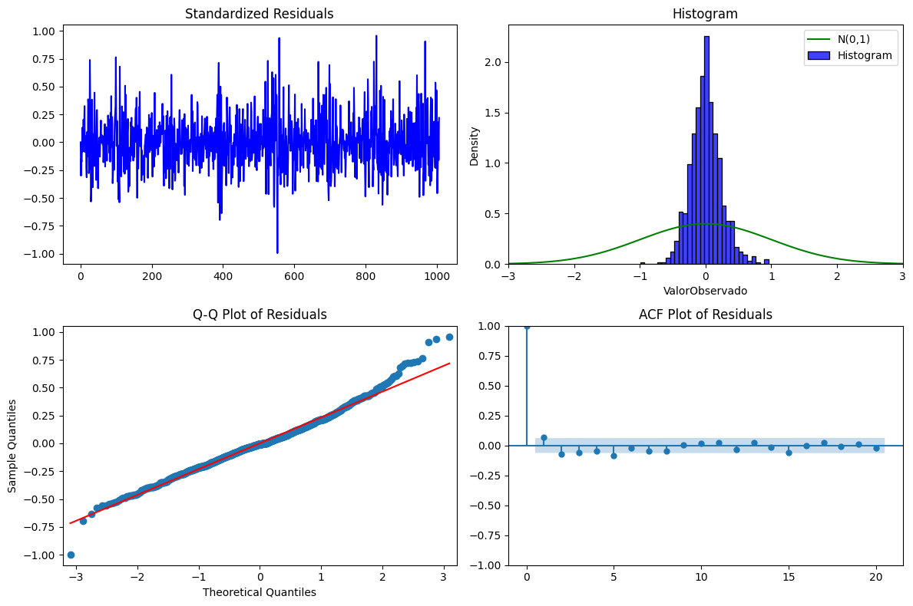
Forecast#
# Se calculan los valores predichos del conjunto de validación
yhat_expsmoth1 = firstsmooth_rolling(train_data['ValorObservado'][-1008:].tolist(), validation_data['ValorObservado'].tolist(), 0.5)
# Se calcula el error de predicción del conjunto de validación
forecast_accuracy( np.array(yhat_expsmoth1),np.array(validation_data['ValorObservado']), "Value")
| MAE | MAPE | MSE | RMSE | |
|---|---|---|---|---|
| Value | 0.480067 | 0.36742 | 0.450426 | 0.671138 |
# Se calculan los valores predichos del conjunto de test
yhat_expsmoth1_test = firstsmooth_rolling(train_data['ValorObservado'][-1008:].tolist(), test_data['ValorObservado'].tolist(), 0.5)
# Se calcula el error de predicción del conjunto de test
forecast_accuracy( np.array(yhat_expsmoth1_test), np.array(test_data['ValorObservado']), "Value")
| MAE | MAPE | MSE | RMSE | |
|---|---|---|---|---|
| Value | 0.441101 | 0.359027 | 0.368889 | 0.607362 |
Forecast Plot#
# Se calculan los residuales del conjunto de test
residuals_firstsmooth_test = test_data['ValorObservado'] - yhat_expsmoth1_test
# Se hace la prueba de Ljung-Box
lb_test = acorr_ljungbox(residuals_firstsmooth_test, lags=[144], return_df=True)
print(lb_test)
lb_stat lb_pvalue
144 234.818856 0.000003
# Prueba de BDS (Brock-Dechert-Scheinkman)
bds_stat, bds_p_value = bds(residuals_firstsmooth_test, max_dim=2, epsilon=None, distance=1.5)
print(f"BDS Statistic: {bds_stat}")
print(f"BDS p-value: {bds_p_value}")
BDS Statistic: 6.167399772289959
BDS p-value: 6.942208757636936e-10
# Gráfica de valores observados vs predicciones
fig, axes = plt.subplots(1, 2, figsize=(16, 5))
ax = sns.lineplot(x=train_data['FechaObservacion'][-288:], y=train_data['ValorObservado'][-288:], label="Entrenamiento", color='g', ax=axes[0])
sns.lineplot(x=validation_data['FechaObservacion'], y=validation_data['ValorObservado'], label="Validación", color='b', ax=axes[0])
sns.lineplot(x=test_data['FechaObservacion'], y=test_data['ValorObservado'], label="Prueba", color='orange', ax=axes[0])
sns.lineplot(x=validation_data['FechaObservacion'], y=yhat_expsmoth1, label="Pronóstico", color='r', ax=axes[0])
sns.lineplot(x=test_data['FechaObservacion'], y=yhat_expsmoth1_test, color='r', ax=axes[0])
# Se añade gráfica ampliada
# Se define la posición y tamaño ( [x, y, width, height] cada valor esta entre 0 y 1)
axins = ax.inset_axes([0.2, 0.63, 0.35, 0.35])
# Gráfiga de zona ampliada
sns.lineplot(x=train_data['FechaObservacion'][-288:], y=train_data['ValorObservado'][-288:], color='g', ax=axins)
sns.lineplot(x=validation_data['FechaObservacion'], y=validation_data['ValorObservado'], color='b', ax=axins)
sns.lineplot(x=test_data['FechaObservacion'], y=test_data['ValorObservado'], color='orange', ax=axins)
sns.lineplot(x=validation_data['FechaObservacion'], y=yhat_expsmoth1, color='r', ax=axins)
sns.lineplot(x=test_data['FechaObservacion'], y=yhat_expsmoth1_test, color='r', ax=axins)
# Se ponen los limites para la zona ampliada
axins.set_xlim(pd.Timestamp('2019-11-21 12:00:00'), pd.Timestamp('2019-11-21 3:00:00'))
ax.indicate_inset_zoom(axins, edgecolor = 'red', lw=1, ls = 'dashed')
axins.set_xticks([])
axins.set_yticks([])
axins.set_xlabel('')
axins.set_ylabel('')
# ACF Plot
sm.graphics.tsa.plot_acf(residuals_firstsmooth_test, lags=20, ax=axes[1] )
p_value = lb_test['lb_pvalue'].values.item()
axes[1].text(0.6, 0.9, f'$p$-value Ljung-Box: {p_value:.3f}', transform=axes[1].transAxes, fontsize=11,
bbox=dict(facecolor='white', edgecolor='black', boxstyle='round,pad=0.3'))
axes[1].set_title("ACF Plot of Residuals")
plt.tight_layout()
plt.show()
C:\Users\luis_\miniconda3\envs\ml_venv\lib\site-packages\seaborn\_oldcore.py:1119: FutureWarning: use_inf_as_na option is deprecated and will be removed in a future version. Convert inf values to NaN before operating instead.
with pd.option_context('mode.use_inf_as_na', True):
C:\Users\luis_\miniconda3\envs\ml_venv\lib\site-packages\seaborn\_oldcore.py:1119: FutureWarning: use_inf_as_na option is deprecated and will be removed in a future version. Convert inf values to NaN before operating instead.
with pd.option_context('mode.use_inf_as_na', True):
C:\Users\luis_\miniconda3\envs\ml_venv\lib\site-packages\seaborn\_oldcore.py:1119: FutureWarning: use_inf_as_na option is deprecated and will be removed in a future version. Convert inf values to NaN before operating instead.
with pd.option_context('mode.use_inf_as_na', True):
C:\Users\luis_\miniconda3\envs\ml_venv\lib\site-packages\seaborn\_oldcore.py:1119: FutureWarning: use_inf_as_na option is deprecated and will be removed in a future version. Convert inf values to NaN before operating instead.
with pd.option_context('mode.use_inf_as_na', True):
C:\Users\luis_\miniconda3\envs\ml_venv\lib\site-packages\seaborn\_oldcore.py:1119: FutureWarning: use_inf_as_na option is deprecated and will be removed in a future version. Convert inf values to NaN before operating instead.
with pd.option_context('mode.use_inf_as_na', True):
C:\Users\luis_\miniconda3\envs\ml_venv\lib\site-packages\seaborn\_oldcore.py:1119: FutureWarning: use_inf_as_na option is deprecated and will be removed in a future version. Convert inf values to NaN before operating instead.
with pd.option_context('mode.use_inf_as_na', True):
C:\Users\luis_\miniconda3\envs\ml_venv\lib\site-packages\seaborn\_oldcore.py:1119: FutureWarning: use_inf_as_na option is deprecated and will be removed in a future version. Convert inf values to NaN before operating instead.
with pd.option_context('mode.use_inf_as_na', True):
C:\Users\luis_\miniconda3\envs\ml_venv\lib\site-packages\seaborn\_oldcore.py:1119: FutureWarning: use_inf_as_na option is deprecated and will be removed in a future version. Convert inf values to NaN before operating instead.
with pd.option_context('mode.use_inf_as_na', True):
C:\Users\luis_\miniconda3\envs\ml_venv\lib\site-packages\seaborn\_oldcore.py:1119: FutureWarning: use_inf_as_na option is deprecated and will be removed in a future version. Convert inf values to NaN before operating instead.
with pd.option_context('mode.use_inf_as_na', True):
C:\Users\luis_\miniconda3\envs\ml_venv\lib\site-packages\seaborn\_oldcore.py:1119: FutureWarning: use_inf_as_na option is deprecated and will be removed in a future version. Convert inf values to NaN before operating instead.
with pd.option_context('mode.use_inf_as_na', True):
C:\Users\luis_\miniconda3\envs\ml_venv\lib\site-packages\seaborn\_oldcore.py:1119: FutureWarning: use_inf_as_na option is deprecated and will be removed in a future version. Convert inf values to NaN before operating instead.
with pd.option_context('mode.use_inf_as_na', True):
C:\Users\luis_\miniconda3\envs\ml_venv\lib\site-packages\seaborn\_oldcore.py:1119: FutureWarning: use_inf_as_na option is deprecated and will be removed in a future version. Convert inf values to NaN before operating instead.
with pd.option_context('mode.use_inf_as_na', True):
C:\Users\luis_\miniconda3\envs\ml_venv\lib\site-packages\seaborn\_oldcore.py:1119: FutureWarning: use_inf_as_na option is deprecated and will be removed in a future version. Convert inf values to NaN before operating instead.
with pd.option_context('mode.use_inf_as_na', True):
C:\Users\luis_\miniconda3\envs\ml_venv\lib\site-packages\seaborn\_oldcore.py:1119: FutureWarning: use_inf_as_na option is deprecated and will be removed in a future version. Convert inf values to NaN before operating instead.
with pd.option_context('mode.use_inf_as_na', True):
C:\Users\luis_\miniconda3\envs\ml_venv\lib\site-packages\seaborn\_oldcore.py:1119: FutureWarning: use_inf_as_na option is deprecated and will be removed in a future version. Convert inf values to NaN before operating instead.
with pd.option_context('mode.use_inf_as_na', True):
C:\Users\luis_\miniconda3\envs\ml_venv\lib\site-packages\seaborn\_oldcore.py:1119: FutureWarning: use_inf_as_na option is deprecated and will be removed in a future version. Convert inf values to NaN before operating instead.
with pd.option_context('mode.use_inf_as_na', True):
C:\Users\luis_\miniconda3\envs\ml_venv\lib\site-packages\seaborn\_oldcore.py:1119: FutureWarning: use_inf_as_na option is deprecated and will be removed in a future version. Convert inf values to NaN before operating instead.
with pd.option_context('mode.use_inf_as_na', True):
C:\Users\luis_\miniconda3\envs\ml_venv\lib\site-packages\seaborn\_oldcore.py:1119: FutureWarning: use_inf_as_na option is deprecated and will be removed in a future version. Convert inf values to NaN before operating instead.
with pd.option_context('mode.use_inf_as_na', True):
C:\Users\luis_\miniconda3\envs\ml_venv\lib\site-packages\seaborn\_oldcore.py:1119: FutureWarning: use_inf_as_na option is deprecated and will be removed in a future version. Convert inf values to NaN before operating instead.
with pd.option_context('mode.use_inf_as_na', True):
C:\Users\luis_\miniconda3\envs\ml_venv\lib\site-packages\seaborn\_oldcore.py:1119: FutureWarning: use_inf_as_na option is deprecated and will be removed in a future version. Convert inf values to NaN before operating instead.
with pd.option_context('mode.use_inf_as_na', True):
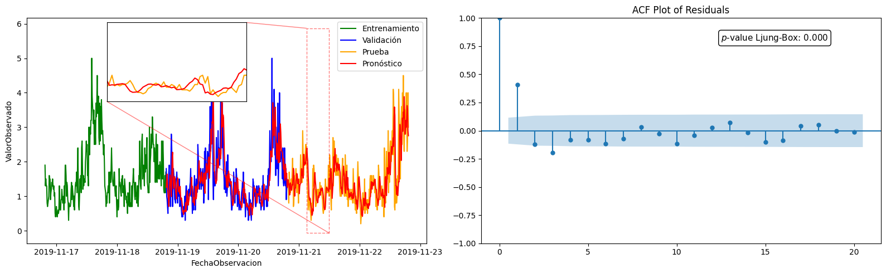
2. Suavización exponencial de segundo orden#
Selección de Modelo#
# Función para realizar la suavización exponencial de primer orden
def secondsmooth_rolling(history, test, alpha):
predictions = list()
for t in range(len(test)):
model1 = firstsmooth(history, alpha)
model2 = firstsmooth(model1, alpha)
model = ( (2 + (alpha/(1-alpha))) * pd.Series(model1) - (1+ (alpha/(1-alpha)))*pd.Series(model2)).tolist()
yhat = model[-1]
predictions.append(yhat)
obs = test[t]
history.append(obs)
return predictions
# Se crea array de valores de lambda
lambda_values = np.arange(0.1, 1.0, 0.1)
mse_values = {}
# Bucle para evaluar cada lambda, calculando el MSE
for lambda_v in lambda_values:
forecast = secondsmooth_rolling(train_data['ValorObservado'][-1008:].tolist(), validation_data['ValorObservado'].tolist(), lambda_v)
mse = forecast_accuracy(np.array(forecast), np.array(validation_data['ValorObservado']), "Value")['MSE'][0]
mse_values[lambda_v] = mse
C:\Users\luis_\AppData\Local\Temp\ipykernel_15124\1405884250.py:6: FutureWarning: Series.__getitem__ treating keys as positions is deprecated. In a future version, integer keys will always be treated as labels (consistent with DataFrame behavior). To access a value by position, use `ser.iloc[pos]`
mse = forecast_accuracy(np.array(forecast), np.array(validation_data['ValorObservado']), "Value")['MSE'][0]
# Modelo seleccionado, lambda = 0.5
wind_smooth1 = firstsmooth(y=train_data['ValorObservado'][-1008:].tolist(), lambda_= 0.5)
wind_smooth2 = firstsmooth(y=wind_smooth1, lambda_= 0.5)
se2_hat = (2 * pd.Series(wind_smooth1) - pd.Series(wind_smooth1)).tolist()
Gráfica de diagnóstico#
# Residuales de modelo seleccionado
residuals_secondsmooth = train_data['ValorObservado'][-1008:] - se2_hat
# Se crea gráfica de diagnóstico
fig, axes = plt.subplots(2, 2, figsize=(12, 8))
# Plot 1: Standardized Residuals
axes[0, 0].plot(range(len(residuals_secondsmooth)),residuals_secondsmooth, color="blue")
axes[0, 0].set_title("Standardized Residuals")
# Plot 2: Histogram & KDE
sns.histplot(residuals_secondsmooth, stat="density", bins=30, kde=False, ax=axes[0, 1], color="blue", label = "Histogram")
xmin, xmax = axes[0, 1].get_xlim()
x = np.linspace(xmin, xmax, 100)
p = norm.pdf(x, 0, 1) # Normal distribution N(0,1)
axes[0, 1].plot(x, p, 'g-', label = "N(0,1)")
axes[0, 1].set_title("Histogram")
axes[0, 1].legend()
# Plot 3: Q-Q Plot
sm.qqplot(residuals_secondsmooth, line="s", ax=axes[1, 0])
axes[1, 0].set_title("Q-Q Plot of Residuals")
# Plot 4: ACF
sm.graphics.tsa.plot_acf(residuals_secondsmooth, lags=20, ax=axes[1, 1])
axes[1, 1].set_title("ACF Plot of Residuals")
plt.tight_layout()
plt.show()
C:\Users\luis_\miniconda3\envs\ml_venv\lib\site-packages\seaborn\_oldcore.py:1119: FutureWarning: use_inf_as_na option is deprecated and will be removed in a future version. Convert inf values to NaN before operating instead.
with pd.option_context('mode.use_inf_as_na', True):
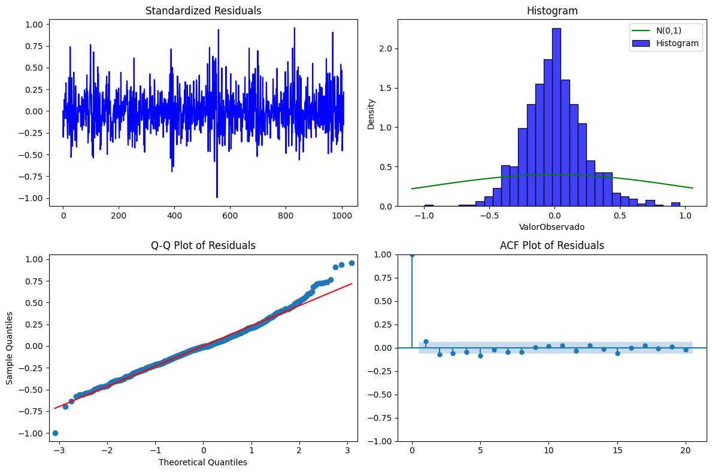
Forecast#
# Se calculan los valores predichos del conjunto de validación
yhat_expsmoth2 = secondsmooth_rolling(train_data['ValorObservado'][-1008:].tolist(), validation_data['ValorObservado'].tolist(), 0.5)
# Se calcula el error de predicción del conjunto de validación
forecast_accuracy( np.array(yhat_expsmoth2),np.array(validation_data['ValorObservado']), "Value")
| MAE | MAPE | MSE | RMSE | |
|---|---|---|---|---|
| Value | 0.49118 | 0.35777 | 0.470293 | 0.685779 |
# Se calculan los valores predichos del conjunto de test
yhat_expsmoth2_test = secondsmooth_rolling(train_data['ValorObservado'][-1008:].tolist(), test_data['ValorObservado'].tolist(), 0.5)
# Se calcula el error de predicción del conjunto de test
forecast_accuracy( np.array(yhat_expsmoth2_test), np.array(test_data['ValorObservado']), "Value")
| MAE | MAPE | MSE | RMSE | |
|---|---|---|---|---|
| Value | 0.44284 | 0.325713 | 0.382873 | 0.618767 |
Forecast Plot#
# Se calculan los residuales del conjunto de test
residuals_secondsmooth_test = test_data['ValorObservado'] - yhat_expsmoth2_test
# Se hace la prueba de Ljung-Box
lb_test = acorr_ljungbox(residuals_secondsmooth_test, lags=[144], return_df=True)
print(lb_test)
lb_stat lb_pvalue
144 165.010041 0.110984
# Prueba de BDS (Brock-Dechert-Scheinkman)
bds_stat, bds_p_value = bds(residuals_secondsmooth_test, max_dim=2, epsilon=None, distance=1.5)
print(f"BDS Statistic: {bds_stat}")
print(f"BDS p-value: {bds_p_value}")
BDS Statistic: 3.8632215202432825
BDS p-value: 0.00011190144623338053
# Gráfica de valores observados vs predicciones
fig, axes = plt.subplots(1, 2, figsize=(16, 5))
ax = sns.lineplot(x=train_data['FechaObservacion'][-288:], y=train_data['ValorObservado'][-288:], label="Entrenamiento", color='g', ax=axes[0])
sns.lineplot(x=validation_data['FechaObservacion'], y=validation_data['ValorObservado'], label="Validación", color='b', ax=axes[0])
sns.lineplot(x=test_data['FechaObservacion'], y=test_data['ValorObservado'], label="Prueba", color='orange', ax=axes[0])
sns.lineplot(x=validation_data['FechaObservacion'], y=yhat_expsmoth2, label="Pronóstico", color='r', ax=axes[0])
sns.lineplot(x=test_data['FechaObservacion'], y=yhat_expsmoth2_test, color='r', ax=axes[0])
# Se añade gráfica ampliada
# Se define la posición y tamaño ( [x, y, width, height] cada valor esta entre 0 y 1)
axins = ax.inset_axes([0.2, 0.63, 0.35, 0.35])
# Gráfiga de zona ampliada
sns.lineplot(x=train_data['FechaObservacion'][-288:], y=train_data['ValorObservado'][-288:], color='g', ax=axins)
sns.lineplot(x=validation_data['FechaObservacion'], y=validation_data['ValorObservado'], color='b', ax=axins)
sns.lineplot(x=test_data['FechaObservacion'], y=test_data['ValorObservado'], color='orange', ax=axins)
sns.lineplot(x=validation_data['FechaObservacion'], y=yhat_expsmoth2, color='r', ax=axins)
sns.lineplot(x=test_data['FechaObservacion'], y=yhat_expsmoth2_test, color='r', ax=axins)
# Se ponen los limites para la zona ampliada
axins.set_xlim(pd.Timestamp('2019-11-21 12:00:00'), pd.Timestamp('2019-11-21 3:00:00'))
ax.indicate_inset_zoom(axins, edgecolor = 'red', lw=1, ls = 'dashed')
axins.set_xticks([])
axins.set_yticks([])
axins.set_xlabel('')
axins.set_ylabel('')
# ACF Plot
sm.graphics.tsa.plot_acf(residuals_secondsmooth_test, lags=20, ax=axes[1] )
p_value = lb_test['lb_pvalue'].values.item()
axes[1].text(0.6, 0.9, f'$p$-value Ljung-Box: {p_value:.3f}', transform=axes[1].transAxes, fontsize=11,
bbox=dict(facecolor='white', edgecolor='black', boxstyle='round,pad=0.3'))
axes[1].set_title("ACF Plot of Residuals")
plt.show()
C:\Users\luis_\miniconda3\envs\ml_venv\lib\site-packages\seaborn\_oldcore.py:1119: FutureWarning: use_inf_as_na option is deprecated and will be removed in a future version. Convert inf values to NaN before operating instead.
with pd.option_context('mode.use_inf_as_na', True):
C:\Users\luis_\miniconda3\envs\ml_venv\lib\site-packages\seaborn\_oldcore.py:1119: FutureWarning: use_inf_as_na option is deprecated and will be removed in a future version. Convert inf values to NaN before operating instead.
with pd.option_context('mode.use_inf_as_na', True):
C:\Users\luis_\miniconda3\envs\ml_venv\lib\site-packages\seaborn\_oldcore.py:1119: FutureWarning: use_inf_as_na option is deprecated and will be removed in a future version. Convert inf values to NaN before operating instead.
with pd.option_context('mode.use_inf_as_na', True):
C:\Users\luis_\miniconda3\envs\ml_venv\lib\site-packages\seaborn\_oldcore.py:1119: FutureWarning: use_inf_as_na option is deprecated and will be removed in a future version. Convert inf values to NaN before operating instead.
with pd.option_context('mode.use_inf_as_na', True):
C:\Users\luis_\miniconda3\envs\ml_venv\lib\site-packages\seaborn\_oldcore.py:1119: FutureWarning: use_inf_as_na option is deprecated and will be removed in a future version. Convert inf values to NaN before operating instead.
with pd.option_context('mode.use_inf_as_na', True):
C:\Users\luis_\miniconda3\envs\ml_venv\lib\site-packages\seaborn\_oldcore.py:1119: FutureWarning: use_inf_as_na option is deprecated and will be removed in a future version. Convert inf values to NaN before operating instead.
with pd.option_context('mode.use_inf_as_na', True):
C:\Users\luis_\miniconda3\envs\ml_venv\lib\site-packages\seaborn\_oldcore.py:1119: FutureWarning: use_inf_as_na option is deprecated and will be removed in a future version. Convert inf values to NaN before operating instead.
with pd.option_context('mode.use_inf_as_na', True):
C:\Users\luis_\miniconda3\envs\ml_venv\lib\site-packages\seaborn\_oldcore.py:1119: FutureWarning: use_inf_as_na option is deprecated and will be removed in a future version. Convert inf values to NaN before operating instead.
with pd.option_context('mode.use_inf_as_na', True):
C:\Users\luis_\miniconda3\envs\ml_venv\lib\site-packages\seaborn\_oldcore.py:1119: FutureWarning: use_inf_as_na option is deprecated and will be removed in a future version. Convert inf values to NaN before operating instead.
with pd.option_context('mode.use_inf_as_na', True):
C:\Users\luis_\miniconda3\envs\ml_venv\lib\site-packages\seaborn\_oldcore.py:1119: FutureWarning: use_inf_as_na option is deprecated and will be removed in a future version. Convert inf values to NaN before operating instead.
with pd.option_context('mode.use_inf_as_na', True):
C:\Users\luis_\miniconda3\envs\ml_venv\lib\site-packages\seaborn\_oldcore.py:1119: FutureWarning: use_inf_as_na option is deprecated and will be removed in a future version. Convert inf values to NaN before operating instead.
with pd.option_context('mode.use_inf_as_na', True):
C:\Users\luis_\miniconda3\envs\ml_venv\lib\site-packages\seaborn\_oldcore.py:1119: FutureWarning: use_inf_as_na option is deprecated and will be removed in a future version. Convert inf values to NaN before operating instead.
with pd.option_context('mode.use_inf_as_na', True):
C:\Users\luis_\miniconda3\envs\ml_venv\lib\site-packages\seaborn\_oldcore.py:1119: FutureWarning: use_inf_as_na option is deprecated and will be removed in a future version. Convert inf values to NaN before operating instead.
with pd.option_context('mode.use_inf_as_na', True):
C:\Users\luis_\miniconda3\envs\ml_venv\lib\site-packages\seaborn\_oldcore.py:1119: FutureWarning: use_inf_as_na option is deprecated and will be removed in a future version. Convert inf values to NaN before operating instead.
with pd.option_context('mode.use_inf_as_na', True):
C:\Users\luis_\miniconda3\envs\ml_venv\lib\site-packages\seaborn\_oldcore.py:1119: FutureWarning: use_inf_as_na option is deprecated and will be removed in a future version. Convert inf values to NaN before operating instead.
with pd.option_context('mode.use_inf_as_na', True):
C:\Users\luis_\miniconda3\envs\ml_venv\lib\site-packages\seaborn\_oldcore.py:1119: FutureWarning: use_inf_as_na option is deprecated and will be removed in a future version. Convert inf values to NaN before operating instead.
with pd.option_context('mode.use_inf_as_na', True):
C:\Users\luis_\miniconda3\envs\ml_venv\lib\site-packages\seaborn\_oldcore.py:1119: FutureWarning: use_inf_as_na option is deprecated and will be removed in a future version. Convert inf values to NaN before operating instead.
with pd.option_context('mode.use_inf_as_na', True):
C:\Users\luis_\miniconda3\envs\ml_venv\lib\site-packages\seaborn\_oldcore.py:1119: FutureWarning: use_inf_as_na option is deprecated and will be removed in a future version. Convert inf values to NaN before operating instead.
with pd.option_context('mode.use_inf_as_na', True):
C:\Users\luis_\miniconda3\envs\ml_venv\lib\site-packages\seaborn\_oldcore.py:1119: FutureWarning: use_inf_as_na option is deprecated and will be removed in a future version. Convert inf values to NaN before operating instead.
with pd.option_context('mode.use_inf_as_na', True):
C:\Users\luis_\miniconda3\envs\ml_venv\lib\site-packages\seaborn\_oldcore.py:1119: FutureWarning: use_inf_as_na option is deprecated and will be removed in a future version. Convert inf values to NaN before operating instead.
with pd.option_context('mode.use_inf_as_na', True):
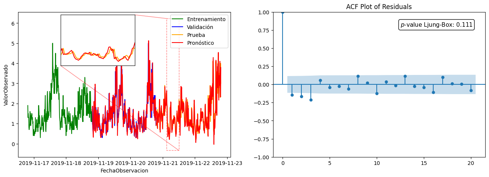
3. Suavización exponencial de Holt-Winters de primer orden#
Selección de Modelo#
# Función para realizar el forecast rolling
def hw1_rolling(history, test, alpha):
predictions = list()
for t in range(len(test)):
model = SimpleExpSmoothing(history)
model_fit = model.fit(smoothing_level=alpha, optimized=False)
output = model_fit.forecast()
yhat = output[0]
predictions.append(yhat)
obs = test[t]
history.append(obs)
return predictions
# Se crea array de valores de alpha
alpha_values = np.arange(0.1, 1.0, 0.1)
mse_values = {}
# Bucle para evaluar cada alpha, calculando el MSE
for alpha in alpha_values:
forecast = hw1_rolling(train_data['ValorObservado'][-1008:].tolist(), validation_data['ValorObservado'].tolist(), alpha)
mse = forecast_accuracy(np.array(validation_data['ValorObservado']), np.array(forecast), "Value")['MSE'][0]
mse_values[alpha] = mse
C:\Users\luis_\AppData\Local\Temp\ipykernel_15124\2922221510.py:6: FutureWarning: Series.__getitem__ treating keys as positions is deprecated. In a future version, integer keys will always be treated as labels (consistent with DataFrame behavior). To access a value by position, use `ser.iloc[pos]`
mse = forecast_accuracy(np.array(validation_data['ValorObservado']), np.array(forecast), "Value")['MSE'][0]
C:\Users\luis_\AppData\Local\Temp\ipykernel_15124\2922221510.py:6: FutureWarning: Series.__getitem__ treating keys as positions is deprecated. In a future version, integer keys will always be treated as labels (consistent with DataFrame behavior). To access a value by position, use `ser.iloc[pos]`
mse = forecast_accuracy(np.array(validation_data['ValorObservado']), np.array(forecast), "Value")['MSE'][0]
C:\Users\luis_\AppData\Local\Temp\ipykernel_15124\2922221510.py:6: FutureWarning: Series.__getitem__ treating keys as positions is deprecated. In a future version, integer keys will always be treated as labels (consistent with DataFrame behavior). To access a value by position, use `ser.iloc[pos]`
mse = forecast_accuracy(np.array(validation_data['ValorObservado']), np.array(forecast), "Value")['MSE'][0]
C:\Users\luis_\AppData\Local\Temp\ipykernel_15124\2922221510.py:6: FutureWarning: Series.__getitem__ treating keys as positions is deprecated. In a future version, integer keys will always be treated as labels (consistent with DataFrame behavior). To access a value by position, use `ser.iloc[pos]`
mse = forecast_accuracy(np.array(validation_data['ValorObservado']), np.array(forecast), "Value")['MSE'][0]
C:\Users\luis_\AppData\Local\Temp\ipykernel_15124\2922221510.py:6: FutureWarning: Series.__getitem__ treating keys as positions is deprecated. In a future version, integer keys will always be treated as labels (consistent with DataFrame behavior). To access a value by position, use `ser.iloc[pos]`
mse = forecast_accuracy(np.array(validation_data['ValorObservado']), np.array(forecast), "Value")['MSE'][0]
C:\Users\luis_\AppData\Local\Temp\ipykernel_15124\2922221510.py:6: FutureWarning: Series.__getitem__ treating keys as positions is deprecated. In a future version, integer keys will always be treated as labels (consistent with DataFrame behavior). To access a value by position, use `ser.iloc[pos]`
mse = forecast_accuracy(np.array(validation_data['ValorObservado']), np.array(forecast), "Value")['MSE'][0]
C:\Users\luis_\AppData\Local\Temp\ipykernel_15124\2922221510.py:6: FutureWarning: Series.__getitem__ treating keys as positions is deprecated. In a future version, integer keys will always be treated as labels (consistent with DataFrame behavior). To access a value by position, use `ser.iloc[pos]`
mse = forecast_accuracy(np.array(validation_data['ValorObservado']), np.array(forecast), "Value")['MSE'][0]
C:\Users\luis_\AppData\Local\Temp\ipykernel_15124\2922221510.py:6: FutureWarning: Series.__getitem__ treating keys as positions is deprecated. In a future version, integer keys will always be treated as labels (consistent with DataFrame behavior). To access a value by position, use `ser.iloc[pos]`
mse = forecast_accuracy(np.array(validation_data['ValorObservado']), np.array(forecast), "Value")['MSE'][0]
C:\Users\luis_\AppData\Local\Temp\ipykernel_15124\2922221510.py:6: FutureWarning: Series.__getitem__ treating keys as positions is deprecated. In a future version, integer keys will always be treated as labels (consistent with DataFrame behavior). To access a value by position, use `ser.iloc[pos]`
mse = forecast_accuracy(np.array(validation_data['ValorObservado']), np.array(forecast), "Value")['MSE'][0]
# Modelo seleccionado, alpha = 0.4
model_expsmoth = SimpleExpSmoothing(train_data['ValorObservado'][-1008:])
model_expsmoth1 = model_expsmoth.fit(smoothing_level=0.4, optimized=False)
model_expsmoth1.summary()
C:\Users\luis_\miniconda3\envs\ml_venv\lib\site-packages\statsmodels\tsa\base\tsa_model.py:473: ValueWarning: No frequency information was provided, so inferred frequency 10min will be used.
self._init_dates(dates, freq)
| Dep. Variable: | ValorObservado | No. Observations: | 1008 |
|---|---|---|---|
| Model: | SimpleExpSmoothing | SSE | 219.973 |
| Optimized: | False | AIC | -1530.398 |
| Trend: | None | BIC | -1520.567 |
| Seasonal: | None | AICC | -1530.359 |
| Seasonal Periods: | None | Date: | Wed, 12 Mar 2025 |
| Box-Cox: | False | Time: | 22:58:23 |
| Box-Cox Coeff.: | None |
| coeff | code | optimized | |
|---|---|---|---|
| smoothing_level | 0.4000000 | alpha | False |
| initial_level | 1.1000000 | l.0 | False |
Gráfica de diagnóstico#
# Residuales de modelo seleccionado
residuals_hw1 = train_data['ValorObservado'][-1008:] - model_expsmoth1.fittedvalues
# Se crea gráfica de diagnóstico
fig, axes = plt.subplots(2, 2, figsize=(12, 8))
# Plot 1: Standardized Residuals
axes[0, 0].plot(range(len(residuals_hw1)),residuals_hw1, color="blue")
axes[0, 0].set_title("Standardized Residuals")
# Plot 2: Histogram & KDE
sns.histplot(residuals_hw1, stat="density", bins=30, kde=False, ax=axes[0, 1], color="blue", label = "Histogram")
xmin, xmax = axes[0, 1].get_xlim()
x = np.linspace(xmin, xmax, 100)
p = norm.pdf(x, 0, 1) # Normal distribution N(0,1)
axes[0, 1].plot(x, p, 'g-', label = "N(0,1)")
axes[0, 1].set_title("Histogram")
axes[0, 1].legend()
# Plot 3: Q-Q Plot
sm.qqplot(residuals_hw1, line="s", ax=axes[1, 0])
axes[1, 0].set_title("Q-Q Plot of Residuals")
# Plot 4: ACF
sm.graphics.tsa.plot_acf(residuals_hw1, lags=20, ax=axes[1, 1])
axes[1, 1].set_title("ACF Plot of Residuals")
plt.tight_layout()
plt.show()
C:\Users\luis_\miniconda3\envs\ml_venv\lib\site-packages\seaborn\_oldcore.py:1119: FutureWarning: use_inf_as_na option is deprecated and will be removed in a future version. Convert inf values to NaN before operating instead.
with pd.option_context('mode.use_inf_as_na', True):
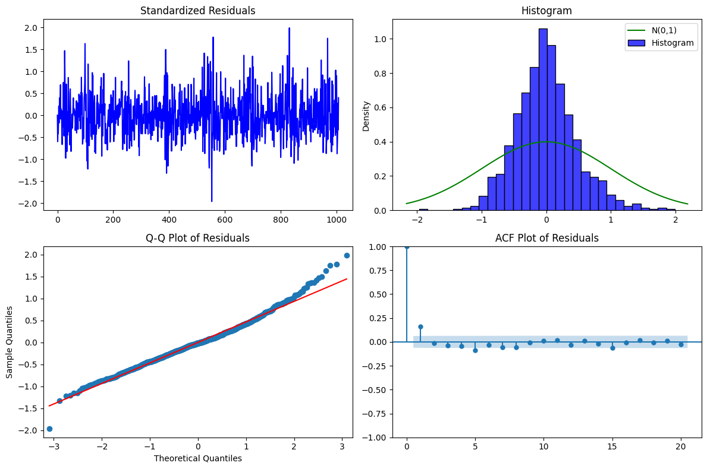
Forecast#
# Se calculan los valores predichos del conjunto de validación
yhat_hw1 = hw1_rolling(train_data['ValorObservado'][-1008:].tolist(), validation_data['ValorObservado'].tolist(), 0.4)
# Se calcula el error de predicción del conjunto de validación
forecast_accuracy( np.array(yhat_hw1),np.array(validation_data['ValorObservado']), "Value")
| MAE | MAPE | MSE | RMSE | |
|---|---|---|---|---|
| Value | 0.413684 | 0.316301 | 0.338862 | 0.582119 |
# Se calculan los valores predichos del conjunto de test
yhat_hw1_test = hw1_rolling(train_data['ValorObservado'][-1008:].tolist(), test_data['ValorObservado'].tolist(), 0.4)
# Se calcula el error de predicción del conjunto de test
forecast_accuracy( np.array(yhat_hw1_test), np.array(test_data['ValorObservado']), "Value")
| MAE | MAPE | MSE | RMSE | |
|---|---|---|---|---|
| Value | 0.383676 | 0.307116 | 0.28267 | 0.531667 |
Forecast Plot#
# Se calculan los residuales del conjunto de test
residuals_hw1_test = test_data['ValorObservado'] - yhat_hw1_test
# Se hace la prueba de Ljung-Box
lb_test = acorr_ljungbox(residuals_hw1_test, lags=[144], return_df=True)
print(lb_test)
lb_stat lb_pvalue
144 139.277187 0.595607
# Prueba de BDS (Brock-Dechert-Scheinkman)
bds_stat, bds_p_value = bds(residuals_hw1_test, max_dim=2, epsilon=None, distance=1.5)
print(f"BDS Statistic: {bds_stat}")
print(f"BDS p-value: {bds_p_value}")
BDS Statistic: 3.5251742424583403
BDS p-value: 0.0004232043265235631
# Gráfica de valores observados vs predicciones
fig, axes = plt.subplots(1, 2, figsize=(16, 5))
ax = sns.lineplot(x=train_data['FechaObservacion'][-288:], y=train_data['ValorObservado'][-288:], label="Entrenamiento", color='g', ax=axes[0])
sns.lineplot(x=validation_data['FechaObservacion'], y=validation_data['ValorObservado'], label="Validación", color='b', ax=axes[0])
sns.lineplot(x=test_data['FechaObservacion'], y=test_data['ValorObservado'], label="Prueba", color='orange', ax=axes[0])
sns.lineplot(x=validation_data['FechaObservacion'], y=yhat_hw1, label="Pronóstico", color='r', ax=axes[0])
sns.lineplot(x=test_data['FechaObservacion'], y=yhat_hw1_test, color='r', ax=axes[0])
# Se añade gráfica ampliada
# Se define la posición y tamaño ( [x, y, width, height] cada valor esta entre 0 y 1)
axins = ax.inset_axes([0.2, 0.63, 0.35, 0.35])
# Gráfiga de zona ampliada
sns.lineplot(x=train_data['FechaObservacion'][-288:], y=train_data['ValorObservado'][-288:], color='g', ax=axins)
sns.lineplot(x=validation_data['FechaObservacion'], y=validation_data['ValorObservado'], color='b', ax=axins)
sns.lineplot(x=test_data['FechaObservacion'], y=test_data['ValorObservado'], color='orange', ax=axins)
sns.lineplot(x=validation_data['FechaObservacion'], y=yhat_hw1, color='r', ax=axins)
sns.lineplot(x=test_data['FechaObservacion'], y=yhat_hw1_test, color='r', ax=axins)
# Se ponen los limites para la zona ampliada
axins.set_xlim(pd.Timestamp('2019-11-21 12:00:00'), pd.Timestamp('2019-11-21 3:00:00'))
ax.indicate_inset_zoom(axins, edgecolor = 'red', lw=1, ls = 'dashed')
axins.set_xticks([])
axins.set_yticks([])
axins.set_xlabel('')
axins.set_ylabel('')
# ACF Plot
sm.graphics.tsa.plot_acf(residuals_hw1_test, lags=20, ax=axes[1] )
p_value = lb_test['lb_pvalue'].values.item()
axes[1].text(0.6, 0.9, f'$p$-value Ljung-Box: {p_value:.3f}', transform=axes[1].transAxes, fontsize=11,
bbox=dict(facecolor='white', edgecolor='black', boxstyle='round,pad=0.3'))
axes[1].set_title("ACF Plot of Residuals")
plt.show()
C:\Users\luis_\miniconda3\envs\ml_venv\lib\site-packages\seaborn\_oldcore.py:1119: FutureWarning: use_inf_as_na option is deprecated and will be removed in a future version. Convert inf values to NaN before operating instead.
with pd.option_context('mode.use_inf_as_na', True):
C:\Users\luis_\miniconda3\envs\ml_venv\lib\site-packages\seaborn\_oldcore.py:1119: FutureWarning: use_inf_as_na option is deprecated and will be removed in a future version. Convert inf values to NaN before operating instead.
with pd.option_context('mode.use_inf_as_na', True):
C:\Users\luis_\miniconda3\envs\ml_venv\lib\site-packages\seaborn\_oldcore.py:1119: FutureWarning: use_inf_as_na option is deprecated and will be removed in a future version. Convert inf values to NaN before operating instead.
with pd.option_context('mode.use_inf_as_na', True):
C:\Users\luis_\miniconda3\envs\ml_venv\lib\site-packages\seaborn\_oldcore.py:1119: FutureWarning: use_inf_as_na option is deprecated and will be removed in a future version. Convert inf values to NaN before operating instead.
with pd.option_context('mode.use_inf_as_na', True):
C:\Users\luis_\miniconda3\envs\ml_venv\lib\site-packages\seaborn\_oldcore.py:1119: FutureWarning: use_inf_as_na option is deprecated and will be removed in a future version. Convert inf values to NaN before operating instead.
with pd.option_context('mode.use_inf_as_na', True):
C:\Users\luis_\miniconda3\envs\ml_venv\lib\site-packages\seaborn\_oldcore.py:1119: FutureWarning: use_inf_as_na option is deprecated and will be removed in a future version. Convert inf values to NaN before operating instead.
with pd.option_context('mode.use_inf_as_na', True):
C:\Users\luis_\miniconda3\envs\ml_venv\lib\site-packages\seaborn\_oldcore.py:1119: FutureWarning: use_inf_as_na option is deprecated and will be removed in a future version. Convert inf values to NaN before operating instead.
with pd.option_context('mode.use_inf_as_na', True):
C:\Users\luis_\miniconda3\envs\ml_venv\lib\site-packages\seaborn\_oldcore.py:1119: FutureWarning: use_inf_as_na option is deprecated and will be removed in a future version. Convert inf values to NaN before operating instead.
with pd.option_context('mode.use_inf_as_na', True):
C:\Users\luis_\miniconda3\envs\ml_venv\lib\site-packages\seaborn\_oldcore.py:1119: FutureWarning: use_inf_as_na option is deprecated and will be removed in a future version. Convert inf values to NaN before operating instead.
with pd.option_context('mode.use_inf_as_na', True):
C:\Users\luis_\miniconda3\envs\ml_venv\lib\site-packages\seaborn\_oldcore.py:1119: FutureWarning: use_inf_as_na option is deprecated and will be removed in a future version. Convert inf values to NaN before operating instead.
with pd.option_context('mode.use_inf_as_na', True):
C:\Users\luis_\miniconda3\envs\ml_venv\lib\site-packages\seaborn\_oldcore.py:1119: FutureWarning: use_inf_as_na option is deprecated and will be removed in a future version. Convert inf values to NaN before operating instead.
with pd.option_context('mode.use_inf_as_na', True):
C:\Users\luis_\miniconda3\envs\ml_venv\lib\site-packages\seaborn\_oldcore.py:1119: FutureWarning: use_inf_as_na option is deprecated and will be removed in a future version. Convert inf values to NaN before operating instead.
with pd.option_context('mode.use_inf_as_na', True):
C:\Users\luis_\miniconda3\envs\ml_venv\lib\site-packages\seaborn\_oldcore.py:1119: FutureWarning: use_inf_as_na option is deprecated and will be removed in a future version. Convert inf values to NaN before operating instead.
with pd.option_context('mode.use_inf_as_na', True):
C:\Users\luis_\miniconda3\envs\ml_venv\lib\site-packages\seaborn\_oldcore.py:1119: FutureWarning: use_inf_as_na option is deprecated and will be removed in a future version. Convert inf values to NaN before operating instead.
with pd.option_context('mode.use_inf_as_na', True):
C:\Users\luis_\miniconda3\envs\ml_venv\lib\site-packages\seaborn\_oldcore.py:1119: FutureWarning: use_inf_as_na option is deprecated and will be removed in a future version. Convert inf values to NaN before operating instead.
with pd.option_context('mode.use_inf_as_na', True):
C:\Users\luis_\miniconda3\envs\ml_venv\lib\site-packages\seaborn\_oldcore.py:1119: FutureWarning: use_inf_as_na option is deprecated and will be removed in a future version. Convert inf values to NaN before operating instead.
with pd.option_context('mode.use_inf_as_na', True):
C:\Users\luis_\miniconda3\envs\ml_venv\lib\site-packages\seaborn\_oldcore.py:1119: FutureWarning: use_inf_as_na option is deprecated and will be removed in a future version. Convert inf values to NaN before operating instead.
with pd.option_context('mode.use_inf_as_na', True):
C:\Users\luis_\miniconda3\envs\ml_venv\lib\site-packages\seaborn\_oldcore.py:1119: FutureWarning: use_inf_as_na option is deprecated and will be removed in a future version. Convert inf values to NaN before operating instead.
with pd.option_context('mode.use_inf_as_na', True):
C:\Users\luis_\miniconda3\envs\ml_venv\lib\site-packages\seaborn\_oldcore.py:1119: FutureWarning: use_inf_as_na option is deprecated and will be removed in a future version. Convert inf values to NaN before operating instead.
with pd.option_context('mode.use_inf_as_na', True):
C:\Users\luis_\miniconda3\envs\ml_venv\lib\site-packages\seaborn\_oldcore.py:1119: FutureWarning: use_inf_as_na option is deprecated and will be removed in a future version. Convert inf values to NaN before operating instead.
with pd.option_context('mode.use_inf_as_na', True):
4. Suavización exponencial de Holt-Winters de segundo orden#
Selección de Modelo#
# Función para realizar el forecast rolling
def hw2_rolling(history, test, alpha, beta):
predictions = list()
for t in range(len(test)):
model = ExponentialSmoothing(history, trend='add', seasonal=None)
model_fit = model.fit(smoothing_level=alpha, smoothing_trend=beta)
output = model_fit.forecast()
yhat = output[0]
predictions.append(yhat)
obs = test[t]
history.append(obs)
return predictions
# Se crea array de valores de alphas y betas
alphas = np.arange(0.01, 1, 1)
betas = np.arange(0.01, 1, 1)
mse_values = {}
# Función para evaluar cada parámetro, calculando el MSE
def des_optimizer(train_data, validation_data, alpha_range, beta_range):
best_alpha, best_beta, best_mse = None, None, float("inf")
for alpha in alpha_range:
for beta in beta_range:
# Predicción del conjunto de validación
forecast = hw2_rolling(train_data, validation_data, alpha, beta)
# Se calcula el MSE en el conjunto de validación
mse = forecast_accuracy(np.array(validation_data), np.array(forecast), "Value")['MSE'][0]
# Si esta combinación de parámetros da el mejor MSE, actualiza los mejores parámetros
if mse < best_mse:
best_mse = mse
best_alpha = alpha
best_beta = beta
return best_alpha, best_beta, best_mse
# Evaluando la función para determinar los parámetros
des_optimizer(train_data['ValorObservado'][-1008:].tolist(), validation_data['ValorObservado'].tolist(), alphas, betas)
C:\Users\luis_\AppData\Local\Temp\ipykernel_15124\3272386553.py:10: FutureWarning: Series.__getitem__ treating keys as positions is deprecated. In a future version, integer keys will always be treated as labels (consistent with DataFrame behavior). To access a value by position, use `ser.iloc[pos]`
mse = forecast_accuracy(np.array(validation_data), np.array(forecast), "Value")['MSE'][0]
(0.01, 0.01, 0.7263186736645761)
# Modelo seleccionado, alpha = 0.4, beta = 0.1
model_hw2 = ExponentialSmoothing(train_data['ValorObservado'][-1008:], trend='add', seasonal=None)
model_hw2 = model_hw2.fit(smoothing_level=0.4, smoothing_trend = 0.1, optimized=False)
model_hw2.summary()
C:\Users\luis_\miniconda3\envs\ml_venv\lib\site-packages\statsmodels\tsa\base\tsa_model.py:473: ValueWarning: No frequency information was provided, so inferred frequency 10min will be used.
self._init_dates(dates, freq)
| Dep. Variable: | ValorObservado | No. Observations: | 1008 |
|---|---|---|---|
| Model: | ExponentialSmoothing | SSE | 237.278 |
| Optimized: | False | AIC | -1450.064 |
| Trend: | Additive | BIC | -1430.401 |
| Seasonal: | None | AICC | -1449.980 |
| Seasonal Periods: | None | Date: | Wed, 12 Mar 2025 |
| Box-Cox: | False | Time: | 22:58:28 |
| Box-Cox Coeff.: | None |
| coeff | code | optimized | |
|---|---|---|---|
| smoothing_level | 0.4000000 | alpha | False |
| smoothing_trend | 0.1000000 | beta | False |
| initial_level | 0.6066667 | l.0 | False |
| initial_trend | -0.0012121 | b.0 | False |
Gráfica de diagnóstico#
# Residuales de modelo seleccionado
residuals_hw2 = train_data['ValorObservado'][-1008:] - model_hw2.fittedvalues
# Se crea gráfica de diagnóstico
fig, axes = plt.subplots(2, 2, figsize=(12, 8))
# Plot 1: Standardized Residuals
axes[0, 0].plot(range(len(residuals_hw2)),residuals_hw2, color="blue")
axes[0, 0].set_title("Standardized Residuals")
# Plot 2: Histogram & KDE
sns.histplot(residuals_hw2, stat="density", bins=30, kde=False, ax=axes[0, 1], color="blue", label = "Histogram")
xmin, xmax = axes[0, 1].get_xlim()
x = np.linspace(xmin, xmax, 100)
p = norm.pdf(x, 0, 1) # Normal distribution N(0,1)
axes[0, 1].plot(x, p, 'g-', label = "N(0,1)")
axes[0, 1].set_title("Histogram")
axes[0, 1].legend()
# Plot 3: Q-Q Plot
sm.qqplot(residuals_hw2, line="s", ax=axes[1, 0])
axes[1, 0].set_title("Q-Q Plot of Residuals")
# Plot 4: ACF
sm.graphics.tsa.plot_acf(residuals_hw2, lags=20, ax=axes[1, 1])
axes[1, 1].set_title("ACF Plot of Residuals")
plt.tight_layout()
plt.show()
C:\Users\luis_\miniconda3\envs\ml_venv\lib\site-packages\seaborn\_oldcore.py:1119: FutureWarning: use_inf_as_na option is deprecated and will be removed in a future version. Convert inf values to NaN before operating instead.
with pd.option_context('mode.use_inf_as_na', True):
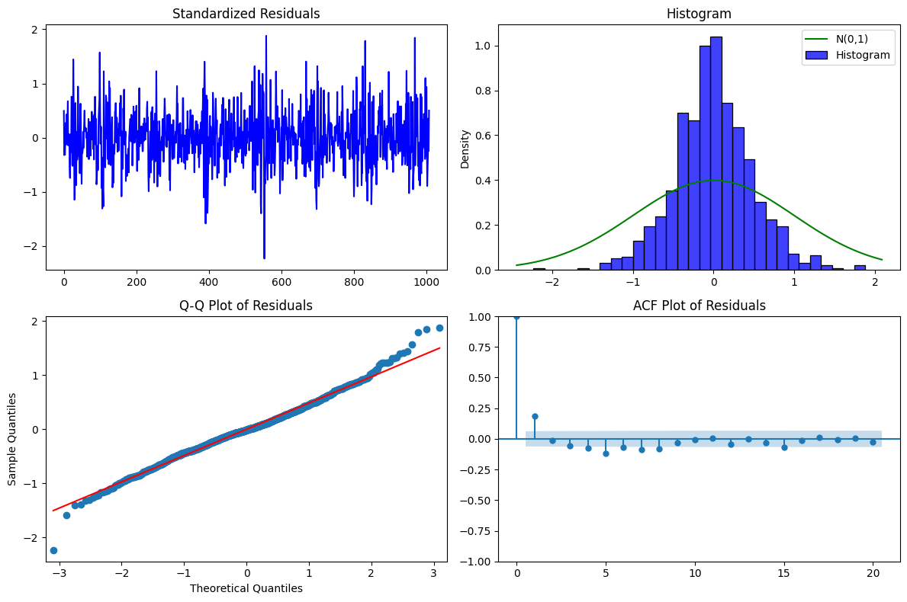
Forecast#
# Se calculan los valores predichos del conjunto de validación
yhat_hw2 = hw2_rolling(train_data['ValorObservado'][-1008:].tolist(), validation_data['ValorObservado'].tolist(), 0.4, 0.1)
# Se calcula el error de predicción del conjunto de validación
forecast_accuracy( np.array(yhat_hw2), np.array(validation_data['ValorObservado']), "Value")
| MAE | MAPE | MSE | RMSE | |
|---|---|---|---|---|
| Value | 0.42518 | 0.319342 | 0.364492 | 0.603732 |
# Se calculan los valores predichos del conjunto de test
yhat_hw2_test = hw2_rolling(train_data['ValorObservado'][-1008:].tolist(), test_data['ValorObservado'].tolist(), 0.4, 0.1)
# Se calcula el error de predicción del conjunto de test
forecast_accuracy(np.array(yhat_hw2_test), np.array( test_data['ValorObservado']), "Value")
| MAE | MAPE | MSE | RMSE | |
|---|---|---|---|---|
| Value | 0.398003 | 0.314298 | 0.307679 | 0.554689 |
Forecast Plot#
# Se calculan los residuales del conjunto de test
residuals_hw2_test = test_data['ValorObservado'] - yhat_hw2_test
# Se hace la prueba de Ljung-Box
lb_test = acorr_ljungbox(residuals_hw2_test, lags=[144], return_df=True)
print(lb_test)
lb_stat lb_pvalue
144 150.53803 0.337708
# Prueba de BDS (Brock-Dechert-Scheinkman)
bds_stat, bds_p_value = bds(residuals_hw2_test, max_dim=2, epsilon=None, distance=1.5)
print(f"BDS Statistic: {bds_stat}")
print(f"BDS p-value: {bds_p_value}")
BDS Statistic: 4.095006040277596
BDS p-value: 4.2215738145017516e-05
# Gráfica de valores observados vs predicciones
fig, axes = plt.subplots(1, 2, figsize=(16, 5))
ax = sns.lineplot(x=train_data['FechaObservacion'][-288:], y=train_data['ValorObservado'][-288:], label="Entrenamiento", color='g', ax=axes[0])
sns.lineplot(x=validation_data['FechaObservacion'], y=validation_data['ValorObservado'], label="Validación", color='b', ax=axes[0])
sns.lineplot(x=test_data['FechaObservacion'], y=test_data['ValorObservado'], label="Prueba", color='orange', ax=axes[0])
sns.lineplot(x=validation_data['FechaObservacion'], y=yhat_hw2, label="Pronóstico", color='r', ax=axes[0])
sns.lineplot(x=test_data['FechaObservacion'], y=yhat_hw2_test, color='r', ax=axes[0])
# Se añade gráfica ampliada
# Se define la posición y tamaño ( [x, y, width, height] cada valor esta entre 0 y 1)
axins = ax.inset_axes([0.2, 0.63, 0.35, 0.35])
# Gráfiga de zona ampliada
sns.lineplot(x=train_data['FechaObservacion'][-288:], y=train_data['ValorObservado'][-288:], color='g', ax=axins)
sns.lineplot(x=validation_data['FechaObservacion'], y=validation_data['ValorObservado'], color='b', ax=axins)
sns.lineplot(x=test_data['FechaObservacion'], y=test_data['ValorObservado'], color='orange', ax=axins)
sns.lineplot(x=validation_data['FechaObservacion'], y=yhat_hw2, color='r', ax=axins)
sns.lineplot(x=test_data['FechaObservacion'], y=yhat_hw2_test, color='r', ax=axins)
# Se ponen los limites para la zona ampliada
axins.set_xlim(pd.Timestamp('2019-11-21 12:00:00'), pd.Timestamp('2019-11-21 3:00:00'))
ax.indicate_inset_zoom(axins, edgecolor = 'red', lw=1, ls = 'dashed')
axins.set_xticks([])
axins.set_yticks([])
axins.set_xlabel('')
axins.set_ylabel('')
# ACF Plot
sm.graphics.tsa.plot_acf(residuals_hw2_test, lags=20, ax=axes[1] )
p_value = lb_test['lb_pvalue'].values.item()
axes[1].text(0.6, 0.9, f'$p$-value Ljung-Box: {p_value:.3f}', transform=axes[1].transAxes, fontsize=11,
bbox=dict(facecolor='white', edgecolor='black', boxstyle='round,pad=0.3'))
axes[1].set_title("ACF Plot of Residuals")
plt.show()
C:\Users\luis_\miniconda3\envs\ml_venv\lib\site-packages\seaborn\_oldcore.py:1119: FutureWarning: use_inf_as_na option is deprecated and will be removed in a future version. Convert inf values to NaN before operating instead.
with pd.option_context('mode.use_inf_as_na', True):
C:\Users\luis_\miniconda3\envs\ml_venv\lib\site-packages\seaborn\_oldcore.py:1119: FutureWarning: use_inf_as_na option is deprecated and will be removed in a future version. Convert inf values to NaN before operating instead.
with pd.option_context('mode.use_inf_as_na', True):
C:\Users\luis_\miniconda3\envs\ml_venv\lib\site-packages\seaborn\_oldcore.py:1119: FutureWarning: use_inf_as_na option is deprecated and will be removed in a future version. Convert inf values to NaN before operating instead.
with pd.option_context('mode.use_inf_as_na', True):
C:\Users\luis_\miniconda3\envs\ml_venv\lib\site-packages\seaborn\_oldcore.py:1119: FutureWarning: use_inf_as_na option is deprecated and will be removed in a future version. Convert inf values to NaN before operating instead.
with pd.option_context('mode.use_inf_as_na', True):
C:\Users\luis_\miniconda3\envs\ml_venv\lib\site-packages\seaborn\_oldcore.py:1119: FutureWarning: use_inf_as_na option is deprecated and will be removed in a future version. Convert inf values to NaN before operating instead.
with pd.option_context('mode.use_inf_as_na', True):
C:\Users\luis_\miniconda3\envs\ml_venv\lib\site-packages\seaborn\_oldcore.py:1119: FutureWarning: use_inf_as_na option is deprecated and will be removed in a future version. Convert inf values to NaN before operating instead.
with pd.option_context('mode.use_inf_as_na', True):
C:\Users\luis_\miniconda3\envs\ml_venv\lib\site-packages\seaborn\_oldcore.py:1119: FutureWarning: use_inf_as_na option is deprecated and will be removed in a future version. Convert inf values to NaN before operating instead.
with pd.option_context('mode.use_inf_as_na', True):
C:\Users\luis_\miniconda3\envs\ml_venv\lib\site-packages\seaborn\_oldcore.py:1119: FutureWarning: use_inf_as_na option is deprecated and will be removed in a future version. Convert inf values to NaN before operating instead.
with pd.option_context('mode.use_inf_as_na', True):
C:\Users\luis_\miniconda3\envs\ml_venv\lib\site-packages\seaborn\_oldcore.py:1119: FutureWarning: use_inf_as_na option is deprecated and will be removed in a future version. Convert inf values to NaN before operating instead.
with pd.option_context('mode.use_inf_as_na', True):
C:\Users\luis_\miniconda3\envs\ml_venv\lib\site-packages\seaborn\_oldcore.py:1119: FutureWarning: use_inf_as_na option is deprecated and will be removed in a future version. Convert inf values to NaN before operating instead.
with pd.option_context('mode.use_inf_as_na', True):
C:\Users\luis_\miniconda3\envs\ml_venv\lib\site-packages\seaborn\_oldcore.py:1119: FutureWarning: use_inf_as_na option is deprecated and will be removed in a future version. Convert inf values to NaN before operating instead.
with pd.option_context('mode.use_inf_as_na', True):
C:\Users\luis_\miniconda3\envs\ml_venv\lib\site-packages\seaborn\_oldcore.py:1119: FutureWarning: use_inf_as_na option is deprecated and will be removed in a future version. Convert inf values to NaN before operating instead.
with pd.option_context('mode.use_inf_as_na', True):
C:\Users\luis_\miniconda3\envs\ml_venv\lib\site-packages\seaborn\_oldcore.py:1119: FutureWarning: use_inf_as_na option is deprecated and will be removed in a future version. Convert inf values to NaN before operating instead.
with pd.option_context('mode.use_inf_as_na', True):
C:\Users\luis_\miniconda3\envs\ml_venv\lib\site-packages\seaborn\_oldcore.py:1119: FutureWarning: use_inf_as_na option is deprecated and will be removed in a future version. Convert inf values to NaN before operating instead.
with pd.option_context('mode.use_inf_as_na', True):
C:\Users\luis_\miniconda3\envs\ml_venv\lib\site-packages\seaborn\_oldcore.py:1119: FutureWarning: use_inf_as_na option is deprecated and will be removed in a future version. Convert inf values to NaN before operating instead.
with pd.option_context('mode.use_inf_as_na', True):
C:\Users\luis_\miniconda3\envs\ml_venv\lib\site-packages\seaborn\_oldcore.py:1119: FutureWarning: use_inf_as_na option is deprecated and will be removed in a future version. Convert inf values to NaN before operating instead.
with pd.option_context('mode.use_inf_as_na', True):
C:\Users\luis_\miniconda3\envs\ml_venv\lib\site-packages\seaborn\_oldcore.py:1119: FutureWarning: use_inf_as_na option is deprecated and will be removed in a future version. Convert inf values to NaN before operating instead.
with pd.option_context('mode.use_inf_as_na', True):
C:\Users\luis_\miniconda3\envs\ml_venv\lib\site-packages\seaborn\_oldcore.py:1119: FutureWarning: use_inf_as_na option is deprecated and will be removed in a future version. Convert inf values to NaN before operating instead.
with pd.option_context('mode.use_inf_as_na', True):
C:\Users\luis_\miniconda3\envs\ml_venv\lib\site-packages\seaborn\_oldcore.py:1119: FutureWarning: use_inf_as_na option is deprecated and will be removed in a future version. Convert inf values to NaN before operating instead.
with pd.option_context('mode.use_inf_as_na', True):
C:\Users\luis_\miniconda3\envs\ml_venv\lib\site-packages\seaborn\_oldcore.py:1119: FutureWarning: use_inf_as_na option is deprecated and will be removed in a future version. Convert inf values to NaN before operating instead.
with pd.option_context('mode.use_inf_as_na', True):
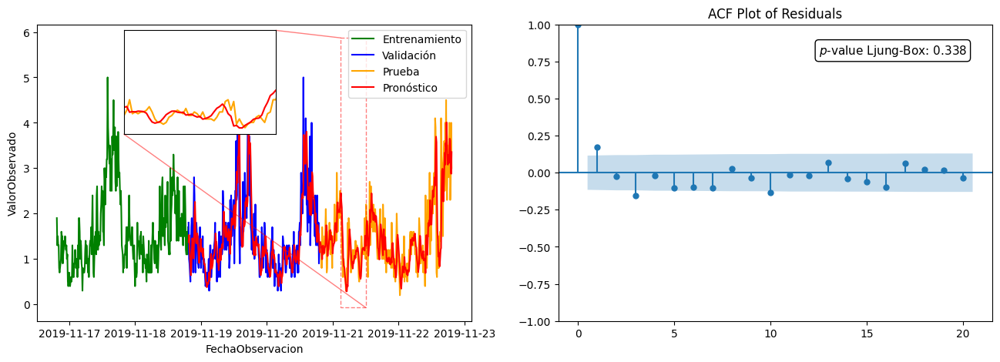
5. Suavización exponencial de Holt-Winters de tercer orden#
Selección de Modelo#
# Función para realizar el forecast rolling
def hw3_rolling(history, test, alpha, beta, gamma):
predictions = list()
for t in range(len(test)):
model = ExponentialSmoothing(history, trend='add', seasonal='add', seasonal_periods=6)
model_fit = model.fit(smoothing_level=alpha, smoothing_trend=beta, smoothing_seasonal=gamma)
output = model_fit.forecast()
yhat = output[0]
predictions.append(yhat)
obs = test[t]
history.append(obs)
return predictions
# Se crea array de valores de alphas, betas y gammas
alphas = np.arange(0.3, 0.32, 0.1)
betas = np.arange(0.01, 0.5, 0.1)
gammas = np.arange(0.01, 0.5, 0.1)
mse_values = {}
# Función para evaluar cada parámetro, calculando el MSE
def tes_optimizer(train_data, validation_data, alpha_range, beta_range, gamma_range):
best_alpha, best_beta, best_gamma, best_mse = None, None, None, float("inf")
for alpha in alpha_range:
for beta in beta_range:
for gamma in gamma_range:
# Predicción del conjunto de validación
forecast = hw3_rolling(train_data, validation_data, alpha, beta, gamma)
# # Se calcula el MSE en el conjunto de validación
mse = forecast_accuracy(np.array(validation_data), np.array(forecast), "Value")['MSE'][0]
# Si esta combinación de parámetros da el mejor MSE, actualiza los mejores parámetros
if mse < best_mse:
best_mse = mse
best_alpha = alpha
best_beta = beta
best_gamma = gamma
return best_alpha, best_beta, best_gamma, best_mse
# Evaluando la función para determinar los parámetros
tes_optimizer(train_data['ValorObservado'][-1008:].tolist(), validation_data['ValorObservado'].tolist(), alphas, betas, gammas)
C:\Users\luis_\AppData\Local\Temp\ipykernel_15124\2424022038.py:11: FutureWarning: Series.__getitem__ treating keys as positions is deprecated. In a future version, integer keys will always be treated as labels (consistent with DataFrame behavior). To access a value by position, use `ser.iloc[pos]`
mse = forecast_accuracy(np.array(validation_data), np.array(forecast), "Value")['MSE'][0]
C:\Users\luis_\AppData\Local\Temp\ipykernel_15124\2424022038.py:11: FutureWarning: Series.__getitem__ treating keys as positions is deprecated. In a future version, integer keys will always be treated as labels (consistent with DataFrame behavior). To access a value by position, use `ser.iloc[pos]`
mse = forecast_accuracy(np.array(validation_data), np.array(forecast), "Value")['MSE'][0]
C:\Users\luis_\AppData\Local\Temp\ipykernel_15124\2424022038.py:11: FutureWarning: Series.__getitem__ treating keys as positions is deprecated. In a future version, integer keys will always be treated as labels (consistent with DataFrame behavior). To access a value by position, use `ser.iloc[pos]`
mse = forecast_accuracy(np.array(validation_data), np.array(forecast), "Value")['MSE'][0]
C:\Users\luis_\AppData\Local\Temp\ipykernel_15124\2424022038.py:11: FutureWarning: Series.__getitem__ treating keys as positions is deprecated. In a future version, integer keys will always be treated as labels (consistent with DataFrame behavior). To access a value by position, use `ser.iloc[pos]`
mse = forecast_accuracy(np.array(validation_data), np.array(forecast), "Value")['MSE'][0]
---------------------------------------------------------------------------
KeyboardInterrupt Traceback (most recent call last)
Cell In[67], line 2
1 # Evaluando la función para determinar los parámetros
----> 2 tes_optimizer(train_data['ValorObservado'][-1008:].tolist(), validation_data['ValorObservado'].tolist(), alphas, betas, gammas)
Cell In[66], line 8, in tes_optimizer(train_data, validation_data, alpha_range, beta_range, gamma_range)
5 for beta in beta_range:
6 for gamma in gamma_range:
7 # Predicción del conjunto de validación
----> 8 forecast = hw3_rolling(train_data, validation_data, alpha, beta, gamma)
10 # # Se calcula el MSE en el conjunto de validación
11 mse = forecast_accuracy(np.array(validation_data), np.array(forecast), "Value")['MSE'][0]
Cell In[64], line 7, in hw3_rolling(history, test, alpha, beta, gamma)
5 for t in range(len(test)):
6 model = ExponentialSmoothing(history, trend='add', seasonal='add', seasonal_periods=6)
----> 7 model_fit = model.fit(smoothing_level=alpha, smoothing_trend=beta, smoothing_seasonal=gamma)
8 output = model_fit.forecast()
9 yhat = output[0]
File ~\miniconda3\envs\ml_venv\lib\site-packages\pandas\util\_decorators.py:213, in deprecate_kwarg.<locals>._deprecate_kwarg.<locals>.wrapper(*args, **kwargs)
211 raise TypeError(msg)
212 kwargs[new_arg_name] = new_arg_value
--> 213 return func(*args, **kwargs)
File ~\miniconda3\envs\ml_venv\lib\site-packages\pandas\util\_decorators.py:213, in deprecate_kwarg.<locals>._deprecate_kwarg.<locals>.wrapper(*args, **kwargs)
211 raise TypeError(msg)
212 kwargs[new_arg_name] = new_arg_value
--> 213 return func(*args, **kwargs)
File ~\miniconda3\envs\ml_venv\lib\site-packages\pandas\util\_decorators.py:213, in deprecate_kwarg.<locals>._deprecate_kwarg.<locals>.wrapper(*args, **kwargs)
211 raise TypeError(msg)
212 kwargs[new_arg_name] = new_arg_value
--> 213 return func(*args, **kwargs)
File ~\miniconda3\envs\ml_venv\lib\site-packages\statsmodels\tsa\holtwinters\model.py:1144, in ExponentialSmoothing.fit(self, smoothing_level, smoothing_trend, smoothing_seasonal, damping_trend, optimized, remove_bias, start_params, method, minimize_kwargs, use_brute, use_boxcox, use_basinhopping, initial_level, initial_trend)
1142 method = "SLSQP" if method is None else method
1143 if optimized:
-> 1144 res = self._optimize_parameters(
1145 res, use_brute, method, minimize_kwargs
1146 )
1147 else:
1148 l0, b0, s0 = self.initial_values(
1149 initial_level=initial_level, initial_trend=initial_trend
1150 )
File ~\miniconda3\envs\ml_venv\lib\site-packages\statsmodels\tsa\holtwinters\model.py:901, in ExponentialSmoothing._optimize_parameters(self, data, use_brute, method, kwargs)
899 obj = opt_wrapper(func)
900 self._check_blocked_keywords(kwargs, ("args", "bounds", "method"))
--> 901 res = minimize(
902 obj,
903 initial_p,
904 args=(hw_args,),
905 bounds=relevant_bounds,
906 method=method,
907 **kwargs,
908 )
909 success = res.success
910 # finally transform to restricted space
File ~\miniconda3\envs\ml_venv\lib\site-packages\scipy\optimize\_minimize.py:719, in minimize(fun, x0, args, method, jac, hess, hessp, bounds, constraints, tol, callback, options)
716 res = _minimize_cobyla(fun, x0, args, constraints, callback=callback,
717 bounds=bounds, **options)
718 elif meth == 'slsqp':
--> 719 res = _minimize_slsqp(fun, x0, args, jac, bounds,
720 constraints, callback=callback, **options)
721 elif meth == 'trust-constr':
722 res = _minimize_trustregion_constr(fun, x0, args, jac, hess, hessp,
723 bounds, constraints,
724 callback=callback, **options)
File ~\miniconda3\envs\ml_venv\lib\site-packages\scipy\optimize\_slsqp_py.py:422, in _minimize_slsqp(func, x0, args, jac, bounds, constraints, maxiter, ftol, iprint, disp, eps, callback, finite_diff_rel_step, **unknown_options)
418 a = _eval_con_normals(x, cons, la, n, m, meq, mieq)
420 while 1:
421 # Call SLSQP
--> 422 slsqp(m, meq, x, xl, xu, fx, c, g, a, acc, majiter, mode, w, jw,
423 alpha, f0, gs, h1, h2, h3, h4, t, t0, tol,
424 iexact, incons, ireset, itermx, line,
425 n1, n2, n3)
427 if mode == 1: # objective and constraint evaluation required
428 fx = wrapped_fun(x)
KeyboardInterrupt:
# Modelo seleccionado, alpha = 0.4, beta = 0.1 y gamma = 0.1
model_hw3 = ExponentialSmoothing(train_data['ValorObservado'][-1008:], trend='add', seasonal='add', seasonal_periods=6)
model_hw3 = model_hw3.fit(smoothing_level=0.4, smoothing_trend = 0.1, smoothing_seasonal = 0.1, optimized=False)
model_hw2.summary()
c:\Users\luis_\miniconda3\envs\ml_venv\lib\site-packages\statsmodels\tsa\base\tsa_model.py:473: ValueWarning: No frequency information was provided, so inferred frequency 10min will be used.
self._init_dates(dates, freq)
| Dep. Variable: | ValorObservado | No. Observations: | 1008 |
|---|---|---|---|
| Model: | ExponentialSmoothing | SSE | 237.278 |
| Optimized: | False | AIC | -1450.064 |
| Trend: | Additive | BIC | -1430.401 |
| Seasonal: | None | AICC | -1449.980 |
| Seasonal Periods: | None | Date: | Wed, 12 Mar 2025 |
| Box-Cox: | False | Time: | 18:28:27 |
| Box-Cox Coeff.: | None |
| coeff | code | optimized | |
|---|---|---|---|
| smoothing_level | 0.4000000 | alpha | False |
| smoothing_trend | 0.1000000 | beta | False |
| initial_level | 0.6066667 | l.0 | False |
| initial_trend | -0.0012121 | b.0 | False |
Gráfica de diagnóstico#
# Residuales de modelo seleccionado
residuals_hw3 = train_data['ValorObservado'][-1008:] - model_hw3.fittedvalues
# Se crea gráfica de diagnóstico
fig, axes = plt.subplots(2, 2, figsize=(12, 8))
# Plot 1: Standardized Residuals
axes[0, 0].plot(range(len(residuals_hw3)),residuals_hw3, color="blue")
axes[0, 0].set_title("Standardized Residuals")
# Plot 2: Histogram & KDE
sns.histplot(residuals_hw3, stat="density", bins=30, kde=False, ax=axes[0, 1], color="blue", label = "Histogram")
xmin, xmax = axes[0, 1].get_xlim()
x = np.linspace(xmin, xmax, 100)
p = norm.pdf(x, 0, 1) # Normal distribution N(0,1)
axes[0, 1].plot(x, p, 'g-', label = "N(0,1)")
axes[0, 1].set_title("Histogram")
axes[0, 1].legend()
# Plot 3: Q-Q Plot
sm.qqplot(residuals_hw3, line="s", ax=axes[1, 0])
axes[1, 0].set_title("Q-Q Plot of Residuals")
# Plot 4: ACF
sm.graphics.tsa.plot_acf(residuals_hw3, lags=20, ax=axes[1, 1])
axes[1, 1].set_title("ACF Plot of Residuals")
plt.tight_layout()
plt.show()
c:\Users\luis_\miniconda3\envs\ml_venv\lib\site-packages\seaborn\_oldcore.py:1119: FutureWarning: use_inf_as_na option is deprecated and will be removed in a future version. Convert inf values to NaN before operating instead.
with pd.option_context('mode.use_inf_as_na', True):
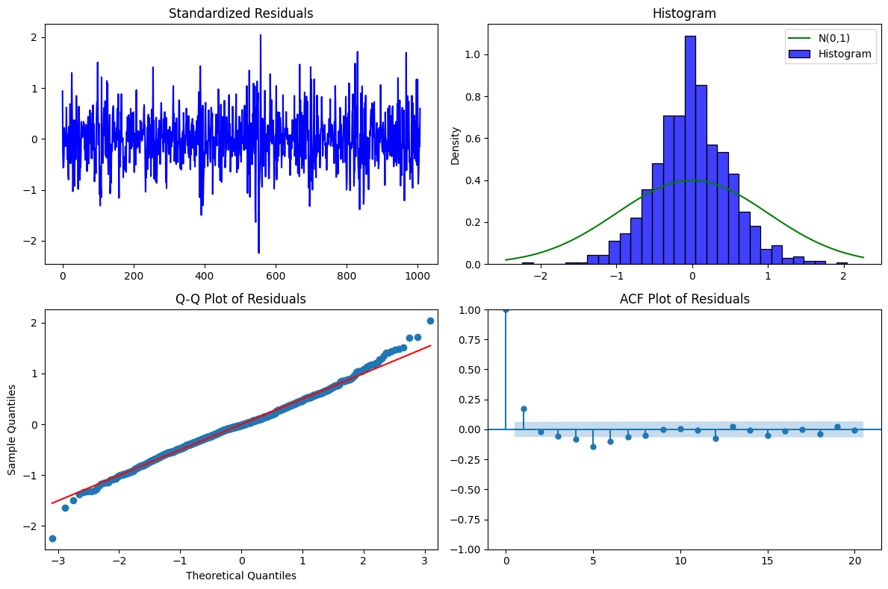
Forecast#
# Se calculan los valores predichos del conjunto de validación
yhat_hw3 = hw3_rolling(train_data['ValorObservado'][-1008:].tolist(), validation_data['ValorObservado'].tolist(), 0.4 , 0.1 , 0.1)
# Se calcula el error de predicción del conjunto de validación
forecast_accuracy( np.array(yhat_hw3), np.array(validation_data['ValorObservado']), "Value")
| MAE | MAPE | MSE | RMSE | |
|---|---|---|---|---|
| Value | 0.441337 | 0.332445 | 0.377783 | 0.614641 |
# Se calculan los valores predichos del conjunto de test
yhat_hw3_test = hw3_rolling(train_data['ValorObservado'][-1008:].tolist(), test_data['ValorObservado'].tolist(), 0.4, 0.1, 0.1)
# Se calcula el error de predicción del conjunto de test
forecast_accuracy(np.array(yhat_hw3_test), np.array( test_data['ValorObservado']), "Value")
| MAE | MAPE | MSE | RMSE | |
|---|---|---|---|---|
| Value | 0.408343 | 0.324873 | 0.321345 | 0.566873 |
Forecast Plot#
# Se calculan los residuales del conjunto de test
residuals_hw3_test = test_data['ValorObservado'] - yhat_hw3_test
# Se hace la prueba de Ljung-Box
lb_test = acorr_ljungbox(residuals_hw3_test, lags=[144], return_df=True)
print(lb_test)
lb_stat lb_pvalue
144 169.242083 0.073924
# Prueba de BDS (Brock-Dechert-Scheinkman)
bds_stat, bds_p_value = bds(residuals_hw3_test, max_dim=2, epsilon=None, distance=1.5)
print(f"BDS Statistic: {bds_stat}")
print(f"BDS p-value: {bds_p_value}")
BDS Statistic: 4.012010436323269
BDS p-value: 6.020383787232898e-05
# Gráfica de valores observados vs predicciones
fig, axes = plt.subplots(1, 2, figsize=(16, 5))
ax = sns.lineplot(x=train_data['FechaObservacion'][-288:], y=train_data['ValorObservado'][-288:], label="Entrenamiento", color='g', ax=axes[0])
sns.lineplot(x=validation_data['FechaObservacion'], y=validation_data['ValorObservado'], label="Validación", color='b', ax=axes[0])
sns.lineplot(x=test_data['FechaObservacion'], y=test_data['ValorObservado'], label="Prueba", color='orange', ax=axes[0])
sns.lineplot(x=validation_data['FechaObservacion'], y=yhat_hw3, label="Pronóstico", color='r', ax=axes[0])
sns.lineplot(x=test_data['FechaObservacion'], y=yhat_hw3_test, color='r', ax=axes[0])
# Se añade gráfica ampliada
# Se define la posición y tamaño ( [x, y, width, height] cada valor esta entre 0 y 1)
axins = ax.inset_axes([0.2, 0.63, 0.35, 0.35])
# Gráfiga de zona ampliada
sns.lineplot(x=train_data['FechaObservacion'][-288:], y=train_data['ValorObservado'][-288:], color='g', ax=axins)
sns.lineplot(x=validation_data['FechaObservacion'], y=validation_data['ValorObservado'], color='b', ax=axins)
sns.lineplot(x=test_data['FechaObservacion'], y=test_data['ValorObservado'], color='orange', ax=axins)
sns.lineplot(x=validation_data['FechaObservacion'], y=yhat_hw3, color='r', ax=axins)
sns.lineplot(x=test_data['FechaObservacion'], y=yhat_hw3_test, color='r', ax=axins)
# Se ponen los limites para la zona ampliada
axins.set_xlim(pd.Timestamp('2019-11-21 12:00:00'), pd.Timestamp('2019-11-21 3:00:00'))
ax.indicate_inset_zoom(axins, edgecolor = 'red', lw=1, ls = 'dashed')
axins.set_xticks([])
axins.set_yticks([])
axins.set_xlabel('')
axins.set_ylabel('')
# ACF Plot
sm.graphics.tsa.plot_acf(residuals_hw3_test, lags=20, ax=axes[1] )
p_value = lb_test['lb_pvalue'].values.item()
axes[1].text(0.6, 0.9, f'$p$-value Ljung-Box: {p_value:.3f}', transform=axes[1].transAxes, fontsize=11,
bbox=dict(facecolor='white', edgecolor='black', boxstyle='round,pad=0.3'))
axes[1].set_title("ACF Plot of Residuals")
plt.show()
c:\Users\luis_\miniconda3\envs\ml_venv\lib\site-packages\seaborn\_oldcore.py:1119: FutureWarning: use_inf_as_na option is deprecated and will be removed in a future version. Convert inf values to NaN before operating instead.
with pd.option_context('mode.use_inf_as_na', True):
c:\Users\luis_\miniconda3\envs\ml_venv\lib\site-packages\seaborn\_oldcore.py:1119: FutureWarning: use_inf_as_na option is deprecated and will be removed in a future version. Convert inf values to NaN before operating instead.
with pd.option_context('mode.use_inf_as_na', True):
c:\Users\luis_\miniconda3\envs\ml_venv\lib\site-packages\seaborn\_oldcore.py:1119: FutureWarning: use_inf_as_na option is deprecated and will be removed in a future version. Convert inf values to NaN before operating instead.
with pd.option_context('mode.use_inf_as_na', True):
c:\Users\luis_\miniconda3\envs\ml_venv\lib\site-packages\seaborn\_oldcore.py:1119: FutureWarning: use_inf_as_na option is deprecated and will be removed in a future version. Convert inf values to NaN before operating instead.
with pd.option_context('mode.use_inf_as_na', True):
c:\Users\luis_\miniconda3\envs\ml_venv\lib\site-packages\seaborn\_oldcore.py:1119: FutureWarning: use_inf_as_na option is deprecated and will be removed in a future version. Convert inf values to NaN before operating instead.
with pd.option_context('mode.use_inf_as_na', True):
c:\Users\luis_\miniconda3\envs\ml_venv\lib\site-packages\seaborn\_oldcore.py:1119: FutureWarning: use_inf_as_na option is deprecated and will be removed in a future version. Convert inf values to NaN before operating instead.
with pd.option_context('mode.use_inf_as_na', True):
c:\Users\luis_\miniconda3\envs\ml_venv\lib\site-packages\seaborn\_oldcore.py:1119: FutureWarning: use_inf_as_na option is deprecated and will be removed in a future version. Convert inf values to NaN before operating instead.
with pd.option_context('mode.use_inf_as_na', True):
c:\Users\luis_\miniconda3\envs\ml_venv\lib\site-packages\seaborn\_oldcore.py:1119: FutureWarning: use_inf_as_na option is deprecated and will be removed in a future version. Convert inf values to NaN before operating instead.
with pd.option_context('mode.use_inf_as_na', True):
c:\Users\luis_\miniconda3\envs\ml_venv\lib\site-packages\seaborn\_oldcore.py:1119: FutureWarning: use_inf_as_na option is deprecated and will be removed in a future version. Convert inf values to NaN before operating instead.
with pd.option_context('mode.use_inf_as_na', True):
c:\Users\luis_\miniconda3\envs\ml_venv\lib\site-packages\seaborn\_oldcore.py:1119: FutureWarning: use_inf_as_na option is deprecated and will be removed in a future version. Convert inf values to NaN before operating instead.
with pd.option_context('mode.use_inf_as_na', True):
c:\Users\luis_\miniconda3\envs\ml_venv\lib\site-packages\seaborn\_oldcore.py:1119: FutureWarning: use_inf_as_na option is deprecated and will be removed in a future version. Convert inf values to NaN before operating instead.
with pd.option_context('mode.use_inf_as_na', True):
c:\Users\luis_\miniconda3\envs\ml_venv\lib\site-packages\seaborn\_oldcore.py:1119: FutureWarning: use_inf_as_na option is deprecated and will be removed in a future version. Convert inf values to NaN before operating instead.
with pd.option_context('mode.use_inf_as_na', True):
c:\Users\luis_\miniconda3\envs\ml_venv\lib\site-packages\seaborn\_oldcore.py:1119: FutureWarning: use_inf_as_na option is deprecated and will be removed in a future version. Convert inf values to NaN before operating instead.
with pd.option_context('mode.use_inf_as_na', True):
c:\Users\luis_\miniconda3\envs\ml_venv\lib\site-packages\seaborn\_oldcore.py:1119: FutureWarning: use_inf_as_na option is deprecated and will be removed in a future version. Convert inf values to NaN before operating instead.
with pd.option_context('mode.use_inf_as_na', True):
c:\Users\luis_\miniconda3\envs\ml_venv\lib\site-packages\seaborn\_oldcore.py:1119: FutureWarning: use_inf_as_na option is deprecated and will be removed in a future version. Convert inf values to NaN before operating instead.
with pd.option_context('mode.use_inf_as_na', True):
c:\Users\luis_\miniconda3\envs\ml_venv\lib\site-packages\seaborn\_oldcore.py:1119: FutureWarning: use_inf_as_na option is deprecated and will be removed in a future version. Convert inf values to NaN before operating instead.
with pd.option_context('mode.use_inf_as_na', True):
c:\Users\luis_\miniconda3\envs\ml_venv\lib\site-packages\seaborn\_oldcore.py:1119: FutureWarning: use_inf_as_na option is deprecated and will be removed in a future version. Convert inf values to NaN before operating instead.
with pd.option_context('mode.use_inf_as_na', True):
c:\Users\luis_\miniconda3\envs\ml_venv\lib\site-packages\seaborn\_oldcore.py:1119: FutureWarning: use_inf_as_na option is deprecated and will be removed in a future version. Convert inf values to NaN before operating instead.
with pd.option_context('mode.use_inf_as_na', True):
c:\Users\luis_\miniconda3\envs\ml_venv\lib\site-packages\seaborn\_oldcore.py:1119: FutureWarning: use_inf_as_na option is deprecated and will be removed in a future version. Convert inf values to NaN before operating instead.
with pd.option_context('mode.use_inf_as_na', True):
c:\Users\luis_\miniconda3\envs\ml_venv\lib\site-packages\seaborn\_oldcore.py:1119: FutureWarning: use_inf_as_na option is deprecated and will be removed in a future version. Convert inf values to NaN before operating instead.
with pd.option_context('mode.use_inf_as_na', True):
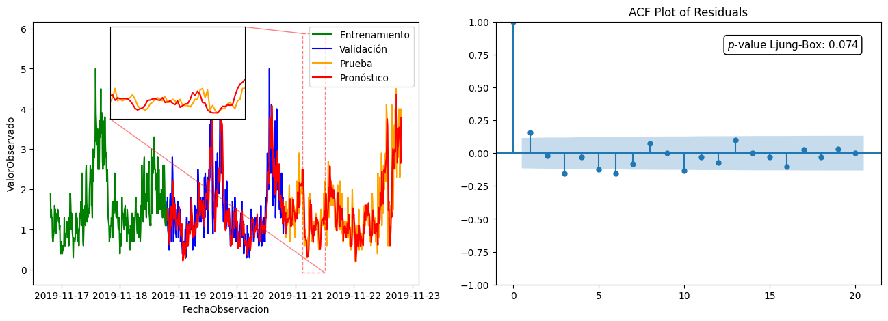
6. ARIMA#
Selección de Modelo#
# Función para realizar el forecast rolling
def arima_rolling(history, test):
predictions = list()
for t in range(len(test)):
model = ARIMA(history, order=(2, 0, 2))
model_fit = model.fit()
output = model_fit.forecast()
yhat = output[0]
predictions.append(yhat)
obs = test[t]
history.append(obs)
print('predicted=%f, expected=%f' % (yhat, obs))
return predictions
## Bucle para determinar el mejor modelo ARIMA, minimizando el AIC
aicVal=[]
for d in range(0,3):
for ari in range(0, 3):
for maj in range(0,3):
try:
arima_obj = smtsa.ARIMA(train_data['ValorObservado'].tolist(), order=(ari, d, maj))
arima_obj_fit=arima_obj.fit()
aicVal.append([ari, d, maj, arima_obj_fit.aic])
except ValueError:
pass
c:\Users\luis_\miniconda3\envs\ml_venv\lib\site-packages\statsmodels\tsa\statespace\sarimax.py:966: UserWarning: Non-stationary starting autoregressive parameters found. Using zeros as starting parameters.
warn('Non-stationary starting autoregressive parameters'
c:\Users\luis_\miniconda3\envs\ml_venv\lib\site-packages\statsmodels\tsa\statespace\sarimax.py:978: UserWarning: Non-invertible starting MA parameters found. Using zeros as starting parameters.
warn('Non-invertible starting MA parameters found.'
# Mostrando los modelos evaluados y su AIC
dfAIC = pd.DataFrame(aicVal, columns=['AR(p)', 'd', 'MA(q)', 'AIC'])
dfAIC
| AR(p) | d | MA(q) | AIC | |
|---|---|---|---|---|
| 0 | 0 | 0 | 0 | 1.889094e+06 |
| 1 | 0 | 0 | 1 | 1.534251e+06 |
| 2 | 0 | 0 | 2 | 1.358493e+06 |
| 3 | 1 | 0 | 0 | 1.074956e+06 |
| 4 | 1 | 0 | 1 | 1.073631e+06 |
| 5 | 1 | 0 | 2 | 1.071466e+06 |
| 6 | 2 | 0 | 0 | 1.073836e+06 |
| 7 | 2 | 0 | 1 | 1.071000e+06 |
| 8 | 2 | 0 | 2 | 1.070819e+06 |
| 9 | 0 | 1 | 0 | 1.087040e+06 |
| 10 | 0 | 1 | 1 | 1.083709e+06 |
| 11 | 0 | 1 | 2 | 1.079492e+06 |
| 12 | 1 | 1 | 0 | 1.084366e+06 |
| 13 | 1 | 1 | 1 | 1.073873e+06 |
| 14 | 1 | 1 | 2 | 1.072739e+06 |
| 15 | 2 | 1 | 0 | 1.080706e+06 |
| 16 | 2 | 1 | 1 | 1.072909e+06 |
| 17 | 2 | 1 | 2 | 1.073867e+06 |
| 18 | 0 | 2 | 0 | 1.384050e+06 |
| 19 | 0 | 2 | 1 | 1.087123e+06 |
| 20 | 0 | 2 | 2 | 1.083729e+06 |
| 21 | 1 | 2 | 0 | 1.275060e+06 |
| 22 | 1 | 2 | 1 | 1.084392e+06 |
| 23 | 1 | 2 | 2 | 1.087028e+06 |
| 24 | 2 | 2 | 0 | 1.220169e+06 |
| 25 | 2 | 2 | 1 | 1.080727e+06 |
| 26 | 2 | 2 | 2 | 1.084193e+06 |
# Mostrando el mejor modelo basado en AIC
print('Best ARIMA parameters based on AIC:\n')
dfAIC[dfAIC.AIC == dfAIC.AIC.min()]
Best ARIMA parameters based on AIC:
| AR(p) | d | MA(q) | AIC | |
|---|---|---|---|---|
| 8 | 2 | 0 | 2 | 1.070819e+06 |
# Resumen de modelo seleccionado p = 2, d = 0, q = 2
modelArima = ARIMA(train_data['ValorObservado'][-1008:].tolist(), order=(2, 0, 2))
modelArimafit = modelArima.fit()
modelArimafit.summary()
| Dep. Variable: | y | No. Observations: | 1008 |
|---|---|---|---|
| Model: | ARIMA(2, 0, 2) | Log Likelihood | -635.281 |
| Date: | Wed, 12 Mar 2025 | AIC | 1282.561 |
| Time: | 18:28:52 | BIC | 1312.056 |
| Sample: | 0 | HQIC | 1293.767 |
| - 1008 | |||
| Covariance Type: | opg |
| coef | std err | z | P>|z| | [0.025 | 0.975] | |
|---|---|---|---|---|---|---|
| const | 1.4211 | 0.154 | 9.232 | 0.000 | 1.119 | 1.723 |
| ar.L1 | 1.3675 | 0.219 | 6.246 | 0.000 | 0.938 | 1.797 |
| ar.L2 | -0.3945 | 0.206 | -1.917 | 0.055 | -0.798 | 0.009 |
| ma.L1 | -0.8285 | 0.220 | -3.768 | 0.000 | -1.259 | -0.398 |
| ma.L2 | 0.0800 | 0.108 | 0.740 | 0.459 | -0.132 | 0.292 |
| sigma2 | 0.2063 | 0.008 | 26.149 | 0.000 | 0.191 | 0.222 |
| Ljung-Box (L1) (Q): | 0.00 | Jarque-Bera (JB): | 139.66 |
|---|---|---|---|
| Prob(Q): | 0.95 | Prob(JB): | 0.00 |
| Heteroskedasticity (H): | 1.36 | Skew: | 0.66 |
| Prob(H) (two-sided): | 0.00 | Kurtosis: | 4.26 |
Warnings:
[1] Covariance matrix calculated using the outer product of gradients (complex-step).
Gráfica de diagnóstico#
# Residuales de modelo seleccionado
residuals_arima = train_data['ValorObservado'][-1008:] - modelArimafit.fittedvalues
# Se crea gráfica de diagnóstico
fig, axes = plt.subplots(2, 2, figsize=(12, 8))
# Plot 1: Standardized Residuals
axes[0, 0].plot(range(len(residuals_arima)),residuals_arima, color="blue")
axes[0, 0].set_title("Standardized Residuals")
# Plot 2: Histogram & KDE
sns.histplot(residuals_arima, stat="density", bins=30, kde=False, ax=axes[0, 1], color="blue", label = "Histogram")
xmin, xmax = axes[0, 1].get_xlim()
x = np.linspace(xmin, xmax, 100)
p = norm.pdf(x, 0, 1) # Normal distribution N(0,1)
axes[0, 1].plot(x, p, 'g-', label = "N(0,1)")
axes[0, 1].set_title("Histogram")
axes[0, 1].legend()
# Plot 3: Q-Q Plot
sm.qqplot(residuals_arima, line="s", ax=axes[1, 0])
axes[1, 0].set_title("Q-Q Plot of Residuals")
# Plot 4: ACF
sm.graphics.tsa.plot_acf(residuals_arima, lags=20, ax=axes[1, 1])
axes[1, 1].set_title("ACF Plot of Residuals")
plt.tight_layout()
plt.show()
c:\Users\luis_\miniconda3\envs\ml_venv\lib\site-packages\seaborn\_oldcore.py:1119: FutureWarning: use_inf_as_na option is deprecated and will be removed in a future version. Convert inf values to NaN before operating instead.
with pd.option_context('mode.use_inf_as_na', True):
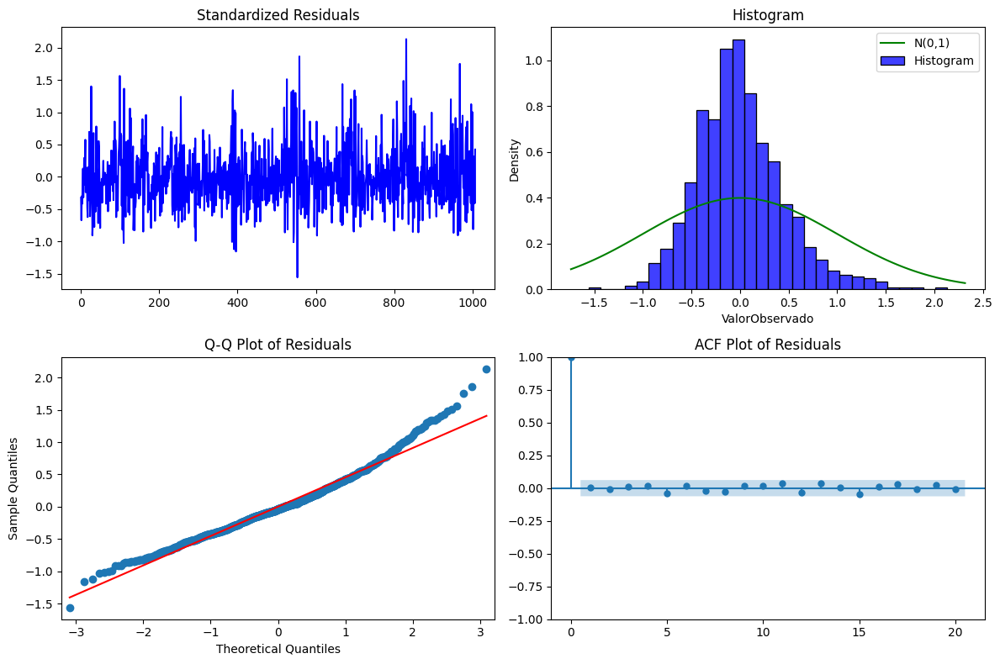
Forecast#
# Se calculan los valores predichos del conjunto de validación
yhat_arima = arima_rolling(train_data['ValorObservado'][-1008:].tolist(), validation_data['ValorObservado'].tolist())
predicted=1.545177, expected=1.800000
predicted=1.652603, expected=1.000000
predicted=1.254964, expected=0.900000
predicted=1.117859, expected=0.700000
predicted=0.956784, expected=0.500000
predicted=0.788759, expected=1.200000
predicted=1.107095, expected=1.700000
predicted=1.431894, expected=1.900000
predicted=1.626409, expected=1.300000
predicted=1.369122, expected=1.100000
predicted=1.228417, expected=0.700000
predicted=0.976426, expected=2.000000
predicted=1.615333, expected=2.800000
predicted=2.175894, expected=2.400000
predicted=2.112870, expected=1.200000
predicted=1.498326, expected=0.700000
predicted=1.125036, expected=1.300000
predicted=1.351224, expected=1.800000
predicted=1.621081, expected=1.600000
predicted=1.554144, expected=1.400000
predicted=1.450514, expected=0.900000
predicted=1.159143, expected=0.900000
predicted=1.096510, expected=0.800000
predicted=0.999061, expected=1.500000
predicted=1.346842, expected=1.500000
predicted=1.392853, expected=1.700000
predicted=1.532799, expected=1.400000
predicted=1.407914, expected=0.800000
predicted=1.072415, expected=1.400000
predicted=1.341205, expected=1.000000
predicted=1.141123, expected=1.000000
predicted=1.110621, expected=1.500000
predicted=1.367382, expected=0.700000
predicted=0.965572, expected=0.800000
predicted=0.960672, expected=1.000000
predicted=1.043580, expected=0.800000
predicted=0.934540, expected=0.600000
predicted=0.802723, expected=0.400000
predicted=0.656650, expected=0.500000
predicted=0.666574, expected=0.400000
predicted=0.590561, expected=0.700000
predicted=0.731217, expected=0.600000
predicted=0.690168, expected=0.500000
predicted=0.632699, expected=0.700000
predicted=0.731809, expected=1.000000
predicted=0.911506, expected=0.300000
predicted=0.564597, expected=0.900000
predicted=0.848616, expected=1.300000
predicted=1.103603, expected=1.300000
predicted=1.167501, expected=0.600000
predicted=0.823391, expected=0.600000
predicted=0.780186, expected=0.900000
predicted=0.917644, expected=1.000000
predicted=0.983919, expected=1.200000
predicted=1.112181, expected=1.100000
predicted=1.089905, expected=1.000000
predicted=1.047161, expected=1.300000
predicted=1.211523, expected=1.400000
predicted=1.296956, expected=1.800000
predicted=1.549627, expected=1.000000
predicted=1.170608, expected=1.300000
predicted=1.296915, expected=1.000000
predicted=1.135998, expected=0.500000
predicted=0.831242, expected=1.100000
predicted=1.090935, expected=0.800000
predicted=0.939721, expected=0.600000
predicted=0.805644, expected=1.200000
predicted=1.099610, expected=1.600000
predicted=1.358267, expected=1.200000
predicted=1.203955, expected=0.600000
predicted=0.877423, expected=1.100000
predicted=1.095828, expected=1.500000
predicted=1.326730, expected=1.400000
predicted=1.319687, expected=1.100000
predicted=1.178628, expected=1.200000
predicted=1.220491, expected=2.500000
predicted=1.937696, expected=2.200000
predicted=1.901346, expected=1.400000
predicted=1.525802, expected=1.400000
predicted=1.493991, expected=1.200000
predicted=1.353557, expected=1.400000
predicted=1.425436, expected=1.800000
predicted=1.637160, expected=1.800000
predicted=1.670349, expected=1.200000
predicted=1.365113, expected=1.400000
predicted=1.437489, expected=1.300000
predicted=1.368650, expected=1.700000
predicted=1.572909, expected=1.800000
predicted=1.653469, expected=1.400000
predicted=1.463156, expected=0.800000
predicted=1.116011, expected=1.000000
predicted=1.155976, expected=2.300000
predicted=1.838654, expected=1.300000
predicted=1.380485, expected=2.400000
predicted=1.973693, expected=1.800000
predicted=1.735002, expected=1.500000
predicted=1.580691, expected=1.700000
predicted=1.664473, expected=2.000000
predicted=1.828354, expected=2.300000
predicted=2.023225, expected=2.200000
predicted=2.021149, expected=0.900000
predicted=1.337213, expected=1.800000
predicted=1.724867, expected=2.500000
predicted=2.107576, expected=2.500000
predicted=2.183949, expected=3.600000
predicted=2.853934, expected=2.300000
predicted=2.284084, expected=2.400000
predicted=2.325843, expected=3.800000
predicted=3.089035, expected=3.100000
predicted=2.829004, expected=4.400000
predicted=3.591799, expected=3.700000
predicted=3.359501, expected=1.400000
predicted=2.123745, expected=0.900000
predicted=1.637391, expected=1.700000
predicted=1.885938, expected=1.400000
predicted=1.636230, expected=1.300000
predicted=1.509235, expected=1.300000
predicted=1.447283, expected=1.500000
predicted=1.517233, expected=1.500000
predicted=1.505599, expected=2.700000
predicted=2.176011, expected=1.600000
predicted=1.663380, expected=1.800000
predicted=1.761840, expected=1.900000
predicted=1.813574, expected=2.900000
predicted=2.378221, expected=2.200000
predicted=2.087004, expected=2.400000
predicted=2.213443, expected=2.200000
predicted=2.124343, expected=1.900000
predicted=1.956474, expected=2.400000
predicted=2.203955, expected=3.500000
predicted=2.838972, expected=5.600000
predicted=4.174169, expected=3.000000
predicted=2.958370, expected=2.400000
predicted=2.623201, expected=3.700000
predicted=3.279451, expected=3.200000
predicted=3.015562, expected=2.300000
predicted=2.529774, expected=1.700000
predicted=2.111013, expected=1.600000
predicted=1.925009, expected=1.200000
predicted=1.581768, expected=1.600000
predicted=1.703136, expected=1.500000
predicted=1.589979, expected=1.100000
predicted=1.332511, expected=1.200000
predicted=1.335369, expected=2.000000
predicted=1.747229, expected=1.000000
predicted=1.218708, expected=1.200000
predicted=1.313243, expected=2.200000
predicted=1.832702, expected=1.500000
predicted=1.498790, expected=1.400000
predicted=1.473831, expected=1.300000
predicted=1.392348, expected=1.400000
predicted=1.426121, expected=1.300000
predicted=1.357978, expected=1.500000
predicted=1.460254, expected=1.100000
predicted=1.238776, expected=1.000000
predicted=1.165111, expected=0.600000
predicted=0.902104, expected=0.600000
predicted=0.846035, expected=0.800000
predicted=0.904572, expected=1.000000
predicted=0.999380, expected=0.900000
predicted=0.954429, expected=1.700000
predicted=1.412144, expected=1.500000
predicted=1.358012, expected=1.200000
predicted=1.247872, expected=0.800000
predicted=1.024857, expected=1.200000
predicted=1.211867, expected=1.100000
predicted=1.144042, expected=1.800000
predicted=1.541779, expected=1.600000
predicted=1.476863, expected=1.300000
predicted=1.354854, expected=0.700000
predicted=1.012971, expected=1.100000
predicted=1.181323, expected=1.200000
predicted=1.205880, expected=0.800000
predicted=0.987021, expected=0.600000
predicted=0.850837, expected=0.900000
predicted=0.972550, expected=0.700000
predicted=0.844395, expected=0.700000
predicted=0.833282, expected=0.600000
predicted=0.759139, expected=0.800000
predicted=0.854266, expected=1.100000
predicted=1.021775, expected=1.200000
predicted=1.108167, expected=1.400000
predicted=1.259425, expected=1.000000
predicted=1.076155, expected=1.700000
predicted=1.477313, expected=0.800000
predicted=1.010050, expected=0.800000
predicted=0.998346, expected=1.200000
predicted=1.175655, expected=0.900000
predicted=1.011071, expected=0.400000
predicted=0.726139, expected=0.700000
predicted=0.840503, expected=0.900000
predicted=0.920314, expected=0.700000
predicted=0.816337, expected=0.700000
predicted=0.813571, expected=0.600000
predicted=0.745966, expected=0.700000
predicted=0.788724, expected=0.300000
predicted=0.557581, expected=0.400000
predicted=0.585060, expected=1.100000
predicted=0.949904, expected=0.600000
predicted=0.707406, expected=0.900000
predicted=0.894231, expected=0.700000
predicted=0.790044, expected=0.500000
predicted=0.684556, expected=0.300000
predicted=0.550702, expected=0.800000
predicted=0.796196, expected=0.700000
predicted=0.746026, expected=0.900000
predicted=0.877093, expected=1.500000
predicted=1.234368, expected=1.400000
predicted=1.245284, expected=1.000000
predicted=1.080656, expected=1.300000
predicted=1.252478, expected=1.000000
predicted=1.091443, expected=1.100000
predicted=1.145671, expected=0.700000
predicted=0.912379, expected=0.700000
predicted=0.883184, expected=0.900000
predicted=0.958997, expected=1.300000
predicted=1.176797, expected=1.000000
predicted=1.041081, expected=1.100000
predicted=1.112139, expected=1.000000
predicted=1.058717, expected=1.300000
predicted=1.227589, expected=1.300000
predicted=1.245202, expected=0.800000
predicted=0.989165, expected=0.900000
predicted=1.022836, expected=0.800000
predicted=0.938855, expected=0.800000
predicted=0.919942, expected=0.600000
predicted=0.790005, expected=0.700000
predicted=0.820350, expected=1.000000
predicted=0.971051, expected=1.300000
predicted=1.155274, expected=1.100000
predicted=1.086631, expected=1.600000
predicted=1.392515, expected=1.100000
predicted=1.155799, expected=0.600000
predicted=0.887606, expected=0.900000
predicted=1.005633, expected=0.900000
predicted=0.977053, expected=1.200000
predicted=1.140811, expected=1.100000
predicted=1.101678, expected=1.300000
predicted=1.230024, expected=0.700000
predicted=0.913175, expected=1.100000
predicted=1.114727, expected=0.700000
predicted=0.881212, expected=1.600000
predicted=1.366006, expected=1.600000
predicted=1.406039, expected=1.800000
predicted=1.578791, expected=1.300000
predicted=1.350053, expected=2.000000
predicted=1.745479, expected=2.900000
predicted=2.290468, expected=2.200000
predicted=2.018191, expected=2.300000
predicted=2.133865, expected=2.000000
predicted=1.979429, expected=2.700000
predicted=2.367960, expected=5.000000
predicted=3.714963, expected=2.700000
predicted=2.634820, expected=3.000000
predicted=2.881871, expected=2.400000
predicted=2.495020, expected=3.300000
predicted=2.948002, expected=4.100000
predicted=3.413695, expected=3.600000
predicted=3.250132, expected=2.200000
predicted=2.523107, expected=2.200000
predicted=2.427964, expected=1.600000
predicted=1.968463, expected=3.000000
predicted=2.644249, expected=2.400000
predicted=2.317512, expected=1.800000
predicted=2.000310, expected=1.800000
predicted=1.932336, expected=3.700000
predicted=2.931898, expected=1.300000
predicted=1.713003, expected=1.900000
predicted=1.998581, expected=2.400000
predicted=2.180453, expected=4.000000
predicted=3.087643, expected=2.600000
predicted=2.479100, expected=2.000000
predicted=2.204729, expected=2.200000
predicted=2.235201, expected=2.300000
predicted=2.238915, expected=2.200000
predicted=2.169301, expected=1.900000
predicted=1.990017, expected=1.500000
predicted=1.732333, expected=2.400000
predicted=2.155525, expected=1.400000
predicted=1.621144, expected=1.300000
predicted=1.533943, expected=1.400000
predicted=1.509427, expected=2.400000
predicted=2.015163, expected=1.600000
predicted=1.637310, expected=1.300000
predicted=1.490855, expected=1.800000
predicted=1.707452, expected=0.900000
predicted=1.216963, expected=1.200000
predicted=1.328645, expected=1.300000
# Se calcula el error de predicción del conjunto de validación
forecast_accuracy( np.array(yhat_arima), np.array(validation_data['ValorObservado']), "Value")
| MAE | MAPE | MSE | RMSE | |
|---|---|---|---|---|
| Value | 0.401038 | 0.311518 | 0.31966 | 0.565385 |
# Se calculan los valores predichos del conjunto de test
yhat_arima_test = arima_rolling(train_data['ValorObservado'][-1008:].tolist(), test_data['ValorObservado'].tolist())
predicted=1.545177, expected=1.300000
predicted=1.382212, expected=1.300000
predicted=1.351550, expected=1.200000
predicted=1.285214, expected=0.800000
predicted=1.048007, expected=1.700000
predicted=1.468186, expected=1.400000
predicted=1.391299, expected=1.100000
predicted=1.226082, expected=1.100000
predicted=1.189812, expected=1.200000
predicted=1.226421, expected=1.500000
predicted=1.389872, expected=1.300000
predicted=1.320480, expected=1.700000
predicted=1.528652, expected=2.100000
predicted=1.796907, expected=1.600000
predicted=1.606896, expected=0.700000
predicted=1.099807, expected=0.800000
predicted=1.034756, expected=1.400000
predicted=1.312016, expected=1.300000
predicted=1.298075, expected=1.600000
predicted=1.463579, expected=1.600000
predicted=1.504799, expected=1.800000
predicted=1.635732, expected=1.600000
predicted=1.568350, expected=1.100000
predicted=1.296610, expected=1.600000
predicted=1.507380, expected=1.500000
predicted=1.485722, expected=1.200000
predicted=1.323735, expected=0.800000
predicted=1.070701, expected=1.500000
predicted=1.379739, expected=1.400000
predicted=1.373711, expected=1.400000
predicted=1.380853, expected=1.400000
predicted=1.386847, expected=2.200000
predicted=1.823304, expected=1.800000
predicted=1.711602, expected=1.400000
predicted=1.501049, expected=1.700000
predicted=1.624715, expected=1.400000
predicted=1.481899, expected=2.900000
predicted=2.259855, expected=2.200000
predicted=2.058409, expected=1.600000
predicted=1.738786, expected=2.000000
predicted=1.895469, expected=2.000000
predicted=1.914977, expected=1.900000
predicted=1.868603, expected=2.200000
predicted=2.022479, expected=2.500000
predicted=2.217934, expected=2.500000
predicted=2.274413, expected=1.900000
predicted=1.984648, expected=1.900000
predicted=1.934319, expected=1.200000
predicted=1.529530, expected=1.100000
predicted=1.370081, expected=0.600000
predicted=1.023897, expected=0.800000
predicted=1.020742, expected=1.000000
predicted=1.087864, expected=0.900000
predicted=1.025197, expected=0.600000
predicted=0.837616, expected=0.600000
predicted=0.785546, expected=0.500000
predicted=0.700182, expected=0.300000
predicted=0.557155, expected=0.500000
predicted=0.619819, expected=0.800000
predicted=0.780194, expected=0.500000
predicted=0.648486, expected=1.800000
predicted=1.336392, expected=1.300000
predicted=1.222096, expected=1.900000
predicted=1.568441, expected=1.800000
predicted=1.614649, expected=1.200000
predicted=1.329643, expected=1.200000
predicted=1.280932, expected=0.900000
predicted=1.097821, expected=0.700000
predicted=0.937481, expected=0.800000
predicted=0.938185, expected=0.800000
predicted=0.920460, expected=0.800000
predicted=0.905615, expected=1.200000
predicted=1.112376, expected=0.900000
predicted=0.994830, expected=1.100000
predicted=1.083655, expected=1.200000
predicted=1.158389, expected=1.000000
predicted=1.072378, expected=1.000000
predicted=1.058031, expected=1.400000
predicted=1.270924, expected=1.100000
predicted=1.159079, expected=1.200000
predicted=1.197354, expected=1.300000
predicted=1.261476, expected=1.200000
predicted=1.225464, expected=1.000000
predicted=1.113145, expected=0.900000
predicted=1.031986, expected=0.600000
predicted=0.842720, expected=0.500000
predicted=0.732937, expected=0.600000
predicted=0.744426, expected=0.600000
predicted=0.731544, expected=0.800000
predicted=0.828558, expected=1.200000
predicted=1.064769, expected=1.500000
predicted=1.289095, expected=1.300000
predicted=1.249263, expected=1.200000
predicted=1.205597, expected=1.200000
predicted=1.205419, expected=1.100000
predicted=1.154833, expected=1.200000
predicted=1.199417, expected=1.100000
predicted=1.154613, expected=1.900000
predicted=1.581349, expected=1.300000
predicted=1.358721, expected=1.000000
predicted=1.162617, expected=2.200000
predicted=1.768180, expected=1.900000
predicted=1.744699, expected=1.500000
predicted=1.550158, expected=0.900000
predicted=1.191875, expected=0.600000
predicted=0.938071, expected=1.400000
predicted=1.293180, expected=1.600000
predicted=1.457101, expected=1.800000
predicted=1.609567, expected=2.700000
predicted=2.152070, expected=1.300000
predicted=1.531828, expected=2.600000
predicted=2.126114, expected=2.600000
predicted=2.268344, expected=1.700000
predicted=1.842013, expected=1.800000
predicted=1.813874, expected=1.800000
predicted=1.797687, expected=1.600000
predicted=1.678300, expected=2.200000
predicted=1.967467, expected=1.700000
predicted=1.760413, expected=2.000000
predicted=1.880027, expected=1.600000
predicted=1.689651, expected=2.100000
predicted=1.913618, expected=1.900000
predicted=1.854949, expected=1.600000
predicted=1.685636, expected=1.600000
predicted=1.643684, expected=1.200000
predicted=1.409040, expected=1.000000
predicted=1.233612, expected=1.300000
predicted=1.333500, expected=1.000000
predicted=1.176826, expected=1.000000
predicted=1.129704, expected=1.700000
predicted=1.482849, expected=1.900000
predicted=1.671060, expected=2.100000
predicted=1.840174, expected=1.500000
predicted=1.575245, expected=1.500000
predicted=1.528169, expected=1.100000
predicted=1.298680, expected=1.000000
predicted=1.183042, expected=1.000000
predicted=1.139593, expected=2.200000
predicted=1.762554, expected=1.800000
predicted=1.689933, expected=1.000000
predicted=1.264584, expected=1.000000
predicted=1.174629, expected=1.900000
predicted=1.623037, expected=0.900000
predicted=1.176819, expected=1.200000
predicted=1.245635, expected=0.700000
predicted=0.977794, expected=1.200000
predicted=1.174405, expected=0.900000
predicted=1.043551, expected=1.100000
predicted=1.118011, expected=1.000000
predicted=1.075429, expected=1.200000
predicted=1.171746, expected=0.900000
predicted=1.032289, expected=0.900000
predicted=1.001055, expected=0.900000
predicted=0.987594, expected=1.200000
predicted=1.140048, expected=1.100000
predicted=1.120696, expected=0.800000
predicted=0.961044, expected=1.800000
predicted=1.459469, expected=1.400000
predicted=1.363844, expected=1.000000
predicted=1.148969, expected=0.800000
predicted=0.997086, expected=0.900000
predicted=1.005771, expected=0.600000
predicted=0.833725, expected=1.000000
predicted=0.997861, expected=0.600000
predicted=0.810495, expected=0.500000
predicted=0.709864, expected=0.800000
predicted=0.835189, expected=1.400000
predicted=1.176925, expected=2.000000
predicted=1.586252, expected=1.600000
predicted=1.490996, expected=1.200000
predicted=1.286175, expected=1.000000
predicted=1.144568, expected=0.900000
predicted=1.054032, expected=0.700000
predicted=0.914532, expected=0.600000
predicted=0.815613, expected=0.200000
predicted=0.560279, expected=0.400000
predicted=0.591142, expected=0.400000
predicted=0.575827, expected=0.900000
predicted=0.830492, expected=0.900000
predicted=0.884538, expected=1.100000
predicted=1.014207, expected=0.800000
predicted=0.891263, expected=0.600000
predicted=0.764326, expected=0.700000
predicted=0.788320, expected=1.500000
predicted=1.221573, expected=0.500000
predicted=0.785020, expected=0.800000
predicted=0.860037, expected=0.700000
predicted=0.814970, expected=0.700000
predicted=0.801560, expected=0.600000
predicted=0.740401, expected=0.900000
predicted=0.883817, expected=0.500000
predicted=0.698736, expected=0.900000
predicted=0.872010, expected=0.800000
predicted=0.854612, expected=0.700000
predicted=0.800831, expected=1.200000
predicted=1.058592, expected=1.000000
predicted=1.014261, expected=1.500000
predicted=1.284749, expected=1.600000
predicted=1.412969, expected=1.200000
predicted=1.247148, expected=1.100000
predicted=1.169340, expected=1.600000
predicted=1.422318, expected=1.300000
predicted=1.322099, expected=1.300000
predicted=1.308644, expected=1.300000
predicted=1.307488, expected=1.600000
predicted=1.469328, expected=1.500000
predicted=1.456702, expected=1.500000
predicted=1.462353, expected=1.100000
predicted=1.253595, expected=1.100000
predicted=1.204456, expected=1.200000
predicted=1.237096, expected=0.700000
predicted=0.968299, expected=0.900000
predicted=1.004387, expected=0.800000
predicted=0.943528, expected=0.600000
predicted=0.811894, expected=1.000000
predicted=0.985324, expected=1.100000
predicted=1.070965, expected=1.900000
predicted=1.524953, expected=1.700000
predicted=1.537273, expected=1.200000
predicted=1.295602, expected=0.900000
predicted=1.090992, expected=0.900000
predicted=1.039202, expected=1.000000
predicted=1.069200, expected=1.000000
predicted=1.066770, expected=1.200000
predicted=1.169277, expected=1.300000
predicted=1.245408, expected=0.700000
predicted=0.943690, expected=1.100000
predicted=1.090575, expected=1.000000
predicted=1.061422, expected=0.900000
predicted=1.000215, expected=0.400000
predicted=0.713619, expected=2.400000
predicted=1.710761, expected=1.600000
predicted=1.517481, expected=0.900000
predicted=1.131968, expected=0.800000
predicted=1.000227, expected=1.700000
predicted=1.439974, expected=2.300000
predicted=1.854366, expected=1.500000
predicted=1.539245, expected=1.900000
predicted=1.716138, expected=1.500000
predicted=1.546477, expected=2.900000
predicted=2.267065, expected=1.100000
predicted=1.486486, expected=2.000000
predicted=1.799982, expected=1.400000
predicted=1.548154, expected=2.300000
predicted=1.958038, expected=2.600000
predicted=2.216278, expected=2.600000
predicted=2.300977, expected=2.000000
predicted=2.030532, expected=2.500000
predicted=2.242623, expected=2.600000
predicted=2.349518, expected=2.900000
predicted=2.546852, expected=2.200000
predicted=2.241315, expected=4.100000
predicted=3.177865, expected=3.900000
predicted=3.328564, expected=3.100000
predicted=2.990646, expected=0.700000
predicted=1.650629, expected=0.600000
predicted=1.263038, expected=1.300000
predicted=1.480344, expected=0.800000
predicted=1.182854, expected=1.500000
predicted=1.465381, expected=0.800000
predicted=1.115388, expected=1.000000
predicted=1.133205, expected=1.500000
predicted=1.386003, expected=1.600000
predicted=1.487977, expected=1.400000
predicted=1.409660, expected=4.100000
predicted=2.854896, expected=3.400000
predicted=2.848711, expected=2.800000
predicted=2.581533, expected=2.200000
predicted=2.232259, expected=1.500000
predicted=1.784383, expected=3.100000
predicted=2.548388, expected=3.300000
predicted=2.814615, expected=3.600000
predicted=3.064861, expected=2.500000
predicted=2.548124, expected=4.000000
predicted=3.282194, expected=3.100000
predicted=2.961870, expected=4.500000
predicted=3.683533, expected=2.700000
predicted=2.894636, expected=2.300000
predicted=2.513664, expected=3.000000
predicted=2.786656, expected=3.500000
predicted=3.098833, expected=2.800000
predicted=2.792058, expected=3.500000
predicted=3.109186, expected=4.000000
predicted=3.454357, expected=3.400000
predicted=3.227871, expected=2.300000
predicted=2.600657, expected=2.600000
predicted=2.616859, expected=4.000000
predicted=3.350465, expected=3.000000
# Se calcula el error de predicción del conjunto de test
forecast_accuracy(np.array(yhat_arima_test), np.array(test_data['ValorObservado']), "Value")
| MAE | MAPE | MSE | RMSE | |
|---|---|---|---|---|
| Value | 0.369636 | 0.296831 | 0.270649 | 0.520239 |
Forecast plot#
# Se calculan los residuales del conjunto de test
residuals_arima_test = test_data['ValorObservado'] - yhat_arima_test
# Se hace la prueba de Ljung-Box
lb_test = acorr_ljungbox(residuals_arima_test, lags=[144], return_df=True)
print(lb_test)
lb_stat lb_pvalue
144 119.374208 0.933619
# Prueba de BDS (Brock-Dechert-Scheinkman)
bds_stat, bds_p_value = bds(residuals_arima_test, max_dim=2, epsilon=None, distance=1.5)
print(f"BDS Statistic: {bds_stat}")
print(f"BDS p-value: {bds_p_value}")
BDS Statistic: 2.5038968579703518
BDS p-value: 0.012283383684237077
# Gráfica de valores observados vs predicciones
fig, axes = plt.subplots(1, 2, figsize=(16, 5))
ax = sns.lineplot(x=train_data['FechaObservacion'][-288:], y=train_data['ValorObservado'][-288:], label="Entrenamiento", color='g', ax=axes[0])
sns.lineplot(x=validation_data['FechaObservacion'], y=validation_data['ValorObservado'], label="Validación", color='b', ax=axes[0])
sns.lineplot(x=test_data['FechaObservacion'], y=test_data['ValorObservado'], label="Prueba", color='orange', ax=axes[0])
sns.lineplot(x=validation_data['FechaObservacion'], y=yhat_arima, label="Pronóstico", color='r', ax=axes[0])
sns.lineplot(x=test_data['FechaObservacion'], y=yhat_arima_test, color='r', ax=axes[0])
# Se añade gráfica ampliada
# Se define la posición y tamaño ( [x, y, width, height] cada valor esta entre 0 y 1)
axins = ax.inset_axes([0.2, 0.63, 0.35, 0.35])
# Gráfiga de zona ampliada
sns.lineplot(x=train_data['FechaObservacion'][-288:], y=train_data['ValorObservado'][-288:], color='g', ax=axins)
sns.lineplot(x=validation_data['FechaObservacion'], y=validation_data['ValorObservado'], color='b', ax=axins)
sns.lineplot(x=test_data['FechaObservacion'], y=test_data['ValorObservado'], color='orange', ax=axins)
sns.lineplot(x=validation_data['FechaObservacion'], y=yhat_arima, color='r', ax=axins)
sns.lineplot(x=test_data['FechaObservacion'], y=yhat_arima_test, color='r', ax=axins)
# Se ponen los limites para la zona ampliada
axins.set_xlim(pd.Timestamp('2019-11-21 12:00:00'), pd.Timestamp('2019-11-21 3:00:00'))
ax.indicate_inset_zoom(axins, edgecolor = 'red', lw=1, ls = 'dashed')
axins.set_xticks([])
axins.set_yticks([])
axins.set_xlabel('')
axins.set_ylabel('')
# ACF Plot
sm.graphics.tsa.plot_acf(residuals_arima_test, lags=20, ax=axes[1] )
p_value = lb_test['lb_pvalue'].values.item()
axes[1].text(0.6, 0.9, f'$p$-value Ljung-Box: {p_value:.3f}', transform=axes[1].transAxes, fontsize=11,
bbox=dict(facecolor='white', edgecolor='black', boxstyle='round,pad=0.3'))
axes[1].set_title("ACF Plot of Residuals")
plt.show()
c:\Users\luis_\miniconda3\envs\ml_venv\lib\site-packages\seaborn\_oldcore.py:1119: FutureWarning: use_inf_as_na option is deprecated and will be removed in a future version. Convert inf values to NaN before operating instead.
with pd.option_context('mode.use_inf_as_na', True):
c:\Users\luis_\miniconda3\envs\ml_venv\lib\site-packages\seaborn\_oldcore.py:1119: FutureWarning: use_inf_as_na option is deprecated and will be removed in a future version. Convert inf values to NaN before operating instead.
with pd.option_context('mode.use_inf_as_na', True):
c:\Users\luis_\miniconda3\envs\ml_venv\lib\site-packages\seaborn\_oldcore.py:1119: FutureWarning: use_inf_as_na option is deprecated and will be removed in a future version. Convert inf values to NaN before operating instead.
with pd.option_context('mode.use_inf_as_na', True):
c:\Users\luis_\miniconda3\envs\ml_venv\lib\site-packages\seaborn\_oldcore.py:1119: FutureWarning: use_inf_as_na option is deprecated and will be removed in a future version. Convert inf values to NaN before operating instead.
with pd.option_context('mode.use_inf_as_na', True):
c:\Users\luis_\miniconda3\envs\ml_venv\lib\site-packages\seaborn\_oldcore.py:1119: FutureWarning: use_inf_as_na option is deprecated and will be removed in a future version. Convert inf values to NaN before operating instead.
with pd.option_context('mode.use_inf_as_na', True):
c:\Users\luis_\miniconda3\envs\ml_venv\lib\site-packages\seaborn\_oldcore.py:1119: FutureWarning: use_inf_as_na option is deprecated and will be removed in a future version. Convert inf values to NaN before operating instead.
with pd.option_context('mode.use_inf_as_na', True):
c:\Users\luis_\miniconda3\envs\ml_venv\lib\site-packages\seaborn\_oldcore.py:1119: FutureWarning: use_inf_as_na option is deprecated and will be removed in a future version. Convert inf values to NaN before operating instead.
with pd.option_context('mode.use_inf_as_na', True):
c:\Users\luis_\miniconda3\envs\ml_venv\lib\site-packages\seaborn\_oldcore.py:1119: FutureWarning: use_inf_as_na option is deprecated and will be removed in a future version. Convert inf values to NaN before operating instead.
with pd.option_context('mode.use_inf_as_na', True):
c:\Users\luis_\miniconda3\envs\ml_venv\lib\site-packages\seaborn\_oldcore.py:1119: FutureWarning: use_inf_as_na option is deprecated and will be removed in a future version. Convert inf values to NaN before operating instead.
with pd.option_context('mode.use_inf_as_na', True):
c:\Users\luis_\miniconda3\envs\ml_venv\lib\site-packages\seaborn\_oldcore.py:1119: FutureWarning: use_inf_as_na option is deprecated and will be removed in a future version. Convert inf values to NaN before operating instead.
with pd.option_context('mode.use_inf_as_na', True):
c:\Users\luis_\miniconda3\envs\ml_venv\lib\site-packages\seaborn\_oldcore.py:1119: FutureWarning: use_inf_as_na option is deprecated and will be removed in a future version. Convert inf values to NaN before operating instead.
with pd.option_context('mode.use_inf_as_na', True):
c:\Users\luis_\miniconda3\envs\ml_venv\lib\site-packages\seaborn\_oldcore.py:1119: FutureWarning: use_inf_as_na option is deprecated and will be removed in a future version. Convert inf values to NaN before operating instead.
with pd.option_context('mode.use_inf_as_na', True):
c:\Users\luis_\miniconda3\envs\ml_venv\lib\site-packages\seaborn\_oldcore.py:1119: FutureWarning: use_inf_as_na option is deprecated and will be removed in a future version. Convert inf values to NaN before operating instead.
with pd.option_context('mode.use_inf_as_na', True):
c:\Users\luis_\miniconda3\envs\ml_venv\lib\site-packages\seaborn\_oldcore.py:1119: FutureWarning: use_inf_as_na option is deprecated and will be removed in a future version. Convert inf values to NaN before operating instead.
with pd.option_context('mode.use_inf_as_na', True):
c:\Users\luis_\miniconda3\envs\ml_venv\lib\site-packages\seaborn\_oldcore.py:1119: FutureWarning: use_inf_as_na option is deprecated and will be removed in a future version. Convert inf values to NaN before operating instead.
with pd.option_context('mode.use_inf_as_na', True):
c:\Users\luis_\miniconda3\envs\ml_venv\lib\site-packages\seaborn\_oldcore.py:1119: FutureWarning: use_inf_as_na option is deprecated and will be removed in a future version. Convert inf values to NaN before operating instead.
with pd.option_context('mode.use_inf_as_na', True):
c:\Users\luis_\miniconda3\envs\ml_venv\lib\site-packages\seaborn\_oldcore.py:1119: FutureWarning: use_inf_as_na option is deprecated and will be removed in a future version. Convert inf values to NaN before operating instead.
with pd.option_context('mode.use_inf_as_na', True):
c:\Users\luis_\miniconda3\envs\ml_venv\lib\site-packages\seaborn\_oldcore.py:1119: FutureWarning: use_inf_as_na option is deprecated and will be removed in a future version. Convert inf values to NaN before operating instead.
with pd.option_context('mode.use_inf_as_na', True):
c:\Users\luis_\miniconda3\envs\ml_venv\lib\site-packages\seaborn\_oldcore.py:1119: FutureWarning: use_inf_as_na option is deprecated and will be removed in a future version. Convert inf values to NaN before operating instead.
with pd.option_context('mode.use_inf_as_na', True):
c:\Users\luis_\miniconda3\envs\ml_venv\lib\site-packages\seaborn\_oldcore.py:1119: FutureWarning: use_inf_as_na option is deprecated and will be removed in a future version. Convert inf values to NaN before operating instead.
with pd.option_context('mode.use_inf_as_na', True):
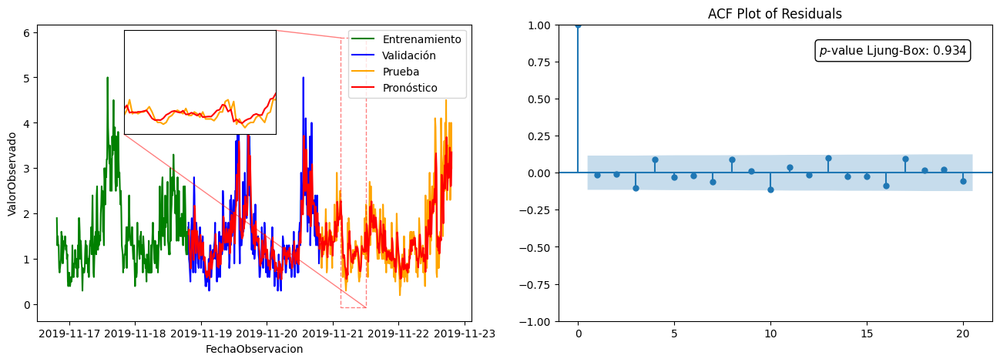
7. GARCH#
Selección de modelo#
# Función para realizar el forecast rolling
def garch_rolling(history, test):
predictions = list()
for t in range(len(test)):
model = arch_model(history, p = 2, q = 1)
model_fit = model.fit()
output = model_fit.forecast(horizon=1)
yhat = np.sqrt(output.variance.iloc[-1].values)[0]
predictions.append(yhat)
obs = test[t]
history.append(obs)
print('predicted=%f, expected=%f' % (yhat, obs))
return predictions
## Función para determinar el mejor modelo GARCH, minimizando el AIC
aicVal=[]
for pi in range(1, 5):
for qj in range(1,5):
try:
garch_obj = arch_model(train_data['ValorObservado'].tolist(), p = pi, q = qj)
garch_obj_fit = garch_obj.fit()
aicVal.append([pi, qj, garch_obj_fit.aic])
except ValueError:
pass
Iteration: 1, Func. Count: 6, Neg. LLF: 4331530653.404744
Iteration: 2, Func. Count: 21, Neg. LLF: 2019253.5271167012
Iteration: 3, Func. Count: 26, Neg. LLF: 2239561.8328918675
Iteration: 4, Func. Count: 32, Neg. LLF: 272141913930.9025
Iteration: 5, Func. Count: 47, Neg. LLF: 2.9639037870917187e+23
Iteration: 6, Func. Count: 62, Neg. LLF: 1317128321.2137678
Iteration: 7, Func. Count: 68, Neg. LLF: 17131801062.894638
Iteration: 8, Func. Count: 82, Neg. LLF: 321008363376189.94
Iteration: 9, Func. Count: 89, Neg. LLF: 189738557093.85535
Iteration: 10, Func. Count: 95, Neg. LLF: 5.554185790606803e+19
Iteration: 11, Func. Count: 107, Neg. LLF: 5833137.141717062
Iteration: 12, Func. Count: 116, Neg. LLF: 757011.9568315182
Optimization terminated successfully (Exit mode 0)
Current function value: 757011.9542964923
Iterations: 16
Function evaluations: 116
Gradient evaluations: 12
Iteration: 1, Func. Count: 7, Neg. LLF: 3.9910699083276317e+21
Iteration: 2, Func. Count: 23, Neg. LLF: 173131414.08405933
Iteration: 3, Func. Count: 30, Neg. LLF: 859090970.1591852
Iteration: 4, Func. Count: 46, Neg. LLF: 1234834.06019078
Iteration: 5, Func. Count: 52, Neg. LLF: 2299476.7270046105
Iteration: 6, Func. Count: 61, Neg. LLF: 8.521443015973535e+17
Iteration: 7, Func. Count: 71, Neg. LLF: 196999963226.7638
Iteration: 8, Func. Count: 77, Neg. LLF: 1184075.0500487972
Optimization terminated successfully (Exit mode 0)
Current function value: 1184075.047224253
Iterations: 12
Function evaluations: 77
Gradient evaluations: 8
Iteration: 1, Func. Count: 8, Neg. LLF: 3.901525080223534e+21
Iteration: 2, Func. Count: 25, Neg. LLF: 2945408.1934891855
Iteration: 3, Func. Count: 34, Neg. LLF: 153768735.15864646
Iteration: 4, Func. Count: 50, Neg. LLF: 13605056.722357254
Iteration: 5, Func. Count: 58, Neg. LLF: 613650.65197441
Iteration: 6, Func. Count: 66, Neg. LLF: 2276428043228.0303
Iteration: 7, Func. Count: 74, Neg. LLF: 4.804569691461024e+20
Iteration: 8, Func. Count: 91, Neg. LLF: 1.300134810123072e+18
Iteration: 9, Func. Count: 103, Neg. LLF: 473834.4930406656
Optimization terminated successfully (Exit mode 0)
Current function value: 473834.48951471224
Iterations: 13
Function evaluations: 103
Gradient evaluations: 9
Iteration: 1, Func. Count: 9, Neg. LLF: 3.826085659554997e+21
Iteration: 2, Func. Count: 27, Neg. LLF: 795025377.4072416
Iteration: 3, Func. Count: 45, Neg. LLF: 1207084.4331944997
Iteration: 4, Func. Count: 53, Neg. LLF: 134734128.84052238
Iteration: 5, Func. Count: 68, Neg. LLF: 14852106714957.914
Iteration: 6, Func. Count: 77, Neg. LLF: 1345598.4920329684
Iteration: 7, Func. Count: 87, Neg. LLF: 1081944.2511067714
Iteration: 8, Func. Count: 95, Neg. LLF: 2130297.0839951215
Iteration: 9, Func. Count: 105, Neg. LLF: 11672219.658303257
Iteration: 10, Func. Count: 119, Neg. LLF: 5896644962643999.0
Iteration: 11, Func. Count: 129, Neg. LLF: 1078565.0986264404
Optimization terminated successfully (Exit mode 0)
Current function value: 1078565.0958915397
Iterations: 15
Function evaluations: 129
Gradient evaluations: 11
Iteration: 1, Func. Count: 7, Neg. LLF: 4.0842420046865215e+21
Iteration: 2, Func. Count: 23, Neg. LLF: 1163004.9619028918
Iteration: 3, Func. Count: 29, Neg. LLF: 2563765884803.231
Iteration: 4, Func. Count: 45, Neg. LLF: 1427470.802112991
Iteration: 5, Func. Count: 56, Neg. LLF: 42300536804.61032
Iteration: 6, Func. Count: 66, Neg. LLF: 7113732.712682603
Iteration: 7, Func. Count: 73, Neg. LLF: 23629531.580030065
Iteration: 8, Func. Count: 80, Neg. LLF: 4926647774.08595
Iteration: 9, Func. Count: 87, Neg. LLF: 3481598.791453478
Iteration: 10, Func. Count: 94, Neg. LLF: 874646.5863740013
Iteration: 11, Func. Count: 102, Neg. LLF: 590404.362561435
Iteration: 12, Func. Count: 109, Neg. LLF: 483554.23434969824
Iteration: 13, Func. Count: 116, Neg. LLF: 579064.0931780774
Iteration: 14, Func. Count: 123, Neg. LLF: 154803431.25760806
Iteration: 15, Func. Count: 135, Neg. LLF: 23294879.44528553
Iteration: 16, Func. Count: 143, Neg. LLF: 1276813829.6979952
Iteration: 17, Func. Count: 150, Neg. LLF: 1980508.4734339283
Iteration: 18, Func. Count: 160, Neg. LLF: 742492.9017063873
Iteration: 19, Func. Count: 167, Neg. LLF: 456186.8661325051
Iteration: 20, Func. Count: 174, Neg. LLF: 444364.939447929
Iteration: 21, Func. Count: 181, Neg. LLF: 655871.2659209523
Iteration: 22, Func. Count: 189, Neg. LLF: 744092.8737091867
Iteration: 23, Func. Count: 196, Neg. LLF: 472251.7750937444
Iteration: 24, Func. Count: 203, Neg. LLF: 442557.3870933172
Iteration: 25, Func. Count: 210, Neg. LLF: 465719.16832002444
Iteration: 26, Func. Count: 217, Neg. LLF: 1169721.849365657
Iteration: 27, Func. Count: 225, Neg. LLF: 442089.88834274054
Iteration: 28, Func. Count: 231, Neg. LLF: 441920.56561176665
Iteration: 29, Func. Count: 237, Neg. LLF: 441904.9261872762
Iteration: 30, Func. Count: 243, Neg. LLF: 85077855.49481204
Iteration: 31, Func. Count: 255, Neg. LLF: 1412861692.943426
Iteration: 32, Func. Count: 264, Neg. LLF: 1401643.8528499287
Iteration: 33, Func. Count: 274, Neg. LLF: 465077.38777811057
Iteration: 34, Func. Count: 282, Neg. LLF: 441904.77156608604
Optimization terminated successfully (Exit mode 0)
Current function value: 441904.77157318994
Iterations: 38
Function evaluations: 282
Gradient evaluations: 34
Iteration: 1, Func. Count: 8, Neg. LLF: 4203765086.1995006
Iteration: 2, Func. Count: 25, Neg. LLF: 2000775.9999661453
Iteration: 3, Func. Count: 32, Neg. LLF: 1776706.373724489
Iteration: 4, Func. Count: 39, Neg. LLF: 66603947.40685809
Iteration: 5, Func. Count: 52, Neg. LLF: 7450977100.562496
Iteration: 6, Func. Count: 69, Neg. LLF: 2776609.4791089217
Iteration: 7, Func. Count: 80, Neg. LLF: 2501881.039371494
Iteration: 8, Func. Count: 88, Neg. LLF: 46608582.28317874
Iteration: 9, Func. Count: 96, Neg. LLF: 460811317.40080214
Iteration: 10, Func. Count: 109, Neg. LLF: 2159251.8596074292
Iteration: 11, Func. Count: 119, Neg. LLF: 6106174.937188909
Iteration: 12, Func. Count: 127, Neg. LLF: 26279112201.529495
Iteration: 13, Func. Count: 144, Neg. LLF: 1465766.550801481
Iteration: 14, Func. Count: 151, Neg. LLF: 1135924138.8554254
Iteration: 15, Func. Count: 167, Neg. LLF: 164396992.8857852
Iteration: 16, Func. Count: 180, Neg. LLF: 13349860.263173139
Iteration: 17, Func. Count: 196, Neg. LLF: 4.658718675524625e+26
Iteration: 18, Func. Count: 212, Neg. LLF: 10978439.11694764
Inequality constraints incompatible (Exit mode 4)
Current function value: 10978439.18977432
Iterations: 21
Function evaluations: 212
Gradient evaluations: 18
c:\Users\luis_\miniconda3\envs\ml_venv\lib\site-packages\arch\univariate\base.py:768: ConvergenceWarning: The optimizer returned code 4. The message is:
Inequality constraints incompatible
See scipy.optimize.fmin_slsqp for code meaning.
warnings.warn(
Iteration: 1, Func. Count: 9, Neg. LLF: 4158842772.892116
Iteration: 2, Func. Count: 27, Neg. LLF: 2010612.72468012
Iteration: 3, Func. Count: 35, Neg. LLF: 736093092442.657
Iteration: 4, Func. Count: 50, Neg. LLF: 4123687889.07527
Iteration: 5, Func. Count: 68, Neg. LLF: 86855427045.74316
Iteration: 6, Func. Count: 85, Neg. LLF: 747614079.8022137
Iteration: 7, Func. Count: 103, Neg. LLF: 657196824.9740897
Iteration: 8, Func. Count: 121, Neg. LLF: 1.2735986793238587e+21
Iteration: 9, Func. Count: 138, Neg. LLF: 3071366727.4698267
Iteration: 10, Func. Count: 155, Neg. LLF: 2072639.9463724014
Optimization terminated successfully (Exit mode 0)
Current function value: 2072639.9581270595
Iterations: 14
Function evaluations: 155
Gradient evaluations: 10
Iteration: 1, Func. Count: 10, Neg. LLF: 3.8079868266628996e+21
Iteration: 2, Func. Count: 29, Neg. LLF: 6415619725096.303
Iteration: 3, Func. Count: 47, Neg. LLF: 1168070.2853259165
Iteration: 4, Func. Count: 57, Neg. LLF: 8336883.617951958
Iteration: 5, Func. Count: 67, Neg. LLF: 16145565836.42883
Iteration: 6, Func. Count: 86, Neg. LLF: 2549722.2431595963
Iteration: 7, Func. Count: 100, Neg. LLF: 2177335.5597483837
Iteration: 8, Func. Count: 109, Neg. LLF: 75420371411.83182
Iteration: 9, Func. Count: 121, Neg. LLF: 8766696.153220635
Iteration: 10, Func. Count: 131, Neg. LLF: 8132527139675422.0
Iteration: 11, Func. Count: 141, Neg. LLF: 2645992.779369795
Iteration: 12, Func. Count: 151, Neg. LLF: 3.9616743864797155e+20
Iteration: 13, Func. Count: 169, Neg. LLF: 206556571740.72256
Iteration: 14, Func. Count: 178, Neg. LLF: 791861.1309557996
Optimization terminated successfully (Exit mode 0)
Current function value: 791861.1280519451
Iterations: 18
Function evaluations: 178
Gradient evaluations: 14
Iteration: 1, Func. Count: 8, Neg. LLF: 4.073121253905919e+21
Iteration: 2, Func. Count: 25, Neg. LLF: 1091732.0306741735
Iteration: 3, Func. Count: 32, Neg. LLF: 90134702.58565243
Iteration: 4, Func. Count: 49, Neg. LLF: 620424909243246.0
Iteration: 5, Func. Count: 66, Neg. LLF: 12884815.062486703
Iteration: 6, Func. Count: 77, Neg. LLF: 167420878153.8878
Iteration: 7, Func. Count: 94, Neg. LLF: 18986358.779744092
Iteration: 8, Func. Count: 102, Neg. LLF: 6886762.1457365025
Iteration: 9, Func. Count: 116, Neg. LLF: 8.811119873186734e+17
Iteration: 10, Func. Count: 128, Neg. LLF: 3472904.2260432653
Iteration: 11, Func. Count: 141, Neg. LLF: 193035998307.20883
Iteration: 12, Func. Count: 148, Neg. LLF: 624949.947667539
Optimization terminated successfully (Exit mode 0)
Current function value: 624949.9453859718
Iterations: 16
Function evaluations: 148
Gradient evaluations: 12
Iteration: 1, Func. Count: 9, Neg. LLF: 3.960017502179711e+21
Iteration: 2, Func. Count: 27, Neg. LLF: 1544465.7146586748
Iteration: 3, Func. Count: 37, Neg. LLF: 102063775.39096904
Iteration: 4, Func. Count: 53, Neg. LLF: 969022.7693251559
Iteration: 5, Func. Count: 71, Neg. LLF: 8172667383.912179
Iteration: 6, Func. Count: 89, Neg. LLF: 467015726613991.1
Iteration: 7, Func. Count: 98, Neg. LLF: 66874745.90270121
Iteration: 8, Func. Count: 112, Neg. LLF: 1946197.9532483341
Iteration: 9, Func. Count: 121, Neg. LLF: 1355953.0463225625
Iteration: 10, Func. Count: 130, Neg. LLF: 2242039.1706852256
Iteration: 11, Func. Count: 148, Neg. LLF: 1986940.2786708914
Iteration: 12, Func. Count: 166, Neg. LLF: 1608844.9356224919
Iteration: 13, Func. Count: 184, Neg. LLF: 2716916.401518179
Iteration: 14, Func. Count: 195, Neg. LLF: 8.924586075534202e+16
Iteration: 15, Func. Count: 207, Neg. LLF: 189160278237.62286
Iteration: 16, Func. Count: 215, Neg. LLF: 1159445.36144984
Optimization terminated successfully (Exit mode 0)
Current function value: 1159445.35791535
Iterations: 20
Function evaluations: 215
Gradient evaluations: 16
Iteration: 1, Func. Count: 10, Neg. LLF: 4060060702.3997536
Iteration: 2, Func. Count: 29, Neg. LLF: 2279387.731821497
Iteration: 3, Func. Count: 41, Neg. LLF: 6816735044.276319
Iteration: 4, Func. Count: 55, Neg. LLF: 1802667.4457640604
Iteration: 5, Func. Count: 64, Neg. LLF: 3156717.2057045638
Iteration: 6, Func. Count: 76, Neg. LLF: 1.662692395938874e+19
Iteration: 7, Func. Count: 88, Neg. LLF: 26081322448999.73
Iteration: 8, Func. Count: 104, Neg. LLF: 46399457649.26065
Iteration: 9, Func. Count: 120, Neg. LLF: 28525878.393408705
Iteration: 10, Func. Count: 132, Neg. LLF: 1701583.8019585717
Optimization terminated successfully (Exit mode 0)
Current function value: 1701583.7622284747
Iterations: 14
Function evaluations: 132
Gradient evaluations: 10
Iteration: 1, Func. Count: 11, Neg. LLF: 3.7876743940987295e+21
Iteration: 2, Func. Count: 31, Neg. LLF: 808817726.2855736
Iteration: 3, Func. Count: 51, Neg. LLF: 2975291.452457598
Iteration: 4, Func. Count: 64, Neg. LLF: 10602371.14116404
Iteration: 5, Func. Count: 78, Neg. LLF: 15266549.84387505
Iteration: 6, Func. Count: 95, Neg. LLF: 1.32275977333296e+17
Iteration: 7, Func. Count: 109, Neg. LLF: 846330.3845688164
Optimization terminated successfully (Exit mode 0)
Current function value: 846330.3729649278
Iterations: 11
Function evaluations: 109
Gradient evaluations: 7
Iteration: 1, Func. Count: 9, Neg. LLF: 4515109608.742912
Iteration: 2, Func. Count: 27, Neg. LLF: 2000273.9600251229
Iteration: 3, Func. Count: 35, Neg. LLF: 253535457809.8562
Iteration: 4, Func. Count: 48, Neg. LLF: 2528853267.0550632
Iteration: 5, Func. Count: 66, Neg. LLF: 4708658283.886212
Iteration: 6, Func. Count: 84, Neg. LLF: 1318713.702105434
Iteration: 7, Func. Count: 98, Neg. LLF: 39761515631.62825
Iteration: 8, Func. Count: 116, Neg. LLF: 78837660012.54059
Iteration: 9, Func. Count: 125, Neg. LLF: 95671760.79729374
Iteration: 10, Func. Count: 141, Neg. LLF: 2981924.849592955
Iteration: 11, Func. Count: 154, Neg. LLF: 526861.230472907
Iteration: 12, Func. Count: 163, Neg. LLF: 6297448.492649763
Iteration: 13, Func. Count: 172, Neg. LLF: 508346.9195654034
Optimization terminated successfully (Exit mode 0)
Current function value: 508346.91804696206
Iterations: 17
Function evaluations: 172
Gradient evaluations: 13
Iteration: 1, Func. Count: 10, Neg. LLF: 3.938287600081721e+21
Iteration: 2, Func. Count: 29, Neg. LLF: 1462246.8071746938
Iteration: 3, Func. Count: 40, Neg. LLF: 6611638.643150115
Iteration: 4, Func. Count: 56, Neg. LLF: 31574492.006138444
Iteration: 5, Func. Count: 66, Neg. LLF: 1905758.1652607499
Iteration: 6, Func. Count: 77, Neg. LLF: 954399.2581548989
Iteration: 7, Func. Count: 87, Neg. LLF: 6304192521.664601
Iteration: 8, Func. Count: 106, Neg. LLF: 1548565.7444740888
Iteration: 9, Func. Count: 115, Neg. LLF: 317239158.3066379
Iteration: 10, Func. Count: 133, Neg. LLF: 2529407.662811684
Iteration: 11, Func. Count: 148, Neg. LLF: 324902479.48882824
Iteration: 12, Func. Count: 165, Neg. LLF: 2973433.7923357147
Iteration: 13, Func. Count: 175, Neg. LLF: 74828987435.32115
Iteration: 14, Func. Count: 194, Neg. LLF: 1813578.1998204214
Iteration: 15, Func. Count: 203, Neg. LLF: 3301528.1073706644
Iteration: 16, Func. Count: 216, Neg. LLF: 1706740.000361062
Iteration: 17, Func. Count: 226, Neg. LLF: 487213.51823124057
Iteration: 18, Func. Count: 235, Neg. LLF: 3689250.406761466
Iteration: 19, Func. Count: 253, Neg. LLF: 1620735779.4108021
Iteration: 20, Func. Count: 271, Neg. LLF: 1459734.0134747515
Positive directional derivative for linesearch (Exit mode 8)
Current function value: 1459734.0135060349
Iterations: 24
Function evaluations: 271
Gradient evaluations: 20
c:\Users\luis_\miniconda3\envs\ml_venv\lib\site-packages\arch\univariate\base.py:768: ConvergenceWarning: The optimizer returned code 8. The message is:
Positive directional derivative for linesearch
See scipy.optimize.fmin_slsqp for code meaning.
warnings.warn(
Iteration: 1, Func. Count: 11, Neg. LLF: 3.8428634359242933e+21
Iteration: 2, Func. Count: 31, Neg. LLF: 6233631332927.23
Iteration: 3, Func. Count: 50, Neg. LLF: 1146184.2709698968
Iteration: 4, Func. Count: 61, Neg. LLF: 76673523619.0363
Iteration: 5, Func. Count: 81, Neg. LLF: 2401541.110248913
Iteration: 6, Func. Count: 96, Neg. LLF: 2198237.148175718
Iteration: 7, Func. Count: 106, Neg. LLF: 3714672.3773437226
Iteration: 8, Func. Count: 119, Neg. LLF: 967719223.3434799
Iteration: 9, Func. Count: 137, Neg. LLF: 1076180.9092994963
Iteration: 10, Func. Count: 147, Neg. LLF: 1104493919.5547566
Iteration: 11, Func. Count: 163, Neg. LLF: 7731989529214681.0
Iteration: 12, Func. Count: 182, Neg. LLF: 232058369979541.12
Iteration: 13, Func. Count: 201, Neg. LLF: 504323857511598.1
Iteration: 14, Func. Count: 220, Neg. LLF: 997437.3896070148
Optimization terminated successfully (Exit mode 0)
Current function value: 997437.3878571773
Iterations: 18
Function evaluations: 220
Gradient evaluations: 14
Iteration: 1, Func. Count: 12, Neg. LLF: 3.762363350179678e+21
Iteration: 2, Func. Count: 33, Neg. LLF: 1526572.7015409248
Iteration: 3, Func. Count: 45, Neg. LLF: 1244982.6656011308
Iteration: 4, Func. Count: 61, Neg. LLF: 281307311.44174254
Iteration: 5, Func. Count: 76, Neg. LLF: 1202800.7850758
Iteration: 6, Func. Count: 89, Neg. LLF: 438980801.3505084
Iteration: 7, Func. Count: 110, Neg. LLF: 11829091022826.094
Iteration: 8, Func. Count: 122, Neg. LLF: 3.567199445523235e+21
Iteration: 9, Func. Count: 143, Neg. LLF: 1181142.281776775
Iteration: 10, Func. Count: 154, Neg. LLF: 13879203.579117252
Iteration: 11, Func. Count: 174, Neg. LLF: 4.4594464577074076e+21
Iteration: 12, Func. Count: 195, Neg. LLF: 4.5756941284421245e+20
Iteration: 13, Func. Count: 213, Neg. LLF: 1062203.2764878224
Positive directional derivative for linesearch (Exit mode 8)
Current function value: 1062203.2708653787
Iterations: 17
Function evaluations: 213
Gradient evaluations: 13
c:\Users\luis_\miniconda3\envs\ml_venv\lib\site-packages\arch\univariate\base.py:768: ConvergenceWarning: The optimizer returned code 8. The message is:
Positive directional derivative for linesearch
See scipy.optimize.fmin_slsqp for code meaning.
warnings.warn(
# Mostrando los modelos evaluados y su AIC
df2AIC = pd.DataFrame(aicVal, columns=['p', 'q', 'AIC'])
df2AIC
| p | q | AIC | |
|---|---|---|---|
| 0 | 1 | 1 | 1.514032e+06 |
| 1 | 1 | 2 | 2.368160e+06 |
| 2 | 1 | 3 | 9.476810e+05 |
| 3 | 1 | 4 | 2.157144e+06 |
| 4 | 2 | 1 | 8.838195e+05 |
| 5 | 2 | 2 | 2.195689e+07 |
| 6 | 2 | 3 | 4.145294e+06 |
| 7 | 2 | 4 | 1.583738e+06 |
| 8 | 3 | 1 | 1.249912e+06 |
| 9 | 3 | 2 | 2.318905e+06 |
| 10 | 3 | 3 | 3.403184e+06 |
| 11 | 3 | 4 | 1.692679e+06 |
| 12 | 4 | 1 | 1.016708e+06 |
| 13 | 4 | 2 | 2.919484e+06 |
| 14 | 4 | 3 | 1.994893e+06 |
| 15 | 4 | 4 | 2.124427e+06 |
# Mostrando el mejor modelo basado en AIC
print('Best GARCH parameters based on AIC:\n')
df2AIC[df2AIC.AIC == df2AIC.AIC.min()]
Best GARCH parameters based on AIC:
| p | q | AIC | |
|---|---|---|---|
| 4 | 2 | 1 | 883819.543146 |
# Resumen de modelo seleccionado p = 2, q = 2
modelGarch = arch_model(train_data['ValorObservado'][-1008:], p = 2, q = 2)
modelGarchfit = modelGarch.fit()
modelGarchfit.summary()
Iteration: 1, Func. Count: 8, Neg. LLF: 294065668477.29626
Iteration: 2, Func. Count: 20, Neg. LLF: 816312512.2106111
Iteration: 3, Func. Count: 28, Neg. LLF: 13703.576015736364
Iteration: 4, Func. Count: 36, Neg. LLF: 36140.88552446896
Iteration: 5, Func. Count: 45, Neg. LLF: 1038.242172188874
Iteration: 6, Func. Count: 54, Neg. LLF: 938.3718738878771
Iteration: 7, Func. Count: 62, Neg. LLF: 1037.4808405269562
Iteration: 8, Func. Count: 70, Neg. LLF: 1029.249283812512
Iteration: 9, Func. Count: 78, Neg. LLF: 917.2560067397492
Iteration: 10, Func. Count: 86, Neg. LLF: 909.376647833897
Iteration: 11, Func. Count: 93, Neg. LLF: 909.3055900279286
Iteration: 12, Func. Count: 100, Neg. LLF: 909.2957954581525
Iteration: 13, Func. Count: 107, Neg. LLF: 909.2937344564018
Iteration: 14, Func. Count: 114, Neg. LLF: 909.2931878621125
Iteration: 15, Func. Count: 121, Neg. LLF: 909.2931162687362
Iteration: 16, Func. Count: 127, Neg. LLF: 909.2931162687844
Optimization terminated successfully (Exit mode 0)
Current function value: 909.2931162687362
Iterations: 16
Function evaluations: 127
Gradient evaluations: 16
| Dep. Variable: | ValorObservado | R-squared: | 0.000 |
|---|---|---|---|
| Mean Model: | Constant Mean | Adj. R-squared: | 0.000 |
| Vol Model: | GARCH | Log-Likelihood: | -909.293 |
| Distribution: | Normal | AIC: | 1830.59 |
| Method: | Maximum Likelihood | BIC: | 1860.08 |
| No. Observations: | 1008 | ||
| Date: | Wed, Mar 12 2025 | Df Residuals: | 1007 |
| Time: | 18:32:58 | Df Model: | 1 |
| coef | std err | t | P>|t| | 95.0% Conf. Int. | |
|---|---|---|---|---|---|
| mu | 1.1376 | 3.207e-02 | 35.468 | 1.507e-275 | [ 1.075, 1.201] |
| coef | std err | t | P>|t| | 95.0% Conf. Int. | |
|---|---|---|---|---|---|
| omega | 0.0409 | 4.556e-02 | 0.897 | 0.370 | [-4.842e-02, 0.130] |
| alpha[1] | 0.3853 | 0.138 | 2.801 | 5.092e-03 | [ 0.116, 0.655] |
| alpha[2] | 1.1990e-13 | 0.566 | 2.117e-13 | 1.000 | [ -1.110, 1.110] |
| beta[1] | 0.3566 | 1.057 | 0.337 | 0.736 | [ -1.716, 2.429] |
| beta[2] | 0.1769 | 0.552 | 0.321 | 0.749 | [ -0.904, 1.258] |
Covariance estimator: robust
Gráfica de diagnóstico#
# Residuales de modelo seleccionado
residuals_garch = modelGarchfit.resid / modelGarchfit.conditional_volatility
# Se crea gráfica de diagnóstico
fig, axes = plt.subplots(2, 2, figsize=(12, 8))
# Plot 1: Standardized Residuals
axes[0, 0].plot(range(len(residuals_garch)),residuals_garch, color="blue")
axes[0, 0].set_title("Standardized Residuals")
# Plot 2: Histogram & KDE
sns.histplot(residuals_garch, stat="density", bins=30, kde=False, ax=axes[0, 1], color="blue", label = "Histogram")
xmin, xmax = axes[0, 1].get_xlim()
x = np.linspace(xmin, xmax, 100)
p = norm.pdf(x, 0, 1) # Normal distribution N(0,1)
axes[0, 1].plot(x, p, 'g-', label = "N(0,1)")
axes[0, 1].set_title("Histogram")
axes[0, 1].legend()
# Plot 3: Q-Q Plot
sm.qqplot(residuals_garch, line="s", ax=axes[1, 0])
axes[1, 0].set_title("Q-Q Plot of Residuals")
# Plot 4: ACF
sm.graphics.tsa.plot_acf(residuals_garch, lags=20, ax=axes[1, 1])
axes[1, 1].set_title("ACF Plot of Residuals")
plt.tight_layout()
plt.show()
c:\Users\luis_\miniconda3\envs\ml_venv\lib\site-packages\seaborn\_oldcore.py:1119: FutureWarning: use_inf_as_na option is deprecated and will be removed in a future version. Convert inf values to NaN before operating instead.
with pd.option_context('mode.use_inf_as_na', True):
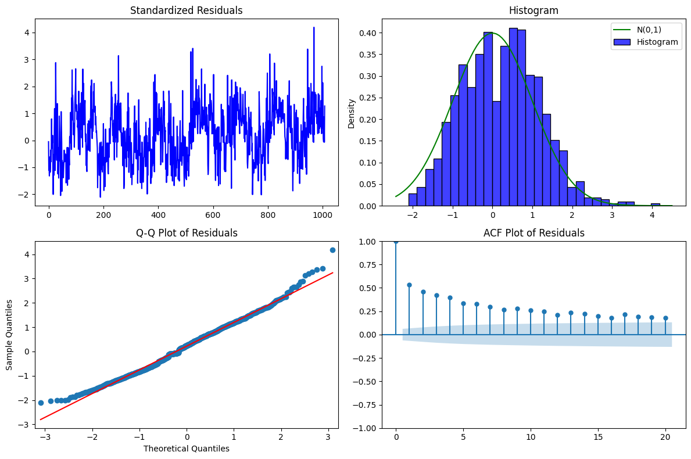
Forecast#
# Se calculan los valores predichos del conjunto de validación
yhat_garch = garch_rolling(train_data['ValorObservado'][-1008:].tolist(), validation_data['ValorObservado'].tolist())
Iteration: 1, Func. Count: 7, Neg. LLF: 177189254725792.06
Iteration: 2, Func. Count: 18, Neg. LLF: 4959611.762965145
Iteration: 3, Func. Count: 25, Neg. LLF: 567223178.1961856
Iteration: 4, Func. Count: 32, Neg. LLF: 1413.1179849448747
Iteration: 5, Func. Count: 39, Neg. LLF: 934.3938151320949
Iteration: 6, Func. Count: 46, Neg. LLF: 978.4250552019296
Iteration: 7, Func. Count: 54, Neg. LLF: 915.7929281400696
Iteration: 8, Func. Count: 61, Neg. LLF: 912.470620260321
Iteration: 9, Func. Count: 68, Neg. LLF: 911.1583278742269
Iteration: 10, Func. Count: 74, Neg. LLF: 911.1280892423051
Iteration: 11, Func. Count: 80, Neg. LLF: 911.1259962032254
Iteration: 12, Func. Count: 86, Neg. LLF: 911.1259034363752
Iteration: 13, Func. Count: 92, Neg. LLF: 911.1259024939563
Optimization terminated successfully (Exit mode 0)
Current function value: 911.1259024939563
Iterations: 13
Function evaluations: 92
Gradient evaluations: 13
predicted=0.512156, expected=1.800000
Iteration: 1, Func. Count: 7, Neg. LLF: 176570933437635.1
Iteration: 2, Func. Count: 18, Neg. LLF: 826295.3626689
Iteration: 3, Func. Count: 25, Neg. LLF: 567590697.7358351
Iteration: 4, Func. Count: 32, Neg. LLF: 1401.9089020358233
Iteration: 5, Func. Count: 39, Neg. LLF: 929.9561226556659
Iteration: 6, Func. Count: 46, Neg. LLF: 1009.7690117954867
Iteration: 7, Func. Count: 54, Neg. LLF: 913.1393328437478
Iteration: 8, Func. Count: 60, Neg. LLF: 912.2707674733574
Iteration: 9, Func. Count: 66, Neg. LLF: 912.272422013284
Iteration: 10, Func. Count: 73, Neg. LLF: 912.2250702175813
Iteration: 11, Func. Count: 79, Neg. LLF: 912.2248043424673
Iteration: 12, Func. Count: 85, Neg. LLF: 912.2247966435442
Iteration: 13, Func. Count: 90, Neg. LLF: 912.2247966437557
Optimization terminated successfully (Exit mode 0)
Current function value: 912.2247966435442
Iterations: 13
Function evaluations: 90
Gradient evaluations: 13
predicted=0.584246, expected=1.000000
Iteration: 1, Func. Count: 7, Neg. LLF: 152138833984.28622
Iteration: 2, Func. Count: 18, Neg. LLF: 352474.8770275533
Iteration: 3, Func. Count: 25, Neg. LLF: 567510180.5416135
Iteration: 4, Func. Count: 32, Neg. LLF: 1408.2725573904645
Iteration: 5, Func. Count: 39, Neg. LLF: 934.1183619009063
Iteration: 6, Func. Count: 46, Neg. LLF: 988.8472428001369
Iteration: 7, Func. Count: 54, Neg. LLF: 916.1545525891754
Iteration: 8, Func. Count: 61, Neg. LLF: 913.6470088375186
Iteration: 9, Func. Count: 67, Neg. LLF: 912.6633467735952
Iteration: 10, Func. Count: 73, Neg. LLF: 912.6366416801275
Iteration: 11, Func. Count: 79, Neg. LLF: 912.6316313224029
Iteration: 12, Func. Count: 85, Neg. LLF: 912.6315920248124
Iteration: 13, Func. Count: 91, Neg. LLF: 912.6315911989183
Optimization terminated successfully (Exit mode 0)
Current function value: 912.6315911989183
Iterations: 13
Function evaluations: 91
Gradient evaluations: 13
predicted=0.494391, expected=0.900000
Iteration: 1, Func. Count: 7, Neg. LLF: 203270251273.05493
Iteration: 2, Func. Count: 18, Neg. LLF: 396535.10809344624
Iteration: 3, Func. Count: 25, Neg. LLF: 567656219.7469411
Iteration: 4, Func. Count: 32, Neg. LLF: 1416.5632872378246
Iteration: 5, Func. Count: 39, Neg. LLF: 938.5503675679697
Iteration: 6, Func. Count: 46, Neg. LLF: 947.748069195681
Iteration: 7, Func. Count: 54, Neg. LLF: 916.0152127714424
Iteration: 8, Func. Count: 61, Neg. LLF: 914.3701579053429
Iteration: 9, Func. Count: 68, Neg. LLF: 913.0887117991906
Iteration: 10, Func. Count: 74, Neg. LLF: 912.9605288357521
Iteration: 11, Func. Count: 80, Neg. LLF: 912.957514802775
Iteration: 12, Func. Count: 86, Neg. LLF: 912.9571511903068
Iteration: 13, Func. Count: 92, Neg. LLF: 912.9571475715777
Iteration: 14, Func. Count: 97, Neg. LLF: 912.957147572098
Optimization terminated successfully (Exit mode 0)
Current function value: 912.9571475715777
Iterations: 14
Function evaluations: 97
Gradient evaluations: 14
predicted=0.446360, expected=0.700000
Iteration: 1, Func. Count: 7, Neg. LLF: 1381987153540.5354
Iteration: 2, Func. Count: 18, Neg. LLF: 1098866.773155381
Iteration: 3, Func. Count: 25, Neg. LLF: 568792451.1249092
Iteration: 4, Func. Count: 32, Neg. LLF: 1423.3141766648514
Iteration: 5, Func. Count: 39, Neg. LLF: 942.4131603958122
Iteration: 6, Func. Count: 46, Neg. LLF: 937.4993893186634
Iteration: 7, Func. Count: 54, Neg. LLF: 915.6356304126845
Iteration: 8, Func. Count: 60, Neg. LLF: 916.6996966669512
Iteration: 9, Func. Count: 67, Neg. LLF: 928.2509376680136
Iteration: 10, Func. Count: 74, Neg. LLF: 913.5398314059519
Iteration: 11, Func. Count: 80, Neg. LLF: 913.5390864990086
Iteration: 12, Func. Count: 86, Neg. LLF: 913.5390651363562
Iteration: 13, Func. Count: 92, Neg. LLF: 913.5390605639511
Iteration: 14, Func. Count: 97, Neg. LLF: 913.5390605639489
Optimization terminated successfully (Exit mode 0)
Current function value: 913.5390605639511
Iterations: 14
Function evaluations: 97
Gradient evaluations: 14
predicted=0.465682, expected=0.500000
Iteration: 1, Func. Count: 7, Neg. LLF: 182423672668738.03
Iteration: 2, Func. Count: 18, Neg. LLF: 1362990.4826720408
Iteration: 3, Func. Count: 25, Neg. LLF: 570849991.0648649
Iteration: 4, Func. Count: 32, Neg. LLF: 1423.2376629092373
Iteration: 5, Func. Count: 39, Neg. LLF: 941.565886373219
Iteration: 6, Func. Count: 46, Neg. LLF: 941.0978077471201
Iteration: 7, Func. Count: 54, Neg. LLF: 917.284635148894
Iteration: 8, Func. Count: 61, Neg. LLF: 916.3850055825161
Iteration: 9, Func. Count: 68, Neg. LLF: 914.8019717741448
Iteration: 10, Func. Count: 74, Neg. LLF: 914.6156891949349
Iteration: 11, Func. Count: 80, Neg. LLF: 914.6136683265433
Iteration: 12, Func. Count: 86, Neg. LLF: 914.6131590806465
Iteration: 13, Func. Count: 92, Neg. LLF: 914.6131556031584
Iteration: 14, Func. Count: 97, Neg. LLF: 914.6131556036645
Optimization terminated successfully (Exit mode 0)
Current function value: 914.6131556031584
Iterations: 14
Function evaluations: 97
Gradient evaluations: 14
predicted=0.546323, expected=1.200000
Iteration: 1, Func. Count: 7, Neg. LLF: 241815811889.1919
Iteration: 2, Func. Count: 18, Neg. LLF: 4851264.687225956
Iteration: 3, Func. Count: 25, Neg. LLF: 570838839.2398123
Iteration: 4, Func. Count: 32, Neg. LLF: 1426.2831518506605
Iteration: 5, Func. Count: 39, Neg. LLF: 946.4339834669757
Iteration: 6, Func. Count: 46, Neg. LLF: 936.9365193547951
Iteration: 7, Func. Count: 54, Neg. LLF: 917.1578314652846
Iteration: 8, Func. Count: 60, Neg. LLF: 918.5797324323628
Iteration: 9, Func. Count: 67, Neg. LLF: 926.7597629516185
Iteration: 10, Func. Count: 74, Neg. LLF: 914.9350350979328
Iteration: 11, Func. Count: 80, Neg. LLF: 914.934802633339
Iteration: 12, Func. Count: 86, Neg. LLF: 914.9347895882702
Iteration: 13, Func. Count: 92, Neg. LLF: 914.9347880776771
Iteration: 14, Func. Count: 97, Neg. LLF: 914.9347880779826
Optimization terminated successfully (Exit mode 0)
Current function value: 914.9347880776771
Iterations: 14
Function evaluations: 97
Gradient evaluations: 14
predicted=0.463084, expected=1.700000
Iteration: 1, Func. Count: 7, Neg. LLF: 184121791122154.44
Iteration: 2, Func. Count: 18, Neg. LLF: 628750.4045267783
Iteration: 3, Func. Count: 25, Neg. LLF: 569661715.9973135
Iteration: 4, Func. Count: 32, Neg. LLF: 1428.1541560412138
Iteration: 5, Func. Count: 39, Neg. LLF: 945.9820809721997
Iteration: 6, Func. Count: 46, Neg. LLF: 936.7448639301015
Iteration: 7, Func. Count: 54, Neg. LLF: 917.7235628904589
Iteration: 8, Func. Count: 60, Neg. LLF: 919.4088500357204
Iteration: 9, Func. Count: 67, Neg. LLF: 925.1555377206565
Iteration: 10, Func. Count: 74, Neg. LLF: 915.8375832016459
Iteration: 11, Func. Count: 80, Neg. LLF: 915.8374409356779
Iteration: 12, Func. Count: 86, Neg. LLF: 915.8374323722223
Iteration: 13, Func. Count: 92, Neg. LLF: 915.8374308315488
Iteration: 14, Func. Count: 97, Neg. LLF: 915.8374308315333
Optimization terminated successfully (Exit mode 0)
Current function value: 915.8374308315488
Iterations: 14
Function evaluations: 97
Gradient evaluations: 14
predicted=0.521366, expected=1.900000
Iteration: 1, Func. Count: 7, Neg. LLF: 161657085378.96945
Iteration: 2, Func. Count: 18, Neg. LLF: 119530.73112155424
Iteration: 3, Func. Count: 25, Neg. LLF: 569179114.2502041
Iteration: 4, Func. Count: 32, Neg. LLF: 1421.4760524745022
Iteration: 5, Func. Count: 39, Neg. LLF: 940.467295673975
Iteration: 6, Func. Count: 46, Neg. LLF: 944.986420541876
Iteration: 7, Func. Count: 54, Neg. LLF: 919.6629366739146
Iteration: 8, Func. Count: 61, Neg. LLF: 919.2578089200006
Iteration: 9, Func. Count: 68, Neg. LLF: 917.3396674805363
Iteration: 10, Func. Count: 74, Neg. LLF: 917.1890637502031
Iteration: 11, Func. Count: 80, Neg. LLF: 917.1879344228992
Iteration: 12, Func. Count: 86, Neg. LLF: 917.1876565716652
Iteration: 13, Func. Count: 92, Neg. LLF: 917.1876558498041
Optimization terminated successfully (Exit mode 0)
Current function value: 917.1876558498041
Iterations: 13
Function evaluations: 92
Gradient evaluations: 13
predicted=0.628696, expected=1.300000
Iteration: 1, Func. Count: 7, Neg. LLF: 172280704942.9341
Iteration: 2, Func. Count: 18, Neg. LLF: 63491.62869319058
Iteration: 3, Func. Count: 25, Neg. LLF: 568976621.4954246
Iteration: 4, Func. Count: 32, Neg. LLF: 1421.494500623467
Iteration: 5, Func. Count: 39, Neg. LLF: 942.9180147268935
Iteration: 6, Func. Count: 46, Neg. LLF: 942.0050953845648
Iteration: 7, Func. Count: 54, Neg. LLF: 919.708598736591
Iteration: 8, Func. Count: 60, Neg. LLF: 921.1544968794963
Iteration: 9, Func. Count: 67, Neg. LLF: 926.6360610957896
Iteration: 10, Func. Count: 74, Neg. LLF: 917.6773643751137
Iteration: 11, Func. Count: 80, Neg. LLF: 917.6767034764474
Iteration: 12, Func. Count: 86, Neg. LLF: 917.6766401207742
Iteration: 13, Func. Count: 92, Neg. LLF: 917.67663830472
Iteration: 14, Func. Count: 97, Neg. LLF: 917.6766383046755
Optimization terminated successfully (Exit mode 0)
Current function value: 917.67663830472
Iterations: 14
Function evaluations: 97
Gradient evaluations: 14
predicted=0.528932, expected=1.100000
Iteration: 1, Func. Count: 7, Neg. LLF: 325283497132.5807
Iteration: 2, Func. Count: 18, Neg. LLF: 46901.83641796858
Iteration: 3, Func. Count: 25, Neg. LLF: 568961675.2276219
Iteration: 4, Func. Count: 32, Neg. LLF: 1425.515884999918
Iteration: 5, Func. Count: 39, Neg. LLF: 945.3716361308701
Iteration: 6, Func. Count: 46, Neg. LLF: 938.4738877997588
Iteration: 7, Func. Count: 54, Neg. LLF: 919.3660623257827
Iteration: 8, Func. Count: 60, Neg. LLF: 921.104690150154
Iteration: 9, Func. Count: 67, Neg. LLF: 924.0711443019844
Iteration: 10, Func. Count: 74, Neg. LLF: 917.9604345203387
Iteration: 11, Func. Count: 80, Neg. LLF: 917.9601991752461
Iteration: 12, Func. Count: 86, Neg. LLF: 917.9601534359433
Iteration: 13, Func. Count: 91, Neg. LLF: 917.9601534362008
Optimization terminated successfully (Exit mode 0)
Current function value: 917.9601534359433
Iterations: 13
Function evaluations: 91
Gradient evaluations: 13
predicted=0.449946, expected=0.700000
Iteration: 1, Func. Count: 7, Neg. LLF: 187523896282066.3
Iteration: 2, Func. Count: 18, Neg. LLF: 71270.50707311156
Iteration: 3, Func. Count: 25, Neg. LLF: 569722211.3231931
Iteration: 4, Func. Count: 32, Neg. LLF: 1434.8068902595544
Iteration: 5, Func. Count: 39, Neg. LLF: 949.9055314207641
Iteration: 6, Func. Count: 46, Neg. LLF: 939.832336240004
Iteration: 7, Func. Count: 54, Neg. LLF: 921.5572225995929
Iteration: 8, Func. Count: 61, Neg. LLF: 920.2719704057176
Iteration: 9, Func. Count: 68, Neg. LLF: 918.7074991045997
Iteration: 10, Func. Count: 74, Neg. LLF: 918.5482862621022
Iteration: 11, Func. Count: 80, Neg. LLF: 918.5465355151151
Iteration: 12, Func. Count: 86, Neg. LLF: 918.5450057297855
Iteration: 13, Func. Count: 92, Neg. LLF: 918.5450016326976
Iteration: 14, Func. Count: 97, Neg. LLF: 918.5450016331285
Optimization terminated successfully (Exit mode 0)
Current function value: 918.5450016326976
Iterations: 14
Function evaluations: 97
Gradient evaluations: 14
predicted=0.468154, expected=2.000000
Iteration: 1, Func. Count: 7, Neg. LLF: 186611610048942.44
Iteration: 2, Func. Count: 18, Neg. LLF: 32704.2545276034
Iteration: 3, Func. Count: 25, Neg. LLF: 568851327.9343224
Iteration: 4, Func. Count: 32, Neg. LLF: 1424.0822318614873
Iteration: 5, Func. Count: 39, Neg. LLF: 942.9891795151377
Iteration: 6, Func. Count: 46, Neg. LLF: 941.6043466785694
Iteration: 7, Func. Count: 54, Neg. LLF: 921.6861829202684
Iteration: 8, Func. Count: 60, Neg. LLF: 923.4976037112064
Iteration: 9, Func. Count: 67, Neg. LLF: 925.4998557721467
Iteration: 10, Func. Count: 74, Neg. LLF: 920.4113809057776
Iteration: 11, Func. Count: 80, Neg. LLF: 920.4108781285058
Iteration: 12, Func. Count: 86, Neg. LLF: 920.410808412114
Iteration: 13, Func. Count: 91, Neg. LLF: 920.4108084121549
Optimization terminated successfully (Exit mode 0)
Current function value: 920.410808412114
Iterations: 13
Function evaluations: 91
Gradient evaluations: 13
predicted=0.645969, expected=2.800000
Iteration: 1, Func. Count: 7, Neg. LLF: 182891921557460.88
Iteration: 2, Func. Count: 18, Neg. LLF: 48524.553273684876
Iteration: 3, Func. Count: 25, Neg. LLF: 572412321.1342239
Iteration: 4, Func. Count: 32, Neg. LLF: 1431.0102676924953
Iteration: 5, Func. Count: 39, Neg. LLF: 936.0770630757447
Iteration: 6, Func. Count: 46, Neg. LLF: 1006.8838944064711
Iteration: 7, Func. Count: 54, Neg. LLF: 924.9556065282777
Iteration: 8, Func. Count: 60, Neg. LLF: 924.2335887428474
Iteration: 9, Func. Count: 66, Neg. LLF: 924.2017471867896
Iteration: 10, Func. Count: 72, Neg. LLF: 924.1914583372914
Iteration: 11, Func. Count: 78, Neg. LLF: 924.1913891957132
Iteration: 12, Func. Count: 84, Neg. LLF: 924.1913875726286
Iteration: 13, Func. Count: 89, Neg. LLF: 924.1913875728628
Optimization terminated successfully (Exit mode 0)
Current function value: 924.1913875726286
Iterations: 13
Function evaluations: 89
Gradient evaluations: 13
predicted=1.111880, expected=2.400000
Iteration: 1, Func. Count: 7, Neg. LLF: 223389487001.31204
Iteration: 2, Func. Count: 18, Neg. LLF: 101843.79841878201
Iteration: 3, Func. Count: 25, Neg. LLF: 574317262.5278267
Iteration: 4, Func. Count: 32, Neg. LLF: 1441.1240936046122
Iteration: 5, Func. Count: 39, Neg. LLF: 938.3583687399941
Iteration: 6, Func. Count: 46, Neg. LLF: 1010.131090178793
Iteration: 7, Func. Count: 54, Neg. LLF: 926.7899937368732
Iteration: 8, Func. Count: 60, Neg. LLF: 925.9046571041089
Iteration: 9, Func. Count: 66, Neg. LLF: 925.8722401878032
Iteration: 10, Func. Count: 72, Neg. LLF: 925.8625705031695
Iteration: 11, Func. Count: 78, Neg. LLF: 925.8625018352909
Iteration: 12, Func. Count: 84, Neg. LLF: 925.8624997467602
Iteration: 13, Func. Count: 89, Neg. LLF: 925.8624997470151
Optimization terminated successfully (Exit mode 0)
Current function value: 925.8624997467602
Iterations: 13
Function evaluations: 89
Gradient evaluations: 13
predicted=1.146629, expected=1.200000
Iteration: 1, Func. Count: 7, Neg. LLF: 300571140004.39355
Iteration: 2, Func. Count: 18, Neg. LLF: 65918.1669874858
Iteration: 3, Func. Count: 25, Neg. LLF: 574326318.2239784
Iteration: 4, Func. Count: 32, Neg. LLF: 1436.049340832009
Iteration: 5, Func. Count: 39, Neg. LLF: 939.5808666204515
Iteration: 6, Func. Count: 46, Neg. LLF: 1015.7467108831063
Iteration: 7, Func. Count: 54, Neg. LLF: 927.802419487731
Iteration: 8, Func. Count: 60, Neg. LLF: 926.9805400832357
Iteration: 9, Func. Count: 66, Neg. LLF: 926.9308404026035
Iteration: 10, Func. Count: 72, Neg. LLF: 926.9186914778566
Iteration: 11, Func. Count: 78, Neg. LLF: 926.9186181761718
Iteration: 12, Func. Count: 84, Neg. LLF: 926.9186173445269
Optimization terminated successfully (Exit mode 0)
Current function value: 926.9186173445269
Iterations: 12
Function evaluations: 84
Gradient evaluations: 12
predicted=0.900557, expected=0.700000
Iteration: 1, Func. Count: 7, Neg. LLF: 293016657959.41797
Iteration: 2, Func. Count: 18, Neg. LLF: 48947.95472445192
Iteration: 3, Func. Count: 25, Neg. LLF: 574970358.7881958
Iteration: 4, Func. Count: 32, Neg. LLF: 1436.0295097010649
Iteration: 5, Func. Count: 39, Neg. LLF: 940.6140819585125
Iteration: 6, Func. Count: 46, Neg. LLF: 1014.3157614891879
Iteration: 7, Func. Count: 54, Neg. LLF: 928.5536499195962
Iteration: 8, Func. Count: 60, Neg. LLF: 927.8868238537759
Iteration: 9, Func. Count: 66, Neg. LLF: 927.8585870791272
Iteration: 10, Func. Count: 72, Neg. LLF: 927.8499533955531
Iteration: 11, Func. Count: 78, Neg. LLF: 927.8498798854255
Iteration: 12, Func. Count: 84, Neg. LLF: 927.8498776390579
Iteration: 13, Func. Count: 89, Neg. LLF: 927.8498776393056
Optimization terminated successfully (Exit mode 0)
Current function value: 927.8498776390579
Iterations: 13
Function evaluations: 89
Gradient evaluations: 13
predicted=0.761371, expected=1.300000
Iteration: 1, Func. Count: 7, Neg. LLF: 182958077169839.88
Iteration: 2, Func. Count: 18, Neg. LLF: 43260.80011417865
Iteration: 3, Func. Count: 25, Neg. LLF: 574802608.9595685
Iteration: 4, Func. Count: 32, Neg. LLF: 1433.6922572850335
Iteration: 5, Func. Count: 39, Neg. LLF: 940.928176314208
Iteration: 6, Func. Count: 46, Neg. LLF: 1013.6062272878311
Iteration: 7, Func. Count: 54, Neg. LLF: 929.262014900559
Iteration: 8, Func. Count: 60, Neg. LLF: 928.5706494004379
Iteration: 9, Func. Count: 66, Neg. LLF: 928.5286535514653
Iteration: 10, Func. Count: 72, Neg. LLF: 928.5180582774469
Iteration: 11, Func. Count: 78, Neg. LLF: 928.5179913022608
Iteration: 12, Func. Count: 84, Neg. LLF: 928.5179906030598
Optimization terminated successfully (Exit mode 0)
Current function value: 928.5179906030598
Iterations: 12
Function evaluations: 84
Gradient evaluations: 12
predicted=0.621205, expected=1.800000
Iteration: 1, Func. Count: 7, Neg. LLF: 182864438331689.44
Iteration: 2, Func. Count: 18, Neg. LLF: 34721.086856502574
Iteration: 3, Func. Count: 25, Neg. LLF: 574627789.8826393
Iteration: 4, Func. Count: 32, Neg. LLF: 1431.1055201994532
Iteration: 5, Func. Count: 39, Neg. LLF: 941.69289602556
Iteration: 6, Func. Count: 46, Neg. LLF: 1017.6625438011806
Iteration: 7, Func. Count: 54, Neg. LLF: 930.4256477442223
Iteration: 8, Func. Count: 60, Neg. LLF: 929.6399070774827
Iteration: 9, Func. Count: 66, Neg. LLF: 929.5478884151698
Iteration: 10, Func. Count: 72, Neg. LLF: 929.5287567834673
Iteration: 11, Func. Count: 78, Neg. LLF: 929.5285856476485
Iteration: 12, Func. Count: 84, Neg. LLF: 929.5285841555763
Iteration: 13, Func. Count: 89, Neg. LLF: 929.5285841557192
Optimization terminated successfully (Exit mode 0)
Current function value: 929.5285841555763
Iterations: 13
Function evaluations: 89
Gradient evaluations: 13
predicted=0.643131, expected=1.600000
Iteration: 1, Func. Count: 7, Neg. LLF: 222555772839.6317
Iteration: 2, Func. Count: 18, Neg. LLF: 26410.638047014603
Iteration: 3, Func. Count: 25, Neg. LLF: 574449454.7647563
Iteration: 4, Func. Count: 32, Neg. LLF: 1427.8199176125368
Iteration: 5, Func. Count: 39, Neg. LLF: 942.1284990942044
Iteration: 6, Func. Count: 46, Neg. LLF: 1019.3914626854938
Iteration: 7, Func. Count: 54, Neg. LLF: 931.5837592998889
Iteration: 8, Func. Count: 60, Neg. LLF: 930.5340236579116
Iteration: 9, Func. Count: 66, Neg. LLF: 930.3091112293278
Iteration: 10, Func. Count: 72, Neg. LLF: 930.2632571761217
Iteration: 11, Func. Count: 78, Neg. LLF: 930.262772131864
Iteration: 12, Func. Count: 84, Neg. LLF: 930.2627668779135
Iteration: 13, Func. Count: 89, Neg. LLF: 930.2627668781917
Optimization terminated successfully (Exit mode 0)
Current function value: 930.2627668779135
Iterations: 13
Function evaluations: 89
Gradient evaluations: 13
predicted=0.593462, expected=1.400000
Iteration: 1, Func. Count: 7, Neg. LLF: 183094618073578.0
Iteration: 2, Func. Count: 18, Neg. LLF: 20093.092739049345
Iteration: 3, Func. Count: 25, Neg. LLF: 574290673.6875134
Iteration: 4, Func. Count: 32, Neg. LLF: 1425.663320904494
Iteration: 5, Func. Count: 39, Neg. LLF: 942.4320454382091
Iteration: 6, Func. Count: 46, Neg. LLF: 1019.578602069594
Iteration: 7, Func. Count: 54, Neg. LLF: 932.2328689657135
Iteration: 8, Func. Count: 60, Neg. LLF: 931.1349744825184
Iteration: 9, Func. Count: 66, Neg. LLF: 930.8222627376913
Iteration: 10, Func. Count: 72, Neg. LLF: 930.7559595752491
Iteration: 11, Func. Count: 78, Neg. LLF: 930.7552235185394
Iteration: 12, Func. Count: 84, Neg. LLF: 930.7552143038777
Iteration: 13, Func. Count: 89, Neg. LLF: 930.7552143042304
Optimization terminated successfully (Exit mode 0)
Current function value: 930.7552143038777
Iterations: 13
Function evaluations: 89
Gradient evaluations: 13
predicted=0.516071, expected=0.900000
Iteration: 1, Func. Count: 7, Neg. LLF: 297120184808.6694
Iteration: 2, Func. Count: 18, Neg. LLF: 20518.347742443868
Iteration: 3, Func. Count: 25, Neg. LLF: 574371197.2034879
Iteration: 4, Func. Count: 32, Neg. LLF: 1432.7174353103774
Iteration: 5, Func. Count: 39, Neg. LLF: 943.2401970952303
Iteration: 6, Func. Count: 46, Neg. LLF: 1011.8884175068425
Iteration: 7, Func. Count: 54, Neg. LLF: 931.7142783973025
Iteration: 8, Func. Count: 60, Neg. LLF: 931.1572493109669
Iteration: 9, Func. Count: 66, Neg. LLF: 931.1286411139754
Iteration: 10, Func. Count: 72, Neg. LLF: 931.1203326708562
Iteration: 11, Func. Count: 78, Neg. LLF: 931.1202580751205
Iteration: 12, Func. Count: 84, Neg. LLF: 931.1202562634796
Iteration: 13, Func. Count: 89, Neg. LLF: 931.1202562637126
Optimization terminated successfully (Exit mode 0)
Current function value: 931.1202562634796
Iterations: 13
Function evaluations: 89
Gradient evaluations: 13
predicted=0.461378, expected=0.900000
Iteration: 1, Func. Count: 7, Neg. LLF: 185954742916846.2
Iteration: 2, Func. Count: 18, Neg. LLF: 22531.82231648513
Iteration: 3, Func. Count: 25, Neg. LLF: 574727718.3741093
Iteration: 4, Func. Count: 32, Neg. LLF: 1438.702872761558
Iteration: 5, Func. Count: 39, Neg. LLF: 943.9225723144345
Iteration: 6, Func. Count: 46, Neg. LLF: 1001.3554320217372
Iteration: 7, Func. Count: 54, Neg. LLF: 932.0909057143588
Iteration: 8, Func. Count: 60, Neg. LLF: 931.4300891793717
Iteration: 9, Func. Count: 66, Neg. LLF: 931.4517354018874
Iteration: 10, Func. Count: 73, Neg. LLF: 931.4011815334833
Iteration: 11, Func. Count: 79, Neg. LLF: 931.4003855846038
Iteration: 12, Func. Count: 85, Neg. LLF: 931.400378872594
Iteration: 13, Func. Count: 90, Neg. LLF: 931.4003788729096
Optimization terminated successfully (Exit mode 0)
Current function value: 931.400378872594
Iterations: 13
Function evaluations: 90
Gradient evaluations: 13
predicted=0.426026, expected=0.800000
Iteration: 1, Func. Count: 7, Neg. LLF: 237372823768.316
Iteration: 2, Func. Count: 18, Neg. LLF: 27461.39192962036
Iteration: 3, Func. Count: 25, Neg. LLF: 575681658.5671461
Iteration: 4, Func. Count: 32, Neg. LLF: 1442.7436743778858
Iteration: 5, Func. Count: 39, Neg. LLF: 944.615051378793
Iteration: 6, Func. Count: 46, Neg. LLF: 994.0232065492826
Iteration: 7, Func. Count: 54, Neg. LLF: 932.5621892530664
Iteration: 8, Func. Count: 60, Neg. LLF: 931.8321493903568
Iteration: 9, Func. Count: 66, Neg. LLF: 932.1556784780067
Iteration: 10, Func. Count: 73, Neg. LLF: 931.7833206077253
Iteration: 11, Func. Count: 79, Neg. LLF: 931.7828068809122
Iteration: 12, Func. Count: 85, Neg. LLF: 931.7827941566879
Iteration: 13, Func. Count: 90, Neg. LLF: 931.7827941568111
Optimization terminated successfully (Exit mode 0)
Current function value: 931.7827941566879
Iterations: 13
Function evaluations: 90
Gradient evaluations: 13
predicted=0.427575, expected=1.500000
Iteration: 1, Func. Count: 7, Neg. LLF: 156443132615.6934
Iteration: 2, Func. Count: 18, Neg. LLF: 25728.620665802016
Iteration: 3, Func. Count: 25, Neg. LLF: 574733261.6194618
Iteration: 4, Func. Count: 32, Neg. LLF: 1445.9549578449632
Iteration: 5, Func. Count: 39, Neg. LLF: 945.2366100698973
Iteration: 6, Func. Count: 46, Neg. LLF: 987.9390887497403
Iteration: 7, Func. Count: 54, Neg. LLF: 933.0355513091318
Iteration: 8, Func. Count: 60, Neg. LLF: 932.2224185486706
Iteration: 9, Func. Count: 66, Neg. LLF: 932.2363943730963
Iteration: 10, Func. Count: 73, Neg. LLF: 932.2233327873116
Iteration: 11, Func. Count: 80, Neg. LLF: 932.2080599496012
Iteration: 12, Func. Count: 86, Neg. LLF: 932.2080476938472
Iteration: 13, Func. Count: 91, Neg. LLF: 932.2080476938497
Optimization terminated successfully (Exit mode 0)
Current function value: 932.2080476938472
Iterations: 13
Function evaluations: 91
Gradient evaluations: 13
predicted=0.434775, expected=1.500000
Iteration: 1, Func. Count: 7, Neg. LLF: 188960836648995.72
Iteration: 2, Func. Count: 18, Neg. LLF: 20905.098097135255
Iteration: 3, Func. Count: 25, Neg. LLF: 573967100.4599767
Iteration: 4, Func. Count: 32, Neg. LLF: 1447.4369397957475
Iteration: 5, Func. Count: 39, Neg. LLF: 945.7993563341081
Iteration: 6, Func. Count: 46, Neg. LLF: 982.9368271400663
Iteration: 7, Func. Count: 54, Neg. LLF: 933.4899797506666
Iteration: 8, Func. Count: 60, Neg. LLF: 932.8116569615017
Iteration: 9, Func. Count: 66, Neg. LLF: 936.1159120288798
Iteration: 10, Func. Count: 73, Neg. LLF: 932.6372296851711
Iteration: 11, Func. Count: 79, Neg. LLF: 932.6364562134328
Iteration: 12, Func. Count: 85, Neg. LLF: 932.6364137538175
Iteration: 13, Func. Count: 91, Neg. LLF: 932.6364132199341
Optimization terminated successfully (Exit mode 0)
Current function value: 932.6364132199341
Iterations: 13
Function evaluations: 91
Gradient evaluations: 13
predicted=0.438461, expected=1.700000
Iteration: 1, Func. Count: 7, Neg. LLF: 377936780558.558
Iteration: 2, Func. Count: 18, Neg. LLF: 14299.771639802715
Iteration: 3, Func. Count: 25, Neg. LLF: 573465591.1758904
Iteration: 4, Func. Count: 32, Neg. LLF: 1440.5559418051287
Iteration: 5, Func. Count: 39, Neg. LLF: 945.9023828392051
Iteration: 6, Func. Count: 46, Neg. LLF: 989.205916099005
Iteration: 7, Func. Count: 54, Neg. LLF: 934.2138822576347
Iteration: 8, Func. Count: 60, Neg. LLF: 933.5632506919037
Iteration: 9, Func. Count: 66, Neg. LLF: 933.7120839741091
Iteration: 10, Func. Count: 73, Neg. LLF: 933.5437453959784
Iteration: 11, Func. Count: 79, Neg. LLF: 933.5426936210179
Iteration: 12, Func. Count: 85, Neg. LLF: 933.5426826521991
Iteration: 13, Func. Count: 90, Neg. LLF: 933.5426826525762
Optimization terminated successfully (Exit mode 0)
Current function value: 933.5426826521991
Iterations: 13
Function evaluations: 90
Gradient evaluations: 13
predicted=0.506855, expected=1.400000
Iteration: 1, Func. Count: 7, Neg. LLF: 189606575344904.0
Iteration: 2, Func. Count: 18, Neg. LLF: 11225.394701253057
Iteration: 3, Func. Count: 25, Neg. LLF: 573249873.0250974
Iteration: 4, Func. Count: 32, Neg. LLF: 1440.8307049418277
Iteration: 5, Func. Count: 39, Neg. LLF: 946.5294939200912
Iteration: 6, Func. Count: 46, Neg. LLF: 987.5882940870002
Iteration: 7, Func. Count: 54, Neg. LLF: 934.5342902807363
Iteration: 8, Func. Count: 60, Neg. LLF: 933.9885863257689
Iteration: 9, Func. Count: 66, Neg. LLF: 935.2882018545539
Iteration: 10, Func. Count: 73, Neg. LLF: 933.9110919191221
Iteration: 11, Func. Count: 79, Neg. LLF: 933.9106163871725
Iteration: 12, Func. Count: 85, Neg. LLF: 933.9105954074671
Iteration: 13, Func. Count: 90, Neg. LLF: 933.9105954076506
Optimization terminated successfully (Exit mode 0)
Current function value: 933.9105954074671
Iterations: 13
Function evaluations: 90
Gradient evaluations: 13
predicted=0.458238, expected=0.800000
Iteration: 1, Func. Count: 7, Neg. LLF: 191770638169421.94
Iteration: 2, Func. Count: 18, Neg. LLF: 13057.539349614082
Iteration: 3, Func. Count: 25, Neg. LLF: 573694677.2769568
Iteration: 4, Func. Count: 32, Neg. LLF: 1451.779048912069
Iteration: 5, Func. Count: 39, Neg. LLF: 947.9590748734255
Iteration: 6, Func. Count: 46, Neg. LLF: 972.8862030945213
Iteration: 7, Func. Count: 54, Neg. LLF: 935.6174488121026
Iteration: 8, Func. Count: 60, Neg. LLF: 939.6133571763153
Iteration: 9, Func. Count: 67, Neg. LLF: 936.1378146194486
Iteration: 10, Func. Count: 74, Neg. LLF: 934.331569197798
Iteration: 11, Func. Count: 80, Neg. LLF: 934.32837968007
Iteration: 12, Func. Count: 86, Neg. LLF: 934.3283725723805
Iteration: 13, Func. Count: 92, Neg. LLF: 934.3283718886571
Optimization terminated successfully (Exit mode 0)
Current function value: 934.3283718886571
Iterations: 13
Function evaluations: 92
Gradient evaluations: 13
predicted=0.447837, expected=1.400000
Iteration: 1, Func. Count: 7, Neg. LLF: 239308772129.77206
Iteration: 2, Func. Count: 18, Neg. LLF: 11818.529103002795
Iteration: 3, Func. Count: 25, Neg. LLF: 573271567.7458844
Iteration: 4, Func. Count: 32, Neg. LLF: 1453.4910553005611
Iteration: 5, Func. Count: 39, Neg. LLF: 948.3882556873614
Iteration: 6, Func. Count: 46, Neg. LLF: 971.2315307314459
Iteration: 7, Func. Count: 54, Neg. LLF: 936.1908869784108
Iteration: 8, Func. Count: 60, Neg. LLF: 940.3876804780361
Iteration: 9, Func. Count: 67, Neg. LLF: 936.5494786868129
Iteration: 10, Func. Count: 74, Neg. LLF: 934.614393185594
Iteration: 11, Func. Count: 80, Neg. LLF: 934.6089907955763
Iteration: 12, Func. Count: 86, Neg. LLF: 934.60896940146
Iteration: 13, Func. Count: 92, Neg. LLF: 934.6089623954157
Iteration: 14, Func. Count: 97, Neg. LLF: 934.6089623955338
Optimization terminated successfully (Exit mode 0)
Current function value: 934.6089623954157
Iterations: 14
Function evaluations: 97
Gradient evaluations: 14
predicted=0.421073, expected=1.000000
Iteration: 1, Func. Count: 7, Neg. LLF: 2393826347281.654
Iteration: 2, Func. Count: 18, Neg. LLF: 12217.063038247932
Iteration: 3, Func. Count: 25, Neg. LLF: 573556044.871175
Iteration: 4, Func. Count: 32, Neg. LLF: 1460.2419845963009
Iteration: 5, Func. Count: 39, Neg. LLF: 949.091586703378
Iteration: 6, Func. Count: 46, Neg. LLF: 964.7600440468732
Iteration: 7, Func. Count: 54, Neg. LLF: 936.8456154725941
Iteration: 8, Func. Count: 60, Neg. LLF: 938.3082174349177
Iteration: 9, Func. Count: 67, Neg. LLF: 936.7743034775544
Iteration: 10, Func. Count: 74, Neg. LLF: 934.7321344758482
Iteration: 11, Func. Count: 80, Neg. LLF: 934.7199815493984
Iteration: 12, Func. Count: 86, Neg. LLF: 934.7199581048862
Iteration: 13, Func. Count: 92, Neg. LLF: 934.7199542994874
Iteration: 14, Func. Count: 97, Neg. LLF: 934.7199543000797
Optimization terminated successfully (Exit mode 0)
Current function value: 934.7199542994874
Iterations: 14
Function evaluations: 97
Gradient evaluations: 14
predicted=0.384592, expected=1.000000
Iteration: 1, Func. Count: 7, Neg. LLF: 470648219738.265
Iteration: 2, Func. Count: 18, Neg. LLF: 13060.122415152191
Iteration: 3, Func. Count: 25, Neg. LLF: 574003895.7383206
Iteration: 4, Func. Count: 32, Neg. LLF: 1466.8474909941583
Iteration: 5, Func. Count: 39, Neg. LLF: 949.493948153475
Iteration: 6, Func. Count: 46, Neg. LLF: 963.1414169958182
Iteration: 7, Func. Count: 54, Neg. LLF: 936.9987525112984
Iteration: 8, Func. Count: 60, Neg. LLF: 937.2290588868689
Iteration: 9, Func. Count: 67, Neg. LLF: 936.2032256682337
Iteration: 10, Func. Count: 74, Neg. LLF: 934.7664705118912
Iteration: 11, Func. Count: 80, Neg. LLF: 934.7511866205672
Iteration: 12, Func. Count: 86, Neg. LLF: 934.7511348189629
Iteration: 13, Func. Count: 92, Neg. LLF: 934.7511051169056
Iteration: 14, Func. Count: 97, Neg. LLF: 934.75110511705
Optimization terminated successfully (Exit mode 0)
Current function value: 934.7511051169056
Iterations: 14
Function evaluations: 97
Gradient evaluations: 14
predicted=0.361143, expected=1.500000
Iteration: 1, Func. Count: 7, Neg. LLF: 212294386545.603
Iteration: 2, Func. Count: 18, Neg. LLF: 11310.635911461304
Iteration: 3, Func. Count: 25, Neg. LLF: 573129990.4561937
Iteration: 4, Func. Count: 32, Neg. LLF: 1467.8339075703489
Iteration: 5, Func. Count: 39, Neg. LLF: 949.4149570538544
Iteration: 6, Func. Count: 46, Neg. LLF: 963.8448554056811
Iteration: 7, Func. Count: 54, Neg. LLF: 937.8044444544294
Iteration: 8, Func. Count: 61, Neg. LLF: 936.6231701209651
Iteration: 9, Func. Count: 68, Neg. LLF: 935.254231152804
Iteration: 10, Func. Count: 74, Neg. LLF: 935.1442028570714
Iteration: 11, Func. Count: 80, Neg. LLF: 935.1421645721437
Iteration: 12, Func. Count: 86, Neg. LLF: 935.1407802410296
Iteration: 13, Func. Count: 92, Neg. LLF: 935.1407797275078
Optimization terminated successfully (Exit mode 0)
Current function value: 935.1407797275078
Iterations: 13
Function evaluations: 92
Gradient evaluations: 13
predicted=0.396576, expected=0.700000
Iteration: 1, Func. Count: 7, Neg. LLF: 187422461781.9193
Iteration: 2, Func. Count: 18, Neg. LLF: 13921.242609952365
Iteration: 3, Func. Count: 25, Neg. LLF: 574503005.4258947
Iteration: 4, Func. Count: 32, Neg. LLF: 1470.7988609892323
Iteration: 5, Func. Count: 39, Neg. LLF: 950.0313846216108
Iteration: 6, Func. Count: 46, Neg. LLF: 964.8127527250443
Iteration: 7, Func. Count: 54, Neg. LLF: 938.2475484343603
Iteration: 8, Func. Count: 61, Neg. LLF: 937.2005122568995
Iteration: 9, Func. Count: 68, Neg. LLF: 935.8451016037385
Iteration: 10, Func. Count: 74, Neg. LLF: 935.7620987220865
Iteration: 11, Func. Count: 80, Neg. LLF: 935.7598673928314
Iteration: 12, Func. Count: 86, Neg. LLF: 935.7575101193396
Iteration: 13, Func. Count: 92, Neg. LLF: 935.7575078826563
Iteration: 14, Func. Count: 98, Neg. LLF: 935.7575073522472
Optimization terminated successfully (Exit mode 0)
Current function value: 935.7575073522472
Iterations: 14
Function evaluations: 98
Gradient evaluations: 14
predicted=0.443103, expected=0.800000
Iteration: 1, Func. Count: 7, Neg. LLF: 272773843771.46045
Iteration: 2, Func. Count: 18, Neg. LLF: 15076.854523594506
Iteration: 3, Func. Count: 25, Neg. LLF: 575695068.5827074
Iteration: 4, Func. Count: 32, Neg. LLF: 1475.6818791564972
Iteration: 5, Func. Count: 39, Neg. LLF: 950.6513509734224
Iteration: 6, Func. Count: 46, Neg. LLF: 965.2190837396424
Iteration: 7, Func. Count: 54, Neg. LLF: 938.2195656763488
Iteration: 8, Func. Count: 60, Neg. LLF: 937.9692901976315
Iteration: 9, Func. Count: 67, Neg. LLF: 936.884687638773
Iteration: 10, Func. Count: 74, Neg. LLF: 936.170852201126
Iteration: 11, Func. Count: 81, Neg. LLF: 936.1591341506685
Iteration: 12, Func. Count: 87, Neg. LLF: 936.158876840045
Iteration: 13, Func. Count: 93, Neg. LLF: 936.1588726094301
Iteration: 14, Func. Count: 98, Neg. LLF: 936.1588726095947
Optimization terminated successfully (Exit mode 0)
Current function value: 936.1588726094301
Iterations: 14
Function evaluations: 98
Gradient evaluations: 14
predicted=0.437676, expected=1.000000
Iteration: 1, Func. Count: 7, Neg. LLF: 201706309516609.5
Iteration: 2, Func. Count: 18, Neg. LLF: 16562.711507785825
Iteration: 3, Func. Count: 25, Neg. LLF: 576332236.0586128
Iteration: 4, Func. Count: 32, Neg. LLF: 1480.6058377132454
Iteration: 5, Func. Count: 39, Neg. LLF: 951.2397753774736
Iteration: 6, Func. Count: 46, Neg. LLF: 965.4545466477309
Iteration: 7, Func. Count: 54, Neg. LLF: 937.8148778394402
Iteration: 8, Func. Count: 60, Neg. LLF: 939.6832731973736
Iteration: 9, Func. Count: 67, Neg. LLF: 936.9959545298589
Iteration: 10, Func. Count: 74, Neg. LLF: 936.3111823204737
Iteration: 11, Func. Count: 81, Neg. LLF: 936.3024496894293
Iteration: 12, Func. Count: 87, Neg. LLF: 936.3020018981616
Iteration: 13, Func. Count: 92, Neg. LLF: 936.3020018979823
Optimization terminated successfully (Exit mode 0)
Current function value: 936.3020018981616
Iterations: 13
Function evaluations: 92
Gradient evaluations: 13
predicted=0.394215, expected=0.800000
Iteration: 1, Func. Count: 7, Neg. LLF: 203152949483021.7
Iteration: 2, Func. Count: 18, Neg. LLF: 19015.291041338514
Iteration: 3, Func. Count: 25, Neg. LLF: 577430061.1895418
Iteration: 4, Func. Count: 32, Neg. LLF: 1484.4405186465392
Iteration: 5, Func. Count: 39, Neg. LLF: 951.7653477187562
Iteration: 6, Func. Count: 46, Neg. LLF: 966.3530300850441
Iteration: 7, Func. Count: 54, Neg. LLF: 937.9007190259656
Iteration: 8, Func. Count: 60, Neg. LLF: 942.0100204760014
Iteration: 9, Func. Count: 67, Neg. LLF: 937.2361738464258
Iteration: 10, Func. Count: 74, Neg. LLF: 936.6669122842081
Iteration: 11, Func. Count: 80, Neg. LLF: 936.660700490108
Iteration: 12, Func. Count: 86, Neg. LLF: 936.6604028170991
Iteration: 13, Func. Count: 92, Neg. LLF: 936.6602878827016
Iteration: 14, Func. Count: 97, Neg. LLF: 936.6602878827349
Optimization terminated successfully (Exit mode 0)
Current function value: 936.6602878827016
Iterations: 14
Function evaluations: 97
Gradient evaluations: 14
predicted=0.408366, expected=0.600000
Iteration: 1, Func. Count: 7, Neg. LLF: 257597649945.14737
Iteration: 2, Func. Count: 18, Neg. LLF: 20511.465689294422
Iteration: 3, Func. Count: 25, Neg. LLF: 578855434.036298
Iteration: 4, Func. Count: 32, Neg. LLF: 1483.3763709924729
Iteration: 5, Func. Count: 39, Neg. LLF: 952.3740393363902
Iteration: 6, Func. Count: 46, Neg. LLF: 967.0273271832685
Iteration: 7, Func. Count: 54, Neg. LLF: 938.966468364036
Iteration: 8, Func. Count: 60, Neg. LLF: 941.7923334319547
Iteration: 9, Func. Count: 67, Neg. LLF: 938.2159958795423
Iteration: 10, Func. Count: 74, Neg. LLF: 937.5600729616024
Iteration: 11, Func. Count: 81, Neg. LLF: 937.5528611520107
Iteration: 12, Func. Count: 87, Neg. LLF: 937.5524114555901
Iteration: 13, Func. Count: 92, Neg. LLF: 937.552411455599
Optimization terminated successfully (Exit mode 0)
Current function value: 937.5524114555901
Iterations: 13
Function evaluations: 92
Gradient evaluations: 13
predicted=0.483125, expected=0.400000
Iteration: 1, Func. Count: 7, Neg. LLF: 506117414156.18884
Iteration: 2, Func. Count: 18, Neg. LLF: 19015.541471894496
Iteration: 3, Func. Count: 25, Neg. LLF: 580378664.1212586
Iteration: 4, Func. Count: 32, Neg. LLF: 1484.4519033848228
Iteration: 5, Func. Count: 39, Neg. LLF: 952.9420842175025
Iteration: 6, Func. Count: 46, Neg. LLF: 969.9712274966629
Iteration: 7, Func. Count: 54, Neg. LLF: 940.9654827782815
Iteration: 8, Func. Count: 60, Neg. LLF: 940.9933693333932
Iteration: 9, Func. Count: 67, Neg. LLF: 939.6273986835475
Iteration: 10, Func. Count: 74, Neg. LLF: 938.9166438577739
Iteration: 11, Func. Count: 81, Neg. LLF: 938.9084635802324
Iteration: 12, Func. Count: 87, Neg. LLF: 938.9081718040359
Iteration: 13, Func. Count: 93, Neg. LLF: 938.9081676706548
Iteration: 14, Func. Count: 98, Neg. LLF: 938.908167670816
Optimization terminated successfully (Exit mode 0)
Current function value: 938.9081676706548
Iterations: 14
Function evaluations: 98
Gradient evaluations: 14
predicted=0.600490, expected=0.500000
Iteration: 1, Func. Count: 7, Neg. LLF: 220550881210.77765
Iteration: 2, Func. Count: 18, Neg. LLF: 18991.515962543897
Iteration: 3, Func. Count: 25, Neg. LLF: 581769563.385815
Iteration: 4, Func. Count: 32, Neg. LLF: 1489.8445720463162
Iteration: 5, Func. Count: 39, Neg. LLF: 953.9480957475695
Iteration: 6, Func. Count: 46, Neg. LLF: 971.1656075260789
Iteration: 7, Func. Count: 54, Neg. LLF: 941.8013372568704
Iteration: 8, Func. Count: 60, Neg. LLF: 942.4488643535634
Iteration: 9, Func. Count: 67, Neg. LLF: 940.6321622332571
Iteration: 10, Func. Count: 74, Neg. LLF: 939.8879789537853
Iteration: 11, Func. Count: 81, Neg. LLF: 939.8793407136543
Iteration: 12, Func. Count: 87, Neg. LLF: 939.8789836145112
Iteration: 13, Func. Count: 93, Neg. LLF: 939.8789821380508
Iteration: 14, Func. Count: 98, Neg. LLF: 939.8789821381289
Optimization terminated successfully (Exit mode 0)
Current function value: 939.8789821380508
Iterations: 14
Function evaluations: 98
Gradient evaluations: 14
predicted=0.622022, expected=0.400000
Iteration: 1, Func. Count: 7, Neg. LLF: 184416446791.9657
Iteration: 2, Func. Count: 18, Neg. LLF: 18963.097274719545
Iteration: 3, Func. Count: 25, Neg. LLF: 583076339.2018228
Iteration: 4, Func. Count: 32, Neg. LLF: 1494.9645005524915
Iteration: 5, Func. Count: 39, Neg. LLF: 954.999034334393
Iteration: 6, Func. Count: 46, Neg. LLF: 972.9546896340595
Iteration: 7, Func. Count: 54, Neg. LLF: 942.8963964800294
Iteration: 8, Func. Count: 60, Neg. LLF: 943.9559352582935
Iteration: 9, Func. Count: 67, Neg. LLF: 941.7947052910253
Iteration: 10, Func. Count: 74, Neg. LLF: 941.0322457934477
Iteration: 11, Func. Count: 81, Neg. LLF: 941.023243165918
Iteration: 12, Func. Count: 87, Neg. LLF: 941.0228515419926
Iteration: 13, Func. Count: 93, Neg. LLF: 941.0228508091049
Optimization terminated successfully (Exit mode 0)
Current function value: 941.0228508091049
Iterations: 13
Function evaluations: 93
Gradient evaluations: 13
predicted=0.670480, expected=0.700000
Iteration: 1, Func. Count: 7, Neg. LLF: 212488859789.01782
Iteration: 2, Func. Count: 18, Neg. LLF: 20029.813569546997
Iteration: 3, Func. Count: 25, Neg. LLF: 583891355.5492647
Iteration: 4, Func. Count: 32, Neg. LLF: 1497.4052015160987
Iteration: 5, Func. Count: 39, Neg. LLF: 956.1490331955297
Iteration: 6, Func. Count: 46, Neg. LLF: 972.7222925550864
Iteration: 7, Func. Count: 54, Neg. LLF: 943.296163470565
Iteration: 8, Func. Count: 60, Neg. LLF: 946.1126831356612
Iteration: 9, Func. Count: 67, Neg. LLF: 942.4714841721875
Iteration: 10, Func. Count: 74, Neg. LLF: 941.7603829905613
Iteration: 11, Func. Count: 81, Neg. LLF: 941.7523855666475
Iteration: 12, Func. Count: 87, Neg. LLF: 941.7519351141268
Iteration: 13, Func. Count: 92, Neg. LLF: 941.751935114219
Optimization terminated successfully (Exit mode 0)
Current function value: 941.7519351141268
Iterations: 13
Function evaluations: 92
Gradient evaluations: 13
predicted=0.603528, expected=0.600000
Iteration: 1, Func. Count: 7, Neg. LLF: 239449472349.95337
Iteration: 2, Func. Count: 18, Neg. LLF: 21462.946115397324
Iteration: 3, Func. Count: 25, Neg. LLF: 584779516.7095137
Iteration: 4, Func. Count: 32, Neg. LLF: 1499.9560201981365
Iteration: 5, Func. Count: 39, Neg. LLF: 957.1372307057478
Iteration: 6, Func. Count: 46, Neg. LLF: 973.5326550409491
Iteration: 7, Func. Count: 54, Neg. LLF: 943.9670287844176
Iteration: 8, Func. Count: 60, Neg. LLF: 947.9818826758546
Iteration: 9, Func. Count: 67, Neg. LLF: 943.2250616877253
Iteration: 10, Func. Count: 74, Neg. LLF: 942.5649024800324
Iteration: 11, Func. Count: 80, Neg. LLF: 942.5578520280174
Iteration: 12, Func. Count: 86, Neg. LLF: 942.5575986225911
Iteration: 13, Func. Count: 92, Neg. LLF: 942.5574652761034
Iteration: 14, Func. Count: 97, Neg. LLF: 942.5574652761276
Optimization terminated successfully (Exit mode 0)
Current function value: 942.5574652761034
Iterations: 14
Function evaluations: 97
Gradient evaluations: 14
predicted=0.589587, expected=0.500000
Iteration: 1, Func. Count: 7, Neg. LLF: 207159580234293.3
Iteration: 2, Func. Count: 18, Neg. LLF: 22639.179591207263
Iteration: 3, Func. Count: 25, Neg. LLF: 585717012.401114
Iteration: 4, Func. Count: 32, Neg. LLF: 1502.779357357712
Iteration: 5, Func. Count: 39, Neg. LLF: 958.190522444555
Iteration: 6, Func. Count: 46, Neg. LLF: 974.594094842342
Iteration: 7, Func. Count: 54, Neg. LLF: 944.7747424758066
Iteration: 8, Func. Count: 60, Neg. LLF: 950.8915323028118
Iteration: 9, Func. Count: 67, Neg. LLF: 944.0945995226598
Iteration: 10, Func. Count: 74, Neg. LLF: 943.5319227651858
Iteration: 11, Func. Count: 80, Neg. LLF: 943.525540739024
Iteration: 12, Func. Count: 86, Neg. LLF: 943.5252925326595
Iteration: 13, Func. Count: 92, Neg. LLF: 943.5251693254081
Iteration: 14, Func. Count: 97, Neg. LLF: 943.5251693254149
Optimization terminated successfully (Exit mode 0)
Current function value: 943.5251693254081
Iterations: 14
Function evaluations: 97
Gradient evaluations: 14
predicted=0.614689, expected=0.700000
Iteration: 1, Func. Count: 7, Neg. LLF: 190491905218.01157
Iteration: 2, Func. Count: 18, Neg. LLF: 24838.48859188392
Iteration: 3, Func. Count: 25, Neg. LLF: 586461103.999061
Iteration: 4, Func. Count: 32, Neg. LLF: 1504.9918796525233
Iteration: 5, Func. Count: 39, Neg. LLF: 959.2124009555832
Iteration: 6, Func. Count: 46, Neg. LLF: 975.134627363035
Iteration: 7, Func. Count: 54, Neg. LLF: 945.2603569445212
Iteration: 8, Func. Count: 60, Neg. LLF: 954.6258397540124
Iteration: 9, Func. Count: 67, Neg. LLF: 944.6369464990363
Iteration: 10, Func. Count: 74, Neg. LLF: 944.2098649836382
Iteration: 11, Func. Count: 80, Neg. LLF: 944.2049301623039
Iteration: 12, Func. Count: 86, Neg. LLF: 944.2046854261378
Iteration: 13, Func. Count: 92, Neg. LLF: 944.2045844060472
Iteration: 14, Func. Count: 97, Neg. LLF: 944.2045844060439
Optimization terminated successfully (Exit mode 0)
Current function value: 944.2045844060472
Iterations: 14
Function evaluations: 97
Gradient evaluations: 14
predicted=0.567140, expected=1.000000
Iteration: 1, Func. Count: 7, Neg. LLF: 182387200640.24838
Iteration: 2, Func. Count: 18, Neg. LLF: 28333.24056178089
Iteration: 3, Func. Count: 25, Neg. LLF: 586894915.5890524
Iteration: 4, Func. Count: 32, Neg. LLF: 1506.2668169673689
Iteration: 5, Func. Count: 39, Neg. LLF: 959.9550728884806
Iteration: 6, Func. Count: 46, Neg. LLF: 975.8466484262813
Iteration: 7, Func. Count: 54, Neg. LLF: 945.5837271837638
Iteration: 8, Func. Count: 60, Neg. LLF: 955.8659658729816
Iteration: 9, Func. Count: 67, Neg. LLF: 944.981527497411
Iteration: 10, Func. Count: 74, Neg. LLF: 944.5863194202245
Iteration: 11, Func. Count: 80, Neg. LLF: 944.5827952654172
Iteration: 12, Func. Count: 86, Neg. LLF: 944.5825298561924
Iteration: 13, Func. Count: 92, Neg. LLF: 944.5824387860318
Iteration: 14, Func. Count: 97, Neg. LLF: 944.5824387860047
Optimization terminated successfully (Exit mode 0)
Current function value: 944.5824387860318
Iterations: 14
Function evaluations: 97
Gradient evaluations: 14
predicted=0.480000, expected=0.300000
Iteration: 1, Func. Count: 7, Neg. LLF: 209026166195080.56
Iteration: 2, Func. Count: 18, Neg. LLF: 27866.918357023387
Iteration: 3, Func. Count: 25, Neg. LLF: 587748941.5799422
Iteration: 4, Func. Count: 32, Neg. LLF: 1510.272826874626
Iteration: 5, Func. Count: 39, Neg. LLF: 961.7383274282475
Iteration: 6, Func. Count: 46, Neg. LLF: 975.3461820562943
Iteration: 7, Func. Count: 54, Neg. LLF: 946.6930856966246
Iteration: 8, Func. Count: 60, Neg. LLF: 956.4539219876306
Iteration: 9, Func. Count: 67, Neg. LLF: 946.3564769882058
Iteration: 10, Func. Count: 73, Neg. LLF: 946.2679595678566
Iteration: 11, Func. Count: 79, Neg. LLF: 946.2677762891667
Iteration: 12, Func. Count: 86, Neg. LLF: 946.2655473034299
Iteration: 13, Func. Count: 92, Neg. LLF: 946.2655453327201
Iteration: 14, Func. Count: 97, Neg. LLF: 946.2655453327102
Optimization terminated successfully (Exit mode 0)
Current function value: 946.2655453327201
Iterations: 14
Function evaluations: 97
Gradient evaluations: 14
predicted=0.639277, expected=0.900000
Iteration: 1, Func. Count: 7, Neg. LLF: 210146437190017.75
Iteration: 2, Func. Count: 18, Neg. LLF: 30800.613726378095
Iteration: 3, Func. Count: 25, Neg. LLF: 588296224.618361
Iteration: 4, Func. Count: 32, Neg. LLF: 1511.5464456206441
Iteration: 5, Func. Count: 39, Neg. LLF: 963.1080121678904
Iteration: 6, Func. Count: 46, Neg. LLF: 975.1888287733801
Iteration: 7, Func. Count: 54, Neg. LLF: 946.9672162518489
Iteration: 8, Func. Count: 60, Neg. LLF: 953.8660017117556
Iteration: 9, Func. Count: 67, Neg. LLF: 946.8230613835956
Iteration: 10, Func. Count: 73, Neg. LLF: 946.8021361876471
Iteration: 11, Func. Count: 79, Neg. LLF: 946.8021061117065
Iteration: 12, Func. Count: 86, Neg. LLF: 946.8011284918388
Iteration: 13, Func. Count: 91, Neg. LLF: 946.8011284923973
Optimization terminated successfully (Exit mode 0)
Current function value: 946.8011284918388
Iterations: 13
Function evaluations: 91
Gradient evaluations: 13
predicted=0.542342, expected=1.300000
Iteration: 1, Func. Count: 7, Neg. LLF: 243350965321.46982
Iteration: 2, Func. Count: 18, Neg. LLF: 32776.54948004772
Iteration: 3, Func. Count: 25, Neg. LLF: 588254969.7150998
Iteration: 4, Func. Count: 32, Neg. LLF: 1512.6003808444757
Iteration: 5, Func. Count: 39, Neg. LLF: 963.7365870400454
Iteration: 6, Func. Count: 46, Neg. LLF: 976.0397236497136
Iteration: 7, Func. Count: 54, Neg. LLF: 947.3289159439885
Iteration: 8, Func. Count: 60, Neg. LLF: 954.2471763254081
Iteration: 9, Func. Count: 67, Neg. LLF: 947.1788881587438
Iteration: 10, Func. Count: 73, Neg. LLF: 947.1574097013954
Iteration: 11, Func. Count: 79, Neg. LLF: 947.1575192607545
Iteration: 12, Func. Count: 86, Neg. LLF: 947.1567800654834
Iteration: 13, Func. Count: 91, Neg. LLF: 947.1567800658074
Optimization terminated successfully (Exit mode 0)
Current function value: 947.1567800654834
Iterations: 13
Function evaluations: 91
Gradient evaluations: 13
predicted=0.467886, expected=1.300000
Iteration: 1, Func. Count: 7, Neg. LLF: 189345292099.66483
Iteration: 2, Func. Count: 18, Neg. LLF: 32677.7424705363
Iteration: 3, Func. Count: 25, Neg. LLF: 588132991.3711703
Iteration: 4, Func. Count: 32, Neg. LLF: 1514.3385667831965
Iteration: 5, Func. Count: 39, Neg. LLF: 963.7992367030861
Iteration: 6, Func. Count: 46, Neg. LLF: 978.1799288854327
Iteration: 7, Func. Count: 54, Neg. LLF: 947.6882571503587
Iteration: 8, Func. Count: 60, Neg. LLF: 955.745508333119
Iteration: 9, Func. Count: 67, Neg. LLF: 947.4338617480307
Iteration: 10, Func. Count: 73, Neg. LLF: 947.382389199616
Iteration: 11, Func. Count: 79, Neg. LLF: 947.3823900051837
Iteration: 12, Func. Count: 86, Neg. LLF: 947.3817447232118
Iteration: 13, Func. Count: 92, Neg. LLF: 947.3817442025149
Optimization terminated successfully (Exit mode 0)
Current function value: 947.3817442025149
Iterations: 13
Function evaluations: 92
Gradient evaluations: 13
predicted=0.417899, expected=0.600000
Iteration: 1, Func. Count: 7, Neg. LLF: 331516337808.07947
Iteration: 2, Func. Count: 18, Neg. LLF: 42933.00818892804
Iteration: 3, Func. Count: 25, Neg. LLF: 589195012.3790613
Iteration: 4, Func. Count: 32, Neg. LLF: 1513.4578871497438
Iteration: 5, Func. Count: 39, Neg. LLF: 964.9261438721912
Iteration: 6, Func. Count: 46, Neg. LLF: 978.8336442513178
Iteration: 7, Func. Count: 54, Neg. LLF: 948.3376103996931
Iteration: 8, Func. Count: 60, Neg. LLF: 954.1304787843018
Iteration: 9, Func. Count: 67, Neg. LLF: 948.2411830811906
Iteration: 10, Func. Count: 73, Neg. LLF: 948.230182771607
Iteration: 11, Func. Count: 79, Neg. LLF: 948.2301796876407
Iteration: 12, Func. Count: 85, Neg. LLF: 948.2301788648954
Optimization terminated successfully (Exit mode 0)
Current function value: 948.2301788648954
Iterations: 12
Function evaluations: 85
Gradient evaluations: 12
predicted=0.484140, expected=0.600000
Iteration: 1, Func. Count: 7, Neg. LLF: 623580504701.8896
Iteration: 2, Func. Count: 18, Neg. LLF: 51904.80777661858
Iteration: 3, Func. Count: 25, Neg. LLF: 590371513.3952962
Iteration: 4, Func. Count: 32, Neg. LLF: 1516.2897396981841
Iteration: 5, Func. Count: 39, Neg. LLF: 965.7111110035796
Iteration: 6, Func. Count: 46, Neg. LLF: 979.9639578979566
Iteration: 7, Func. Count: 54, Neg. LLF: 949.0925321413288
Iteration: 8, Func. Count: 60, Neg. LLF: 954.4481640796414
Iteration: 9, Func. Count: 67, Neg. LLF: 949.0261761582444
Iteration: 10, Func. Count: 73, Neg. LLF: 949.0187134078453
Iteration: 11, Func. Count: 79, Neg. LLF: 949.0187786186586
Iteration: 12, Func. Count: 86, Neg. LLF: 949.0185849697747
Iteration: 13, Func. Count: 91, Neg. LLF: 949.0185849697996
Optimization terminated successfully (Exit mode 0)
Current function value: 949.0185849697747
Iterations: 13
Function evaluations: 91
Gradient evaluations: 13
predicted=0.518580, expected=0.900000
Iteration: 1, Func. Count: 7, Neg. LLF: 296738298233.2272
Iteration: 2, Func. Count: 18, Neg. LLF: 62444.0403564586
Iteration: 3, Func. Count: 25, Neg. LLF: 591058269.0085695
Iteration: 4, Func. Count: 32, Neg. LLF: 1519.5993971585626
Iteration: 5, Func. Count: 39, Neg. LLF: 966.8981548030109
Iteration: 6, Func. Count: 46, Neg. LLF: 980.2839017654522
Iteration: 7, Func. Count: 54, Neg. LLF: 949.398597625509
Iteration: 8, Func. Count: 60, Neg. LLF: 949.6079157781417
Iteration: 9, Func. Count: 67, Neg. LLF: 949.4721620084209
Iteration: 10, Func. Count: 74, Neg. LLF: 949.376744333877
Iteration: 11, Func. Count: 80, Neg. LLF: 949.3759775010913
Iteration: 12, Func. Count: 86, Neg. LLF: 949.3759468575074
Iteration: 13, Func. Count: 92, Neg. LLF: 949.3759462240995
Optimization terminated successfully (Exit mode 0)
Current function value: 949.3759462240995
Iterations: 13
Function evaluations: 92
Gradient evaluations: 13
predicted=0.459855, expected=1.000000
Iteration: 1, Func. Count: 7, Neg. LLF: 217207251281877.97
Iteration: 2, Func. Count: 18, Neg. LLF: 79733.3917809648
Iteration: 3, Func. Count: 25, Neg. LLF: 591593850.778292
Iteration: 4, Func. Count: 32, Neg. LLF: 1523.3401502198008
Iteration: 5, Func. Count: 39, Neg. LLF: 967.6966912478498
Iteration: 6, Func. Count: 46, Neg. LLF: 981.3250448008356
Iteration: 7, Func. Count: 54, Neg. LLF: 949.6222666187025
Iteration: 8, Func. Count: 60, Neg. LLF: 953.9315853055928
Iteration: 9, Func. Count: 67, Neg. LLF: 949.5653871060904
Iteration: 10, Func. Count: 73, Neg. LLF: 949.5549953919118
Iteration: 11, Func. Count: 79, Neg. LLF: 949.5550727716383
Iteration: 12, Func. Count: 86, Neg. LLF: 949.5547856505307
Iteration: 13, Func. Count: 91, Neg. LLF: 949.5547856505638
Optimization terminated successfully (Exit mode 0)
Current function value: 949.5547856505307
Iterations: 13
Function evaluations: 91
Gradient evaluations: 13
predicted=0.406757, expected=1.200000
Iteration: 1, Func. Count: 7, Neg. LLF: 218680464285740.75
Iteration: 2, Func. Count: 18, Neg. LLF: 93862.3446480989
Iteration: 3, Func. Count: 25, Neg. LLF: 591742078.5038356
Iteration: 4, Func. Count: 32, Neg. LLF: 1528.236328422871
Iteration: 5, Func. Count: 39, Neg. LLF: 967.9487850309106
Iteration: 6, Func. Count: 46, Neg. LLF: 983.6242731999101
Iteration: 7, Func. Count: 54, Neg. LLF: 949.6885561642871
Iteration: 8, Func. Count: 60, Neg. LLF: 955.3878907180435
Iteration: 9, Func. Count: 67, Neg. LLF: 949.6042026009645
Iteration: 10, Func. Count: 73, Neg. LLF: 949.5900737625295
Iteration: 11, Func. Count: 79, Neg. LLF: 949.5900810674702
Iteration: 12, Func. Count: 86, Neg. LLF: 949.5900136584414
Iteration: 13, Func. Count: 91, Neg. LLF: 949.5900136584507
Optimization terminated successfully (Exit mode 0)
Current function value: 949.5900136584414
Iterations: 13
Function evaluations: 91
Gradient evaluations: 13
predicted=0.367151, expected=1.100000
Iteration: 1, Func. Count: 7, Neg. LLF: 220266213440529.56
Iteration: 2, Func. Count: 18, Neg. LLF: 122168.5670100897
Iteration: 3, Func. Count: 25, Neg. LLF: 592069878.326083
Iteration: 4, Func. Count: 32, Neg. LLF: 1535.5601416877294
Iteration: 5, Func. Count: 39, Neg. LLF: 968.1664224724437
Iteration: 6, Func. Count: 46, Neg. LLF: 986.8451555595395
Iteration: 7, Func. Count: 54, Neg. LLF: 949.6983413025889
Iteration: 8, Func. Count: 60, Neg. LLF: 958.1076203626624
Iteration: 9, Func. Count: 67, Neg. LLF: 949.5373621578641
Iteration: 10, Func. Count: 73, Neg. LLF: 949.5083419042288
Iteration: 11, Func. Count: 79, Neg. LLF: 949.5082880141836
Iteration: 12, Func. Count: 86, Neg. LLF: 949.5081728978532
Iteration: 13, Func. Count: 91, Neg. LLF: 949.5081728977062
Optimization terminated successfully (Exit mode 0)
Current function value: 949.5081728978532
Iterations: 13
Function evaluations: 91
Gradient evaluations: 13
predicted=0.338864, expected=1.000000
Iteration: 1, Func. Count: 7, Neg. LLF: 222167354536.39087
Iteration: 2, Func. Count: 18, Neg. LLF: 192988.2148102451
Iteration: 3, Func. Count: 25, Neg. LLF: 592658050.4958833
Iteration: 4, Func. Count: 32, Neg. LLF: 1544.172000523619
Iteration: 5, Func. Count: 39, Neg. LLF: 968.6451061110237
Iteration: 6, Func. Count: 46, Neg. LLF: 990.4505566132102
Iteration: 7, Func. Count: 54, Neg. LLF: 949.9154928484235
Iteration: 8, Func. Count: 60, Neg. LLF: 959.890001675056
Iteration: 9, Func. Count: 67, Neg. LLF: 949.5472867457978
Iteration: 10, Func. Count: 73, Neg. LLF: 949.4128660546007
Iteration: 11, Func. Count: 79, Neg. LLF: 949.4111676621158
Iteration: 12, Func. Count: 85, Neg. LLF: 949.4111077170603
Iteration: 13, Func. Count: 91, Neg. LLF: 949.4110823907979
Iteration: 14, Func. Count: 96, Neg. LLF: 949.4110823909452
Optimization terminated successfully (Exit mode 0)
Current function value: 949.4110823907979
Iterations: 14
Function evaluations: 96
Gradient evaluations: 14
predicted=0.328409, expected=1.300000
Iteration: 1, Func. Count: 7, Neg. LLF: 184456318972.52557
Iteration: 2, Func. Count: 18, Neg. LLF: 167453.6519895568
Iteration: 3, Func. Count: 25, Neg. LLF: 592394480.4418705
Iteration: 4, Func. Count: 32, Neg. LLF: 1549.9417058421584
Iteration: 5, Func. Count: 39, Neg. LLF: 968.727058860387
Iteration: 6, Func. Count: 46, Neg. LLF: 993.4235048682962
Iteration: 7, Func. Count: 54, Neg. LLF: 949.9826255209754
Iteration: 8, Func. Count: 60, Neg. LLF: 959.9125444769595
Iteration: 9, Func. Count: 67, Neg. LLF: 949.5492104185887
Iteration: 10, Func. Count: 73, Neg. LLF: 949.362174285214
Iteration: 11, Func. Count: 79, Neg. LLF: 949.3592488685565
Iteration: 12, Func. Count: 85, Neg. LLF: 949.3591867356444
Iteration: 13, Func. Count: 91, Neg. LLF: 949.3591760931783
Iteration: 14, Func. Count: 97, Neg. LLF: 949.3591750732026
Iteration: 15, Func. Count: 102, Neg. LLF: 949.3591750731775
Optimization terminated successfully (Exit mode 0)
Current function value: 949.3591750732026
Iterations: 15
Function evaluations: 102
Gradient evaluations: 15
predicted=0.330271, expected=1.400000
Iteration: 1, Func. Count: 7, Neg. LLF: 224809552545320.12
Iteration: 2, Func. Count: 18, Neg. LLF: 92295.18035247042
Iteration: 3, Func. Count: 25, Neg. LLF: 591833795.6677084
Iteration: 4, Func. Count: 32, Neg. LLF: 1548.9179917813867
Iteration: 5, Func. Count: 39, Neg. LLF: 968.4180387322522
Iteration: 6, Func. Count: 46, Neg. LLF: 994.6288117385034
Iteration: 7, Func. Count: 54, Neg. LLF: 949.8454404413613
Iteration: 8, Func. Count: 60, Neg. LLF: 959.9193023952346
Iteration: 9, Func. Count: 67, Neg. LLF: 949.5787455197229
Iteration: 10, Func. Count: 73, Neg. LLF: 949.5173969032877
Iteration: 11, Func. Count: 79, Neg. LLF: 949.5170162846824
Iteration: 12, Func. Count: 85, Neg. LLF: 949.5169064512208
Iteration: 13, Func. Count: 91, Neg. LLF: 949.5169033101092
Iteration: 14, Func. Count: 96, Neg. LLF: 949.5169033101458
Optimization terminated successfully (Exit mode 0)
Current function value: 949.5169033101092
Iterations: 14
Function evaluations: 96
Gradient evaluations: 14
predicted=0.353797, expected=1.800000
Iteration: 1, Func. Count: 7, Neg. LLF: 224296957637477.5
Iteration: 2, Func. Count: 18, Neg. LLF: 27547.43989433596
Iteration: 3, Func. Count: 25, Neg. LLF: 590850159.5762085
Iteration: 4, Func. Count: 32, Neg. LLF: 1518.225903769411
Iteration: 5, Func. Count: 39, Neg. LLF: 966.5224873333266
Iteration: 6, Func. Count: 46, Neg. LLF: 995.0202906108598
Iteration: 7, Func. Count: 54, Neg. LLF: 952.2386239191645
Iteration: 8, Func. Count: 60, Neg. LLF: 958.9669839780372
Iteration: 9, Func. Count: 67, Neg. LLF: 951.6405117629466
Iteration: 10, Func. Count: 74, Neg. LLF: 951.2029927070055
Iteration: 11, Func. Count: 80, Neg. LLF: 951.2026426993096
Iteration: 12, Func. Count: 86, Neg. LLF: 951.2026195337821
Iteration: 13, Func. Count: 92, Neg. LLF: 951.2026165548257
Iteration: 14, Func. Count: 97, Neg. LLF: 951.2026165548139
Optimization terminated successfully (Exit mode 0)
Current function value: 951.2026165548257
Iterations: 14
Function evaluations: 97
Gradient evaluations: 14
predicted=0.515046, expected=1.000000
Iteration: 1, Func. Count: 7, Neg. LLF: 197223904095.29413
Iteration: 2, Func. Count: 18, Neg. LLF: 23745.654864326396
Iteration: 3, Func. Count: 25, Neg. LLF: 591410539.166914
Iteration: 4, Func. Count: 32, Neg. LLF: 1521.1610478185312
Iteration: 5, Func. Count: 39, Neg. LLF: 967.8023614949107
Iteration: 6, Func. Count: 46, Neg. LLF: 992.1118967220191
Iteration: 7, Func. Count: 54, Neg. LLF: 952.030996083992
Iteration: 8, Func. Count: 60, Neg. LLF: 958.3202259521762
Iteration: 9, Func. Count: 67, Neg. LLF: 951.6420366342154
Iteration: 10, Func. Count: 73, Neg. LLF: 951.4885575707137
Iteration: 11, Func. Count: 79, Neg. LLF: 951.4878246578588
Iteration: 12, Func. Count: 85, Neg. LLF: 951.487761657482
Iteration: 13, Func. Count: 91, Neg. LLF: 951.4877534360122
Iteration: 14, Func. Count: 96, Neg. LLF: 951.4877534359446
Optimization terminated successfully (Exit mode 0)
Current function value: 951.4877534360122
Iterations: 14
Function evaluations: 96
Gradient evaluations: 14
predicted=0.443697, expected=1.300000
Iteration: 1, Func. Count: 7, Neg. LLF: 227187961302022.62
Iteration: 2, Func. Count: 18, Neg. LLF: 18562.5606951114
Iteration: 3, Func. Count: 25, Neg. LLF: 591301787.5632242
Iteration: 4, Func. Count: 32, Neg. LLF: 1522.1801201511898
Iteration: 5, Func. Count: 39, Neg. LLF: 968.4438712176326
Iteration: 6, Func. Count: 46, Neg. LLF: 990.2337559525797
Iteration: 7, Func. Count: 54, Neg. LLF: 952.192259473493
Iteration: 8, Func. Count: 60, Neg. LLF: 958.5093245337283
Iteration: 9, Func. Count: 67, Neg. LLF: 951.8205748591394
Iteration: 10, Func. Count: 73, Neg. LLF: 951.6693485533033
Iteration: 11, Func. Count: 79, Neg. LLF: 951.6686855775022
Iteration: 12, Func. Count: 85, Neg. LLF: 951.6686253931168
Iteration: 13, Func. Count: 91, Neg. LLF: 951.6686197674766
Iteration: 14, Func. Count: 96, Neg. LLF: 951.6686197673979
Optimization terminated successfully (Exit mode 0)
Current function value: 951.6686197674766
Iterations: 14
Function evaluations: 96
Gradient evaluations: 14
predicted=0.401774, expected=1.000000
Iteration: 1, Func. Count: 7, Neg. LLF: 229066324389160.56
Iteration: 2, Func. Count: 18, Neg. LLF: 18169.480101005225
Iteration: 3, Func. Count: 25, Neg. LLF: 592092483.4201303
Iteration: 4, Func. Count: 32, Neg. LLF: 1527.1826013905975
Iteration: 5, Func. Count: 39, Neg. LLF: 968.8898516460428
Iteration: 6, Func. Count: 46, Neg. LLF: 990.9636678109982
Iteration: 7, Func. Count: 54, Neg. LLF: 952.2423616393564
Iteration: 8, Func. Count: 60, Neg. LLF: 958.3361372527531
Iteration: 9, Func. Count: 67, Neg. LLF: 951.8835525217601
Iteration: 10, Func. Count: 73, Neg. LLF: 951.7268012097136
Iteration: 11, Func. Count: 79, Neg. LLF: 951.7262078513736
Iteration: 12, Func. Count: 85, Neg. LLF: 951.7261573519395
Iteration: 13, Func. Count: 91, Neg. LLF: 951.7261542062517
Iteration: 14, Func. Count: 96, Neg. LLF: 951.7261542061802
Optimization terminated successfully (Exit mode 0)
Current function value: 951.7261542062517
Iterations: 14
Function evaluations: 96
Gradient evaluations: 14
predicted=0.368937, expected=0.500000
Iteration: 1, Func. Count: 7, Neg. LLF: 184117408845.90768
Iteration: 2, Func. Count: 18, Neg. LLF: 26770.72795754498
Iteration: 3, Func. Count: 25, Neg. LLF: 594447793.6004167
Iteration: 4, Func. Count: 32, Neg. LLF: 1527.1900699303037
Iteration: 5, Func. Count: 39, Neg. LLF: 969.5389020035007
Iteration: 6, Func. Count: 46, Neg. LLF: 992.1323264143216
Iteration: 7, Func. Count: 54, Neg. LLF: 953.7080242404562
Iteration: 8, Func. Count: 60, Neg. LLF: 959.9212301870776
Iteration: 9, Func. Count: 67, Neg. LLF: 953.2813476737454
Iteration: 10, Func. Count: 73, Neg. LLF: 953.0916816310154
Iteration: 11, Func. Count: 79, Neg. LLF: 953.0907452895556
Iteration: 12, Func. Count: 85, Neg. LLF: 953.0907144982677
Iteration: 13, Func. Count: 91, Neg. LLF: 953.0907111329872
Iteration: 14, Func. Count: 96, Neg. LLF: 953.0907111330529
Optimization terminated successfully (Exit mode 0)
Current function value: 953.0907111329872
Iterations: 14
Function evaluations: 96
Gradient evaluations: 14
predicted=0.499954, expected=1.100000
Iteration: 1, Func. Count: 7, Neg. LLF: 211558184912.23642
Iteration: 2, Func. Count: 18, Neg. LLF: 27199.61762398193
Iteration: 3, Func. Count: 25, Neg. LLF: 595093817.6184981
Iteration: 4, Func. Count: 32, Neg. LLF: 1531.162336146989
Iteration: 5, Func. Count: 39, Neg. LLF: 971.2071150932926
Iteration: 6, Func. Count: 46, Neg. LLF: 989.0887977410731
Iteration: 7, Func. Count: 54, Neg. LLF: 953.584953060878
Iteration: 8, Func. Count: 60, Neg. LLF: 959.1593746178988
Iteration: 9, Func. Count: 67, Neg. LLF: 953.3808986148902
Iteration: 10, Func. Count: 73, Neg. LLF: 953.316908955983
Iteration: 11, Func. Count: 79, Neg. LLF: 953.3167754810171
Iteration: 12, Func. Count: 85, Neg. LLF: 953.3167428661963
Iteration: 13, Func. Count: 90, Neg. LLF: 953.316742866392
Optimization terminated successfully (Exit mode 0)
Current function value: 953.3167428661963
Iterations: 13
Function evaluations: 90
Gradient evaluations: 13
predicted=0.427514, expected=0.800000
Iteration: 1, Func. Count: 7, Neg. LLF: 176667478109.4241
Iteration: 2, Func. Count: 18, Neg. LLF: 30418.237871977675
Iteration: 3, Func. Count: 25, Neg. LLF: 596247322.4601135
Iteration: 4, Func. Count: 32, Neg. LLF: 1536.7004544075744
Iteration: 5, Func. Count: 39, Neg. LLF: 972.2183183116408
Iteration: 6, Func. Count: 46, Neg. LLF: 988.8045677870157
Iteration: 7, Func. Count: 54, Neg. LLF: 953.8580298839454
Iteration: 8, Func. Count: 60, Neg. LLF: 959.1949459449922
Iteration: 9, Func. Count: 67, Neg. LLF: 953.71802711947
Iteration: 10, Func. Count: 73, Neg. LLF: 953.6747431711692
Iteration: 11, Func. Count: 79, Neg. LLF: 953.6746571044795
Iteration: 12, Func. Count: 85, Neg. LLF: 953.6746333172176
Iteration: 13, Func. Count: 90, Neg. LLF: 953.6746333173171
Optimization terminated successfully (Exit mode 0)
Current function value: 953.6746333172176
Iterations: 13
Function evaluations: 90
Gradient evaluations: 13
predicted=0.422935, expected=0.600000
Iteration: 1, Func. Count: 7, Neg. LLF: 235478527184692.47
Iteration: 2, Func. Count: 18, Neg. LLF: 33329.46859717688
Iteration: 3, Func. Count: 25, Neg. LLF: 597589770.1946831
Iteration: 4, Func. Count: 32, Neg. LLF: 1538.4063250222298
Iteration: 5, Func. Count: 39, Neg. LLF: 972.93987002635
Iteration: 6, Func. Count: 46, Neg. LLF: 989.4048972062224
Iteration: 7, Func. Count: 54, Neg. LLF: 954.6786325449548
Iteration: 8, Func. Count: 60, Neg. LLF: 959.9751914377555
Iteration: 9, Func. Count: 67, Neg. LLF: 954.5425124336775
Iteration: 10, Func. Count: 73, Neg. LLF: 954.5009624769036
Iteration: 11, Func. Count: 79, Neg. LLF: 954.5008809217965
Iteration: 12, Func. Count: 85, Neg. LLF: 954.5008595260143
Iteration: 13, Func. Count: 90, Neg. LLF: 954.5008595261082
Optimization terminated successfully (Exit mode 0)
Current function value: 954.5008595260143
Iterations: 13
Function evaluations: 90
Gradient evaluations: 13
predicted=0.483768, expected=1.200000
Iteration: 1, Func. Count: 7, Neg. LLF: 511272686765.28955
Iteration: 2, Func. Count: 18, Neg. LLF: 35919.8515623653
Iteration: 3, Func. Count: 25, Neg. LLF: 598033972.9838834
Iteration: 4, Func. Count: 32, Neg. LLF: 1542.238022838718
Iteration: 5, Func. Count: 39, Neg. LLF: 974.5721083719773
Iteration: 6, Func. Count: 46, Neg. LLF: 987.9342925408306
Iteration: 7, Func. Count: 54, Neg. LLF: 954.7738986627637
Iteration: 8, Func. Count: 60, Neg. LLF: 958.5428657596133
Iteration: 9, Func. Count: 67, Neg. LLF: 954.7294231476521
Iteration: 10, Func. Count: 73, Neg. LLF: 954.7053856362061
Iteration: 11, Func. Count: 79, Neg. LLF: 954.7053230532867
Iteration: 12, Func. Count: 85, Neg. LLF: 954.7053117749116
Iteration: 13, Func. Count: 90, Neg. LLF: 954.70531177492
Optimization terminated successfully (Exit mode 0)
Current function value: 954.7053117749116
Iterations: 13
Function evaluations: 90
Gradient evaluations: 13
predicted=0.418531, expected=1.600000
Iteration: 1, Func. Count: 7, Neg. LLF: 238051707045870.12
Iteration: 2, Func. Count: 18, Neg. LLF: 27553.022757753006
Iteration: 3, Func. Count: 25, Neg. LLF: 597167093.2671316
Iteration: 4, Func. Count: 32, Neg. LLF: 1537.673644547982
Iteration: 5, Func. Count: 39, Neg. LLF: 974.3772066214749
Iteration: 6, Func. Count: 46, Neg. LLF: 989.6288106010289
Iteration: 7, Func. Count: 54, Neg. LLF: 955.596981342321
Iteration: 8, Func. Count: 60, Neg. LLF: 960.9627773420298
Iteration: 9, Func. Count: 67, Neg. LLF: 955.4514750308763
Iteration: 10, Func. Count: 73, Neg. LLF: 955.4002158325002
Iteration: 11, Func. Count: 79, Neg. LLF: 955.4001493674399
Iteration: 12, Func. Count: 85, Neg. LLF: 955.400138208872
Iteration: 13, Func. Count: 90, Neg. LLF: 955.4001382089662
Optimization terminated successfully (Exit mode 0)
Current function value: 955.400138208872
Iterations: 13
Function evaluations: 90
Gradient evaluations: 13
predicted=0.464596, expected=1.200000
Iteration: 1, Func. Count: 7, Neg. LLF: 188556506205.313
Iteration: 2, Func. Count: 18, Neg. LLF: 24434.79519597128
Iteration: 3, Func. Count: 25, Neg. LLF: 597498351.5626326
Iteration: 4, Func. Count: 32, Neg. LLF: 1538.8843190548994
Iteration: 5, Func. Count: 39, Neg. LLF: 975.611151772143
Iteration: 6, Func. Count: 46, Neg. LLF: 988.7522318880718
Iteration: 7, Func. Count: 54, Neg. LLF: 955.7100109548046
Iteration: 8, Func. Count: 60, Neg. LLF: 961.0622123917267
Iteration: 9, Func. Count: 67, Neg. LLF: 955.6062052419056
Iteration: 10, Func. Count: 73, Neg. LLF: 955.5651802028326
Iteration: 11, Func. Count: 79, Neg. LLF: 955.5651277609402
Iteration: 12, Func. Count: 85, Neg. LLF: 955.5651221057773
Iteration: 13, Func. Count: 90, Neg. LLF: 955.5651221058008
Optimization terminated successfully (Exit mode 0)
Current function value: 955.5651221057773
Iterations: 13
Function evaluations: 90
Gradient evaluations: 13
predicted=0.405749, expected=0.600000
Iteration: 1, Func. Count: 7, Neg. LLF: 241339033169204.66
Iteration: 2, Func. Count: 18, Neg. LLF: 32471.327669443694
Iteration: 3, Func. Count: 25, Neg. LLF: 599165890.6968955
Iteration: 4, Func. Count: 32, Neg. LLF: 1543.2461472073765
Iteration: 5, Func. Count: 39, Neg. LLF: 976.3434801687331
Iteration: 6, Func. Count: 46, Neg. LLF: 990.6057186716042
Iteration: 7, Func. Count: 54, Neg. LLF: 956.5357859308469
Iteration: 8, Func. Count: 60, Neg. LLF: 961.7961353162441
Iteration: 9, Func. Count: 67, Neg. LLF: 956.4501865653481
Iteration: 10, Func. Count: 73, Neg. LLF: 956.4154553130154
Iteration: 11, Func. Count: 79, Neg. LLF: 956.4154015361876
Iteration: 12, Func. Count: 85, Neg. LLF: 956.4153974521153
Iteration: 13, Func. Count: 90, Neg. LLF: 956.4153974520805
Optimization terminated successfully (Exit mode 0)
Current function value: 956.4153974521153
Iterations: 13
Function evaluations: 90
Gradient evaluations: 13
predicted=0.474837, expected=1.100000
Iteration: 1, Func. Count: 7, Neg. LLF: 243014517575315.94
Iteration: 2, Func. Count: 18, Neg. LLF: 32017.775682021325
Iteration: 3, Func. Count: 25, Neg. LLF: 599509077.5951955
Iteration: 4, Func. Count: 32, Neg. LLF: 1546.424354291248
Iteration: 5, Func. Count: 39, Neg. LLF: 978.1163711400545
Iteration: 6, Func. Count: 46, Neg. LLF: 989.6425997271381
Iteration: 7, Func. Count: 54, Neg. LLF: 956.6533959832502
Iteration: 8, Func. Count: 60, Neg. LLF: 957.7438259866299
Iteration: 9, Func. Count: 67, Neg. LLF: 956.6949159029986
Iteration: 10, Func. Count: 74, Neg. LLF: 956.5900563936915
Iteration: 11, Func. Count: 80, Neg. LLF: 956.5899935918735
Iteration: 12, Func. Count: 85, Neg. LLF: 956.5899935924308
Optimization terminated successfully (Exit mode 0)
Current function value: 956.5899935918735
Iterations: 12
Function evaluations: 85
Gradient evaluations: 12
predicted=0.410494, expected=1.500000
Iteration: 1, Func. Count: 7, Neg. LLF: 596042502056.8397
Iteration: 2, Func. Count: 18, Neg. LLF: 25851.16288327068
Iteration: 3, Func. Count: 25, Neg. LLF: 598966365.5522338
Iteration: 4, Func. Count: 32, Neg. LLF: 1543.8554920203242
Iteration: 5, Func. Count: 39, Neg. LLF: 978.1099308263597
Iteration: 6, Func. Count: 46, Neg. LLF: 991.1279685644041
Iteration: 7, Func. Count: 54, Neg. LLF: 957.1533283208889
Iteration: 8, Func. Count: 60, Neg. LLF: 962.5060967176323
Iteration: 9, Func. Count: 67, Neg. LLF: 957.0775315192315
Iteration: 10, Func. Count: 73, Neg. LLF: 957.0395429886617
Iteration: 11, Func. Count: 79, Neg. LLF: 957.0394831927683
Iteration: 12, Func. Count: 85, Neg. LLF: 957.0394818702199
Iteration: 13, Func. Count: 90, Neg. LLF: 957.0394818700751
Optimization terminated successfully (Exit mode 0)
Current function value: 957.0394818702199
Iterations: 13
Function evaluations: 90
Gradient evaluations: 13
predicted=0.427529, expected=1.400000
Iteration: 1, Func. Count: 7, Neg. LLF: 245384313113704.5
Iteration: 2, Func. Count: 18, Neg. LLF: 20472.566843016662
Iteration: 3, Func. Count: 25, Neg. LLF: 598784883.2557586
Iteration: 4, Func. Count: 32, Neg. LLF: 1540.6222760976912
Iteration: 5, Func. Count: 39, Neg. LLF: 978.57103482874
Iteration: 6, Func. Count: 46, Neg. LLF: 992.0942597277356
Iteration: 7, Func. Count: 54, Neg. LLF: 957.4591398601449
Iteration: 8, Func. Count: 60, Neg. LLF: 962.8212507032081
Iteration: 9, Func. Count: 67, Neg. LLF: 957.3651329404538
Iteration: 10, Func. Count: 73, Neg. LLF: 957.3165906035484
Iteration: 11, Func. Count: 79, Neg. LLF: 957.3165380129792
Iteration: 12, Func. Count: 85, Neg. LLF: 957.3165373000309
Optimization terminated successfully (Exit mode 0)
Current function value: 957.3165373000309
Iterations: 12
Function evaluations: 85
Gradient evaluations: 12
predicted=0.410870, expected=1.100000
Iteration: 1, Func. Count: 7, Neg. LLF: 203447669455.25134
Iteration: 2, Func. Count: 18, Neg. LLF: 18445.05155702601
Iteration: 3, Func. Count: 25, Neg. LLF: 598904438.4738863
Iteration: 4, Func. Count: 32, Neg. LLF: 1539.913312920843
Iteration: 5, Func. Count: 39, Neg. LLF: 979.3375294055436
Iteration: 6, Func. Count: 46, Neg. LLF: 993.7639132064705
Iteration: 7, Func. Count: 54, Neg. LLF: 957.4833637225188
Iteration: 8, Func. Count: 60, Neg. LLF: 962.8603698988774
Iteration: 9, Func. Count: 67, Neg. LLF: 957.3982395789432
Iteration: 10, Func. Count: 73, Neg. LLF: 957.3472498798486
Iteration: 11, Func. Count: 79, Neg. LLF: 957.3471764529156
Iteration: 12, Func. Count: 84, Neg. LLF: 957.3471764531671
Optimization terminated successfully (Exit mode 0)
Current function value: 957.3471764529156
Iterations: 12
Function evaluations: 84
Gradient evaluations: 12
predicted=0.367446, expected=1.200000
Iteration: 1, Func. Count: 7, Neg. LLF: 248884641016598.1
Iteration: 2, Func. Count: 18, Neg. LLF: 16240.326727872107
Iteration: 3, Func. Count: 25, Neg. LLF: 598728122.6935798
Iteration: 4, Func. Count: 32, Neg. LLF: 1537.087008125358
Iteration: 5, Func. Count: 39, Neg. LLF: 979.4687440035342
Iteration: 6, Func. Count: 46, Neg. LLF: 997.6643453727878
Iteration: 7, Func. Count: 54, Neg. LLF: 957.4384424369402
Iteration: 8, Func. Count: 60, Neg. LLF: 962.7369705599033
Iteration: 9, Func. Count: 67, Neg. LLF: 957.3462941430494
Iteration: 10, Func. Count: 74, Neg. LLF: 957.2851152502192
Iteration: 11, Func. Count: 80, Neg. LLF: 957.2850834874979
Iteration: 12, Func. Count: 85, Neg. LLF: 957.2850834879991
Optimization terminated successfully (Exit mode 0)
Current function value: 957.2850834874979
Iterations: 12
Function evaluations: 85
Gradient evaluations: 12
predicted=0.341353, expected=2.500000
Iteration: 1, Func. Count: 7, Neg. LLF: 242803154058775.12
Iteration: 2, Func. Count: 18, Neg. LLF: 8226.42546652175
Iteration: 3, Func. Count: 25, Neg. LLF: 596799471.4078622
Iteration: 4, Func. Count: 32, Neg. LLF: 1452.4355452542877
Iteration: 5, Func. Count: 39, Neg. LLF: 992.6161464810425
Iteration: 6, Func. Count: 47, Neg. LLF: 970.0688652234753
Iteration: 7, Func. Count: 54, Neg. LLF: 965.5467916355549
Iteration: 8, Func. Count: 60, Neg. LLF: 965.0722299931124
Iteration: 9, Func. Count: 66, Neg. LLF: 965.0373618270464
Iteration: 10, Func. Count: 72, Neg. LLF: 965.0192426834576
Iteration: 11, Func. Count: 78, Neg. LLF: 965.0189669342057
Iteration: 12, Func. Count: 84, Neg. LLF: 965.0189505365634
Iteration: 13, Func. Count: 89, Neg. LLF: 965.018950536674
Optimization terminated successfully (Exit mode 0)
Current function value: 965.0189505365634
Iterations: 13
Function evaluations: 89
Gradient evaluations: 13
predicted=0.855448, expected=2.200000
Iteration: 1, Func. Count: 7, Neg. LLF: 241340055040125.7
Iteration: 2, Func. Count: 18, Neg. LLF: 10307.41604648991
Iteration: 3, Func. Count: 25, Neg. LLF: 598417278.8519136
Iteration: 4, Func. Count: 32, Neg. LLF: 1464.658666983659
Iteration: 5, Func. Count: 39, Neg. LLF: 994.2022394522817
Iteration: 6, Func. Count: 47, Neg. LLF: 971.5756558708795
Iteration: 7, Func. Count: 54, Neg. LLF: 967.0807518849751
Iteration: 8, Func. Count: 60, Neg. LLF: 966.6223171352717
Iteration: 9, Func. Count: 66, Neg. LLF: 966.5837946592272
Iteration: 10, Func. Count: 72, Neg. LLF: 966.564271759674
Iteration: 11, Func. Count: 78, Neg. LLF: 966.5639409321516
Iteration: 12, Func. Count: 84, Neg. LLF: 966.5639206823628
Iteration: 13, Func. Count: 89, Neg. LLF: 966.5639206825525
Optimization terminated successfully (Exit mode 0)
Current function value: 966.5639206823628
Iterations: 13
Function evaluations: 89
Gradient evaluations: 13
predicted=0.922398, expected=1.400000
Iteration: 1, Func. Count: 7, Neg. LLF: 241353206178825.2
Iteration: 2, Func. Count: 18, Neg. LLF: 9372.413070604656
Iteration: 3, Func. Count: 25, Neg. LLF: 598194423.7447199
Iteration: 4, Func. Count: 32, Neg. LLF: 1462.4195298965087
Iteration: 5, Func. Count: 39, Neg. LLF: 994.9858356478401
Iteration: 6, Func. Count: 47, Neg. LLF: 972.492807271108
Iteration: 7, Func. Count: 54, Neg. LLF: 967.9061085436696
Iteration: 8, Func. Count: 60, Neg. LLF: 967.4939902706101
Iteration: 9, Func. Count: 66, Neg. LLF: 967.4606643903885
Iteration: 10, Func. Count: 72, Neg. LLF: 967.4440599492568
Iteration: 11, Func. Count: 78, Neg. LLF: 967.4437934385556
Iteration: 12, Func. Count: 84, Neg. LLF: 967.4437780538741
Iteration: 13, Func. Count: 89, Neg. LLF: 967.4437780540309
Optimization terminated successfully (Exit mode 0)
Current function value: 967.4437780538741
Iterations: 13
Function evaluations: 89
Gradient evaluations: 13
predicted=0.750246, expected=1.400000
Iteration: 1, Func. Count: 7, Neg. LLF: 241295995817564.5
Iteration: 2, Func. Count: 18, Neg. LLF: 8652.5681059317
Iteration: 3, Func. Count: 25, Neg. LLF: 598009855.7761767
Iteration: 4, Func. Count: 32, Neg. LLF: 1459.5557848798226
Iteration: 5, Func. Count: 39, Neg. LLF: 995.1782086264566
Iteration: 6, Func. Count: 47, Neg. LLF: 973.2536978289579
Iteration: 7, Func. Count: 54, Neg. LLF: 968.5707178271061
Iteration: 8, Func. Count: 60, Neg. LLF: 968.1783886898102
Iteration: 9, Func. Count: 66, Neg. LLF: 968.1523035110129
Iteration: 10, Func. Count: 72, Neg. LLF: 968.1391299627516
Iteration: 11, Func. Count: 78, Neg. LLF: 968.1389541484677
Iteration: 12, Func. Count: 84, Neg. LLF: 968.1389441078525
Iteration: 13, Func. Count: 89, Neg. LLF: 968.1389441079782
Optimization terminated successfully (Exit mode 0)
Current function value: 968.1389441078525
Iterations: 13
Function evaluations: 89
Gradient evaluations: 13
predicted=0.627470, expected=1.200000
Iteration: 1, Func. Count: 7, Neg. LLF: 241782274291871.56
Iteration: 2, Func. Count: 18, Neg. LLF: 7925.406427876793
Iteration: 3, Func. Count: 25, Neg. LLF: 597961077.8258189
Iteration: 4, Func. Count: 32, Neg. LLF: 1456.6744734048984
Iteration: 5, Func. Count: 39, Neg. LLF: 995.2571525055059
Iteration: 6, Func. Count: 47, Neg. LLF: 973.8088653796322
Iteration: 7, Func. Count: 54, Neg. LLF: 969.0331035702421
Iteration: 8, Func. Count: 60, Neg. LLF: 968.6244689346132
Iteration: 9, Func. Count: 66, Neg. LLF: 968.6063826505078
Iteration: 10, Func. Count: 72, Neg. LLF: 968.5968441832559
Iteration: 11, Func. Count: 78, Neg. LLF: 968.5967529682773
Iteration: 12, Func. Count: 84, Neg. LLF: 968.5967477914232
Iteration: 13, Func. Count: 89, Neg. LLF: 968.5967477915092
Optimization terminated successfully (Exit mode 0)
Current function value: 968.5967477914232
Iterations: 13
Function evaluations: 89
Gradient evaluations: 13
predicted=0.520944, expected=1.400000
Iteration: 1, Func. Count: 7, Neg. LLF: 242014582446127.3
Iteration: 2, Func. Count: 18, Neg. LLF: 7313.36054649198
Iteration: 3, Func. Count: 25, Neg. LLF: 597898891.3861457
Iteration: 4, Func. Count: 32, Neg. LLF: 1454.055733257079
Iteration: 5, Func. Count: 39, Neg. LLF: 995.3928278560529
Iteration: 6, Func. Count: 47, Neg. LLF: 974.2830536591235
Iteration: 7, Func. Count: 54, Neg. LLF: 969.4416704639581
Iteration: 8, Func. Count: 60, Neg. LLF: 969.0137684458098
Iteration: 9, Func. Count: 66, Neg. LLF: 969.0011686519217
Iteration: 10, Func. Count: 72, Neg. LLF: 968.9944912585728
Iteration: 11, Func. Count: 78, Neg. LLF: 968.9944454655649
Iteration: 12, Func. Count: 84, Neg. LLF: 968.9944429479282
Iteration: 13, Func. Count: 89, Neg. LLF: 968.9944429479906
Optimization terminated successfully (Exit mode 0)
Current function value: 968.9944429479282
Iterations: 13
Function evaluations: 89
Gradient evaluations: 13
predicted=0.470301, expected=1.800000
Iteration: 1, Func. Count: 7, Neg. LLF: 241255612914737.94
Iteration: 2, Func. Count: 18, Neg. LLF: 6722.992745419292
Iteration: 3, Func. Count: 25, Neg. LLF: 597522629.3048542
Iteration: 4, Func. Count: 32, Neg. LLF: 1448.9597027835905
Iteration: 5, Func. Count: 39, Neg. LLF: 996.4401727379227
Iteration: 6, Func. Count: 47, Neg. LLF: 975.4378503719654
Iteration: 7, Func. Count: 54, Neg. LLF: 970.4904713919923
Iteration: 8, Func. Count: 60, Neg. LLF: 970.1813710533261
Iteration: 9, Func. Count: 66, Neg. LLF: 970.1689297699808
Iteration: 10, Func. Count: 72, Neg. LLF: 970.1631025290362
Iteration: 11, Func. Count: 78, Neg. LLF: 970.1630513510195
Iteration: 12, Func. Count: 84, Neg. LLF: 970.1630487751822
Iteration: 13, Func. Count: 89, Neg. LLF: 970.163048775235
Optimization terminated successfully (Exit mode 0)
Current function value: 970.1630487751822
Iterations: 13
Function evaluations: 89
Gradient evaluations: 13
predicted=0.561693, expected=1.800000
Iteration: 1, Func. Count: 7, Neg. LLF: 240360467055830.38
Iteration: 2, Func. Count: 18, Neg. LLF: 6342.336232559052
Iteration: 3, Func. Count: 25, Neg. LLF: 597465892.9755781
Iteration: 4, Func. Count: 32, Neg. LLF: 1448.355508068535
Iteration: 5, Func. Count: 39, Neg. LLF: 997.3308321376376
Iteration: 6, Func. Count: 47, Neg. LLF: 976.4481662549144
Iteration: 7, Func. Count: 54, Neg. LLF: 971.5106535175288
Iteration: 8, Func. Count: 60, Neg. LLF: 971.2246262894126
Iteration: 9, Func. Count: 66, Neg. LLF: 971.2130879019878
Iteration: 10, Func. Count: 72, Neg. LLF: 971.207790148473
Iteration: 11, Func. Count: 78, Neg. LLF: 971.2077426495949
Iteration: 12, Func. Count: 84, Neg. LLF: 971.2077402465754
Iteration: 13, Func. Count: 89, Neg. LLF: 971.2077402466238
Optimization terminated successfully (Exit mode 0)
Current function value: 971.2077402465754
Iterations: 13
Function evaluations: 89
Gradient evaluations: 13
predicted=0.608587, expected=1.200000
Iteration: 1, Func. Count: 7, Neg. LLF: 321377177152.37274
Iteration: 2, Func. Count: 18, Neg. LLF: 5900.360726473362
Iteration: 3, Func. Count: 25, Neg. LLF: 597570763.9900074
Iteration: 4, Func. Count: 32, Neg. LLF: 1446.5754829062557
Iteration: 5, Func. Count: 39, Neg. LLF: 997.7818246843985
Iteration: 6, Func. Count: 47, Neg. LLF: 976.9602263715797
Iteration: 7, Func. Count: 54, Neg. LLF: 971.917938079881
Iteration: 8, Func. Count: 60, Neg. LLF: 971.6479805246252
Iteration: 9, Func. Count: 66, Neg. LLF: 971.6389214555215
Iteration: 10, Func. Count: 72, Neg. LLF: 971.6349795479994
Iteration: 11, Func. Count: 78, Neg. LLF: 971.6349471721849
Iteration: 12, Func. Count: 84, Neg. LLF: 971.6349455638913
Iteration: 13, Func. Count: 89, Neg. LLF: 971.6349455639146
Optimization terminated successfully (Exit mode 0)
Current function value: 971.6349455638913
Iterations: 13
Function evaluations: 89
Gradient evaluations: 13
predicted=0.507833, expected=1.400000
Iteration: 1, Func. Count: 7, Neg. LLF: 216458403929.3337
Iteration: 2, Func. Count: 18, Neg. LLF: 5604.886123932691
Iteration: 3, Func. Count: 25, Neg. LLF: 597416687.3349737
Iteration: 4, Func. Count: 32, Neg. LLF: 1444.8382366241499
Iteration: 5, Func. Count: 39, Neg. LLF: 997.9554926211365
Iteration: 6, Func. Count: 47, Neg. LLF: 977.4044879139366
Iteration: 7, Func. Count: 54, Neg. LLF: 972.2851612821448
Iteration: 8, Func. Count: 60, Neg. LLF: 972.0212014025159
Iteration: 9, Func. Count: 66, Neg. LLF: 972.0140720538768
Iteration: 10, Func. Count: 72, Neg. LLF: 972.0111140775009
Iteration: 11, Func. Count: 78, Neg. LLF: 972.0110924816456
Iteration: 12, Func. Count: 84, Neg. LLF: 972.011091398357
Iteration: 13, Func. Count: 89, Neg. LLF: 972.0110913983697
Optimization terminated successfully (Exit mode 0)
Current function value: 972.011091398357
Iterations: 13
Function evaluations: 89
Gradient evaluations: 13
predicted=0.461773, expected=1.300000
Iteration: 1, Func. Count: 7, Neg. LLF: 243460726548.6701
Iteration: 2, Func. Count: 18, Neg. LLF: 5383.141172744559
Iteration: 3, Func. Count: 25, Neg. LLF: 597386471.038148
Iteration: 4, Func. Count: 32, Neg. LLF: 1443.6163038415527
Iteration: 5, Func. Count: 39, Neg. LLF: 998.0879375818233
Iteration: 6, Func. Count: 47, Neg. LLF: 977.6876772578278
Iteration: 7, Func. Count: 54, Neg. LLF: 972.498148128625
Iteration: 8, Func. Count: 60, Neg. LLF: 972.227179604029
Iteration: 9, Func. Count: 66, Neg. LLF: 972.2214397777879
Iteration: 10, Func. Count: 72, Neg. LLF: 972.2191780566608
Iteration: 11, Func. Count: 78, Neg. LLF: 972.2191635133827
Iteration: 12, Func. Count: 84, Neg. LLF: 972.2191627804877
Optimization terminated successfully (Exit mode 0)
Current function value: 972.2191627804877
Iterations: 12
Function evaluations: 84
Gradient evaluations: 12
predicted=0.415610, expected=1.700000
Iteration: 1, Func. Count: 7, Neg. LLF: 241279230406848.3
Iteration: 2, Func. Count: 18, Neg. LLF: 5193.801492861345
Iteration: 3, Func. Count: 25, Neg. LLF: 597076690.0248287
Iteration: 4, Func. Count: 32, Neg. LLF: 1438.4185521478023
Iteration: 5, Func. Count: 39, Neg. LLF: 998.8169530159214
Iteration: 6, Func. Count: 47, Neg. LLF: 978.7349484330355
Iteration: 7, Func. Count: 54, Neg. LLF: 973.3909418383483
Iteration: 8, Func. Count: 60, Neg. LLF: 973.1815952976973
Iteration: 9, Func. Count: 66, Neg. LLF: 973.177142571073
Iteration: 10, Func. Count: 72, Neg. LLF: 973.1756971920648
Iteration: 11, Func. Count: 78, Neg. LLF: 973.1756849110811
Iteration: 12, Func. Count: 84, Neg. LLF: 973.1756842982802
Optimization terminated successfully (Exit mode 0)
Current function value: 973.1756842982802
Iterations: 12
Function evaluations: 84
Gradient evaluations: 12
predicted=0.494328, expected=1.800000
Iteration: 1, Func. Count: 7, Neg. LLF: 240185929324496.94
Iteration: 2, Func. Count: 18, Neg. LLF: 5118.851123410535
Iteration: 3, Func. Count: 25, Neg. LLF: 597144981.6981261
Iteration: 4, Func. Count: 32, Neg. LLF: 1436.5663993880482
Iteration: 5, Func. Count: 39, Neg. LLF: 999.7137129837257
Iteration: 6, Func. Count: 47, Neg. LLF: 979.8850392434341
Iteration: 7, Func. Count: 54, Neg. LLF: 974.4757649647323
Iteration: 8, Func. Count: 60, Neg. LLF: 974.2904376856509
Iteration: 9, Func. Count: 66, Neg. LLF: 974.2864591790247
Iteration: 10, Func. Count: 72, Neg. LLF: 974.2852453807176
Iteration: 11, Func. Count: 78, Neg. LLF: 974.2852330853761
Iteration: 12, Func. Count: 84, Neg. LLF: 974.2852324162495
Optimization terminated successfully (Exit mode 0)
Current function value: 974.2852324162495
Iterations: 12
Function evaluations: 84
Gradient evaluations: 12
predicted=0.571404, expected=1.400000
Iteration: 1, Func. Count: 7, Neg. LLF: 188019884927.98856
Iteration: 2, Func. Count: 18, Neg. LLF: 5109.988090010285
Iteration: 3, Func. Count: 25, Neg. LLF: 597093758.631284
Iteration: 4, Func. Count: 32, Neg. LLF: 1435.0363428759117
Iteration: 5, Func. Count: 39, Neg. LLF: 1000.196833872601
Iteration: 6, Func. Count: 47, Neg. LLF: 980.4254878328236
Iteration: 7, Func. Count: 54, Neg. LLF: 974.9231977466213
Iteration: 8, Func. Count: 60, Neg. LLF: 974.7523287938321
Iteration: 9, Func. Count: 66, Neg. LLF: 974.7487113160053
Iteration: 10, Func. Count: 72, Neg. LLF: 974.747715777344
Iteration: 11, Func. Count: 78, Neg. LLF: 974.7477031478631
Iteration: 12, Func. Count: 84, Neg. LLF: 974.7477024783849
Optimization terminated successfully (Exit mode 0)
Current function value: 974.7477024783849
Iterations: 12
Function evaluations: 84
Gradient evaluations: 12
predicted=0.502904, expected=0.800000
Iteration: 1, Func. Count: 7, Neg. LLF: 243543314281949.56
Iteration: 2, Func. Count: 18, Neg. LLF: 5105.370120679338
Iteration: 3, Func. Count: 25, Neg. LLF: 598478582.4258492
Iteration: 4, Func. Count: 32, Neg. LLF: 1438.6631122424938
Iteration: 5, Func. Count: 39, Neg. LLF: 1000.7430179385229
Iteration: 6, Func. Count: 47, Neg. LLF: 980.8988672913717
Iteration: 7, Func. Count: 54, Neg. LLF: 975.4009518431085
Iteration: 8, Func. Count: 60, Neg. LLF: 975.2116647546508
Iteration: 9, Func. Count: 66, Neg. LLF: 975.2081978516404
Iteration: 10, Func. Count: 72, Neg. LLF: 975.2072923296464
Iteration: 11, Func. Count: 78, Neg. LLF: 975.2072824035605
Iteration: 12, Func. Count: 83, Neg. LLF: 975.2072824042316
Optimization terminated successfully (Exit mode 0)
Current function value: 975.2072824035605
Iterations: 12
Function evaluations: 83
Gradient evaluations: 12
predicted=0.475296, expected=1.000000
Iteration: 1, Func. Count: 7, Neg. LLF: 245495403477371.94
Iteration: 2, Func. Count: 18, Neg. LLF: 5111.793541871946
Iteration: 3, Func. Count: 25, Neg. LLF: 599169352.0154748
Iteration: 4, Func. Count: 32, Neg. LLF: 1440.1146575273472
Iteration: 5, Func. Count: 39, Neg. LLF: 1001.0823098554932
Iteration: 6, Func. Count: 47, Neg. LLF: 981.1427337595434
Iteration: 7, Func. Count: 54, Neg. LLF: 975.6346935729114
Iteration: 8, Func. Count: 60, Neg. LLF: 975.429369969785
Iteration: 9, Func. Count: 66, Neg. LLF: 975.4259685181239
Iteration: 10, Func. Count: 72, Neg. LLF: 975.4250872244246
Iteration: 11, Func. Count: 78, Neg. LLF: 975.4250782906469
Iteration: 12, Func. Count: 83, Neg. LLF: 975.4250782912413
Optimization terminated successfully (Exit mode 0)
Current function value: 975.4250782906469
Iterations: 12
Function evaluations: 83
Gradient evaluations: 12
predicted=0.422273, expected=2.300000
Iteration: 1, Func. Count: 7, Neg. LLF: 367939909443.22705
Iteration: 2, Func. Count: 18, Neg. LLF: 5463.685602133328
Iteration: 3, Func. Count: 25, Neg. LLF: 598830287.358324
Iteration: 4, Func. Count: 32, Neg. LLF: 1437.0364306245606
Iteration: 5, Func. Count: 39, Neg. LLF: 1004.3570015565429
Iteration: 6, Func. Count: 47, Neg. LLF: 985.317006477773
Iteration: 7, Func. Count: 54, Neg. LLF: 979.3256369266084
Iteration: 8, Func. Count: 60, Neg. LLF: 979.2314746666557
Iteration: 9, Func. Count: 66, Neg. LLF: 979.2288084963338
Iteration: 10, Func. Count: 72, Neg. LLF: 979.2285581941991
Iteration: 11, Func. Count: 78, Neg. LLF: 979.2285425506012
Iteration: 12, Func. Count: 83, Neg. LLF: 979.2285425510838
Optimization terminated successfully (Exit mode 0)
Current function value: 979.2285425506012
Iterations: 12
Function evaluations: 83
Gradient evaluations: 12
predicted=0.763099, expected=1.300000
Iteration: 1, Func. Count: 7, Neg. LLF: 191541661366.01593
Iteration: 2, Func. Count: 18, Neg. LLF: 5677.020381844743
Iteration: 3, Func. Count: 25, Neg. LLF: 598757112.6530879
Iteration: 4, Func. Count: 32, Neg. LLF: 1435.6190822368926
Iteration: 5, Func. Count: 39, Neg. LLF: 1005.194870667088
Iteration: 6, Func. Count: 47, Neg. LLF: 986.0515452861644
Iteration: 7, Func. Count: 54, Neg. LLF: 979.9878245346506
Iteration: 8, Func. Count: 60, Neg. LLF: 979.8997983358022
Iteration: 9, Func. Count: 66, Neg. LLF: 979.8972417401352
Iteration: 10, Func. Count: 72, Neg. LLF: 979.8970872442633
Iteration: 11, Func. Count: 78, Neg. LLF: 979.8970721879491
Iteration: 12, Func. Count: 83, Neg. LLF: 979.897072188328
Optimization terminated successfully (Exit mode 0)
Current function value: 979.8970721879491
Iterations: 12
Function evaluations: 83
Gradient evaluations: 12
predicted=0.624961, expected=2.400000
Iteration: 1, Func. Count: 7, Neg. LLF: 242119191197036.94
Iteration: 2, Func. Count: 18, Neg. LLF: 5556.11436359119
Iteration: 3, Func. Count: 25, Neg. LLF: 601559720.0404265
Iteration: 4, Func. Count: 32, Neg. LLF: 1450.3078062241743
Iteration: 5, Func. Count: 39, Neg. LLF: 1008.9292424402518
Iteration: 6, Func. Count: 47, Neg. LLF: 988.2227523182456
Iteration: 7, Func. Count: 54, Neg. LLF: 982.4698242823655
Iteration: 8, Func. Count: 60, Neg. LLF: 982.3684792206884
Iteration: 9, Func. Count: 66, Neg. LLF: 982.3646984337491
Iteration: 10, Func. Count: 72, Neg. LLF: 982.3641972482241
Iteration: 11, Func. Count: 78, Neg. LLF: 982.3641719804815
Iteration: 12, Func. Count: 84, Neg. LLF: 982.3641714886722
Optimization terminated successfully (Exit mode 0)
Current function value: 982.3641714886722
Iterations: 12
Function evaluations: 84
Gradient evaluations: 12
predicted=0.886504, expected=1.800000
Iteration: 1, Func. Count: 7, Neg. LLF: 205982921764.55554
Iteration: 2, Func. Count: 18, Neg. LLF: 5586.408929776908
Iteration: 3, Func. Count: 25, Neg. LLF: 601896582.7481606
Iteration: 4, Func. Count: 32, Neg. LLF: 1451.54189500965
Iteration: 5, Func. Count: 39, Neg. LLF: 1010.039794493289
Iteration: 6, Func. Count: 47, Neg. LLF: 989.3898747141247
Iteration: 7, Func. Count: 54, Neg. LLF: 983.5342317743621
Iteration: 8, Func. Count: 60, Neg. LLF: 983.4401278941573
Iteration: 9, Func. Count: 66, Neg. LLF: 983.4364921445948
Iteration: 10, Func. Count: 72, Neg. LLF: 983.4360456745984
Iteration: 11, Func. Count: 78, Neg. LLF: 983.4360181098114
Iteration: 12, Func. Count: 83, Neg. LLF: 983.4360181105246
Optimization terminated successfully (Exit mode 0)
Current function value: 983.4360181098114
Iterations: 12
Function evaluations: 83
Gradient evaluations: 12
predicted=0.801877, expected=1.500000
Iteration: 1, Func. Count: 7, Neg. LLF: 241466597750884.88
Iteration: 2, Func. Count: 18, Neg. LLF: 5753.6654338385815
Iteration: 3, Func. Count: 25, Neg. LLF: 601790224.0127001
Iteration: 4, Func. Count: 32, Neg. LLF: 1449.780290900242
Iteration: 5, Func. Count: 39, Neg. LLF: 1010.578991241866
Iteration: 6, Func. Count: 47, Neg. LLF: 990.3593429839859
Iteration: 7, Func. Count: 54, Neg. LLF: 984.3222342483598
Iteration: 8, Func. Count: 60, Neg. LLF: 984.235279496131
Iteration: 9, Func. Count: 66, Neg. LLF: 984.2319766517547
Iteration: 10, Func. Count: 72, Neg. LLF: 984.2316337302009
Iteration: 11, Func. Count: 78, Neg. LLF: 984.2316058132919
Iteration: 12, Func. Count: 83, Neg. LLF: 984.2316058139463
Optimization terminated successfully (Exit mode 0)
Current function value: 984.2316058132919
Iterations: 12
Function evaluations: 83
Gradient evaluations: 12
predicted=0.678037, expected=1.700000
Iteration: 1, Func. Count: 7, Neg. LLF: 240928579350946.97
Iteration: 2, Func. Count: 18, Neg. LLF: 24168.000663545397
Iteration: 3, Func. Count: 25, Neg. LLF: 1035.2374993784754
Iteration: 4, Func. Count: 33, Neg. LLF: 10583.247576738162
Iteration: 5, Func. Count: 40, Neg. LLF: 1014.8714337107638
Iteration: 6, Func. Count: 47, Neg. LLF: 5941.741541329382
Iteration: 7, Func. Count: 54, Neg. LLF: 1001.4020200246334
Iteration: 8, Func. Count: 61, Neg. LLF: 985.2283414327125
Iteration: 9, Func. Count: 67, Neg. LLF: 985.1201108410072
Iteration: 10, Func. Count: 73, Neg. LLF: 985.0970710310575
Iteration: 11, Func. Count: 79, Neg. LLF: 985.0965372189836
Iteration: 12, Func. Count: 85, Neg. LLF: 985.0960093989446
Iteration: 13, Func. Count: 91, Neg. LLF: 985.0960055860111
Iteration: 14, Func. Count: 96, Neg. LLF: 985.0960055859889
Optimization terminated successfully (Exit mode 0)
Current function value: 985.0960055860111
Iterations: 14
Function evaluations: 96
Gradient evaluations: 14
predicted=0.640649, expected=2.000000
Iteration: 1, Func. Count: 7, Neg. LLF: 367499446206.39276
Iteration: 2, Func. Count: 18, Neg. LLF: 7582.906005947527
Iteration: 3, Func. Count: 25, Neg. LLF: 1059.3286932703547
Iteration: 4, Func. Count: 32, Neg. LLF: 2366.8106722310504
Iteration: 5, Func. Count: 40, Neg. LLF: 1091.9627699803987
Iteration: 6, Func. Count: 47, Neg. LLF: 1059.3216366627175
Iteration: 7, Func. Count: 54, Neg. LLF: 1369.6230369258
Iteration: 8, Func. Count: 62, Neg. LLF: 986.6012083000014
Iteration: 9, Func. Count: 68, Neg. LLF: 986.4808396816479
Iteration: 10, Func. Count: 74, Neg. LLF: 986.459197695294
Iteration: 11, Func. Count: 80, Neg. LLF: 986.4578041995795
Iteration: 12, Func. Count: 86, Neg. LLF: 986.4575444577654
Iteration: 13, Func. Count: 91, Neg. LLF: 986.4575444571817
Optimization terminated successfully (Exit mode 0)
Current function value: 986.4575444577654
Iterations: 13
Function evaluations: 91
Gradient evaluations: 13
predicted=0.720380, expected=2.300000
Iteration: 1, Func. Count: 7, Neg. LLF: 213271982718.47476
Iteration: 2, Func. Count: 18, Neg. LLF: 5649.375234989968
Iteration: 3, Func. Count: 25, Neg. LLF: 605325759.3133814
Iteration: 4, Func. Count: 32, Neg. LLF: 1458.8359339091255
Iteration: 5, Func. Count: 39, Neg. LLF: 1014.3679375534988
Iteration: 6, Func. Count: 47, Neg. LLF: 994.6460863388066
Iteration: 7, Func. Count: 54, Neg. LLF: 988.4024945087729
Iteration: 8, Func. Count: 60, Neg. LLF: 988.3344798640319
Iteration: 9, Func. Count: 66, Neg. LLF: 988.3304728590264
Iteration: 10, Func. Count: 72, Neg. LLF: 988.3295356806836
Iteration: 11, Func. Count: 78, Neg. LLF: 988.3294870410625
Iteration: 12, Func. Count: 84, Neg. LLF: 988.329485907791
Iteration: 13, Func. Count: 89, Neg. LLF: 988.32948590787
Optimization terminated successfully (Exit mode 0)
Current function value: 988.329485907791
Iterations: 13
Function evaluations: 89
Gradient evaluations: 13
predicted=0.883489, expected=2.200000
Iteration: 1, Func. Count: 7, Neg. LLF: 238626350797150.7
Iteration: 2, Func. Count: 18, Neg. LLF: 5520.368244669078
Iteration: 3, Func. Count: 25, Neg. LLF: 607195216.8711593
Iteration: 4, Func. Count: 32, Neg. LLF: 1464.4997157682096
Iteration: 5, Func. Count: 39, Neg. LLF: 1015.8035430124315
Iteration: 6, Func. Count: 47, Neg. LLF: 996.241684259042
Iteration: 7, Func. Count: 54, Neg. LLF: 989.9044613221937
Iteration: 8, Func. Count: 60, Neg. LLF: 989.8401339532002
Iteration: 9, Func. Count: 66, Neg. LLF: 989.8361715320416
Iteration: 10, Func. Count: 72, Neg. LLF: 989.8350310958369
Iteration: 11, Func. Count: 78, Neg. LLF: 989.8349767567804
Iteration: 12, Func. Count: 84, Neg. LLF: 989.8349751346975
Iteration: 13, Func. Count: 89, Neg. LLF: 989.8349751348734
Optimization terminated successfully (Exit mode 0)
Current function value: 989.8349751346975
Iterations: 13
Function evaluations: 89
Gradient evaluations: 13
predicted=0.928792, expected=0.900000
Iteration: 1, Func. Count: 7, Neg. LLF: 239234738366347.5
Iteration: 2, Func. Count: 18, Neg. LLF: 5766.711036118804
Iteration: 3, Func. Count: 25, Neg. LLF: 607620018.6407236
Iteration: 4, Func. Count: 32, Neg. LLF: 1462.9378108922283
Iteration: 5, Func. Count: 39, Neg. LLF: 1016.6289173550722
Iteration: 6, Func. Count: 47, Neg. LLF: 997.2469029630045
Iteration: 7, Func. Count: 54, Neg. LLF: 990.7819278318011
Iteration: 8, Func. Count: 60, Neg. LLF: 990.7192607876941
Iteration: 9, Func. Count: 66, Neg. LLF: 990.7155831612183
Iteration: 10, Func. Count: 72, Neg. LLF: 990.7146912268805
Iteration: 11, Func. Count: 78, Neg. LLF: 990.7146413058118
Iteration: 12, Func. Count: 84, Neg. LLF: 990.7146402422841
Iteration: 13, Func. Count: 89, Neg. LLF: 990.7146402423296
Optimization terminated successfully (Exit mode 0)
Current function value: 990.7146402422841
Iterations: 13
Function evaluations: 89
Gradient evaluations: 13
predicted=0.753721, expected=1.800000
Iteration: 1, Func. Count: 7, Neg. LLF: 238634216189684.44
Iteration: 2, Func. Count: 18, Neg. LLF: 6207.314659614571
Iteration: 3, Func. Count: 25, Neg. LLF: 607848796.422991
Iteration: 4, Func. Count: 32, Neg. LLF: 1466.3994704143672
Iteration: 5, Func. Count: 39, Neg. LLF: 1017.5674742064317
Iteration: 6, Func. Count: 47, Neg. LLF: 998.4356461990807
Iteration: 7, Func. Count: 54, Neg. LLF: 991.7912403098089
Iteration: 8, Func. Count: 60, Neg. LLF: 991.7293686698399
Iteration: 9, Func. Count: 66, Neg. LLF: 991.7260152244605
Iteration: 10, Func. Count: 72, Neg. LLF: 991.7250463299871
Iteration: 11, Func. Count: 78, Neg. LLF: 991.7249961806822
Iteration: 12, Func. Count: 84, Neg. LLF: 991.7249949671601
Iteration: 13, Func. Count: 89, Neg. LLF: 991.7249949672083
Optimization terminated successfully (Exit mode 0)
Current function value: 991.7249949671601
Iterations: 13
Function evaluations: 89
Gradient evaluations: 13
predicted=0.716267, expected=2.500000
Iteration: 1, Func. Count: 7, Neg. LLF: 233940104156.16553
Iteration: 2, Func. Count: 18, Neg. LLF: 5996.455937878252
Iteration: 3, Func. Count: 25, Neg. LLF: 610610627.7266024
Iteration: 4, Func. Count: 32, Neg. LLF: 1474.8905985508134
Iteration: 5, Func. Count: 39, Neg. LLF: 1020.2187771719772
Iteration: 6, Func. Count: 47, Neg. LLF: 1000.7231927921395
Iteration: 7, Func. Count: 54, Neg. LLF: 994.1412534719638
Iteration: 8, Func. Count: 60, Neg. LLF: 994.092511651766
Iteration: 9, Func. Count: 66, Neg. LLF: 994.089378159312
Iteration: 10, Func. Count: 72, Neg. LLF: 994.088199233689
Iteration: 11, Func. Count: 78, Neg. LLF: 994.0881315066466
Iteration: 12, Func. Count: 84, Neg. LLF: 994.0881290772243
Iteration: 13, Func. Count: 89, Neg. LLF: 994.0881290775139
Optimization terminated successfully (Exit mode 0)
Current function value: 994.0881290772243
Iterations: 13
Function evaluations: 89
Gradient evaluations: 13
predicted=0.969674, expected=2.500000
Iteration: 1, Func. Count: 7, Neg. LLF: 402663203316.67694
Iteration: 2, Func. Count: 18, Neg. LLF: 5780.1151306978545
Iteration: 3, Func. Count: 25, Neg. LLF: 613486029.6493006
Iteration: 4, Func. Count: 32, Neg. LLF: 1485.197424295021
Iteration: 5, Func. Count: 39, Neg. LLF: 1021.906070297842
Iteration: 6, Func. Count: 47, Neg. LLF: 1002.6253576434043
Iteration: 7, Func. Count: 54, Neg. LLF: 995.9985233944229
Iteration: 8, Func. Count: 60, Neg. LLF: 995.9519010884442
Iteration: 9, Func. Count: 66, Neg. LLF: 995.9489830761177
Iteration: 10, Func. Count: 72, Neg. LLF: 995.9476999061324
Iteration: 11, Func. Count: 78, Neg. LLF: 995.9476200237099
Iteration: 12, Func. Count: 84, Neg. LLF: 995.9476157282002
Iteration: 13, Func. Count: 89, Neg. LLF: 995.9476157287233
Optimization terminated successfully (Exit mode 0)
Current function value: 995.9476157282002
Iterations: 13
Function evaluations: 89
Gradient evaluations: 13
predicted=1.092791, expected=3.600000
Iteration: 1, Func. Count: 7, Neg. LLF: 161074.00017824047
Iteration: 2, Func. Count: 19, Neg. LLF: 5468.471297861433
Iteration: 3, Func. Count: 26, Neg. LLF: 624940949.7149414
Iteration: 4, Func. Count: 33, Neg. LLF: 1493.6668260637475
Iteration: 5, Func. Count: 40, Neg. LLF: 1025.3785831909875
Iteration: 6, Func. Count: 48, Neg. LLF: 1008.7340896696907
Iteration: 7, Func. Count: 55, Neg. LLF: 999.5465224811428
Iteration: 8, Func. Count: 61, Neg. LLF: 999.4958296747698
Iteration: 9, Func. Count: 67, Neg. LLF: 999.4685790815399
Iteration: 10, Func. Count: 73, Neg. LLF: 999.4612748887271
Iteration: 11, Func. Count: 79, Neg. LLF: 999.4606639372176
Iteration: 12, Func. Count: 85, Neg. LLF: 999.46064391447
Iteration: 13, Func. Count: 91, Neg. LLF: 999.4606430093551
Optimization terminated successfully (Exit mode 0)
Current function value: 999.4606430093551
Iterations: 13
Function evaluations: 91
Gradient evaluations: 13
predicted=1.658901, expected=2.300000
Iteration: 1, Func. Count: 7, Neg. LLF: 160838.77151956275
Iteration: 2, Func. Count: 19, Neg. LLF: 5442.210135620622
Iteration: 3, Func. Count: 26, Neg. LLF: 625815339.9261847
Iteration: 4, Func. Count: 33, Neg. LLF: 1495.068141048535
Iteration: 5, Func. Count: 40, Neg. LLF: 1027.1004600025421
Iteration: 6, Func. Count: 48, Neg. LLF: 1010.4901941834207
Iteration: 7, Func. Count: 55, Neg. LLF: 1001.2143575689329
Iteration: 8, Func. Count: 61, Neg. LLF: 1001.1607041481974
Iteration: 9, Func. Count: 67, Neg. LLF: 1001.1342898402814
Iteration: 10, Func. Count: 73, Neg. LLF: 1001.1274733729385
Iteration: 11, Func. Count: 79, Neg. LLF: 1001.1269032368045
Iteration: 12, Func. Count: 85, Neg. LLF: 1001.1268841679973
Iteration: 13, Func. Count: 91, Neg. LLF: 1001.1268832725037
Optimization terminated successfully (Exit mode 0)
Current function value: 1001.1268832725037
Iterations: 13
Function evaluations: 91
Gradient evaluations: 13
predicted=1.447701, expected=2.400000
Iteration: 1, Func. Count: 7, Neg. LLF: 160701.28575453485
Iteration: 2, Func. Count: 19, Neg. LLF: 5435.13767645101
Iteration: 3, Func. Count: 26, Neg. LLF: 626797074.3443199
Iteration: 4, Func. Count: 33, Neg. LLF: 1496.4493664268095
Iteration: 5, Func. Count: 40, Neg. LLF: 1028.7728084217842
Iteration: 6, Func. Count: 48, Neg. LLF: 1012.195376622438
Iteration: 7, Func. Count: 55, Neg. LLF: 1002.8764649659033
Iteration: 8, Func. Count: 61, Neg. LLF: 1002.8208050981004
Iteration: 9, Func. Count: 67, Neg. LLF: 1002.7973059595612
Iteration: 10, Func. Count: 73, Neg. LLF: 1002.7903926907319
Iteration: 11, Func. Count: 79, Neg. LLF: 1002.7898568695427
Iteration: 12, Func. Count: 85, Neg. LLF: 1002.7898369067999
Iteration: 13, Func. Count: 91, Neg. LLF: 1002.7898360364486
Optimization terminated successfully (Exit mode 0)
Current function value: 1002.7898360364486
Iterations: 13
Function evaluations: 91
Gradient evaluations: 13
predicted=1.338402, expected=3.800000
Iteration: 1, Func. Count: 7, Neg. LLF: 161403.052344133
Iteration: 2, Func. Count: 19, Neg. LLF: 5409.926795962505
Iteration: 3, Func. Count: 26, Neg. LLF: 633058628.2212982
Iteration: 4, Func. Count: 33, Neg. LLF: 1516.2427933160313
Iteration: 5, Func. Count: 40, Neg. LLF: 1033.0809197643512
Iteration: 6, Func. Count: 48, Neg. LLF: 1012.967452428952
Iteration: 7, Func. Count: 55, Neg. LLF: 1006.0782334333004
Iteration: 8, Func. Count: 61, Neg. LLF: 1005.9654685832988
Iteration: 9, Func. Count: 67, Neg. LLF: 1005.9597427683909
Iteration: 10, Func. Count: 73, Neg. LLF: 1005.9593319969078
Iteration: 11, Func. Count: 80, Neg. LLF: 1005.9579518042538
Iteration: 12, Func. Count: 86, Neg. LLF: 1005.9578756933038
Iteration: 13, Func. Count: 91, Neg. LLF: 1005.9578756934782
Optimization terminated successfully (Exit mode 0)
Current function value: 1005.9578756933038
Iterations: 13
Function evaluations: 91
Gradient evaluations: 13
predicted=1.857401, expected=3.100000
Iteration: 1, Func. Count: 7, Neg. LLF: 161520.3102099515
Iteration: 2, Func. Count: 19, Neg. LLF: 5408.952036922913
Iteration: 3, Func. Count: 26, Neg. LLF: 635539927.2795963
Iteration: 4, Func. Count: 33, Neg. LLF: 1522.3421266078785
Iteration: 5, Func. Count: 40, Neg. LLF: 1035.0897766312617
Iteration: 6, Func. Count: 48, Neg. LLF: 1014.5359795971672
Iteration: 7, Func. Count: 55, Neg. LLF: 1008.1838700919834
Iteration: 8, Func. Count: 61, Neg. LLF: 1008.0601974746696
Iteration: 9, Func. Count: 67, Neg. LLF: 1008.0568504678689
Iteration: 10, Func. Count: 73, Neg. LLF: 1008.0508733381291
Iteration: 11, Func. Count: 79, Neg. LLF: 1008.0492115726934
Iteration: 12, Func. Count: 85, Neg. LLF: 1008.0489610982665
Iteration: 13, Func. Count: 91, Neg. LLF: 1008.0489566590254
Iteration: 14, Func. Count: 96, Neg. LLF: 1008.0489566589944
Optimization terminated successfully (Exit mode 0)
Current function value: 1008.0489566590254
Iterations: 14
Function evaluations: 96
Gradient evaluations: 14
predicted=1.828788, expected=4.400000
Iteration: 1, Func. Count: 7, Neg. LLF: 161996.43202072202
Iteration: 2, Func. Count: 19, Neg. LLF: 5413.1097808832055
Iteration: 3, Func. Count: 26, Neg. LLF: 641583541.0297391
Iteration: 4, Func. Count: 33, Neg. LLF: 1538.7307877122553
Iteration: 5, Func. Count: 40, Neg. LLF: 1038.567675155978
Iteration: 6, Func. Count: 48, Neg. LLF: 1016.1621679850081
Iteration: 7, Func. Count: 55, Neg. LLF: 1011.4496852935058
Iteration: 8, Func. Count: 61, Neg. LLF: 1011.2876623763796
Iteration: 9, Func. Count: 67, Neg. LLF: 1011.2273293312415
Iteration: 10, Func. Count: 73, Neg. LLF: 1011.1581198809928
Iteration: 11, Func. Count: 79, Neg. LLF: 1011.1511760486044
Iteration: 12, Func. Count: 85, Neg. LLF: 1011.1505932368858
Iteration: 13, Func. Count: 91, Neg. LLF: 1011.150562795626
Iteration: 14, Func. Count: 97, Neg. LLF: 1011.1505619975044
Optimization terminated successfully (Exit mode 0)
Current function value: 1011.1505619975044
Iterations: 14
Function evaluations: 97
Gradient evaluations: 14
predicted=2.361490, expected=3.700000
Iteration: 1, Func. Count: 7, Neg. LLF: 162198.40003373649
Iteration: 2, Func. Count: 19, Neg. LLF: 5422.212160420437
Iteration: 3, Func. Count: 26, Neg. LLF: 644249862.9868081
Iteration: 4, Func. Count: 33, Neg. LLF: 1543.9909029105668
Iteration: 5, Func. Count: 40, Neg. LLF: 1040.8264018895256
Iteration: 6, Func. Count: 48, Neg. LLF: 1018.1081957420702
Iteration: 7, Func. Count: 55, Neg. LLF: 1013.9653671082915
Iteration: 8, Func. Count: 61, Neg. LLF: 1013.6573756486432
Iteration: 9, Func. Count: 67, Neg. LLF: 1013.5884766456711
Iteration: 10, Func. Count: 73, Neg. LLF: 1013.520692227371
Iteration: 11, Func. Count: 79, Neg. LLF: 1013.5147818537047
Iteration: 12, Func. Count: 85, Neg. LLF: 1013.5139047902377
Iteration: 13, Func. Count: 91, Neg. LLF: 1013.5138662356459
Iteration: 14, Func. Count: 97, Neg. LLF: 1013.513864328552
Iteration: 15, Func. Count: 102, Neg. LLF: 1013.5138643285086
Optimization terminated successfully (Exit mode 0)
Current function value: 1013.513864328552
Iterations: 15
Function evaluations: 102
Gradient evaluations: 15
predicted=2.348240, expected=1.400000
Iteration: 1, Func. Count: 7, Neg. LLF: 161988.13019595176
Iteration: 2, Func. Count: 19, Neg. LLF: 5422.998572971663
Iteration: 3, Func. Count: 26, Neg. LLF: 643835273.3763245
Iteration: 4, Func. Count: 33, Neg. LLF: 1540.9452016915618
Iteration: 5, Func. Count: 40, Neg. LLF: 1042.4113020742366
Iteration: 6, Func. Count: 48, Neg. LLF: 1020.0899849103039
Iteration: 7, Func. Count: 55, Neg. LLF: 1015.7001628131702
Iteration: 8, Func. Count: 61, Neg. LLF: 1015.410945829582
Iteration: 9, Func. Count: 67, Neg. LLF: 1015.3587171354517
Iteration: 10, Func. Count: 73, Neg. LLF: 1015.2971947861931
Iteration: 11, Func. Count: 79, Neg. LLF: 1015.2922474071465
Iteration: 12, Func. Count: 85, Neg. LLF: 1015.291416889062
Iteration: 13, Func. Count: 91, Neg. LLF: 1015.2913890202676
Iteration: 14, Func. Count: 97, Neg. LLF: 1015.2913876271509
Iteration: 15, Func. Count: 102, Neg. LLF: 1015.2913876271199
Optimization terminated successfully (Exit mode 0)
Current function value: 1015.2913876271509
Iterations: 15
Function evaluations: 102
Gradient evaluations: 15
predicted=1.815984, expected=0.900000
Iteration: 1, Func. Count: 7, Neg. LLF: 161605.23160794989
Iteration: 2, Func. Count: 19, Neg. LLF: 5419.480556755964
Iteration: 3, Func. Count: 26, Neg. LLF: 643708254.73984
Iteration: 4, Func. Count: 33, Neg. LLF: 1535.4424153915743
Iteration: 5, Func. Count: 40, Neg. LLF: 1042.8043791715681
Iteration: 6, Func. Count: 48, Neg. LLF: 1021.938232788604
Iteration: 7, Func. Count: 55, Neg. LLF: 1017.1940221249896
Iteration: 8, Func. Count: 61, Neg. LLF: 1016.9036941198674
Iteration: 9, Func. Count: 67, Neg. LLF: 1016.874480128099
Iteration: 10, Func. Count: 74, Neg. LLF: 1016.8171996357164
Iteration: 11, Func. Count: 80, Neg. LLF: 1016.8149692627446
Iteration: 12, Func. Count: 86, Neg. LLF: 1016.8149176315749
Iteration: 13, Func. Count: 92, Neg. LLF: 1016.8149068973719
Iteration: 14, Func. Count: 97, Neg. LLF: 1016.8149068973607
Optimization terminated successfully (Exit mode 0)
Current function value: 1016.8149068973719
Iterations: 14
Function evaluations: 97
Gradient evaluations: 14
predicted=1.410466, expected=1.700000
Iteration: 1, Func. Count: 7, Neg. LLF: 161495.43636367295
Iteration: 2, Func. Count: 19, Neg. LLF: 5586.238485432175
Iteration: 3, Func. Count: 26, Neg. LLF: 643441450.9655435
Iteration: 4, Func. Count: 33, Neg. LLF: 1535.1636088160958
Iteration: 5, Func. Count: 40, Neg. LLF: 1043.4686044883756
Iteration: 6, Func. Count: 48, Neg. LLF: 1023.5107736828691
Iteration: 7, Func. Count: 55, Neg. LLF: 1018.5610671184172
Iteration: 8, Func. Count: 61, Neg. LLF: 1018.2139320458773
Iteration: 9, Func. Count: 67, Neg. LLF: 1018.2001644805616
Iteration: 10, Func. Count: 74, Neg. LLF: 1018.153464752248
Iteration: 11, Func. Count: 80, Neg. LLF: 1018.1520473272996
Iteration: 12, Func. Count: 86, Neg. LLF: 1018.1520138063472
Iteration: 13, Func. Count: 92, Neg. LLF: 1018.1520084714111
Iteration: 14, Func. Count: 97, Neg. LLF: 1018.1520084714053
Optimization terminated successfully (Exit mode 0)
Current function value: 1018.1520084714111
Iterations: 14
Function evaluations: 97
Gradient evaluations: 14
predicted=1.137695, expected=1.400000
Iteration: 1, Func. Count: 7, Neg. LLF: 243909617163244.25
Iteration: 2, Func. Count: 18, Neg. LLF: 5601.0163455492275
Iteration: 3, Func. Count: 25, Neg. LLF: 643321939.6363459
Iteration: 4, Func. Count: 32, Neg. LLF: 1543.9455768681164
Iteration: 5, Func. Count: 39, Neg. LLF: 1043.8590200704089
Iteration: 6, Func. Count: 47, Neg. LLF: 1024.2287908560456
Iteration: 7, Func. Count: 54, Neg. LLF: 1019.7018031560979
Iteration: 8, Func. Count: 60, Neg. LLF: 1019.2424742335925
Iteration: 9, Func. Count: 66, Neg. LLF: 1019.2289420256393
Iteration: 10, Func. Count: 72, Neg. LLF: 1019.2198880494492
Iteration: 11, Func. Count: 78, Neg. LLF: 1019.219786975466
Iteration: 12, Func. Count: 84, Neg. LLF: 1019.2197649540982
Iteration: 13, Func. Count: 90, Neg. LLF: 1019.2197643995294
Optimization terminated successfully (Exit mode 0)
Current function value: 1019.2197643995294
Iterations: 13
Function evaluations: 90
Gradient evaluations: 13
predicted=0.894587, expected=1.300000
Iteration: 1, Func. Count: 7, Neg. LLF: 243722484518662.88
Iteration: 2, Func. Count: 18, Neg. LLF: 5612.047949646164
Iteration: 3, Func. Count: 25, Neg. LLF: 643208387.5907526
Iteration: 4, Func. Count: 32, Neg. LLF: 1537.625958982436
Iteration: 5, Func. Count: 39, Neg. LLF: 1043.9632258527404
Iteration: 6, Func. Count: 47, Neg. LLF: 1025.4042817396557
Iteration: 7, Func. Count: 54, Neg. LLF: 1020.5506525627354
Iteration: 8, Func. Count: 60, Neg. LLF: 1020.0416895431093
Iteration: 9, Func. Count: 66, Neg. LLF: 1020.0371496221231
Iteration: 10, Func. Count: 72, Neg. LLF: 1020.0339693406918
Iteration: 11, Func. Count: 78, Neg. LLF: 1020.0339501126089
Iteration: 12, Func. Count: 84, Neg. LLF: 1020.0339411815496
Iteration: 13, Func. Count: 89, Neg. LLF: 1020.0339411817696
Optimization terminated successfully (Exit mode 0)
Current function value: 1020.0339411815496
Iterations: 13
Function evaluations: 89
Gradient evaluations: 13
predicted=0.704475, expected=1.300000
Iteration: 1, Func. Count: 7, Neg. LLF: 179381863792.48062
Iteration: 2, Func. Count: 18, Neg. LLF: 5626.532415882061
Iteration: 3, Func. Count: 25, Neg. LLF: 643092019.2378803
Iteration: 4, Func. Count: 32, Neg. LLF: 1531.2693697381455
Iteration: 5, Func. Count: 39, Neg. LLF: 1044.0490158425587
Iteration: 6, Func. Count: 47, Neg. LLF: 1026.4251536078593
Iteration: 7, Func. Count: 54, Neg. LLF: 1021.1722064524479
Iteration: 8, Func. Count: 60, Neg. LLF: 1020.6171344300324
Iteration: 9, Func. Count: 66, Neg. LLF: 1020.6158048400035
Iteration: 10, Func. Count: 72, Neg. LLF: 1020.6150210456354
Iteration: 11, Func. Count: 78, Neg. LLF: 1020.6150163640862
Iteration: 12, Func. Count: 84, Neg. LLF: 1020.6150158484786
Optimization terminated successfully (Exit mode 0)
Current function value: 1020.6150158484786
Iterations: 12
Function evaluations: 84
Gradient evaluations: 12
predicted=0.567023, expected=1.500000
Iteration: 1, Func. Count: 7, Neg. LLF: 188455295284.5517
Iteration: 2, Func. Count: 18, Neg. LLF: 5668.456420760353
Iteration: 3, Func. Count: 25, Neg. LLF: 642730706.8441591
Iteration: 4, Func. Count: 32, Neg. LLF: 1525.110262940189
Iteration: 5, Func. Count: 39, Neg. LLF: 1044.4340972570824
Iteration: 6, Func. Count: 47, Neg. LLF: 1027.3752962325823
Iteration: 7, Func. Count: 54, Neg. LLF: 1021.6848086295705
Iteration: 8, Func. Count: 60, Neg. LLF: 1021.1516568684829
Iteration: 9, Func. Count: 66, Neg. LLF: 1021.150145114164
Iteration: 10, Func. Count: 72, Neg. LLF: 1021.1493937034984
Iteration: 11, Func. Count: 78, Neg. LLF: 1021.1493876188488
Iteration: 12, Func. Count: 84, Neg. LLF: 1021.149386787903
Optimization terminated successfully (Exit mode 0)
Current function value: 1021.149386787903
Iterations: 12
Function evaluations: 84
Gradient evaluations: 12
predicted=0.511588, expected=1.500000
Iteration: 1, Func. Count: 7, Neg. LLF: 243467795292792.4
Iteration: 2, Func. Count: 18, Neg. LLF: 5756.632616803833
Iteration: 3, Func. Count: 25, Neg. LLF: 642232809.4813135
Iteration: 4, Func. Count: 32, Neg. LLF: 1518.7534548858057
Iteration: 5, Func. Count: 39, Neg. LLF: 1044.947744729697
Iteration: 6, Func. Count: 47, Neg. LLF: 1028.2275032433977
Iteration: 7, Func. Count: 54, Neg. LLF: 1022.104428433387
Iteration: 8, Func. Count: 60, Neg. LLF: 1021.6277519752298
Iteration: 9, Func. Count: 66, Neg. LLF: 1021.6255403468086
Iteration: 10, Func. Count: 72, Neg. LLF: 1021.6245730624455
Iteration: 11, Func. Count: 78, Neg. LLF: 1021.6245627476417
Iteration: 12, Func. Count: 84, Neg. LLF: 1021.624560636316
Iteration: 13, Func. Count: 89, Neg. LLF: 1021.6245606363702
Optimization terminated successfully (Exit mode 0)
Current function value: 1021.624560636316
Iterations: 13
Function evaluations: 89
Gradient evaluations: 13
predicted=0.480264, expected=2.700000
Iteration: 1, Func. Count: 7, Neg. LLF: 187823738840.11642
Iteration: 2, Func. Count: 18, Neg. LLF: 5863.271690703287
Iteration: 3, Func. Count: 25, Neg. LLF: 640099573.6757636
Iteration: 4, Func. Count: 32, Neg. LLF: 1511.0624785450655
Iteration: 5, Func. Count: 39, Neg. LLF: 1049.3889432102546
Iteration: 6, Func. Count: 47, Neg. LLF: 1031.8226089313996
Iteration: 7, Func. Count: 54, Neg. LLF: 1026.8743904746293
Iteration: 8, Func. Count: 60, Neg. LLF: 1026.8077660785873
Iteration: 9, Func. Count: 66, Neg. LLF: 1026.7658878535021
Iteration: 10, Func. Count: 72, Neg. LLF: 1026.7490549395693
Iteration: 11, Func. Count: 78, Neg. LLF: 1026.7478210904887
Iteration: 12, Func. Count: 84, Neg. LLF: 1026.7477315680367
Iteration: 13, Func. Count: 90, Neg. LLF: 1026.747721556543
Iteration: 14, Func. Count: 95, Neg. LLF: 1026.7477215560261
Optimization terminated successfully (Exit mode 0)
Current function value: 1026.747721556543
Iterations: 14
Function evaluations: 95
Gradient evaluations: 14
predicted=0.991521, expected=1.600000
Iteration: 1, Func. Count: 7, Neg. LLF: 241403097456491.0
Iteration: 2, Func. Count: 18, Neg. LLF: 5999.554320557746
Iteration: 3, Func. Count: 25, Neg. LLF: 639742909.8835006
Iteration: 4, Func. Count: 32, Neg. LLF: 1509.3561907172261
Iteration: 5, Func. Count: 39, Neg. LLF: 1050.6516818555267
Iteration: 6, Func. Count: 47, Neg. LLF: 1033.0345258583666
Iteration: 7, Func. Count: 54, Neg. LLF: 1027.8632043755122
Iteration: 8, Func. Count: 60, Neg. LLF: 1027.7993808972592
Iteration: 9, Func. Count: 66, Neg. LLF: 1027.776379066765
Iteration: 10, Func. Count: 72, Neg. LLF: 1027.7609645207235
Iteration: 11, Func. Count: 78, Neg. LLF: 1027.760119730172
Iteration: 12, Func. Count: 84, Neg. LLF: 1027.7600220634426
Iteration: 13, Func. Count: 90, Neg. LLF: 1027.7600156430792
Iteration: 14, Func. Count: 95, Neg. LLF: 1027.760015642479
Optimization terminated successfully (Exit mode 0)
Current function value: 1027.7600156430792
Iterations: 14
Function evaluations: 95
Gradient evaluations: 14
predicted=0.829717, expected=1.800000
Iteration: 1, Func. Count: 7, Neg. LLF: 286197492828.51483
Iteration: 2, Func. Count: 18, Neg. LLF: 6131.843328437301
Iteration: 3, Func. Count: 25, Neg. LLF: 639490931.9963063
Iteration: 4, Func. Count: 32, Neg. LLF: 1508.553204271281
Iteration: 5, Func. Count: 39, Neg. LLF: 1051.5620198800016
Iteration: 6, Func. Count: 47, Neg. LLF: 1034.3177179997122
Iteration: 7, Func. Count: 54, Neg. LLF: 1028.8869344337743
Iteration: 8, Func. Count: 60, Neg. LLF: 1028.824728971835
Iteration: 9, Func. Count: 66, Neg. LLF: 1028.8135912165087
Iteration: 10, Func. Count: 72, Neg. LLF: 1028.7981831610034
Iteration: 11, Func. Count: 78, Neg. LLF: 1028.7975740560853
Iteration: 12, Func. Count: 84, Neg. LLF: 1028.7974628641844
Iteration: 13, Func. Count: 90, Neg. LLF: 1028.7974590440874
Iteration: 14, Func. Count: 95, Neg. LLF: 1028.7974590435047
Optimization terminated successfully (Exit mode 0)
Current function value: 1028.7974590440874
Iterations: 14
Function evaluations: 95
Gradient evaluations: 14
predicted=0.765287, expected=1.900000
Iteration: 1, Func. Count: 7, Neg. LLF: 185234823124.3889
Iteration: 2, Func. Count: 18, Neg. LLF: 6295.018973196835
Iteration: 3, Func. Count: 25, Neg. LLF: 639289932.7597904
Iteration: 4, Func. Count: 32, Neg. LLF: 1508.0951822328598
Iteration: 5, Func. Count: 39, Neg. LLF: 1052.6210778981235
Iteration: 6, Func. Count: 47, Neg. LLF: 1035.772062413459
Iteration: 7, Func. Count: 54, Neg. LLF: 1030.0015327360024
Iteration: 8, Func. Count: 60, Neg. LLF: 1029.9415688509544
Iteration: 9, Func. Count: 66, Neg. LLF: 1029.9417006125354
Iteration: 10, Func. Count: 73, Neg. LLF: 1029.926496766178
Iteration: 11, Func. Count: 79, Neg. LLF: 1029.9261952719326
Iteration: 12, Func. Count: 85, Neg. LLF: 1029.9261851477177
Iteration: 13, Func. Count: 91, Neg. LLF: 1029.9261832538161
Iteration: 14, Func. Count: 96, Neg. LLF: 1029.9261832538068
Optimization terminated successfully (Exit mode 0)
Current function value: 1029.9261832538161
Iterations: 14
Function evaluations: 96
Gradient evaluations: 14
predicted=0.755046, expected=2.900000
Iteration: 1, Func. Count: 7, Neg. LLF: 901116535851.71
Iteration: 2, Func. Count: 18, Neg. LLF: 5697.201460790552
Iteration: 3, Func. Count: 25, Neg. LLF: 640555890.5480359
Iteration: 4, Func. Count: 32, Neg. LLF: 1529.0134498449602
Iteration: 5, Func. Count: 39, Neg. LLF: 1056.1390260281696
Iteration: 6, Func. Count: 47, Neg. LLF: 1038.4624512277196
Iteration: 7, Func. Count: 54, Neg. LLF: 1033.3289011655406
Iteration: 8, Func. Count: 60, Neg. LLF: 1033.2717070441245
Iteration: 9, Func. Count: 66, Neg. LLF: 1033.2706369073003
Iteration: 10, Func. Count: 73, Neg. LLF: 1033.2352470834264
Iteration: 11, Func. Count: 79, Neg. LLF: 1033.2338259620278
Iteration: 12, Func. Count: 85, Neg. LLF: 1033.2337916599538
Iteration: 13, Func. Count: 91, Neg. LLF: 1033.2337855199307
Iteration: 14, Func. Count: 96, Neg. LLF: 1033.233785519928
Optimization terminated successfully (Exit mode 0)
Current function value: 1033.2337855199307
Iterations: 14
Function evaluations: 96
Gradient evaluations: 14
predicted=1.178035, expected=2.200000
Iteration: 1, Func. Count: 7, Neg. LLF: 239572633260981.2
Iteration: 2, Func. Count: 18, Neg. LLF: 5665.070512737908
Iteration: 3, Func. Count: 25, Neg. LLF: 640936468.6229446
Iteration: 4, Func. Count: 32, Neg. LLF: 1532.0004811579156
Iteration: 5, Func. Count: 39, Neg. LLF: 1057.6568773775587
Iteration: 6, Func. Count: 47, Neg. LLF: 1040.1571001574644
Iteration: 7, Func. Count: 54, Neg. LLF: 1034.8038499314816
Iteration: 8, Func. Count: 60, Neg. LLF: 1034.7307477311128
Iteration: 9, Func. Count: 66, Neg. LLF: 1034.7426076099607
Iteration: 10, Func. Count: 73, Neg. LLF: 1034.7137942751042
Iteration: 11, Func. Count: 79, Neg. LLF: 1034.7126557661538
Iteration: 12, Func. Count: 85, Neg. LLF: 1034.7126332290275
Iteration: 13, Func. Count: 91, Neg. LLF: 1034.7126306770194
Iteration: 14, Func. Count: 96, Neg. LLF: 1034.7126306770347
Optimization terminated successfully (Exit mode 0)
Current function value: 1034.7126306770194
Iterations: 14
Function evaluations: 96
Gradient evaluations: 14
predicted=1.107603, expected=2.400000
Iteration: 1, Func. Count: 7, Neg. LLF: 228541673241.25626
Iteration: 2, Func. Count: 18, Neg. LLF: 5646.593470951249
Iteration: 3, Func. Count: 25, Neg. LLF: 641573410.6816621
Iteration: 4, Func. Count: 32, Neg. LLF: 1535.6583143075532
Iteration: 5, Func. Count: 39, Neg. LLF: 1059.3823800266478
Iteration: 6, Func. Count: 47, Neg. LLF: 1041.9273954399177
Iteration: 7, Func. Count: 54, Neg. LLF: 1036.46306055952
Iteration: 8, Func. Count: 60, Neg. LLF: 1036.3809319406569
Iteration: 9, Func. Count: 66, Neg. LLF: 1036.3888443362134
Iteration: 10, Func. Count: 73, Neg. LLF: 1036.3701981960037
Iteration: 11, Func. Count: 79, Neg. LLF: 1036.368677225075
Iteration: 12, Func. Count: 85, Neg. LLF: 1036.368661564565
Iteration: 13, Func. Count: 91, Neg. LLF: 1036.3686597807293
Iteration: 14, Func. Count: 96, Neg. LLF: 1036.3686597807414
Optimization terminated successfully (Exit mode 0)
Current function value: 1036.3686597807293
Iterations: 14
Function evaluations: 96
Gradient evaluations: 14
predicted=1.132525, expected=2.200000
Iteration: 1, Func. Count: 7, Neg. LLF: 288955994047.9551
Iteration: 2, Func. Count: 18, Neg. LLF: 5641.47540234106
Iteration: 3, Func. Count: 25, Neg. LLF: 641857980.760912
Iteration: 4, Func. Count: 32, Neg. LLF: 1536.8269323703812
Iteration: 5, Func. Count: 39, Neg. LLF: 1060.788829631656
Iteration: 6, Func. Count: 47, Neg. LLF: 1043.6783943772787
Iteration: 7, Func. Count: 54, Neg. LLF: 1037.9363256620272
Iteration: 8, Func. Count: 60, Neg. LLF: 1037.8465193998409
Iteration: 9, Func. Count: 66, Neg. LLF: 1037.840834711788
Iteration: 10, Func. Count: 72, Neg. LLF: 1037.839950102092
Iteration: 11, Func. Count: 78, Neg. LLF: 1037.8401170295797
Iteration: 12, Func. Count: 85, Neg. LLF: 1037.83986530232
Iteration: 13, Func. Count: 91, Neg. LLF: 1037.83986442289
Optimization terminated successfully (Exit mode 0)
Current function value: 1037.83986442289
Iterations: 13
Function evaluations: 91
Gradient evaluations: 13
predicted=1.078670, expected=1.900000
Iteration: 1, Func. Count: 7, Neg. LLF: 235473166393.97992
Iteration: 2, Func. Count: 18, Neg. LLF: 5652.885430798924
Iteration: 3, Func. Count: 25, Neg. LLF: 641869938.2225252
Iteration: 4, Func. Count: 32, Neg. LLF: 1534.882665054673
Iteration: 5, Func. Count: 39, Neg. LLF: 1061.8731687195293
Iteration: 6, Func. Count: 47, Neg. LLF: 1045.4353552256546
Iteration: 7, Func. Count: 54, Neg. LLF: 1039.1736619126152
Iteration: 8, Func. Count: 60, Neg. LLF: 1039.0911003104368
Iteration: 9, Func. Count: 66, Neg. LLF: 1039.0983391875322
Iteration: 10, Func. Count: 73, Neg. LLF: 1039.0751474625174
Iteration: 11, Func. Count: 79, Neg. LLF: 1039.0740272237763
Iteration: 12, Func. Count: 85, Neg. LLF: 1039.0740109393982
Iteration: 13, Func. Count: 91, Neg. LLF: 1039.0740092555995
Iteration: 14, Func. Count: 96, Neg. LLF: 1039.0740092556055
Optimization terminated successfully (Exit mode 0)
Current function value: 1039.0740092555995
Iterations: 14
Function evaluations: 96
Gradient evaluations: 14
predicted=0.956172, expected=2.400000
Iteration: 1, Func. Count: 7, Neg. LLF: 237836923193916.16
Iteration: 2, Func. Count: 18, Neg. LLF: 5638.124076722814
Iteration: 3, Func. Count: 25, Neg. LLF: 642445854.8313565
Iteration: 4, Func. Count: 32, Neg. LLF: 1538.3107871584202
Iteration: 5, Func. Count: 39, Neg. LLF: 1063.9395411794867
Iteration: 6, Func. Count: 47, Neg. LLF: 1047.3421543193972
Iteration: 7, Func. Count: 54, Neg. LLF: 1040.9128497064025
Iteration: 8, Func. Count: 60, Neg. LLF: 1040.8378307306912
Iteration: 9, Func. Count: 66, Neg. LLF: 1040.8330314052896
Iteration: 10, Func. Count: 73, Neg. LLF: 1040.799276627772
Iteration: 11, Func. Count: 79, Neg. LLF: 1040.797741338914
Iteration: 12, Func. Count: 85, Neg. LLF: 1040.797711277321
Iteration: 13, Func. Count: 91, Neg. LLF: 1040.7977075814476
Iteration: 14, Func. Count: 96, Neg. LLF: 1040.7977075814583
Optimization terminated successfully (Exit mode 0)
Current function value: 1040.7977075814476
Iterations: 14
Function evaluations: 96
Gradient evaluations: 14
predicted=1.046565, expected=3.500000
Iteration: 1, Func. Count: 7, Neg. LLF: 157390.5664350667
Iteration: 2, Func. Count: 19, Neg. LLF: 5640.502892048704
Iteration: 3, Func. Count: 26, Neg. LLF: 648435063.9574332
Iteration: 4, Func. Count: 33, Neg. LLF: 1550.4098959922858
Iteration: 5, Func. Count: 40, Neg. LLF: 1067.2194434058833
Iteration: 6, Func. Count: 48, Neg. LLF: 1052.4746092355026
Iteration: 7, Func. Count: 55, Neg. LLF: 1044.8042710172308
Iteration: 8, Func. Count: 61, Neg. LLF: 1045.0913137446873
Iteration: 9, Func. Count: 68, Neg. LLF: 1044.386061103669
Iteration: 10, Func. Count: 74, Neg. LLF: 1044.2676158326847
Iteration: 11, Func. Count: 80, Neg. LLF: 1044.2668988644664
Iteration: 12, Func. Count: 86, Neg. LLF: 1044.2667057065028
Iteration: 13, Func. Count: 91, Neg. LLF: 1044.2667057060905
Optimization terminated successfully (Exit mode 0)
Current function value: 1044.2667057065028
Iterations: 13
Function evaluations: 91
Gradient evaluations: 13
predicted=1.589111, expected=5.600000
Iteration: 1, Func. Count: 7, Neg. LLF: 161441.7802010573
Iteration: 2, Func. Count: 19, Neg. LLF: 6019.5036454841365
Iteration: 3, Func. Count: 26, Neg. LLF: 670403388.0569884
Iteration: 4, Func. Count: 33, Neg. LLF: 1628.637577423164
Iteration: 5, Func. Count: 40, Neg. LLF: 1071.612807758244
Iteration: 6, Func. Count: 48, Neg. LLF: 1053.1825214221474
Iteration: 7, Func. Count: 54, Neg. LLF: 1052.7808094737436
Iteration: 8, Func. Count: 61, Neg. LLF: 1051.9031279870496
Iteration: 9, Func. Count: 68, Neg. LLF: 1049.9345887713025
Iteration: 10, Func. Count: 75, Neg. LLF: 1049.5207222594554
Iteration: 11, Func. Count: 81, Neg. LLF: 1049.5201057847435
Iteration: 12, Func. Count: 87, Neg. LLF: 1049.5200854171385
Iteration: 13, Func. Count: 93, Neg. LLF: 1049.5200735468895
Iteration: 14, Func. Count: 98, Neg. LLF: 1049.5200735470307
Optimization terminated successfully (Exit mode 0)
Current function value: 1049.5200735468895
Iterations: 14
Function evaluations: 98
Gradient evaluations: 14
predicted=2.893244, expected=3.000000
Iteration: 1, Func. Count: 7, Neg. LLF: 161539.50554275015
Iteration: 2, Func. Count: 19, Neg. LLF: 5929.7875443854355
Iteration: 3, Func. Count: 26, Neg. LLF: 671064126.2894797
Iteration: 4, Func. Count: 33, Neg. LLF: 1630.250674433324
Iteration: 5, Func. Count: 40, Neg. LLF: 1073.8958117376721
Iteration: 6, Func. Count: 48, Neg. LLF: 1055.275308111503
Iteration: 7, Func. Count: 54, Neg. LLF: 1055.1412756813218
Iteration: 8, Func. Count: 61, Neg. LLF: 1053.6772390459203
Iteration: 9, Func. Count: 68, Neg. LLF: 1051.9153111893802
Iteration: 10, Func. Count: 75, Neg. LLF: 1051.7068361826969
Iteration: 11, Func. Count: 81, Neg. LLF: 1051.7058383176043
Iteration: 12, Func. Count: 87, Neg. LLF: 1051.7058288878889
Iteration: 13, Func. Count: 93, Neg. LLF: 1051.7058170160324
Iteration: 14, Func. Count: 98, Neg. LLF: 1051.7058170161008
Optimization terminated successfully (Exit mode 0)
Current function value: 1051.7058170160324
Iterations: 14
Function evaluations: 98
Gradient evaluations: 14
predicted=2.475378, expected=2.400000
Iteration: 1, Func. Count: 7, Neg. LLF: 161644.3149358799
Iteration: 2, Func. Count: 19, Neg. LLF: 5916.390041597038
Iteration: 3, Func. Count: 26, Neg. LLF: 671157289.3600507
Iteration: 4, Func. Count: 33, Neg. LLF: 1629.6375767044221
Iteration: 5, Func. Count: 40, Neg. LLF: 1075.489396980451
Iteration: 6, Func. Count: 48, Neg. LLF: 1057.2619386564252
Iteration: 7, Func. Count: 54, Neg. LLF: 1057.0986670362536
Iteration: 8, Func. Count: 61, Neg. LLF: 1055.5001371583319
Iteration: 9, Func. Count: 68, Neg. LLF: 1053.8203314057896
Iteration: 10, Func. Count: 75, Neg. LLF: 1053.6595650813576
Iteration: 11, Func. Count: 81, Neg. LLF: 1053.6583465657382
Iteration: 12, Func. Count: 87, Neg. LLF: 1053.6583406085942
Iteration: 13, Func. Count: 93, Neg. LLF: 1053.6583318058376
Iteration: 14, Func. Count: 98, Neg. LLF: 1053.6583318058947
Optimization terminated successfully (Exit mode 0)
Current function value: 1053.6583318058376
Iterations: 14
Function evaluations: 98
Gradient evaluations: 14
predicted=2.043771, expected=3.700000
Iteration: 1, Func. Count: 7, Neg. LLF: 161742.50601807947
Iteration: 2, Func. Count: 19, Neg. LLF: 5846.729462460664
Iteration: 3, Func. Count: 26, Neg. LLF: 672370921.2076303
Iteration: 4, Func. Count: 33, Neg. LLF: 1635.0621270988186
Iteration: 5, Func. Count: 40, Neg. LLF: 1079.5501999602557
Iteration: 6, Func. Count: 48, Neg. LLF: 1059.4579294601717
Iteration: 7, Func. Count: 54, Neg. LLF: 1060.360470595352
Iteration: 8, Func. Count: 61, Neg. LLF: 1057.2575714741297
Iteration: 9, Func. Count: 67, Neg. LLF: 1056.4818868949787
Iteration: 10, Func. Count: 73, Neg. LLF: 1056.1232260330419
Iteration: 11, Func. Count: 79, Neg. LLF: 1056.0809114834185
Iteration: 12, Func. Count: 85, Neg. LLF: 1056.0704231361333
Iteration: 13, Func. Count: 91, Neg. LLF: 1056.0701474411735
Iteration: 14, Func. Count: 97, Neg. LLF: 1056.0700968355268
Iteration: 15, Func. Count: 103, Neg. LLF: 1056.0700931432066
Iteration: 16, Func. Count: 108, Neg. LLF: 1056.0700931432887
Optimization terminated successfully (Exit mode 0)
Current function value: 1056.0700931432066
Iterations: 16
Function evaluations: 108
Gradient evaluations: 16
predicted=2.174100, expected=3.200000
Iteration: 1, Func. Count: 7, Neg. LLF: 161835.57146998684
Iteration: 2, Func. Count: 19, Neg. LLF: 5809.89821875364
Iteration: 3, Func. Count: 26, Neg. LLF: 673096185.9903513
Iteration: 4, Func. Count: 33, Neg. LLF: 1638.078023067361
Iteration: 5, Func. Count: 40, Neg. LLF: 1071.6655389134553
Iteration: 6, Func. Count: 48, Neg. LLF: 1061.2938527767644
Iteration: 7, Func. Count: 54, Neg. LLF: 1074.9324212774504
Iteration: 8, Func. Count: 62, Neg. LLF: 1058.8536806199922
Iteration: 9, Func. Count: 68, Neg. LLF: 1058.4017867669731
Iteration: 10, Func. Count: 74, Neg. LLF: 1058.2221673797271
Iteration: 11, Func. Count: 80, Neg. LLF: 1058.2111061493783
Iteration: 12, Func. Count: 86, Neg. LLF: 1058.2101908874477
Iteration: 13, Func. Count: 92, Neg. LLF: 1058.210133746294
Iteration: 14, Func. Count: 98, Neg. LLF: 1058.2101188807228
Iteration: 15, Func. Count: 103, Neg. LLF: 1058.2101188809504
Optimization terminated successfully (Exit mode 0)
Current function value: 1058.2101188807228
Iterations: 15
Function evaluations: 103
Gradient evaluations: 15
predicted=2.063786, expected=2.300000
Iteration: 1, Func. Count: 7, Neg. LLF: 161823.5504380291
Iteration: 2, Func. Count: 19, Neg. LLF: 5812.19906735045
Iteration: 3, Func. Count: 26, Neg. LLF: 673104270.8338735
Iteration: 4, Func. Count: 33, Neg. LLF: 1635.811206820391
Iteration: 5, Func. Count: 40, Neg. LLF: 1083.2219247603941
Iteration: 6, Func. Count: 48, Neg. LLF: 1063.427369217802
Iteration: 7, Func. Count: 54, Neg. LLF: 1064.7369328517302
Iteration: 8, Func. Count: 61, Neg. LLF: 1060.956504011433
Iteration: 9, Func. Count: 67, Neg. LLF: 1060.3523763167495
Iteration: 10, Func. Count: 73, Neg. LLF: 1060.0418376070206
Iteration: 11, Func. Count: 79, Neg. LLF: 1060.0143316479653
Iteration: 12, Func. Count: 85, Neg. LLF: 1060.0083602011348
Iteration: 13, Func. Count: 91, Neg. LLF: 1060.0081805853217
Iteration: 14, Func. Count: 97, Neg. LLF: 1060.0081346717293
Iteration: 15, Func. Count: 103, Neg. LLF: 1060.0081340231968
Optimization terminated successfully (Exit mode 0)
Current function value: 1060.0081340231968
Iterations: 15
Function evaluations: 103
Gradient evaluations: 15
predicted=1.730177, expected=1.700000
Iteration: 1, Func. Count: 7, Neg. LLF: 161655.68577877386
Iteration: 2, Func. Count: 19, Neg. LLF: 5837.089546246672
Iteration: 3, Func. Count: 26, Neg. LLF: 672917048.456792
Iteration: 4, Func. Count: 33, Neg. LLF: 1630.76437544962
Iteration: 5, Func. Count: 40, Neg. LLF: 1084.1801132568198
Iteration: 6, Func. Count: 48, Neg. LLF: 1065.0776467808223
Iteration: 7, Func. Count: 54, Neg. LLF: 1066.0634890307028
Iteration: 8, Func. Count: 61, Neg. LLF: 1062.3963839835806
Iteration: 9, Func. Count: 67, Neg. LLF: 1061.8519153048467
Iteration: 10, Func. Count: 73, Neg. LLF: 1061.5539506352643
Iteration: 11, Func. Count: 79, Neg. LLF: 1061.5290978290077
Iteration: 12, Func. Count: 85, Neg. LLF: 1061.5242797481117
Iteration: 13, Func. Count: 91, Neg. LLF: 1061.5241239406319
Iteration: 14, Func. Count: 97, Neg. LLF: 1061.5240781387904
Iteration: 15, Func. Count: 103, Neg. LLF: 1061.5240775192574
Optimization terminated successfully (Exit mode 0)
Current function value: 1061.5240775192574
Iterations: 15
Function evaluations: 103
Gradient evaluations: 15
predicted=1.375413, expected=1.600000
Iteration: 1, Func. Count: 7, Neg. LLF: 161433.76270510722
Iteration: 2, Func. Count: 19, Neg. LLF: 5874.971634145539
Iteration: 3, Func. Count: 26, Neg. LLF: 672726338.8560023
Iteration: 4, Func. Count: 33, Neg. LLF: 1624.5960085513238
Iteration: 5, Func. Count: 40, Neg. LLF: 1084.7162701687666
Iteration: 6, Func. Count: 48, Neg. LLF: 1066.543731766496
Iteration: 7, Func. Count: 54, Neg. LLF: 1067.2121442762386
Iteration: 8, Func. Count: 61, Neg. LLF: 1063.5004863196082
Iteration: 9, Func. Count: 67, Neg. LLF: 1063.088557833277
Iteration: 10, Func. Count: 73, Neg. LLF: 1062.8311002347261
Iteration: 11, Func. Count: 79, Neg. LLF: 1062.81423020086
Iteration: 12, Func. Count: 85, Neg. LLF: 1062.811830233342
Iteration: 13, Func. Count: 91, Neg. LLF: 1062.811729673207
Iteration: 14, Func. Count: 97, Neg. LLF: 1062.8116950578074
Iteration: 15, Func. Count: 102, Neg. LLF: 1062.8116950575438
Optimization terminated successfully (Exit mode 0)
Current function value: 1062.8116950578074
Iterations: 15
Function evaluations: 102
Gradient evaluations: 15
predicted=1.095989, expected=1.200000
Iteration: 1, Func. Count: 7, Neg. LLF: 161196.3063630753
Iteration: 2, Func. Count: 19, Neg. LLF: 5922.338693081153
Iteration: 3, Func. Count: 26, Neg. LLF: 672592678.8183484
Iteration: 4, Func. Count: 33, Neg. LLF: 1617.193416706461
Iteration: 5, Func. Count: 40, Neg. LLF: 1084.9491030879553
Iteration: 6, Func. Count: 48, Neg. LLF: 1067.8026393974576
Iteration: 7, Func. Count: 54, Neg. LLF: 1068.17799167263
Iteration: 8, Func. Count: 61, Neg. LLF: 1064.275980524456
Iteration: 9, Func. Count: 67, Neg. LLF: 1064.0041138225856
Iteration: 10, Func. Count: 73, Neg. LLF: 1063.8242061424348
Iteration: 11, Func. Count: 79, Neg. LLF: 1063.817554376801
Iteration: 12, Func. Count: 85, Neg. LLF: 1063.817073359026
Iteration: 13, Func. Count: 91, Neg. LLF: 1063.817044576911
Iteration: 14, Func. Count: 97, Neg. LLF: 1063.8170329924196
Iteration: 15, Func. Count: 102, Neg. LLF: 1063.817032992394
Optimization terminated successfully (Exit mode 0)
Current function value: 1063.8170329924196
Iterations: 15
Function evaluations: 102
Gradient evaluations: 15
predicted=0.849383, expected=1.600000
Iteration: 1, Func. Count: 7, Neg. LLF: 160953.68718950773
Iteration: 2, Func. Count: 19, Neg. LLF: 6003.364792809467
Iteration: 3, Func. Count: 26, Neg. LLF: 672300202.7905254
Iteration: 4, Func. Count: 33, Neg. LLF: 1611.8279900624423
Iteration: 5, Func. Count: 40, Neg. LLF: 1085.4106524049907
Iteration: 6, Func. Count: 48, Neg. LLF: 1068.96768429945
Iteration: 7, Func. Count: 55, Neg. LLF: 1065.9814414754132
Iteration: 8, Func. Count: 61, Neg. LLF: 1064.7306652507436
Iteration: 9, Func. Count: 67, Neg. LLF: 1064.723640262954
Iteration: 10, Func. Count: 74, Neg. LLF: 1064.704469297541
Iteration: 11, Func. Count: 80, Neg. LLF: 1064.7040779762353
Iteration: 12, Func. Count: 86, Neg. LLF: 1064.70407073661
Iteration: 13, Func. Count: 92, Neg. LLF: 1064.7040689357618
Iteration: 14, Func. Count: 97, Neg. LLF: 1064.7040689360447
Optimization terminated successfully (Exit mode 0)
Current function value: 1064.7040689357618
Iterations: 14
Function evaluations: 97
Gradient evaluations: 14
predicted=0.715965, expected=1.500000
Iteration: 1, Func. Count: 7, Neg. LLF: 160752.1046773155
Iteration: 2, Func. Count: 19, Neg. LLF: 6128.69147676363
Iteration: 3, Func. Count: 26, Neg. LLF: 671972558.6557258
Iteration: 4, Func. Count: 33, Neg. LLF: 1604.4305604398091
Iteration: 5, Func. Count: 40, Neg. LLF: 1085.8547354777786
Iteration: 6, Func. Count: 48, Neg. LLF: 1070.007447967786
Iteration: 7, Func. Count: 55, Neg. LLF: 1066.7150364326085
Iteration: 8, Func. Count: 61, Neg. LLF: 1065.4179268215312
Iteration: 9, Func. Count: 67, Neg. LLF: 1065.4054252494166
Iteration: 10, Func. Count: 73, Neg. LLF: 1065.3981462180568
Iteration: 11, Func. Count: 79, Neg. LLF: 1065.3979110448463
Iteration: 12, Func. Count: 85, Neg. LLF: 1065.397833443731
Iteration: 13, Func. Count: 91, Neg. LLF: 1065.3978261931775
Iteration: 14, Func. Count: 97, Neg. LLF: 1065.3978234015071
Iteration: 15, Func. Count: 102, Neg. LLF: 1065.39782340138
Optimization terminated successfully (Exit mode 0)
Current function value: 1065.3978234015071
Iterations: 15
Function evaluations: 102
Gradient evaluations: 15
predicted=0.605839, expected=1.100000
Iteration: 1, Func. Count: 7, Neg. LLF: 160844.53453872213
Iteration: 2, Func. Count: 19, Neg. LLF: 6179.219176232536
Iteration: 3, Func. Count: 26, Neg. LLF: 671946911.549119
Iteration: 4, Func. Count: 33, Neg. LLF: 1598.8503688884334
Iteration: 5, Func. Count: 40, Neg. LLF: 1086.1364411705476
Iteration: 6, Func. Count: 48, Neg. LLF: 1070.775455468854
Iteration: 7, Func. Count: 55, Neg. LLF: 1067.2382551588073
Iteration: 8, Func. Count: 61, Neg. LLF: 1065.838648521107
Iteration: 9, Func. Count: 67, Neg. LLF: 1065.828851743983
Iteration: 10, Func. Count: 73, Neg. LLF: 1065.8126533751552
Iteration: 11, Func. Count: 79, Neg. LLF: 1065.8123161443332
Iteration: 12, Func. Count: 85, Neg. LLF: 1065.811899093555
Iteration: 13, Func. Count: 91, Neg. LLF: 1065.8118929332934
Iteration: 14, Func. Count: 97, Neg. LLF: 1065.811892117928
Optimization terminated successfully (Exit mode 0)
Current function value: 1065.811892117928
Iterations: 14
Function evaluations: 97
Gradient evaluations: 14
predicted=0.495054, expected=1.200000
Iteration: 1, Func. Count: 7, Neg. LLF: 160997.02994350795
Iteration: 2, Func. Count: 19, Neg. LLF: 6226.771130312263
Iteration: 3, Func. Count: 26, Neg. LLF: 671791212.3252641
Iteration: 4, Func. Count: 33, Neg. LLF: 1593.8096174664188
Iteration: 5, Func. Count: 40, Neg. LLF: 1086.3470574232224
Iteration: 6, Func. Count: 48, Neg. LLF: 1071.3244720489433
Iteration: 7, Func. Count: 55, Neg. LLF: 1067.5589532423041
Iteration: 8, Func. Count: 61, Neg. LLF: 1066.0639350668912
Iteration: 9, Func. Count: 67, Neg. LLF: 1066.0561089322719
Iteration: 10, Func. Count: 74, Neg. LLF: 1066.023321159319
Iteration: 11, Func. Count: 80, Neg. LLF: 1066.0232341592787
Iteration: 12, Func. Count: 86, Neg. LLF: 1066.0231826538507
Iteration: 13, Func. Count: 92, Neg. LLF: 1066.0231815549164
Iteration: 14, Func. Count: 97, Neg. LLF: 1066.0231815550035
Optimization terminated successfully (Exit mode 0)
Current function value: 1066.0231815549164
Iterations: 14
Function evaluations: 97
Gradient evaluations: 14
predicted=0.421841, expected=2.000000
Iteration: 1, Func. Count: 7, Neg. LLF: 160375.1578111851
Iteration: 2, Func. Count: 19, Neg. LLF: 6860.466808661837
Iteration: 3, Func. Count: 26, Neg. LLF: 670079601.5716383
Iteration: 4, Func. Count: 33, Neg. LLF: 1581.1633516228826
Iteration: 5, Func. Count: 40, Neg. LLF: 1088.208234358683
Iteration: 6, Func. Count: 48, Neg. LLF: 1073.1351808265676
Iteration: 7, Func. Count: 55, Neg. LLF: 1068.7820784853775
Iteration: 8, Func. Count: 61, Neg. LLF: 1068.0636464426007
Iteration: 9, Func. Count: 67, Neg. LLF: 1068.0544192633974
Iteration: 10, Func. Count: 74, Neg. LLF: 1068.0200312140596
Iteration: 11, Func. Count: 80, Neg. LLF: 1068.0199991522295
Iteration: 12, Func. Count: 86, Neg. LLF: 1068.0199958272838
Iteration: 13, Func. Count: 92, Neg. LLF: 1068.0199949400192
Optimization terminated successfully (Exit mode 0)
Current function value: 1068.0199949400192
Iterations: 13
Function evaluations: 92
Gradient evaluations: 13
predicted=0.631261, expected=1.000000
Iteration: 1, Func. Count: 7, Neg. LLF: 160990.8986760828
Iteration: 2, Func. Count: 19, Neg. LLF: 6851.208919924112
Iteration: 3, Func. Count: 26, Neg. LLF: 670219262.4852989
Iteration: 4, Func. Count: 33, Neg. LLF: 1579.254488982296
Iteration: 5, Func. Count: 40, Neg. LLF: 1088.9875808058987
Iteration: 6, Func. Count: 48, Neg. LLF: 1073.6343553743163
Iteration: 7, Func. Count: 55, Neg. LLF: 1069.2423550274589
Iteration: 8, Func. Count: 61, Neg. LLF: 1068.5399243465433
Iteration: 9, Func. Count: 67, Neg. LLF: 1068.5309525160965
Iteration: 10, Func. Count: 74, Neg. LLF: 1068.5104761799894
Iteration: 11, Func. Count: 80, Neg. LLF: 1068.510443594862
Iteration: 12, Func. Count: 86, Neg. LLF: 1068.510442891873
Optimization terminated successfully (Exit mode 0)
Current function value: 1068.510442891873
Iterations: 12
Function evaluations: 86
Gradient evaluations: 12
predicted=0.528373, expected=1.200000
Iteration: 1, Func. Count: 7, Neg. LLF: 161345.14504069544
Iteration: 2, Func. Count: 19, Neg. LLF: 6970.130093189657
Iteration: 3, Func. Count: 26, Neg. LLF: 670078262.6630563
Iteration: 4, Func. Count: 33, Neg. LLF: 1577.0815932602409
Iteration: 5, Func. Count: 40, Neg. LLF: 1089.2709445071036
Iteration: 6, Func. Count: 48, Neg. LLF: 1073.991581756039
Iteration: 7, Func. Count: 55, Neg. LLF: 1069.521220472618
Iteration: 8, Func. Count: 61, Neg. LLF: 1068.8159226530634
Iteration: 9, Func. Count: 67, Neg. LLF: 1068.8069519242445
Iteration: 10, Func. Count: 73, Neg. LLF: 1068.7936758401208
Iteration: 11, Func. Count: 79, Neg. LLF: 1068.793630246434
Iteration: 12, Func. Count: 85, Neg. LLF: 1068.7936177612578
Iteration: 13, Func. Count: 91, Neg. LLF: 1068.7936169541526
Optimization terminated successfully (Exit mode 0)
Current function value: 1068.7936169541526
Iterations: 13
Function evaluations: 91
Gradient evaluations: 13
predicted=0.450222, expected=2.200000
Iteration: 1, Func. Count: 7, Neg. LLF: 160155.19421426393
Iteration: 2, Func. Count: 19, Neg. LLF: 8582.396047518452
Iteration: 3, Func. Count: 26, Neg. LLF: 668474327.9265805
Iteration: 4, Func. Count: 33, Neg. LLF: 1572.1500174492467
Iteration: 5, Func. Count: 40, Neg. LLF: 1091.6277428129592
Iteration: 6, Func. Count: 48, Neg. LLF: 1077.1009452757498
Iteration: 7, Func. Count: 55, Neg. LLF: 1071.9432486447845
Iteration: 8, Func. Count: 61, Neg. LLF: 1071.689061093296
Iteration: 9, Func. Count: 67, Neg. LLF: 1071.6043838754244
Iteration: 10, Func. Count: 73, Neg. LLF: 1071.5678496496773
Iteration: 11, Func. Count: 79, Neg. LLF: 1071.5660384381224
Iteration: 12, Func. Count: 85, Neg. LLF: 1071.565554220492
Iteration: 13, Func. Count: 91, Neg. LLF: 1071.5655464617894
Iteration: 14, Func. Count: 97, Neg. LLF: 1071.5655451878042
Iteration: 15, Func. Count: 102, Neg. LLF: 1071.5655451878097
Optimization terminated successfully (Exit mode 0)
Current function value: 1071.5655451878042
Iterations: 15
Function evaluations: 102
Gradient evaluations: 15
predicted=0.730631, expected=1.500000
Iteration: 1, Func. Count: 7, Neg. LLF: 160129.77565427008
Iteration: 2, Func. Count: 19, Neg. LLF: 9687.096734600851
Iteration: 3, Func. Count: 26, Neg. LLF: 668165725.0390149
Iteration: 4, Func. Count: 33, Neg. LLF: 1570.5023521035491
Iteration: 5, Func. Count: 40, Neg. LLF: 1092.4904204943987
Iteration: 6, Func. Count: 48, Neg. LLF: 1077.967860403633
Iteration: 7, Func. Count: 55, Neg. LLF: 1072.5953399860696
Iteration: 8, Func. Count: 61, Neg. LLF: 1072.4123516834932
Iteration: 9, Func. Count: 67, Neg. LLF: 1072.3101062024764
Iteration: 10, Func. Count: 73, Neg. LLF: 1072.2791481859538
Iteration: 11, Func. Count: 79, Neg. LLF: 1072.27725371349
Iteration: 12, Func. Count: 85, Neg. LLF: 1072.2769366795333
Iteration: 13, Func. Count: 91, Neg. LLF: 1072.2769280202979
Iteration: 14, Func. Count: 97, Neg. LLF: 1072.276926801835
Iteration: 15, Func. Count: 102, Neg. LLF: 1072.2769268018433
Optimization terminated successfully (Exit mode 0)
Current function value: 1072.276926801835
Iterations: 15
Function evaluations: 102
Gradient evaluations: 15
predicted=0.623314, expected=1.400000
Iteration: 1, Func. Count: 7, Neg. LLF: 160107.0435450162
Iteration: 2, Func. Count: 19, Neg. LLF: 11087.700343978668
Iteration: 3, Func. Count: 26, Neg. LLF: 667940605.9980583
Iteration: 4, Func. Count: 33, Neg. LLF: 1568.5881499905386
Iteration: 5, Func. Count: 40, Neg. LLF: 1092.7613889942327
Iteration: 6, Func. Count: 48, Neg. LLF: 1078.669683539125
Iteration: 7, Func. Count: 55, Neg. LLF: 1073.0895176225954
Iteration: 8, Func. Count: 61, Neg. LLF: 1072.933291806313
Iteration: 9, Func. Count: 67, Neg. LLF: 1072.8247019163675
Iteration: 10, Func. Count: 73, Neg. LLF: 1072.7969304613625
Iteration: 11, Func. Count: 79, Neg. LLF: 1072.7952256654944
Iteration: 12, Func. Count: 85, Neg. LLF: 1072.794997656562
Iteration: 13, Func. Count: 91, Neg. LLF: 1072.7949898596187
Iteration: 14, Func. Count: 97, Neg. LLF: 1072.794988802843
Iteration: 15, Func. Count: 102, Neg. LLF: 1072.7949888028543
Optimization terminated successfully (Exit mode 0)
Current function value: 1072.794988802843
Iterations: 15
Function evaluations: 102
Gradient evaluations: 15
predicted=0.534241, expected=1.300000
Iteration: 1, Func. Count: 7, Neg. LLF: 160314.34505606547
Iteration: 2, Func. Count: 19, Neg. LLF: 12914.334201274432
Iteration: 3, Func. Count: 26, Neg. LLF: 667727846.3751086
Iteration: 4, Func. Count: 33, Neg. LLF: 1567.2515957971145
Iteration: 5, Func. Count: 40, Neg. LLF: 1092.9017075343768
Iteration: 6, Func. Count: 48, Neg. LLF: 1079.0704442833814
Iteration: 7, Func. Count: 55, Neg. LLF: 1073.4404914182562
Iteration: 8, Func. Count: 61, Neg. LLF: 1073.2356589231385
Iteration: 9, Func. Count: 67, Neg. LLF: 1073.1477135427822
Iteration: 10, Func. Count: 73, Neg. LLF: 1073.120260207722
Iteration: 11, Func. Count: 79, Neg. LLF: 1073.1190048126118
Iteration: 12, Func. Count: 85, Neg. LLF: 1073.1187833320903
Iteration: 13, Func. Count: 91, Neg. LLF: 1073.118777532152
Iteration: 14, Func. Count: 97, Neg. LLF: 1073.1187765996945
Optimization terminated successfully (Exit mode 0)
Current function value: 1073.1187765996945
Iterations: 14
Function evaluations: 97
Gradient evaluations: 14
predicted=0.461640, expected=1.400000
Iteration: 1, Func. Count: 7, Neg. LLF: 160436.8409018305
Iteration: 2, Func. Count: 19, Neg. LLF: 15924.596532651267
Iteration: 3, Func. Count: 26, Neg. LLF: 667298445.9572134
Iteration: 4, Func. Count: 33, Neg. LLF: 1565.9461404107706
Iteration: 5, Func. Count: 40, Neg. LLF: 1093.063183155136
Iteration: 6, Func. Count: 48, Neg. LLF: 1079.4287093392359
Iteration: 7, Func. Count: 55, Neg. LLF: 1073.748022696443
Iteration: 8, Func. Count: 61, Neg. LLF: 1073.492702325164
Iteration: 9, Func. Count: 67, Neg. LLF: 1073.421517328734
Iteration: 10, Func. Count: 73, Neg. LLF: 1073.395041301572
Iteration: 11, Func. Count: 79, Neg. LLF: 1073.3941822945987
Iteration: 12, Func. Count: 85, Neg. LLF: 1073.3939824074105
Iteration: 13, Func. Count: 91, Neg. LLF: 1073.3939781999343
Iteration: 14, Func. Count: 97, Neg. LLF: 1073.3939774768521
Optimization terminated successfully (Exit mode 0)
Current function value: 1073.3939774768521
Iterations: 14
Function evaluations: 97
Gradient evaluations: 14
predicted=0.429294, expected=1.300000
Iteration: 1, Func. Count: 7, Neg. LLF: 160866.00934248365
Iteration: 2, Func. Count: 19, Neg. LLF: 19563.7171631002
Iteration: 3, Func. Count: 26, Neg. LLF: 666936339.7899785
Iteration: 4, Func. Count: 33, Neg. LLF: 1565.8505422598735
Iteration: 5, Func. Count: 40, Neg. LLF: 1093.193598013393
Iteration: 6, Func. Count: 48, Neg. LLF: 1079.467926268065
Iteration: 7, Func. Count: 55, Neg. LLF: 1073.9347854920513
Iteration: 8, Func. Count: 61, Neg. LLF: 1073.581928861171
Iteration: 9, Func. Count: 67, Neg. LLF: 1073.5394870876205
Iteration: 10, Func. Count: 73, Neg. LLF: 1073.5158931385708
Iteration: 11, Func. Count: 79, Neg. LLF: 1073.5155432325157
Iteration: 12, Func. Count: 85, Neg. LLF: 1073.515408221223
Iteration: 13, Func. Count: 91, Neg. LLF: 1073.515406111148
Iteration: 14, Func. Count: 96, Neg. LLF: 1073.5154061105827
Optimization terminated successfully (Exit mode 0)
Current function value: 1073.515406111148
Iterations: 14
Function evaluations: 96
Gradient evaluations: 14
predicted=0.393667, expected=1.500000
Iteration: 1, Func. Count: 7, Neg. LLF: 160892.405455671
Iteration: 2, Func. Count: 19, Neg. LLF: 29930.22810852896
Iteration: 3, Func. Count: 26, Neg. LLF: 666205271.2654977
Iteration: 4, Func. Count: 33, Neg. LLF: 1563.2302187184073
Iteration: 5, Func. Count: 40, Neg. LLF: 1093.4623913618389
Iteration: 6, Func. Count: 48, Neg. LLF: 1079.9208805769072
Iteration: 7, Func. Count: 55, Neg. LLF: 1074.277012136746
Iteration: 8, Func. Count: 61, Neg. LLF: 1073.9227458023183
Iteration: 9, Func. Count: 67, Neg. LLF: 1073.8814241373127
Iteration: 10, Func. Count: 73, Neg. LLF: 1073.8607210365008
Iteration: 11, Func. Count: 79, Neg. LLF: 1073.860448436534
Iteration: 12, Func. Count: 85, Neg. LLF: 1073.8603545029869
Iteration: 13, Func. Count: 91, Neg. LLF: 1073.8603526823722
Iteration: 14, Func. Count: 96, Neg. LLF: 1073.8603526818817
Optimization terminated successfully (Exit mode 0)
Current function value: 1073.8603526823722
Iterations: 14
Function evaluations: 96
Gradient evaluations: 14
predicted=0.413067, expected=1.100000
Iteration: 1, Func. Count: 7, Neg. LLF: 161921.11582337727
Iteration: 2, Func. Count: 19, Neg. LLF: 31373.832560779527
Iteration: 3, Func. Count: 26, Neg. LLF: 666232967.9884548
Iteration: 4, Func. Count: 33, Neg. LLF: 1565.3213439964347
Iteration: 5, Func. Count: 40, Neg. LLF: 1093.6956437360882
Iteration: 6, Func. Count: 48, Neg. LLF: 1079.6596580887588
Iteration: 7, Func. Count: 55, Neg. LLF: 1074.4030297887057
Iteration: 8, Func. Count: 61, Neg. LLF: 1073.941919398803
Iteration: 9, Func. Count: 67, Neg. LLF: 1073.9210895492242
Iteration: 10, Func. Count: 73, Neg. LLF: 1073.9078702027543
Iteration: 11, Func. Count: 79, Neg. LLF: 1073.90782244308
Iteration: 12, Func. Count: 85, Neg. LLF: 1073.9078056635408
Iteration: 13, Func. Count: 91, Neg. LLF: 1073.9078051329464
Optimization terminated successfully (Exit mode 0)
Current function value: 1073.9078051329464
Iterations: 13
Function evaluations: 91
Gradient evaluations: 13
predicted=0.377686, expected=1.000000
Iteration: 1, Func. Count: 7, Neg. LLF: 163182.2859934057
Iteration: 2, Func. Count: 19, Neg. LLF: 26348.76356630071
Iteration: 3, Func. Count: 26, Neg. LLF: 666727725.562519
Iteration: 4, Func. Count: 33, Neg. LLF: 1568.0953638433741
Iteration: 5, Func. Count: 40, Neg. LLF: 1093.9564955886588
Iteration: 6, Func. Count: 48, Neg. LLF: 1079.4275083372158
Iteration: 7, Func. Count: 55, Neg. LLF: 1074.5331292659444
Iteration: 8, Func. Count: 61, Neg. LLF: 1073.9715909605206
Iteration: 9, Func. Count: 67, Neg. LLF: 1073.9571638867108
Iteration: 10, Func. Count: 73, Neg. LLF: 1073.9505592616379
Iteration: 11, Func. Count: 79, Neg. LLF: 1073.950527580177
Iteration: 12, Func. Count: 85, Neg. LLF: 1073.9505267732761
Optimization terminated successfully (Exit mode 0)
Current function value: 1073.9505267732761
Iterations: 12
Function evaluations: 85
Gradient evaluations: 12
predicted=0.366955, expected=0.600000
Iteration: 1, Func. Count: 7, Neg. LLF: 164590.35602569283
Iteration: 2, Func. Count: 19, Neg. LLF: 17673.312708748806
Iteration: 3, Func. Count: 26, Neg. LLF: 668829213.3630983
Iteration: 4, Func. Count: 33, Neg. LLF: 1567.714118462734
Iteration: 5, Func. Count: 40, Neg. LLF: 1094.9737987158392
Iteration: 6, Func. Count: 48, Neg. LLF: 1080.6191930313707
Iteration: 7, Func. Count: 55, Neg. LLF: 1075.5949021316253
Iteration: 8, Func. Count: 61, Neg. LLF: 1075.0770738476015
Iteration: 9, Func. Count: 67, Neg. LLF: 1075.061875314689
Iteration: 10, Func. Count: 73, Neg. LLF: 1075.0556940631975
Iteration: 11, Func. Count: 79, Neg. LLF: 1075.0556659358442
Iteration: 12, Func. Count: 85, Neg. LLF: 1075.0556648357997
Iteration: 13, Func. Count: 90, Neg. LLF: 1075.055664836088
Optimization terminated successfully (Exit mode 0)
Current function value: 1075.0556648357997
Iterations: 13
Function evaluations: 90
Gradient evaluations: 13
predicted=0.481278, expected=0.600000
Iteration: 1, Func. Count: 7, Neg. LLF: 165480.90157493786
Iteration: 2, Func. Count: 19, Neg. LLF: 17430.658683992588
Iteration: 3, Func. Count: 26, Neg. LLF: 670473781.3723328
Iteration: 4, Func. Count: 33, Neg. LLF: 1570.8184601594016
Iteration: 5, Func. Count: 40, Neg. LLF: 1095.962955619042
Iteration: 6, Func. Count: 48, Neg. LLF: 1081.4573450055254
Iteration: 7, Func. Count: 55, Neg. LLF: 1076.492064288921
Iteration: 8, Func. Count: 61, Neg. LLF: 1075.9539422795165
Iteration: 9, Func. Count: 67, Neg. LLF: 1075.937951977458
Iteration: 10, Func. Count: 73, Neg. LLF: 1075.9313575147985
Iteration: 11, Func. Count: 79, Neg. LLF: 1075.9313317841197
Iteration: 12, Func. Count: 85, Neg. LLF: 1075.9313309634792
Optimization terminated successfully (Exit mode 0)
Current function value: 1075.9313309634792
Iterations: 12
Function evaluations: 85
Gradient evaluations: 12
predicted=0.534976, expected=0.800000
Iteration: 1, Func. Count: 7, Neg. LLF: 166300.80651777412
Iteration: 2, Func. Count: 19, Neg. LLF: 16059.732528703133
Iteration: 3, Func. Count: 26, Neg. LLF: 671471428.481414
Iteration: 4, Func. Count: 33, Neg. LLF: 1574.0603907753584
Iteration: 5, Func. Count: 40, Neg. LLF: 1096.6759735635897
Iteration: 6, Func. Count: 48, Neg. LLF: 1081.8644182927567
Iteration: 7, Func. Count: 55, Neg. LLF: 1077.0339153990715
Iteration: 8, Func. Count: 61, Neg. LLF: 1076.4771962531756
Iteration: 9, Func. Count: 67, Neg. LLF: 1076.46194572723
Iteration: 10, Func. Count: 73, Neg. LLF: 1076.4547814008008
Iteration: 11, Func. Count: 79, Neg. LLF: 1076.4547569949323
Iteration: 12, Func. Count: 85, Neg. LLF: 1076.4547542337368
Iteration: 13, Func. Count: 90, Neg. LLF: 1076.4547542342161
Optimization terminated successfully (Exit mode 0)
Current function value: 1076.4547542337368
Iterations: 13
Function evaluations: 90
Gradient evaluations: 13
predicted=0.502064, expected=1.000000
Iteration: 1, Func. Count: 7, Neg. LLF: 167174.96561144773
Iteration: 2, Func. Count: 19, Neg. LLF: 14275.45436714935
Iteration: 3, Func. Count: 26, Neg. LLF: 672158740.9357498
Iteration: 4, Func. Count: 33, Neg. LLF: 1576.9014023237
Iteration: 5, Func. Count: 40, Neg. LLF: 1097.0617148588678
Iteration: 6, Func. Count: 48, Neg. LLF: 1082.0248763382601
Iteration: 7, Func. Count: 55, Neg. LLF: 1077.355033001847
Iteration: 8, Func. Count: 61, Neg. LLF: 1076.757248577303
Iteration: 9, Func. Count: 67, Neg. LLF: 1076.7430438497825
Iteration: 10, Func. Count: 73, Neg. LLF: 1076.7358829934738
Iteration: 11, Func. Count: 79, Neg. LLF: 1076.7358555592396
Iteration: 12, Func. Count: 85, Neg. LLF: 1076.735847155318
Iteration: 13, Func. Count: 90, Neg. LLF: 1076.7358471558332
Optimization terminated successfully (Exit mode 0)
Current function value: 1076.735847155318
Iterations: 13
Function evaluations: 90
Gradient evaluations: 13
predicted=0.442902, expected=0.900000
Iteration: 1, Func. Count: 7, Neg. LLF: 168050.49332771977
Iteration: 2, Func. Count: 19, Neg. LLF: 12596.463837887653
Iteration: 3, Func. Count: 26, Neg. LLF: 673027831.131484
Iteration: 4, Func. Count: 33, Neg. LLF: 1580.1406796992228
Iteration: 5, Func. Count: 40, Neg. LLF: 1097.4504367237835
Iteration: 6, Func. Count: 48, Neg. LLF: 1082.174359967518
Iteration: 7, Func. Count: 55, Neg. LLF: 1077.7000413035753
Iteration: 8, Func. Count: 61, Neg. LLF: 1077.0338849866837
Iteration: 9, Func. Count: 67, Neg. LLF: 1077.0203718972966
Iteration: 10, Func. Count: 73, Neg. LLF: 1077.0136317499073
Iteration: 11, Func. Count: 79, Neg. LLF: 1077.0136002741897
Iteration: 12, Func. Count: 85, Neg. LLF: 1077.0135833328866
Iteration: 13, Func. Count: 90, Neg. LLF: 1077.0135833333334
Optimization terminated successfully (Exit mode 0)
Current function value: 1077.0135833328866
Iterations: 13
Function evaluations: 90
Gradient evaluations: 13
predicted=0.422539, expected=1.700000
Iteration: 1, Func. Count: 7, Neg. LLF: 168368.23141000234
Iteration: 2, Func. Count: 19, Neg. LLF: 16625.21945860472
Iteration: 3, Func. Count: 26, Neg. LLF: 671267629.594604
Iteration: 4, Func. Count: 33, Neg. LLF: 1573.9975591643383
Iteration: 5, Func. Count: 40, Neg. LLF: 1098.1311743001288
Iteration: 6, Func. Count: 48, Neg. LLF: 1083.2670588775775
Iteration: 7, Func. Count: 55, Neg. LLF: 1078.4742724427451
Iteration: 8, Func. Count: 61, Neg. LLF: 1077.8980660694474
Iteration: 9, Func. Count: 67, Neg. LLF: 1077.8852542950003
Iteration: 10, Func. Count: 73, Neg. LLF: 1077.8811264944334
Iteration: 11, Func. Count: 79, Neg. LLF: 1077.8810808670844
Iteration: 12, Func. Count: 85, Neg. LLF: 1077.8810610169944
Iteration: 13, Func. Count: 90, Neg. LLF: 1077.8810610175553
Optimization terminated successfully (Exit mode 0)
Current function value: 1077.8810610169944
Iterations: 13
Function evaluations: 90
Gradient evaluations: 13
predicted=0.495895, expected=1.500000
Iteration: 1, Func. Count: 7, Neg. LLF: 168931.01030689903
Iteration: 2, Func. Count: 19, Neg. LLF: 20183.81041426112
Iteration: 3, Func. Count: 26, Neg. LLF: 670712248.8964816
Iteration: 4, Func. Count: 33, Neg. LLF: 1572.7143853960793
Iteration: 5, Func. Count: 40, Neg. LLF: 1098.5897210241565
Iteration: 6, Func. Count: 48, Neg. LLF: 1083.7639903650895
Iteration: 7, Func. Count: 55, Neg. LLF: 1078.8991801923933
Iteration: 8, Func. Count: 61, Neg. LLF: 1078.3445488702614
Iteration: 9, Func. Count: 67, Neg. LLF: 1078.3325975605828
Iteration: 10, Func. Count: 73, Neg. LLF: 1078.329188089353
Iteration: 11, Func. Count: 79, Neg. LLF: 1078.329123002311
Iteration: 12, Func. Count: 85, Neg. LLF: 1078.329099067182
Iteration: 13, Func. Count: 90, Neg. LLF: 1078.3290990677826
Optimization terminated successfully (Exit mode 0)
Current function value: 1078.329099067182
Iterations: 13
Function evaluations: 90
Gradient evaluations: 13
predicted=0.472371, expected=1.200000
Iteration: 1, Func. Count: 7, Neg. LLF: 169737.67734902978
Iteration: 2, Func. Count: 19, Neg. LLF: 23125.447554467377
Iteration: 3, Func. Count: 26, Neg. LLF: 670711193.9309726
Iteration: 4, Func. Count: 33, Neg. LLF: 1572.2393815662922
Iteration: 5, Func. Count: 40, Neg. LLF: 1098.7865758637745
Iteration: 6, Func. Count: 48, Neg. LLF: 1083.9358344933587
Iteration: 7, Func. Count: 55, Neg. LLF: 1079.081141232108
Iteration: 8, Func. Count: 61, Neg. LLF: 1078.514697607665
Iteration: 9, Func. Count: 67, Neg. LLF: 1078.5034719592725
Iteration: 10, Func. Count: 73, Neg. LLF: 1078.5006018901686
Iteration: 11, Func. Count: 79, Neg. LLF: 1078.5005058649886
Iteration: 12, Func. Count: 85, Neg. LLF: 1078.5004784110595
Iteration: 13, Func. Count: 91, Neg. LLF: 1078.5004780146492
Optimization terminated successfully (Exit mode 0)
Current function value: 1078.5004780146492
Iterations: 13
Function evaluations: 91
Gradient evaluations: 13
predicted=0.414038, expected=0.800000
Iteration: 1, Func. Count: 7, Neg. LLF: 170909.51798331708
Iteration: 2, Func. Count: 19, Neg. LLF: 18804.687955878257
Iteration: 3, Func. Count: 26, Neg. LLF: 671776859.6977448
Iteration: 4, Func. Count: 33, Neg. LLF: 1574.6083192599122
Iteration: 5, Func. Count: 40, Neg. LLF: 1099.367827135818
Iteration: 6, Func. Count: 48, Neg. LLF: 1084.293757462564
Iteration: 7, Func. Count: 55, Neg. LLF: 1079.5359461432765
Iteration: 8, Func. Count: 61, Neg. LLF: 1078.9355338113426
Iteration: 9, Func. Count: 67, Neg. LLF: 1078.9251616320364
Iteration: 10, Func. Count: 73, Neg. LLF: 1078.9224691362372
Iteration: 11, Func. Count: 79, Neg. LLF: 1078.922344404929
Iteration: 12, Func. Count: 85, Neg. LLF: 1078.9223172552597
Iteration: 13, Func. Count: 90, Neg. LLF: 1078.9223172559387
Optimization terminated successfully (Exit mode 0)
Current function value: 1078.9223172552597
Iterations: 13
Function evaluations: 90
Gradient evaluations: 13
predicted=0.432099, expected=1.200000
Iteration: 1, Func. Count: 7, Neg. LLF: 171812.04209238928
Iteration: 2, Func. Count: 19, Neg. LLF: 19082.136987344347
Iteration: 3, Func. Count: 26, Neg. LLF: 671934292.280647
Iteration: 4, Func. Count: 33, Neg. LLF: 1576.0460960210353
Iteration: 5, Func. Count: 40, Neg. LLF: 1099.6989234425637
Iteration: 6, Func. Count: 48, Neg. LLF: 1084.3344451308346
Iteration: 7, Func. Count: 55, Neg. LLF: 1079.6510740178896
Iteration: 8, Func. Count: 61, Neg. LLF: 1079.0178304563285
Iteration: 9, Func. Count: 67, Neg. LLF: 1079.0081912214416
Iteration: 10, Func. Count: 73, Neg. LLF: 1079.0054053584856
Iteration: 11, Func. Count: 79, Neg. LLF: 1079.0052629876573
Iteration: 12, Func. Count: 85, Neg. LLF: 1079.0052382447911
Iteration: 13, Func. Count: 90, Neg. LLF: 1079.005238245406
Optimization terminated successfully (Exit mode 0)
Current function value: 1079.0052382447911
Iterations: 13
Function evaluations: 90
Gradient evaluations: 13
predicted=0.387771, expected=1.100000
Iteration: 1, Func. Count: 7, Neg. LLF: 172831.96293878584
Iteration: 2, Func. Count: 19, Neg. LLF: 17958.609002002144
Iteration: 3, Func. Count: 26, Neg. LLF: 672379575.9278121
Iteration: 4, Func. Count: 33, Neg. LLF: 1578.7322292670488
Iteration: 5, Func. Count: 40, Neg. LLF: 1099.8442514172466
Iteration: 6, Func. Count: 48, Neg. LLF: 1084.2354171817592
Iteration: 7, Func. Count: 55, Neg. LLF: 1079.7094168159394
Iteration: 8, Func. Count: 61, Neg. LLF: 1079.0009691795615
Iteration: 9, Func. Count: 67, Neg. LLF: 1078.9915700286454
Iteration: 10, Func. Count: 73, Neg. LLF: 1078.9890464782234
Iteration: 11, Func. Count: 79, Neg. LLF: 1078.988872294221
Iteration: 12, Func. Count: 85, Neg. LLF: 1078.9888444517678
Iteration: 13, Func. Count: 90, Neg. LLF: 1078.988844452395
Optimization terminated successfully (Exit mode 0)
Current function value: 1078.9888444517678
Iterations: 13
Function evaluations: 90
Gradient evaluations: 13
predicted=0.360676, expected=1.800000
Iteration: 1, Func. Count: 7, Neg. LLF: 172532.04314651733
Iteration: 2, Func. Count: 19, Neg. LLF: 35603.71849454394
Iteration: 3, Func. Count: 26, Neg. LLF: 670282081.9168894
Iteration: 4, Func. Count: 33, Neg. LLF: 1563.204883286559
Iteration: 5, Func. Count: 40, Neg. LLF: 1100.7110268070296
Iteration: 6, Func. Count: 48, Neg. LLF: 1086.3646205253344
Iteration: 7, Func. Count: 55, Neg. LLF: 1080.8800166319363
Iteration: 8, Func. Count: 61, Neg. LLF: 1080.4507678412274
Iteration: 9, Func. Count: 67, Neg. LLF: 1080.4406864076395
Iteration: 10, Func. Count: 73, Neg. LLF: 1080.4380583649872
Iteration: 11, Func. Count: 79, Neg. LLF: 1080.4379053738135
Iteration: 12, Func. Count: 85, Neg. LLF: 1080.4378971895171
Iteration: 13, Func. Count: 90, Neg. LLF: 1080.4378971900703
Optimization terminated successfully (Exit mode 0)
Current function value: 1080.4378971895171
Iterations: 13
Function evaluations: 90
Gradient evaluations: 13
predicted=0.507306, expected=1.600000
Iteration: 1, Func. Count: 7, Neg. LLF: 172665.98486501724
Iteration: 2, Func. Count: 19, Neg. LLF: 68029.54526425473
Iteration: 3, Func. Count: 26, Neg. LLF: 669610039.675027
Iteration: 4, Func. Count: 33, Neg. LLF: 1562.2685882204134
Iteration: 5, Func. Count: 40, Neg. LLF: 1101.3283623254842
Iteration: 6, Func. Count: 48, Neg. LLF: 1087.0547299072302
Iteration: 7, Func. Count: 55, Neg. LLF: 1081.4551843164006
Iteration: 8, Func. Count: 61, Neg. LLF: 1081.0572730907286
Iteration: 9, Func. Count: 67, Neg. LLF: 1081.0472738821543
Iteration: 10, Func. Count: 73, Neg. LLF: 1081.0445637490416
Iteration: 11, Func. Count: 79, Neg. LLF: 1081.0444257007143
Iteration: 12, Func. Count: 85, Neg. LLF: 1081.0444194821275
Iteration: 13, Func. Count: 90, Neg. LLF: 1081.0444194826223
Optimization terminated successfully (Exit mode 0)
Current function value: 1081.0444194821275
Iterations: 13
Function evaluations: 90
Gradient evaluations: 13
predicted=0.505351, expected=1.300000
Iteration: 1, Func. Count: 7, Neg. LLF: 173207.03278342867
Iteration: 2, Func. Count: 19, Neg. LLF: 153147.99084977194
Iteration: 3, Func. Count: 26, Neg. LLF: 669466472.4525217
Iteration: 4, Func. Count: 33, Neg. LLF: 1560.440966930163
Iteration: 5, Func. Count: 40, Neg. LLF: 1101.5964473368065
Iteration: 6, Func. Count: 48, Neg. LLF: 1087.3800913620908
Iteration: 7, Func. Count: 55, Neg. LLF: 1081.7025540180841
Iteration: 8, Func. Count: 61, Neg. LLF: 1081.328037114912
Iteration: 9, Func. Count: 67, Neg. LLF: 1081.3184446063888
Iteration: 10, Func. Count: 73, Neg. LLF: 1081.3151364632279
Iteration: 11, Func. Count: 79, Neg. LLF: 1081.3150203696894
Iteration: 12, Func. Count: 85, Neg. LLF: 1081.3150157440696
Iteration: 13, Func. Count: 90, Neg. LLF: 1081.315015744447
Optimization terminated successfully (Exit mode 0)
Current function value: 1081.3150157440696
Iterations: 13
Function evaluations: 90
Gradient evaluations: 13
predicted=0.442261, expected=0.700000
Iteration: 1, Func. Count: 7, Neg. LLF: 174881.33090365262
Iteration: 2, Func. Count: 19, Neg. LLF: 65305.09636107888
Iteration: 3, Func. Count: 26, Neg. LLF: 671037881.9386585
Iteration: 4, Func. Count: 33, Neg. LLF: 1561.4886465773284
Iteration: 5, Func. Count: 40, Neg. LLF: 1102.4981848706193
Iteration: 6, Func. Count: 48, Neg. LLF: 1088.1024347132966
Iteration: 7, Func. Count: 55, Neg. LLF: 1082.3391441013496
Iteration: 8, Func. Count: 61, Neg. LLF: 1081.98710648423
Iteration: 9, Func. Count: 67, Neg. LLF: 1081.9781836193297
Iteration: 10, Func. Count: 73, Neg. LLF: 1081.9734041090303
Iteration: 11, Func. Count: 79, Neg. LLF: 1081.9733338537953
Iteration: 12, Func. Count: 85, Neg. LLF: 1081.973331584481
Iteration: 13, Func. Count: 90, Neg. LLF: 1081.9733315846408
Optimization terminated successfully (Exit mode 0)
Current function value: 1081.973331584481
Iterations: 13
Function evaluations: 90
Gradient evaluations: 13
predicted=0.479569, expected=1.100000
Iteration: 1, Func. Count: 7, Neg. LLF: 175840.23898864078
Iteration: 2, Func. Count: 19, Neg. LLF: 69732.07673092725
Iteration: 3, Func. Count: 26, Neg. LLF: 671425153.3012791
Iteration: 4, Func. Count: 33, Neg. LLF: 1561.6674545970582
Iteration: 5, Func. Count: 40, Neg. LLF: 1102.938917646181
Iteration: 6, Func. Count: 48, Neg. LLF: 1088.328359265298
Iteration: 7, Func. Count: 55, Neg. LLF: 1082.5206218681246
Iteration: 8, Func. Count: 61, Neg. LLF: 1082.1805468089017
Iteration: 9, Func. Count: 67, Neg. LLF: 1082.1721442420403
Iteration: 10, Func. Count: 73, Neg. LLF: 1082.16610511697
Iteration: 11, Func. Count: 79, Neg. LLF: 1082.1660515490203
Iteration: 12, Func. Count: 85, Neg. LLF: 1082.1660500809044
Iteration: 13, Func. Count: 90, Neg. LLF: 1082.1660500809874
Optimization terminated successfully (Exit mode 0)
Current function value: 1082.1660500809044
Iterations: 13
Function evaluations: 90
Gradient evaluations: 13
predicted=0.420137, expected=1.200000
Iteration: 1, Func. Count: 7, Neg. LLF: 176723.21314712227
Iteration: 2, Func. Count: 19, Neg. LLF: 70865.33425303819
Iteration: 3, Func. Count: 26, Neg. LLF: 671567719.0335126
Iteration: 4, Func. Count: 33, Neg. LLF: 1561.4583249465363
Iteration: 5, Func. Count: 40, Neg. LLF: 1103.0482330332302
Iteration: 6, Func. Count: 48, Neg. LLF: 1088.4311629386825
Iteration: 7, Func. Count: 55, Neg. LLF: 1082.5815357268348
Iteration: 8, Func. Count: 61, Neg. LLF: 1082.2359398585775
Iteration: 9, Func. Count: 67, Neg. LLF: 1082.2277457773941
Iteration: 10, Func. Count: 73, Neg. LLF: 1082.2207717212077
Iteration: 11, Func. Count: 79, Neg. LLF: 1082.220718351209
Iteration: 12, Func. Count: 85, Neg. LLF: 1082.2207168962989
Iteration: 13, Func. Count: 90, Neg. LLF: 1082.220716896346
Optimization terminated successfully (Exit mode 0)
Current function value: 1082.2207168962989
Iterations: 13
Function evaluations: 90
Gradient evaluations: 13
predicted=0.380346, expected=0.800000
Iteration: 1, Func. Count: 7, Neg. LLF: 177843.9816214439
Iteration: 2, Func. Count: 19, Neg. LLF: 49470.87345084592
Iteration: 3, Func. Count: 26, Neg. LLF: 672685311.4390755
Iteration: 4, Func. Count: 33, Neg. LLF: 1563.463600497239
Iteration: 5, Func. Count: 40, Neg. LLF: 1103.6375265002994
Iteration: 6, Func. Count: 48, Neg. LLF: 1088.853038611865
Iteration: 7, Func. Count: 55, Neg. LLF: 1082.9900810899287
Iteration: 8, Func. Count: 61, Neg. LLF: 1082.6485291562456
Iteration: 9, Func. Count: 67, Neg. LLF: 1082.6407107404334
Iteration: 10, Func. Count: 73, Neg. LLF: 1082.6315711502748
Iteration: 11, Func. Count: 79, Neg. LLF: 1082.631521812407
Iteration: 12, Func. Count: 85, Neg. LLF: 1082.6315206049394
Iteration: 13, Func. Count: 90, Neg. LLF: 1082.6315206049721
Optimization terminated successfully (Exit mode 0)
Current function value: 1082.6315206049394
Iterations: 13
Function evaluations: 90
Gradient evaluations: 13
predicted=0.413498, expected=0.600000
Iteration: 1, Func. Count: 7, Neg. LLF: 178735.30321847898
Iteration: 2, Func. Count: 19, Neg. LLF: 40564.61174076103
Iteration: 3, Func. Count: 26, Neg. LLF: 674228940.9493735
Iteration: 4, Func. Count: 33, Neg. LLF: 1563.669265726419
Iteration: 5, Func. Count: 40, Neg. LLF: 1104.594840420043
Iteration: 6, Func. Count: 48, Neg. LLF: 1089.8548696149383
Iteration: 7, Func. Count: 55, Neg. LLF: 1083.935321847423
Iteration: 8, Func. Count: 61, Neg. LLF: 1083.6121691896683
Iteration: 9, Func. Count: 67, Neg. LLF: 1083.6041556004782
Iteration: 10, Func. Count: 73, Neg. LLF: 1083.594670496234
Iteration: 11, Func. Count: 79, Neg. LLF: 1083.5946200588376
Iteration: 12, Func. Count: 85, Neg. LLF: 1083.5946188380221
Iteration: 13, Func. Count: 90, Neg. LLF: 1083.5946188380547
Optimization terminated successfully (Exit mode 0)
Current function value: 1083.5946188380221
Iterations: 13
Function evaluations: 90
Gradient evaluations: 13
predicted=0.499133, expected=0.900000
Iteration: 1, Func. Count: 7, Neg. LLF: 179707.31353659605
Iteration: 2, Func. Count: 19, Neg. LLF: 34893.063056746156
Iteration: 3, Func. Count: 26, Neg. LLF: 675083446.3880618
Iteration: 4, Func. Count: 33, Neg. LLF: 1566.2043402211152
Iteration: 5, Func. Count: 40, Neg. LLF: 1105.2344751613696
Iteration: 6, Func. Count: 48, Neg. LLF: 1090.1774347414757
Iteration: 7, Func. Count: 55, Neg. LLF: 1084.2871566420413
Iteration: 8, Func. Count: 61, Neg. LLF: 1083.975035511893
Iteration: 9, Func. Count: 67, Neg. LLF: 1083.9674407551283
Iteration: 10, Func. Count: 73, Neg. LLF: 1083.9554232907215
Iteration: 11, Func. Count: 79, Neg. LLF: 1083.955349505719
Iteration: 12, Func. Count: 85, Neg. LLF: 1083.9553471436654
Iteration: 13, Func. Count: 90, Neg. LLF: 1083.9553471437341
Optimization terminated successfully (Exit mode 0)
Current function value: 1083.9553471436654
Iterations: 13
Function evaluations: 90
Gradient evaluations: 13
predicted=0.457002, expected=0.700000
Iteration: 1, Func. Count: 7, Neg. LLF: 180458.79553878796
Iteration: 2, Func. Count: 19, Neg. LLF: 30264.597255253
Iteration: 3, Func. Count: 26, Neg. LLF: 676128424.005661
Iteration: 4, Func. Count: 33, Neg. LLF: 1569.0354383731813
Iteration: 5, Func. Count: 40, Neg. LLF: 1106.020506820399
Iteration: 6, Func. Count: 48, Neg. LLF: 1090.761525446484
Iteration: 7, Func. Count: 55, Neg. LLF: 1084.9431102311264
Iteration: 8, Func. Count: 61, Neg. LLF: 1084.6207217235456
Iteration: 9, Func. Count: 67, Neg. LLF: 1084.613021410161
Iteration: 10, Func. Count: 73, Neg. LLF: 1084.599763838459
Iteration: 11, Func. Count: 79, Neg. LLF: 1084.5996737914998
Iteration: 12, Func. Count: 85, Neg. LLF: 1084.5996705548177
Iteration: 13, Func. Count: 90, Neg. LLF: 1084.5996705548978
Optimization terminated successfully (Exit mode 0)
Current function value: 1084.5996705548177
Iterations: 13
Function evaluations: 90
Gradient evaluations: 13
predicted=0.484431, expected=0.700000
Iteration: 1, Func. Count: 7, Neg. LLF: 181194.0908125008
Iteration: 2, Func. Count: 19, Neg. LLF: 26780.546945882423
Iteration: 3, Func. Count: 26, Neg. LLF: 677160913.1103005
Iteration: 4, Func. Count: 33, Neg. LLF: 1572.033948593633
Iteration: 5, Func. Count: 40, Neg. LLF: 1106.8114366419672
Iteration: 6, Func. Count: 48, Neg. LLF: 1091.33969018995
Iteration: 7, Func. Count: 55, Neg. LLF: 1085.6012375815876
Iteration: 8, Func. Count: 61, Neg. LLF: 1085.266655038739
Iteration: 9, Func. Count: 67, Neg. LLF: 1085.2587864771012
Iteration: 10, Func. Count: 74, Neg. LLF: 1085.2441343667765
Iteration: 11, Func. Count: 80, Neg. LLF: 1085.244094176173
Iteration: 12, Func. Count: 85, Neg. LLF: 1085.2440941763973
Optimization terminated successfully (Exit mode 0)
Current function value: 1085.244094176173
Iterations: 12
Function evaluations: 85
Gradient evaluations: 12
predicted=0.499128, expected=0.600000
Iteration: 1, Func. Count: 7, Neg. LLF: 181749.74358063465
Iteration: 2, Func. Count: 19, Neg. LLF: 24645.486942021133
Iteration: 3, Func. Count: 26, Neg. LLF: 678214181.6698276
Iteration: 4, Func. Count: 33, Neg. LLF: 1575.1290069838433
Iteration: 5, Func. Count: 40, Neg. LLF: 1107.762285028823
Iteration: 6, Func. Count: 48, Neg. LLF: 1092.11384585845
Iteration: 7, Func. Count: 55, Neg. LLF: 1086.470833448764
Iteration: 8, Func. Count: 61, Neg. LLF: 1086.1182519827182
Iteration: 9, Func. Count: 67, Neg. LLF: 1086.1101070366415
Iteration: 10, Func. Count: 74, Neg. LLF: 1086.0949698743484
Iteration: 11, Func. Count: 80, Neg. LLF: 1086.0949320041752
Iteration: 12, Func. Count: 85, Neg. LLF: 1086.0949320043987
Optimization terminated successfully (Exit mode 0)
Current function value: 1086.0949320041752
Iterations: 12
Function evaluations: 85
Gradient evaluations: 12
predicted=0.540257, expected=0.800000
Iteration: 1, Func. Count: 7, Neg. LLF: 182532.34362046968
Iteration: 2, Func. Count: 19, Neg. LLF: 21840.368481572445
Iteration: 3, Func. Count: 26, Neg. LLF: 679036695.7965156
Iteration: 4, Func. Count: 33, Neg. LLF: 1577.990903005374
Iteration: 5, Func. Count: 40, Neg. LLF: 1108.4679874457117
Iteration: 6, Func. Count: 48, Neg. LLF: 1092.5834716150107
Iteration: 7, Func. Count: 55, Neg. LLF: 1087.0017826657395
Iteration: 8, Func. Count: 61, Neg. LLF: 1086.642171473949
Iteration: 9, Func. Count: 67, Neg. LLF: 1086.6338795002907
Iteration: 10, Func. Count: 74, Neg. LLF: 1086.6168227211988
Iteration: 11, Func. Count: 80, Neg. LLF: 1086.6167812123067
Iteration: 12, Func. Count: 85, Neg. LLF: 1086.6167812125182
Optimization terminated successfully (Exit mode 0)
Current function value: 1086.6167812123067
Iterations: 12
Function evaluations: 85
Gradient evaluations: 12
predicted=0.503715, expected=1.100000
Iteration: 1, Func. Count: 7, Neg. LLF: 183470.0444795772
Iteration: 2, Func. Count: 19, Neg. LLF: 19508.623226323034
Iteration: 3, Func. Count: 26, Neg. LLF: 679421593.933991
Iteration: 4, Func. Count: 33, Neg. LLF: 1579.2306504775997
Iteration: 5, Func. Count: 40, Neg. LLF: 1108.8095620833733
Iteration: 6, Func. Count: 48, Neg. LLF: 1092.8610789568136
Iteration: 7, Func. Count: 55, Neg. LLF: 1087.2379964904435
Iteration: 8, Func. Count: 61, Neg. LLF: 1086.883647742091
Iteration: 9, Func. Count: 67, Neg. LLF: 1086.8753747450523
Iteration: 10, Func. Count: 74, Neg. LLF: 1086.8553603314472
Iteration: 11, Func. Count: 80, Neg. LLF: 1086.8553088611022
Iteration: 12, Func. Count: 85, Neg. LLF: 1086.8553088612866
Optimization terminated successfully (Exit mode 0)
Current function value: 1086.8553088611022
Iterations: 12
Function evaluations: 85
Gradient evaluations: 12
predicted=0.435309, expected=1.200000
Iteration: 1, Func. Count: 7, Neg. LLF: 184438.72437227657
Iteration: 2, Func. Count: 19, Neg. LLF: 18068.122487164852
Iteration: 3, Func. Count: 26, Neg. LLF: 679532079.4771817
Iteration: 4, Func. Count: 33, Neg. LLF: 1578.9595346508895
Iteration: 5, Func. Count: 40, Neg. LLF: 1108.9147988997627
Iteration: 6, Func. Count: 48, Neg. LLF: 1093.069505912407
Iteration: 7, Func. Count: 55, Neg. LLF: 1087.329016215199
Iteration: 8, Func. Count: 61, Neg. LLF: 1086.979456529683
Iteration: 9, Func. Count: 67, Neg. LLF: 1086.9710475783381
Iteration: 10, Func. Count: 74, Neg. LLF: 1086.9468548889154
Iteration: 11, Func. Count: 80, Neg. LLF: 1086.946787980593
Iteration: 12, Func. Count: 85, Neg. LLF: 1086.9467879807185
Optimization terminated successfully (Exit mode 0)
Current function value: 1086.946787980593
Iterations: 12
Function evaluations: 85
Gradient evaluations: 12
predicted=0.389642, expected=1.400000
Iteration: 1, Func. Count: 7, Neg. LLF: 185282.49936387816
Iteration: 2, Func. Count: 19, Neg. LLF: 19564.443994804777
Iteration: 3, Func. Count: 26, Neg. LLF: 678827193.483413
Iteration: 4, Func. Count: 33, Neg. LLF: 1573.7770797351025
Iteration: 5, Func. Count: 40, Neg. LLF: 1109.1132607250534
Iteration: 6, Func. Count: 48, Neg. LLF: 1093.5794106631276
Iteration: 7, Func. Count: 55, Neg. LLF: 1087.4311349798852
Iteration: 8, Func. Count: 61, Neg. LLF: 1087.160419848894
Iteration: 9, Func. Count: 67, Neg. LLF: 1087.1475412217023
Iteration: 10, Func. Count: 74, Neg. LLF: 1087.1187907842695
Iteration: 11, Func. Count: 80, Neg. LLF: 1087.1186588230844
Iteration: 12, Func. Count: 85, Neg. LLF: 1087.1186588229843
Optimization terminated successfully (Exit mode 0)
Current function value: 1087.1186588230844
Iterations: 12
Function evaluations: 85
Gradient evaluations: 12
predicted=0.386691, expected=1.000000
Iteration: 1, Func. Count: 7, Neg. LLF: 186381.3477348819
Iteration: 2, Func. Count: 19, Neg. LLF: 17866.136029816516
Iteration: 3, Func. Count: 26, Neg. LLF: 678991591.2582332
Iteration: 4, Func. Count: 33, Neg. LLF: 1572.6414055997225
Iteration: 5, Func. Count: 40, Neg. LLF: 1109.3946597543443
Iteration: 6, Func. Count: 48, Neg. LLF: 1093.8806219186044
Iteration: 7, Func. Count: 55, Neg. LLF: 1087.4361733802846
Iteration: 8, Func. Count: 61, Neg. LLF: 1087.2327270539656
Iteration: 9, Func. Count: 67, Neg. LLF: 1087.2026515927232
Iteration: 10, Func. Count: 73, Neg. LLF: 1087.1694249088705
Iteration: 11, Func. Count: 79, Neg. LLF: 1087.168484523227
Iteration: 12, Func. Count: 85, Neg. LLF: 1087.1684398812122
Iteration: 13, Func. Count: 90, Neg. LLF: 1087.1684398814612
Optimization terminated successfully (Exit mode 0)
Current function value: 1087.1684398812122
Iterations: 13
Function evaluations: 90
Gradient evaluations: 13
predicted=0.368849, expected=1.700000
Iteration: 1, Func. Count: 7, Neg. LLF: 186455.37541648952
Iteration: 2, Func. Count: 19, Neg. LLF: 29950.924595749235
Iteration: 3, Func. Count: 26, Neg. LLF: 677254951.05549
Iteration: 4, Func. Count: 33, Neg. LLF: 1556.619940210578
Iteration: 5, Func. Count: 40, Neg. LLF: 1110.0844343138256
Iteration: 6, Func. Count: 48, Neg. LLF: 1095.6514856624847
Iteration: 7, Func. Count: 55, Neg. LLF: 1088.3087429767384
Iteration: 8, Func. Count: 61, Neg. LLF: 1088.2253559880767
Iteration: 9, Func. Count: 67, Neg. LLF: 1088.1907774332599
Iteration: 10, Func. Count: 73, Neg. LLF: 1088.1716820212978
Iteration: 11, Func. Count: 79, Neg. LLF: 1088.1711301547841
Iteration: 12, Func. Count: 85, Neg. LLF: 1088.1711172116518
Iteration: 13, Func. Count: 90, Neg. LLF: 1088.1711172116704
Optimization terminated successfully (Exit mode 0)
Current function value: 1088.1711172116518
Iterations: 13
Function evaluations: 90
Gradient evaluations: 13
predicted=0.469642, expected=0.800000
Iteration: 1, Func. Count: 7, Neg. LLF: 187616.73540148322
Iteration: 2, Func. Count: 19, Neg. LLF: 25055.469958909784
Iteration: 3, Func. Count: 26, Neg. LLF: 677688165.9498066
Iteration: 4, Func. Count: 33, Neg. LLF: 1554.2953005633863
Iteration: 5, Func. Count: 40, Neg. LLF: 1110.7588499759186
Iteration: 6, Func. Count: 48, Neg. LLF: 1096.6031464311136
Iteration: 7, Func. Count: 55, Neg. LLF: 1088.714914944753
Iteration: 8, Func. Count: 61, Neg. LLF: 1088.6968208967187
Iteration: 9, Func. Count: 68, Neg. LLF: 1088.6356693949735
Iteration: 10, Func. Count: 74, Neg. LLF: 1088.6243733433844
Iteration: 11, Func. Count: 80, Neg. LLF: 1088.624355352467
Iteration: 12, Func. Count: 85, Neg. LLF: 1088.6243553523548
Optimization terminated successfully (Exit mode 0)
Current function value: 1088.624355352467
Iterations: 12
Function evaluations: 85
Gradient evaluations: 12
predicted=0.461221, expected=0.800000
Iteration: 1, Func. Count: 7, Neg. LLF: 188760.41415057075
Iteration: 2, Func. Count: 19, Neg. LLF: 22836.87940816814
Iteration: 3, Func. Count: 26, Neg. LLF: 678095321.1478589
Iteration: 4, Func. Count: 33, Neg. LLF: 1552.5938985186394
Iteration: 5, Func. Count: 40, Neg. LLF: 1111.4054124045101
Iteration: 6, Func. Count: 48, Neg. LLF: 1097.6506674024756
Iteration: 7, Func. Count: 55, Neg. LLF: 1089.1272453826036
Iteration: 8, Func. Count: 61, Neg. LLF: 1089.1273396915221
Iteration: 9, Func. Count: 68, Neg. LLF: 1089.085966219478
Iteration: 10, Func. Count: 75, Neg. LLF: 1089.068762054546
Iteration: 11, Func. Count: 81, Neg. LLF: 1089.0687342684973
Iteration: 12, Func. Count: 87, Neg. LLF: 1089.068733461856
Optimization terminated successfully (Exit mode 0)
Current function value: 1089.068733461856
Iterations: 12
Function evaluations: 87
Gradient evaluations: 12
predicted=0.455788, expected=1.200000
Iteration: 1, Func. Count: 7, Neg. LLF: 189708.85943683118
Iteration: 2, Func. Count: 19, Neg. LLF: 23140.367879296085
Iteration: 3, Func. Count: 26, Neg. LLF: 677454665.4792471
Iteration: 4, Func. Count: 33, Neg. LLF: 1549.858889405862
Iteration: 5, Func. Count: 40, Neg. LLF: 1111.7255025273448
Iteration: 6, Func. Count: 48, Neg. LLF: 1098.631689715151
Iteration: 7, Func. Count: 55, Neg. LLF: 1089.2516956424568
Iteration: 8, Func. Count: 61, Neg. LLF: 1089.2128192161836
Iteration: 9, Func. Count: 67, Neg. LLF: 1089.216348176422
Iteration: 10, Func. Count: 74, Neg. LLF: 1089.2069439384786
Iteration: 11, Func. Count: 80, Neg. LLF: 1089.2057988787053
Iteration: 12, Func. Count: 86, Neg. LLF: 1089.205796128207
Iteration: 13, Func. Count: 91, Neg. LLF: 1089.2057961287185
Optimization terminated successfully (Exit mode 0)
Current function value: 1089.205796128207
Iterations: 13
Function evaluations: 91
Gradient evaluations: 13
predicted=0.402950, expected=0.900000
Iteration: 1, Func. Count: 7, Neg. LLF: 190777.60544589048
Iteration: 2, Func. Count: 19, Neg. LLF: 20536.054037258655
Iteration: 3, Func. Count: 26, Neg. LLF: 677502894.786254
Iteration: 4, Func. Count: 33, Neg. LLF: 1550.5044258635019
Iteration: 5, Func. Count: 40, Neg. LLF: 1112.0454989563896
Iteration: 6, Func. Count: 48, Neg. LLF: 1099.6235924874804
Iteration: 7, Func. Count: 55, Neg. LLF: 1089.494963907864
Iteration: 8, Func. Count: 61, Neg. LLF: 1089.6452296899424
Iteration: 9, Func. Count: 68, Neg. LLF: 1089.4236435561365
Iteration: 10, Func. Count: 74, Neg. LLF: 1089.4167477711858
Iteration: 11, Func. Count: 80, Neg. LLF: 1089.416707194052
Iteration: 12, Func. Count: 86, Neg. LLF: 1089.4166994343138
Iteration: 13, Func. Count: 91, Neg. LLF: 1089.4166994343086
Optimization terminated successfully (Exit mode 0)
Current function value: 1089.4166994343138
Iterations: 13
Function evaluations: 91
Gradient evaluations: 13
predicted=0.396445, expected=0.400000
Iteration: 1, Func. Count: 7, Neg. LLF: 191222.01893653677
Iteration: 2, Func. Count: 19, Neg. LLF: 19003.40869548399
Iteration: 3, Func. Count: 26, Neg. LLF: 679792508.9563446
Iteration: 4, Func. Count: 33, Neg. LLF: 1546.668558322991
Iteration: 5, Func. Count: 40, Neg. LLF: 1113.5855253220698
Iteration: 6, Func. Count: 48, Neg. LLF: 1101.1279117470092
Iteration: 7, Func. Count: 55, Neg. LLF: 1091.2736262224514
Iteration: 8, Func. Count: 61, Neg. LLF: 1091.3038523911634
Iteration: 9, Func. Count: 68, Neg. LLF: 1091.2345575133675
Iteration: 10, Func. Count: 75, Neg. LLF: 1091.2209452816182
Iteration: 11, Func. Count: 81, Neg. LLF: 1091.2209040813495
Iteration: 12, Func. Count: 86, Neg. LLF: 1091.2209040812643
Optimization terminated successfully (Exit mode 0)
Current function value: 1091.2209040813495
Iterations: 12
Function evaluations: 86
Gradient evaluations: 12
predicted=0.570167, expected=0.700000
Iteration: 1, Func. Count: 7, Neg. LLF: 192019.0353658823
Iteration: 2, Func. Count: 19, Neg. LLF: 18395.617263574633
Iteration: 3, Func. Count: 26, Neg. LLF: 680652147.8109686
Iteration: 4, Func. Count: 33, Neg. LLF: 1549.373326845909
Iteration: 5, Func. Count: 40, Neg. LLF: 1114.4887033874465
Iteration: 6, Func. Count: 48, Neg. LLF: 1101.9590742547173
Iteration: 7, Func. Count: 55, Neg. LLF: 1091.9665201584578
Iteration: 8, Func. Count: 61, Neg. LLF: 1092.0791167855607
Iteration: 9, Func. Count: 68, Neg. LLF: 1091.8997152605473
Iteration: 10, Func. Count: 74, Neg. LLF: 1091.8945103914373
Iteration: 11, Func. Count: 80, Neg. LLF: 1091.8944776958315
Iteration: 12, Func. Count: 86, Neg. LLF: 1091.8944713647263
Iteration: 13, Func. Count: 91, Neg. LLF: 1091.894471364727
Optimization terminated successfully (Exit mode 0)
Current function value: 1091.8944713647263
Iterations: 13
Function evaluations: 91
Gradient evaluations: 13
predicted=0.547064, expected=0.900000
Iteration: 1, Func. Count: 7, Neg. LLF: 192890.36546606972
Iteration: 2, Func. Count: 19, Neg. LLF: 17104.001774093467
Iteration: 3, Func. Count: 26, Neg. LLF: 680864807.6804397
Iteration: 4, Func. Count: 33, Neg. LLF: 1549.9439739955149
Iteration: 5, Func. Count: 40, Neg. LLF: 1115.0081325849267
Iteration: 6, Func. Count: 48, Neg. LLF: 1102.8093957677922
Iteration: 7, Func. Count: 55, Neg. LLF: 1092.4524589426528
Iteration: 8, Func. Count: 61, Neg. LLF: 1092.652148474914
Iteration: 9, Func. Count: 68, Neg. LLF: 1092.319460484154
Iteration: 10, Func. Count: 74, Neg. LLF: 1092.3163116161768
Iteration: 11, Func. Count: 80, Neg. LLF: 1092.3163024676196
Iteration: 12, Func. Count: 85, Neg. LLF: 1092.3163024673786
Optimization terminated successfully (Exit mode 0)
Current function value: 1092.3163024676196
Iterations: 12
Function evaluations: 85
Gradient evaluations: 12
predicted=0.486300, expected=0.700000
Iteration: 1, Func. Count: 7, Neg. LLF: 193606.22841456666
Iteration: 2, Func. Count: 19, Neg. LLF: 15738.24261065589
Iteration: 3, Func. Count: 26, Neg. LLF: 681649933.3398052
Iteration: 4, Func. Count: 33, Neg. LLF: 1551.9991060913235
Iteration: 5, Func. Count: 40, Neg. LLF: 1115.7420294622693
Iteration: 6, Func. Count: 48, Neg. LLF: 1103.4877781604937
Iteration: 7, Func. Count: 55, Neg. LLF: 1093.123045919644
Iteration: 8, Func. Count: 61, Neg. LLF: 1093.3302947835464
Iteration: 9, Func. Count: 68, Neg. LLF: 1092.9503360161293
Iteration: 10, Func. Count: 74, Neg. LLF: 1092.9462670731095
Iteration: 11, Func. Count: 80, Neg. LLF: 1092.9462455459688
Iteration: 12, Func. Count: 86, Neg. LLF: 1092.9462426359664
Iteration: 13, Func. Count: 91, Neg. LLF: 1092.9462426358455
Optimization terminated successfully (Exit mode 0)
Current function value: 1092.9462426359664
Iterations: 13
Function evaluations: 91
Gradient evaluations: 13
predicted=0.497017, expected=0.700000
Iteration: 1, Func. Count: 7, Neg. LLF: 194334.8778042894
Iteration: 2, Func. Count: 19, Neg. LLF: 14539.265196373404
Iteration: 3, Func. Count: 26, Neg. LLF: 682447311.7152343
Iteration: 4, Func. Count: 33, Neg. LLF: 1554.0185453028726
Iteration: 5, Func. Count: 40, Neg. LLF: 1116.4794817107072
Iteration: 6, Func. Count: 48, Neg. LLF: 1104.163432067182
Iteration: 7, Func. Count: 55, Neg. LLF: 1093.8087478957195
Iteration: 8, Func. Count: 61, Neg. LLF: 1093.9941779430308
Iteration: 9, Func. Count: 68, Neg. LLF: 1093.5836949884438
Iteration: 10, Func. Count: 74, Neg. LLF: 1093.5777284684639
Iteration: 11, Func. Count: 80, Neg. LLF: 1093.577682254954
Iteration: 12, Func. Count: 86, Neg. LLF: 1093.5776744534983
Iteration: 13, Func. Count: 91, Neg. LLF: 1093.57767445329
Optimization terminated successfully (Exit mode 0)
Current function value: 1093.5776744534983
Iterations: 13
Function evaluations: 91
Gradient evaluations: 13
predicted=0.502775, expected=0.600000
Iteration: 1, Func. Count: 7, Neg. LLF: 194902.1541813621
Iteration: 2, Func. Count: 19, Neg. LLF: 13676.006771137134
Iteration: 3, Func. Count: 26, Neg. LLF: 683516257.6737177
Iteration: 4, Func. Count: 33, Neg. LLF: 1556.686132680095
Iteration: 5, Func. Count: 40, Neg. LLF: 1117.400981761952
Iteration: 6, Func. Count: 48, Neg. LLF: 1104.7710988446656
Iteration: 7, Func. Count: 55, Neg. LLF: 1094.632241920708
Iteration: 8, Func. Count: 61, Neg. LLF: 1094.8335234122471
Iteration: 9, Func. Count: 68, Neg. LLF: 1094.4135687383423
Iteration: 10, Func. Count: 74, Neg. LLF: 1094.4077316709563
Iteration: 11, Func. Count: 80, Neg. LLF: 1094.4076893476085
Iteration: 12, Func. Count: 86, Neg. LLF: 1094.4076823836463
Iteration: 13, Func. Count: 91, Neg. LLF: 1094.4076823834466
Optimization terminated successfully (Exit mode 0)
Current function value: 1094.4076823836463
Iterations: 13
Function evaluations: 91
Gradient evaluations: 13
predicted=0.538025, expected=0.700000
Iteration: 1, Func. Count: 7, Neg. LLF: 195598.16409610191
Iteration: 2, Func. Count: 19, Neg. LLF: 12813.806492703858
Iteration: 3, Func. Count: 26, Neg. LLF: 684293674.4764512
Iteration: 4, Func. Count: 33, Neg. LLF: 1559.1252154345182
Iteration: 5, Func. Count: 40, Neg. LLF: 1118.178105255545
Iteration: 6, Func. Count: 48, Neg. LLF: 1105.404439675308
Iteration: 7, Func. Count: 55, Neg. LLF: 1095.3291909988436
Iteration: 8, Func. Count: 61, Neg. LLF: 1095.497857851618
Iteration: 9, Func. Count: 68, Neg. LLF: 1095.0630231901064
Iteration: 10, Func. Count: 74, Neg. LLF: 1095.055018618466
Iteration: 11, Func. Count: 80, Neg. LLF: 1095.0549561698049
Iteration: 12, Func. Count: 86, Neg. LLF: 1095.0549459048711
Iteration: 13, Func. Count: 91, Neg. LLF: 1095.0549459045897
Optimization terminated successfully (Exit mode 0)
Current function value: 1095.0549459048711
Iterations: 13
Function evaluations: 91
Gradient evaluations: 13
predicted=0.526255, expected=0.300000
Iteration: 1, Func. Count: 7, Neg. LLF: 195524.08767358155
Iteration: 2, Func. Count: 19, Neg. LLF: 12916.167592774178
Iteration: 3, Func. Count: 26, Neg. LLF: 686063799.1953355
Iteration: 4, Func. Count: 33, Neg. LLF: 1564.6805707771641
Iteration: 5, Func. Count: 40, Neg. LLF: 1119.8191043127897
Iteration: 6, Func. Count: 48, Neg. LLF: 1106.0324666960128
Iteration: 7, Func. Count: 55, Neg. LLF: 1096.733935246468
Iteration: 8, Func. Count: 61, Neg. LLF: 1096.944634404837
Iteration: 9, Func. Count: 68, Neg. LLF: 1096.6348308308866
Iteration: 10, Func. Count: 74, Neg. LLF: 1096.6316150483847
Iteration: 11, Func. Count: 80, Neg. LLF: 1096.6316003619
Iteration: 12, Func. Count: 86, Neg. LLF: 1096.6315973673604
Iteration: 13, Func. Count: 91, Neg. LLF: 1096.63159736733
Optimization terminated successfully (Exit mode 0)
Current function value: 1096.6315973673604
Iterations: 13
Function evaluations: 91
Gradient evaluations: 13
predicted=0.666778, expected=0.400000
Iteration: 1, Func. Count: 7, Neg. LLF: 195684.28058928446
Iteration: 2, Func. Count: 19, Neg. LLF: 12603.376409981545
Iteration: 3, Func. Count: 26, Neg. LLF: 687572713.9787409
Iteration: 4, Func. Count: 33, Neg. LLF: 1572.9129814849714
Iteration: 5, Func. Count: 40, Neg. LLF: 1121.059268676399
Iteration: 6, Func. Count: 48, Neg. LLF: 1106.5586113639217
Iteration: 7, Func. Count: 55, Neg. LLF: 1097.828047053733
Iteration: 8, Func. Count: 61, Neg. LLF: 1097.8851715317683
Iteration: 9, Func. Count: 68, Neg. LLF: 1097.7843367579926
Iteration: 10, Func. Count: 74, Neg. LLF: 1097.7744660968024
Iteration: 11, Func. Count: 80, Neg. LLF: 1097.7744373699352
Iteration: 12, Func. Count: 86, Neg. LLF: 1097.7744332891334
Iteration: 13, Func. Count: 91, Neg. LLF: 1097.7744332891398
Optimization terminated successfully (Exit mode 0)
Current function value: 1097.7744332891334
Iterations: 13
Function evaluations: 91
Gradient evaluations: 13
predicted=0.699027, expected=1.100000
Iteration: 1, Func. Count: 7, Neg. LLF: 196520.068313977
Iteration: 2, Func. Count: 19, Neg. LLF: 12208.901345324151
Iteration: 3, Func. Count: 26, Neg. LLF: 687485053.4491386
Iteration: 4, Func. Count: 33, Neg. LLF: 1571.0989885326935
Iteration: 5, Func. Count: 40, Neg. LLF: 1121.7249871857782
Iteration: 6, Func. Count: 48, Neg. LLF: 1107.5259627889952
Iteration: 7, Func. Count: 55, Neg. LLF: 1098.4291678645527
Iteration: 8, Func. Count: 61, Neg. LLF: 1098.617390794479
Iteration: 9, Func. Count: 68, Neg. LLF: 1098.340425565968
Iteration: 10, Func. Count: 74, Neg. LLF: 1098.3366397097027
Iteration: 11, Func. Count: 80, Neg. LLF: 1098.3366189145067
Iteration: 12, Func. Count: 86, Neg. LLF: 1098.336614390032
Iteration: 13, Func. Count: 91, Neg. LLF: 1098.336614390009
Optimization terminated successfully (Exit mode 0)
Current function value: 1098.336614390032
Iterations: 13
Function evaluations: 91
Gradient evaluations: 13
predicted=0.571715, expected=0.600000
Iteration: 1, Func. Count: 7, Neg. LLF: 196997.60700760383
Iteration: 2, Func. Count: 19, Neg. LLF: 11532.109393325545
Iteration: 3, Func. Count: 26, Neg. LLF: 688365934.1984613
Iteration: 4, Func. Count: 33, Neg. LLF: 1576.9812868477215
Iteration: 5, Func. Count: 40, Neg. LLF: 1122.833640508392
Iteration: 6, Func. Count: 48, Neg. LLF: 1108.1072926828274
Iteration: 7, Func. Count: 55, Neg. LLF: 1099.2267243107592
Iteration: 8, Func. Count: 61, Neg. LLF: 1099.3657359637268
Iteration: 9, Func. Count: 68, Neg. LLF: 1099.15928279046
Iteration: 10, Func. Count: 74, Neg. LLF: 1099.1535624334294
Iteration: 11, Func. Count: 80, Neg. LLF: 1099.1535294707846
Iteration: 12, Func. Count: 86, Neg. LLF: 1099.1535233868183
Iteration: 13, Func. Count: 91, Neg. LLF: 1099.1535233868149
Optimization terminated successfully (Exit mode 0)
Current function value: 1099.1535233868183
Iterations: 13
Function evaluations: 91
Gradient evaluations: 13
predicted=0.575935, expected=0.900000
Iteration: 1, Func. Count: 7, Neg. LLF: 197819.6467709475
Iteration: 2, Func. Count: 19, Neg. LLF: 10961.654861209272
Iteration: 3, Func. Count: 26, Neg. LLF: 688622519.2275543
Iteration: 4, Func. Count: 33, Neg. LLF: 1576.6471067435352
Iteration: 5, Func. Count: 40, Neg. LLF: 1123.3882912755626
Iteration: 6, Func. Count: 48, Neg. LLF: 1108.8796103769619
Iteration: 7, Func. Count: 55, Neg. LLF: 1099.7173266901195
Iteration: 8, Func. Count: 61, Neg. LLF: 1099.9474402239025
Iteration: 9, Func. Count: 68, Neg. LLF: 1099.6154471584211
Iteration: 10, Func. Count: 74, Neg. LLF: 1099.611225583225
Iteration: 11, Func. Count: 80, Neg. LLF: 1099.6112038550823
Iteration: 12, Func. Count: 86, Neg. LLF: 1099.6111990250376
Iteration: 13, Func. Count: 91, Neg. LLF: 1099.6111990250033
Optimization terminated successfully (Exit mode 0)
Current function value: 1099.6111990250376
Iterations: 13
Function evaluations: 91
Gradient evaluations: 13
predicted=0.504562, expected=0.700000
Iteration: 1, Func. Count: 7, Neg. LLF: 198490.43116994685
Iteration: 2, Func. Count: 19, Neg. LLF: 10307.017862944482
Iteration: 3, Func. Count: 26, Neg. LLF: 689330662.9922656
Iteration: 4, Func. Count: 33, Neg. LLF: 1578.4007516547822
Iteration: 5, Func. Count: 40, Neg. LLF: 1124.1063822350845
Iteration: 6, Func. Count: 48, Neg. LLF: 1109.5008117188495
Iteration: 7, Func. Count: 55, Neg. LLF: 1100.3541725925018
Iteration: 8, Func. Count: 61, Neg. LLF: 1100.6165083217347
Iteration: 9, Func. Count: 68, Neg. LLF: 1100.2391567208601
Iteration: 10, Func. Count: 74, Neg. LLF: 1100.2349077763388
Iteration: 11, Func. Count: 80, Neg. LLF: 1100.2348898669266
Iteration: 12, Func. Count: 86, Neg. LLF: 1100.2348863146367
Iteration: 13, Func. Count: 91, Neg. LLF: 1100.2348863145914
Optimization terminated successfully (Exit mode 0)
Current function value: 1100.2348863146367
Iterations: 13
Function evaluations: 91
Gradient evaluations: 13
predicted=0.505239, expected=0.500000
Iteration: 1, Func. Count: 7, Neg. LLF: 198879.7908854361
Iteration: 2, Func. Count: 19, Neg. LLF: 9881.538851327772
Iteration: 3, Func. Count: 26, Neg. LLF: 690493815.9184921
Iteration: 4, Func. Count: 33, Neg. LLF: 1581.5456201202805
Iteration: 5, Func. Count: 40, Neg. LLF: 1125.2186071479437
Iteration: 6, Func. Count: 48, Neg. LLF: 1110.1518646623356
Iteration: 7, Func. Count: 55, Neg. LLF: 1101.376474119718
Iteration: 8, Func. Count: 61, Neg. LLF: 1101.5872708306633
Iteration: 9, Func. Count: 68, Neg. LLF: 1101.2888865269779
Iteration: 10, Func. Count: 74, Neg. LLF: 1101.2841739787518
Iteration: 11, Func. Count: 80, Neg. LLF: 1101.284144292111
Iteration: 12, Func. Count: 86, Neg. LLF: 1101.2841379514425
Iteration: 13, Func. Count: 91, Neg. LLF: 1101.284137951425
Optimization terminated successfully (Exit mode 0)
Current function value: 1101.2841379514425
Iterations: 13
Function evaluations: 91
Gradient evaluations: 13
predicted=0.573000, expected=0.300000
Iteration: 1, Func. Count: 7, Neg. LLF: 198834.07477105086
Iteration: 2, Func. Count: 19, Neg. LLF: 9815.58042775952
Iteration: 3, Func. Count: 26, Neg. LLF: 692070898.5932804
Iteration: 4, Func. Count: 33, Neg. LLF: 1590.4008380332275
Iteration: 5, Func. Count: 40, Neg. LLF: 1126.6240152316818
Iteration: 6, Func. Count: 48, Neg. LLF: 1110.840353479998
Iteration: 7, Func. Count: 55, Neg. LLF: 1102.7751058055042
Iteration: 8, Func. Count: 61, Neg. LLF: 1102.7420687946428
Iteration: 9, Func. Count: 67, Neg. LLF: 1102.760566388367
Iteration: 10, Func. Count: 74, Neg. LLF: 1102.7300297748511
Iteration: 11, Func. Count: 80, Neg. LLF: 1102.7296835961424
Iteration: 12, Func. Count: 86, Neg. LLF: 1102.7296804922646
Iteration: 13, Func. Count: 91, Neg. LLF: 1102.7296804927125
Optimization terminated successfully (Exit mode 0)
Current function value: 1102.7296804922646
Iterations: 13
Function evaluations: 91
Gradient evaluations: 13
predicted=0.686558, expected=0.800000
Iteration: 1, Func. Count: 7, Neg. LLF: 199553.58415488727
Iteration: 2, Func. Count: 19, Neg. LLF: 9516.0435051263
Iteration: 3, Func. Count: 26, Neg. LLF: 692531230.9974914
Iteration: 4, Func. Count: 33, Neg. LLF: 1591.0926169382587
Iteration: 5, Func. Count: 40, Neg. LLF: 1127.4956189918037
Iteration: 6, Func. Count: 48, Neg. LLF: 1111.6009676938515
Iteration: 7, Func. Count: 55, Neg. LLF: 1103.4469765524798
Iteration: 8, Func. Count: 61, Neg. LLF: 1103.4566311310994
Iteration: 9, Func. Count: 68, Neg. LLF: 1103.4207390653678
Iteration: 10, Func. Count: 75, Neg. LLF: 1103.396474737737
Iteration: 11, Func. Count: 81, Neg. LLF: 1103.3964329049718
Iteration: 12, Func. Count: 86, Neg. LLF: 1103.3964329044504
Optimization terminated successfully (Exit mode 0)
Current function value: 1103.3964329049718
Iterations: 12
Function evaluations: 86
Gradient evaluations: 12
predicted=0.596332, expected=0.700000
Iteration: 1, Func. Count: 7, Neg. LLF: 200160.79191297098
Iteration: 2, Func. Count: 19, Neg. LLF: 9125.318145984387
Iteration: 3, Func. Count: 26, Neg. LLF: 693192280.2675416
Iteration: 4, Func. Count: 33, Neg. LLF: 1593.2555450009786
Iteration: 5, Func. Count: 40, Neg. LLF: 1128.2418492585227
Iteration: 6, Func. Count: 48, Neg. LLF: 1112.2380031371317
Iteration: 7, Func. Count: 55, Neg. LLF: 1104.1243286374015
Iteration: 8, Func. Count: 61, Neg. LLF: 1104.1280282537746
Iteration: 9, Func. Count: 68, Neg. LLF: 1104.1013685291628
Iteration: 10, Func. Count: 75, Neg. LLF: 1104.0728683163527
Iteration: 11, Func. Count: 81, Neg. LLF: 1104.0728223929373
Iteration: 12, Func. Count: 86, Neg. LLF: 1104.072822392448
Optimization terminated successfully (Exit mode 0)
Current function value: 1104.0728223929373
Iterations: 12
Function evaluations: 86
Gradient evaluations: 12
predicted=0.560197, expected=0.900000
Iteration: 1, Func. Count: 7, Neg. LLF: 200993.71513942047
Iteration: 2, Func. Count: 19, Neg. LLF: 8733.946171712823
Iteration: 3, Func. Count: 26, Neg. LLF: 693512007.6565456
Iteration: 4, Func. Count: 33, Neg. LLF: 1593.1692339236083
Iteration: 5, Func. Count: 40, Neg. LLF: 1128.7302537715887
Iteration: 6, Func. Count: 48, Neg. LLF: 1112.9099521975204
Iteration: 7, Func. Count: 55, Neg. LLF: 1104.5694459510698
Iteration: 8, Func. Count: 61, Neg. LLF: 1104.6554525815288
Iteration: 9, Func. Count: 68, Neg. LLF: 1104.5177285817842
Iteration: 10, Func. Count: 74, Neg. LLF: 1104.504397217543
Iteration: 11, Func. Count: 80, Neg. LLF: 1104.5043441388873
Iteration: 12, Func. Count: 86, Neg. LLF: 1104.504335490356
Iteration: 13, Func. Count: 91, Neg. LLF: 1104.504335490383
Optimization terminated successfully (Exit mode 0)
Current function value: 1104.504335490356
Iterations: 13
Function evaluations: 91
Gradient evaluations: 13
predicted=0.493279, expected=1.500000
Iteration: 1, Func. Count: 7, Neg. LLF: 201764.595873309
Iteration: 2, Func. Count: 19, Neg. LLF: 9257.537766865611
Iteration: 3, Func. Count: 26, Neg. LLF: 692359931.7719789
Iteration: 4, Func. Count: 33, Neg. LLF: 1586.9058050924123
Iteration: 5, Func. Count: 40, Neg. LLF: 1129.0792170543205
Iteration: 6, Func. Count: 48, Neg. LLF: 1114.2491054955374
Iteration: 7, Func. Count: 55, Neg. LLF: 1105.1534199087573
Iteration: 8, Func. Count: 61, Neg. LLF: 1105.5003820420827
Iteration: 9, Func. Count: 68, Neg. LLF: 1104.9866887729058
Iteration: 10, Func. Count: 74, Neg. LLF: 1104.9811481719757
Iteration: 11, Func. Count: 80, Neg. LLF: 1104.981130654467
Iteration: 12, Func. Count: 85, Neg. LLF: 1104.9811306540826
Optimization terminated successfully (Exit mode 0)
Current function value: 1104.981130654467
Iterations: 12
Function evaluations: 85
Gradient evaluations: 12
predicted=0.475163, expected=1.400000
Iteration: 1, Func. Count: 7, Neg. LLF: 202585.54294828087
Iteration: 2, Func. Count: 19, Neg. LLF: 9777.601071693642
Iteration: 3, Func. Count: 26, Neg. LLF: 691125777.6880249
Iteration: 4, Func. Count: 33, Neg. LLF: 1580.8073800737156
Iteration: 5, Func. Count: 40, Neg. LLF: 1129.2772528475437
Iteration: 6, Func. Count: 48, Neg. LLF: 1115.6626306825847
Iteration: 7, Func. Count: 55, Neg. LLF: 1105.8433547018772
Iteration: 8, Func. Count: 61, Neg. LLF: 1105.8184502237707
Iteration: 9, Func. Count: 68, Neg. LLF: 1105.3270735690685
Iteration: 10, Func. Count: 74, Neg. LLF: 1105.3038112000304
Iteration: 11, Func. Count: 80, Neg. LLF: 1105.3036774885122
Iteration: 12, Func. Count: 86, Neg. LLF: 1105.3036551153164
Iteration: 13, Func. Count: 91, Neg. LLF: 1105.303655114712
Optimization terminated successfully (Exit mode 0)
Current function value: 1105.3036551153164
Iterations: 13
Function evaluations: 91
Gradient evaluations: 13
predicted=0.441141, expected=1.000000
Iteration: 1, Func. Count: 7, Neg. LLF: 203612.7083538904
Iteration: 2, Func. Count: 19, Neg. LLF: 9712.099099682682
Iteration: 3, Func. Count: 26, Neg. LLF: 690420062.1763422
Iteration: 4, Func. Count: 33, Neg. LLF: 1578.3119193330049
Iteration: 5, Func. Count: 40, Neg. LLF: 1129.4068201830294
Iteration: 6, Func. Count: 48, Neg. LLF: 1116.9811591559992
Iteration: 7, Func. Count: 55, Neg. LLF: 1107.142827199682
Iteration: 8, Func. Count: 61, Neg. LLF: 1105.829602435495
Iteration: 9, Func. Count: 67, Neg. LLF: 1105.5452765245473
Iteration: 10, Func. Count: 73, Neg. LLF: 1105.4634292545543
Iteration: 11, Func. Count: 79, Neg. LLF: 1105.4562075367594
Iteration: 12, Func. Count: 85, Neg. LLF: 1105.4553769702516
Iteration: 13, Func. Count: 91, Neg. LLF: 1105.455374273687
Iteration: 14, Func. Count: 96, Neg. LLF: 1105.4553742736962
Optimization terminated successfully (Exit mode 0)
Current function value: 1105.455374273687
Iterations: 14
Function evaluations: 96
Gradient evaluations: 14
predicted=0.400684, expected=1.300000
Iteration: 1, Func. Count: 7, Neg. LLF: 204480.4414224531
Iteration: 2, Func. Count: 19, Neg. LLF: 10360.441130666008
Iteration: 3, Func. Count: 26, Neg. LLF: 688765966.958685
Iteration: 4, Func. Count: 33, Neg. LLF: 1575.4120249615173
Iteration: 5, Func. Count: 40, Neg. LLF: 1129.4288959338842
Iteration: 6, Func. Count: 48, Neg. LLF: 1118.7791342251007
Iteration: 7, Func. Count: 55, Neg. LLF: 1111.7406264581948
Iteration: 8, Func. Count: 62, Neg. LLF: 1105.6719031172838
Iteration: 9, Func. Count: 68, Neg. LLF: 1105.5404382583642
Iteration: 10, Func. Count: 74, Neg. LLF: 1105.5387689741485
Iteration: 11, Func. Count: 80, Neg. LLF: 1105.5373774571328
Iteration: 12, Func. Count: 86, Neg. LLF: 1105.5373492626743
Iteration: 13, Func. Count: 92, Neg. LLF: 1105.537346661852
Iteration: 14, Func. Count: 97, Neg. LLF: 1105.5373466618712
Optimization terminated successfully (Exit mode 0)
Current function value: 1105.537346661852
Iterations: 14
Function evaluations: 97
Gradient evaluations: 14
predicted=0.376901, expected=1.000000
Iteration: 1, Func. Count: 7, Neg. LLF: 205662.76167596478
Iteration: 2, Func. Count: 19, Neg. LLF: 10102.011966704122
Iteration: 3, Func. Count: 26, Neg. LLF: 687418472.9581339
Iteration: 4, Func. Count: 33, Neg. LLF: 1576.6920682902114
Iteration: 5, Func. Count: 40, Neg. LLF: 1129.289704922354
Iteration: 6, Func. Count: 48, Neg. LLF: 1120.823604045554
Iteration: 7, Func. Count: 55, Neg. LLF: 1115.0186253873123
Iteration: 8, Func. Count: 62, Neg. LLF: 1105.731068288538
Iteration: 9, Func. Count: 68, Neg. LLF: 1105.561496866653
Iteration: 10, Func. Count: 74, Neg. LLF: 1105.5556033481216
Iteration: 11, Func. Count: 80, Neg. LLF: 1105.5507874943946
Iteration: 12, Func. Count: 86, Neg. LLF: 1105.5505471777533
Iteration: 13, Func. Count: 92, Neg. LLF: 1105.5505341423545
Iteration: 14, Func. Count: 97, Neg. LLF: 1105.5505341425812
Optimization terminated successfully (Exit mode 0)
Current function value: 1105.5505341423545
Iterations: 14
Function evaluations: 97
Gradient evaluations: 14
predicted=0.359622, expected=1.100000
Iteration: 1, Func. Count: 7, Neg. LLF: 206849.0108671184
Iteration: 2, Func. Count: 19, Neg. LLF: 10055.622433042205
Iteration: 3, Func. Count: 26, Neg. LLF: 685350934.8164623
Iteration: 4, Func. Count: 33, Neg. LLF: 1577.8231451760712
Iteration: 5, Func. Count: 40, Neg. LLF: 1128.9403666968497
Iteration: 6, Func. Count: 48, Neg. LLF: 1123.2050140129772
Iteration: 7, Func. Count: 55, Neg. LLF: 1114.0120040182344
Iteration: 8, Func. Count: 62, Neg. LLF: 1105.6700477746808
Iteration: 9, Func. Count: 68, Neg. LLF: 1105.461088173702
Iteration: 10, Func. Count: 74, Neg. LLF: 1105.4531106954746
Iteration: 11, Func. Count: 80, Neg. LLF: 1105.453012220841
Iteration: 12, Func. Count: 87, Neg. LLF: 1105.4523423732696
Iteration: 13, Func. Count: 93, Neg. LLF: 1105.4523381555582
Iteration: 14, Func. Count: 98, Neg. LLF: 1105.452338155541
Optimization terminated successfully (Exit mode 0)
Current function value: 1105.4523381555582
Iterations: 14
Function evaluations: 98
Gradient evaluations: 14
predicted=0.339727, expected=0.700000
Iteration: 1, Func. Count: 7, Neg. LLF: 208015.59852583573
Iteration: 2, Func. Count: 19, Neg. LLF: 8991.326584227645
Iteration: 3, Func. Count: 26, Neg. LLF: 685310833.8326061
Iteration: 4, Func. Count: 33, Neg. LLF: 1575.669660882047
Iteration: 5, Func. Count: 40, Neg. LLF: 1129.2879470645685
Iteration: 6, Func. Count: 48, Neg. LLF: 1125.3145290707657
Iteration: 7, Func. Count: 55, Neg. LLF: 1114.0850544636787
Iteration: 8, Func. Count: 62, Neg. LLF: 1106.3784343499397
Iteration: 9, Func. Count: 68, Neg. LLF: 1106.142787362299
Iteration: 10, Func. Count: 74, Neg. LLF: 1106.131583464638
Iteration: 11, Func. Count: 80, Neg. LLF: 1106.13118811223
Iteration: 12, Func. Count: 86, Neg. LLF: 1106.1311349650114
Iteration: 13, Func. Count: 92, Neg. LLF: 1106.1310766827098
Iteration: 14, Func. Count: 98, Neg. LLF: 1106.1310760649442
Optimization terminated successfully (Exit mode 0)
Current function value: 1106.1310760649442
Iterations: 14
Function evaluations: 98
Gradient evaluations: 14
predicted=0.414292, expected=0.700000
Iteration: 1, Func. Count: 7, Neg. LLF: 209073.12316866135
Iteration: 2, Func. Count: 19, Neg. LLF: 8548.12799739001
Iteration: 3, Func. Count: 26, Neg. LLF: 685425034.4058259
Iteration: 4, Func. Count: 33, Neg. LLF: 1576.1566939682345
Iteration: 5, Func. Count: 40, Neg. LLF: 1129.7659977015192
Iteration: 6, Func. Count: 48, Neg. LLF: 1126.8570876900535
Iteration: 7, Func. Count: 55, Neg. LLF: 1114.3084180093729
Iteration: 8, Func. Count: 62, Neg. LLF: 1107.0062277304326
Iteration: 9, Func. Count: 68, Neg. LLF: 1106.7445522216228
Iteration: 10, Func. Count: 74, Neg. LLF: 1106.7308165652516
Iteration: 11, Func. Count: 80, Neg. LLF: 1106.7301631024748
Iteration: 12, Func. Count: 86, Neg. LLF: 1106.7300747462555
Iteration: 13, Func. Count: 92, Neg. LLF: 1106.7299694238322
Iteration: 14, Func. Count: 98, Neg. LLF: 1106.7299684739405
Optimization terminated successfully (Exit mode 0)
Current function value: 1106.7299684739405
Iterations: 14
Function evaluations: 98
Gradient evaluations: 14
predicted=0.451757, expected=0.900000
Iteration: 1, Func. Count: 7, Neg. LLF: 210182.87059079995
Iteration: 2, Func. Count: 19, Neg. LLF: 8235.813560468941
Iteration: 3, Func. Count: 26, Neg. LLF: 684434805.579395
Iteration: 4, Func. Count: 33, Neg. LLF: 1576.9666439891394
Iteration: 5, Func. Count: 40, Neg. LLF: 1129.9734540891332
Iteration: 6, Func. Count: 48, Neg. LLF: 1128.2979853989377
Iteration: 7, Func. Count: 55, Neg. LLF: 1114.0967273833903
Iteration: 8, Func. Count: 62, Neg. LLF: 1107.331074712868
Iteration: 9, Func. Count: 68, Neg. LLF: 1107.013649899902
Iteration: 10, Func. Count: 74, Neg. LLF: 1106.9940050064938
Iteration: 11, Func. Count: 80, Neg. LLF: 1106.9933038122067
Iteration: 12, Func. Count: 86, Neg. LLF: 1106.9918764874947
Iteration: 13, Func. Count: 92, Neg. LLF: 1106.9917979434413
Iteration: 14, Func. Count: 98, Neg. LLF: 1106.991792934883
Iteration: 15, Func. Count: 103, Neg. LLF: 1106.9917929348326
Optimization terminated successfully (Exit mode 0)
Current function value: 1106.991792934883
Iterations: 15
Function evaluations: 103
Gradient evaluations: 15
predicted=0.421098, expected=1.300000
Iteration: 1, Func. Count: 7, Neg. LLF: 211204.7882394713
Iteration: 2, Func. Count: 19, Neg. LLF: 8348.782538597341
Iteration: 3, Func. Count: 26, Neg. LLF: 681627471.6223366
Iteration: 4, Func. Count: 33, Neg. LLF: 1574.46807435164
Iteration: 5, Func. Count: 40, Neg. LLF: 1129.9148573285977
Iteration: 6, Func. Count: 48, Neg. LLF: 1130.3962559925785
Iteration: 7, Func. Count: 55, Neg. LLF: 1113.6313351272638
Iteration: 8, Func. Count: 62, Neg. LLF: 1107.7261036189195
Iteration: 9, Func. Count: 68, Neg. LLF: 1107.1668515157196
Iteration: 10, Func. Count: 74, Neg. LLF: 1107.1252282046858
Iteration: 11, Func. Count: 80, Neg. LLF: 1107.1201047667262
Iteration: 12, Func. Count: 86, Neg. LLF: 1107.1199742754834
Iteration: 13, Func. Count: 92, Neg. LLF: 1107.1199580735636
Iteration: 14, Func. Count: 98, Neg. LLF: 1107.1199333141737
Iteration: 15, Func. Count: 103, Neg. LLF: 1107.1199333138597
Optimization terminated successfully (Exit mode 0)
Current function value: 1107.1199333141737
Iterations: 15
Function evaluations: 103
Gradient evaluations: 15
predicted=0.389666, expected=1.000000
Iteration: 1, Func. Count: 7, Neg. LLF: 212389.0739891146
Iteration: 2, Func. Count: 19, Neg. LLF: 8116.67406500085
Iteration: 3, Func. Count: 26, Neg. LLF: 679389050.433236
Iteration: 4, Func. Count: 33, Neg. LLF: 1572.0035457623521
Iteration: 5, Func. Count: 40, Neg. LLF: 1133.978258468158
Iteration: 6, Func. Count: 47, Neg. LLF: 1152.8844799746887
Iteration: 7, Func. Count: 54, Neg. LLF: 4276.360166362654
Iteration: 8, Func. Count: 61, Neg. LLF: 1107.2380681814566
Iteration: 9, Func. Count: 67, Neg. LLF: 1107.2022364845782
Iteration: 10, Func. Count: 73, Neg. LLF: 1107.1573948927403
Iteration: 11, Func. Count: 79, Neg. LLF: 1107.1571284206693
Iteration: 12, Func. Count: 85, Neg. LLF: 1107.1571140730866
Iteration: 13, Func. Count: 91, Neg. LLF: 1107.15711209384
Iteration: 14, Func. Count: 96, Neg. LLF: 1107.1571120939661
Optimization terminated successfully (Exit mode 0)
Current function value: 1107.15711209384
Iterations: 14
Function evaluations: 96
Gradient evaluations: 14
predicted=0.365972, expected=1.100000
Iteration: 1, Func. Count: 7, Neg. LLF: 213609.3174667675
Iteration: 2, Func. Count: 19, Neg. LLF: 8011.53555473045
Iteration: 3, Func. Count: 26, Neg. LLF: 675989578.0263189
Iteration: 4, Func. Count: 33, Neg. LLF: 1563.3588787342514
Iteration: 5, Func. Count: 40, Neg. LLF: 1137.975226035707
Iteration: 6, Func. Count: 47, Neg. LLF: 1160.3267787782809
Iteration: 7, Func. Count: 54, Neg. LLF: 3643.497103874406
Iteration: 8, Func. Count: 61, Neg. LLF: 1107.1768920112897
Iteration: 9, Func. Count: 67, Neg. LLF: 1107.6774624780642
Iteration: 10, Func. Count: 74, Neg. LLF: 1107.0753340087904
Iteration: 11, Func. Count: 80, Neg. LLF: 1107.074499165204
Iteration: 12, Func. Count: 86, Neg. LLF: 1107.074497935743
Iteration: 13, Func. Count: 91, Neg. LLF: 1107.074497935812
Optimization terminated successfully (Exit mode 0)
Current function value: 1107.074497935743
Iterations: 13
Function evaluations: 91
Gradient evaluations: 13
predicted=0.342518, expected=1.000000
Iteration: 1, Func. Count: 7, Neg. LLF: 214902.21897036274
Iteration: 2, Func. Count: 19, Neg. LLF: 7774.423103539117
Iteration: 3, Func. Count: 26, Neg. LLF: 672564890.1574843
Iteration: 4, Func. Count: 33, Neg. LLF: 1554.9682317709735
Iteration: 5, Func. Count: 40, Neg. LLF: 1141.1977667254032
Iteration: 6, Func. Count: 47, Neg. LLF: 1170.3308943245795
Iteration: 7, Func. Count: 54, Neg. LLF: 3278.8659152273094
Iteration: 8, Func. Count: 61, Neg. LLF: 1107.1797661283351
Iteration: 9, Func. Count: 67, Neg. LLF: 1108.9650308426894
Iteration: 10, Func. Count: 74, Neg. LLF: 1107.0143890082827
Iteration: 11, Func. Count: 80, Neg. LLF: 1107.0011319476016
Iteration: 12, Func. Count: 86, Neg. LLF: 1106.9986719388198
Iteration: 13, Func. Count: 92, Neg. LLF: 1106.9986651307445
Iteration: 14, Func. Count: 97, Neg. LLF: 1106.998665130761
Optimization terminated successfully (Exit mode 0)
Current function value: 1106.9986651307445
Iterations: 14
Function evaluations: 97
Gradient evaluations: 14
predicted=0.335883, expected=1.300000
Iteration: 1, Func. Count: 7, Neg. LLF: 215994.31865437658
Iteration: 2, Func. Count: 19, Neg. LLF: 8011.934831018796
Iteration: 3, Func. Count: 26, Neg. LLF: 667450592.9653039
Iteration: 4, Func. Count: 33, Neg. LLF: 1557.126651665159
Iteration: 5, Func. Count: 40, Neg. LLF: 1143.1398856598848
Iteration: 6, Func. Count: 47, Neg. LLF: 1189.7444118729054
Iteration: 7, Func. Count: 54, Neg. LLF: 2904.5365703816938
Iteration: 8, Func. Count: 61, Neg. LLF: 1107.3292639660199
Iteration: 9, Func. Count: 67, Neg. LLF: 1107.0649835516642
Iteration: 10, Func. Count: 73, Neg. LLF: 1107.0253604438722
Iteration: 11, Func. Count: 79, Neg. LLF: 1106.9483825248221
Iteration: 12, Func. Count: 85, Neg. LLF: 1106.9470095574868
Iteration: 13, Func. Count: 91, Neg. LLF: 1106.9467419891434
Iteration: 14, Func. Count: 96, Neg. LLF: 1106.9467419892583
Optimization terminated successfully (Exit mode 0)
Current function value: 1106.9467419891434
Iterations: 14
Function evaluations: 96
Gradient evaluations: 14
predicted=0.336423, expected=1.300000
Iteration: 1, Func. Count: 7, Neg. LLF: 217079.55168555267
Iteration: 2, Func. Count: 19, Neg. LLF: 8449.320216400709
Iteration: 3, Func. Count: 26, Neg. LLF: 661885532.4825203
Iteration: 4, Func. Count: 33, Neg. LLF: 1579.368210641558
Iteration: 5, Func. Count: 40, Neg. LLF: 1142.9777174547005
Iteration: 6, Func. Count: 47, Neg. LLF: 1193.4222548653133
Iteration: 7, Func. Count: 54, Neg. LLF: 2700.7240688893226
Iteration: 8, Func. Count: 61, Neg. LLF: 1107.486631943794
Iteration: 9, Func. Count: 67, Neg. LLF: 1106.982653128697
Iteration: 10, Func. Count: 73, Neg. LLF: 1106.8971529809237
Iteration: 11, Func. Count: 79, Neg. LLF: 1106.8963325004156
Iteration: 12, Func. Count: 85, Neg. LLF: 1106.895622368359
Iteration: 13, Func. Count: 91, Neg. LLF: 1106.8955680242107
Iteration: 14, Func. Count: 97, Neg. LLF: 1106.895566734076
Iteration: 15, Func. Count: 102, Neg. LLF: 1106.895566734007
Optimization terminated successfully (Exit mode 0)
Current function value: 1106.895566734076
Iterations: 15
Function evaluations: 102
Gradient evaluations: 15
predicted=0.336440, expected=0.800000
Iteration: 1, Func. Count: 7, Neg. LLF: 218511.49561885343
Iteration: 2, Func. Count: 19, Neg. LLF: 7912.401928061567
Iteration: 3, Func. Count: 26, Neg. LLF: 657897562.5569797
Iteration: 4, Func. Count: 33, Neg. LLF: 1608.6655245077163
Iteration: 5, Func. Count: 40, Neg. LLF: 1141.8196261595494
Iteration: 6, Func. Count: 47, Neg. LLF: 1197.0019627499307
Iteration: 7, Func. Count: 54, Neg. LLF: 2495.687100660752
Iteration: 8, Func. Count: 61, Neg. LLF: 1107.9719021093138
Iteration: 9, Func. Count: 67, Neg. LLF: 1107.4239637094884
Iteration: 10, Func. Count: 73, Neg. LLF: 1107.2281852693939
Iteration: 11, Func. Count: 79, Neg. LLF: 1107.2203537292437
Iteration: 12, Func. Count: 85, Neg. LLF: 1107.2200404840823
Iteration: 13, Func. Count: 91, Neg. LLF: 1107.2199992980807
Iteration: 14, Func. Count: 97, Neg. LLF: 1107.2199742258665
Iteration: 15, Func. Count: 102, Neg. LLF: 1107.219974225734
Optimization terminated successfully (Exit mode 0)
Current function value: 1107.2199742258665
Iterations: 15
Function evaluations: 102
Gradient evaluations: 15
predicted=0.376075, expected=0.900000
Iteration: 1, Func. Count: 7, Neg. LLF: 219909.91447437828
Iteration: 2, Func. Count: 19, Neg. LLF: 7728.527902864584
Iteration: 3, Func. Count: 26, Neg. LLF: 653176786.19151
Iteration: 4, Func. Count: 33, Neg. LLF: 1643.1187828550565
Iteration: 5, Func. Count: 40, Neg. LLF: 1138.9176800406635
Iteration: 6, Func. Count: 47, Neg. LLF: 1199.492501562994
Iteration: 7, Func. Count: 54, Neg. LLF: 2342.035562245858
Iteration: 8, Func. Count: 61, Neg. LLF: 1108.199293024746
Iteration: 9, Func. Count: 67, Neg. LLF: 1107.723633042697
Iteration: 10, Func. Count: 73, Neg. LLF: 1107.3965342055174
Iteration: 11, Func. Count: 79, Neg. LLF: 1107.3804521781922
Iteration: 12, Func. Count: 85, Neg. LLF: 1107.3541139856413
Iteration: 13, Func. Count: 91, Neg. LLF: 1107.3531250728797
Iteration: 14, Func. Count: 97, Neg. LLF: 1107.3529390654135
Iteration: 15, Func. Count: 103, Neg. LLF: 1107.3529380904047
Optimization terminated successfully (Exit mode 0)
Current function value: 1107.3529380904047
Iterations: 15
Function evaluations: 103
Gradient evaluations: 15
predicted=0.372340, expected=0.800000
Iteration: 1, Func. Count: 7, Neg. LLF: 221138.73231923245
Iteration: 2, Func. Count: 19, Neg. LLF: 7489.202395830967
Iteration: 3, Func. Count: 26, Neg. LLF: 650327949.9745457
Iteration: 4, Func. Count: 33, Neg. LLF: 1667.5111429693493
Iteration: 5, Func. Count: 40, Neg. LLF: 1136.5829583692935
Iteration: 6, Func. Count: 47, Neg. LLF: 1201.1274254646792
Iteration: 7, Func. Count: 54, Neg. LLF: 2284.3803955007356
Iteration: 8, Func. Count: 62, Neg. LLF: 1108.7252295532603
Iteration: 9, Func. Count: 68, Neg. LLF: 1108.0257435079698
Iteration: 10, Func. Count: 74, Neg. LLF: 1107.7164426376953
Iteration: 11, Func. Count: 80, Neg. LLF: 1107.6875394548524
Iteration: 12, Func. Count: 86, Neg. LLF: 1107.6823242420164
Iteration: 13, Func. Count: 92, Neg. LLF: 1107.6822459524133
Iteration: 14, Func. Count: 98, Neg. LLF: 1107.6822341647137
Iteration: 15, Func. Count: 103, Neg. LLF: 1107.682234164884
Optimization terminated successfully (Exit mode 0)
Current function value: 1107.6822341647137
Iterations: 15
Function evaluations: 103
Gradient evaluations: 15
predicted=0.394286, expected=0.800000
Iteration: 1, Func. Count: 7, Neg. LLF: 222303.30836274533
Iteration: 2, Func. Count: 19, Neg. LLF: 7284.949498752823
Iteration: 3, Func. Count: 26, Neg. LLF: 647911338.0545816
Iteration: 4, Func. Count: 33, Neg. LLF: 1689.5202167683167
Iteration: 5, Func. Count: 40, Neg. LLF: 1134.1795836898214
Iteration: 6, Func. Count: 47, Neg. LLF: 1203.9781540080548
Iteration: 7, Func. Count: 54, Neg. LLF: 2228.7712577328402
Iteration: 8, Func. Count: 62, Neg. LLF: 1108.9396756264796
Iteration: 9, Func. Count: 68, Neg. LLF: 1108.323420915328
Iteration: 10, Func. Count: 74, Neg. LLF: 1108.0481619534423
Iteration: 11, Func. Count: 80, Neg. LLF: 1108.0264358253603
Iteration: 12, Func. Count: 86, Neg. LLF: 1108.023117904538
Iteration: 13, Func. Count: 92, Neg. LLF: 1108.0230586825903
Iteration: 14, Func. Count: 98, Neg. LLF: 1108.0230478950666
Iteration: 15, Func. Count: 103, Neg. LLF: 1108.0230478951144
Optimization terminated successfully (Exit mode 0)
Current function value: 1108.0230478950666
Iterations: 15
Function evaluations: 103
Gradient evaluations: 15
predicted=0.406262, expected=0.600000
Iteration: 1, Func. Count: 7, Neg. LLF: 223093.17993654267
Iteration: 2, Func. Count: 19, Neg. LLF: 7158.414530258593
Iteration: 3, Func. Count: 26, Neg. LLF: 648812021.4083666
Iteration: 4, Func. Count: 33, Neg. LLF: 1693.1441293204007
Iteration: 5, Func. Count: 40, Neg. LLF: 1135.0634251351476
Iteration: 6, Func. Count: 47, Neg. LLF: 1205.084454828514
Iteration: 7, Func. Count: 54, Neg. LLF: 2234.203822888544
Iteration: 8, Func. Count: 62, Neg. LLF: 1109.8012622451206
Iteration: 9, Func. Count: 68, Neg. LLF: 1109.1889945787407
Iteration: 10, Func. Count: 74, Neg. LLF: 1108.91767708137
Iteration: 11, Func. Count: 80, Neg. LLF: 1108.896506439086
Iteration: 12, Func. Count: 86, Neg. LLF: 1108.8933521631393
Iteration: 13, Func. Count: 92, Neg. LLF: 1108.8932942257359
Iteration: 14, Func. Count: 98, Neg. LLF: 1108.893283706272
Iteration: 15, Func. Count: 103, Neg. LLF: 1108.8932837063148
Optimization terminated successfully (Exit mode 0)
Current function value: 1108.893283706272
Iterations: 15
Function evaluations: 103
Gradient evaluations: 15
predicted=0.477625, expected=0.700000
Iteration: 1, Func. Count: 7, Neg. LLF: 223995.15972753885
Iteration: 2, Func. Count: 19, Neg. LLF: 7051.545925443663
Iteration: 3, Func. Count: 26, Neg. LLF: 648396596.0480403
Iteration: 4, Func. Count: 33, Neg. LLF: 1703.1879676872227
Iteration: 5, Func. Count: 40, Neg. LLF: 1134.4015854317004
Iteration: 6, Func. Count: 47, Neg. LLF: 1206.6425590171687
Iteration: 7, Func. Count: 54, Neg. LLF: 2227.4417647696105
Iteration: 8, Func. Count: 62, Neg. LLF: 1110.304203658336
Iteration: 9, Func. Count: 68, Neg. LLF: 1109.736611523984
Iteration: 10, Func. Count: 74, Neg. LLF: 1109.4942652518812
Iteration: 11, Func. Count: 80, Neg. LLF: 1109.4791740711476
Iteration: 12, Func. Count: 86, Neg. LLF: 1109.4771291380425
Iteration: 13, Func. Count: 92, Neg. LLF: 1109.4770784616048
Iteration: 14, Func. Count: 98, Neg. LLF: 1109.4770705461256
Iteration: 15, Func. Count: 103, Neg. LLF: 1109.4770705461322
Optimization terminated successfully (Exit mode 0)
Current function value: 1109.4770705461256
Iterations: 15
Function evaluations: 103
Gradient evaluations: 15
predicted=0.482894, expected=1.000000
Iteration: 1, Func. Count: 7, Neg. LLF: 225117.08950644737
Iteration: 2, Func. Count: 19, Neg. LLF: 6936.816072495233
Iteration: 3, Func. Count: 26, Neg. LLF: 645208784.5550171
Iteration: 4, Func. Count: 33, Neg. LLF: 1727.038744510264
Iteration: 5, Func. Count: 41, Neg. LLF: 1128.1460644934875
Iteration: 6, Func. Count: 48, Neg. LLF: 1203.2062910720304
Iteration: 7, Func. Count: 55, Neg. LLF: 1220.9905981305942
Iteration: 8, Func. Count: 63, Neg. LLF: 1109.707037494463
Iteration: 9, Func. Count: 69, Neg. LLF: 1109.7031773101116
Iteration: 10, Func. Count: 75, Neg. LLF: 1109.702445331031
Iteration: 11, Func. Count: 81, Neg. LLF: 1109.7022348916814
Iteration: 12, Func. Count: 87, Neg. LLF: 1109.7021925915856
Iteration: 13, Func. Count: 92, Neg. LLF: 1109.7021925921144
Optimization terminated successfully (Exit mode 0)
Current function value: 1109.7021925915856
Iterations: 13
Function evaluations: 92
Gradient evaluations: 13
predicted=0.424738, expected=1.300000
Iteration: 1, Func. Count: 7, Neg. LLF: 226184.49589007342
Iteration: 2, Func. Count: 19, Neg. LLF: 6981.913160187153
Iteration: 3, Func. Count: 26, Neg. LLF: 640413991.3565769
Iteration: 4, Func. Count: 33, Neg. LLF: 1758.2686332124035
Iteration: 5, Func. Count: 41, Neg. LLF: 1126.669532981456
Iteration: 6, Func. Count: 48, Neg. LLF: 1200.2922534368322
Iteration: 7, Func. Count: 55, Neg. LLF: 1234.8003692352836
Iteration: 8, Func. Count: 63, Neg. LLF: 1109.8475882399205
Iteration: 9, Func. Count: 69, Neg. LLF: 1109.8477096983584
Iteration: 10, Func. Count: 76, Neg. LLF: 1109.8463990542223
Iteration: 11, Func. Count: 82, Neg. LLF: 1109.846365576227
Iteration: 12, Func. Count: 87, Neg. LLF: 1109.8463655760743
Optimization terminated successfully (Exit mode 0)
Current function value: 1109.846365576227
Iterations: 12
Function evaluations: 87
Gradient evaluations: 12
predicted=0.391836, expected=1.100000
Iteration: 1, Func. Count: 7, Neg. LLF: 227394.78879603607
Iteration: 2, Func. Count: 19, Neg. LLF: 6966.880675669774
Iteration: 3, Func. Count: 26, Neg. LLF: 635918210.383835
Iteration: 4, Func. Count: 33, Neg. LLF: 1787.54244087717
Iteration: 5, Func. Count: 41, Neg. LLF: 1132.8503124986596
Iteration: 6, Func. Count: 48, Neg. LLF: 1154.1957969791133
Iteration: 7, Func. Count: 56, Neg. LLF: 1109.8402302656593
Iteration: 8, Func. Count: 62, Neg. LLF: 1109.8789787112642
Iteration: 9, Func. Count: 69, Neg. LLF: 1109.8316058730156
Iteration: 10, Func. Count: 75, Neg. LLF: 1109.8301128349078
Iteration: 11, Func. Count: 80, Neg. LLF: 1109.8301128349694
Optimization terminated successfully (Exit mode 0)
Current function value: 1109.8301128349078
Iterations: 11
Function evaluations: 80
Gradient evaluations: 11
predicted=0.357377, expected=1.600000
Iteration: 1, Func. Count: 7, Neg. LLF: 227826.60132140326
Iteration: 2, Func. Count: 19, Neg. LLF: 7650.1631574234725
Iteration: 3, Func. Count: 26, Neg. LLF: 632522811.18674
Iteration: 4, Func. Count: 33, Neg. LLF: 1811.8561639109294
Iteration: 5, Func. Count: 41, Neg. LLF: 1143.0494206263343
Iteration: 6, Func. Count: 48, Neg. LLF: 1162.6340126472892
Iteration: 7, Func. Count: 56, Neg. LLF: 1114.980296863326
Iteration: 8, Func. Count: 63, Neg. LLF: 1111.776245068772
Iteration: 9, Func. Count: 69, Neg. LLF: 1110.6132810757017
Iteration: 10, Func. Count: 75, Neg. LLF: 1110.5925452848178
Iteration: 11, Func. Count: 81, Neg. LLF: 1110.5897590382792
Iteration: 12, Func. Count: 87, Neg. LLF: 1110.5897367170433
Iteration: 13, Func. Count: 93, Neg. LLF: 1110.5897358912373
Optimization terminated successfully (Exit mode 0)
Current function value: 1110.5897358912373
Iterations: 13
Function evaluations: 93
Gradient evaluations: 13
predicted=0.431405, expected=1.100000
Iteration: 1, Func. Count: 7, Neg. LLF: 229069.8282047945
Iteration: 2, Func. Count: 19, Neg. LLF: 7975.652166831144
Iteration: 3, Func. Count: 26, Neg. LLF: 628306519.023409
Iteration: 4, Func. Count: 33, Neg. LLF: 1842.0601507849349
Iteration: 5, Func. Count: 41, Neg. LLF: 1215.253868516298
Iteration: 6, Func. Count: 48, Neg. LLF: 1172.3863133077987
Iteration: 7, Func. Count: 56, Neg. LLF: 1131.6700198374756
Iteration: 8, Func. Count: 63, Neg. LLF: 1112.6138798523657
Iteration: 9, Func. Count: 69, Neg. LLF: 1116.503326500614
Iteration: 10, Func. Count: 76, Neg. LLF: 1127.1334325820108
Iteration: 11, Func. Count: 83, Neg. LLF: 1110.687602515234
Iteration: 12, Func. Count: 89, Neg. LLF: 1110.6705428253595
Iteration: 13, Func. Count: 95, Neg. LLF: 1110.6696207017987
Iteration: 14, Func. Count: 101, Neg. LLF: 1110.6696110839298
Iteration: 15, Func. Count: 106, Neg. LLF: 1110.6696110840944
Optimization terminated successfully (Exit mode 0)
Current function value: 1110.6696110839298
Iterations: 15
Function evaluations: 106
Gradient evaluations: 15
predicted=0.383962, expected=0.600000
Iteration: 1, Func. Count: 7, Neg. LLF: 230439.98082695846
Iteration: 2, Func. Count: 19, Neg. LLF: 7411.757698062007
Iteration: 3, Func. Count: 26, Neg. LLF: 627006939.679663
Iteration: 4, Func. Count: 33, Neg. LLF: 1860.5528119036221
Iteration: 5, Func. Count: 41, Neg. LLF: 1213.7089948341036
Iteration: 6, Func. Count: 48, Neg. LLF: 1175.3274060872313
Iteration: 7, Func. Count: 56, Neg. LLF: 1137.6945578211994
Iteration: 8, Func. Count: 63, Neg. LLF: 1113.2172517281126
Iteration: 9, Func. Count: 69, Neg. LLF: 1129.6812318714428
Iteration: 10, Func. Count: 77, Neg. LLF: 1114.3393898098445
Iteration: 11, Func. Count: 84, Neg. LLF: 1111.5799534615599
Iteration: 12, Func. Count: 90, Neg. LLF: 1111.578379148314
Iteration: 13, Func. Count: 96, Neg. LLF: 1111.5783241010818
Iteration: 14, Func. Count: 102, Neg. LLF: 1111.5783160366748
Iteration: 15, Func. Count: 107, Neg. LLF: 1111.5783160364288
Optimization terminated successfully (Exit mode 0)
Current function value: 1111.5783160366748
Iterations: 15
Function evaluations: 107
Gradient evaluations: 15
predicted=0.465149, expected=0.900000
Iteration: 1, Func. Count: 7, Neg. LLF: 231712.74794349913
Iteration: 2, Func. Count: 19, Neg. LLF: 7415.835926813411
Iteration: 3, Func. Count: 26, Neg. LLF: 625444239.7027092
Iteration: 4, Func. Count: 33, Neg. LLF: 1877.1151105003028
Iteration: 5, Func. Count: 41, Neg. LLF: 1211.3990971696921
Iteration: 6, Func. Count: 48, Neg. LLF: 1177.041347516843
Iteration: 7, Func. Count: 56, Neg. LLF: 1146.6775474065926
Iteration: 8, Func. Count: 63, Neg. LLF: 1120.8609340088417
Iteration: 9, Func. Count: 70, Neg. LLF: 1148.6285149678629
Iteration: 10, Func. Count: 77, Neg. LLF: 1111.8675026464398
Iteration: 11, Func. Count: 83, Neg. LLF: 1111.8537434492764
Iteration: 12, Func. Count: 89, Neg. LLF: 1111.8506397851088
Iteration: 13, Func. Count: 95, Neg. LLF: 1111.8506278542168
Iteration: 14, Func. Count: 100, Neg. LLF: 1111.8506278541815
Optimization terminated successfully (Exit mode 0)
Current function value: 1111.8506278542168
Iterations: 14
Function evaluations: 100
Gradient evaluations: 14
predicted=0.426789, expected=0.900000
Iteration: 1, Func. Count: 7, Neg. LLF: 232895.92786067887
Iteration: 2, Func. Count: 19, Neg. LLF: 7323.762037318126
Iteration: 3, Func. Count: 26, Neg. LLF: 625051414.0949988
Iteration: 4, Func. Count: 33, Neg. LLF: 1886.8323664370903
Iteration: 5, Func. Count: 41, Neg. LLF: 1209.9279140598842
Iteration: 6, Func. Count: 48, Neg. LLF: 1177.6347651317826
Iteration: 7, Func. Count: 56, Neg. LLF: 1153.9913916712069
Iteration: 8, Func. Count: 63, Neg. LLF: 1122.4099745156257
Iteration: 9, Func. Count: 70, Neg. LLF: 1154.934011110533
Iteration: 10, Func. Count: 77, Neg. LLF: 1112.0788091064326
Iteration: 11, Func. Count: 83, Neg. LLF: 1112.0609663867713
Iteration: 12, Func. Count: 89, Neg. LLF: 1112.0583807461944
Iteration: 13, Func. Count: 95, Neg. LLF: 1112.0583573294625
Iteration: 14, Func. Count: 101, Neg. LLF: 1112.0583536176991
Iteration: 15, Func. Count: 106, Neg. LLF: 1112.0583536176737
Optimization terminated successfully (Exit mode 0)
Current function value: 1112.0583536176991
Iterations: 15
Function evaluations: 106
Gradient evaluations: 15
predicted=0.401770, expected=1.200000
Iteration: 1, Func. Count: 7, Neg. LLF: 234061.44002340204
Iteration: 2, Func. Count: 19, Neg. LLF: 7421.691456167201
Iteration: 3, Func. Count: 26, Neg. LLF: 625609024.5554777
Iteration: 4, Func. Count: 33, Neg. LLF: 1893.6929740794676
Iteration: 5, Func. Count: 41, Neg. LLF: 1209.0419071906654
Iteration: 6, Func. Count: 48, Neg. LLF: 1175.9891215384323
Iteration: 7, Func. Count: 56, Neg. LLF: 1159.234922681172
Iteration: 8, Func. Count: 63, Neg. LLF: 1124.8588971663225
Iteration: 9, Func. Count: 70, Neg. LLF: 1164.9524250219438
Iteration: 10, Func. Count: 77, Neg. LLF: 1112.1195606334704
Iteration: 11, Func. Count: 83, Neg. LLF: 1112.0957413999386
Iteration: 12, Func. Count: 89, Neg. LLF: 1112.0817179909677
Iteration: 13, Func. Count: 95, Neg. LLF: 1112.081594161818
Iteration: 14, Func. Count: 101, Neg. LLF: 1112.0815928570132
Iteration: 15, Func. Count: 106, Neg. LLF: 1112.0815928571162
Optimization terminated successfully (Exit mode 0)
Current function value: 1112.0815928570132
Iterations: 15
Function evaluations: 106
Gradient evaluations: 15
predicted=0.365899, expected=1.100000
Iteration: 1, Func. Count: 7, Neg. LLF: 235336.366946142
Iteration: 2, Func. Count: 19, Neg. LLF: 7434.0873388355085
Iteration: 3, Func. Count: 26, Neg. LLF: 628599750.9978015
Iteration: 4, Func. Count: 33, Neg. LLF: 1894.688748958384
Iteration: 5, Func. Count: 41, Neg. LLF: 1240.4363428981057
Iteration: 6, Func. Count: 48, Neg. LLF: 1142.9199424731796
Iteration: 7, Func. Count: 55, Neg. LLF: 1153.9714409837206
Iteration: 8, Func. Count: 62, Neg. LLF: 1153.8708422641635
Iteration: 9, Func. Count: 70, Neg. LLF: 1194.2487460591603
Iteration: 10, Func. Count: 77, Neg. LLF: 1113.4372654075655
Iteration: 11, Func. Count: 83, Neg. LLF: 1112.174056514245
Iteration: 12, Func. Count: 89, Neg. LLF: 1112.0285586835446
Iteration: 13, Func. Count: 95, Neg. LLF: 1111.9981987566323
Iteration: 14, Func. Count: 101, Neg. LLF: 1111.9966364250465
Iteration: 15, Func. Count: 107, Neg. LLF: 1111.996605095418
Iteration: 16, Func. Count: 113, Neg. LLF: 1111.9966030218923
Iteration: 17, Func. Count: 118, Neg. LLF: 1111.9966030218936
Optimization terminated successfully (Exit mode 0)
Current function value: 1111.9966030218923
Iterations: 17
Function evaluations: 118
Gradient evaluations: 17
predicted=0.339899, expected=1.300000
Iteration: 1, Func. Count: 7, Neg. LLF: 236442.91573926184
Iteration: 2, Func. Count: 19, Neg. LLF: 7736.541761914124
Iteration: 3, Func. Count: 26, Neg. LLF: 635091949.6936827
Iteration: 4, Func. Count: 33, Neg. LLF: 1889.9444736112634
Iteration: 5, Func. Count: 41, Neg. LLF: 1456.931628953599
Iteration: 6, Func. Count: 48, Neg. LLF: 1122.0571973535557
Iteration: 7, Func. Count: 55, Neg. LLF: 1150.931208157243
Iteration: 8, Func. Count: 63, Neg. LLF: 1112.1051736562624
Iteration: 9, Func. Count: 69, Neg. LLF: 1111.97005851175
Iteration: 10, Func. Count: 75, Neg. LLF: 1111.9678293509726
Iteration: 11, Func. Count: 81, Neg. LLF: 1111.9676933695869
Iteration: 12, Func. Count: 87, Neg. LLF: 1111.9676812793714
Iteration: 13, Func. Count: 92, Neg. LLF: 1111.9676812793268
Optimization terminated successfully (Exit mode 0)
Current function value: 1111.9676812793714
Iterations: 13
Function evaluations: 92
Gradient evaluations: 13
predicted=0.338059, expected=0.700000
Iteration: 1, Func. Count: 7, Neg. LLF: 237738.79995126373
Iteration: 2, Func. Count: 19, Neg. LLF: 7355.2520386225415
Iteration: 3, Func. Count: 26, Neg. LLF: 641922594.1663961
Iteration: 4, Func. Count: 33, Neg. LLF: 1884.8566401368626
Iteration: 5, Func. Count: 41, Neg. LLF: 1753.7214068118105
Iteration: 6, Func. Count: 48, Neg. LLF: 1128.6990004530076
Iteration: 7, Func. Count: 55, Neg. LLF: 1169.6598874775973
Iteration: 8, Func. Count: 63, Neg. LLF: 1114.0439221728518
Iteration: 9, Func. Count: 69, Neg. LLF: 1112.6313891472469
Iteration: 10, Func. Count: 75, Neg. LLF: 1112.5938929055137
Iteration: 11, Func. Count: 81, Neg. LLF: 1112.591937413306
Iteration: 12, Func. Count: 87, Neg. LLF: 1112.5918674793184
Iteration: 13, Func. Count: 93, Neg. LLF: 1112.591866140459
Iteration: 14, Func. Count: 98, Neg. LLF: 1112.591866140452
Optimization terminated successfully (Exit mode 0)
Current function value: 1112.591866140459
Iterations: 14
Function evaluations: 98
Gradient evaluations: 14
predicted=0.403737, expected=1.100000
Iteration: 1, Func. Count: 7, Neg. LLF: 239071.1296671446
Iteration: 2, Func. Count: 19, Neg. LLF: 7430.233582664886
Iteration: 3, Func. Count: 26, Neg. LLF: 656216275.14768
Iteration: 4, Func. Count: 33, Neg. LLF: 1871.2685845286935
Iteration: 5, Func. Count: 41, Neg. LLF: 3383.4594376004343
Iteration: 6, Func. Count: 48, Neg. LLF: 1132.5774017128497
Iteration: 7, Func. Count: 55, Neg. LLF: 1211.0925973558528
Iteration: 8, Func. Count: 62, Neg. LLF: 1119.2377125167136
Iteration: 9, Func. Count: 69, Neg. LLF: 1112.9068782064287
Iteration: 10, Func. Count: 75, Neg. LLF: 1112.6493205167867
Iteration: 11, Func. Count: 81, Neg. LLF: 1112.6142612297206
Iteration: 12, Func. Count: 87, Neg. LLF: 1112.6044737241352
Iteration: 13, Func. Count: 93, Neg. LLF: 1112.6043893638357
Iteration: 14, Func. Count: 99, Neg. LLF: 1112.6043883168393
Iteration: 15, Func. Count: 104, Neg. LLF: 1112.604388317062
Optimization terminated successfully (Exit mode 0)
Current function value: 1112.6043883168393
Iterations: 15
Function evaluations: 104
Gradient evaluations: 15
predicted=0.364337, expected=0.700000
Iteration: 1, Func. Count: 7, Neg. LLF: 240214.87341941622
Iteration: 2, Func. Count: 19, Neg. LLF: 7222.058683936482
Iteration: 3, Func. Count: 26, Neg. LLF: 665203227.1266344
Iteration: 4, Func. Count: 33, Neg. LLF: 1865.135483313366
Iteration: 5, Func. Count: 41, Neg. LLF: 8504.288897127259
Iteration: 6, Func. Count: 48, Neg. LLF: 1132.382650490498
Iteration: 7, Func. Count: 55, Neg. LLF: 1267.0765928809785
Iteration: 8, Func. Count: 63, Neg. LLF: 1120.9984202287924
Iteration: 9, Func. Count: 70, Neg. LLF: 1113.203079559274
Iteration: 10, Func. Count: 76, Neg. LLF: 1113.1891056125764
Iteration: 11, Func. Count: 82, Neg. LLF: 1113.187998933031
Iteration: 12, Func. Count: 88, Neg. LLF: 1113.1879559451272
Iteration: 13, Func. Count: 94, Neg. LLF: 1113.1879546410423
Iteration: 14, Func. Count: 99, Neg. LLF: 1113.1879546408968
Optimization terminated successfully (Exit mode 0)
Current function value: 1113.1879546410423
Iterations: 14
Function evaluations: 99
Gradient evaluations: 14
predicted=0.416145, expected=1.600000
Iteration: 1, Func. Count: 7, Neg. LLF: 240679.0624368926
Iteration: 2, Func. Count: 19, Neg. LLF: 7777.680136642191
Iteration: 3, Func. Count: 26, Neg. LLF: 679609412.985041
Iteration: 4, Func. Count: 33, Neg. LLF: 1852.3630421729772
Iteration: 5, Func. Count: 41, Neg. LLF: 10367.91497061345
Iteration: 6, Func. Count: 48, Neg. LLF: 1134.263711833958
Iteration: 7, Func. Count: 55, Neg. LLF: 1332.4386455308666
Iteration: 8, Func. Count: 63, Neg. LLF: 1121.7468972200545
Iteration: 9, Func. Count: 70, Neg. LLF: 1113.90296155259
Iteration: 10, Func. Count: 76, Neg. LLF: 1113.887021863489
Iteration: 11, Func. Count: 82, Neg. LLF: 1113.8861336486195
Iteration: 12, Func. Count: 88, Neg. LLF: 1113.8860913866883
Iteration: 13, Func. Count: 94, Neg. LLF: 1113.8860901555515
Iteration: 14, Func. Count: 99, Neg. LLF: 1113.886090155429
Optimization terminated successfully (Exit mode 0)
Current function value: 1113.8860901555515
Iterations: 14
Function evaluations: 99
Gradient evaluations: 14
predicted=0.462738, expected=1.600000
Iteration: 1, Func. Count: 7, Neg. LLF: 241061.06388530316
Iteration: 2, Func. Count: 19, Neg. LLF: 8553.217266999447
Iteration: 3, Func. Count: 26, Neg. LLF: 691608462.9196992
Iteration: 4, Func. Count: 33, Neg. LLF: 1844.4682149056434
Iteration: 5, Func. Count: 41, Neg. LLF: 14543.487490614052
Iteration: 6, Func. Count: 48, Neg. LLF: 1136.4835280281527
Iteration: 7, Func. Count: 55, Neg. LLF: 1379.8337147791526
Iteration: 8, Func. Count: 63, Neg. LLF: 1122.2737789878506
Iteration: 9, Func. Count: 70, Neg. LLF: 1114.5816957718155
Iteration: 10, Func. Count: 76, Neg. LLF: 1114.563619356634
Iteration: 11, Func. Count: 82, Neg. LLF: 1114.5628329930503
Iteration: 12, Func. Count: 88, Neg. LLF: 1114.56279238284
Iteration: 13, Func. Count: 94, Neg. LLF: 1114.5627917787397
Optimization terminated successfully (Exit mode 0)
Current function value: 1114.5627917787397
Iterations: 13
Function evaluations: 94
Gradient evaluations: 13
predicted=0.488019, expected=1.800000
Iteration: 1, Func. Count: 7, Neg. LLF: 240503.13865482865
Iteration: 2, Func. Count: 19, Neg. LLF: 9353.64916234566
Iteration: 3, Func. Count: 26, Neg. LLF: 680492820.4913278
Iteration: 4, Func. Count: 33, Neg. LLF: 1858.2978587406233
Iteration: 5, Func. Count: 41, Neg. LLF: 11329.158443602162
Iteration: 6, Func. Count: 48, Neg. LLF: 1135.2323647707517
Iteration: 7, Func. Count: 55, Neg. LLF: 1331.9859503356233
Iteration: 8, Func. Count: 63, Neg. LLF: 1123.6635169211459
Iteration: 9, Func. Count: 70, Neg. LLF: 1115.7357122792664
Iteration: 10, Func. Count: 76, Neg. LLF: 1115.7209914950909
Iteration: 11, Func. Count: 82, Neg. LLF: 1115.720139339077
Iteration: 12, Func. Count: 88, Neg. LLF: 1115.7201201969344
Iteration: 13, Func. Count: 93, Neg. LLF: 1115.7201201965206
Optimization terminated successfully (Exit mode 0)
Current function value: 1115.7201201969344
Iterations: 13
Function evaluations: 93
Gradient evaluations: 13
predicted=0.572959, expected=1.300000
Iteration: 1, Func. Count: 7, Neg. LLF: 241055.80394563748
Iteration: 2, Func. Count: 19, Neg. LLF: 10768.013365845749
Iteration: 3, Func. Count: 26, Neg. LLF: 690192935.0023409
Iteration: 4, Func. Count: 33, Neg. LLF: 1852.039366909006
Iteration: 5, Func. Count: 41, Neg. LLF: 11456.267465209454
Iteration: 6, Func. Count: 48, Neg. LLF: 1137.3069161071703
Iteration: 7, Func. Count: 55, Neg. LLF: 1375.5808849446707
Iteration: 8, Func. Count: 63, Neg. LLF: 1123.9266804086637
Iteration: 9, Func. Count: 70, Neg. LLF: 1116.1454379213415
Iteration: 10, Func. Count: 76, Neg. LLF: 1116.128321817898
Iteration: 11, Func. Count: 82, Neg. LLF: 1116.127542166271
Iteration: 12, Func. Count: 88, Neg. LLF: 1116.1275095447686
Iteration: 13, Func. Count: 93, Neg. LLF: 1116.1275095444862
Optimization terminated successfully (Exit mode 0)
Current function value: 1116.1275095447686
Iterations: 13
Function evaluations: 93
Gradient evaluations: 13
predicted=0.492079, expected=2.000000
Iteration: 1, Func. Count: 7, Neg. LLF: 239554.4890919827
Iteration: 2, Func. Count: 19, Neg. LLF: 10546.380194928322
Iteration: 3, Func. Count: 26, Neg. LLF: 660327672.1957271
Iteration: 4, Func. Count: 33, Neg. LLF: 1885.1063988099713
Iteration: 5, Func. Count: 41, Neg. LLF: 2669.2285716204838
Iteration: 6, Func. Count: 48, Neg. LLF: 1136.961939569145
Iteration: 7, Func. Count: 55, Neg. LLF: 1211.4529220288102
Iteration: 8, Func. Count: 62, Neg. LLF: 1124.2243737931497
Iteration: 9, Func. Count: 69, Neg. LLF: 1118.0730024447457
Iteration: 10, Func. Count: 75, Neg. LLF: 1117.9361456614952
Iteration: 11, Func. Count: 81, Neg. LLF: 1117.9156238870908
Iteration: 12, Func. Count: 87, Neg. LLF: 1117.912474253153
Iteration: 13, Func. Count: 93, Neg. LLF: 1117.9124222045361
Iteration: 14, Func. Count: 98, Neg. LLF: 1117.9124222044984
Optimization terminated successfully (Exit mode 0)
Current function value: 1117.9124222045361
Iterations: 14
Function evaluations: 98
Gradient evaluations: 14
predicted=0.657355, expected=2.900000
Iteration: 1, Func. Count: 7, Neg. LLF: 236357.20278287653
Iteration: 2, Func. Count: 19, Neg. LLF: 6446.210452560708
Iteration: 3, Func. Count: 26, Neg. LLF: 637933888.5392694
Iteration: 4, Func. Count: 33, Neg. LLF: 1927.1689108230935
Iteration: 5, Func. Count: 41, Neg. LLF: 1220.707955889401
Iteration: 6, Func. Count: 48, Neg. LLF: 1189.8851498278157
Iteration: 7, Func. Count: 56, Neg. LLF: 1148.4348842811264
Iteration: 8, Func. Count: 63, Neg. LLF: 1127.7822214792873
Iteration: 9, Func. Count: 70, Neg. LLF: 1161.7602824716298
Iteration: 10, Func. Count: 78, Neg. LLF: 1122.0499192296522
Iteration: 11, Func. Count: 84, Neg. LLF: 1122.0286290654751
Iteration: 12, Func. Count: 90, Neg. LLF: 1122.0278095757526
Iteration: 13, Func. Count: 96, Neg. LLF: 1122.0278039187185
Iteration: 14, Func. Count: 101, Neg. LLF: 1122.0278039190023
Optimization terminated successfully (Exit mode 0)
Current function value: 1122.0278039187185
Iterations: 14
Function evaluations: 101
Gradient evaluations: 14
predicted=1.165357, expected=2.200000
Iteration: 1, Func. Count: 7, Neg. LLF: 235551.00985140324
Iteration: 2, Func. Count: 19, Neg. LLF: 6306.996182006394
Iteration: 3, Func. Count: 26, Neg. LLF: 636633395.0866234
Iteration: 4, Func. Count: 33, Neg. LLF: 1932.0097685742853
Iteration: 5, Func. Count: 41, Neg. LLF: 1221.4629111227437
Iteration: 6, Func. Count: 48, Neg. LLF: 1195.767139124201
Iteration: 7, Func. Count: 56, Neg. LLF: 1149.9324417236253
Iteration: 8, Func. Count: 63, Neg. LLF: 1128.0897139399813
Iteration: 9, Func. Count: 70, Neg. LLF: 1158.749181661556
Iteration: 10, Func. Count: 78, Neg. LLF: 1123.5424202325437
Iteration: 11, Func. Count: 84, Neg. LLF: 1123.525326141234
Iteration: 12, Func. Count: 90, Neg. LLF: 1123.5245054946627
Iteration: 13, Func. Count: 96, Neg. LLF: 1123.5245027499884
Iteration: 14, Func. Count: 101, Neg. LLF: 1123.524502749914
Optimization terminated successfully (Exit mode 0)
Current function value: 1123.5245027499884
Iterations: 14
Function evaluations: 101
Gradient evaluations: 14
predicted=1.110178, expected=2.300000
Iteration: 1, Func. Count: 7, Neg. LLF: 234991.86127503935
Iteration: 2, Func. Count: 19, Neg. LLF: 6264.007038455047
Iteration: 3, Func. Count: 26, Neg. LLF: 637021951.5551889
Iteration: 4, Func. Count: 33, Neg. LLF: 1932.4655674737721
Iteration: 5, Func. Count: 41, Neg. LLF: 1223.433461765788
Iteration: 6, Func. Count: 48, Neg. LLF: 1198.1650088872832
Iteration: 7, Func. Count: 56, Neg. LLF: 1150.839689451367
Iteration: 8, Func. Count: 63, Neg. LLF: 1128.6117951491917
Iteration: 9, Func. Count: 70, Neg. LLF: 1154.2818867444507
Iteration: 10, Func. Count: 78, Neg. LLF: 1125.1254287593238
Iteration: 11, Func. Count: 84, Neg. LLF: 1125.107222448487
Iteration: 12, Func. Count: 90, Neg. LLF: 1125.1068469500965
Iteration: 13, Func. Count: 96, Neg. LLF: 1125.1068461551906
Optimization terminated successfully (Exit mode 0)
Current function value: 1125.1068461551906
Iterations: 13
Function evaluations: 96
Gradient evaluations: 13
predicted=1.110749, expected=2.000000
Iteration: 1, Func. Count: 7, Neg. LLF: 234355.2982047642
Iteration: 2, Func. Count: 19, Neg. LLF: 6243.62666329334
Iteration: 3, Func. Count: 26, Neg. LLF: 636801780.6502712
Iteration: 4, Func. Count: 33, Neg. LLF: 1927.5075769376474
Iteration: 5, Func. Count: 41, Neg. LLF: 1225.8569043313744
Iteration: 6, Func. Count: 48, Neg. LLF: 1199.191967579784
Iteration: 7, Func. Count: 56, Neg. LLF: 1150.777221997715
Iteration: 8, Func. Count: 63, Neg. LLF: 1128.3072620782398
Iteration: 9, Func. Count: 69, Neg. LLF: 1146.6781347295027
Iteration: 10, Func. Count: 77, Neg. LLF: 1129.8208901032335
Iteration: 11, Func. Count: 84, Neg. LLF: 1126.4426462001961
Iteration: 12, Func. Count: 90, Neg. LLF: 1126.4399938367706
Iteration: 13, Func. Count: 96, Neg. LLF: 1126.4397471985626
Iteration: 14, Func. Count: 102, Neg. LLF: 1126.4397266432638
Iteration: 15, Func. Count: 107, Neg. LLF: 1126.4397266425021
Optimization terminated successfully (Exit mode 0)
Current function value: 1126.4397266432638
Iterations: 15
Function evaluations: 107
Gradient evaluations: 15
predicted=1.013000, expected=2.700000
Iteration: 1, Func. Count: 7, Neg. LLF: 234135.34964021624
Iteration: 2, Func. Count: 19, Neg. LLF: 6212.3833522649875
Iteration: 3, Func. Count: 26, Neg. LLF: 639258014.8868138
Iteration: 4, Func. Count: 33, Neg. LLF: 1936.3845374351827
Iteration: 5, Func. Count: 41, Neg. LLF: 1227.466162216668
Iteration: 6, Func. Count: 48, Neg. LLF: 1202.4904488911634
Iteration: 7, Func. Count: 56, Neg. LLF: 1152.9965352847387
Iteration: 8, Func. Count: 63, Neg. LLF: 1131.4227641770897
Iteration: 9, Func. Count: 69, Neg. LLF: 1160.7988980099235
Iteration: 10, Func. Count: 77, Neg. LLF: 1131.9702933758726
Iteration: 11, Func. Count: 84, Neg. LLF: 1128.5812984294753
Iteration: 12, Func. Count: 90, Neg. LLF: 1128.5764886457957
Iteration: 13, Func. Count: 96, Neg. LLF: 1128.5764072498166
Iteration: 14, Func. Count: 102, Neg. LLF: 1128.5763860250747
Iteration: 15, Func. Count: 107, Neg. LLF: 1128.5763860244583
Optimization terminated successfully (Exit mode 0)
Current function value: 1128.5763860250747
Iterations: 15
Function evaluations: 107
Gradient evaluations: 15
predicted=1.218032, expected=5.000000
Iteration: 1, Func. Count: 7, Neg. LLF: 240190.15996038084
Iteration: 2, Func. Count: 19, Neg. LLF: 6663.1140909784135
Iteration: 3, Func. Count: 26, Neg. LLF: 857000828.3058763
Iteration: 4, Func. Count: 33, Neg. LLF: 1904.8457239734628
Iteration: 5, Func. Count: 41, Neg. LLF: 7053.896101934477
Iteration: 6, Func. Count: 48, Neg. LLF: 1166.1972811781438
Iteration: 7, Func. Count: 55, Neg. LLF: 1363.7212215370282
Iteration: 8, Func. Count: 62, Neg. LLF: 1135.0460663322976
Iteration: 9, Func. Count: 68, Neg. LLF: 1134.861416449471
Iteration: 10, Func. Count: 74, Neg. LLF: 1134.7088080604337
Iteration: 11, Func. Count: 80, Neg. LLF: 1134.6997740820086
Iteration: 12, Func. Count: 86, Neg. LLF: 1134.699339071396
Iteration: 13, Func. Count: 92, Neg. LLF: 1134.6993238699124
Iteration: 14, Func. Count: 98, Neg. LLF: 1134.6993231260053
Optimization terminated successfully (Exit mode 0)
Current function value: 1134.6993231260053
Iterations: 14
Function evaluations: 98
Gradient evaluations: 14
predicted=2.479331, expected=2.700000
Iteration: 1, Func. Count: 7, Neg. LLF: 240119.37625489102
Iteration: 2, Func. Count: 19, Neg. LLF: 6618.317651216306
Iteration: 3, Func. Count: 26, Neg. LLF: 888563249.7210861
Iteration: 4, Func. Count: 33, Neg. LLF: 1896.6097176969495
Iteration: 5, Func. Count: 41, Neg. LLF: 15048.535451110525
Iteration: 6, Func. Count: 48, Neg. LLF: 1170.4011102497884
Iteration: 7, Func. Count: 55, Neg. LLF: 1336.275677787894
Iteration: 8, Func. Count: 62, Neg. LLF: 1137.706592421771
Iteration: 9, Func. Count: 68, Neg. LLF: 1137.0374988816243
Iteration: 10, Func. Count: 74, Neg. LLF: 1136.76965256295
Iteration: 11, Func. Count: 80, Neg. LLF: 1136.7320931726056
Iteration: 12, Func. Count: 86, Neg. LLF: 1136.7283036148156
Iteration: 13, Func. Count: 92, Neg. LLF: 1136.7282243985528
Iteration: 14, Func. Count: 98, Neg. LLF: 1136.7282197614768
Iteration: 15, Func. Count: 103, Neg. LLF: 1136.728219761436
Optimization terminated successfully (Exit mode 0)
Current function value: 1136.7282197614768
Iterations: 15
Function evaluations: 103
Gradient evaluations: 15
predicted=2.128217, expected=3.000000
Iteration: 1, Func. Count: 7, Neg. LLF: 240146.73195734288
Iteration: 2, Func. Count: 19, Neg. LLF: 6647.389400526334
Iteration: 3, Func. Count: 26, Neg. LLF: 946369977.3687657
Iteration: 4, Func. Count: 33, Neg. LLF: 1875.8863957174603
Iteration: 5, Func. Count: 41, Neg. LLF: 11659.684704326832
Iteration: 6, Func. Count: 48, Neg. LLF: 1175.6729795087174
Iteration: 7, Func. Count: 55, Neg. LLF: 1295.2233384971394
Iteration: 8, Func. Count: 62, Neg. LLF: 1139.2609128228078
Iteration: 9, Func. Count: 68, Neg. LLF: 1139.0474688346296
Iteration: 10, Func. Count: 74, Neg. LLF: 1138.812747008289
Iteration: 11, Func. Count: 80, Neg. LLF: 1138.7929501866497
Iteration: 12, Func. Count: 86, Neg. LLF: 1138.791175878496
Iteration: 13, Func. Count: 92, Neg. LLF: 1138.7911504763529
Iteration: 14, Func. Count: 98, Neg. LLF: 1138.7911494038572
Iteration: 15, Func. Count: 103, Neg. LLF: 1138.7911494037894
Optimization terminated successfully (Exit mode 0)
Current function value: 1138.7911494038572
Iterations: 15
Function evaluations: 103
Gradient evaluations: 15
predicted=1.983738, expected=2.400000
Iteration: 1, Func. Count: 7, Neg. LLF: 240098.8689247831
Iteration: 2, Func. Count: 19, Neg. LLF: 6666.832468835342
Iteration: 3, Func. Count: 26, Neg. LLF: 973415032.6983973
Iteration: 4, Func. Count: 33, Neg. LLF: 1866.700458691906
Iteration: 5, Func. Count: 41, Neg. LLF: 6382.580270000624
Iteration: 6, Func. Count: 48, Neg. LLF: 1177.6651766810928
Iteration: 7, Func. Count: 55, Neg. LLF: 1274.779525645154
Iteration: 8, Func. Count: 62, Neg. LLF: 1140.8595258718528
Iteration: 9, Func. Count: 68, Neg. LLF: 1140.7787025446783
Iteration: 10, Func. Count: 75, Neg. LLF: 1140.6046256567065
Iteration: 11, Func. Count: 81, Neg. LLF: 1140.60163530733
Iteration: 12, Func. Count: 87, Neg. LLF: 1140.601632073226
Iteration: 13, Func. Count: 92, Neg. LLF: 1140.6016320732683
Optimization terminated successfully (Exit mode 0)
Current function value: 1140.601632073226
Iterations: 13
Function evaluations: 92
Gradient evaluations: 13
predicted=1.710554, expected=3.300000
Iteration: 1, Func. Count: 7, Neg. LLF: 240077.42662215227
Iteration: 2, Func. Count: 19, Neg. LLF: 6699.556971969187
Iteration: 3, Func. Count: 26, Neg. LLF: 1060285133.024346
Iteration: 4, Func. Count: 33, Neg. LLF: 1844.048828279284
Iteration: 5, Func. Count: 41, Neg. LLF: 64181.298658892534
Iteration: 6, Func. Count: 48, Neg. LLF: 1177.4730020892976
Iteration: 7, Func. Count: 55, Neg. LLF: 1222.508860507664
Iteration: 8, Func. Count: 62, Neg. LLF: 1143.1357086742464
Iteration: 9, Func. Count: 68, Neg. LLF: 1143.169010345695
Iteration: 10, Func. Count: 75, Neg. LLF: 1142.8962094453514
Iteration: 11, Func. Count: 81, Neg. LLF: 1142.8660117544782
Iteration: 12, Func. Count: 87, Neg. LLF: 1142.8657560200227
Iteration: 13, Func. Count: 93, Neg. LLF: 1142.8657532124234
Iteration: 14, Func. Count: 98, Neg. LLF: 1142.8657532124516
Optimization terminated successfully (Exit mode 0)
Current function value: 1142.8657532124234
Iterations: 14
Function evaluations: 98
Gradient evaluations: 14
predicted=1.846109, expected=4.100000
Iteration: 1, Func. Count: 7, Neg. LLF: 240152.08823873015
Iteration: 2, Func. Count: 19, Neg. LLF: 6762.925068667476
Iteration: 3, Func. Count: 26, Neg. LLF: 1251547609.0690453
Iteration: 4, Func. Count: 33, Neg. LLF: 1809.6307759413012
Iteration: 5, Func. Count: 41, Neg. LLF: 2650.0047676287313
Iteration: 6, Func. Count: 48, Neg. LLF: 1183.2129039611743
Iteration: 7, Func. Count: 55, Neg. LLF: 1201.73982113074
Iteration: 8, Func. Count: 63, Neg. LLF: 1145.821533756906
Iteration: 9, Func. Count: 69, Neg. LLF: 1145.7101263530506
Iteration: 10, Func. Count: 75, Neg. LLF: 1145.7157771993634
Iteration: 11, Func. Count: 82, Neg. LLF: 1145.6954496336816
Iteration: 12, Func. Count: 88, Neg. LLF: 1145.6953558767973
Iteration: 13, Func. Count: 93, Neg. LLF: 1145.6953558763018
Optimization terminated successfully (Exit mode 0)
Current function value: 1145.6953558767973
Iterations: 13
Function evaluations: 93
Gradient evaluations: 13
predicted=2.265295, expected=3.600000
Iteration: 1, Func. Count: 7, Neg. LLF: 240126.4434155955
Iteration: 2, Func. Count: 19, Neg. LLF: 6832.068443326539
Iteration: 3, Func. Count: 26, Neg. LLF: 1423362761.0349092
Iteration: 4, Func. Count: 33, Neg. LLF: 1237.3593146473481
Iteration: 5, Func. Count: 40, Neg. LLF: 1374.1299717612449
Iteration: 6, Func. Count: 48, Neg. LLF: 2185.380071501062
Iteration: 7, Func. Count: 55, Neg. LLF: 1155.455999193015
Iteration: 8, Func. Count: 62, Neg. LLF: 1463.0000284345347
Iteration: 9, Func. Count: 70, Neg. LLF: 1148.0681568258128
Iteration: 10, Func. Count: 76, Neg. LLF: 1148.0370765083144
Iteration: 11, Func. Count: 82, Neg. LLF: 1148.0303343955347
Iteration: 12, Func. Count: 88, Neg. LLF: 1148.0299619987545
Iteration: 13, Func. Count: 94, Neg. LLF: 1148.029620882765
Iteration: 14, Func. Count: 99, Neg. LLF: 1148.0296208830218
Optimization terminated successfully (Exit mode 0)
Current function value: 1148.029620882765
Iterations: 14
Function evaluations: 99
Gradient evaluations: 14
predicted=2.281588, expected=2.200000
Iteration: 1, Func. Count: 7, Neg. LLF: 240066.50347717703
Iteration: 2, Func. Count: 19, Neg. LLF: 6847.9952830868215
Iteration: 3, Func. Count: 26, Neg. LLF: 1457404097.2773461
Iteration: 4, Func. Count: 33, Neg. LLF: 1238.9945708363275
Iteration: 5, Func. Count: 40, Neg. LLF: 1358.6861142306946
Iteration: 6, Func. Count: 48, Neg. LLF: 2231.4646415963934
Iteration: 7, Func. Count: 56, Neg. LLF: 1158.1321923790606
Iteration: 8, Func. Count: 63, Neg. LLF: 1252.21254825081
Iteration: 9, Func. Count: 71, Neg. LLF: 1149.9225872588784
Iteration: 10, Func. Count: 77, Neg. LLF: 1149.9153902716175
Iteration: 11, Func. Count: 84, Neg. LLF: 1149.88427528854
Iteration: 12, Func. Count: 90, Neg. LLF: 1149.8842124590951
Iteration: 13, Func. Count: 96, Neg. LLF: 1149.8841978313146
Iteration: 14, Func. Count: 101, Neg. LLF: 1149.8841978313262
Optimization terminated successfully (Exit mode 0)
Current function value: 1149.8841978313146
Iterations: 14
Function evaluations: 101
Gradient evaluations: 14
predicted=1.876061, expected=2.200000
Iteration: 1, Func. Count: 7, Neg. LLF: 239974.29119230513
Iteration: 2, Func. Count: 19, Neg. LLF: 6875.108783139811
Iteration: 3, Func. Count: 26, Neg. LLF: 1486020091.6389399
Iteration: 4, Func. Count: 33, Neg. LLF: 1240.6596350505324
Iteration: 5, Func. Count: 40, Neg. LLF: 1347.3772704419152
Iteration: 6, Func. Count: 48, Neg. LLF: 2269.5811464805392
Iteration: 7, Func. Count: 56, Neg. LLF: 1159.930527940231
Iteration: 8, Func. Count: 63, Neg. LLF: 1257.6897817803806
Iteration: 9, Func. Count: 71, Neg. LLF: 1151.6335099899404
Iteration: 10, Func. Count: 77, Neg. LLF: 1151.6300032938477
Iteration: 11, Func. Count: 84, Neg. LLF: 1151.5960398741656
Iteration: 12, Func. Count: 90, Neg. LLF: 1151.5959970147014
Iteration: 13, Func. Count: 96, Neg. LLF: 1151.5959790069387
Iteration: 14, Func. Count: 101, Neg. LLF: 1151.5959790069285
Optimization terminated successfully (Exit mode 0)
Current function value: 1151.5959790069387
Iterations: 14
Function evaluations: 101
Gradient evaluations: 14
predicted=1.586294, expected=1.600000
Iteration: 1, Func. Count: 7, Neg. LLF: 239709.58580930403
Iteration: 2, Func. Count: 19, Neg. LLF: 6866.572891661059
Iteration: 3, Func. Count: 26, Neg. LLF: 1423529890.7293115
Iteration: 4, Func. Count: 33, Neg. LLF: 1242.6305715810315
Iteration: 5, Func. Count: 40, Neg. LLF: 1377.2972351081874
Iteration: 6, Func. Count: 48, Neg. LLF: 2189.9272527644735
Iteration: 7, Func. Count: 55, Neg. LLF: 1160.7314593019926
Iteration: 8, Func. Count: 62, Neg. LLF: 1458.8322663493338
Iteration: 9, Func. Count: 70, Neg. LLF: 1153.055524234242
Iteration: 10, Func. Count: 76, Neg. LLF: 1153.027268876694
Iteration: 11, Func. Count: 82, Neg. LLF: 1153.020799162922
Iteration: 12, Func. Count: 88, Neg. LLF: 1153.0198614286746
Iteration: 13, Func. Count: 94, Neg. LLF: 1153.019543237782
Iteration: 14, Func. Count: 100, Neg. LLF: 1153.019542524346
Optimization terminated successfully (Exit mode 0)
Current function value: 1153.019542524346
Iterations: 14
Function evaluations: 100
Gradient evaluations: 14
predicted=1.262243, expected=3.000000
Iteration: 1, Func. Count: 7, Neg. LLF: 239594.97951982444
Iteration: 2, Func. Count: 19, Neg. LLF: 6907.934738030775
Iteration: 3, Func. Count: 26, Neg. LLF: 1531666737.351934
Iteration: 4, Func. Count: 33, Neg. LLF: 1244.1028788919045
Iteration: 5, Func. Count: 40, Neg. LLF: 1331.686210424045
Iteration: 6, Func. Count: 48, Neg. LLF: 2336.267378175105
Iteration: 7, Func. Count: 56, Neg. LLF: 1163.7767789496747
Iteration: 8, Func. Count: 63, Neg. LLF: 1282.1796987102146
Iteration: 9, Func. Count: 70, Neg. LLF: 1155.3078746002097
Iteration: 10, Func. Count: 76, Neg. LLF: 1155.2800664416318
Iteration: 11, Func. Count: 82, Neg. LLF: 1155.2707696369885
Iteration: 12, Func. Count: 88, Neg. LLF: 1155.2691859743213
Iteration: 13, Func. Count: 94, Neg. LLF: 1155.2690255838654
Iteration: 14, Func. Count: 99, Neg. LLF: 1155.2690255839384
Optimization terminated successfully (Exit mode 0)
Current function value: 1155.2690255838654
Iterations: 14
Function evaluations: 99
Gradient evaluations: 14
predicted=1.484853, expected=2.400000
Iteration: 1, Func. Count: 7, Neg. LLF: 239326.89651014263
Iteration: 2, Func. Count: 19, Neg. LLF: 6917.602198394357
Iteration: 3, Func. Count: 26, Neg. LLF: 1545246688.027483
Iteration: 4, Func. Count: 33, Neg. LLF: 1245.8268699890236
Iteration: 5, Func. Count: 40, Neg. LLF: 1329.1177413046214
Iteration: 6, Func. Count: 48, Neg. LLF: 2356.0339024736186
Iteration: 7, Func. Count: 56, Neg. LLF: 1165.5334400117517
Iteration: 8, Func. Count: 63, Neg. LLF: 1286.512814936782
Iteration: 9, Func. Count: 70, Neg. LLF: 1156.9894826636614
Iteration: 10, Func. Count: 76, Neg. LLF: 1156.9628616527118
Iteration: 11, Func. Count: 82, Neg. LLF: 1156.953039250453
Iteration: 12, Func. Count: 88, Neg. LLF: 1156.9512480561802
Iteration: 13, Func. Count: 94, Neg. LLF: 1156.9510743943847
Iteration: 14, Func. Count: 99, Neg. LLF: 1156.9510743945195
Optimization terminated successfully (Exit mode 0)
Current function value: 1156.9510743943847
Iterations: 14
Function evaluations: 99
Gradient evaluations: 14
predicted=1.379474, expected=1.800000
Iteration: 1, Func. Count: 7, Neg. LLF: 238965.9546443114
Iteration: 2, Func. Count: 19, Neg. LLF: 6917.101486521154
Iteration: 3, Func. Count: 26, Neg. LLF: 1476534567.6141598
Iteration: 4, Func. Count: 33, Neg. LLF: 1247.628841444799
Iteration: 5, Func. Count: 40, Neg. LLF: 1355.6204380473228
Iteration: 6, Func. Count: 48, Neg. LLF: 2266.624548282294
Iteration: 7, Func. Count: 56, Neg. LLF: 1167.0021775923562
Iteration: 8, Func. Count: 63, Neg. LLF: 1271.683554030462
Iteration: 9, Func. Count: 70, Neg. LLF: 1158.3488403280114
Iteration: 10, Func. Count: 76, Neg. LLF: 1158.3207479535135
Iteration: 11, Func. Count: 82, Neg. LLF: 1158.3109626426772
Iteration: 12, Func. Count: 88, Neg. LLF: 1158.310206573282
Iteration: 13, Func. Count: 94, Neg. LLF: 1158.310079245376
Iteration: 14, Func. Count: 99, Neg. LLF: 1158.3100792451287
Optimization terminated successfully (Exit mode 0)
Current function value: 1158.310079245376
Iterations: 14
Function evaluations: 99
Gradient evaluations: 14
predicted=1.147931, expected=1.800000
Iteration: 1, Func. Count: 7, Neg. LLF: 238532.0643290126
Iteration: 2, Func. Count: 19, Neg. LLF: 6928.882328665653
Iteration: 3, Func. Count: 26, Neg. LLF: 1397880086.4671187
Iteration: 4, Func. Count: 33, Neg. LLF: 1249.48879649793
Iteration: 5, Func. Count: 40, Neg. LLF: 1392.0700854552622
Iteration: 6, Func. Count: 48, Neg. LLF: 2168.217983275402
Iteration: 7, Func. Count: 55, Neg. LLF: 1167.5626388475835
Iteration: 8, Func. Count: 62, Neg. LLF: 1495.25481577702
Iteration: 9, Func. Count: 70, Neg. LLF: 1159.572093246504
Iteration: 10, Func. Count: 76, Neg. LLF: 1159.5461010068527
Iteration: 11, Func. Count: 82, Neg. LLF: 1159.5389065486982
Iteration: 12, Func. Count: 88, Neg. LLF: 1159.5378488761603
Iteration: 13, Func. Count: 94, Neg. LLF: 1159.537635722094
Iteration: 14, Func. Count: 100, Neg. LLF: 1159.5376351242953
Optimization terminated successfully (Exit mode 0)
Current function value: 1159.5376351242953
Iterations: 14
Function evaluations: 100
Gradient evaluations: 14
predicted=0.984154, expected=3.700000
Iteration: 1, Func. Count: 7, Neg. LLF: 239223.2956747701
Iteration: 2, Func. Count: 19, Neg. LLF: 6702.672073352702
Iteration: 3, Func. Count: 26, Neg. LLF: 1786153855.6467261
Iteration: 4, Func. Count: 33, Neg. LLF: 1250.344443384898
Iteration: 5, Func. Count: 40, Neg. LLF: 1266.8887730876643
Iteration: 6, Func. Count: 48, Neg. LLF: 2772.044875802294
Iteration: 7, Func. Count: 56, Neg. LLF: 1172.0812424220626
Iteration: 8, Func. Count: 63, Neg. LLF: 1535.5038823767268
Iteration: 9, Func. Count: 71, Neg. LLF: 1163.9921690061224
Iteration: 10, Func. Count: 77, Neg. LLF: 1163.8821010929119
Iteration: 11, Func. Count: 83, Neg. LLF: 1163.799840105749
Iteration: 12, Func. Count: 89, Neg. LLF: 1163.795944388161
Iteration: 13, Func. Count: 95, Neg. LLF: 1163.7956557971843
Iteration: 14, Func. Count: 100, Neg. LLF: 1163.795655797195
Optimization terminated successfully (Exit mode 0)
Current function value: 1163.7956557971843
Iterations: 14
Function evaluations: 100
Gradient evaluations: 14
predicted=1.702135, expected=1.300000
Iteration: 1, Func. Count: 7, Neg. LLF: 238905.17963806982
Iteration: 2, Func. Count: 19, Neg. LLF: 6657.8398351877595
Iteration: 3, Func. Count: 26, Neg. LLF: 1655748449.9597776
Iteration: 4, Func. Count: 33, Neg. LLF: 1252.0712486184252
Iteration: 5, Func. Count: 40, Neg. LLF: 1292.2923067951906
Iteration: 6, Func. Count: 48, Neg. LLF: 2559.664673397339
Iteration: 7, Func. Count: 56, Neg. LLF: 1174.1424290213622
Iteration: 8, Func. Count: 63, Neg. LLF: 1391.0549614519286
Iteration: 9, Func. Count: 71, Neg. LLF: 1165.4192065615325
Iteration: 10, Func. Count: 77, Neg. LLF: 1165.2774587108233
Iteration: 11, Func. Count: 83, Neg. LLF: 1165.2517492019679
Iteration: 12, Func. Count: 89, Neg. LLF: 1165.250891901076
Iteration: 13, Func. Count: 95, Neg. LLF: 1165.2508270436308
Iteration: 14, Func. Count: 100, Neg. LLF: 1165.2508270432234
Optimization terminated successfully (Exit mode 0)
Current function value: 1165.2508270436308
Iterations: 14
Function evaluations: 100
Gradient evaluations: 14
predicted=1.338701, expected=1.900000
Iteration: 1, Func. Count: 7, Neg. LLF: 238617.3979471528
Iteration: 2, Func. Count: 19, Neg. LLF: 6643.239727141192
Iteration: 3, Func. Count: 26, Neg. LLF: 1606638222.6179748
Iteration: 4, Func. Count: 33, Neg. LLF: 1253.6431416778146
Iteration: 5, Func. Count: 40, Neg. LLF: 1304.880386848479
Iteration: 6, Func. Count: 48, Neg. LLF: 2487.0798646976345
Iteration: 7, Func. Count: 56, Neg. LLF: 1175.6637263208522
Iteration: 8, Func. Count: 63, Neg. LLF: 1362.6604770571853
Iteration: 9, Func. Count: 71, Neg. LLF: 1166.7465745875925
Iteration: 10, Func. Count: 77, Neg. LLF: 1166.653299161006
Iteration: 11, Func. Count: 83, Neg. LLF: 1166.6287971545687
Iteration: 12, Func. Count: 89, Neg. LLF: 1166.6282095498714
Iteration: 13, Func. Count: 95, Neg. LLF: 1166.6281480871537
Iteration: 14, Func. Count: 100, Neg. LLF: 1166.6281480867042
Optimization terminated successfully (Exit mode 0)
Current function value: 1166.6281480871537
Iterations: 14
Function evaluations: 100
Gradient evaluations: 14
predicted=1.147963, expected=2.400000
Iteration: 1, Func. Count: 7, Neg. LLF: 238249.55822382352
Iteration: 2, Func. Count: 19, Neg. LLF: 6639.8332032702365
Iteration: 3, Func. Count: 26, Neg. LLF: 1597143987.4683094
Iteration: 4, Func. Count: 33, Neg. LLF: 1255.3508020677614
Iteration: 5, Func. Count: 40, Neg. LLF: 1309.1821554968083
Iteration: 6, Func. Count: 48, Neg. LLF: 2475.686264411431
Iteration: 7, Func. Count: 56, Neg. LLF: 1177.3690169528302
Iteration: 8, Func. Count: 63, Neg. LLF: 1359.3575429078846
Iteration: 9, Func. Count: 71, Neg. LLF: 1168.4146261194155
Iteration: 10, Func. Count: 77, Neg. LLF: 1168.324236150444
Iteration: 11, Func. Count: 83, Neg. LLF: 1168.3008175722396
Iteration: 12, Func. Count: 89, Neg. LLF: 1168.3002810503663
Iteration: 13, Func. Count: 95, Neg. LLF: 1168.3002247593945
Iteration: 14, Func. Count: 100, Neg. LLF: 1168.3002247589516
Optimization terminated successfully (Exit mode 0)
Current function value: 1168.3002247593945
Iterations: 14
Function evaluations: 100
Gradient evaluations: 14
predicted=1.174532, expected=4.000000
Iteration: 1, Func. Count: 7, Neg. LLF: 238832.12632985646
Iteration: 2, Func. Count: 19, Neg. LLF: 6545.150628283829
Iteration: 3, Func. Count: 26, Neg. LLF: 2102919237.6058311
Iteration: 4, Func. Count: 33, Neg. LLF: 1258.0123601470327
Iteration: 5, Func. Count: 40, Neg. LLF: 1240.619526857951
Iteration: 6, Func. Count: 49, Neg. LLF: 3397.215064168805
Iteration: 7, Func. Count: 57, Neg. LLF: 1180.0412621317168
Iteration: 8, Func. Count: 64, Neg. LLF: 1377.8031359132108
Iteration: 9, Func. Count: 72, Neg. LLF: 1172.4177803217362
Iteration: 10, Func. Count: 78, Neg. LLF: 1172.3674726888635
Iteration: 11, Func. Count: 84, Neg. LLF: 1172.3581214104997
Iteration: 12, Func. Count: 90, Neg. LLF: 1172.357854781252
Iteration: 13, Func. Count: 97, Neg. LLF: 1172.357287999562
Iteration: 14, Func. Count: 102, Neg. LLF: 1172.3572879996937
Optimization terminated successfully (Exit mode 0)
Current function value: 1172.357287999562
Iterations: 14
Function evaluations: 102
Gradient evaluations: 14
predicted=1.920456, expected=2.600000
Iteration: 1, Func. Count: 7, Neg. LLF: 238593.87883593387
Iteration: 2, Func. Count: 19, Neg. LLF: 6515.046024738085
Iteration: 3, Func. Count: 26, Neg. LLF: 2169070279.9289775
Iteration: 4, Func. Count: 33, Neg. LLF: 1259.720159930086
Iteration: 5, Func. Count: 40, Neg. LLF: 1239.4665951783718
Iteration: 6, Func. Count: 49, Neg. LLF: 3484.8532084224535
Iteration: 7, Func. Count: 57, Neg. LLF: 1181.980963474728
Iteration: 8, Func. Count: 64, Neg. LLF: 1397.7820314163546
Iteration: 9, Func. Count: 72, Neg. LLF: 1174.2844957302905
Iteration: 10, Func. Count: 78, Neg. LLF: 1174.2319707436536
Iteration: 11, Func. Count: 84, Neg. LLF: 1174.2240450922818
Iteration: 12, Func. Count: 90, Neg. LLF: 1174.2241870381117
Iteration: 13, Func. Count: 97, Neg. LLF: 1174.2237121973758
Iteration: 14, Func. Count: 102, Neg. LLF: 1174.223712197322
Optimization terminated successfully (Exit mode 0)
Current function value: 1174.2237121973758
Iterations: 14
Function evaluations: 102
Gradient evaluations: 14
predicted=1.734806, expected=2.000000
Iteration: 1, Func. Count: 7, Neg. LLF: 238374.15376944756
Iteration: 2, Func. Count: 19, Neg. LLF: 6507.6260124407745
Iteration: 3, Func. Count: 26, Neg. LLF: 2137394605.8182988
Iteration: 4, Func. Count: 33, Neg. LLF: 1261.3028559223055
Iteration: 5, Func. Count: 40, Neg. LLF: 1242.2906245907288
Iteration: 6, Func. Count: 49, Neg. LLF: 3450.161883416127
Iteration: 7, Func. Count: 57, Neg. LLF: 1183.6600371332886
Iteration: 8, Func. Count: 64, Neg. LLF: 1393.9216314509895
Iteration: 9, Func. Count: 72, Neg. LLF: 1175.8792671160352
Iteration: 10, Func. Count: 78, Neg. LLF: 1175.8299967801918
Iteration: 11, Func. Count: 84, Neg. LLF: 1175.8206641580034
Iteration: 12, Func. Count: 90, Neg. LLF: 1175.8207501165184
Iteration: 13, Func. Count: 97, Neg. LLF: 1175.8202083735068
Iteration: 14, Func. Count: 102, Neg. LLF: 1175.8202083734632
Optimization terminated successfully (Exit mode 0)
Current function value: 1175.8202083735068
Iterations: 14
Function evaluations: 102
Gradient evaluations: 14
predicted=1.455605, expected=2.200000
Iteration: 1, Func. Count: 7, Neg. LLF: 238094.1223466136
Iteration: 2, Func. Count: 19, Neg. LLF: 6505.775149828343
Iteration: 3, Func. Count: 26, Neg. LLF: 2118546383.14046
Iteration: 4, Func. Count: 33, Neg. LLF: 1262.9556742334244
Iteration: 5, Func. Count: 40, Neg. LLF: 1244.8807605062261
Iteration: 6, Func. Count: 49, Neg. LLF: 3430.9003363225165
Iteration: 7, Func. Count: 57, Neg. LLF: 1185.2716414684191
Iteration: 8, Func. Count: 64, Neg. LLF: 1390.6250901279582
Iteration: 9, Func. Count: 72, Neg. LLF: 1177.444615165336
Iteration: 10, Func. Count: 78, Neg. LLF: 1177.397956257941
Iteration: 11, Func. Count: 84, Neg. LLF: 1177.3872523344892
Iteration: 12, Func. Count: 90, Neg. LLF: 1177.3871372958838
Iteration: 13, Func. Count: 97, Neg. LLF: 1177.3864763989352
Iteration: 14, Func. Count: 102, Neg. LLF: 1177.386476398979
Optimization terminated successfully (Exit mode 0)
Current function value: 1177.3864763989352
Iterations: 14
Function evaluations: 102
Gradient evaluations: 14
predicted=1.307234, expected=2.300000
Iteration: 1, Func. Count: 7, Neg. LLF: 237732.91575149167
Iteration: 2, Func. Count: 19, Neg. LLF: 6498.645840063494
Iteration: 3, Func. Count: 26, Neg. LLF: 2088950080.0395205
Iteration: 4, Func. Count: 33, Neg. LLF: 1264.6615338113697
Iteration: 5, Func. Count: 40, Neg. LLF: 1248.4538314189876
Iteration: 6, Func. Count: 49, Neg. LLF: 3398.8875538377542
Iteration: 7, Func. Count: 57, Neg. LLF: 1186.8836725442115
Iteration: 8, Func. Count: 64, Neg. LLF: 1384.8458126851
Iteration: 9, Func. Count: 72, Neg. LLF: 1179.0335997817967
Iteration: 10, Func. Count: 78, Neg. LLF: 1178.9892393209682
Iteration: 11, Func. Count: 84, Neg. LLF: 1178.9769341045571
Iteration: 12, Func. Count: 90, Neg. LLF: 1178.976664097962
Iteration: 13, Func. Count: 97, Neg. LLF: 1178.9760486943828
Iteration: 14, Func. Count: 102, Neg. LLF: 1178.9760486944374
Optimization terminated successfully (Exit mode 0)
Current function value: 1178.9760486943828
Iterations: 14
Function evaluations: 102
Gradient evaluations: 14
predicted=1.239264, expected=2.200000
Iteration: 1, Func. Count: 7, Neg. LLF: 237280.30794986515
Iteration: 2, Func. Count: 19, Neg. LLF: 6488.438094084316
Iteration: 3, Func. Count: 26, Neg. LLF: 2014959488.7916982
Iteration: 4, Func. Count: 33, Neg. LLF: 1266.3745408221832
Iteration: 5, Func. Count: 40, Neg. LLF: 1256.0009294571469
Iteration: 6, Func. Count: 49, Neg. LLF: 3316.4416118293175
Iteration: 7, Func. Count: 57, Neg. LLF: 1188.4146132919511
Iteration: 8, Func. Count: 64, Neg. LLF: 1367.6848294846563
Iteration: 9, Func. Count: 72, Neg. LLF: 1180.540667993907
Iteration: 10, Func. Count: 78, Neg. LLF: 1180.5005934309033
Iteration: 11, Func. Count: 84, Neg. LLF: 1180.4848077954543
Iteration: 12, Func. Count: 90, Neg. LLF: 1180.484505740111
Iteration: 13, Func. Count: 96, Neg. LLF: 1180.484112667836
Iteration: 14, Func. Count: 101, Neg. LLF: 1180.4841126679019
Optimization terminated successfully (Exit mode 0)
Current function value: 1180.484112667836
Iterations: 14
Function evaluations: 101
Gradient evaluations: 14
predicted=1.163548, expected=1.900000
Iteration: 1, Func. Count: 7, Neg. LLF: 236732.1085581262
Iteration: 2, Func. Count: 19, Neg. LLF: 6474.571891460599
Iteration: 3, Func. Count: 26, Neg. LLF: 1872274548.5826569
Iteration: 4, Func. Count: 33, Neg. LLF: 1268.0761890603303
Iteration: 5, Func. Count: 40, Neg. LLF: 1273.5531460541818
Iteration: 6, Func. Count: 49, Neg. LLF: 3052.3535139298046
Iteration: 7, Func. Count: 57, Neg. LLF: 1190.4984673123888
Iteration: 8, Func. Count: 64, Neg. LLF: 1322.4921678904784
Iteration: 9, Func. Count: 72, Neg. LLF: 1181.8300085117826
Iteration: 10, Func. Count: 78, Neg. LLF: 1181.7924487799821
Iteration: 11, Func. Count: 84, Neg. LLF: 1181.7745615643962
Iteration: 12, Func. Count: 90, Neg. LLF: 1181.7744660376527
Iteration: 13, Func. Count: 96, Neg. LLF: 1181.7743895471858
Iteration: 14, Func. Count: 101, Neg. LLF: 1181.774389546959
Optimization terminated successfully (Exit mode 0)
Current function value: 1181.7743895471858
Iterations: 14
Function evaluations: 101
Gradient evaluations: 14
predicted=1.026913, expected=1.500000
Iteration: 1, Func. Count: 7, Neg. LLF: 236214.65826359668
Iteration: 2, Func. Count: 19, Neg. LLF: 6477.265648769657
Iteration: 3, Func. Count: 26, Neg. LLF: 1702425933.7554889
Iteration: 4, Func. Count: 33, Neg. LLF: 1269.7574827352173
Iteration: 5, Func. Count: 40, Neg. LLF: 1304.8955825791154
Iteration: 6, Func. Count: 48, Neg. LLF: 2653.1588863935913
Iteration: 7, Func. Count: 56, Neg. LLF: 1192.0391481648787
Iteration: 8, Func. Count: 63, Neg. LLF: 1435.4451862434653
Iteration: 9, Func. Count: 71, Neg. LLF: 1182.9863973177244
Iteration: 10, Func. Count: 77, Neg. LLF: 1182.8165323912538
Iteration: 11, Func. Count: 83, Neg. LLF: 1182.7855768882418
Iteration: 12, Func. Count: 89, Neg. LLF: 1182.7843409062148
Iteration: 13, Func. Count: 95, Neg. LLF: 1182.7842654337917
Iteration: 14, Func. Count: 100, Neg. LLF: 1182.7842654334554
Optimization terminated successfully (Exit mode 0)
Current function value: 1182.7842654337917
Iterations: 14
Function evaluations: 100
Gradient evaluations: 14
predicted=0.846334, expected=2.400000
Iteration: 1, Func. Count: 7, Neg. LLF: 235609.76567911598
Iteration: 2, Func. Count: 19, Neg. LLF: 6434.4571176904665
Iteration: 3, Func. Count: 26, Neg. LLF: 1628207880.548983
Iteration: 4, Func. Count: 33, Neg. LLF: 1271.4420824408057
Iteration: 5, Func. Count: 40, Neg. LLF: 1322.0499943205123
Iteration: 6, Func. Count: 48, Neg. LLF: 2547.972496281514
Iteration: 7, Func. Count: 56, Neg. LLF: 1194.006465591387
Iteration: 8, Func. Count: 63, Neg. LLF: 1394.2882471880823
Iteration: 9, Func. Count: 71, Neg. LLF: 1184.8146469988258
Iteration: 10, Func. Count: 77, Neg. LLF: 1184.6854688259561
Iteration: 11, Func. Count: 83, Neg. LLF: 1184.662604277943
Iteration: 12, Func. Count: 89, Neg. LLF: 1184.6619588030355
Iteration: 13, Func. Count: 95, Neg. LLF: 1184.661919421022
Iteration: 14, Func. Count: 100, Neg. LLF: 1184.6619194206176
Optimization terminated successfully (Exit mode 0)
Current function value: 1184.661919421022
Iterations: 14
Function evaluations: 100
Gradient evaluations: 14
predicted=1.008726, expected=1.400000
Iteration: 1, Func. Count: 7, Neg. LLF: 235177.5326677677
Iteration: 2, Func. Count: 19, Neg. LLF: 6451.2806133669765
Iteration: 3, Func. Count: 26, Neg. LLF: 1493944542.059271
Iteration: 4, Func. Count: 33, Neg. LLF: 1272.9900006041235
Iteration: 5, Func. Count: 40, Neg. LLF: 1364.1103720105978
Iteration: 6, Func. Count: 48, Neg. LLF: 2352.2661538262255
Iteration: 7, Func. Count: 56, Neg. LLF: 1195.1020190232648
Iteration: 8, Func. Count: 63, Neg. LLF: 1331.0594022266346
Iteration: 9, Func. Count: 71, Neg. LLF: 1185.6955490902226
Iteration: 10, Func. Count: 77, Neg. LLF: 1185.6426008442395
Iteration: 11, Func. Count: 83, Neg. LLF: 1185.6251663086837
Iteration: 12, Func. Count: 89, Neg. LLF: 1185.6249285670212
Iteration: 13, Func. Count: 95, Neg. LLF: 1185.6248979846537
Iteration: 14, Func. Count: 100, Neg. LLF: 1185.6248979844263
Optimization terminated successfully (Exit mode 0)
Current function value: 1185.6248979846537
Iterations: 14
Function evaluations: 100
Gradient evaluations: 14
predicted=0.821555, expected=1.300000
Iteration: 1, Func. Count: 7, Neg. LLF: 234883.72001487654
Iteration: 2, Func. Count: 19, Neg. LLF: 6474.476245713894
Iteration: 3, Func. Count: 26, Neg. LLF: 1394614759.5932312
Iteration: 4, Func. Count: 33, Neg. LLF: 1274.4335703590443
Iteration: 5, Func. Count: 40, Neg. LLF: 1407.133935127537
Iteration: 6, Func. Count: 48, Neg. LLF: 2219.613970653475
Iteration: 7, Func. Count: 55, Neg. LLF: 1194.9696664607945
Iteration: 8, Func. Count: 62, Neg. LLF: 1646.384993150164
Iteration: 9, Func. Count: 70, Neg. LLF: 1186.4121885259037
Iteration: 10, Func. Count: 76, Neg. LLF: 1186.3703774343926
Iteration: 11, Func. Count: 82, Neg. LLF: 1186.3675660624062
Iteration: 12, Func. Count: 88, Neg. LLF: 1186.3675518116893
Iteration: 13, Func. Count: 94, Neg. LLF: 1186.3675499561687
Iteration: 14, Func. Count: 99, Neg. LLF: 1186.3675499562646
Optimization terminated successfully (Exit mode 0)
Current function value: 1186.3675499561687
Iterations: 14
Function evaluations: 99
Gradient evaluations: 14
predicted=0.671589, expected=1.400000
Iteration: 1, Func. Count: 7, Neg. LLF: 234604.59132733275
Iteration: 2, Func. Count: 19, Neg. LLF: 6519.938818317475
Iteration: 3, Func. Count: 26, Neg. LLF: 1316238976.3607087
Iteration: 4, Func. Count: 33, Neg. LLF: 1275.8208831303386
Iteration: 5, Func. Count: 40, Neg. LLF: 1451.735807920762
Iteration: 6, Func. Count: 48, Neg. LLF: 2117.678424268068
Iteration: 7, Func. Count: 55, Neg. LLF: 1195.544712097956
Iteration: 8, Func. Count: 62, Neg. LLF: 1631.2932049014887
Iteration: 9, Func. Count: 70, Neg. LLF: 1186.9974524505071
Iteration: 10, Func. Count: 76, Neg. LLF: 1186.9741873177386
Iteration: 11, Func. Count: 82, Neg. LLF: 1186.968048181736
Iteration: 12, Func. Count: 88, Neg. LLF: 1186.9674129351743
Iteration: 13, Func. Count: 94, Neg. LLF: 1186.9673848187042
Iteration: 14, Func. Count: 99, Neg. LLF: 1186.9673848191144
Optimization terminated successfully (Exit mode 0)
Current function value: 1186.9673848187042
Iterations: 14
Function evaluations: 99
Gradient evaluations: 14
predicted=0.573976, expected=2.400000
Iteration: 1, Func. Count: 7, Neg. LLF: 233342.22844576297
Iteration: 2, Func. Count: 19, Neg. LLF: 6431.889777664055
Iteration: 3, Func. Count: 26, Neg. LLF: 1155110172.8490212
Iteration: 4, Func. Count: 33, Neg. LLF: 1277.8045227827315
Iteration: 5, Func. Count: 40, Neg. LLF: 1559.8293630650692
Iteration: 6, Func. Count: 48, Neg. LLF: 1918.18543237423
Iteration: 7, Func. Count: 55, Neg. LLF: 1198.2335705942853
Iteration: 8, Func. Count: 62, Neg. LLF: 1457.933619008351
Iteration: 9, Func. Count: 70, Neg. LLF: 1189.7727585058078
Iteration: 10, Func. Count: 76, Neg. LLF: 1189.7605691891658
Iteration: 11, Func. Count: 82, Neg. LLF: 1189.7499531376156
Iteration: 12, Func. Count: 88, Neg. LLF: 1189.7496003687866
Iteration: 13, Func. Count: 94, Neg. LLF: 1189.7495694044615
Iteration: 14, Func. Count: 99, Neg. LLF: 1189.7495694046638
Optimization terminated successfully (Exit mode 0)
Current function value: 1189.7495694044615
Iterations: 14
Function evaluations: 99
Gradient evaluations: 14
predicted=0.882164, expected=1.600000
Iteration: 1, Func. Count: 7, Neg. LLF: 232831.76682744
Iteration: 2, Func. Count: 19, Neg. LLF: 6455.91908343284
Iteration: 3, Func. Count: 26, Neg. LLF: 1077606025.968738
Iteration: 4, Func. Count: 33, Neg. LLF: 1234.9983827744354
Iteration: 5, Func. Count: 40, Neg. LLF: 83921.76988736508
Iteration: 6, Func. Count: 47, Neg. LLF: 1212.9004440595947
Iteration: 7, Func. Count: 54, Neg. LLF: 1616.9855830592815
Iteration: 8, Func. Count: 62, Neg. LLF: 1204.6499063407987
Iteration: 9, Func. Count: 69, Neg. LLF: 1190.7379726583335
Iteration: 10, Func. Count: 75, Neg. LLF: 1190.6868949489572
Iteration: 11, Func. Count: 81, Neg. LLF: 1190.685179946534
Iteration: 12, Func. Count: 87, Neg. LLF: 1190.6844445012064
Iteration: 13, Func. Count: 93, Neg. LLF: 1190.6844394378613
Iteration: 14, Func. Count: 99, Neg. LLF: 1190.6844380619957
Iteration: 15, Func. Count: 104, Neg. LLF: 1190.6844380620064
Optimization terminated successfully (Exit mode 0)
Current function value: 1190.6844380619957
Iterations: 15
Function evaluations: 104
Gradient evaluations: 15
predicted=0.763122, expected=1.300000
Iteration: 1, Func. Count: 7, Neg. LLF: 232691.7551308036
Iteration: 2, Func. Count: 19, Neg. LLF: 6517.784858070164
Iteration: 3, Func. Count: 26, Neg. LLF: 1036935686.6179694
Iteration: 4, Func. Count: 33, Neg. LLF: 1870.7479615821608
Iteration: 5, Func. Count: 41, Neg. LLF: 7157.643752367185
Iteration: 6, Func. Count: 48, Neg. LLF: 1242.8984108310049
Iteration: 7, Func. Count: 55, Neg. LLF: 1233.650844610058
Iteration: 8, Func. Count: 62, Neg. LLF: 1193.398208501112
Iteration: 9, Func. Count: 68, Neg. LLF: 1192.0918311850812
Iteration: 10, Func. Count: 74, Neg. LLF: 1191.488819144522
Iteration: 11, Func. Count: 80, Neg. LLF: 1191.3947285294119
Iteration: 12, Func. Count: 86, Neg. LLF: 1191.3577681310244
Iteration: 13, Func. Count: 92, Neg. LLF: 1191.3568814098953
Iteration: 14, Func. Count: 98, Neg. LLF: 1191.3568756173856
Iteration: 15, Func. Count: 103, Neg. LLF: 1191.356875618099
Optimization terminated successfully (Exit mode 0)
Current function value: 1191.3568756173856
Iterations: 15
Function evaluations: 103
Gradient evaluations: 15
predicted=0.631302, expected=1.800000
Iteration: 1, Func. Count: 7, Neg. LLF: 231883.442395224
Iteration: 2, Func. Count: 19, Neg. LLF: 6536.659882814143
Iteration: 3, Func. Count: 26, Neg. LLF: 953979534.0092576
Iteration: 4, Func. Count: 33, Neg. LLF: 1895.7353754056403
Iteration: 5, Func. Count: 41, Neg. LLF: 40768.950174873215
Iteration: 6, Func. Count: 48, Neg. LLF: 1242.7309570536713
Iteration: 7, Func. Count: 55, Neg. LLF: 1252.194654509584
Iteration: 8, Func. Count: 62, Neg. LLF: 1197.541609968039
Iteration: 9, Func. Count: 69, Neg. LLF: 1192.4084643428077
Iteration: 10, Func. Count: 75, Neg. LLF: 1192.3801317069506
Iteration: 11, Func. Count: 81, Neg. LLF: 1192.3766964795295
Iteration: 12, Func. Count: 87, Neg. LLF: 1192.3764804186626
Iteration: 13, Func. Count: 93, Neg. LLF: 1192.3764710585565
Iteration: 14, Func. Count: 98, Neg. LLF: 1192.3764710579344
Optimization terminated successfully (Exit mode 0)
Current function value: 1192.3764710585565
Iterations: 14
Function evaluations: 98
Gradient evaluations: 14
predicted=0.652186, expected=0.900000
Iteration: 1, Func. Count: 7, Neg. LLF: 233025.3386020516
Iteration: 2, Func. Count: 19, Neg. LLF: 6675.139173379253
Iteration: 3, Func. Count: 26, Neg. LLF: 1038283781.0380999
Iteration: 4, Func. Count: 33, Neg. LLF: 1872.8583860998233
Iteration: 5, Func. Count: 41, Neg. LLF: 6911.859384425396
Iteration: 6, Func. Count: 48, Neg. LLF: 1243.9825618777993
Iteration: 7, Func. Count: 55, Neg. LLF: 1234.3223903246808
Iteration: 8, Func. Count: 62, Neg. LLF: 1194.7585593929725
Iteration: 9, Func. Count: 68, Neg. LLF: 1193.6193704581472
Iteration: 10, Func. Count: 74, Neg. LLF: 1193.0427013923384
Iteration: 11, Func. Count: 80, Neg. LLF: 1192.9596776892672
Iteration: 12, Func. Count: 86, Neg. LLF: 1192.9312099450067
Iteration: 13, Func. Count: 92, Neg. LLF: 1192.9306334591447
Iteration: 14, Func. Count: 98, Neg. LLF: 1192.930630406239
Iteration: 15, Func. Count: 103, Neg. LLF: 1192.93063040682
Optimization terminated successfully (Exit mode 0)
Current function value: 1192.930630406239
Iterations: 15
Function evaluations: 103
Gradient evaluations: 15
predicted=0.557833, expected=1.200000
Iteration: 1, Func. Count: 7, Neg. LLF: 233468.0013392456
Iteration: 2, Func. Count: 19, Neg. LLF: 6818.812603322182
Iteration: 3, Func. Count: 26, Neg. LLF: 1064859868.7945428
Iteration: 4, Func. Count: 33, Neg. LLF: 1866.2647087117216
Iteration: 5, Func. Count: 41, Neg. LLF: 10292.664494058821
Iteration: 6, Func. Count: 48, Neg. LLF: 1243.1626533381427
Iteration: 7, Func. Count: 55, Neg. LLF: 1232.607671158377
Iteration: 8, Func. Count: 62, Neg. LLF: 1194.4510421265513
Iteration: 9, Func. Count: 68, Neg. LLF: 1193.8549871839768
Iteration: 10, Func. Count: 74, Neg. LLF: 1193.3297522239789
Iteration: 11, Func. Count: 80, Neg. LLF: 1193.2826544857824
Iteration: 12, Func. Count: 86, Neg. LLF: 1193.2725635615561
Iteration: 13, Func. Count: 92, Neg. LLF: 1193.2724473618357
Iteration: 14, Func. Count: 98, Neg. LLF: 1193.2724455800335
Iteration: 15, Func. Count: 103, Neg. LLF: 1193.272445580516
Optimization terminated successfully (Exit mode 0)
Current function value: 1193.2724455800335
Iterations: 15
Function evaluations: 103
Gradient evaluations: 15
predicted=0.473947, expected=1.300000
# Se calcula el error de predicción del conjunto de validación
forecast_accuracy( np.array(yhat_garch), np.array(validation_data['ValorObservado']), "Value")
| MAE | MAPE | MSE | RMSE | |
|---|---|---|---|---|
| Value | 0.78174 | 0.502595 | 0.975545 | 0.987697 |
# Se calculan los valores predichos del conjunto de test
yhat_garch_test = garch_rolling(train_data['ValorObservado'][-1008:].tolist(), test_data['ValorObservado'].tolist())
Iteration: 1, Func. Count: 7, Neg. LLF: 177189254725792.06
Iteration: 2, Func. Count: 18, Neg. LLF: 4959611.762965145
Iteration: 3, Func. Count: 25, Neg. LLF: 567223178.1961856
Iteration: 4, Func. Count: 32, Neg. LLF: 1413.1179849448747
Iteration: 5, Func. Count: 39, Neg. LLF: 934.3938151320949
Iteration: 6, Func. Count: 46, Neg. LLF: 978.4250552019296
Iteration: 7, Func. Count: 54, Neg. LLF: 915.7929281400696
Iteration: 8, Func. Count: 61, Neg. LLF: 912.470620260321
Iteration: 9, Func. Count: 68, Neg. LLF: 911.1583278742269
Iteration: 10, Func. Count: 74, Neg. LLF: 911.1280892423051
Iteration: 11, Func. Count: 80, Neg. LLF: 911.1259962032254
Iteration: 12, Func. Count: 86, Neg. LLF: 911.1259034363752
Iteration: 13, Func. Count: 92, Neg. LLF: 911.1259024939563
Optimization terminated successfully (Exit mode 0)
Current function value: 911.1259024939563
Iterations: 13
Function evaluations: 92
Gradient evaluations: 13
predicted=0.512156, expected=1.300000
Iteration: 1, Func. Count: 7, Neg. LLF: 177848005248264.56
Iteration: 2, Func. Count: 18, Neg. LLF: 3375916.6567675043
Iteration: 3, Func. Count: 25, Neg. LLF: 566850997.6468666
Iteration: 4, Func. Count: 32, Neg. LLF: 1415.1804602285902
Iteration: 5, Func. Count: 39, Neg. LLF: 936.6611527811298
Iteration: 6, Func. Count: 46, Neg. LLF: 956.5773111400379
Iteration: 7, Func. Count: 54, Neg. LLF: 915.1742472697434
Iteration: 8, Func. Count: 61, Neg. LLF: 912.7203650033565
Iteration: 9, Func. Count: 68, Neg. LLF: 911.5043655897281
Iteration: 10, Func. Count: 74, Neg. LLF: 911.4324988954841
Iteration: 11, Func. Count: 80, Neg. LLF: 911.4286914442371
Iteration: 12, Func. Count: 86, Neg. LLF: 911.4284141495227
Iteration: 13, Func. Count: 92, Neg. LLF: 911.428411790189
Iteration: 14, Func. Count: 97, Neg. LLF: 911.4284117904366
Optimization terminated successfully (Exit mode 0)
Current function value: 911.428411790189
Iterations: 14
Function evaluations: 97
Gradient evaluations: 14
predicted=0.447829, expected=1.300000
Iteration: 1, Func. Count: 7, Neg. LLF: 178498504558113.4
Iteration: 2, Func. Count: 18, Neg. LLF: 470179.89163496956
Iteration: 3, Func. Count: 25, Neg. LLF: 566414236.0903622
Iteration: 4, Func. Count: 32, Neg. LLF: 1418.474279356697
Iteration: 5, Func. Count: 39, Neg. LLF: 938.391040358201
Iteration: 6, Func. Count: 46, Neg. LLF: 944.6573993762946
Iteration: 7, Func. Count: 54, Neg. LLF: 914.2936488533352
Iteration: 8, Func. Count: 61, Neg. LLF: 912.4105684734461
Iteration: 9, Func. Count: 67, Neg. LLF: 912.0426593898626
Iteration: 10, Func. Count: 73, Neg. LLF: 911.7116235155886
Iteration: 11, Func. Count: 79, Neg. LLF: 911.6210981924401
Iteration: 12, Func. Count: 85, Neg. LLF: 911.6125436005459
Iteration: 13, Func. Count: 91, Neg. LLF: 911.6123345917172
Iteration: 14, Func. Count: 97, Neg. LLF: 911.612325164125
Iteration: 15, Func. Count: 103, Neg. LLF: 911.612324399191
Optimization terminated successfully (Exit mode 0)
Current function value: 911.612324399191
Iterations: 15
Function evaluations: 103
Gradient evaluations: 15
predicted=0.404529, expected=1.200000
Iteration: 1, Func. Count: 7, Neg. LLF: 253286098396.58386
Iteration: 2, Func. Count: 18, Neg. LLF: 241093.36870336655
Iteration: 3, Func. Count: 25, Neg. LLF: 565845992.4378636
Iteration: 4, Func. Count: 32, Neg. LLF: 1426.9484633592033
Iteration: 5, Func. Count: 39, Neg. LLF: 942.5689858301506
Iteration: 6, Func. Count: 46, Neg. LLF: 934.6831592302633
Iteration: 7, Func. Count: 54, Neg. LLF: 913.0641693013099
Iteration: 8, Func. Count: 60, Neg. LLF: 913.8773274830377
Iteration: 9, Func. Count: 67, Neg. LLF: 926.3798431986565
Iteration: 10, Func. Count: 74, Neg. LLF: 911.6387989177401
Iteration: 11, Func. Count: 80, Neg. LLF: 911.6384318908041
Iteration: 12, Func. Count: 86, Neg. LLF: 911.638419525463
Iteration: 13, Func. Count: 92, Neg. LLF: 911.6384166633071
Iteration: 14, Func. Count: 97, Neg. LLF: 911.6384166632994
Optimization terminated successfully (Exit mode 0)
Current function value: 911.6384166633071
Iterations: 14
Function evaluations: 97
Gradient evaluations: 14
predicted=0.365759, expected=0.800000
Iteration: 1, Func. Count: 7, Neg. LLF: 181726188689048.25
Iteration: 2, Func. Count: 18, Neg. LLF: 2631059.441899178
Iteration: 3, Func. Count: 25, Neg. LLF: 566357578.3065906
Iteration: 4, Func. Count: 32, Neg. LLF: 1437.5800937102288
Iteration: 5, Func. Count: 39, Neg. LLF: 950.879073396497
Iteration: 6, Func. Count: 46, Neg. LLF: 944.0873276033165
Iteration: 7, Func. Count: 54, Neg. LLF: 917.5056323408621
Iteration: 8, Func. Count: 61, Neg. LLF: 912.5191216985004
Iteration: 9, Func. Count: 67, Neg. LLF: 912.0899553895387
Iteration: 10, Func. Count: 73, Neg. LLF: 912.0053305335038
Iteration: 11, Func. Count: 79, Neg. LLF: 911.9684227943384
Iteration: 12, Func. Count: 85, Neg. LLF: 911.9682379755448
Iteration: 13, Func. Count: 91, Neg. LLF: 911.9682156790857
Iteration: 14, Func. Count: 97, Neg. LLF: 911.9682152121446
Optimization terminated successfully (Exit mode 0)
Current function value: 911.9682152121446
Iterations: 14
Function evaluations: 97
Gradient evaluations: 14
predicted=0.390490, expected=1.700000
Iteration: 1, Func. Count: 7, Neg. LLF: 455226145939.916
Iteration: 2, Func. Count: 18, Neg. LLF: 215443.46248429702
Iteration: 3, Func. Count: 25, Neg. LLF: 565224679.3998135
Iteration: 4, Func. Count: 32, Neg. LLF: 1429.2540923289325
Iteration: 5, Func. Count: 39, Neg. LLF: 942.3148526056061
Iteration: 6, Func. Count: 46, Neg. LLF: 934.0835876160097
Iteration: 7, Func. Count: 54, Neg. LLF: 914.4100443513141
Iteration: 8, Func. Count: 60, Neg. LLF: 916.7486385194371
Iteration: 9, Func. Count: 67, Neg. LLF: 917.8499641868942
Iteration: 10, Func. Count: 74, Neg. LLF: 912.9964110789001
Iteration: 11, Func. Count: 80, Neg. LLF: 912.9947236830292
Iteration: 12, Func. Count: 86, Neg. LLF: 912.994173417575
Iteration: 13, Func. Count: 92, Neg. LLF: 912.9941722756492
Iteration: 14, Func. Count: 97, Neg. LLF: 912.9941722754745
Optimization terminated successfully (Exit mode 0)
Current function value: 912.9941722756492
Iterations: 14
Function evaluations: 97
Gradient evaluations: 14
predicted=0.483948, expected=1.400000
Iteration: 1, Func. Count: 7, Neg. LLF: 182463917572149.0
Iteration: 2, Func. Count: 18, Neg. LLF: 107968.66970390585
Iteration: 3, Func. Count: 25, Neg. LLF: 564849714.8654888
Iteration: 4, Func. Count: 32, Neg. LLF: 1430.9988148542452
Iteration: 5, Func. Count: 39, Neg. LLF: 944.7603936326991
Iteration: 6, Func. Count: 46, Neg. LLF: 935.9517982421921
Iteration: 7, Func. Count: 54, Neg. LLF: 916.3167568369092
Iteration: 8, Func. Count: 61, Neg. LLF: 915.4595623273441
Iteration: 9, Func. Count: 68, Neg. LLF: 913.5285796206124
Iteration: 10, Func. Count: 74, Neg. LLF: 913.3390491051647
Iteration: 11, Func. Count: 80, Neg. LLF: 913.3372987152039
Iteration: 12, Func. Count: 86, Neg. LLF: 913.3356546315687
Iteration: 13, Func. Count: 92, Neg. LLF: 913.335652861457
Iteration: 14, Func. Count: 97, Neg. LLF: 913.3356528616222
Optimization terminated successfully (Exit mode 0)
Current function value: 913.335652861457
Iterations: 14
Function evaluations: 97
Gradient evaluations: 14
predicted=0.444811, expected=1.100000
Iteration: 1, Func. Count: 7, Neg. LLF: 165336804763.40186
Iteration: 2, Func. Count: 18, Neg. LLF: 86253.43753142729
Iteration: 3, Func. Count: 25, Neg. LLF: 564684373.0654347
Iteration: 4, Func. Count: 32, Neg. LLF: 1437.3869497069045
Iteration: 5, Func. Count: 39, Neg. LLF: 949.78198747673
Iteration: 6, Func. Count: 46, Neg. LLF: 946.1653763171514
Iteration: 7, Func. Count: 54, Neg. LLF: 919.2572316643423
Iteration: 8, Func. Count: 61, Neg. LLF: 913.6300226084941
Iteration: 9, Func. Count: 67, Neg. LLF: 913.522500179019
Iteration: 10, Func. Count: 73, Neg. LLF: 913.4773062565903
Iteration: 11, Func. Count: 79, Neg. LLF: 913.4485085700625
Iteration: 12, Func. Count: 85, Neg. LLF: 913.4472146036987
Iteration: 13, Func. Count: 91, Neg. LLF: 913.4471724736242
Iteration: 14, Func. Count: 97, Neg. LLF: 913.4471711784206
Iteration: 15, Func. Count: 102, Neg. LLF: 913.447171178241
Optimization terminated successfully (Exit mode 0)
Current function value: 913.4471711784206
Iterations: 15
Function evaluations: 102
Gradient evaluations: 15
predicted=0.391615, expected=1.100000
Iteration: 1, Func. Count: 7, Neg. LLF: 185360924440941.7
Iteration: 2, Func. Count: 18, Neg. LLF: 81214.32067731029
Iteration: 3, Func. Count: 25, Neg. LLF: 564522022.3183085
Iteration: 4, Func. Count: 32, Neg. LLF: 1444.555178395103
Iteration: 5, Func. Count: 39, Neg. LLF: 952.8261794149174
Iteration: 6, Func. Count: 46, Neg. LLF: 960.5075231212342
Iteration: 7, Func. Count: 54, Neg. LLF: 919.473876589425
Iteration: 8, Func. Count: 61, Neg. LLF: 913.5102626488429
Iteration: 9, Func. Count: 67, Neg. LLF: 913.4411856885416
Iteration: 10, Func. Count: 73, Neg. LLF: 913.4323986942923
Iteration: 11, Func. Count: 79, Neg. LLF: 913.4325169338892
Iteration: 12, Func. Count: 86, Neg. LLF: 913.4323128615956
Iteration: 13, Func. Count: 92, Neg. LLF: 913.4323108641208
Iteration: 14, Func. Count: 97, Neg. LLF: 913.4323108640835
Optimization terminated successfully (Exit mode 0)
Current function value: 913.4323108641208
Iterations: 14
Function evaluations: 97
Gradient evaluations: 14
predicted=0.356118, expected=1.200000
Iteration: 1, Func. Count: 7, Neg. LLF: 186787338721283.38
Iteration: 2, Func. Count: 18, Neg. LLF: 74899.03783682759
Iteration: 3, Func. Count: 25, Neg. LLF: 564162527.5902314
Iteration: 4, Func. Count: 32, Neg. LLF: 1451.9719855785518
Iteration: 5, Func. Count: 39, Neg. LLF: 955.4369642233436
Iteration: 6, Func. Count: 46, Neg. LLF: 982.7687348689515
Iteration: 7, Func. Count: 53, Neg. LLF: 919.3344923818273
Iteration: 8, Func. Count: 60, Neg. LLF: 914.2221603337738
Iteration: 9, Func. Count: 66, Neg. LLF: 913.4112639651898
Iteration: 10, Func. Count: 72, Neg. LLF: 913.3923258805376
Iteration: 11, Func. Count: 79, Neg. LLF: 913.3376320295189
Iteration: 12, Func. Count: 85, Neg. LLF: 913.3335573412911
Iteration: 13, Func. Count: 91, Neg. LLF: 913.3335461598616
Iteration: 14, Func. Count: 96, Neg. LLF: 913.3335461598826
Optimization terminated successfully (Exit mode 0)
Current function value: 913.3335461598616
Iterations: 14
Function evaluations: 96
Gradient evaluations: 14
predicted=0.334231, expected=1.500000
Iteration: 1, Func. Count: 7, Neg. LLF: 187523539935559.22
Iteration: 2, Func. Count: 18, Neg. LLF: 41990.802770978444
Iteration: 3, Func. Count: 25, Neg. LLF: 563299410.907951
Iteration: 4, Func. Count: 32, Neg. LLF: 1447.7049970083501
Iteration: 5, Func. Count: 39, Neg. LLF: 951.3235734815426
Iteration: 6, Func. Count: 46, Neg. LLF: 971.7786534451257
Iteration: 7, Func. Count: 54, Neg. LLF: 919.619330279117
Iteration: 8, Func. Count: 61, Neg. LLF: 913.878031282715
Iteration: 9, Func. Count: 67, Neg. LLF: 913.7610813895587
Iteration: 10, Func. Count: 73, Neg. LLF: 913.7525859149133
Iteration: 11, Func. Count: 79, Neg. LLF: 913.7446040278924
Iteration: 12, Func. Count: 85, Neg. LLF: 913.7436553316411
Iteration: 13, Func. Count: 91, Neg. LLF: 913.7436265591839
Iteration: 14, Func. Count: 96, Neg. LLF: 913.7436265595903
Optimization terminated successfully (Exit mode 0)
Current function value: 913.7436265591839
Iterations: 14
Function evaluations: 96
Gradient evaluations: 14
predicted=0.381844, expected=1.300000
Iteration: 1, Func. Count: 7, Neg. LLF: 160524167272.63266
Iteration: 2, Func. Count: 18, Neg. LLF: 30805.477753694355
Iteration: 3, Func. Count: 25, Neg. LLF: 562862378.8862271
Iteration: 4, Func. Count: 32, Neg. LLF: 1450.8727760289253
Iteration: 5, Func. Count: 39, Neg. LLF: 953.1082362553907
Iteration: 6, Func. Count: 46, Neg. LLF: 982.7981346891811
Iteration: 7, Func. Count: 54, Neg. LLF: 919.4735342810698
Iteration: 8, Func. Count: 61, Neg. LLF: 913.9452399007788
Iteration: 9, Func. Count: 67, Neg. LLF: 913.8065520385964
Iteration: 10, Func. Count: 73, Neg. LLF: 913.7963774343716
Iteration: 11, Func. Count: 79, Neg. LLF: 913.7884850595813
Iteration: 12, Func. Count: 85, Neg. LLF: 913.7878398519056
Iteration: 13, Func. Count: 91, Neg. LLF: 913.7878198588294
Iteration: 14, Func. Count: 96, Neg. LLF: 913.787819859228
Optimization terminated successfully (Exit mode 0)
Current function value: 913.7878198588294
Iterations: 14
Function evaluations: 96
Gradient evaluations: 14
predicted=0.360964, expected=1.700000
Iteration: 1, Func. Count: 7, Neg. LLF: 156575360215.68008
Iteration: 2, Func. Count: 18, Neg. LLF: 16960.297713145374
Iteration: 3, Func. Count: 25, Neg. LLF: 562844625.9856194
Iteration: 4, Func. Count: 32, Neg. LLF: 1436.4628782226532
Iteration: 5, Func. Count: 39, Neg. LLF: 944.9726581403847
Iteration: 6, Func. Count: 46, Neg. LLF: 948.5471295058675
Iteration: 7, Func. Count: 54, Neg. LLF: 920.6212854234564
Iteration: 8, Func. Count: 61, Neg. LLF: 915.1156191810744
Iteration: 9, Func. Count: 67, Neg. LLF: 914.9098819787844
Iteration: 10, Func. Count: 73, Neg. LLF: 914.8951190821729
Iteration: 11, Func. Count: 79, Neg. LLF: 914.8914859604308
Iteration: 12, Func. Count: 85, Neg. LLF: 914.8890350805162
Iteration: 13, Func. Count: 91, Neg. LLF: 914.8890081929893
Iteration: 14, Func. Count: 97, Neg. LLF: 914.8890063340035
Iteration: 15, Func. Count: 102, Neg. LLF: 914.8890063338804
Optimization terminated successfully (Exit mode 0)
Current function value: 914.8890063340035
Iterations: 15
Function evaluations: 102
Gradient evaluations: 15
predicted=0.467312, expected=2.100000
Iteration: 1, Func. Count: 7, Neg. LLF: 269811423425.6931
Iteration: 2, Func. Count: 18, Neg. LLF: 13936.043872673155
Iteration: 3, Func. Count: 25, Neg. LLF: 564556597.8068272
Iteration: 4, Func. Count: 32, Neg. LLF: 1422.8751517197406
Iteration: 5, Func. Count: 39, Neg. LLF: 934.1393236845286
Iteration: 6, Func. Count: 46, Neg. LLF: 940.8713653641934
Iteration: 7, Func. Count: 54, Neg. LLF: 917.9637867130622
Iteration: 8, Func. Count: 60, Neg. LLF: 922.2148476501798
Iteration: 9, Func. Count: 67, Neg. LLF: 919.6075049525796
Iteration: 10, Func. Count: 74, Neg. LLF: 917.1466010976836
Iteration: 11, Func. Count: 80, Neg. LLF: 917.1449664760919
Iteration: 12, Func. Count: 86, Neg. LLF: 917.144877047286
Iteration: 13, Func. Count: 92, Neg. LLF: 917.1448756742881
Iteration: 14, Func. Count: 97, Neg. LLF: 917.1448756743872
Optimization terminated successfully (Exit mode 0)
Current function value: 917.1448756742881
Iterations: 14
Function evaluations: 97
Gradient evaluations: 14
predicted=0.691948, expected=1.600000
Iteration: 1, Func. Count: 7, Neg. LLF: 186101093767475.0
Iteration: 2, Func. Count: 18, Neg. LLF: 11287.207561970245
Iteration: 3, Func. Count: 25, Neg. LLF: 565011925.6354239
Iteration: 4, Func. Count: 32, Neg. LLF: 1419.4852987644688
Iteration: 5, Func. Count: 39, Neg. LLF: 934.6276921907096
Iteration: 6, Func. Count: 46, Neg. LLF: 947.2871976340617
Iteration: 7, Func. Count: 54, Neg. LLF: 918.5782974141514
Iteration: 8, Func. Count: 60, Neg. LLF: 918.0722764315717
Iteration: 9, Func. Count: 66, Neg. LLF: 924.5013630570284
Iteration: 10, Func. Count: 73, Neg. LLF: 917.9151574416381
Iteration: 11, Func. Count: 79, Neg. LLF: 917.9141624521661
Iteration: 12, Func. Count: 85, Neg. LLF: 917.9140087268396
Iteration: 13, Func. Count: 90, Neg. LLF: 917.9140087269618
Optimization terminated successfully (Exit mode 0)
Current function value: 917.9140087268396
Iterations: 13
Function evaluations: 90
Gradient evaluations: 13
predicted=0.623590, expected=0.700000
Iteration: 1, Func. Count: 7, Neg. LLF: 252393610946.1297
Iteration: 2, Func. Count: 18, Neg. LLF: 11051.313660788084
Iteration: 3, Func. Count: 25, Neg. LLF: 566006845.8274404
Iteration: 4, Func. Count: 32, Neg. LLF: 1428.9184386359693
Iteration: 5, Func. Count: 39, Neg. LLF: 937.2371046961358
Iteration: 6, Func. Count: 46, Neg. LLF: 939.1407512529333
Iteration: 7, Func. Count: 54, Neg. LLF: 919.0405565987488
Iteration: 8, Func. Count: 60, Neg. LLF: 924.3053667143129
Iteration: 9, Func. Count: 67, Neg. LLF: 919.3134667548967
Iteration: 10, Func. Count: 74, Neg. LLF: 918.6145835145205
Iteration: 11, Func. Count: 80, Neg. LLF: 918.6119443143991
Iteration: 12, Func. Count: 86, Neg. LLF: 918.611892458744
Iteration: 13, Func. Count: 92, Neg. LLF: 918.6118911079861
Iteration: 14, Func. Count: 97, Neg. LLF: 918.6118911080393
Optimization terminated successfully (Exit mode 0)
Current function value: 918.6118911079861
Iterations: 14
Function evaluations: 97
Gradient evaluations: 14
predicted=0.576387, expected=0.800000
Iteration: 1, Func. Count: 7, Neg. LLF: 190386166668753.03
Iteration: 2, Func. Count: 18, Neg. LLF: 10392.488495807342
Iteration: 3, Func. Count: 25, Neg. LLF: 567092466.6983829
Iteration: 4, Func. Count: 32, Neg. LLF: 1432.6798483305788
Iteration: 5, Func. Count: 39, Neg. LLF: 938.5516862764789
Iteration: 6, Func. Count: 46, Neg. LLF: 939.196032617761
Iteration: 7, Func. Count: 54, Neg. LLF: 919.3786144074936
Iteration: 8, Func. Count: 60, Neg. LLF: 925.1652753833023
Iteration: 9, Func. Count: 67, Neg. LLF: 919.4002772457186
Iteration: 10, Func. Count: 74, Neg. LLF: 919.1579933744733
Iteration: 11, Func. Count: 80, Neg. LLF: 919.155498258465
Iteration: 12, Func. Count: 86, Neg. LLF: 919.155480505352
Iteration: 13, Func. Count: 91, Neg. LLF: 919.1554805051517
Optimization terminated successfully (Exit mode 0)
Current function value: 919.155480505352
Iterations: 13
Function evaluations: 91
Gradient evaluations: 13
predicted=0.521552, expected=1.400000
Iteration: 1, Func. Count: 7, Neg. LLF: 231375763201.03253
Iteration: 2, Func. Count: 18, Neg. LLF: 10231.909368684992
Iteration: 3, Func. Count: 25, Neg. LLF: 566846743.2854168
Iteration: 4, Func. Count: 32, Neg. LLF: 1432.9702757664895
Iteration: 5, Func. Count: 39, Neg. LLF: 938.9210872840547
Iteration: 6, Func. Count: 46, Neg. LLF: 939.7410528172645
Iteration: 7, Func. Count: 54, Neg. LLF: 919.8183498853598
Iteration: 8, Func. Count: 60, Neg. LLF: 926.4044410942438
Iteration: 9, Func. Count: 67, Neg. LLF: 919.7734873761674
Iteration: 10, Func. Count: 74, Neg. LLF: 919.5498672752958
Iteration: 11, Func. Count: 80, Neg. LLF: 919.5456660140389
Iteration: 12, Func. Count: 86, Neg. LLF: 919.5456235990447
Iteration: 13, Func. Count: 92, Neg. LLF: 919.5456217837419
Iteration: 14, Func. Count: 97, Neg. LLF: 919.5456217837748
Optimization terminated successfully (Exit mode 0)
Current function value: 919.5456217837419
Iterations: 14
Function evaluations: 97
Gradient evaluations: 14
predicted=0.468335, expected=1.300000
Iteration: 1, Func. Count: 7, Neg. LLF: 205736459587.53772
Iteration: 2, Func. Count: 18, Neg. LLF: 9396.918864811012
Iteration: 3, Func. Count: 25, Neg. LLF: 552509503.0937486
Iteration: 4, Func. Count: 32, Neg. LLF: 3143.812797078198
Iteration: 5, Func. Count: 39, Neg. LLF: 946.0774661721216
Iteration: 6, Func. Count: 47, Neg. LLF: 923.4584222988983
Iteration: 7, Func. Count: 54, Neg. LLF: 928.4799877076691
Iteration: 8, Func. Count: 61, Neg. LLF: 919.8168428586266
Iteration: 9, Func. Count: 67, Neg. LLF: 919.7862603564404
Iteration: 10, Func. Count: 73, Neg. LLF: 919.7642911474293
Iteration: 11, Func. Count: 79, Neg. LLF: 919.7623307119879
Iteration: 12, Func. Count: 85, Neg. LLF: 919.7621457153214
Iteration: 13, Func. Count: 90, Neg. LLF: 919.7621457153145
Optimization terminated successfully (Exit mode 0)
Current function value: 919.7621457153214
Iterations: 13
Function evaluations: 90
Gradient evaluations: 13
predicted=0.417118, expected=1.600000
Iteration: 1, Func. Count: 7, Neg. LLF: 192648940005063.28
Iteration: 2, Func. Count: 18, Neg. LLF: 8164.897239345749
Iteration: 3, Func. Count: 25, Neg. LLF: 993.1718127213564
Iteration: 4, Func. Count: 32, Neg. LLF: 2341.495333451332
Iteration: 5, Func. Count: 40, Neg. LLF: 1141.3202575320079
Iteration: 6, Func. Count: 47, Neg. LLF: 983.8437675460023
Iteration: 7, Func. Count: 54, Neg. LLF: 1324.1918609873712
Iteration: 8, Func. Count: 62, Neg. LLF: 920.4565480244943
Iteration: 9, Func. Count: 68, Neg. LLF: 920.4462768226114
Iteration: 10, Func. Count: 75, Neg. LLF: 920.4070603424311
Iteration: 11, Func. Count: 81, Neg. LLF: 920.4060352607037
Iteration: 12, Func. Count: 87, Neg. LLF: 920.4060246260619
Iteration: 13, Func. Count: 92, Neg. LLF: 920.406024625926
Optimization terminated successfully (Exit mode 0)
Current function value: 920.4060246260619
Iterations: 13
Function evaluations: 92
Gradient evaluations: 13
predicted=0.457641, expected=1.600000
Iteration: 1, Func. Count: 7, Neg. LLF: 201188194886.8486
Iteration: 2, Func. Count: 18, Neg. LLF: 8041.882040070838
Iteration: 3, Func. Count: 25, Neg. LLF: 962.9448283546242
Iteration: 4, Func. Count: 33, Neg. LLF: 14416.296185960524
Iteration: 5, Func. Count: 40, Neg. LLF: 1000.8982135195158
Iteration: 6, Func. Count: 47, Neg. LLF: 978.1102712280629
Iteration: 7, Func. Count: 54, Neg. LLF: 941.7465061244695
Iteration: 8, Func. Count: 61, Neg. LLF: 939.9063219879016
Iteration: 9, Func. Count: 68, Neg. LLF: 921.1232864693791
Iteration: 10, Func. Count: 74, Neg. LLF: 921.0520576278883
Iteration: 11, Func. Count: 80, Neg. LLF: 921.0410427845853
Iteration: 12, Func. Count: 86, Neg. LLF: 921.0459731178507
Iteration: 13, Func. Count: 93, Neg. LLF: 921.0385424150995
Iteration: 14, Func. Count: 99, Neg. LLF: 921.0385412507273
Iteration: 15, Func. Count: 104, Neg. LLF: 921.0385412510768
Optimization terminated successfully (Exit mode 0)
Current function value: 921.0385412507273
Iterations: 15
Function evaluations: 104
Gradient evaluations: 15
predicted=0.479432, expected=1.800000
Iteration: 1, Func. Count: 7, Neg. LLF: 192311492972421.3
Iteration: 2, Func. Count: 18, Neg. LLF: 6597.472770933613
Iteration: 3, Func. Count: 25, Neg. LLF: 993.9222002689512
Iteration: 4, Func. Count: 32, Neg. LLF: 2337.243848580888
Iteration: 5, Func. Count: 40, Neg. LLF: 1138.5592248805785
Iteration: 6, Func. Count: 47, Neg. LLF: 986.276913334063
Iteration: 7, Func. Count: 54, Neg. LLF: 1298.3649259014292
Iteration: 8, Func. Count: 62, Neg. LLF: 922.2119705099433
Iteration: 9, Func. Count: 68, Neg. LLF: 922.1971978604408
Iteration: 10, Func. Count: 75, Neg. LLF: 922.154959367319
Iteration: 11, Func. Count: 81, Neg. LLF: 922.1542148695561
Iteration: 12, Func. Count: 87, Neg. LLF: 922.1542031941779
Iteration: 13, Func. Count: 92, Neg. LLF: 922.1542031941003
Optimization terminated successfully (Exit mode 0)
Current function value: 922.1542031941779
Iterations: 13
Function evaluations: 92
Gradient evaluations: 13
predicted=0.562907, expected=1.600000
Iteration: 1, Func. Count: 7, Neg. LLF: 214126504195.7738
Iteration: 2, Func. Count: 18, Neg. LLF: 12927.080022739414
Iteration: 3, Func. Count: 25, Neg. LLF: 1029.2554313081666
Iteration: 4, Func. Count: 32, Neg. LLF: 1036.2685825710896
Iteration: 5, Func. Count: 39, Neg. LLF: 926.8736171802428
Iteration: 6, Func. Count: 45, Neg. LLF: 5582.765704373565
Iteration: 7, Func. Count: 54, Neg. LLF: 939.5446379255934
Iteration: 8, Func. Count: 61, Neg. LLF: 926.2669414608604
Iteration: 9, Func. Count: 68, Neg. LLF: 922.9303015423126
Iteration: 10, Func. Count: 74, Neg. LLF: 922.8294491118556
Iteration: 11, Func. Count: 80, Neg. LLF: 922.8231998915894
Iteration: 12, Func. Count: 86, Neg. LLF: 922.8227769175692
Iteration: 13, Func. Count: 92, Neg. LLF: 922.8227341244473
Iteration: 14, Func. Count: 98, Neg. LLF: 922.8227306081443
Iteration: 15, Func. Count: 103, Neg. LLF: 922.8227306082148
Optimization terminated successfully (Exit mode 0)
Current function value: 922.8227306081443
Iterations: 15
Function evaluations: 103
Gradient evaluations: 15
predicted=0.540685, expected=1.100000
Iteration: 1, Func. Count: 7, Neg. LLF: 193482159677404.97
Iteration: 2, Func. Count: 18, Neg. LLF: 465321699.4286499
Iteration: 3, Func. Count: 25, Neg. LLF: 18107143.77644361
Iteration: 4, Func. Count: 32, Neg. LLF: 1066.1953984879722
Iteration: 5, Func. Count: 41, Neg. LLF: 941.3472555534345
Iteration: 6, Func. Count: 48, Neg. LLF: 939.4332480995313
Iteration: 7, Func. Count: 55, Neg. LLF: 1157.4151376509858
Iteration: 8, Func. Count: 62, Neg. LLF: 923.4452232941608
Iteration: 9, Func. Count: 68, Neg. LLF: 923.1532093412457
Iteration: 10, Func. Count: 74, Neg. LLF: 923.129993433886
Iteration: 11, Func. Count: 80, Neg. LLF: 923.1297523967476
Iteration: 12, Func. Count: 86, Neg. LLF: 923.1297452099832
Iteration: 13, Func. Count: 91, Neg. LLF: 923.1297452098904
Optimization terminated successfully (Exit mode 0)
Current function value: 923.1297452099832
Iterations: 13
Function evaluations: 91
Gradient evaluations: 13
predicted=0.457591, expected=1.600000
Iteration: 1, Func. Count: 7, Neg. LLF: 400058703794.7755
Iteration: 2, Func. Count: 18, Neg. LLF: 782071745.6110399
Iteration: 3, Func. Count: 25, Neg. LLF: 863102.0054819561
Iteration: 4, Func. Count: 32, Neg. LLF: 1069.1920593869343
Iteration: 5, Func. Count: 41, Neg. LLF: 941.904321029017
Iteration: 6, Func. Count: 48, Neg. LLF: 940.136848552208
Iteration: 7, Func. Count: 55, Neg. LLF: 1164.6722950618014
Iteration: 8, Func. Count: 62, Neg. LLF: 924.0850038044496
Iteration: 9, Func. Count: 68, Neg. LLF: 923.7742138378038
Iteration: 10, Func. Count: 74, Neg. LLF: 923.7547148754502
Iteration: 11, Func. Count: 80, Neg. LLF: 923.7544718552962
Iteration: 12, Func. Count: 86, Neg. LLF: 923.7544661182113
Iteration: 13, Func. Count: 91, Neg. LLF: 923.754466118113
Optimization terminated successfully (Exit mode 0)
Current function value: 923.7544661182113
Iterations: 13
Function evaluations: 91
Gradient evaluations: 13
predicted=0.478252, expected=1.500000
Iteration: 1, Func. Count: 7, Neg. LLF: 168501735186.45947
Iteration: 2, Func. Count: 18, Neg. LLF: 780062993.2927339
Iteration: 3, Func. Count: 25, Neg. LLF: 124642.62517111105
Iteration: 4, Func. Count: 32, Neg. LLF: 1070.0460907497422
Iteration: 5, Func. Count: 41, Neg. LLF: 942.1158422013812
Iteration: 6, Func. Count: 48, Neg. LLF: 940.6619784364264
Iteration: 7, Func. Count: 55, Neg. LLF: 1172.7273578233212
Iteration: 8, Func. Count: 62, Neg. LLF: 924.5526680710153
Iteration: 9, Func. Count: 68, Neg. LLF: 924.2200923660134
Iteration: 10, Func. Count: 74, Neg. LLF: 924.2047579447841
Iteration: 11, Func. Count: 80, Neg. LLF: 924.2044411975096
Iteration: 12, Func. Count: 86, Neg. LLF: 924.2044348134032
Iteration: 13, Func. Count: 91, Neg. LLF: 924.2044348132475
Optimization terminated successfully (Exit mode 0)
Current function value: 924.2044348134032
Iterations: 13
Function evaluations: 91
Gradient evaluations: 13
predicted=0.461135, expected=1.200000
Iteration: 1, Func. Count: 7, Neg. LLF: 194847597069442.94
Iteration: 2, Func. Count: 18, Neg. LLF: 779010924.9325912
Iteration: 3, Func. Count: 25, Neg. LLF: 37022.29420929855
Iteration: 4, Func. Count: 32, Neg. LLF: 1066.8636915158295
Iteration: 5, Func. Count: 41, Neg. LLF: 941.8309001187843
Iteration: 6, Func. Count: 48, Neg. LLF: 1015.0504074730345
Iteration: 7, Func. Count: 56, Neg. LLF: 1289.2341485331933
Iteration: 8, Func. Count: 63, Neg. LLF: 924.5163897271201
Iteration: 9, Func. Count: 69, Neg. LLF: 924.3600021610548
Iteration: 10, Func. Count: 75, Neg. LLF: 924.3545012307316
Iteration: 11, Func. Count: 81, Neg. LLF: 924.3543947069991
Iteration: 12, Func. Count: 87, Neg. LLF: 924.3543370823938
Iteration: 13, Func. Count: 92, Neg. LLF: 924.3543370824408
Optimization terminated successfully (Exit mode 0)
Current function value: 924.3543370823938
Iterations: 13
Function evaluations: 92
Gradient evaluations: 13
predicted=0.403251, expected=0.800000
Iteration: 1, Func. Count: 7, Neg. LLF: 165303564587.77866
Iteration: 2, Func. Count: 18, Neg. LLF: 782555674.4696927
Iteration: 3, Func. Count: 25, Neg. LLF: 22414.172854614662
Iteration: 4, Func. Count: 32, Neg. LLF: 1065.634914012424
Iteration: 5, Func. Count: 41, Neg. LLF: 941.7769745819662
Iteration: 6, Func. Count: 48, Neg. LLF: 1014.6281917786335
Iteration: 7, Func. Count: 56, Neg. LLF: 1195.2830096040905
Iteration: 8, Func. Count: 63, Neg. LLF: 924.9143567668135
Iteration: 9, Func. Count: 69, Neg. LLF: 924.7473254993181
Iteration: 10, Func. Count: 75, Neg. LLF: 924.7417723254838
Iteration: 11, Func. Count: 81, Neg. LLF: 924.7415386412349
Iteration: 12, Func. Count: 87, Neg. LLF: 924.741439743789
Iteration: 13, Func. Count: 92, Neg. LLF: 924.7414397437511
Optimization terminated successfully (Exit mode 0)
Current function value: 924.741439743789
Iterations: 13
Function evaluations: 92
Gradient evaluations: 13
predicted=0.417023, expected=1.500000
Iteration: 1, Func. Count: 7, Neg. LLF: 198342889841960.56
Iteration: 2, Func. Count: 18, Neg. LLF: 780397125.5441587
Iteration: 3, Func. Count: 25, Neg. LLF: 16148.634747182547
Iteration: 4, Func. Count: 32, Neg. LLF: 1066.6079290529246
Iteration: 5, Func. Count: 41, Neg. LLF: 942.0191468910211
Iteration: 6, Func. Count: 48, Neg. LLF: 1015.6302979083387
Iteration: 7, Func. Count: 56, Neg. LLF: 1167.1969888158224
Iteration: 8, Func. Count: 63, Neg. LLF: 925.3175776258644
Iteration: 9, Func. Count: 69, Neg. LLF: 925.1457185306326
Iteration: 10, Func. Count: 75, Neg. LLF: 925.1386300027655
Iteration: 11, Func. Count: 81, Neg. LLF: 925.1381675241383
Iteration: 12, Func. Count: 87, Neg. LLF: 925.1380261042245
Iteration: 13, Func. Count: 92, Neg. LLF: 925.1380261042056
Optimization terminated successfully (Exit mode 0)
Current function value: 925.1380261042245
Iterations: 13
Function evaluations: 92
Gradient evaluations: 13
predicted=0.424804, expected=1.400000
Iteration: 1, Func. Count: 7, Neg. LLF: 205568052718.90488
Iteration: 2, Func. Count: 18, Neg. LLF: 779088044.1963888
Iteration: 3, Func. Count: 25, Neg. LLF: 11613.078964519125
Iteration: 4, Func. Count: 32, Neg. LLF: 1068.137862402366
Iteration: 5, Func. Count: 41, Neg. LLF: 942.0313801351544
Iteration: 6, Func. Count: 48, Neg. LLF: 1016.1793844351668
Iteration: 7, Func. Count: 56, Neg. LLF: 1132.4591216363165
Iteration: 8, Func. Count: 63, Neg. LLF: 925.5554571379699
Iteration: 9, Func. Count: 69, Neg. LLF: 925.383222899788
Iteration: 10, Func. Count: 75, Neg. LLF: 925.3740188377213
Iteration: 11, Func. Count: 81, Neg. LLF: 925.3725972394359
Iteration: 12, Func. Count: 87, Neg. LLF: 925.3724858012533
Iteration: 13, Func. Count: 92, Neg. LLF: 925.3724858012876
Optimization terminated successfully (Exit mode 0)
Current function value: 925.3724858012533
Iterations: 13
Function evaluations: 92
Gradient evaluations: 13
predicted=0.404668, expected=1.400000
Iteration: 1, Func. Count: 7, Neg. LLF: 188226856804.2951
Iteration: 2, Func. Count: 18, Neg. LLF: 777180002.4325687
Iteration: 3, Func. Count: 25, Neg. LLF: 8773.861716648933
Iteration: 4, Func. Count: 32, Neg. LLF: 1070.3034610646187
Iteration: 5, Func. Count: 41, Neg. LLF: 941.9998090388399
Iteration: 6, Func. Count: 48, Neg. LLF: 1016.9833102247471
Iteration: 7, Func. Count: 56, Neg. LLF: 1102.4972238358082
Iteration: 8, Func. Count: 63, Neg. LLF: 925.7590720050091
Iteration: 9, Func. Count: 69, Neg. LLF: 925.5897484554692
Iteration: 10, Func. Count: 75, Neg. LLF: 925.5780429460784
Iteration: 11, Func. Count: 81, Neg. LLF: 925.5744832887641
Iteration: 12, Func. Count: 87, Neg. LLF: 925.5744666575871
Iteration: 13, Func. Count: 92, Neg. LLF: 925.5744666575614
Optimization terminated successfully (Exit mode 0)
Current function value: 925.5744666575871
Iterations: 13
Function evaluations: 92
Gradient evaluations: 13
predicted=0.392008, expected=1.400000
Iteration: 1, Func. Count: 7, Neg. LLF: 201504204264099.66
Iteration: 2, Func. Count: 18, Neg. LLF: 695113977.4105929
Iteration: 3, Func. Count: 25, Neg. LLF: 6990.80109240464
Iteration: 4, Func. Count: 32, Neg. LLF: 1073.0131428372008
Iteration: 5, Func. Count: 41, Neg. LLF: 941.9405266197847
Iteration: 6, Func. Count: 48, Neg. LLF: 1017.8930782744533
Iteration: 7, Func. Count: 56, Neg. LLF: 1075.7532970022237
Iteration: 8, Func. Count: 63, Neg. LLF: 925.9416212111712
Iteration: 9, Func. Count: 69, Neg. LLF: 925.7771721589706
Iteration: 10, Func. Count: 75, Neg. LLF: 925.7589687502575
Iteration: 11, Func. Count: 81, Neg. LLF: 925.7553146125616
Iteration: 12, Func. Count: 87, Neg. LLF: 925.75530086287
Iteration: 13, Func. Count: 92, Neg. LLF: 925.755300862805
Optimization terminated successfully (Exit mode 0)
Current function value: 925.75530086287
Iterations: 13
Function evaluations: 92
Gradient evaluations: 13
predicted=0.384025, expected=2.200000
Iteration: 1, Func. Count: 7, Neg. LLF: 206084408710.63235
Iteration: 2, Func. Count: 18, Neg. LLF: 775605637.1898623
Iteration: 3, Func. Count: 25, Neg. LLF: 7666.414885353398
Iteration: 4, Func. Count: 32, Neg. LLF: 1071.5390695871351
Iteration: 5, Func. Count: 41, Neg. LLF: 946.6074387909099
Iteration: 6, Func. Count: 48, Neg. LLF: 1024.4275954189877
Iteration: 7, Func. Count: 56, Neg. LLF: 1138.9734119124669
Iteration: 8, Func. Count: 63, Neg. LLF: 929.6534235740571
Iteration: 9, Func. Count: 69, Neg. LLF: 929.4290041896347
Iteration: 10, Func. Count: 75, Neg. LLF: 929.408161304935
Iteration: 11, Func. Count: 81, Neg. LLF: 929.407932717837
Iteration: 12, Func. Count: 88, Neg. LLF: 929.4072150374459
Iteration: 13, Func. Count: 93, Neg. LLF: 929.4072150373914
Optimization terminated successfully (Exit mode 0)
Current function value: 929.4072150374459
Iterations: 13
Function evaluations: 93
Gradient evaluations: 13
predicted=0.703459, expected=1.800000
Iteration: 1, Func. Count: 7, Neg. LLF: 198198897662521.12
Iteration: 2, Func. Count: 18, Neg. LLF: 775505153.9487107
Iteration: 3, Func. Count: 25, Neg. LLF: 8241.962993207355
Iteration: 4, Func. Count: 32, Neg. LLF: 1078.5474333020602
Iteration: 5, Func. Count: 41, Neg. LLF: 947.7356297308202
Iteration: 6, Func. Count: 48, Neg. LLF: 1026.4847224042223
Iteration: 7, Func. Count: 56, Neg. LLF: 1162.6451960337613
Iteration: 8, Func. Count: 63, Neg. LLF: 930.6441273442024
Iteration: 9, Func. Count: 69, Neg. LLF: 930.416815788886
Iteration: 10, Func. Count: 75, Neg. LLF: 930.3988363672404
Iteration: 11, Func. Count: 81, Neg. LLF: 930.3965847455005
Iteration: 12, Func. Count: 87, Neg. LLF: 930.3956023473236
Iteration: 13, Func. Count: 92, Neg. LLF: 930.3956023472117
Optimization terminated successfully (Exit mode 0)
Current function value: 930.3956023473236
Iterations: 13
Function evaluations: 92
Gradient evaluations: 13
predicted=0.684055, expected=1.400000
Iteration: 1, Func. Count: 7, Neg. LLF: 198388999101186.16
Iteration: 2, Func. Count: 18, Neg. LLF: 774638592.605581
Iteration: 3, Func. Count: 25, Neg. LLF: 7331.261735083882
Iteration: 4, Func. Count: 32, Neg. LLF: 1079.4069836793246
Iteration: 5, Func. Count: 41, Neg. LLF: 948.2454798811225
Iteration: 6, Func. Count: 48, Neg. LLF: 1028.2668690912578
Iteration: 7, Func. Count: 56, Neg. LLF: 1159.696376085322
Iteration: 8, Func. Count: 63, Neg. LLF: 931.2428719330117
Iteration: 9, Func. Count: 69, Neg. LLF: 931.018837063729
Iteration: 10, Func. Count: 75, Neg. LLF: 930.9993530421157
Iteration: 11, Func. Count: 81, Neg. LLF: 930.9989772977245
Iteration: 12, Func. Count: 88, Neg. LLF: 930.9980548949048
Iteration: 13, Func. Count: 93, Neg. LLF: 930.9980548947229
Optimization terminated successfully (Exit mode 0)
Current function value: 930.9980548949048
Iterations: 13
Function evaluations: 93
Gradient evaluations: 13
predicted=0.576014, expected=1.700000
Iteration: 1, Func. Count: 7, Neg. LLF: 197949650061222.25
Iteration: 2, Func. Count: 18, Neg. LLF: 774923462.8399854
Iteration: 3, Func. Count: 25, Neg. LLF: 7294.793186264276
Iteration: 4, Func. Count: 32, Neg. LLF: 1083.6829367162536
Iteration: 5, Func. Count: 41, Neg. LLF: 949.2195654215149
Iteration: 6, Func. Count: 48, Neg. LLF: 1029.4299876590053
Iteration: 7, Func. Count: 56, Neg. LLF: 1176.1710114532407
Iteration: 8, Func. Count: 63, Neg. LLF: 932.0555989185794
Iteration: 9, Func. Count: 69, Neg. LLF: 931.8316446825569
Iteration: 10, Func. Count: 75, Neg. LLF: 931.8151715776402
Iteration: 11, Func. Count: 81, Neg. LLF: 931.8120643646627
Iteration: 12, Func. Count: 87, Neg. LLF: 931.8113871116468
Iteration: 13, Func. Count: 92, Neg. LLF: 931.8113871113993
Optimization terminated successfully (Exit mode 0)
Current function value: 931.8113871116468
Iterations: 13
Function evaluations: 92
Gradient evaluations: 13
predicted=0.575854, expected=1.400000
Iteration: 1, Func. Count: 7, Neg. LLF: 198209699061991.88
Iteration: 2, Func. Count: 18, Neg. LLF: 773886672.5404856
Iteration: 3, Func. Count: 25, Neg. LLF: 6463.237251338911
Iteration: 4, Func. Count: 32, Neg. LLF: 1084.5330194698658
Iteration: 5, Func. Count: 41, Neg. LLF: 949.6044114796056
Iteration: 6, Func. Count: 48, Neg. LLF: 1030.7607447123448
Iteration: 7, Func. Count: 56, Neg. LLF: 1168.2992893557685
Iteration: 8, Func. Count: 63, Neg. LLF: 932.5126715889501
Iteration: 9, Func. Count: 69, Neg. LLF: 932.2878340923613
Iteration: 10, Func. Count: 75, Neg. LLF: 932.2685008176742
Iteration: 11, Func. Count: 81, Neg. LLF: 932.2678563125174
Iteration: 12, Func. Count: 87, Neg. LLF: 932.2668631287172
Iteration: 13, Func. Count: 92, Neg. LLF: 932.2668631286062
Optimization terminated successfully (Exit mode 0)
Current function value: 932.2668631287172
Iterations: 13
Function evaluations: 92
Gradient evaluations: 13
predicted=0.501886, expected=2.900000
Iteration: 1, Func. Count: 7, Neg. LLF: 181673014604.1527
Iteration: 2, Func. Count: 18, Neg. LLF: 5177.909815151234
Iteration: 3, Func. Count: 25, Neg. LLF: 581702744.0462897
Iteration: 4, Func. Count: 32, Neg. LLF: 1388.271926431378
Iteration: 5, Func. Count: 39, Neg. LLF: 951.0871759585901
Iteration: 6, Func. Count: 46, Neg. LLF: 1026.2629074868157
Iteration: 7, Func. Count: 54, Neg. LLF: 938.7918518121246
Iteration: 8, Func. Count: 60, Neg. LLF: 939.0917895817821
Iteration: 9, Func. Count: 67, Neg. LLF: 938.5312627658604
Iteration: 10, Func. Count: 73, Neg. LLF: 938.4757754170116
Iteration: 11, Func. Count: 79, Neg. LLF: 938.4757306166161
Iteration: 12, Func. Count: 85, Neg. LLF: 938.4757291250912
Iteration: 13, Func. Count: 90, Neg. LLF: 938.4757291251448
Optimization terminated successfully (Exit mode 0)
Current function value: 938.4757291250912
Iterations: 13
Function evaluations: 90
Gradient evaluations: 13
predicted=1.099868, expected=2.200000
Iteration: 1, Func. Count: 7, Neg. LLF: 196585638326563.88
Iteration: 2, Func. Count: 18, Neg. LLF: 5098.50634639188
Iteration: 3, Func. Count: 25, Neg. LLF: 583975284.9680978
Iteration: 4, Func. Count: 32, Neg. LLF: 1392.6976349318634
Iteration: 5, Func. Count: 39, Neg. LLF: 953.0811768079669
Iteration: 6, Func. Count: 46, Neg. LLF: 1033.4354681350833
Iteration: 7, Func. Count: 54, Neg. LLF: 940.3333474517826
Iteration: 8, Func. Count: 60, Neg. LLF: 940.4531419416161
Iteration: 9, Func. Count: 67, Neg. LLF: 940.0051615398623
Iteration: 10, Func. Count: 74, Neg. LLF: 939.9423788058872
Iteration: 11, Func. Count: 80, Neg. LLF: 939.942346843592
Iteration: 12, Func. Count: 85, Neg. LLF: 939.9423468434087
Optimization terminated successfully (Exit mode 0)
Current function value: 939.942346843592
Iterations: 12
Function evaluations: 85
Gradient evaluations: 12
predicted=1.058075, expected=1.600000
Iteration: 1, Func. Count: 7, Neg. LLF: 196292312596421.4
Iteration: 2, Func. Count: 18, Neg. LLF: 5125.686443449384
Iteration: 3, Func. Count: 25, Neg. LLF: 584073070.5925792
Iteration: 4, Func. Count: 32, Neg. LLF: 1390.3105365736565
Iteration: 5, Func. Count: 39, Neg. LLF: 954.3838265792135
Iteration: 6, Func. Count: 46, Neg. LLF: 1041.1771792404447
Iteration: 7, Func. Count: 54, Neg. LLF: 941.2572740182603
Iteration: 8, Func. Count: 60, Neg. LLF: 941.2946275138886
Iteration: 9, Func. Count: 67, Neg. LLF: 941.033256834307
Iteration: 10, Func. Count: 73, Neg. LLF: 941.0056939059949
Iteration: 11, Func. Count: 79, Neg. LLF: 941.0056713139522
Iteration: 12, Func. Count: 85, Neg. LLF: 941.0056706202721
Optimization terminated successfully (Exit mode 0)
Current function value: 941.0056706202721
Iterations: 12
Function evaluations: 85
Gradient evaluations: 12
predicted=0.875154, expected=2.000000
Iteration: 1, Func. Count: 7, Neg. LLF: 355026157296.1103
Iteration: 2, Func. Count: 18, Neg. LLF: 5137.971082618372
Iteration: 3, Func. Count: 25, Neg. LLF: 585169993.3242383
Iteration: 4, Func. Count: 32, Neg. LLF: 1390.0315999176278
Iteration: 5, Func. Count: 39, Neg. LLF: 955.5243596872797
Iteration: 6, Func. Count: 46, Neg. LLF: 1048.7904988579614
Iteration: 7, Func. Count: 54, Neg. LLF: 942.3728537522381
Iteration: 8, Func. Count: 60, Neg. LLF: 942.3472746848427
Iteration: 9, Func. Count: 67, Neg. LLF: 942.2639651609448
Iteration: 10, Func. Count: 73, Neg. LLF: 942.2573454575639
Iteration: 11, Func. Count: 79, Neg. LLF: 942.257338103666
Iteration: 12, Func. Count: 84, Neg. LLF: 942.2573381033503
Optimization terminated successfully (Exit mode 0)
Current function value: 942.257338103666
Iterations: 12
Function evaluations: 84
Gradient evaluations: 12
predicted=0.853753, expected=2.000000
Iteration: 1, Func. Count: 7, Neg. LLF: 622887609648.1506
Iteration: 2, Func. Count: 18, Neg. LLF: 5153.909959042599
Iteration: 3, Func. Count: 25, Neg. LLF: 586298839.295633
Iteration: 4, Func. Count: 32, Neg. LLF: 1389.6162565960876
Iteration: 5, Func. Count: 39, Neg. LLF: 956.6675753346495
Iteration: 6, Func. Count: 46, Neg. LLF: 1056.8773732257164
Iteration: 7, Func. Count: 54, Neg. LLF: 943.552673104453
Iteration: 8, Func. Count: 60, Neg. LLF: 943.5237587098859
Iteration: 9, Func. Count: 66, Neg. LLF: 943.5083097663301
Iteration: 10, Func. Count: 72, Neg. LLF: 943.5073065194752
Iteration: 11, Func. Count: 78, Neg. LLF: 943.5071873512575
Iteration: 12, Func. Count: 83, Neg. LLF: 943.5071873507445
Optimization terminated successfully (Exit mode 0)
Current function value: 943.5071873512575
Iterations: 12
Function evaluations: 83
Gradient evaluations: 12
predicted=0.840539, expected=1.900000
Iteration: 1, Func. Count: 7, Neg. LLF: 198632296215.0931
Iteration: 2, Func. Count: 18, Neg. LLF: 5189.3835707257795
Iteration: 3, Func. Count: 25, Neg. LLF: 587107435.963918
Iteration: 4, Func. Count: 32, Neg. LLF: 1388.318637410588
Iteration: 5, Func. Count: 39, Neg. LLF: 957.7005105520805
Iteration: 6, Func. Count: 46, Neg. LLF: 1064.2906108056254
Iteration: 7, Func. Count: 54, Neg. LLF: 944.6702241775495
Iteration: 8, Func. Count: 60, Neg. LLF: 944.6467570380083
Iteration: 9, Func. Count: 66, Neg. LLF: 944.6446333042117
Iteration: 10, Func. Count: 72, Neg. LLF: 944.6437026886822
Iteration: 11, Func. Count: 78, Neg. LLF: 944.6436863958734
Iteration: 12, Func. Count: 83, Neg. LLF: 944.6436863959519
Optimization terminated successfully (Exit mode 0)
Current function value: 944.6436863958734
Iterations: 12
Function evaluations: 83
Gradient evaluations: 12
predicted=0.799822, expected=2.200000
Iteration: 1, Func. Count: 7, Neg. LLF: 207015324402.52405
Iteration: 2, Func. Count: 18, Neg. LLF: 5164.562297980508
Iteration: 3, Func. Count: 25, Neg. LLF: 588966656.4804786
Iteration: 4, Func. Count: 32, Neg. LLF: 1390.4774376987016
Iteration: 5, Func. Count: 39, Neg. LLF: 959.1512266879979
Iteration: 6, Func. Count: 46, Neg. LLF: 1069.7957280957553
Iteration: 7, Func. Count: 54, Neg. LLF: 946.2150599012136
Iteration: 8, Func. Count: 60, Neg. LLF: 946.1944333432574
Iteration: 9, Func. Count: 66, Neg. LLF: 946.1918585149403
Iteration: 10, Func. Count: 72, Neg. LLF: 946.1896692517769
Iteration: 11, Func. Count: 78, Neg. LLF: 946.1896391645223
Iteration: 12, Func. Count: 84, Neg. LLF: 946.189638589977
Optimization terminated successfully (Exit mode 0)
Current function value: 946.189638589977
Iterations: 12
Function evaluations: 84
Gradient evaluations: 12
predicted=0.882821, expected=2.500000
Iteration: 1, Func. Count: 7, Neg. LLF: 194261526688541.56
Iteration: 2, Func. Count: 18, Neg. LLF: 5093.953915743671
Iteration: 3, Func. Count: 25, Neg. LLF: 592280608.7917637
Iteration: 4, Func. Count: 32, Neg. LLF: 1399.3990748150288
Iteration: 5, Func. Count: 39, Neg. LLF: 961.060288363563
Iteration: 6, Func. Count: 46, Neg. LLF: 1069.7018947365104
Iteration: 7, Func. Count: 54, Neg. LLF: 948.1806267784914
Iteration: 8, Func. Count: 60, Neg. LLF: 948.162626531304
Iteration: 9, Func. Count: 66, Neg. LLF: 948.1421466091576
Iteration: 10, Func. Count: 72, Neg. LLF: 948.1403207606612
Iteration: 11, Func. Count: 78, Neg. LLF: 948.1402014710509
Iteration: 12, Func. Count: 84, Neg. LLF: 948.1402009881765
Optimization terminated successfully (Exit mode 0)
Current function value: 948.1402009881765
Iterations: 12
Function evaluations: 84
Gradient evaluations: 12
predicted=1.050298, expected=2.500000
Iteration: 1, Func. Count: 7, Neg. LLF: 177186162988.84592
Iteration: 2, Func. Count: 18, Neg. LLF: 5078.839349988602
Iteration: 3, Func. Count: 25, Neg. LLF: 595356135.4360175
Iteration: 4, Func. Count: 32, Neg. LLF: 1406.6010065383175
Iteration: 5, Func. Count: 39, Neg. LLF: 962.9321766533049
Iteration: 6, Func. Count: 46, Neg. LLF: 1070.8251664744864
Iteration: 7, Func. Count: 54, Neg. LLF: 949.9885237731812
Iteration: 8, Func. Count: 60, Neg. LLF: 949.9760439376447
Iteration: 9, Func. Count: 67, Neg. LLF: 949.9274329271133
Iteration: 10, Func. Count: 73, Neg. LLF: 949.9253714624477
Iteration: 11, Func. Count: 79, Neg. LLF: 949.9253708802468
Optimization terminated successfully (Exit mode 0)
Current function value: 949.9253708802468
Iterations: 11
Function evaluations: 79
Gradient evaluations: 11
predicted=1.138231, expected=1.900000
Iteration: 1, Func. Count: 7, Neg. LLF: 180302628739.88147
Iteration: 2, Func. Count: 18, Neg. LLF: 5081.492054960154
Iteration: 3, Func. Count: 25, Neg. LLF: 595865077.4705911
Iteration: 4, Func. Count: 32, Neg. LLF: 1405.5894227417784
Iteration: 5, Func. Count: 39, Neg. LLF: 964.3415326549332
Iteration: 6, Func. Count: 46, Neg. LLF: 1075.0961420922013
Iteration: 7, Func. Count: 54, Neg. LLF: 951.3270475840368
Iteration: 8, Func. Count: 60, Neg. LLF: 951.3791725426036
Iteration: 9, Func. Count: 67, Neg. LLF: 951.1893829672978
Iteration: 10, Func. Count: 73, Neg. LLF: 951.1860834085736
Iteration: 11, Func. Count: 78, Neg. LLF: 951.1860834078532
Optimization terminated successfully (Exit mode 0)
Current function value: 951.1860834085736
Iterations: 11
Function evaluations: 78
Gradient evaluations: 11
predicted=0.993787, expected=1.900000
Iteration: 1, Func. Count: 7, Neg. LLF: 193198834985094.88
Iteration: 2, Func. Count: 18, Neg. LLF: 5087.8158390797835
Iteration: 3, Func. Count: 25, Neg. LLF: 596378988.8389509
Iteration: 4, Func. Count: 32, Neg. LLF: 1404.3269233279407
Iteration: 5, Func. Count: 39, Neg. LLF: 965.5391977199168
Iteration: 6, Func. Count: 46, Neg. LLF: 1072.378426858089
Iteration: 7, Func. Count: 54, Neg. LLF: 952.5392208007893
Iteration: 8, Func. Count: 60, Neg. LLF: 952.585326131918
Iteration: 9, Func. Count: 67, Neg. LLF: 952.3800406192469
Iteration: 10, Func. Count: 73, Neg. LLF: 952.376982816348
Iteration: 11, Func. Count: 78, Neg. LLF: 952.3769828156798
Optimization terminated successfully (Exit mode 0)
Current function value: 952.376982816348
Iterations: 11
Function evaluations: 78
Gradient evaluations: 11
predicted=0.897258, expected=1.200000
Iteration: 1, Func. Count: 7, Neg. LLF: 192953775434714.06
Iteration: 2, Func. Count: 18, Neg. LLF: 5123.757676691869
Iteration: 3, Func. Count: 25, Neg. LLF: 596361305.9806734
Iteration: 4, Func. Count: 32, Neg. LLF: 1401.6166021210438
Iteration: 5, Func. Count: 39, Neg. LLF: 966.3296228088059
Iteration: 6, Func. Count: 46, Neg. LLF: 1070.3421918813767
Iteration: 7, Func. Count: 54, Neg. LLF: 953.3024944760293
Iteration: 8, Func. Count: 60, Neg. LLF: 953.3720863577266
Iteration: 9, Func. Count: 67, Neg. LLF: 953.189395246677
Iteration: 10, Func. Count: 73, Neg. LLF: 953.1874224761151
Iteration: 11, Func. Count: 78, Neg. LLF: 953.1874224755388
Optimization terminated successfully (Exit mode 0)
Current function value: 953.1874224761151
Iterations: 11
Function evaluations: 78
Gradient evaluations: 11
predicted=0.716430, expected=1.100000
Iteration: 1, Func. Count: 7, Neg. LLF: 263800269717.09485
Iteration: 2, Func. Count: 18, Neg. LLF: 5170.362427159263
Iteration: 3, Func. Count: 25, Neg. LLF: 596396766.4991109
Iteration: 4, Func. Count: 32, Neg. LLF: 1399.4759408390782
Iteration: 5, Func. Count: 39, Neg. LLF: 979.0903802973227
Iteration: 6, Func. Count: 47, Neg. LLF: 973.9464079512969
Iteration: 7, Func. Count: 54, Neg. LLF: 954.1805693286534
Iteration: 8, Func. Count: 60, Neg. LLF: 954.2044824150347
Iteration: 9, Func. Count: 67, Neg. LLF: 953.7862764587543
Iteration: 10, Func. Count: 73, Neg. LLF: 953.7746277569098
Iteration: 11, Func. Count: 79, Neg. LLF: 953.7745545581549
Iteration: 12, Func. Count: 85, Neg. LLF: 953.7745383667544
Iteration: 13, Func. Count: 90, Neg. LLF: 953.7745383666969
Optimization terminated successfully (Exit mode 0)
Current function value: 953.7745383667544
Iterations: 13
Function evaluations: 90
Gradient evaluations: 13
predicted=0.583453, expected=0.600000
Iteration: 1, Func. Count: 7, Neg. LLF: 188247353683.38422
Iteration: 2, Func. Count: 18, Neg. LLF: 5125.939999519882
Iteration: 3, Func. Count: 25, Neg. LLF: 597495118.7474326
Iteration: 4, Func. Count: 32, Neg. LLF: 1402.5545698108176
Iteration: 5, Func. Count: 39, Neg. LLF: 980.1681311181366
Iteration: 6, Func. Count: 47, Neg. LLF: 971.1417015969466
Iteration: 7, Func. Count: 54, Neg. LLF: 954.8679479033717
Iteration: 8, Func. Count: 60, Neg. LLF: 954.9745910610011
Iteration: 9, Func. Count: 67, Neg. LLF: 954.6234127793213
Iteration: 10, Func. Count: 73, Neg. LLF: 954.6147068638348
Iteration: 11, Func. Count: 79, Neg. LLF: 954.6146546931916
Iteration: 12, Func. Count: 85, Neg. LLF: 954.6146432198125
Iteration: 13, Func. Count: 90, Neg. LLF: 954.6146432197695
Optimization terminated successfully (Exit mode 0)
Current function value: 954.6146432198125
Iterations: 13
Function evaluations: 90
Gradient evaluations: 13
predicted=0.586610, expected=0.800000
Iteration: 1, Func. Count: 7, Neg. LLF: 199529832621.14142
Iteration: 2, Func. Count: 18, Neg. LLF: 5109.753548549609
Iteration: 3, Func. Count: 25, Neg. LLF: 598315304.0462167
Iteration: 4, Func. Count: 32, Neg. LLF: 1403.1567596618347
Iteration: 5, Func. Count: 39, Neg. LLF: 980.8644938791704
Iteration: 6, Func. Count: 47, Neg. LLF: 970.4239012194186
Iteration: 7, Func. Count: 54, Neg. LLF: 955.3700951715737
Iteration: 8, Func. Count: 60, Neg. LLF: 955.4781461640106
Iteration: 9, Func. Count: 67, Neg. LLF: 955.1938639566555
Iteration: 10, Func. Count: 73, Neg. LLF: 955.1870078965961
Iteration: 11, Func. Count: 79, Neg. LLF: 955.186973489578
Iteration: 12, Func. Count: 85, Neg. LLF: 955.1869657095691
Iteration: 13, Func. Count: 90, Neg. LLF: 955.1869657095418
Optimization terminated successfully (Exit mode 0)
Current function value: 955.1869657095691
Iterations: 13
Function evaluations: 90
Gradient evaluations: 13
predicted=0.532851, expected=1.000000
Iteration: 1, Func. Count: 7, Neg. LLF: 191206323628.56552
Iteration: 2, Func. Count: 18, Neg. LLF: 5088.601309063786
Iteration: 3, Func. Count: 25, Neg. LLF: 598769228.7210152
Iteration: 4, Func. Count: 32, Neg. LLF: 1403.4133795804505
Iteration: 5, Func. Count: 39, Neg. LLF: 981.2795143388402
Iteration: 6, Func. Count: 47, Neg. LLF: 969.8340143094492
Iteration: 7, Func. Count: 54, Neg. LLF: 955.6525225714227
Iteration: 8, Func. Count: 60, Neg. LLF: 955.7366425630628
Iteration: 9, Func. Count: 67, Neg. LLF: 955.5259335614206
Iteration: 10, Func. Count: 73, Neg. LLF: 955.5197683219149
Iteration: 11, Func. Count: 79, Neg. LLF: 955.5197456975154
Iteration: 12, Func. Count: 85, Neg. LLF: 955.5197405361996
Iteration: 13, Func. Count: 90, Neg. LLF: 955.5197405361841
Optimization terminated successfully (Exit mode 0)
Current function value: 955.5197405361996
Iterations: 13
Function evaluations: 90
Gradient evaluations: 13
predicted=0.462000, expected=0.900000
Iteration: 1, Func. Count: 7, Neg. LLF: 153300295713.59476
Iteration: 2, Func. Count: 18, Neg. LLF: 6544.999433132685
Iteration: 3, Func. Count: 25, Neg. LLF: 1002.3011125566927
Iteration: 4, Func. Count: 34, Neg. LLF: 44397.448367705845
Iteration: 5, Func. Count: 41, Neg. LLF: 1013.9991571955962
Iteration: 6, Func. Count: 48, Neg. LLF: 1004.4069315679928
Iteration: 7, Func. Count: 56, Neg. LLF: 957.5707322892149
Iteration: 8, Func. Count: 62, Neg. LLF: 955.9075511509521
Iteration: 9, Func. Count: 68, Neg. LLF: 955.8365402776949
Iteration: 10, Func. Count: 74, Neg. LLF: 955.8234353678793
Iteration: 11, Func. Count: 80, Neg. LLF: 955.8214622495784
Iteration: 12, Func. Count: 86, Neg. LLF: 955.82143820547
Iteration: 13, Func. Count: 91, Neg. LLF: 955.8214382055953
Optimization terminated successfully (Exit mode 0)
Current function value: 955.82143820547
Iterations: 13
Function evaluations: 91
Gradient evaluations: 13
predicted=0.431059, expected=0.600000
Iteration: 1, Func. Count: 7, Neg. LLF: 259334826320.33032
Iteration: 2, Func. Count: 18, Neg. LLF: 5111.3409983368965
Iteration: 3, Func. Count: 25, Neg. LLF: 600905057.8607179
Iteration: 4, Func. Count: 32, Neg. LLF: 1402.667590929103
Iteration: 5, Func. Count: 39, Neg. LLF: 982.6748906882793
Iteration: 6, Func. Count: 47, Neg. LLF: 970.5745471655295
Iteration: 7, Func. Count: 54, Neg. LLF: 956.8758365472586
Iteration: 8, Func. Count: 60, Neg. LLF: 956.9848212257322
Iteration: 9, Func. Count: 67, Neg. LLF: 956.7395401327775
Iteration: 10, Func. Count: 73, Neg. LLF: 956.7332352796445
Iteration: 11, Func. Count: 79, Neg. LLF: 956.733209462958
Iteration: 12, Func. Count: 85, Neg. LLF: 956.7332034920631
Iteration: 13, Func. Count: 90, Neg. LLF: 956.7332034920448
Optimization terminated successfully (Exit mode 0)
Current function value: 956.7332034920631
Iterations: 13
Function evaluations: 90
Gradient evaluations: 13
predicted=0.501708, expected=0.600000
Iteration: 1, Func. Count: 7, Neg. LLF: 200153040398873.94
Iteration: 2, Func. Count: 18, Neg. LLF: 5125.1285491754425
Iteration: 3, Func. Count: 25, Neg. LLF: 602230746.6920077
Iteration: 4, Func. Count: 32, Neg. LLF: 1403.1463789428738
Iteration: 5, Func. Count: 39, Neg. LLF: 983.585163624938
Iteration: 6, Func. Count: 47, Neg. LLF: 971.6744895502874
Iteration: 7, Func. Count: 54, Neg. LLF: 957.7462659016894
Iteration: 8, Func. Count: 60, Neg. LLF: 957.8878822511547
Iteration: 9, Func. Count: 67, Neg. LLF: 957.5826584883696
Iteration: 10, Func. Count: 73, Neg. LLF: 957.5758312495707
Iteration: 11, Func. Count: 79, Neg. LLF: 957.5757993809649
Iteration: 12, Func. Count: 85, Neg. LLF: 957.5757920269326
Iteration: 13, Func. Count: 90, Neg. LLF: 957.5757920269068
Optimization terminated successfully (Exit mode 0)
Current function value: 957.5757920269326
Iterations: 13
Function evaluations: 90
Gradient evaluations: 13
predicted=0.538324, expected=0.500000
Iteration: 1, Func. Count: 7, Neg. LLF: 161520538623.89545
Iteration: 2, Func. Count: 18, Neg. LLF: 5127.299480095367
Iteration: 3, Func. Count: 25, Neg. LLF: 603519485.1612922
Iteration: 4, Func. Count: 32, Neg. LLF: 1404.6370193297832
Iteration: 5, Func. Count: 39, Neg. LLF: 984.6689121301488
Iteration: 6, Func. Count: 47, Neg. LLF: 972.8770654138493
Iteration: 7, Func. Count: 54, Neg. LLF: 958.813506317643
Iteration: 8, Func. Count: 60, Neg. LLF: 958.9829018662067
Iteration: 9, Func. Count: 67, Neg. LLF: 958.6229888665938
Iteration: 10, Func. Count: 73, Neg. LLF: 958.6151856231704
Iteration: 11, Func. Count: 79, Neg. LLF: 958.6151463143841
Iteration: 12, Func. Count: 85, Neg. LLF: 958.6151374670567
Iteration: 13, Func. Count: 90, Neg. LLF: 958.6151374670231
Optimization terminated successfully (Exit mode 0)
Current function value: 958.6151374670567
Iterations: 13
Function evaluations: 90
Gradient evaluations: 13
predicted=0.593856, expected=0.300000
Iteration: 1, Func. Count: 7, Neg. LLF: 208716287045.72546
Iteration: 2, Func. Count: 18, Neg. LLF: 5110.560365521551
Iteration: 3, Func. Count: 25, Neg. LLF: 604872097.9080894
Iteration: 4, Func. Count: 32, Neg. LLF: 1408.3293155253032
Iteration: 5, Func. Count: 39, Neg. LLF: 986.0908824263036
Iteration: 6, Func. Count: 47, Neg. LLF: 974.34823849896
Iteration: 7, Func. Count: 54, Neg. LLF: 960.2771255798111
Iteration: 8, Func. Count: 60, Neg. LLF: 960.4774194715765
Iteration: 9, Func. Count: 67, Neg. LLF: 960.0563442835517
Iteration: 10, Func. Count: 73, Neg. LLF: 960.0467883116614
Iteration: 11, Func. Count: 79, Neg. LLF: 960.0467394247391
Iteration: 12, Func. Count: 85, Neg. LLF: 960.0467291858588
Iteration: 13, Func. Count: 90, Neg. LLF: 960.0467291858156
Optimization terminated successfully (Exit mode 0)
Current function value: 960.0467291858588
Iterations: 13
Function evaluations: 90
Gradient evaluations: 13
predicted=0.701309, expected=0.500000
Iteration: 1, Func. Count: 7, Neg. LLF: 229692872100.8399
Iteration: 2, Func. Count: 18, Neg. LLF: 5115.476453870362
Iteration: 3, Func. Count: 25, Neg. LLF: 606031872.7013645
Iteration: 4, Func. Count: 32, Neg. LLF: 1411.2442289199328
Iteration: 5, Func. Count: 39, Neg. LLF: 987.1974016266291
Iteration: 6, Func. Count: 47, Neg. LLF: 974.9973253414943
Iteration: 7, Func. Count: 54, Neg. LLF: 961.2731550713146
Iteration: 8, Func. Count: 60, Neg. LLF: 961.4860954981003
Iteration: 9, Func. Count: 67, Neg. LLF: 961.0549460071193
Iteration: 10, Func. Count: 73, Neg. LLF: 961.044522748853
Iteration: 11, Func. Count: 79, Neg. LLF: 961.0444692970741
Iteration: 12, Func. Count: 85, Neg. LLF: 961.0444579746647
Iteration: 13, Func. Count: 90, Neg. LLF: 961.0444579746211
Optimization terminated successfully (Exit mode 0)
Current function value: 961.0444579746647
Iterations: 13
Function evaluations: 90
Gradient evaluations: 13
predicted=0.686086, expected=0.800000
Iteration: 1, Func. Count: 7, Neg. LLF: 192029658932.52975
Iteration: 2, Func. Count: 18, Neg. LLF: 5136.720674961072
Iteration: 3, Func. Count: 25, Neg. LLF: 606686365.7321253
Iteration: 4, Func. Count: 32, Neg. LLF: 1411.961260460194
Iteration: 5, Func. Count: 39, Neg. LLF: 980.2312434424445
Iteration: 6, Func. Count: 47, Neg. LLF: 973.9104313717386
Iteration: 7, Func. Count: 54, Neg. LLF: 962.3765545649044
Iteration: 8, Func. Count: 60, Neg. LLF: 963.3502221202684
Iteration: 9, Func. Count: 67, Neg. LLF: 961.7879226666125
Iteration: 10, Func. Count: 73, Neg. LLF: 961.7183999643961
Iteration: 11, Func. Count: 79, Neg. LLF: 961.7179997520091
Iteration: 12, Func. Count: 85, Neg. LLF: 961.7178986810425
Iteration: 13, Func. Count: 90, Neg. LLF: 961.7178986807431
Optimization terminated successfully (Exit mode 0)
Current function value: 961.7178986810425
Iterations: 13
Function evaluations: 90
Gradient evaluations: 13
predicted=0.596690, expected=0.500000
Iteration: 1, Func. Count: 7, Neg. LLF: 165637251917.398
Iteration: 2, Func. Count: 18, Neg. LLF: 5176.761284419358
Iteration: 3, Func. Count: 25, Neg. LLF: 607575094.7105383
Iteration: 4, Func. Count: 32, Neg. LLF: 1414.487857680873
Iteration: 5, Func. Count: 39, Neg. LLF: 974.9413724703545
Iteration: 6, Func. Count: 46, Neg. LLF: 1070.785674392227
Iteration: 7, Func. Count: 54, Neg. LLF: 962.7504491790521
Iteration: 8, Func. Count: 60, Neg. LLF: 962.7183909931824
Iteration: 9, Func. Count: 66, Neg. LLF: 962.7179504269916
Iteration: 10, Func. Count: 73, Neg. LLF: 962.7168820134582
Iteration: 11, Func. Count: 79, Neg. LLF: 962.7168725361694
Iteration: 12, Func. Count: 84, Neg. LLF: 962.7168725362245
Optimization terminated successfully (Exit mode 0)
Current function value: 962.7168725361694
Iterations: 12
Function evaluations: 84
Gradient evaluations: 12
predicted=0.624747, expected=1.800000
Iteration: 1, Func. Count: 7, Neg. LLF: 202700085819049.94
Iteration: 2, Func. Count: 18, Neg. LLF: 5154.906316339015
Iteration: 3, Func. Count: 25, Neg. LLF: 606599943.9977262
Iteration: 4, Func. Count: 32, Neg. LLF: 1414.947263848595
Iteration: 5, Func. Count: 39, Neg. LLF: 983.4330688704835
Iteration: 6, Func. Count: 47, Neg. LLF: 976.2957228742791
Iteration: 7, Func. Count: 54, Neg. LLF: 964.2525334265583
Iteration: 8, Func. Count: 60, Neg. LLF: 965.0623886204683
Iteration: 9, Func. Count: 67, Neg. LLF: 963.7546391725263
Iteration: 10, Func. Count: 73, Neg. LLF: 963.7039276618427
Iteration: 11, Func. Count: 79, Neg. LLF: 963.7036226120056
Iteration: 12, Func. Count: 85, Neg. LLF: 963.7035488788135
Iteration: 13, Func. Count: 90, Neg. LLF: 963.7035488785906
Optimization terminated successfully (Exit mode 0)
Current function value: 963.7035488788135
Iterations: 13
Function evaluations: 90
Gradient evaluations: 13
predicted=0.640001, expected=1.300000
Iteration: 1, Func. Count: 7, Neg. LLF: 203795346042677.06
Iteration: 2, Func. Count: 18, Neg. LLF: 5146.751657837942
Iteration: 3, Func. Count: 25, Neg. LLF: 606389990.7827073
Iteration: 4, Func. Count: 32, Neg. LLF: 1415.5974555884727
Iteration: 5, Func. Count: 39, Neg. LLF: 990.4717638251335
Iteration: 6, Func. Count: 47, Neg. LLF: 977.4051060096385
Iteration: 7, Func. Count: 54, Neg. LLF: 964.3632216172984
Iteration: 8, Func. Count: 60, Neg. LLF: 964.5213905474235
Iteration: 9, Func. Count: 67, Neg. LLF: 964.2118704651573
Iteration: 10, Func. Count: 73, Neg. LLF: 964.2024647049666
Iteration: 11, Func. Count: 79, Neg. LLF: 964.2024237008812
Iteration: 12, Func. Count: 85, Neg. LLF: 964.2024140438346
Iteration: 13, Func. Count: 90, Neg. LLF: 964.2024140438111
Optimization terminated successfully (Exit mode 0)
Current function value: 964.2024140438346
Iterations: 13
Function evaluations: 90
Gradient evaluations: 13
predicted=0.535030, expected=1.900000
Iteration: 1, Func. Count: 7, Neg. LLF: 425822883286.12305
Iteration: 2, Func. Count: 18, Neg. LLF: 5125.847967749095
Iteration: 3, Func. Count: 25, Neg. LLF: 605590759.7091485
Iteration: 4, Func. Count: 32, Neg. LLF: 1415.4671750042278
Iteration: 5, Func. Count: 39, Neg. LLF: 991.7591963233035
Iteration: 6, Func. Count: 47, Neg. LLF: 978.9880309119696
Iteration: 7, Func. Count: 54, Neg. LLF: 965.6425143787104
Iteration: 8, Func. Count: 60, Neg. LLF: 965.7932795432371
Iteration: 9, Func. Count: 67, Neg. LLF: 965.4783140391222
Iteration: 10, Func. Count: 73, Neg. LLF: 965.4700731021728
Iteration: 11, Func. Count: 79, Neg. LLF: 965.4700336269277
Iteration: 12, Func. Count: 85, Neg. LLF: 965.4700245831488
Iteration: 13, Func. Count: 90, Neg. LLF: 965.4700245831234
Optimization terminated successfully (Exit mode 0)
Current function value: 965.4700245831488
Iterations: 13
Function evaluations: 90
Gradient evaluations: 13
predicted=0.627773, expected=1.800000
Iteration: 1, Func. Count: 7, Neg. LLF: 203909253686150.56
Iteration: 2, Func. Count: 18, Neg. LLF: 5195.757455709629
Iteration: 3, Func. Count: 25, Neg. LLF: 605314867.7124827
Iteration: 4, Func. Count: 32, Neg. LLF: 1415.104136510408
Iteration: 5, Func. Count: 39, Neg. LLF: 992.6683589656345
Iteration: 6, Func. Count: 47, Neg. LLF: 980.8213689995787
Iteration: 7, Func. Count: 54, Neg. LLF: 966.6438419238243
Iteration: 8, Func. Count: 60, Neg. LLF: 966.7994350279234
Iteration: 9, Func. Count: 67, Neg. LLF: 966.4596333967505
Iteration: 10, Func. Count: 73, Neg. LLF: 966.4526434940811
Iteration: 11, Func. Count: 79, Neg. LLF: 966.452609059018
Iteration: 12, Func. Count: 85, Neg. LLF: 966.4526011392988
Iteration: 13, Func. Count: 90, Neg. LLF: 966.4526011392675
Optimization terminated successfully (Exit mode 0)
Current function value: 966.4526011392988
Iterations: 13
Function evaluations: 90
Gradient evaluations: 13
predicted=0.640286, expected=1.200000
Iteration: 1, Func. Count: 7, Neg. LLF: 204651270375956.4
Iteration: 2, Func. Count: 18, Neg. LLF: 19525.17136291725
Iteration: 3, Func. Count: 25, Neg. LLF: 1061.3820923891726
Iteration: 4, Func. Count: 32, Neg. LLF: 997.4546983102217
Iteration: 5, Func. Count: 39, Neg. LLF: 1063.1216823629038
Iteration: 6, Func. Count: 46, Neg. LLF: 2470.7348850903527
Iteration: 7, Func. Count: 53, Neg. LLF: 971.564545447834
Iteration: 8, Func. Count: 60, Neg. LLF: 966.9781246065745
Iteration: 9, Func. Count: 66, Neg. LLF: 966.9342062354866
Iteration: 10, Func. Count: 72, Neg. LLF: 966.9295021176804
Iteration: 11, Func. Count: 78, Neg. LLF: 966.9279379411819
Iteration: 12, Func. Count: 84, Neg. LLF: 966.9275178975971
Iteration: 13, Func. Count: 90, Neg. LLF: 966.9274603549154
Iteration: 14, Func. Count: 96, Neg. LLF: 966.9274590961412
Iteration: 15, Func. Count: 101, Neg. LLF: 966.9274590961631
Optimization terminated successfully (Exit mode 0)
Current function value: 966.9274590961412
Iterations: 15
Function evaluations: 101
Gradient evaluations: 15
predicted=0.529042, expected=1.200000
Iteration: 1, Func. Count: 7, Neg. LLF: 205429589076817.25
Iteration: 2, Func. Count: 18, Neg. LLF: 829501385.6185578
Iteration: 3, Func. Count: 26, Neg. LLF: 1872.117058816832
Iteration: 4, Func. Count: 33, Neg. LLF: 1028.7270837615033
Iteration: 5, Func. Count: 40, Neg. LLF: 1144.9327160485095
Iteration: 6, Func. Count: 48, Neg. LLF: 973.3071618012929
Iteration: 7, Func. Count: 55, Neg. LLF: 979.0829471276215
Iteration: 8, Func. Count: 62, Neg. LLF: 967.2261629621889
Iteration: 9, Func. Count: 68, Neg. LLF: 967.2135554304424
Iteration: 10, Func. Count: 74, Neg. LLF: 967.2126085711407
Iteration: 11, Func. Count: 80, Neg. LLF: 967.2125724083293
Iteration: 12, Func. Count: 86, Neg. LLF: 967.2125715199211
Optimization terminated successfully (Exit mode 0)
Current function value: 967.2125715199211
Iterations: 12
Function evaluations: 86
Gradient evaluations: 12
predicted=0.451041, expected=0.900000
Iteration: 1, Func. Count: 7, Neg. LLF: 250589463860.48297
Iteration: 2, Func. Count: 18, Neg. LLF: 831816808.3429757
Iteration: 3, Func. Count: 25, Neg. LLF: 74971.53725147682
Iteration: 4, Func. Count: 32, Neg. LLF: 1200.8162113933395
Iteration: 5, Func. Count: 41, Neg. LLF: 987.7929312766146
Iteration: 6, Func. Count: 48, Neg. LLF: 1060.2014953488579
Iteration: 7, Func. Count: 56, Neg. LLF: 1331.7633446884954
Iteration: 8, Func. Count: 63, Neg. LLF: 967.8127707499145
Iteration: 9, Func. Count: 69, Neg. LLF: 967.659794035805
Iteration: 10, Func. Count: 75, Neg. LLF: 967.4983886750704
Iteration: 11, Func. Count: 81, Neg. LLF: 967.4953484245063
Iteration: 12, Func. Count: 87, Neg. LLF: 967.4953137043412
Iteration: 13, Func. Count: 92, Neg. LLF: 967.4953137041729
Optimization terminated successfully (Exit mode 0)
Current function value: 967.4953137043412
Iterations: 13
Function evaluations: 92
Gradient evaluations: 13
predicted=0.424076, expected=0.700000
Iteration: 1, Func. Count: 7, Neg. LLF: 180767040055.33133
Iteration: 2, Func. Count: 18, Neg. LLF: 836848669.5430214
Iteration: 3, Func. Count: 25, Neg. LLF: 77479.15463893204
Iteration: 4, Func. Count: 32, Neg. LLF: 1189.9364212751475
Iteration: 5, Func. Count: 41, Neg. LLF: 988.2338982829212
Iteration: 6, Func. Count: 48, Neg. LLF: 1060.348264604961
Iteration: 7, Func. Count: 56, Neg. LLF: 1309.424397212492
Iteration: 8, Func. Count: 63, Neg. LLF: 968.4489872589872
Iteration: 9, Func. Count: 69, Neg. LLF: 968.299651138369
Iteration: 10, Func. Count: 75, Neg. LLF: 968.1345106431147
Iteration: 11, Func. Count: 81, Neg. LLF: 968.1308412685967
Iteration: 12, Func. Count: 87, Neg. LLF: 968.1307941238265
Iteration: 13, Func. Count: 92, Neg. LLF: 968.1307941235304
Optimization terminated successfully (Exit mode 0)
Current function value: 968.1307941238265
Iterations: 13
Function evaluations: 92
Gradient evaluations: 13
predicted=0.461950, expected=0.800000
Iteration: 1, Func. Count: 7, Neg. LLF: 210070433103541.25
Iteration: 2, Func. Count: 18, Neg. LLF: 839735568.3070079
Iteration: 3, Func. Count: 25, Neg. LLF: 77203.50533748529
Iteration: 4, Func. Count: 32, Neg. LLF: 1183.669151467172
Iteration: 5, Func. Count: 41, Neg. LLF: 988.4750854781008
Iteration: 6, Func. Count: 48, Neg. LLF: 1061.1635889893273
Iteration: 7, Func. Count: 56, Neg. LLF: 1297.0785512409516
Iteration: 8, Func. Count: 63, Neg. LLF: 968.8835625958543
Iteration: 9, Func. Count: 69, Neg. LLF: 968.7262469842791
Iteration: 10, Func. Count: 75, Neg. LLF: 968.5749881756999
Iteration: 11, Func. Count: 81, Neg. LLF: 968.5697471588189
Iteration: 12, Func. Count: 87, Neg. LLF: 968.5696817011342
Iteration: 13, Func. Count: 92, Neg. LLF: 968.5696817007555
Optimization terminated successfully (Exit mode 0)
Current function value: 968.5696817011342
Iterations: 13
Function evaluations: 92
Gradient evaluations: 13
predicted=0.453190, expected=0.800000
Iteration: 1, Func. Count: 7, Neg. LLF: 211355775862531.47
Iteration: 2, Func. Count: 18, Neg. LLF: 842095604.8076631
Iteration: 3, Func. Count: 25, Neg. LLF: 87549.76706406743
Iteration: 4, Func. Count: 32, Neg. LLF: 1179.7855010782166
Iteration: 5, Func. Count: 41, Neg. LLF: 988.7362900928183
Iteration: 6, Func. Count: 48, Neg. LLF: 1062.0945573481852
Iteration: 7, Func. Count: 56, Neg. LLF: 1290.8935641608753
Iteration: 8, Func. Count: 63, Neg. LLF: 969.3075346102236
Iteration: 9, Func. Count: 69, Neg. LLF: 969.1410048866302
Iteration: 10, Func. Count: 75, Neg. LLF: 969.0062856872457
Iteration: 11, Func. Count: 81, Neg. LLF: 968.9990018096228
Iteration: 12, Func. Count: 87, Neg. LLF: 968.9989204910269
Iteration: 13, Func. Count: 93, Neg. LLF: 968.998919912318
Optimization terminated successfully (Exit mode 0)
Current function value: 968.998919912318
Iterations: 13
Function evaluations: 93
Gradient evaluations: 13
predicted=0.447465, expected=0.800000
Iteration: 1, Func. Count: 7, Neg. LLF: 161898813883.4889
Iteration: 2, Func. Count: 18, Neg. LLF: 844324773.9193591
Iteration: 3, Func. Count: 25, Neg. LLF: 107484.9705290533
Iteration: 4, Func. Count: 32, Neg. LLF: 1176.8172192471848
Iteration: 5, Func. Count: 41, Neg. LLF: 989.0067095009567
Iteration: 6, Func. Count: 48, Neg. LLF: 1063.0077218204256
Iteration: 7, Func. Count: 56, Neg. LLF: 1287.377006622165
Iteration: 8, Func. Count: 63, Neg. LLF: 969.7246591841343
Iteration: 9, Func. Count: 69, Neg. LLF: 969.5506734997563
Iteration: 10, Func. Count: 75, Neg. LLF: 969.4306316993714
Iteration: 11, Func. Count: 81, Neg. LLF: 969.4212586998825
Iteration: 12, Func. Count: 87, Neg. LLF: 969.4211667812077
Iteration: 13, Func. Count: 93, Neg. LLF: 969.4211659130011
Optimization terminated successfully (Exit mode 0)
Current function value: 969.4211659130011
Iterations: 13
Function evaluations: 93
Gradient evaluations: 13
predicted=0.443586, expected=1.200000
Iteration: 1, Func. Count: 7, Neg. LLF: 162296476119.16226
Iteration: 2, Func. Count: 18, Neg. LLF: 415414051.9050743
Iteration: 3, Func. Count: 25, Neg. LLF: 103828.83275348906
Iteration: 4, Func. Count: 32, Neg. LLF: 1170.4912344668942
Iteration: 5, Func. Count: 41, Neg. LLF: 988.9262076940795
Iteration: 6, Func. Count: 48, Neg. LLF: 1063.4859871832418
Iteration: 7, Func. Count: 56, Neg. LLF: 1277.833129782117
Iteration: 8, Func. Count: 63, Neg. LLF: 969.8288581046983
Iteration: 9, Func. Count: 69, Neg. LLF: 969.6419299651736
Iteration: 10, Func. Count: 75, Neg. LLF: 969.5473036674098
Iteration: 11, Func. Count: 81, Neg. LLF: 969.5326611675046
Iteration: 12, Func. Count: 87, Neg. LLF: 969.5325547188378
Iteration: 13, Func. Count: 93, Neg. LLF: 969.5325531691421
Iteration: 14, Func. Count: 98, Neg. LLF: 969.5325531691417
Optimization terminated successfully (Exit mode 0)
Current function value: 969.5325531691421
Iterations: 14
Function evaluations: 98
Gradient evaluations: 14
predicted=0.392741, expected=0.900000
Iteration: 1, Func. Count: 7, Neg. LLF: 378083163514.1139
Iteration: 2, Func. Count: 18, Neg. LLF: 846889005.2347362
Iteration: 3, Func. Count: 25, Neg. LLF: 133036.20012711728
Iteration: 4, Func. Count: 32, Neg. LLF: 1166.5532231637922
Iteration: 5, Func. Count: 41, Neg. LLF: 988.954981658532
Iteration: 6, Func. Count: 48, Neg. LLF: 1064.0226272154366
Iteration: 7, Func. Count: 56, Neg. LLF: 1275.2793046066386
Iteration: 8, Func. Count: 63, Neg. LLF: 970.0093544676382
Iteration: 9, Func. Count: 69, Neg. LLF: 969.8133366902764
Iteration: 10, Func. Count: 75, Neg. LLF: 969.7370481333875
Iteration: 11, Func. Count: 81, Neg. LLF: 969.7178332202727
Iteration: 12, Func. Count: 87, Neg. LLF: 969.7177249236329
Iteration: 13, Func. Count: 93, Neg. LLF: 969.7177230343661
Iteration: 14, Func. Count: 98, Neg. LLF: 969.7177230343727
Optimization terminated successfully (Exit mode 0)
Current function value: 969.7177230343661
Iterations: 14
Function evaluations: 98
Gradient evaluations: 14
predicted=0.386046, expected=1.100000
Iteration: 1, Func. Count: 7, Neg. LLF: 504294273721.15686
Iteration: 2, Func. Count: 18, Neg. LLF: 847824664.3245451
Iteration: 3, Func. Count: 25, Neg. LLF: 125693.76179274896
Iteration: 4, Func. Count: 32, Neg. LLF: 1160.51599541441
Iteration: 5, Func. Count: 41, Neg. LLF: 988.6890864407287
Iteration: 6, Func. Count: 48, Neg. LLF: 1064.2103461098197
Iteration: 7, Func. Count: 56, Neg. LLF: 1266.6405004506794
Iteration: 8, Func. Count: 63, Neg. LLF: 969.978563113634
Iteration: 9, Func. Count: 69, Neg. LLF: 969.7712779952858
Iteration: 10, Func. Count: 75, Neg. LLF: 969.7182972515943
Iteration: 11, Func. Count: 81, Neg. LLF: 969.6914540482876
Iteration: 12, Func. Count: 87, Neg. LLF: 969.6913562962541
Iteration: 13, Func. Count: 93, Neg. LLF: 969.6913543169399
Iteration: 14, Func. Count: 98, Neg. LLF: 969.6913543169654
Optimization terminated successfully (Exit mode 0)
Current function value: 969.6913543169399
Iterations: 14
Function evaluations: 98
Gradient evaluations: 14
predicted=0.354527, expected=1.200000
Iteration: 1, Func. Count: 7, Neg. LLF: 218801401226528.06
Iteration: 2, Func. Count: 18, Neg. LLF: 847825778.0372999
Iteration: 3, Func. Count: 25, Neg. LLF: 94278.08079607456
Iteration: 4, Func. Count: 32, Neg. LLF: 1155.04295527433
Iteration: 5, Func. Count: 41, Neg. LLF: 988.3329252475036
Iteration: 6, Func. Count: 48, Neg. LLF: 1064.118742976244
Iteration: 7, Func. Count: 56, Neg. LLF: 1256.4224979378819
Iteration: 8, Func. Count: 63, Neg. LLF: 969.8688436765108
Iteration: 9, Func. Count: 69, Neg. LLF: 969.6480554886645
Iteration: 10, Func. Count: 75, Neg. LLF: 969.6198749625767
Iteration: 11, Func. Count: 81, Neg. LLF: 969.5829742322426
Iteration: 12, Func. Count: 87, Neg. LLF: 969.5829039767214
Iteration: 13, Func. Count: 93, Neg. LLF: 969.5829026455451
Iteration: 14, Func. Count: 98, Neg. LLF: 969.5829026456056
Optimization terminated successfully (Exit mode 0)
Current function value: 969.5829026455451
Iterations: 14
Function evaluations: 98
Gradient evaluations: 14
predicted=0.334585, expected=1.000000
Iteration: 1, Func. Count: 7, Neg. LLF: 220575664435193.4
Iteration: 2, Func. Count: 18, Neg. LLF: 837329676.3476951
Iteration: 3, Func. Count: 25, Neg. LLF: 92958.64242029094
Iteration: 4, Func. Count: 32, Neg. LLF: 1151.4213491351575
Iteration: 5, Func. Count: 41, Neg. LLF: 988.0082018337296
Iteration: 6, Func. Count: 48, Neg. LLF: 1063.9813339097595
Iteration: 7, Func. Count: 56, Neg. LLF: 1249.9710432980955
Iteration: 8, Func. Count: 63, Neg. LLF: 969.7860315680683
Iteration: 9, Func. Count: 69, Neg. LLF: 969.5592993107969
Iteration: 10, Func. Count: 75, Neg. LLF: 969.5420324879142
Iteration: 11, Func. Count: 82, Neg. LLF: 969.5019839517347
Iteration: 12, Func. Count: 88, Neg. LLF: 969.5019795661028
Iteration: 13, Func. Count: 93, Neg. LLF: 969.501979565978
Optimization terminated successfully (Exit mode 0)
Current function value: 969.5019795661028
Iterations: 13
Function evaluations: 93
Gradient evaluations: 13
predicted=0.331406, expected=1.000000
Iteration: 1, Func. Count: 7, Neg. LLF: 316362392466.0295
Iteration: 2, Func. Count: 18, Neg. LLF: 851126478.1377106
Iteration: 3, Func. Count: 25, Neg. LLF: 86883.73290016275
Iteration: 4, Func. Count: 32, Neg. LLF: 1149.3403206611833
Iteration: 5, Func. Count: 41, Neg. LLF: 987.6343775830344
Iteration: 6, Func. Count: 48, Neg. LLF: 1063.8172728709255
Iteration: 7, Func. Count: 56, Neg. LLF: 1240.8676650899733
Iteration: 8, Func. Count: 63, Neg. LLF: 969.6928653672779
Iteration: 9, Func. Count: 69, Neg. LLF: 969.4638403603934
Iteration: 10, Func. Count: 75, Neg. LLF: 969.4509289383312
Iteration: 11, Func. Count: 82, Neg. LLF: 969.4115841866258
Iteration: 12, Func. Count: 88, Neg. LLF: 969.4115773523754
Iteration: 13, Func. Count: 93, Neg. LLF: 969.4115773521389
Optimization terminated successfully (Exit mode 0)
Current function value: 969.4115773523754
Iterations: 13
Function evaluations: 93
Gradient evaluations: 13
predicted=0.328796, expected=1.400000
Iteration: 1, Func. Count: 7, Neg. LLF: 223866305580769.16
Iteration: 2, Func. Count: 18, Neg. LLF: 848110490.4082384
Iteration: 3, Func. Count: 25, Neg. LLF: 39516.7187823614
Iteration: 4, Func. Count: 32, Neg. LLF: 1149.5222167175577
Iteration: 5, Func. Count: 41, Neg. LLF: 987.4424048062632
Iteration: 6, Func. Count: 48, Neg. LLF: 1064.4317207229878
Iteration: 7, Func. Count: 56, Neg. LLF: 1223.8823618214524
Iteration: 8, Func. Count: 63, Neg. LLF: 969.805035485268
Iteration: 9, Func. Count: 69, Neg. LLF: 969.5571798113799
Iteration: 10, Func. Count: 75, Neg. LLF: 969.5599810327526
Iteration: 11, Func. Count: 82, Neg. LLF: 969.5174537479079
Iteration: 12, Func. Count: 88, Neg. LLF: 969.5174152518256
Iteration: 13, Func. Count: 93, Neg. LLF: 969.5174152513875
Optimization terminated successfully (Exit mode 0)
Current function value: 969.5174152518256
Iterations: 13
Function evaluations: 93
Gradient evaluations: 13
predicted=0.349527, expected=1.100000
Iteration: 1, Func. Count: 7, Neg. LLF: 225764261268153.38
Iteration: 2, Func. Count: 18, Neg. LLF: 848315215.5845373
Iteration: 3, Func. Count: 25, Neg. LLF: 29752.51661966966
Iteration: 4, Func. Count: 32, Neg. LLF: 1152.109875203243
Iteration: 5, Func. Count: 41, Neg. LLF: 986.9790903856808
Iteration: 6, Func. Count: 48, Neg. LLF: 1064.2632517334355
Iteration: 7, Func. Count: 56, Neg. LLF: 1179.405423105431
Iteration: 8, Func. Count: 63, Neg. LLF: 969.6659376870725
Iteration: 9, Func. Count: 69, Neg. LLF: 969.4195635944238
Iteration: 10, Func. Count: 75, Neg. LLF: 969.4043294765802
Iteration: 11, Func. Count: 81, Neg. LLF: 969.393738657337
Iteration: 12, Func. Count: 87, Neg. LLF: 969.3924559797051
Iteration: 13, Func. Count: 93, Neg. LLF: 969.3924500562775
Iteration: 14, Func. Count: 98, Neg. LLF: 969.3924500563564
Optimization terminated successfully (Exit mode 0)
Current function value: 969.3924500562775
Iterations: 14
Function evaluations: 98
Gradient evaluations: 14
predicted=0.329911, expected=1.200000
Iteration: 1, Func. Count: 7, Neg. LLF: 260724089901.61768
Iteration: 2, Func. Count: 18, Neg. LLF: 83245.92991697206
Iteration: 3, Func. Count: 25, Neg. LLF: 2556.8630287793717
Iteration: 4, Func. Count: 32, Neg. LLF: 1013.976042885288
Iteration: 5, Func. Count: 40, Neg. LLF: 1009.6964305108921
Iteration: 6, Func. Count: 47, Neg. LLF: 978.6437025315157
Iteration: 7, Func. Count: 54, Neg. LLF: 1116.9075836998995
Iteration: 8, Func. Count: 61, Neg. LLF: 969.3065509048565
Iteration: 9, Func. Count: 67, Neg. LLF: 969.225121706394
Iteration: 10, Func. Count: 73, Neg. LLF: 969.2148304759065
Iteration: 11, Func. Count: 79, Neg. LLF: 969.214532926005
Iteration: 12, Func. Count: 85, Neg. LLF: 969.2145237597963
Iteration: 13, Func. Count: 90, Neg. LLF: 969.2145237595486
Optimization terminated successfully (Exit mode 0)
Current function value: 969.2145237597963
Iterations: 13
Function evaluations: 90
Gradient evaluations: 13
predicted=0.317779, expected=1.300000
Iteration: 1, Func. Count: 7, Neg. LLF: 271666424097.58023
Iteration: 2, Func. Count: 18, Neg. LLF: 11804.261765780637
Iteration: 3, Func. Count: 25, Neg. LLF: 1047.0967210165772
Iteration: 4, Func. Count: 32, Neg. LLF: 1366.3965357555512
Iteration: 5, Func. Count: 39, Neg. LLF: 983.2590632514774
Iteration: 6, Func. Count: 46, Neg. LLF: 1151.8995900893553
Iteration: 7, Func. Count: 54, Neg. LLF: 1074.4906377104019
Iteration: 8, Func. Count: 61, Neg. LLF: 977.7343769590032
Iteration: 9, Func. Count: 68, Neg. LLF: 970.5245062046389
Iteration: 10, Func. Count: 75, Neg. LLF: 969.2834043412327
Iteration: 11, Func. Count: 81, Neg. LLF: 969.1107556060219
Iteration: 12, Func. Count: 87, Neg. LLF: 969.1039537459566
Iteration: 13, Func. Count: 93, Neg. LLF: 969.103755048969
Iteration: 14, Func. Count: 99, Neg. LLF: 969.1036437913535
Iteration: 15, Func. Count: 105, Neg. LLF: 969.1036354834771
Iteration: 16, Func. Count: 110, Neg. LLF: 969.1036354829375
Optimization terminated successfully (Exit mode 0)
Current function value: 969.1036354834771
Iterations: 16
Function evaluations: 110
Gradient evaluations: 16
predicted=0.321253, expected=1.200000
Iteration: 1, Func. Count: 7, Neg. LLF: 231165852069615.94
Iteration: 2, Func. Count: 18, Neg. LLF: 5952.512803234866
Iteration: 3, Func. Count: 25, Neg. LLF: 1036.5818494479818
Iteration: 4, Func. Count: 32, Neg. LLF: 2269.498392549388
Iteration: 5, Func. Count: 40, Neg. LLF: 1169.6424744033852
Iteration: 6, Func. Count: 47, Neg. LLF: 1033.078656630093
Iteration: 7, Func. Count: 54, Neg. LLF: 1368.4581119999846
Iteration: 8, Func. Count: 62, Neg. LLF: 968.928249160015
Iteration: 9, Func. Count: 68, Neg. LLF: 973.8248220740879
Iteration: 10, Func. Count: 75, Neg. LLF: 968.9006271815049
Iteration: 11, Func. Count: 81, Neg. LLF: 968.8993901739268
Iteration: 12, Func. Count: 87, Neg. LLF: 968.8993432615488
Iteration: 13, Func. Count: 93, Neg. LLF: 968.8993418012723
Iteration: 14, Func. Count: 98, Neg. LLF: 968.8993418012618
Optimization terminated successfully (Exit mode 0)
Current function value: 968.8993418012723
Iterations: 14
Function evaluations: 98
Gradient evaluations: 14
predicted=0.311674, expected=1.000000
Iteration: 1, Func. Count: 7, Neg. LLF: 241355661082.55994
Iteration: 2, Func. Count: 18, Neg. LLF: 5714.627594111325
Iteration: 3, Func. Count: 25, Neg. LLF: 611112674.7718298
Iteration: 4, Func. Count: 32, Neg. LLF: 1511.277341813194
Iteration: 5, Func. Count: 39, Neg. LLF: 985.9137314445908
Iteration: 6, Func. Count: 46, Neg. LLF: 991.2598295220231
Iteration: 7, Func. Count: 54, Neg. LLF: 968.8447458349135
Iteration: 8, Func. Count: 60, Neg. LLF: 972.7414294305092
Iteration: 9, Func. Count: 67, Neg. LLF: 968.7774455158313
Iteration: 10, Func. Count: 73, Neg. LLF: 968.7610079573047
Iteration: 11, Func. Count: 79, Neg. LLF: 968.7609442011853
Iteration: 12, Func. Count: 86, Neg. LLF: 968.7608100830261
Iteration: 13, Func. Count: 91, Neg. LLF: 968.7608100829813
Optimization terminated successfully (Exit mode 0)
Current function value: 968.7608100830261
Iterations: 13
Function evaluations: 91
Gradient evaluations: 13
predicted=0.315399, expected=0.900000
Iteration: 1, Func. Count: 7, Neg. LLF: 264510630095.35645
Iteration: 2, Func. Count: 18, Neg. LLF: 5987.901420736035
Iteration: 3, Func. Count: 25, Neg. LLF: 612358481.048502
Iteration: 4, Func. Count: 32, Neg. LLF: 1518.125489613284
Iteration: 5, Func. Count: 39, Neg. LLF: 986.500481889469
Iteration: 6, Func. Count: 46, Neg. LLF: 991.9323574270854
Iteration: 7, Func. Count: 54, Neg. LLF: 969.1534999684288
Iteration: 8, Func. Count: 60, Neg. LLF: 974.1112737642545
Iteration: 9, Func. Count: 67, Neg. LLF: 968.9419413380537
Iteration: 10, Func. Count: 74, Neg. LLF: 968.8278562049354
Iteration: 11, Func. Count: 80, Neg. LLF: 968.8267273443271
Iteration: 12, Func. Count: 86, Neg. LLF: 968.8267157685569
Iteration: 13, Func. Count: 91, Neg. LLF: 968.8267157685343
Optimization terminated successfully (Exit mode 0)
Current function value: 968.8267157685569
Iterations: 13
Function evaluations: 91
Gradient evaluations: 13
predicted=0.337206, expected=0.600000
Iteration: 1, Func. Count: 7, Neg. LLF: 237169504026531.94
Iteration: 2, Func. Count: 18, Neg. LLF: 6241.036175189759
Iteration: 3, Func. Count: 25, Neg. LLF: 614209010.1047578
Iteration: 4, Func. Count: 32, Neg. LLF: 1511.0456740352183
Iteration: 5, Func. Count: 39, Neg. LLF: 986.6539151797544
Iteration: 6, Func. Count: 46, Neg. LLF: 993.4504122111633
Iteration: 7, Func. Count: 54, Neg. LLF: 969.9705326452186
Iteration: 8, Func. Count: 60, Neg. LLF: 970.1221140187031
Iteration: 9, Func. Count: 67, Neg. LLF: 969.9860737862354
Iteration: 10, Func. Count: 74, Neg. LLF: 969.9560316372101
Iteration: 11, Func. Count: 79, Neg. LLF: 969.9560316370558
Optimization terminated successfully (Exit mode 0)
Current function value: 969.9560316372101
Iterations: 11
Function evaluations: 79
Gradient evaluations: 11
predicted=0.450255, expected=0.500000
Iteration: 1, Func. Count: 7, Neg. LLF: 238005638923454.25
Iteration: 2, Func. Count: 18, Neg. LLF: 6178.350887490416
Iteration: 3, Func. Count: 25, Neg. LLF: 615826363.4289303
Iteration: 4, Func. Count: 32, Neg. LLF: 1512.8357451112065
Iteration: 5, Func. Count: 39, Neg. LLF: 986.8715916300147
Iteration: 6, Func. Count: 46, Neg. LLF: 995.6974359104297
Iteration: 7, Func. Count: 54, Neg. LLF: 971.1615874762223
Iteration: 8, Func. Count: 60, Neg. LLF: 976.6122682320633
Iteration: 9, Func. Count: 67, Neg. LLF: 971.1021892177965
Iteration: 10, Func. Count: 73, Neg. LLF: 971.0952344986171
Iteration: 11, Func. Count: 79, Neg. LLF: 971.0952202365734
Iteration: 12, Func. Count: 86, Neg. LLF: 971.0951869952409
Iteration: 13, Func. Count: 91, Neg. LLF: 971.0951869952539
Optimization terminated successfully (Exit mode 0)
Current function value: 971.0951869952409
Iterations: 13
Function evaluations: 91
Gradient evaluations: 13
predicted=0.543678, expected=0.600000
Iteration: 1, Func. Count: 7, Neg. LLF: 171321687750.73676
Iteration: 2, Func. Count: 18, Neg. LLF: 6201.47952901468
Iteration: 3, Func. Count: 25, Neg. LLF: 617359018.4600313
Iteration: 4, Func. Count: 32, Neg. LLF: 1517.577479279591
Iteration: 5, Func. Count: 39, Neg. LLF: 987.8415774536829
Iteration: 6, Func. Count: 46, Neg. LLF: 996.447435273849
Iteration: 7, Func. Count: 54, Neg. LLF: 971.9332925259163
Iteration: 8, Func. Count: 60, Neg. LLF: 975.9586847927262
Iteration: 9, Func. Count: 67, Neg. LLF: 971.9048417716714
Iteration: 10, Func. Count: 73, Neg. LLF: 971.9011346297926
Iteration: 11, Func. Count: 79, Neg. LLF: 971.9011193137989
Iteration: 12, Func. Count: 85, Neg. LLF: 971.9011171788156
Iteration: 13, Func. Count: 90, Neg. LLF: 971.9011171787745
Optimization terminated successfully (Exit mode 0)
Current function value: 971.9011171788156
Iterations: 13
Function evaluations: 90
Gradient evaluations: 13
predicted=0.556273, expected=0.600000
Iteration: 1, Func. Count: 7, Neg. LLF: 3701776202135.8096
Iteration: 2, Func. Count: 18, Neg. LLF: 6266.891025801719
Iteration: 3, Func. Count: 25, Neg. LLF: 618533101.1766691
Iteration: 4, Func. Count: 32, Neg. LLF: 1521.3693078851647
Iteration: 5, Func. Count: 39, Neg. LLF: 988.8588242514093
Iteration: 6, Func. Count: 46, Neg. LLF: 997.1390547321963
Iteration: 7, Func. Count: 54, Neg. LLF: 972.7213370516246
Iteration: 8, Func. Count: 60, Neg. LLF: 973.0737991886926
Iteration: 9, Func. Count: 67, Neg. LLF: 972.718614130403
Iteration: 10, Func. Count: 74, Neg. LLF: 972.7061842737041
Iteration: 11, Func. Count: 80, Neg. LLF: 972.7061833661327
Iteration: 12, Func. Count: 86, Neg. LLF: 972.706179712076
Optimization terminated successfully (Exit mode 0)
Current function value: 972.7061797122232
Iterations: 12
Function evaluations: 86
Gradient evaluations: 12
predicted=0.563297, expected=0.800000
Iteration: 1, Func. Count: 7, Neg. LLF: 292815103087.2735
Iteration: 2, Func. Count: 18, Neg. LLF: 6416.8971584831415
Iteration: 3, Func. Count: 25, Neg. LLF: 619401199.725015
Iteration: 4, Func. Count: 32, Neg. LLF: 1524.177040293616
Iteration: 5, Func. Count: 39, Neg. LLF: 989.9583971946747
Iteration: 6, Func. Count: 46, Neg. LLF: 997.2509443873641
Iteration: 7, Func. Count: 54, Neg. LLF: 973.2544430372378
Iteration: 8, Func. Count: 60, Neg. LLF: 974.1576456634014
Iteration: 9, Func. Count: 67, Neg. LLF: 973.2388546201854
Iteration: 10, Func. Count: 73, Neg. LLF: 973.2326864848596
Iteration: 11, Func. Count: 79, Neg. LLF: 973.2326854650728
Iteration: 12, Func. Count: 85, Neg. LLF: 973.2326836839809
Iteration: 13, Func. Count: 90, Neg. LLF: 973.2326836839575
Optimization terminated successfully (Exit mode 0)
Current function value: 973.2326836839809
Iterations: 13
Function evaluations: 90
Gradient evaluations: 13
predicted=0.511574, expected=1.200000
Iteration: 1, Func. Count: 7, Neg. LLF: 242493442379971.62
Iteration: 2, Func. Count: 18, Neg. LLF: 6620.150175619865
Iteration: 3, Func. Count: 25, Neg. LLF: 619735634.3215142
Iteration: 4, Func. Count: 32, Neg. LLF: 1526.2008680354859
Iteration: 5, Func. Count: 39, Neg. LLF: 990.6198719136622
Iteration: 6, Func. Count: 46, Neg. LLF: 997.5675963340278
Iteration: 7, Func. Count: 54, Neg. LLF: 973.5137359807268
Iteration: 8, Func. Count: 60, Neg. LLF: 974.6272428437849
Iteration: 9, Func. Count: 67, Neg. LLF: 973.4949160685585
Iteration: 10, Func. Count: 73, Neg. LLF: 973.4875904752648
Iteration: 11, Func. Count: 79, Neg. LLF: 973.4875870497297
Iteration: 12, Func. Count: 85, Neg. LLF: 973.4875805396258
Iteration: 13, Func. Count: 90, Neg. LLF: 973.4875805396111
Optimization terminated successfully (Exit mode 0)
Current function value: 973.4875805396258
Iterations: 13
Function evaluations: 90
Gradient evaluations: 13
predicted=0.437141, expected=1.500000
Iteration: 1, Func. Count: 7, Neg. LLF: 243825192080670.16
Iteration: 2, Func. Count: 18, Neg. LLF: 6457.768965854386
Iteration: 3, Func. Count: 25, Neg. LLF: 619285194.7767602
Iteration: 4, Func. Count: 32, Neg. LLF: 1526.4690895013675
Iteration: 5, Func. Count: 39, Neg. LLF: 990.6692694412095
Iteration: 6, Func. Count: 46, Neg. LLF: 998.7832480621654
Iteration: 7, Func. Count: 54, Neg. LLF: 973.9419355536545
Iteration: 8, Func. Count: 60, Neg. LLF: 974.6768815171391
Iteration: 9, Func. Count: 67, Neg. LLF: 973.9333209122815
Iteration: 10, Func. Count: 74, Neg. LLF: 973.9190485026982
Iteration: 11, Func. Count: 80, Neg. LLF: 973.9190467915115
Iteration: 12, Func. Count: 85, Neg. LLF: 973.9190467919491
Optimization terminated successfully (Exit mode 0)
Current function value: 973.9190467915115
Iterations: 12
Function evaluations: 85
Gradient evaluations: 12
predicted=0.438618, expected=1.300000
Iteration: 1, Func. Count: 7, Neg. LLF: 196858478653.03162
Iteration: 2, Func. Count: 18, Neg. LLF: 6312.334984624151
Iteration: 3, Func. Count: 25, Neg. LLF: 619194848.936285
Iteration: 4, Func. Count: 32, Neg. LLF: 1527.9980931841903
Iteration: 5, Func. Count: 39, Neg. LLF: 990.8820051600721
Iteration: 6, Func. Count: 46, Neg. LLF: 999.649883565668
Iteration: 7, Func. Count: 54, Neg. LLF: 974.1212913920078
Iteration: 8, Func. Count: 60, Neg. LLF: 977.7241439479797
Iteration: 9, Func. Count: 67, Neg. LLF: 974.0876377277158
Iteration: 10, Func. Count: 73, Neg. LLF: 974.0800599821273
Iteration: 11, Func. Count: 79, Neg. LLF: 974.0800462062487
Iteration: 12, Func. Count: 85, Neg. LLF: 974.080038133325
Iteration: 13, Func. Count: 90, Neg. LLF: 974.0800381333431
Optimization terminated successfully (Exit mode 0)
Current function value: 974.080038133325
Iterations: 13
Function evaluations: 90
Gradient evaluations: 13
predicted=0.396998, expected=1.200000
Iteration: 1, Func. Count: 7, Neg. LLF: 2609478809725.7324
Iteration: 2, Func. Count: 18, Neg. LLF: 6187.8089940591335
Iteration: 3, Func. Count: 25, Neg. LLF: 619388086.409966
Iteration: 4, Func. Count: 32, Neg. LLF: 1530.757858656197
Iteration: 5, Func. Count: 39, Neg. LLF: 990.9657318195506
Iteration: 6, Func. Count: 46, Neg. LLF: 1000.5722248768452
Iteration: 7, Func. Count: 54, Neg. LLF: 974.1559092958463
Iteration: 8, Func. Count: 60, Neg. LLF: 979.3869103328782
Iteration: 9, Func. Count: 67, Neg. LLF: 974.0968715732973
Iteration: 10, Func. Count: 73, Neg. LLF: 974.0859358231885
Iteration: 11, Func. Count: 79, Neg. LLF: 974.0859031039045
Iteration: 12, Func. Count: 85, Neg. LLF: 974.0858790878685
Iteration: 13, Func. Count: 90, Neg. LLF: 974.0858790879008
Optimization terminated successfully (Exit mode 0)
Current function value: 974.0858790878685
Iterations: 13
Function evaluations: 90
Gradient evaluations: 13
predicted=0.359710, expected=1.200000
Iteration: 1, Func. Count: 7, Neg. LLF: 248727269401459.25
Iteration: 2, Func. Count: 18, Neg. LLF: 6073.762437962763
Iteration: 3, Func. Count: 25, Neg. LLF: 619472750.6746209
Iteration: 4, Func. Count: 32, Neg. LLF: 1534.3554467955082
Iteration: 5, Func. Count: 39, Neg. LLF: 990.9909490695862
Iteration: 6, Func. Count: 46, Neg. LLF: 1001.6566540295385
Iteration: 7, Func. Count: 54, Neg. LLF: 974.0879346655435
Iteration: 8, Func. Count: 60, Neg. LLF: 979.3167741422192
Iteration: 9, Func. Count: 67, Neg. LLF: 974.0109731703587
Iteration: 10, Func. Count: 73, Neg. LLF: 973.995266287118
Iteration: 11, Func. Count: 79, Neg. LLF: 973.9952163640372
Iteration: 12, Func. Count: 85, Neg. LLF: 973.9951882261529
Iteration: 13, Func. Count: 90, Neg. LLF: 973.9951882262043
Optimization terminated successfully (Exit mode 0)
Current function value: 973.9951882261529
Iterations: 13
Function evaluations: 90
Gradient evaluations: 13
predicted=0.335366, expected=1.100000
Iteration: 1, Func. Count: 7, Neg. LLF: 207227803584.73172
Iteration: 2, Func. Count: 18, Neg. LLF: 6096.481106128689
Iteration: 3, Func. Count: 25, Neg. LLF: 619877326.3289764
Iteration: 4, Func. Count: 32, Neg. LLF: 1540.286498727251
Iteration: 5, Func. Count: 39, Neg. LLF: 991.2596445093434
Iteration: 6, Func. Count: 46, Neg. LLF: 1002.7325692628739
Iteration: 7, Func. Count: 54, Neg. LLF: 973.886799358472
Iteration: 8, Func. Count: 60, Neg. LLF: 978.4203938413742
Iteration: 9, Func. Count: 67, Neg. LLF: 973.840234881159
Iteration: 10, Func. Count: 73, Neg. LLF: 973.8278210040066
Iteration: 11, Func. Count: 79, Neg. LLF: 973.8277671358242
Iteration: 12, Func. Count: 85, Neg. LLF: 973.8277438231669
Iteration: 13, Func. Count: 90, Neg. LLF: 973.8277438232195
Optimization terminated successfully (Exit mode 0)
Current function value: 973.8277438231669
Iterations: 13
Function evaluations: 90
Gradient evaluations: 13
predicted=0.318680, expected=1.200000
Iteration: 1, Func. Count: 7, Neg. LLF: 252649211778404.0
Iteration: 2, Func. Count: 18, Neg. LLF: 6033.910785467091
Iteration: 3, Func. Count: 25, Neg. LLF: 620052567.0490384
Iteration: 4, Func. Count: 32, Neg. LLF: 1545.7830237710323
Iteration: 5, Func. Count: 39, Neg. LLF: 991.6881324128029
Iteration: 6, Func. Count: 46, Neg. LLF: 1003.6062403579134
Iteration: 7, Func. Count: 54, Neg. LLF: 973.6576380880947
Iteration: 8, Func. Count: 60, Neg. LLF: 973.6300681133056
Iteration: 9, Func. Count: 66, Neg. LLF: 974.2664973512556
Iteration: 10, Func. Count: 73, Neg. LLF: 973.6193953493153
Iteration: 11, Func. Count: 79, Neg. LLF: 973.6191767014313
Iteration: 12, Func. Count: 85, Neg. LLF: 973.6191554271327
Iteration: 13, Func. Count: 91, Neg. LLF: 973.6191545813249
Optimization terminated successfully (Exit mode 0)
Current function value: 973.6191545813249
Iterations: 13
Function evaluations: 91
Gradient evaluations: 13
predicted=0.308993, expected=1.100000
Iteration: 1, Func. Count: 7, Neg. LLF: 254827393790316.06
Iteration: 2, Func. Count: 18, Neg. LLF: 6101.717061506295
Iteration: 3, Func. Count: 25, Neg. LLF: 620548738.4387021
Iteration: 4, Func. Count: 32, Neg. LLF: 1553.5174443244935
Iteration: 5, Func. Count: 39, Neg. LLF: 992.5509938369463
Iteration: 6, Func. Count: 46, Neg. LLF: 1004.4433874018969
Iteration: 7, Func. Count: 54, Neg. LLF: 973.5342843491151
Iteration: 8, Func. Count: 60, Neg. LLF: 979.9276131988292
Iteration: 9, Func. Count: 67, Neg. LLF: 973.4077052024054
Iteration: 10, Func. Count: 73, Neg. LLF: 973.3705973692249
Iteration: 11, Func. Count: 79, Neg. LLF: 973.3704233931577
Iteration: 12, Func. Count: 85, Neg. LLF: 973.3704111441749
Iteration: 13, Func. Count: 90, Neg. LLF: 973.3704111438836
Optimization terminated successfully (Exit mode 0)
Current function value: 973.3704111441749
Iterations: 13
Function evaluations: 90
Gradient evaluations: 13
predicted=0.301448, expected=1.900000
Iteration: 1, Func. Count: 7, Neg. LLF: 253527673918738.0
Iteration: 2, Func. Count: 18, Neg. LLF: 5286.561796547201
Iteration: 3, Func. Count: 25, Neg. LLF: 617893634.3278625
Iteration: 4, Func. Count: 32, Neg. LLF: 1500.5081668416378
Iteration: 5, Func. Count: 39, Neg. LLF: 989.1587423161751
Iteration: 6, Func. Count: 46, Neg. LLF: 1011.5012119151886
Iteration: 7, Func. Count: 54, Neg. LLF: 978.6256083565543
Iteration: 8, Func. Count: 61, Neg. LLF: 977.2530328856409
Iteration: 9, Func. Count: 67, Neg. LLF: 976.2766530108239
Iteration: 10, Func. Count: 73, Neg. LLF: 976.1930369690523
Iteration: 11, Func. Count: 79, Neg. LLF: 976.1859009433247
Iteration: 12, Func. Count: 85, Neg. LLF: 976.1854080085272
Iteration: 13, Func. Count: 91, Neg. LLF: 976.1853968413966
Iteration: 14, Func. Count: 96, Neg. LLF: 976.185396841866
Optimization terminated successfully (Exit mode 0)
Current function value: 976.1853968413966
Iterations: 14
Function evaluations: 96
Gradient evaluations: 14
predicted=0.533948, expected=1.300000
Iteration: 1, Func. Count: 7, Neg. LLF: 281300530980.45355
Iteration: 2, Func. Count: 18, Neg. LLF: 5212.761044979866
Iteration: 3, Func. Count: 25, Neg. LLF: 617821538.591284
Iteration: 4, Func. Count: 32, Neg. LLF: 1498.9460238085346
Iteration: 5, Func. Count: 39, Neg. LLF: 990.311220912635
Iteration: 6, Func. Count: 46, Neg. LLF: 1008.6489893480925
Iteration: 7, Func. Count: 54, Neg. LLF: 978.3693179423769
Iteration: 8, Func. Count: 60, Neg. LLF: 978.0455085451932
Iteration: 9, Func. Count: 67, Neg. LLF: 976.9918949157036
Iteration: 10, Func. Count: 74, Neg. LLF: 976.5176399594108
Iteration: 11, Func. Count: 80, Neg. LLF: 976.517547904387
Iteration: 12, Func. Count: 86, Neg. LLF: 976.5175431369248
Iteration: 13, Func. Count: 91, Neg. LLF: 976.5175431371736
Optimization terminated successfully (Exit mode 0)
Current function value: 976.5175431369248
Iterations: 13
Function evaluations: 91
Gradient evaluations: 13
predicted=0.459945, expected=1.000000
Iteration: 1, Func. Count: 7, Neg. LLF: 256990986451285.0
Iteration: 2, Func. Count: 18, Neg. LLF: 5208.780384024739
Iteration: 3, Func. Count: 25, Neg. LLF: 618500706.2237659
Iteration: 4, Func. Count: 32, Neg. LLF: 1498.1278174619079
Iteration: 5, Func. Count: 39, Neg. LLF: 990.7509357481586
Iteration: 6, Func. Count: 46, Neg. LLF: 1008.9053097186985
Iteration: 7, Func. Count: 54, Neg. LLF: 978.3870111849345
Iteration: 8, Func. Count: 60, Neg. LLF: 978.539467690942
Iteration: 9, Func. Count: 67, Neg. LLF: 977.197138929245
Iteration: 10, Func. Count: 74, Neg. LLF: 976.7097466580161
Iteration: 11, Func. Count: 80, Neg. LLF: 976.7096586971777
Iteration: 12, Func. Count: 86, Neg. LLF: 976.7096557837054
Iteration: 13, Func. Count: 91, Neg. LLF: 976.7096557838707
Optimization terminated successfully (Exit mode 0)
Current function value: 976.7096557837054
Iterations: 13
Function evaluations: 91
Gradient evaluations: 13
predicted=0.409758, expected=2.200000
Iteration: 1, Func. Count: 7, Neg. LLF: 254042901248172.72
Iteration: 2, Func. Count: 18, Neg. LLF: 5327.291668312111
Iteration: 3, Func. Count: 25, Neg. LLF: 617991901.2957761
Iteration: 4, Func. Count: 32, Neg. LLF: 1494.2336994760778
Iteration: 5, Func. Count: 39, Neg. LLF: 993.3081844164897
Iteration: 6, Func. Count: 46, Neg. LLF: 1010.8184614356155
Iteration: 7, Func. Count: 54, Neg. LLF: 981.8818169552254
Iteration: 8, Func. Count: 60, Neg. LLF: 980.9885580142129
Iteration: 9, Func. Count: 66, Neg. LLF: 980.4056314549516
Iteration: 10, Func. Count: 72, Neg. LLF: 980.0961752692625
Iteration: 11, Func. Count: 78, Neg. LLF: 980.0294578492231
Iteration: 12, Func. Count: 84, Neg. LLF: 980.0271556512424
Iteration: 13, Func. Count: 90, Neg. LLF: 980.027117554142
Iteration: 14, Func. Count: 95, Neg. LLF: 980.0271175539035
Optimization terminated successfully (Exit mode 0)
Current function value: 980.027117554142
Iterations: 14
Function evaluations: 95
Gradient evaluations: 14
predicted=0.713719, expected=1.900000
Iteration: 1, Func. Count: 7, Neg. LLF: 253228721417527.44
Iteration: 2, Func. Count: 18, Neg. LLF: 5328.49943766686
Iteration: 3, Func. Count: 25, Neg. LLF: 618415113.9110019
Iteration: 4, Func. Count: 32, Neg. LLF: 1502.108666898424
Iteration: 5, Func. Count: 39, Neg. LLF: 994.7754680862967
Iteration: 6, Func. Count: 46, Neg. LLF: 1011.2335959135199
Iteration: 7, Func. Count: 54, Neg. LLF: 983.0317834211344
Iteration: 8, Func. Count: 60, Neg. LLF: 982.1240052585657
Iteration: 9, Func. Count: 66, Neg. LLF: 981.5623008679507
Iteration: 10, Func. Count: 72, Neg. LLF: 981.2380989687404
Iteration: 11, Func. Count: 78, Neg. LLF: 981.1654892060069
Iteration: 12, Func. Count: 84, Neg. LLF: 981.1631019981832
Iteration: 13, Func. Count: 90, Neg. LLF: 981.1630567516422
Iteration: 14, Func. Count: 95, Neg. LLF: 981.1630567512659
Optimization terminated successfully (Exit mode 0)
Current function value: 981.1630567516422
Iterations: 14
Function evaluations: 95
Gradient evaluations: 14
predicted=0.725830, expected=1.500000
Iteration: 1, Func. Count: 7, Neg. LLF: 253195931960619.62
Iteration: 2, Func. Count: 18, Neg. LLF: 5435.925469464275
Iteration: 3, Func. Count: 25, Neg. LLF: 618298737.225708
Iteration: 4, Func. Count: 32, Neg. LLF: 1501.287367054849
Iteration: 5, Func. Count: 39, Neg. LLF: 995.9482542015608
Iteration: 6, Func. Count: 46, Neg. LLF: 1010.0505894807695
Iteration: 7, Func. Count: 54, Neg. LLF: 983.698458383475
Iteration: 8, Func. Count: 60, Neg. LLF: 982.729520247007
Iteration: 9, Func. Count: 66, Neg. LLF: 982.2533566350555
Iteration: 10, Func. Count: 72, Neg. LLF: 981.9445163623363
Iteration: 11, Func. Count: 78, Neg. LLF: 981.8803101076301
Iteration: 12, Func. Count: 84, Neg. LLF: 981.8777285687845
Iteration: 13, Func. Count: 90, Neg. LLF: 981.8776845260353
Iteration: 14, Func. Count: 95, Neg. LLF: 981.8776845255617
Optimization terminated successfully (Exit mode 0)
Current function value: 981.8776845260353
Iterations: 14
Function evaluations: 95
Gradient evaluations: 14
predicted=0.622592, expected=0.900000
Iteration: 1, Func. Count: 7, Neg. LLF: 254857868736008.8
Iteration: 2, Func. Count: 18, Neg. LLF: 5560.529922351753
Iteration: 3, Func. Count: 25, Neg. LLF: 619052815.8093363
Iteration: 4, Func. Count: 32, Neg. LLF: 1499.554226868263
Iteration: 5, Func. Count: 39, Neg. LLF: 996.5799650571396
Iteration: 6, Func. Count: 46, Neg. LLF: 1010.7273316899389
Iteration: 7, Func. Count: 54, Neg. LLF: 984.3834108564592
Iteration: 8, Func. Count: 60, Neg. LLF: 983.1307426916972
Iteration: 9, Func. Count: 66, Neg. LLF: 982.7439758219477
Iteration: 10, Func. Count: 72, Neg. LLF: 982.4530507747746
Iteration: 11, Func. Count: 78, Neg. LLF: 982.4066527881761
Iteration: 12, Func. Count: 84, Neg. LLF: 982.402714716135
Iteration: 13, Func. Count: 90, Neg. LLF: 982.4026730353571
Iteration: 14, Func. Count: 95, Neg. LLF: 982.4026730348402
Optimization terminated successfully (Exit mode 0)
Current function value: 982.4026730353571
Iterations: 14
Function evaluations: 95
Gradient evaluations: 14
predicted=0.534777, expected=0.600000
Iteration: 1, Func. Count: 7, Neg. LLF: 194000574635.96823
Iteration: 2, Func. Count: 18, Neg. LLF: 5563.218338206787
Iteration: 3, Func. Count: 25, Neg. LLF: 621187789.9518569
Iteration: 4, Func. Count: 32, Neg. LLF: 1501.3954990562333
Iteration: 5, Func. Count: 39, Neg. LLF: 997.4388220718556
Iteration: 6, Func. Count: 46, Neg. LLF: 1012.9875450553147
Iteration: 7, Func. Count: 54, Neg. LLF: 985.0718233578395
Iteration: 8, Func. Count: 60, Neg. LLF: 984.1761948611305
Iteration: 9, Func. Count: 66, Neg. LLF: 983.6088269176179
Iteration: 10, Func. Count: 72, Neg. LLF: 983.292238335239
Iteration: 11, Func. Count: 78, Neg. LLF: 983.2252189857684
Iteration: 12, Func. Count: 84, Neg. LLF: 983.2229322184168
Iteration: 13, Func. Count: 90, Neg. LLF: 983.2228952517307
Iteration: 14, Func. Count: 95, Neg. LLF: 983.2228952516798
Optimization terminated successfully (Exit mode 0)
Current function value: 983.2228952517307
Iterations: 14
Function evaluations: 95
Gradient evaluations: 14
predicted=0.553911, expected=1.400000
Iteration: 1, Func. Count: 7, Neg. LLF: 258511241908244.38
Iteration: 2, Func. Count: 18, Neg. LLF: 5592.843401888556
Iteration: 3, Func. Count: 25, Neg. LLF: 621032923.22042
Iteration: 4, Func. Count: 32, Neg. LLF: 1499.6369807133153
Iteration: 5, Func. Count: 39, Neg. LLF: 997.8556662530168
Iteration: 6, Func. Count: 46, Neg. LLF: 1013.8568549110677
Iteration: 7, Func. Count: 54, Neg. LLF: 985.6245576870925
Iteration: 8, Func. Count: 60, Neg. LLF: 984.4789678763757
Iteration: 9, Func. Count: 66, Neg. LLF: 984.0110034523777
Iteration: 10, Func. Count: 72, Neg. LLF: 983.7089123343047
Iteration: 11, Func. Count: 78, Neg. LLF: 983.6569235520994
Iteration: 12, Func. Count: 84, Neg. LLF: 983.6536086218598
Iteration: 13, Func. Count: 90, Neg. LLF: 983.6535710910675
Iteration: 14, Func. Count: 95, Neg. LLF: 983.6535710908774
Optimization terminated successfully (Exit mode 0)
Current function value: 983.6535710910675
Iterations: 14
Function evaluations: 95
Gradient evaluations: 14
predicted=0.488556, expected=1.600000
Iteration: 1, Func. Count: 7, Neg. LLF: 309806352648.6969
Iteration: 2, Func. Count: 18, Neg. LLF: 5749.461313713816
Iteration: 3, Func. Count: 25, Neg. LLF: 620660027.1288848
Iteration: 4, Func. Count: 32, Neg. LLF: 1496.3448978381766
Iteration: 5, Func. Count: 39, Neg. LLF: 998.2188956885223
Iteration: 6, Func. Count: 46, Neg. LLF: 1014.9539114157021
Iteration: 7, Func. Count: 54, Neg. LLF: 986.3707786815479
Iteration: 8, Func. Count: 60, Neg. LLF: 984.9825065886546
Iteration: 9, Func. Count: 66, Neg. LLF: 984.5960144111774
Iteration: 10, Func. Count: 72, Neg. LLF: 984.3220260788916
Iteration: 11, Func. Count: 78, Neg. LLF: 984.2854312501963
Iteration: 12, Func. Count: 84, Neg. LLF: 984.281248514817
Iteration: 13, Func. Count: 90, Neg. LLF: 984.2812176938697
Iteration: 14, Func. Count: 95, Neg. LLF: 984.2812176936692
Optimization terminated successfully (Exit mode 0)
Current function value: 984.2812176938697
Iterations: 14
Function evaluations: 95
Gradient evaluations: 14
predicted=0.495434, expected=1.800000
Iteration: 1, Func. Count: 7, Neg. LLF: 258846006962522.06
Iteration: 2, Func. Count: 18, Neg. LLF: 6105.082238367447
Iteration: 3, Func. Count: 25, Neg. LLF: 620316547.1147182
Iteration: 4, Func. Count: 32, Neg. LLF: 1494.3755089655422
Iteration: 5, Func. Count: 39, Neg. LLF: 999.1108448674818
Iteration: 6, Func. Count: 46, Neg. LLF: 1015.5599234720027
Iteration: 7, Func. Count: 54, Neg. LLF: 987.470549314665
Iteration: 8, Func. Count: 60, Neg. LLF: 985.9709020679709
Iteration: 9, Func. Count: 66, Neg. LLF: 985.6381732183962
Iteration: 10, Func. Count: 72, Neg. LLF: 985.3896449923507
Iteration: 11, Func. Count: 78, Neg. LLF: 985.3617075171188
Iteration: 12, Func. Count: 84, Neg. LLF: 985.3573757448306
Iteration: 13, Func. Count: 90, Neg. LLF: 985.3573514949712
Iteration: 14, Func. Count: 95, Neg. LLF: 985.3573514947768
Optimization terminated successfully (Exit mode 0)
Current function value: 985.3573514949712
Iterations: 14
Function evaluations: 95
Gradient evaluations: 14
predicted=0.568233, expected=2.700000
Iteration: 1, Func. Count: 7, Neg. LLF: 255056545982061.22
Iteration: 2, Func. Count: 18, Neg. LLF: 5448.862543143619
Iteration: 3, Func. Count: 25, Neg. LLF: 623769474.7809347
Iteration: 4, Func. Count: 32, Neg. LLF: 1522.568163626895
Iteration: 5, Func. Count: 39, Neg. LLF: 1017.474222422313
Iteration: 6, Func. Count: 47, Neg. LLF: 993.521614260133
Iteration: 7, Func. Count: 54, Neg. LLF: 990.2936802511978
Iteration: 8, Func. Count: 60, Neg. LLF: 989.5214348126442
Iteration: 9, Func. Count: 66, Neg. LLF: 989.4605420865969
Iteration: 10, Func. Count: 72, Neg. LLF: 989.4147289452256
Iteration: 11, Func. Count: 78, Neg. LLF: 989.4135212908266
Iteration: 12, Func. Count: 84, Neg. LLF: 989.4134083100303
Iteration: 13, Func. Count: 89, Neg. LLF: 989.4134083101944
Optimization terminated successfully (Exit mode 0)
Current function value: 989.4134083100303
Iterations: 13
Function evaluations: 89
Gradient evaluations: 13
predicted=1.023448, expected=1.300000
Iteration: 1, Func. Count: 7, Neg. LLF: 369640976184.91785
Iteration: 2, Func. Count: 18, Neg. LLF: 5600.805964352549
Iteration: 3, Func. Count: 25, Neg. LLF: 623412239.5906208
Iteration: 4, Func. Count: 32, Neg. LLF: 1520.25441194212
Iteration: 5, Func. Count: 39, Neg. LLF: 1018.5522925740147
Iteration: 6, Func. Count: 47, Neg. LLF: 994.522586139915
Iteration: 7, Func. Count: 54, Neg. LLF: 991.1523733504822
Iteration: 8, Func. Count: 60, Neg. LLF: 990.4641645559568
Iteration: 9, Func. Count: 66, Neg. LLF: 990.4066411683599
Iteration: 10, Func. Count: 72, Neg. LLF: 990.366019118932
Iteration: 11, Func. Count: 78, Neg. LLF: 990.3649369553593
Iteration: 12, Func. Count: 84, Neg. LLF: 990.3648455409793
Iteration: 13, Func. Count: 89, Neg. LLF: 990.3648455410438
Optimization terminated successfully (Exit mode 0)
Current function value: 990.3648455409793
Iterations: 13
Function evaluations: 89
Gradient evaluations: 13
predicted=0.810253, expected=2.600000
Iteration: 1, Func. Count: 7, Neg. LLF: 254898429766876.0
Iteration: 2, Func. Count: 18, Neg. LLF: 5464.181450345532
Iteration: 3, Func. Count: 25, Neg. LLF: 626837184.9242872
Iteration: 4, Func. Count: 32, Neg. LLF: 1542.8319880116705
Iteration: 5, Func. Count: 39, Neg. LLF: 1009.254240568997
Iteration: 6, Func. Count: 47, Neg. LLF: 996.3085288703957
Iteration: 7, Func. Count: 54, Neg. LLF: 996.3443916510748
Iteration: 8, Func. Count: 61, Neg. LLF: 992.8197731804486
Iteration: 9, Func. Count: 67, Neg. LLF: 992.6802364627572
Iteration: 10, Func. Count: 73, Neg. LLF: 992.671386322543
Iteration: 11, Func. Count: 79, Neg. LLF: 992.6712446224362
Iteration: 12, Func. Count: 85, Neg. LLF: 992.6712413675734
Iteration: 13, Func. Count: 90, Neg. LLF: 992.671241367224
Optimization terminated successfully (Exit mode 0)
Current function value: 992.6712413675734
Iterations: 13
Function evaluations: 90
Gradient evaluations: 13
predicted=1.067592, expected=2.600000
Iteration: 1, Func. Count: 7, Neg. LLF: 324675827096.1478
Iteration: 2, Func. Count: 18, Neg. LLF: 5344.036962224247
Iteration: 3, Func. Count: 25, Neg. LLF: 630217130.2206044
Iteration: 4, Func. Count: 32, Neg. LLF: 1555.6763837985081
Iteration: 5, Func. Count: 39, Neg. LLF: 1025.1559306657946
Iteration: 6, Func. Count: 47, Neg. LLF: 998.5516587683884
Iteration: 7, Func. Count: 54, Neg. LLF: 995.3005615222806
Iteration: 8, Func. Count: 60, Neg. LLF: 994.7167176594036
Iteration: 9, Func. Count: 66, Neg. LLF: 994.6299515616923
Iteration: 10, Func. Count: 72, Neg. LLF: 994.5788470306923
Iteration: 11, Func. Count: 78, Neg. LLF: 994.5767681451007
Iteration: 12, Func. Count: 84, Neg. LLF: 994.5766280221673
Iteration: 13, Func. Count: 89, Neg. LLF: 994.5766280224968
Optimization terminated successfully (Exit mode 0)
Current function value: 994.5766280221673
Iterations: 13
Function evaluations: 89
Gradient evaluations: 13
predicted=1.193617, expected=1.700000
Iteration: 1, Func. Count: 7, Neg. LLF: 254232943368493.4
Iteration: 2, Func. Count: 18, Neg. LLF: 5356.917281558859
Iteration: 3, Func. Count: 25, Neg. LLF: 629975132.0685425
Iteration: 4, Func. Count: 32, Neg. LLF: 1553.8560402384942
Iteration: 5, Func. Count: 39, Neg. LLF: 1026.2811103780803
Iteration: 6, Func. Count: 47, Neg. LLF: 999.8089833940038
Iteration: 7, Func. Count: 54, Neg. LLF: 996.443658179624
Iteration: 8, Func. Count: 60, Neg. LLF: 995.9049019018621
Iteration: 9, Func. Count: 66, Neg. LLF: 995.8247721555767
Iteration: 10, Func. Count: 72, Neg. LLF: 995.7795791629339
Iteration: 11, Func. Count: 78, Neg. LLF: 995.777774948752
Iteration: 12, Func. Count: 84, Neg. LLF: 995.777659648432
Iteration: 13, Func. Count: 89, Neg. LLF: 995.777659648656
Optimization terminated successfully (Exit mode 0)
Current function value: 995.777659648432
Iterations: 13
Function evaluations: 89
Gradient evaluations: 13
predicted=0.986141, expected=1.800000
Iteration: 1, Func. Count: 7, Neg. LLF: 253774568676450.9
Iteration: 2, Func. Count: 18, Neg. LLF: 5373.67952176462
Iteration: 3, Func. Count: 25, Neg. LLF: 630067040.8660576
Iteration: 4, Func. Count: 32, Neg. LLF: 1552.1485135071803
Iteration: 5, Func. Count: 39, Neg. LLF: 1027.1454566656948
Iteration: 6, Func. Count: 47, Neg. LLF: 1000.9797822482662
Iteration: 7, Func. Count: 54, Neg. LLF: 997.5453874791983
Iteration: 8, Func. Count: 60, Neg. LLF: 997.0113894426052
Iteration: 9, Func. Count: 66, Neg. LLF: 996.940338091008
Iteration: 10, Func. Count: 72, Neg. LLF: 996.899960231565
Iteration: 11, Func. Count: 78, Neg. LLF: 996.8984639671154
Iteration: 12, Func. Count: 84, Neg. LLF: 996.8983645468159
Iteration: 13, Func. Count: 89, Neg. LLF: 996.8983645469447
Optimization terminated successfully (Exit mode 0)
Current function value: 996.8983645468159
Iterations: 13
Function evaluations: 89
Gradient evaluations: 13
predicted=0.865390, expected=1.800000
Iteration: 1, Func. Count: 7, Neg. LLF: 183438253579.18518
Iteration: 2, Func. Count: 18, Neg. LLF: 5404.526859746913
Iteration: 3, Func. Count: 25, Neg. LLF: 630076938.7936168
Iteration: 4, Func. Count: 32, Neg. LLF: 1550.1000408641141
Iteration: 5, Func. Count: 39, Neg. LLF: 1028.024649730558
Iteration: 6, Func. Count: 47, Neg. LLF: 1002.07843736457
Iteration: 7, Func. Count: 54, Neg. LLF: 998.5894576078557
Iteration: 8, Func. Count: 60, Neg. LLF: 998.0520182268277
Iteration: 9, Func. Count: 66, Neg. LLF: 997.989810303747
Iteration: 10, Func. Count: 72, Neg. LLF: 997.9537278072899
Iteration: 11, Func. Count: 78, Neg. LLF: 997.9524973942022
Iteration: 12, Func. Count: 84, Neg. LLF: 997.9524115234237
Iteration: 13, Func. Count: 89, Neg. LLF: 997.9524115234369
Optimization terminated successfully (Exit mode 0)
Current function value: 997.9524115234237
Iterations: 13
Function evaluations: 89
Gradient evaluations: 13
predicted=0.785841, expected=1.600000
Iteration: 1, Func. Count: 7, Neg. LLF: 252521387045602.12
Iteration: 2, Func. Count: 18, Neg. LLF: 5478.081771363924
Iteration: 3, Func. Count: 25, Neg. LLF: 629864402.4937139
Iteration: 4, Func. Count: 32, Neg. LLF: 1546.5277793000291
Iteration: 5, Func. Count: 39, Neg. LLF: 1028.6622705902078
Iteration: 6, Func. Count: 47, Neg. LLF: 1002.9904871973965
Iteration: 7, Func. Count: 54, Neg. LLF: 999.4326944273225
Iteration: 8, Func. Count: 60, Neg. LLF: 998.873703206747
Iteration: 9, Func. Count: 66, Neg. LLF: 998.8231085051946
Iteration: 10, Func. Count: 72, Neg. LLF: 998.7923085511734
Iteration: 11, Func. Count: 78, Neg. LLF: 998.7914054130213
Iteration: 12, Func. Count: 84, Neg. LLF: 998.791334980122
Iteration: 13, Func. Count: 89, Neg. LLF: 998.7913349800748
Optimization terminated successfully (Exit mode 0)
Current function value: 998.791334980122
Iterations: 13
Function evaluations: 89
Gradient evaluations: 13
predicted=0.682163, expected=2.200000
Iteration: 1, Func. Count: 7, Neg. LLF: 251799865580888.75
Iteration: 2, Func. Count: 18, Neg. LLF: 5448.450064468675
Iteration: 3, Func. Count: 25, Neg. LLF: 630651082.94766
Iteration: 4, Func. Count: 32, Neg. LLF: 1549.6753324510357
Iteration: 5, Func. Count: 39, Neg. LLF: 1030.7148314655174
Iteration: 6, Func. Count: 47, Neg. LLF: 1004.6171041015577
Iteration: 7, Func. Count: 54, Neg. LLF: 1001.0273898671867
Iteration: 8, Func. Count: 60, Neg. LLF: 1000.6218894179351
Iteration: 9, Func. Count: 66, Neg. LLF: 1000.5417913730325
Iteration: 10, Func. Count: 72, Neg. LLF: 1000.5046189095074
Iteration: 11, Func. Count: 78, Neg. LLF: 1000.5027998211947
Iteration: 12, Func. Count: 84, Neg. LLF: 1000.5026946930662
Iteration: 13, Func. Count: 90, Neg. LLF: 1000.5026923075618
Iteration: 14, Func. Count: 96, Neg. LLF: 1000.5026914408478
Optimization terminated successfully (Exit mode 0)
Current function value: 1000.5026914408478
Iterations: 14
Function evaluations: 96
Gradient evaluations: 14
predicted=0.826960, expected=1.700000
Iteration: 1, Func. Count: 7, Neg. LLF: 202225967659.19138
Iteration: 2, Func. Count: 18, Neg. LLF: 5519.989630218423
Iteration: 3, Func. Count: 25, Neg. LLF: 630499012.9083569
Iteration: 4, Func. Count: 32, Neg. LLF: 1547.631301241836
Iteration: 5, Func. Count: 39, Neg. LLF: 1031.6662710800142
Iteration: 6, Func. Count: 47, Neg. LLF: 1005.6520560977355
Iteration: 7, Func. Count: 54, Neg. LLF: 1001.9424323953758
Iteration: 8, Func. Count: 60, Neg. LLF: 1001.5614007415038
Iteration: 9, Func. Count: 66, Neg. LLF: 1001.4858276501941
Iteration: 10, Func. Count: 72, Neg. LLF: 1001.451102924062
Iteration: 11, Func. Count: 78, Neg. LLF: 1001.449357849339
Iteration: 12, Func. Count: 84, Neg. LLF: 1001.4492206739114
Iteration: 13, Func. Count: 90, Neg. LLF: 1001.4492123560356
Iteration: 14, Func. Count: 96, Neg. LLF: 1001.4492110376143
Iteration: 15, Func. Count: 101, Neg. LLF: 1001.4492110376132
Optimization terminated successfully (Exit mode 0)
Current function value: 1001.4492110376143
Iterations: 15
Function evaluations: 101
Gradient evaluations: 15
predicted=0.733975, expected=2.000000
Iteration: 1, Func. Count: 7, Neg. LLF: 250036498851145.25
Iteration: 2, Func. Count: 18, Neg. LLF: 5539.48158407489
Iteration: 3, Func. Count: 25, Neg. LLF: 630931809.7403334
Iteration: 4, Func. Count: 32, Neg. LLF: 1548.5615097258692
Iteration: 5, Func. Count: 39, Neg. LLF: 1032.9624490606886
Iteration: 6, Func. Count: 47, Neg. LLF: 1006.9700128090715
Iteration: 7, Func. Count: 54, Neg. LLF: 1003.1826886515091
Iteration: 8, Func. Count: 60, Neg. LLF: 1002.8461002168804
Iteration: 9, Func. Count: 66, Neg. LLF: 1002.7617818156455
Iteration: 10, Func. Count: 72, Neg. LLF: 1002.7247227661501
Iteration: 11, Func. Count: 78, Neg. LLF: 1002.7224408468934
Iteration: 12, Func. Count: 84, Neg. LLF: 1002.7222152498
Iteration: 13, Func. Count: 90, Neg. LLF: 1002.7221965793822
Iteration: 14, Func. Count: 96, Neg. LLF: 1002.7221950588416
Iteration: 15, Func. Count: 101, Neg. LLF: 1002.7221950588244
Optimization terminated successfully (Exit mode 0)
Current function value: 1002.7221950588416
Iterations: 15
Function evaluations: 101
Gradient evaluations: 15
predicted=0.771884, expected=1.600000
Iteration: 1, Func. Count: 7, Neg. LLF: 249165002345771.28
Iteration: 2, Func. Count: 18, Neg. LLF: 5671.151595712734
Iteration: 3, Func. Count: 25, Neg. LLF: 630794772.0156181
Iteration: 4, Func. Count: 32, Neg. LLF: 1545.4860486237308
Iteration: 5, Func. Count: 39, Neg. LLF: 1033.7328385646638
Iteration: 6, Func. Count: 47, Neg. LLF: 1007.9649700400566
Iteration: 7, Func. Count: 54, Neg. LLF: 1003.9825791962351
Iteration: 8, Func. Count: 60, Neg. LLF: 1003.6690715634547
Iteration: 9, Func. Count: 66, Neg. LLF: 1003.5887385443493
Iteration: 10, Func. Count: 72, Neg. LLF: 1003.5505535374455
Iteration: 11, Func. Count: 78, Neg. LLF: 1003.5480110690805
Iteration: 12, Func. Count: 84, Neg. LLF: 1003.5477060007156
Iteration: 13, Func. Count: 90, Neg. LLF: 1003.5476856054445
Iteration: 14, Func. Count: 96, Neg. LLF: 1003.5476842801191
Iteration: 15, Func. Count: 101, Neg. LLF: 1003.5476842800936
Optimization terminated successfully (Exit mode 0)
Current function value: 1003.5476842801191
Iterations: 15
Function evaluations: 101
Gradient evaluations: 15
predicted=0.673073, expected=2.100000
Iteration: 1, Func. Count: 7, Neg. LLF: 248234872317282.47
Iteration: 2, Func. Count: 18, Neg. LLF: 5641.603802767675
Iteration: 3, Func. Count: 25, Neg. LLF: 631595163.5991588
Iteration: 4, Func. Count: 32, Neg. LLF: 1547.5989325832566
Iteration: 5, Func. Count: 39, Neg. LLF: 1035.407875726773
Iteration: 6, Func. Count: 47, Neg. LLF: 1009.5661494280068
Iteration: 7, Func. Count: 54, Neg. LLF: 1005.4411089536893
Iteration: 8, Func. Count: 60, Neg. LLF: 1005.2068171863914
Iteration: 9, Func. Count: 66, Neg. LLF: 1005.1052646790349
Iteration: 10, Func. Count: 72, Neg. LLF: 1005.0590642456641
Iteration: 11, Func. Count: 78, Neg. LLF: 1005.0548010103263
Iteration: 12, Func. Count: 84, Neg. LLF: 1005.0544365734673
Iteration: 13, Func. Count: 90, Neg. LLF: 1005.0544065318704
Iteration: 14, Func. Count: 96, Neg. LLF: 1005.0544055263641
Iteration: 15, Func. Count: 101, Neg. LLF: 1005.0544055263344
Optimization terminated successfully (Exit mode 0)
Current function value: 1005.0544055263641
Iterations: 15
Function evaluations: 101
Gradient evaluations: 15
predicted=0.778395, expected=1.900000
Iteration: 1, Func. Count: 7, Neg. LLF: 247147235753692.88
Iteration: 2, Func. Count: 18, Neg. LLF: 5680.731556943994
Iteration: 3, Func. Count: 25, Neg. LLF: 631907502.7610849
Iteration: 4, Func. Count: 32, Neg. LLF: 1547.7119614307908
Iteration: 5, Func. Count: 39, Neg. LLF: 1036.4718502317032
Iteration: 6, Func. Count: 47, Neg. LLF: 1010.9747114324783
Iteration: 7, Func. Count: 54, Neg. LLF: 1006.5337434144727
Iteration: 8, Func. Count: 60, Neg. LLF: 1006.3419912896902
Iteration: 9, Func. Count: 66, Neg. LLF: 1006.2418994256852
Iteration: 10, Func. Count: 72, Neg. LLF: 1006.1851609681141
Iteration: 11, Func. Count: 78, Neg. LLF: 1006.1795950410603
Iteration: 12, Func. Count: 84, Neg. LLF: 1006.1792200880947
Iteration: 13, Func. Count: 90, Neg. LLF: 1006.1791927637342
Iteration: 14, Func. Count: 96, Neg. LLF: 1006.1791920764229
Optimization terminated successfully (Exit mode 0)
Current function value: 1006.1791920764229
Iterations: 14
Function evaluations: 96
Gradient evaluations: 14
predicted=0.761568, expected=1.600000
Iteration: 1, Func. Count: 7, Neg. LLF: 182734917553.90692
Iteration: 2, Func. Count: 18, Neg. LLF: 5843.565925677403
Iteration: 3, Func. Count: 25, Neg. LLF: 631935008.1971596
Iteration: 4, Func. Count: 32, Neg. LLF: 1544.0948364471633
Iteration: 5, Func. Count: 39, Neg. LLF: 1037.1752439197062
Iteration: 6, Func. Count: 47, Neg. LLF: 1012.2175847849692
Iteration: 7, Func. Count: 54, Neg. LLF: 1007.3182407944207
Iteration: 8, Func. Count: 60, Neg. LLF: 1007.1468256791516
Iteration: 9, Func. Count: 66, Neg. LLF: 1007.0671208393135
Iteration: 10, Func. Count: 72, Neg. LLF: 1007.0004831772201
Iteration: 11, Func. Count: 78, Neg. LLF: 1006.9948098043741
Iteration: 12, Func. Count: 84, Neg. LLF: 1006.9944536614453
Iteration: 13, Func. Count: 90, Neg. LLF: 1006.9944348151206
Iteration: 14, Func. Count: 96, Neg. LLF: 1006.9944343136531
Optimization terminated successfully (Exit mode 0)
Current function value: 1006.9944343136531
Iterations: 14
Function evaluations: 96
Gradient evaluations: 14
predicted=0.665897, expected=1.600000
Iteration: 1, Func. Count: 7, Neg. LLF: 245267441259215.78
Iteration: 2, Func. Count: 18, Neg. LLF: 6087.371029024614
Iteration: 3, Func. Count: 25, Neg. LLF: 631933609.6963121
Iteration: 4, Func. Count: 32, Neg. LLF: 1540.0368158812612
Iteration: 5, Func. Count: 39, Neg. LLF: 1037.7269842943758
Iteration: 6, Func. Count: 47, Neg. LLF: 1013.519924671961
Iteration: 7, Func. Count: 54, Neg. LLF: 1008.0234926619729
Iteration: 8, Func. Count: 60, Neg. LLF: 1007.8634898303873
Iteration: 9, Func. Count: 66, Neg. LLF: 1007.8120097318626
Iteration: 10, Func. Count: 72, Neg. LLF: 1007.7323678710832
Iteration: 11, Func. Count: 78, Neg. LLF: 1007.7271168237064
Iteration: 12, Func. Count: 84, Neg. LLF: 1007.726777125096
Iteration: 13, Func. Count: 90, Neg. LLF: 1007.7267652824621
Iteration: 14, Func. Count: 95, Neg. LLF: 1007.7267652818015
Optimization terminated successfully (Exit mode 0)
Current function value: 1007.7267652824621
Iterations: 14
Function evaluations: 95
Gradient evaluations: 14
predicted=0.602572, expected=1.200000
Iteration: 1, Func. Count: 7, Neg. LLF: 223957645042.0194
Iteration: 2, Func. Count: 18, Neg. LLF: 6467.708763338029
Iteration: 3, Func. Count: 25, Neg. LLF: 632014908.7984807
Iteration: 4, Func. Count: 32, Neg. LLF: 1537.6307970709802
Iteration: 5, Func. Count: 39, Neg. LLF: 1038.0028489193248
Iteration: 6, Func. Count: 47, Neg. LLF: 1014.0564994808991
Iteration: 7, Func. Count: 54, Neg. LLF: 1008.4464040412338
Iteration: 8, Func. Count: 60, Neg. LLF: 1008.2685821134102
Iteration: 9, Func. Count: 66, Neg. LLF: 1008.2173096463557
Iteration: 10, Func. Count: 72, Neg. LLF: 1008.1451602868858
Iteration: 11, Func. Count: 78, Neg. LLF: 1008.1408074238273
Iteration: 12, Func. Count: 84, Neg. LLF: 1008.1405123300592
Iteration: 13, Func. Count: 90, Neg. LLF: 1008.1405027119588
Iteration: 14, Func. Count: 95, Neg. LLF: 1008.140502711303
Optimization terminated successfully (Exit mode 0)
Current function value: 1008.1405027119588
Iterations: 14
Function evaluations: 95
Gradient evaluations: 14
predicted=0.500406, expected=1.000000
Iteration: 1, Func. Count: 7, Neg. LLF: 247087717492367.06
Iteration: 2, Func. Count: 18, Neg. LLF: 7394.467539075158
Iteration: 3, Func. Count: 25, Neg. LLF: 621752543.8884419
Iteration: 4, Func. Count: 32, Neg. LLF: 2135.1461752187133
Iteration: 5, Func. Count: 39, Neg. LLF: 1037.4110564453795
Iteration: 6, Func. Count: 47, Neg. LLF: 1015.0149687021947
Iteration: 7, Func. Count: 54, Neg. LLF: 1008.6238142271316
Iteration: 8, Func. Count: 60, Neg. LLF: 1008.5885898545448
Iteration: 9, Func. Count: 67, Neg. LLF: 1008.4541295777042
Iteration: 10, Func. Count: 74, Neg. LLF: 1008.4168246605691
Iteration: 11, Func. Count: 80, Neg. LLF: 1008.4166884624449
Iteration: 12, Func. Count: 85, Neg. LLF: 1008.4166884622728
Optimization terminated successfully (Exit mode 0)
Current function value: 1008.4166884624449
Iterations: 12
Function evaluations: 85
Gradient evaluations: 12
predicted=0.438868, expected=1.300000
Iteration: 1, Func. Count: 7, Neg. LLF: 247755174702302.12
Iteration: 2, Func. Count: 18, Neg. LLF: 112952.69545991454
Iteration: 3, Func. Count: 25, Neg. LLF: 1141.4955525951075
Iteration: 4, Func. Count: 32, Neg. LLF: 1071.944482311611
Iteration: 5, Func. Count: 39, Neg. LLF: 1176.9782020314217
Iteration: 6, Func. Count: 47, Neg. LLF: 1065.4134228620323
Iteration: 7, Func. Count: 54, Neg. LLF: 1031.7984405003936
Iteration: 8, Func. Count: 61, Neg. LLF: 1010.6134650091263
Iteration: 9, Func. Count: 68, Neg. LLF: 1008.6021780023755
Iteration: 10, Func. Count: 74, Neg. LLF: 1008.6243703046983
Iteration: 11, Func. Count: 81, Neg. LLF: 1008.5632669449437
Iteration: 12, Func. Count: 87, Neg. LLF: 1008.562339579223
Iteration: 13, Func. Count: 93, Neg. LLF: 1008.5623175225492
Iteration: 14, Func. Count: 99, Neg. LLF: 1008.5622995560892
Iteration: 15, Func. Count: 104, Neg. LLF: 1008.562299556043
Optimization terminated successfully (Exit mode 0)
Current function value: 1008.5622995560892
Iterations: 15
Function evaluations: 104
Gradient evaluations: 15
predicted=0.396066, expected=1.000000
Iteration: 1, Func. Count: 7, Neg. LLF: 186693060281.76462
Iteration: 2, Func. Count: 18, Neg. LLF: 351762.7564850333
Iteration: 3, Func. Count: 25, Neg. LLF: 1298.8997950265425
Iteration: 4, Func. Count: 32, Neg. LLF: 1044.5836562363152
Iteration: 5, Func. Count: 40, Neg. LLF: 1241.3007537573656
Iteration: 6, Func. Count: 47, Neg. LLF: 1023.6461607398478
Iteration: 7, Func. Count: 54, Neg. LLF: 1009.6749821453553
Iteration: 8, Func. Count: 60, Neg. LLF: 1008.6883430181011
Iteration: 9, Func. Count: 66, Neg. LLF: 1008.6509964145566
Iteration: 10, Func. Count: 72, Neg. LLF: 1008.6440797496045
Iteration: 11, Func. Count: 78, Neg. LLF: 1008.6359266643752
Iteration: 12, Func. Count: 84, Neg. LLF: 1008.635639504147
Iteration: 13, Func. Count: 90, Neg. LLF: 1008.635524254124
Iteration: 14, Func. Count: 96, Neg. LLF: 1008.6355212675148
Iteration: 15, Func. Count: 101, Neg. LLF: 1008.6355212676348
Optimization terminated successfully (Exit mode 0)
Current function value: 1008.6355212675148
Iterations: 15
Function evaluations: 101
Gradient evaluations: 15
predicted=0.371664, expected=1.000000
Iteration: 1, Func. Count: 7, Neg. LLF: 178357576420.52557
Iteration: 2, Func. Count: 18, Neg. LLF: 280290.36446320964
Iteration: 3, Func. Count: 25, Neg. LLF: 1322.8018952792895
Iteration: 4, Func. Count: 32, Neg. LLF: 1045.1048953300744
Iteration: 5, Func. Count: 40, Neg. LLF: 1187.4637299561457
Iteration: 6, Func. Count: 47, Neg. LLF: 1022.6954336980891
Iteration: 7, Func. Count: 54, Neg. LLF: 1009.2491193784117
Iteration: 8, Func. Count: 60, Neg. LLF: 1008.7304021441339
Iteration: 9, Func. Count: 66, Neg. LLF: 1008.6919704072985
Iteration: 10, Func. Count: 72, Neg. LLF: 1008.6596410849316
Iteration: 11, Func. Count: 78, Neg. LLF: 1008.6563936680589
Iteration: 12, Func. Count: 84, Neg. LLF: 1008.6558412071815
Iteration: 13, Func. Count: 90, Neg. LLF: 1008.6556579491945
Iteration: 14, Func. Count: 96, Neg. LLF: 1008.6556570324605
Optimization terminated successfully (Exit mode 0)
Current function value: 1008.6556570324605
Iterations: 14
Function evaluations: 96
Gradient evaluations: 14
predicted=0.356459, expected=1.700000
Iteration: 1, Func. Count: 7, Neg. LLF: 251728442456417.03
Iteration: 2, Func. Count: 18, Neg. LLF: 242006.7350637175
Iteration: 3, Func. Count: 25, Neg. LLF: 1170.59730696743
Iteration: 4, Func. Count: 32, Neg. LLF: 1090.647414269989
Iteration: 5, Func. Count: 39, Neg. LLF: 1308.1278811157536
Iteration: 6, Func. Count: 47, Neg. LLF: 1047.0262545201272
Iteration: 7, Func. Count: 54, Neg. LLF: 1018.4574860233569
Iteration: 8, Func. Count: 61, Neg. LLF: 1009.8711324640178
Iteration: 9, Func. Count: 67, Neg. LLF: 1009.7171158045535
Iteration: 10, Func. Count: 73, Neg. LLF: 1009.6890555194461
Iteration: 11, Func. Count: 79, Neg. LLF: 1009.6876663155047
Iteration: 12, Func. Count: 85, Neg. LLF: 1009.6875829974284
Iteration: 13, Func. Count: 91, Neg. LLF: 1009.6875628410119
Iteration: 14, Func. Count: 96, Neg. LLF: 1009.6875628411898
Optimization terminated successfully (Exit mode 0)
Current function value: 1009.6875628410119
Iterations: 14
Function evaluations: 96
Gradient evaluations: 14
predicted=0.460643, expected=1.900000
Iteration: 1, Func. Count: 7, Neg. LLF: 308672240010.05414
Iteration: 2, Func. Count: 18, Neg. LLF: 12190.11811471518
Iteration: 3, Func. Count: 25, Neg. LLF: 1089.9294451034937
Iteration: 4, Func. Count: 32, Neg. LLF: 2356.207916000761
Iteration: 5, Func. Count: 40, Neg. LLF: 1222.1371325070827
Iteration: 6, Func. Count: 47, Neg. LLF: 1088.1582316286995
Iteration: 7, Func. Count: 54, Neg. LLF: 1839.952505883481
Iteration: 8, Func. Count: 62, Neg. LLF: 1011.1549990611595
Iteration: 9, Func. Count: 68, Neg. LLF: 1011.4304823717132
Iteration: 10, Func. Count: 75, Neg. LLF: 1011.1176504950379
Iteration: 11, Func. Count: 81, Neg. LLF: 1011.1144878267884
Iteration: 12, Func. Count: 87, Neg. LLF: 1011.1144539473256
Iteration: 13, Func. Count: 93, Neg. LLF: 1011.1144509753021
Iteration: 14, Func. Count: 98, Neg. LLF: 1011.1144509753115
Optimization terminated successfully (Exit mode 0)
Current function value: 1011.1144509753021
Iterations: 14
Function evaluations: 98
Gradient evaluations: 14
predicted=0.590364, expected=2.100000
Iteration: 1, Func. Count: 7, Neg. LLF: 183222026582.2675
Iteration: 2, Func. Count: 18, Neg. LLF: 9193.64609066407
Iteration: 3, Func. Count: 25, Neg. LLF: 632408628.7691188
Iteration: 4, Func. Count: 32, Neg. LLF: 1540.7677753552261
Iteration: 5, Func. Count: 39, Neg. LLF: 1042.2100136421818
Iteration: 6, Func. Count: 47, Neg. LLF: 1018.7299856193927
Iteration: 7, Func. Count: 54, Neg. LLF: 1013.0866559574424
Iteration: 8, Func. Count: 60, Neg. LLF: 1012.8392632745031
Iteration: 9, Func. Count: 66, Neg. LLF: 1012.8008530687152
Iteration: 10, Func. Count: 72, Neg. LLF: 1012.7667023794734
Iteration: 11, Func. Count: 78, Neg. LLF: 1012.7654823441864
Iteration: 12, Func. Count: 84, Neg. LLF: 1012.7653768246723
Iteration: 13, Func. Count: 90, Neg. LLF: 1012.765374547811
Iteration: 14, Func. Count: 95, Neg. LLF: 1012.7653745473768
Optimization terminated successfully (Exit mode 0)
Current function value: 1012.765374547811
Iterations: 14
Function evaluations: 95
Gradient evaluations: 14
predicted=0.737318, expected=1.500000
Iteration: 1, Func. Count: 7, Neg. LLF: 248652412191471.0
Iteration: 2, Func. Count: 18, Neg. LLF: 10772.614653197359
Iteration: 3, Func. Count: 25, Neg. LLF: 632397143.3539817
Iteration: 4, Func. Count: 32, Neg. LLF: 1539.1438040633577
Iteration: 5, Func. Count: 39, Neg. LLF: 1042.9516962514385
Iteration: 6, Func. Count: 47, Neg. LLF: 1019.8240739454465
Iteration: 7, Func. Count: 54, Neg. LLF: 1013.7551892711309
Iteration: 8, Func. Count: 60, Neg. LLF: 1013.5524859832523
Iteration: 9, Func. Count: 66, Neg. LLF: 1013.5156656707561
Iteration: 10, Func. Count: 72, Neg. LLF: 1013.4842257365315
Iteration: 11, Func. Count: 78, Neg. LLF: 1013.4830955434335
Iteration: 12, Func. Count: 84, Neg. LLF: 1013.4830140820914
Iteration: 13, Func. Count: 90, Neg. LLF: 1013.4830122790604
Iteration: 14, Func. Count: 95, Neg. LLF: 1013.4830122786789
Optimization terminated successfully (Exit mode 0)
Current function value: 1013.4830122790604
Iterations: 14
Function evaluations: 95
Gradient evaluations: 14
predicted=0.625315, expected=1.500000
Iteration: 1, Func. Count: 7, Neg. LLF: 561192189687.9426
Iteration: 2, Func. Count: 18, Neg. LLF: 362756.53193812195
Iteration: 3, Func. Count: 25, Neg. LLF: 1071.3495098380788
Iteration: 4, Func. Count: 32, Neg. LLF: 8144.528012827831
Iteration: 5, Func. Count: 39, Neg. LLF: 1056.643363523021
Iteration: 6, Func. Count: 46, Neg. LLF: 1080.8763835286713
Iteration: 7, Func. Count: 53, Neg. LLF: 1595.4506650365536
Iteration: 8, Func. Count: 61, Neg. LLF: 1149.0575536023698
Iteration: 9, Func. Count: 68, Neg. LLF: 1074.8107281004739
Iteration: 10, Func. Count: 75, Neg. LLF: 1020.1522742397132
Iteration: 11, Func. Count: 82, Neg. LLF: 1014.2814375997186
Iteration: 12, Func. Count: 88, Neg. LLF: 1014.0936301864664
Iteration: 13, Func. Count: 94, Neg. LLF: 1014.0803594217965
Iteration: 14, Func. Count: 100, Neg. LLF: 1014.0766716219998
Iteration: 15, Func. Count: 106, Neg. LLF: 1014.076417957015
Iteration: 16, Func. Count: 112, Neg. LLF: 1014.0762328977671
Iteration: 17, Func. Count: 118, Neg. LLF: 1014.0762248434141
Iteration: 18, Func. Count: 123, Neg. LLF: 1014.0762248439496
Optimization terminated successfully (Exit mode 0)
Current function value: 1014.0762248434141
Iterations: 18
Function evaluations: 123
Gradient evaluations: 18
predicted=0.550776, expected=1.100000
Iteration: 1, Func. Count: 7, Neg. LLF: 281317183944.60693
Iteration: 2, Func. Count: 18, Neg. LLF: 852824063.0452731
Iteration: 3, Func. Count: 26, Neg. LLF: 1870.6120751268859
Iteration: 4, Func. Count: 33, Neg. LLF: 1077.937606928952
Iteration: 5, Func. Count: 40, Neg. LLF: 1250.3606781668827
Iteration: 6, Func. Count: 48, Neg. LLF: 1014.7363417260715
Iteration: 7, Func. Count: 54, Neg. LLF: 1014.4291546136872
Iteration: 8, Func. Count: 60, Neg. LLF: 1014.4290802941998
Iteration: 9, Func. Count: 67, Neg. LLF: 1014.4050984755017
Iteration: 10, Func. Count: 73, Neg. LLF: 1014.4049637065881
Iteration: 11, Func. Count: 79, Neg. LLF: 1014.4049560505364
Iteration: 12, Func. Count: 84, Neg. LLF: 1014.4049560505795
Optimization terminated successfully (Exit mode 0)
Current function value: 1014.4049560505364
Iterations: 12
Function evaluations: 84
Gradient evaluations: 12
predicted=0.464465, expected=1.000000
Iteration: 1, Func. Count: 7, Neg. LLF: 251412355450987.25
Iteration: 2, Func. Count: 18, Neg. LLF: 853508572.9106495
Iteration: 3, Func. Count: 26, Neg. LLF: 1883.4044952229178
Iteration: 4, Func. Count: 33, Neg. LLF: 1077.7183811843875
Iteration: 5, Func. Count: 40, Neg. LLF: 1219.41353427715
Iteration: 6, Func. Count: 48, Neg. LLF: 1016.1634114903385
Iteration: 7, Func. Count: 54, Neg. LLF: 1016.5553247311311
Iteration: 8, Func. Count: 61, Neg. LLF: 1014.7135942867893
Iteration: 9, Func. Count: 67, Neg. LLF: 1014.6200629835173
Iteration: 10, Func. Count: 73, Neg. LLF: 1014.6195687390227
Iteration: 11, Func. Count: 79, Neg. LLF: 1014.6195546601699
Iteration: 12, Func. Count: 84, Neg. LLF: 1014.6195546597149
Optimization terminated successfully (Exit mode 0)
Current function value: 1014.6195546601699
Iterations: 12
Function evaluations: 84
Gradient evaluations: 12
predicted=0.416072, expected=1.000000
Iteration: 1, Func. Count: 7, Neg. LLF: 253394712231407.25
Iteration: 2, Func. Count: 18, Neg. LLF: 854717639.2907405
Iteration: 3, Func. Count: 26, Neg. LLF: 1898.1194242404997
Iteration: 4, Func. Count: 33, Neg. LLF: 1078.4844235401551
Iteration: 5, Func. Count: 40, Neg. LLF: 1190.1297287481646
Iteration: 6, Func. Count: 48, Neg. LLF: 1018.1910935688529
Iteration: 7, Func. Count: 54, Neg. LLF: 1021.8761575496919
Iteration: 8, Func. Count: 61, Neg. LLF: 1015.3420163020357
Iteration: 9, Func. Count: 67, Neg. LLF: 1014.7468030585343
Iteration: 10, Func. Count: 73, Neg. LLF: 1014.7400110006349
Iteration: 11, Func. Count: 79, Neg. LLF: 1014.7394744093979
Iteration: 12, Func. Count: 85, Neg. LLF: 1014.7394501438247
Iteration: 13, Func. Count: 91, Neg. LLF: 1014.7394490783736
Iteration: 14, Func. Count: 96, Neg. LLF: 1014.7394490785631
Optimization terminated successfully (Exit mode 0)
Current function value: 1014.7394490783736
Iterations: 14
Function evaluations: 96
Gradient evaluations: 14
predicted=0.385293, expected=2.200000
Iteration: 1, Func. Count: 7, Neg. LLF: 250688567912957.6
Iteration: 2, Func. Count: 18, Neg. LLF: 138443.9961724712
Iteration: 3, Func. Count: 25, Neg. LLF: 1091.817076402623
Iteration: 4, Func. Count: 32, Neg. LLF: 1199.1150636950474
Iteration: 5, Func. Count: 39, Neg. LLF: 1031.9764828259963
Iteration: 6, Func. Count: 46, Neg. LLF: 1122.1329126213745
Iteration: 7, Func. Count: 54, Neg. LLF: 1433.916193761088
Iteration: 8, Func. Count: 61, Neg. LLF: 1026.7916134366178
Iteration: 9, Func. Count: 68, Neg. LLF: 1018.9342877562468
Iteration: 10, Func. Count: 74, Neg. LLF: 1018.3222594799823
Iteration: 11, Func. Count: 80, Neg. LLF: 1018.2737695954
Iteration: 12, Func. Count: 86, Neg. LLF: 1018.2720846050042
Iteration: 13, Func. Count: 92, Neg. LLF: 1018.2695178259287
Iteration: 14, Func. Count: 98, Neg. LLF: 1018.2695154314695
Iteration: 15, Func. Count: 103, Neg. LLF: 1018.2695154318515
Optimization terminated successfully (Exit mode 0)
Current function value: 1018.2695154314695
Iterations: 15
Function evaluations: 103
Gradient evaluations: 15
predicted=0.698819, expected=1.800000
Iteration: 1, Func. Count: 7, Neg. LLF: 250298875173447.0
Iteration: 2, Func. Count: 18, Neg. LLF: 141469.9489575971
Iteration: 3, Func. Count: 25, Neg. LLF: 1074.7686668251893
Iteration: 4, Func. Count: 33, Neg. LLF: 5873.339826453536
Iteration: 5, Func. Count: 40, Neg. LLF: 1047.2012520237763
Iteration: 6, Func. Count: 47, Neg. LLF: 1029.5823061945155
Iteration: 7, Func. Count: 54, Neg. LLF: 1263.6821919700178
Iteration: 8, Func. Count: 62, Neg. LLF: 1019.3893362301371
Iteration: 9, Func. Count: 68, Neg. LLF: 1019.4040208351437
Iteration: 10, Func. Count: 75, Neg. LLF: 1019.5739207274581
Iteration: 11, Func. Count: 82, Neg. LLF: 1019.2374767874966
Iteration: 12, Func. Count: 88, Neg. LLF: 1019.237423392879
Iteration: 13, Func. Count: 94, Neg. LLF: 1019.2374215619883
Iteration: 14, Func. Count: 99, Neg. LLF: 1019.2374215620259
Optimization terminated successfully (Exit mode 0)
Current function value: 1019.2374215619883
Iterations: 14
Function evaluations: 99
Gradient evaluations: 14
predicted=0.676176, expected=1.000000
Iteration: 1, Func. Count: 7, Neg. LLF: 179587124173.42593
Iteration: 2, Func. Count: 18, Neg. LLF: 597172612.318764
Iteration: 3, Func. Count: 26, Neg. LLF: 1818.8709978414954
Iteration: 4, Func. Count: 33, Neg. LLF: 1080.564946901326
Iteration: 5, Func. Count: 40, Neg. LLF: 1282.5128920852817
Iteration: 6, Func. Count: 48, Neg. LLF: 1021.8839089212627
Iteration: 7, Func. Count: 54, Neg. LLF: 1021.0121822925672
Iteration: 8, Func. Count: 60, Neg. LLF: 1019.9430625917055
Iteration: 9, Func. Count: 66, Neg. LLF: 1019.803119546245
Iteration: 10, Func. Count: 72, Neg. LLF: 1019.7963239053876
Iteration: 11, Func. Count: 78, Neg. LLF: 1019.7959043478181
Iteration: 12, Func. Count: 84, Neg. LLF: 1019.7958812863525
Iteration: 13, Func. Count: 89, Neg. LLF: 1019.7958812864354
Optimization terminated successfully (Exit mode 0)
Current function value: 1019.7958812863525
Iterations: 13
Function evaluations: 89
Gradient evaluations: 13
predicted=0.560759, expected=1.000000
Iteration: 1, Func. Count: 7, Neg. LLF: 177160009013.4618
Iteration: 2, Func. Count: 18, Neg. LLF: 840486127.6366363
Iteration: 3, Func. Count: 26, Neg. LLF: 1826.0747959914397
Iteration: 4, Func. Count: 33, Neg. LLF: 1083.1600878851016
Iteration: 5, Func. Count: 40, Neg. LLF: 1260.627141354155
Iteration: 6, Func. Count: 48, Neg. LLF: 1026.3054769939592
Iteration: 7, Func. Count: 55, Neg. LLF: 1022.3465066165352
Iteration: 8, Func. Count: 62, Neg. LLF: 1020.1913777881726
Iteration: 9, Func. Count: 68, Neg. LLF: 1020.1821632257097
Iteration: 10, Func. Count: 74, Neg. LLF: 1020.1818469159457
Iteration: 11, Func. Count: 80, Neg. LLF: 1020.181831577204
Iteration: 12, Func. Count: 86, Neg. LLF: 1020.1818309921325
Optimization terminated successfully (Exit mode 0)
Current function value: 1020.1818309921325
Iterations: 12
Function evaluations: 86
Gradient evaluations: 12
predicted=0.481730, expected=1.900000
Iteration: 1, Func. Count: 7, Neg. LLF: 252227879873956.28
Iteration: 2, Func. Count: 18, Neg. LLF: 845022694.3736633
Iteration: 3, Func. Count: 26, Neg. LLF: 1823.9026358398446
Iteration: 4, Func. Count: 33, Neg. LLF: 1084.6156552073935
Iteration: 5, Func. Count: 40, Neg. LLF: 1276.1577286372083
Iteration: 6, Func. Count: 48, Neg. LLF: 1024.4904085942285
Iteration: 7, Func. Count: 54, Neg. LLF: 1023.2849432781034
Iteration: 8, Func. Count: 60, Neg. LLF: 1021.8478451482767
Iteration: 9, Func. Count: 66, Neg. LLF: 1021.5370594498386
Iteration: 10, Func. Count: 72, Neg. LLF: 1021.5181513288642
Iteration: 11, Func. Count: 78, Neg. LLF: 1021.5166596517714
Iteration: 12, Func. Count: 84, Neg. LLF: 1021.5165838116491
Iteration: 13, Func. Count: 89, Neg. LLF: 1021.5165838122572
Optimization terminated successfully (Exit mode 0)
Current function value: 1021.5165838116491
Iterations: 13
Function evaluations: 89
Gradient evaluations: 13
predicted=0.595086, expected=0.900000
Iteration: 1, Func. Count: 7, Neg. LLF: 254020053499092.06
Iteration: 2, Func. Count: 18, Neg. LLF: 447281255.7041862
Iteration: 3, Func. Count: 26, Neg. LLF: 1832.1427843474667
Iteration: 4, Func. Count: 33, Neg. LLF: 1084.7209531076392
Iteration: 5, Func. Count: 40, Neg. LLF: 1254.001146804304
Iteration: 6, Func. Count: 48, Neg. LLF: 1028.7933867358408
Iteration: 7, Func. Count: 55, Neg. LLF: 1024.8997086606237
Iteration: 8, Func. Count: 62, Neg. LLF: 1022.0306102945049
Iteration: 9, Func. Count: 68, Neg. LLF: 1022.020239051894
Iteration: 10, Func. Count: 74, Neg. LLF: 1022.0198745205645
Iteration: 11, Func. Count: 80, Neg. LLF: 1022.0198547354564
Iteration: 12, Func. Count: 86, Neg. LLF: 1022.0198540418922
Optimization terminated successfully (Exit mode 0)
Current function value: 1022.0198540418922
Iterations: 12
Function evaluations: 86
Gradient evaluations: 12
predicted=0.519990, expected=1.200000
Iteration: 1, Func. Count: 7, Neg. LLF: 217235048940.71805
Iteration: 2, Func. Count: 18, Neg. LLF: 845844995.1438638
Iteration: 3, Func. Count: 26, Neg. LLF: 1840.208245324181
Iteration: 4, Func. Count: 33, Neg. LLF: 1085.0005712971845
Iteration: 5, Func. Count: 40, Neg. LLF: 1236.6328574258569
Iteration: 6, Func. Count: 48, Neg. LLF: 1029.2643544949626
Iteration: 7, Func. Count: 55, Neg. LLF: 1027.477312127603
Iteration: 8, Func. Count: 62, Neg. LLF: 1022.2990221090361
Iteration: 9, Func. Count: 68, Neg. LLF: 1022.286422173016
Iteration: 10, Func. Count: 74, Neg. LLF: 1022.2860608407548
Iteration: 11, Func. Count: 80, Neg. LLF: 1022.2860378102217
Iteration: 12, Func. Count: 86, Neg. LLF: 1022.2860370139632
Optimization terminated successfully (Exit mode 0)
Current function value: 1022.2860370139632
Iterations: 12
Function evaluations: 86
Gradient evaluations: 12
predicted=0.444238, expected=0.700000
Iteration: 1, Func. Count: 7, Neg. LLF: 257192628640575.2
Iteration: 2, Func. Count: 18, Neg. LLF: 849016026.992336
Iteration: 3, Func. Count: 26, Neg. LLF: 1842.147126847678
Iteration: 4, Func. Count: 33, Neg. LLF: 1085.9985523307726
Iteration: 5, Func. Count: 40, Neg. LLF: 1220.165976089284
Iteration: 6, Func. Count: 48, Neg. LLF: 1030.0361833223833
Iteration: 7, Func. Count: 55, Neg. LLF: 1032.1378899716694
Iteration: 8, Func. Count: 62, Neg. LLF: 1022.9686823109929
Iteration: 9, Func. Count: 68, Neg. LLF: 1022.9549585474451
Iteration: 10, Func. Count: 74, Neg. LLF: 1022.954616278967
Iteration: 11, Func. Count: 80, Neg. LLF: 1022.9545933469655
Iteration: 12, Func. Count: 86, Neg. LLF: 1022.954592420167
Optimization terminated successfully (Exit mode 0)
Current function value: 1022.954592420167
Iterations: 12
Function evaluations: 86
Gradient evaluations: 12
predicted=0.478680, expected=1.200000
Iteration: 1, Func. Count: 7, Neg. LLF: 258751149701915.25
Iteration: 2, Func. Count: 18, Neg. LLF: 849044307.5603113
Iteration: 3, Func. Count: 26, Neg. LLF: 1850.4680011136752
Iteration: 4, Func. Count: 33, Neg. LLF: 1086.94437100499
Iteration: 5, Func. Count: 40, Neg. LLF: 1202.230270383779
Iteration: 6, Func. Count: 48, Neg. LLF: 1030.313410379481
Iteration: 7, Func. Count: 55, Neg. LLF: 1036.5051282744687
Iteration: 8, Func. Count: 62, Neg. LLF: 1023.1519154332025
Iteration: 9, Func. Count: 68, Neg. LLF: 1023.1386696078831
Iteration: 10, Func. Count: 74, Neg. LLF: 1023.1383752848511
Iteration: 11, Func. Count: 80, Neg. LLF: 1023.1383510832968
Iteration: 12, Func. Count: 86, Neg. LLF: 1023.1383501549285
Optimization terminated successfully (Exit mode 0)
Current function value: 1023.1383501549285
Iterations: 12
Function evaluations: 86
Gradient evaluations: 12
predicted=0.416357, expected=0.900000
Iteration: 1, Func. Count: 7, Neg. LLF: 216728458225.1803
Iteration: 2, Func. Count: 18, Neg. LLF: 850785883.8454121
Iteration: 3, Func. Count: 26, Neg. LLF: 1858.7547366108938
Iteration: 4, Func. Count: 33, Neg. LLF: 1087.691701021932
Iteration: 5, Func. Count: 40, Neg. LLF: 1187.8314783693133
Iteration: 6, Func. Count: 48, Neg. LLF: 1030.615508646853
Iteration: 7, Func. Count: 55, Neg. LLF: 1041.1124151629483
Iteration: 8, Func. Count: 62, Neg. LLF: 1023.4027577379034
Iteration: 9, Func. Count: 68, Neg. LLF: 1023.3902916551918
Iteration: 10, Func. Count: 74, Neg. LLF: 1023.3900328621766
Iteration: 11, Func. Count: 80, Neg. LLF: 1023.3900048154832
Iteration: 12, Func. Count: 86, Neg. LLF: 1023.3900039077108
Optimization terminated successfully (Exit mode 0)
Current function value: 1023.3900039077108
Iterations: 12
Function evaluations: 86
Gradient evaluations: 12
predicted=0.405993, expected=1.100000
Iteration: 1, Func. Count: 7, Neg. LLF: 262467702817132.88
Iteration: 2, Func. Count: 18, Neg. LLF: 851530181.3720952
Iteration: 3, Func. Count: 26, Neg. LLF: 1870.5140263930539
Iteration: 4, Func. Count: 33, Neg. LLF: 1088.4477868349
Iteration: 5, Func. Count: 40, Neg. LLF: 1171.1454143134379
Iteration: 6, Func. Count: 48, Neg. LLF: 1030.669608052169
Iteration: 7, Func. Count: 55, Neg. LLF: 1045.8174404541508
Iteration: 8, Func. Count: 62, Neg. LLF: 1023.432155404431
Iteration: 9, Func. Count: 68, Neg. LLF: 1023.4212403043034
Iteration: 10, Func. Count: 74, Neg. LLF: 1023.4210336590121
Iteration: 11, Func. Count: 80, Neg. LLF: 1023.4210017295842
Iteration: 12, Func. Count: 86, Neg. LLF: 1023.4210008271259
Optimization terminated successfully (Exit mode 0)
Current function value: 1023.4210008271259
Iterations: 12
Function evaluations: 86
Gradient evaluations: 12
predicted=0.370007, expected=1.000000
Iteration: 1, Func. Count: 7, Neg. LLF: 203170591472.31088
Iteration: 2, Func. Count: 18, Neg. LLF: 457159779.0974246
Iteration: 3, Func. Count: 26, Neg. LLF: 1881.9090062540047
Iteration: 4, Func. Count: 33, Neg. LLF: 1089.0298468681003
Iteration: 5, Func. Count: 40, Neg. LLF: 1157.2357108869023
Iteration: 6, Func. Count: 48, Neg. LLF: 1030.6865492482284
Iteration: 7, Func. Count: 55, Neg. LLF: 1050.4528817481737
Iteration: 8, Func. Count: 62, Neg. LLF: 1023.4572497876163
Iteration: 9, Func. Count: 68, Neg. LLF: 1023.4478915220307
Iteration: 10, Func. Count: 74, Neg. LLF: 1023.447726227512
Iteration: 11, Func. Count: 80, Neg. LLF: 1023.4476907925052
Iteration: 12, Func. Count: 86, Neg. LLF: 1023.4476899726336
Optimization terminated successfully (Exit mode 0)
Current function value: 1023.4476899726336
Iterations: 12
Function evaluations: 86
Gradient evaluations: 12
predicted=0.358206, expected=1.200000
Iteration: 1, Func. Count: 7, Neg. LLF: 266512471771629.62
Iteration: 2, Func. Count: 18, Neg. LLF: 842698628.9619403
Iteration: 3, Func. Count: 26, Neg. LLF: 1895.295555866454
Iteration: 4, Func. Count: 33, Neg. LLF: 1089.6213027006631
Iteration: 5, Func. Count: 40, Neg. LLF: 1144.015395386354
Iteration: 6, Func. Count: 48, Neg. LLF: 1030.5308392257164
Iteration: 7, Func. Count: 55, Neg. LLF: 1053.082309459809
Iteration: 8, Func. Count: 62, Neg. LLF: 1023.3507551673637
Iteration: 9, Func. Count: 68, Neg. LLF: 1023.3431659675341
Iteration: 10, Func. Count: 74, Neg. LLF: 1023.3430304950365
Iteration: 11, Func. Count: 80, Neg. LLF: 1023.342990549852
Iteration: 12, Func. Count: 86, Neg. LLF: 1023.3429900472249
Optimization terminated successfully (Exit mode 0)
Current function value: 1023.3429900472249
Iterations: 12
Function evaluations: 86
Gradient evaluations: 12
predicted=0.337698, expected=0.900000
Iteration: 1, Func. Count: 7, Neg. LLF: 268664168693432.66
Iteration: 2, Func. Count: 18, Neg. LLF: 855051219.9594824
Iteration: 3, Func. Count: 26, Neg. LLF: 1901.9625140611986
Iteration: 4, Func. Count: 33, Neg. LLF: 1090.1275036331683
Iteration: 5, Func. Count: 40, Neg. LLF: 1135.9415189447272
Iteration: 6, Func. Count: 48, Neg. LLF: 1030.6475524363218
Iteration: 7, Func. Count: 55, Neg. LLF: 1057.6686432892766
Iteration: 8, Func. Count: 62, Neg. LLF: 1023.4934518464887
Iteration: 9, Func. Count: 68, Neg. LLF: 1023.4869655170116
Iteration: 10, Func. Count: 74, Neg. LLF: 1023.4868388848477
Iteration: 11, Func. Count: 80, Neg. LLF: 1023.486797288159
Iteration: 12, Func. Count: 85, Neg. LLF: 1023.4867972882619
Optimization terminated successfully (Exit mode 0)
Current function value: 1023.486797288159
Iterations: 12
Function evaluations: 85
Gradient evaluations: 12
predicted=0.359259, expected=0.900000
Iteration: 1, Func. Count: 7, Neg. LLF: 213952693010.9472
Iteration: 2, Func. Count: 18, Neg. LLF: 857097609.8978288
Iteration: 3, Func. Count: 26, Neg. LLF: 1907.7638494898329
Iteration: 4, Func. Count: 33, Neg. LLF: 1090.572336994065
Iteration: 5, Func. Count: 40, Neg. LLF: 1128.9719063292766
Iteration: 6, Func. Count: 48, Neg. LLF: 1030.7861290831684
Iteration: 7, Func. Count: 55, Neg. LLF: 1062.8480107697228
Iteration: 8, Func. Count: 62, Neg. LLF: 1023.6592488492798
Iteration: 9, Func. Count: 68, Neg. LLF: 1023.653740492178
Iteration: 10, Func. Count: 74, Neg. LLF: 1023.6536074389419
Iteration: 11, Func. Count: 80, Neg. LLF: 1023.6535657062597
Iteration: 12, Func. Count: 86, Neg. LLF: 1023.6535653663896
Optimization terminated successfully (Exit mode 0)
Current function value: 1023.6535653663896
Iterations: 12
Function evaluations: 86
Gradient evaluations: 12
predicted=0.370556, expected=0.900000
Iteration: 1, Func. Count: 7, Neg. LLF: 272915203523997.25
Iteration: 2, Func. Count: 18, Neg. LLF: 844077288.1057582
Iteration: 3, Func. Count: 26, Neg. LLF: 1913.9744165154814
Iteration: 4, Func. Count: 33, Neg. LLF: 1090.9349178007967
Iteration: 5, Func. Count: 40, Neg. LLF: 1123.130025837373
Iteration: 6, Func. Count: 48, Neg. LLF: 1030.93695429536
Iteration: 7, Func. Count: 55, Neg. LLF: 1068.7270322494257
Iteration: 8, Func. Count: 62, Neg. LLF: 1023.8374200071914
Iteration: 9, Func. Count: 68, Neg. LLF: 1023.8326730752237
Iteration: 10, Func. Count: 74, Neg. LLF: 1023.8325225308502
Iteration: 11, Func. Count: 80, Neg. LLF: 1023.8324833320096
Iteration: 12, Func. Count: 86, Neg. LLF: 1023.832482823791
Optimization terminated successfully (Exit mode 0)
Current function value: 1023.832482823791
Iterations: 12
Function evaluations: 86
Gradient evaluations: 12
predicted=0.376391, expected=1.200000
Iteration: 1, Func. Count: 7, Neg. LLF: 225792704359.58084
Iteration: 2, Func. Count: 18, Neg. LLF: 858540518.6110148
Iteration: 3, Func. Count: 26, Neg. LLF: 1925.3147083825456
Iteration: 4, Func. Count: 33, Neg. LLF: 1091.2721863091247
Iteration: 5, Func. Count: 40, Neg. LLF: 1116.0840998539484
Iteration: 6, Func. Count: 48, Neg. LLF: 1030.8097558283532
Iteration: 7, Func. Count: 55, Neg. LLF: 1070.0872768436193
Iteration: 8, Func. Count: 62, Neg. LLF: 1023.7819235342655
Iteration: 9, Func. Count: 68, Neg. LLF: 1023.7779157044231
Iteration: 10, Func. Count: 74, Neg. LLF: 1023.7777349639894
Iteration: 11, Func. Count: 80, Neg. LLF: 1023.7776952590309
Iteration: 12, Func. Count: 86, Neg. LLF: 1023.7776942555295
Iteration: 13, Func. Count: 91, Neg. LLF: 1023.7776942554901
Optimization terminated successfully (Exit mode 0)
Current function value: 1023.7776942555295
Iterations: 13
Function evaluations: 91
Gradient evaluations: 13
predicted=0.348068, expected=1.100000
Iteration: 1, Func. Count: 7, Neg. LLF: 210438084310.5302
Iteration: 2, Func. Count: 18, Neg. LLF: 858794351.3625252
Iteration: 3, Func. Count: 26, Neg. LLF: 1938.4153204786753
Iteration: 4, Func. Count: 33, Neg. LLF: 1091.5189880181458
Iteration: 5, Func. Count: 40, Neg. LLF: 1109.9995088411006
Iteration: 6, Func. Count: 48, Neg. LLF: 1030.5795970983243
Iteration: 7, Func. Count: 55, Neg. LLF: 1070.915863665327
Iteration: 8, Func. Count: 62, Neg. LLF: 1023.659568306201
Iteration: 9, Func. Count: 68, Neg. LLF: 1023.6559349291829
Iteration: 10, Func. Count: 74, Neg. LLF: 1023.6557484238019
Iteration: 11, Func. Count: 80, Neg. LLF: 1023.6557068006473
Iteration: 12, Func. Count: 86, Neg. LLF: 1023.6557049719107
Iteration: 13, Func. Count: 92, Neg. LLF: 1023.655704390722
Optimization terminated successfully (Exit mode 0)
Current function value: 1023.655704390722
Iterations: 13
Function evaluations: 92
Gradient evaluations: 13
predicted=0.331307, expected=0.800000
Iteration: 1, Func. Count: 7, Neg. LLF: 279381352656014.2
Iteration: 2, Func. Count: 18, Neg. LLF: 661863135.4311142
Iteration: 3, Func. Count: 26, Neg. LLF: 1937.3790164580844
Iteration: 4, Func. Count: 33, Neg. LLF: 1092.6909580920124
Iteration: 5, Func. Count: 40, Neg. LLF: 1108.2128881455665
Iteration: 6, Func. Count: 48, Neg. LLF: 1030.995068926786
Iteration: 7, Func. Count: 55, Neg. LLF: 1078.5049196567395
Iteration: 8, Func. Count: 62, Neg. LLF: 1024.0680962521456
Iteration: 9, Func. Count: 68, Neg. LLF: 1024.0643572906624
Iteration: 10, Func. Count: 74, Neg. LLF: 1024.0641086770072
Iteration: 11, Func. Count: 80, Neg. LLF: 1024.0640813060909
Iteration: 12, Func. Count: 86, Neg. LLF: 1024.064079408827
Iteration: 13, Func. Count: 92, Neg. LLF: 1024.064078754424
Optimization terminated successfully (Exit mode 0)
Current function value: 1024.064078754424
Iterations: 13
Function evaluations: 92
Gradient evaluations: 13
predicted=0.381786, expected=1.800000
Iteration: 1, Func. Count: 7, Neg. LLF: 221264757253.50922
Iteration: 2, Func. Count: 18, Neg. LLF: 854314455.3458128
Iteration: 3, Func. Count: 26, Neg. LLF: 1902.7187230286636
Iteration: 4, Func. Count: 33, Neg. LLF: 1096.1299493374504
Iteration: 5, Func. Count: 40, Neg. LLF: 1119.4792246584311
Iteration: 6, Func. Count: 48, Neg. LLF: 1032.4311242961107
Iteration: 7, Func. Count: 55, Neg. LLF: 1056.1543012930538
Iteration: 8, Func. Count: 62, Neg. LLF: 1025.414682089899
Iteration: 9, Func. Count: 68, Neg. LLF: 1025.4098156324194
Iteration: 10, Func. Count: 74, Neg. LLF: 1025.40897573616
Iteration: 11, Func. Count: 80, Neg. LLF: 1025.4089405259924
Iteration: 12, Func. Count: 86, Neg. LLF: 1025.408938970705
Iteration: 13, Func. Count: 91, Neg. LLF: 1025.4089389706155
Optimization terminated successfully (Exit mode 0)
Current function value: 1025.408938970705
Iterations: 13
Function evaluations: 91
Gradient evaluations: 13
predicted=0.511530, expected=1.400000
Iteration: 1, Func. Count: 7, Neg. LLF: 280966383309690.97
Iteration: 2, Func. Count: 18, Neg. LLF: 851844649.7048287
Iteration: 3, Func. Count: 26, Neg. LLF: 1902.5269802658738
Iteration: 4, Func. Count: 33, Neg. LLF: 1096.9737020946523
Iteration: 5, Func. Count: 40, Neg. LLF: 1117.31608270838
Iteration: 6, Func. Count: 48, Neg. LLF: 1032.7896883846465
Iteration: 7, Func. Count: 55, Neg. LLF: 1052.3007112896453
Iteration: 8, Func. Count: 62, Neg. LLF: 1025.7696264529377
Iteration: 9, Func. Count: 68, Neg. LLF: 1025.7645970981375
Iteration: 10, Func. Count: 74, Neg. LLF: 1025.7635400032882
Iteration: 11, Func. Count: 80, Neg. LLF: 1025.7635060424277
Iteration: 12, Func. Count: 86, Neg. LLF: 1025.763504481204
Iteration: 13, Func. Count: 91, Neg. LLF: 1025.7635044811461
Optimization terminated successfully (Exit mode 0)
Current function value: 1025.763504481204
Iterations: 13
Function evaluations: 91
Gradient evaluations: 13
predicted=0.457823, expected=1.000000
Iteration: 1, Func. Count: 7, Neg. LLF: 478915646050.7356
Iteration: 2, Func. Count: 18, Neg. LLF: 851516003.4562073
Iteration: 3, Func. Count: 26, Neg. LLF: 1908.84569458722
Iteration: 4, Func. Count: 33, Neg. LLF: 1098.2372918516166
Iteration: 5, Func. Count: 40, Neg. LLF: 1115.8140407520445
Iteration: 6, Func. Count: 48, Neg. LLF: 1032.949464885672
Iteration: 7, Func. Count: 55, Neg. LLF: 1045.503720109152
Iteration: 8, Func. Count: 62, Neg. LLF: 1025.9721318726115
Iteration: 9, Func. Count: 68, Neg. LLF: 1025.9663366252526
Iteration: 10, Func. Count: 74, Neg. LLF: 1025.964961066813
Iteration: 11, Func. Count: 80, Neg. LLF: 1025.9649294121045
Iteration: 12, Func. Count: 86, Neg. LLF: 1025.9649277546187
Iteration: 13, Func. Count: 91, Neg. LLF: 1025.9649277544963
Optimization terminated successfully (Exit mode 0)
Current function value: 1025.9649277546187
Iterations: 13
Function evaluations: 91
Gradient evaluations: 13
predicted=0.412044, expected=0.800000
Iteration: 1, Func. Count: 7, Neg. LLF: 197231891004.59622
Iteration: 2, Func. Count: 18, Neg. LLF: 853646258.1185172
Iteration: 3, Func. Count: 26, Neg. LLF: 1911.5946814234521
Iteration: 4, Func. Count: 33, Neg. LLF: 1099.950043915568
Iteration: 5, Func. Count: 40, Neg. LLF: 1115.818447343581
Iteration: 6, Func. Count: 48, Neg. LLF: 1033.2993060068584
Iteration: 7, Func. Count: 55, Neg. LLF: 1040.019554784497
Iteration: 8, Func. Count: 62, Neg. LLF: 1026.394375169401
Iteration: 9, Func. Count: 68, Neg. LLF: 1026.3877157215477
Iteration: 10, Func. Count: 74, Neg. LLF: 1026.386116380017
Iteration: 11, Func. Count: 80, Neg. LLF: 1026.3860880681623
Iteration: 12, Func. Count: 86, Neg. LLF: 1026.3860862067731
Iteration: 13, Func. Count: 91, Neg. LLF: 1026.3860862065158
Optimization terminated successfully (Exit mode 0)
Current function value: 1026.3860862067731
Iterations: 13
Function evaluations: 91
Gradient evaluations: 13
predicted=0.426350, expected=0.900000
Iteration: 1, Func. Count: 7, Neg. LLF: 287641056872121.6
Iteration: 2, Func. Count: 18, Neg. LLF: 854688057.178938
Iteration: 3, Func. Count: 26, Neg. LLF: 1918.891061531663
Iteration: 4, Func. Count: 33, Neg. LLF: 1101.3541831162556
Iteration: 5, Func. Count: 40, Neg. LLF: 1115.1441352171364
Iteration: 6, Func. Count: 48, Neg. LLF: 1033.4986766170182
Iteration: 7, Func. Count: 55, Neg. LLF: 1036.311972740124
Iteration: 8, Func. Count: 62, Neg. LLF: 1026.6507732225698
Iteration: 9, Func. Count: 68, Neg. LLF: 1026.643560420597
Iteration: 10, Func. Count: 74, Neg. LLF: 1026.6416935179789
Iteration: 11, Func. Count: 80, Neg. LLF: 1026.6416640454736
Iteration: 12, Func. Count: 86, Neg. LLF: 1026.6416614335815
Iteration: 13, Func. Count: 91, Neg. LLF: 1026.6416614331742
Optimization terminated successfully (Exit mode 0)
Current function value: 1026.6416614335815
Iterations: 13
Function evaluations: 91
Gradient evaluations: 13
predicted=0.409048, expected=0.600000
Iteration: 1, Func. Count: 7, Neg. LLF: 289123148800560.75
Iteration: 2, Func. Count: 18, Neg. LLF: 113859.71284777936
Iteration: 3, Func. Count: 25, Neg. LLF: 1309.461961743333
Iteration: 4, Func. Count: 32, Neg. LLF: 1067.9990987067702
Iteration: 5, Func. Count: 40, Neg. LLF: 1100.4357633308857
Iteration: 6, Func. Count: 47, Neg. LLF: 1046.5597473915668
Iteration: 7, Func. Count: 54, Neg. LLF: 1028.459029605032
Iteration: 8, Func. Count: 60, Neg. LLF: 1027.743681310758
Iteration: 9, Func. Count: 66, Neg. LLF: 1027.6444170047876
Iteration: 10, Func. Count: 72, Neg. LLF: 1027.6146805055969
Iteration: 11, Func. Count: 78, Neg. LLF: 1027.609559257303
Iteration: 12, Func. Count: 84, Neg. LLF: 1027.6093549590178
Iteration: 13, Func. Count: 90, Neg. LLF: 1027.6093459147173
Iteration: 14, Func. Count: 96, Neg. LLF: 1027.6093424264732
Iteration: 15, Func. Count: 101, Neg. LLF: 1027.6093424265518
Optimization terminated successfully (Exit mode 0)
Current function value: 1027.6093424264732
Iterations: 15
Function evaluations: 101
Gradient evaluations: 15
predicted=0.491675, expected=1.000000
Iteration: 1, Func. Count: 7, Neg. LLF: 291109707243338.0
Iteration: 2, Func. Count: 18, Neg. LLF: 857856671.0109472
Iteration: 3, Func. Count: 26, Neg. LLF: 1921.5833758604144
Iteration: 4, Func. Count: 33, Neg. LLF: 1103.6915855720204
Iteration: 5, Func. Count: 40, Neg. LLF: 1117.3261013047004
Iteration: 6, Func. Count: 48, Neg. LLF: 1034.7301540386666
Iteration: 7, Func. Count: 55, Neg. LLF: 1035.3218969456225
Iteration: 8, Func. Count: 62, Neg. LLF: 1027.8805107645817
Iteration: 9, Func. Count: 68, Neg. LLF: 1027.8729365246163
Iteration: 10, Func. Count: 74, Neg. LLF: 1027.8708294307567
Iteration: 11, Func. Count: 80, Neg. LLF: 1027.8707992427721
Iteration: 12, Func. Count: 86, Neg. LLF: 1027.8707959585674
Iteration: 13, Func. Count: 91, Neg. LLF: 1027.8707959582302
Optimization terminated successfully (Exit mode 0)
Current function value: 1027.8707959585674
Iterations: 13
Function evaluations: 91
Gradient evaluations: 13
predicted=0.433264, expected=0.600000
Iteration: 1, Func. Count: 7, Neg. LLF: 249283894738.82892
Iteration: 2, Func. Count: 18, Neg. LLF: 177691.5900179239
Iteration: 3, Func. Count: 25, Neg. LLF: 1208.4543478431528
Iteration: 4, Func. Count: 32, Neg. LLF: 1116.1111832891163
Iteration: 5, Func. Count: 39, Neg. LLF: 1404.5325409611482
Iteration: 6, Func. Count: 47, Neg. LLF: 1069.3370450672876
Iteration: 7, Func. Count: 54, Neg. LLF: 1037.5625290659236
Iteration: 8, Func. Count: 61, Neg. LLF: 1028.9761173481534
Iteration: 9, Func. Count: 67, Neg. LLF: 1028.8230937753701
Iteration: 10, Func. Count: 73, Neg. LLF: 1028.7892669445373
Iteration: 11, Func. Count: 79, Neg. LLF: 1028.7887845254527
Iteration: 12, Func. Count: 85, Neg. LLF: 1028.7884173067432
Iteration: 13, Func. Count: 90, Neg. LLF: 1028.7884173064426
Optimization terminated successfully (Exit mode 0)
Current function value: 1028.7884173067432
Iterations: 13
Function evaluations: 90
Gradient evaluations: 13
predicted=0.502719, expected=0.500000
Iteration: 1, Func. Count: 7, Neg. LLF: 242499286875.60095
Iteration: 2, Func. Count: 18, Neg. LLF: 15825.498391094556
Iteration: 3, Func. Count: 25, Neg. LLF: 648978996.6895334
Iteration: 4, Func. Count: 32, Neg. LLF: 1546.8689649460332
Iteration: 5, Func. Count: 39, Neg. LLF: 1060.586093774255
Iteration: 6, Func. Count: 47, Neg. LLF: 1035.2354534808364
Iteration: 7, Func. Count: 54, Neg. LLF: 1030.3360840367056
Iteration: 8, Func. Count: 60, Neg. LLF: 1029.8969801522362
Iteration: 9, Func. Count: 66, Neg. LLF: 1029.8845230729341
Iteration: 10, Func. Count: 72, Neg. LLF: 1029.879055744359
Iteration: 11, Func. Count: 78, Neg. LLF: 1029.8790102678352
Iteration: 12, Func. Count: 84, Neg. LLF: 1029.879008544924
Iteration: 13, Func. Count: 89, Neg. LLF: 1029.8790085449036
Optimization terminated successfully (Exit mode 0)
Current function value: 1029.879008544924
Iterations: 13
Function evaluations: 89
Gradient evaluations: 13
predicted=0.575892, expected=0.800000
Iteration: 1, Func. Count: 7, Neg. LLF: 294329536900952.44
Iteration: 2, Func. Count: 18, Neg. LLF: 64503.897805844295
Iteration: 3, Func. Count: 25, Neg. LLF: 1081.0015034629814
Iteration: 4, Func. Count: 34, Neg. LLF: 13564.233318126313
Iteration: 5, Func. Count: 41, Neg. LLF: 1088.6127094197786
Iteration: 6, Func. Count: 48, Neg. LLF: 1089.2111886453258
Iteration: 7, Func. Count: 55, Neg. LLF: 1030.854214781499
Iteration: 8, Func. Count: 61, Neg. LLF: 1030.4845121581575
Iteration: 9, Func. Count: 67, Neg. LLF: 1030.443284646119
Iteration: 10, Func. Count: 73, Neg. LLF: 1030.4398140633189
Iteration: 11, Func. Count: 79, Neg. LLF: 1030.4390108667753
Iteration: 12, Func. Count: 85, Neg. LLF: 1030.4390059012635
Iteration: 13, Func. Count: 90, Neg. LLF: 1030.4390059013092
Optimization terminated successfully (Exit mode 0)
Current function value: 1030.4390059012635
Iterations: 13
Function evaluations: 90
Gradient evaluations: 13
predicted=0.524059, expected=1.400000
Iteration: 1, Func. Count: 7, Neg. LLF: 296032810478327.6
Iteration: 2, Func. Count: 18, Neg. LLF: 216444.88734314835
Iteration: 3, Func. Count: 25, Neg. LLF: 1206.94342369994
Iteration: 4, Func. Count: 32, Neg. LLF: 1127.662482345157
Iteration: 5, Func. Count: 39, Neg. LLF: 1364.405248109741
Iteration: 6, Func. Count: 47, Neg. LLF: 1075.4365162819777
Iteration: 7, Func. Count: 54, Neg. LLF: 1043.3198496829416
Iteration: 8, Func. Count: 61, Neg. LLF: 1031.1849458655347
Iteration: 9, Func. Count: 67, Neg. LLF: 1030.8846693327728
Iteration: 10, Func. Count: 73, Neg. LLF: 1030.8191074934452
Iteration: 11, Func. Count: 79, Neg. LLF: 1030.8182235973497
Iteration: 12, Func. Count: 85, Neg. LLF: 1030.81821923519
Iteration: 13, Func. Count: 90, Neg. LLF: 1030.8182192351142
Optimization terminated successfully (Exit mode 0)
Current function value: 1030.81821923519
Iterations: 13
Function evaluations: 90
Gradient evaluations: 13
predicted=0.467300, expected=2.000000
Iteration: 1, Func. Count: 7, Neg. LLF: 214975765729.08542
Iteration: 2, Func. Count: 18, Neg. LLF: 28298.279657517916
Iteration: 3, Func. Count: 25, Neg. LLF: 643891558.1814487
Iteration: 4, Func. Count: 32, Neg. LLF: 1690.9051872282848
Iteration: 5, Func. Count: 39, Neg. LLF: 1063.0652522270734
Iteration: 6, Func. Count: 47, Neg. LLF: 1038.8622506217303
Iteration: 7, Func. Count: 54, Neg. LLF: 1032.8618182256187
Iteration: 8, Func. Count: 60, Neg. LLF: 1032.6159648583512
Iteration: 9, Func. Count: 66, Neg. LLF: 1032.5979172978077
Iteration: 10, Func. Count: 72, Neg. LLF: 1032.5928952919064
Iteration: 11, Func. Count: 78, Neg. LLF: 1032.5928229388514
Iteration: 12, Func. Count: 84, Neg. LLF: 1032.5928207265194
Iteration: 13, Func. Count: 89, Neg. LLF: 1032.5928207265033
Optimization terminated successfully (Exit mode 0)
Current function value: 1032.5928207265194
Iterations: 13
Function evaluations: 89
Gradient evaluations: 13
predicted=0.634701, expected=1.600000
Iteration: 1, Func. Count: 7, Neg. LLF: 341519735132.9308
Iteration: 2, Func. Count: 18, Neg. LLF: 80920.2111165634
Iteration: 3, Func. Count: 25, Neg. LLF: 1110.5140157218789
Iteration: 4, Func. Count: 32, Neg. LLF: 1304.2872586378485
Iteration: 5, Func. Count: 39, Neg. LLF: 1052.27890978298
Iteration: 6, Func. Count: 46, Neg. LLF: 2007.7496912863076
Iteration: 7, Func. Count: 54, Neg. LLF: 1126.9741678008277
Iteration: 8, Func. Count: 61, Neg. LLF: 1070.3388481877532
Iteration: 9, Func. Count: 68, Neg. LLF: 1035.885248743868
Iteration: 10, Func. Count: 75, Neg. LLF: 1033.3393826134115
Iteration: 11, Func. Count: 81, Neg. LLF: 1033.396295839079
Iteration: 12, Func. Count: 88, Neg. LLF: 1033.296948275917
Iteration: 13, Func. Count: 94, Neg. LLF: 1033.2967938150546
Iteration: 14, Func. Count: 100, Neg. LLF: 1033.2967533584465
Iteration: 15, Func. Count: 105, Neg. LLF: 1033.2967533584638
Optimization terminated successfully (Exit mode 0)
Current function value: 1033.2967533584465
Iterations: 15
Function evaluations: 105
Gradient evaluations: 15
predicted=0.581803, expected=1.200000
Iteration: 1, Func. Count: 7, Neg. LLF: 289669181132.1324
Iteration: 2, Func. Count: 18, Neg. LLF: 850328270.1761503
Iteration: 3, Func. Count: 26, Neg. LLF: 1896.8904453403748
Iteration: 4, Func. Count: 33, Neg. LLF: 1112.1421439898922
Iteration: 5, Func. Count: 40, Neg. LLF: 1138.6055289443746
Iteration: 6, Func. Count: 48, Neg. LLF: 1040.4931448175225
Iteration: 7, Func. Count: 55, Neg. LLF: 1035.7553269551997
Iteration: 8, Func. Count: 62, Neg. LLF: 1033.685341527656
Iteration: 9, Func. Count: 68, Neg. LLF: 1033.6777718864703
Iteration: 10, Func. Count: 74, Neg. LLF: 1033.6758263726188
Iteration: 11, Func. Count: 80, Neg. LLF: 1033.675800825854
Iteration: 12, Func. Count: 86, Neg. LLF: 1033.6757993236947
Iteration: 13, Func. Count: 91, Neg. LLF: 1033.675799323723
Optimization terminated successfully (Exit mode 0)
Current function value: 1033.6757993236947
Iterations: 13
Function evaluations: 91
Gradient evaluations: 13
predicted=0.486767, expected=1.000000
Iteration: 1, Func. Count: 7, Neg. LLF: 299571739364488.4
Iteration: 2, Func. Count: 18, Neg. LLF: 849853894.7469864
Iteration: 3, Func. Count: 26, Neg. LLF: 1905.8418726054215
Iteration: 4, Func. Count: 33, Neg. LLF: 1115.1923951500166
Iteration: 5, Func. Count: 40, Neg. LLF: 1145.4671682687322
Iteration: 6, Func. Count: 48, Neg. LLF: 1040.6833284007198
Iteration: 7, Func. Count: 55, Neg. LLF: 1034.7423693208475
Iteration: 8, Func. Count: 61, Neg. LLF: 1033.946970963819
Iteration: 9, Func. Count: 67, Neg. LLF: 1033.9315885330188
Iteration: 10, Func. Count: 73, Neg. LLF: 1033.9292499410865
Iteration: 11, Func. Count: 79, Neg. LLF: 1033.9291753052905
Iteration: 12, Func. Count: 85, Neg. LLF: 1033.9291718779127
Iteration: 13, Func. Count: 90, Neg. LLF: 1033.9291718779507
Optimization terminated successfully (Exit mode 0)
Current function value: 1033.9291718779127
Iterations: 13
Function evaluations: 90
Gradient evaluations: 13
predicted=0.430821, expected=0.900000
Iteration: 1, Func. Count: 7, Neg. LLF: 301685377365453.6
Iteration: 2, Func. Count: 18, Neg. LLF: 850741693.7197216
Iteration: 3, Func. Count: 26, Neg. LLF: 1914.6853781236046
Iteration: 4, Func. Count: 33, Neg. LLF: 1119.0736810469002
Iteration: 5, Func. Count: 40, Neg. LLF: 1155.77001575957
Iteration: 6, Func. Count: 48, Neg. LLF: 1040.8877563100098
Iteration: 7, Func. Count: 55, Neg. LLF: 1034.4986342258524
Iteration: 8, Func. Count: 61, Neg. LLF: 1034.1952391439734
Iteration: 9, Func. Count: 67, Neg. LLF: 1034.18967081659
Iteration: 10, Func. Count: 73, Neg. LLF: 1034.1890226932683
Iteration: 11, Func. Count: 79, Neg. LLF: 1034.1889894645476
Iteration: 12, Func. Count: 85, Neg. LLF: 1034.1889889721283
Optimization terminated successfully (Exit mode 0)
Current function value: 1034.1889889721283
Iterations: 12
Function evaluations: 85
Gradient evaluations: 12
predicted=0.411628, expected=0.700000
Iteration: 1, Func. Count: 7, Neg. LLF: 204383080395.86453
Iteration: 2, Func. Count: 18, Neg. LLF: 579093845.030587
Iteration: 3, Func. Count: 26, Neg. LLF: 1914.5602161163085
Iteration: 4, Func. Count: 33, Neg. LLF: 1122.1375681583622
Iteration: 5, Func. Count: 40, Neg. LLF: 1167.0339796489334
Iteration: 6, Func. Count: 48, Neg. LLF: 1040.844083722533
Iteration: 7, Func. Count: 55, Neg. LLF: 1035.0791732787056
Iteration: 8, Func. Count: 61, Neg. LLF: 1034.8488247585822
Iteration: 9, Func. Count: 67, Neg. LLF: 1034.8449531416954
Iteration: 10, Func. Count: 73, Neg. LLF: 1034.8445888972194
Iteration: 11, Func. Count: 79, Neg. LLF: 1034.844567611003
Iteration: 12, Func. Count: 84, Neg. LLF: 1034.8445676113947
Optimization terminated successfully (Exit mode 0)
Current function value: 1034.844567611003
Iterations: 12
Function evaluations: 84
Gradient evaluations: 12
predicted=0.455814, expected=0.600000
Iteration: 1, Func. Count: 7, Neg. LLF: 200258627151.18057
Iteration: 2, Func. Count: 18, Neg. LLF: 76215.29289392164
Iteration: 3, Func. Count: 25, Neg. LLF: 1155.8576325706567
Iteration: 4, Func. Count: 32, Neg. LLF: 1166.997418365671
Iteration: 5, Func. Count: 39, Neg. LLF: 1130.051712342074
Iteration: 6, Func. Count: 46, Neg. LLF: 1091.4582759811587
Iteration: 7, Func. Count: 53, Neg. LLF: 1092.0530182606135
Iteration: 8, Func. Count: 60, Neg. LLF: 1091.9809324701228
Iteration: 9, Func. Count: 67, Neg. LLF: 1039.9519132471082
Iteration: 10, Func. Count: 74, Neg. LLF: 1035.8175463289565
Iteration: 11, Func. Count: 80, Neg. LLF: 1035.759257500365
Iteration: 12, Func. Count: 86, Neg. LLF: 1035.7599841751062
Iteration: 13, Func. Count: 93, Neg. LLF: 1035.7300180221653
Iteration: 14, Func. Count: 99, Neg. LLF: 1035.7298726954018
Iteration: 15, Func. Count: 105, Neg. LLF: 1035.7297896297223
Iteration: 16, Func. Count: 110, Neg. LLF: 1035.7297896297173
Optimization terminated successfully (Exit mode 0)
Current function value: 1035.7297896297223
Iterations: 16
Function evaluations: 110
Gradient evaluations: 16
predicted=0.513682, expected=0.200000
Iteration: 1, Func. Count: 7, Neg. LLF: 304616724104499.0
Iteration: 2, Func. Count: 18, Neg. LLF: 46370.740102327705
Iteration: 3, Func. Count: 25, Neg. LLF: 653707237.0654831
Iteration: 4, Func. Count: 32, Neg. LLF: 1522.4875292087738
Iteration: 5, Func. Count: 39, Neg. LLF: 1068.3090279167886
Iteration: 6, Func. Count: 47, Neg. LLF: 1044.591636010634
Iteration: 7, Func. Count: 54, Neg. LLF: 1037.8696986229209
Iteration: 8, Func. Count: 60, Neg. LLF: 1037.7300000759938
Iteration: 9, Func. Count: 66, Neg. LLF: 1037.7226053246256
Iteration: 10, Func. Count: 72, Neg. LLF: 1037.721024845508
Iteration: 11, Func. Count: 78, Neg. LLF: 1037.7209985073102
Iteration: 12, Func. Count: 84, Neg. LLF: 1037.7209979261102
Optimization terminated successfully (Exit mode 0)
Current function value: 1037.7209979261102
Iterations: 12
Function evaluations: 84
Gradient evaluations: 12
predicted=0.708328, expected=0.400000
Iteration: 1, Func. Count: 7, Neg. LLF: 304767498601582.9
Iteration: 2, Func. Count: 18, Neg. LLF: 48840.26240907542
Iteration: 3, Func. Count: 25, Neg. LLF: 655251829.7082555
Iteration: 4, Func. Count: 32, Neg. LLF: 1530.3235013621143
Iteration: 5, Func. Count: 39, Neg. LLF: 1069.5687282247645
Iteration: 6, Func. Count: 47, Neg. LLF: 1045.538493540702
Iteration: 7, Func. Count: 54, Neg. LLF: 1039.0478377944828
Iteration: 8, Func. Count: 60, Neg. LLF: 1038.8781946657082
Iteration: 9, Func. Count: 66, Neg. LLF: 1038.869528042871
Iteration: 10, Func. Count: 72, Neg. LLF: 1038.8674200035716
Iteration: 11, Func. Count: 78, Neg. LLF: 1038.8673905009293
Iteration: 12, Func. Count: 84, Neg. LLF: 1038.867389780045
Optimization terminated successfully (Exit mode 0)
Current function value: 1038.867389780045
Iterations: 12
Function evaluations: 84
Gradient evaluations: 12
predicted=0.724244, expected=0.400000
Iteration: 1, Func. Count: 7, Neg. LLF: 304789838603823.6
Iteration: 2, Func. Count: 18, Neg. LLF: 46912.48365409558
Iteration: 3, Func. Count: 25, Neg. LLF: 656498510.6782705
Iteration: 4, Func. Count: 32, Neg. LLF: 1536.4151653413567
Iteration: 5, Func. Count: 39, Neg. LLF: 1070.8120723163797
Iteration: 6, Func. Count: 47, Neg. LLF: 1046.4911082873589
Iteration: 7, Func. Count: 54, Neg. LLF: 1040.2246206197146
Iteration: 8, Func. Count: 60, Neg. LLF: 1040.0228499355435
Iteration: 9, Func. Count: 66, Neg. LLF: 1040.0129828310664
Iteration: 10, Func. Count: 72, Neg. LLF: 1040.0103088110172
Iteration: 11, Func. Count: 78, Neg. LLF: 1040.0102757485422
Iteration: 12, Func. Count: 84, Neg. LLF: 1040.0102748784238
Optimization terminated successfully (Exit mode 0)
Current function value: 1040.0102748784238
Iterations: 12
Function evaluations: 84
Gradient evaluations: 12
predicted=0.733181, expected=0.900000
Iteration: 1, Func. Count: 7, Neg. LLF: 198584818615.37192
Iteration: 2, Func. Count: 18, Neg. LLF: 42423.99889253217
Iteration: 3, Func. Count: 25, Neg. LLF: 656888687.6652114
Iteration: 4, Func. Count: 32, Neg. LLF: 1534.9828268132055
Iteration: 5, Func. Count: 39, Neg. LLF: 1071.510070513095
Iteration: 6, Func. Count: 47, Neg. LLF: 1047.2979886026872
Iteration: 7, Func. Count: 54, Neg. LLF: 1040.879888711801
Iteration: 8, Func. Count: 60, Neg. LLF: 1040.6910014599036
Iteration: 9, Func. Count: 66, Neg. LLF: 1040.681848321089
Iteration: 10, Func. Count: 72, Neg. LLF: 1040.679473944524
Iteration: 11, Func. Count: 78, Neg. LLF: 1040.6794425247044
Iteration: 12, Func. Count: 84, Neg. LLF: 1040.6794417084448
Optimization terminated successfully (Exit mode 0)
Current function value: 1040.6794417084448
Iterations: 12
Function evaluations: 84
Gradient evaluations: 12
predicted=0.611616, expected=0.900000
Iteration: 1, Func. Count: 7, Neg. LLF: 233955796894.97745
Iteration: 2, Func. Count: 18, Neg. LLF: 36540.09093218974
Iteration: 3, Func. Count: 25, Neg. LLF: 657331921.751551
Iteration: 4, Func. Count: 32, Neg. LLF: 1533.4373149314847
Iteration: 5, Func. Count: 39, Neg. LLF: 1071.898233488483
Iteration: 6, Func. Count: 47, Neg. LLF: 1047.9836264728688
Iteration: 7, Func. Count: 54, Neg. LLF: 1041.38675794749
Iteration: 8, Func. Count: 60, Neg. LLF: 1041.2045288378667
Iteration: 9, Func. Count: 66, Neg. LLF: 1041.1960224810423
Iteration: 10, Func. Count: 72, Neg. LLF: 1041.1938716975508
Iteration: 11, Func. Count: 78, Neg. LLF: 1041.1938429115817
Iteration: 12, Func. Count: 84, Neg. LLF: 1041.1938421629934
Optimization terminated successfully (Exit mode 0)
Current function value: 1041.1938421629934
Iterations: 12
Function evaluations: 84
Gradient evaluations: 12
predicted=0.527740, expected=1.100000
Iteration: 1, Func. Count: 7, Neg. LLF: 701488001515.2871
Iteration: 2, Func. Count: 18, Neg. LLF: 31799.374333686526
Iteration: 3, Func. Count: 25, Neg. LLF: 657602337.7341402
Iteration: 4, Func. Count: 32, Neg. LLF: 1530.138058404295
Iteration: 5, Func. Count: 39, Neg. LLF: 1072.0753179482656
Iteration: 6, Func. Count: 47, Neg. LLF: 1048.5786511103927
Iteration: 7, Func. Count: 54, Neg. LLF: 1041.6559612026347
Iteration: 8, Func. Count: 60, Neg. LLF: 1041.488172034638
Iteration: 9, Func. Count: 66, Neg. LLF: 1041.4802388924795
Iteration: 10, Func. Count: 72, Neg. LLF: 1041.4783358255384
Iteration: 11, Func. Count: 78, Neg. LLF: 1041.4783089553634
Iteration: 12, Func. Count: 84, Neg. LLF: 1041.4783082720855
Optimization terminated successfully (Exit mode 0)
Current function value: 1041.4783082720855
Iterations: 12
Function evaluations: 84
Gradient evaluations: 12
predicted=0.448878, expected=0.800000
Iteration: 1, Func. Count: 7, Neg. LLF: 1106156604280.1187
Iteration: 2, Func. Count: 18, Neg. LLF: 26051.449484510686
Iteration: 3, Func. Count: 25, Neg. LLF: 658247585.3375173
Iteration: 4, Func. Count: 32, Neg. LLF: 1530.0756771945348
Iteration: 5, Func. Count: 39, Neg. LLF: 1072.5928567753626
Iteration: 6, Func. Count: 47, Neg. LLF: 1049.1719428021531
Iteration: 7, Func. Count: 54, Neg. LLF: 1042.0846669906864
Iteration: 8, Func. Count: 60, Neg. LLF: 1041.9198961159211
Iteration: 9, Func. Count: 66, Neg. LLF: 1041.9107119657788
Iteration: 10, Func. Count: 72, Neg. LLF: 1041.9085046288967
Iteration: 11, Func. Count: 78, Neg. LLF: 1041.9084721705449
Iteration: 12, Func. Count: 84, Neg. LLF: 1041.9084713553657
Optimization terminated successfully (Exit mode 0)
Current function value: 1041.9084713553657
Iterations: 12
Function evaluations: 84
Gradient evaluations: 12
predicted=0.444715, expected=0.600000
Iteration: 1, Func. Count: 7, Neg. LLF: 223476452523.9558
Iteration: 2, Func. Count: 18, Neg. LLF: 22553.47761328287
Iteration: 3, Func. Count: 25, Neg. LLF: 659140579.05147
Iteration: 4, Func. Count: 32, Neg. LLF: 1530.121286919119
Iteration: 5, Func. Count: 39, Neg. LLF: 1073.5394767456492
Iteration: 6, Func. Count: 47, Neg. LLF: 1050.0648534753072
Iteration: 7, Func. Count: 54, Neg. LLF: 1042.9568106668235
Iteration: 8, Func. Count: 60, Neg. LLF: 1042.8059513027242
Iteration: 9, Func. Count: 66, Neg. LLF: 1042.7956855103184
Iteration: 10, Func. Count: 72, Neg. LLF: 1042.7933005465322
Iteration: 11, Func. Count: 78, Neg. LLF: 1042.7932610969362
Iteration: 12, Func. Count: 84, Neg. LLF: 1042.7932601557118
Optimization terminated successfully (Exit mode 0)
Current function value: 1042.7932601557118
Iterations: 12
Function evaluations: 84
Gradient evaluations: 12
predicted=0.506505, expected=0.700000
Iteration: 1, Func. Count: 7, Neg. LLF: 245638565657.94748
Iteration: 2, Func. Count: 18, Neg. LLF: 19853.493359057742
Iteration: 3, Func. Count: 25, Neg. LLF: 659926792.3880274
Iteration: 4, Func. Count: 32, Neg. LLF: 1530.9224473121328
Iteration: 5, Func. Count: 39, Neg. LLF: 1074.3081526114377
Iteration: 6, Func. Count: 47, Neg. LLF: 1050.773932001764
Iteration: 7, Func. Count: 54, Neg. LLF: 1043.5926729595244
Iteration: 8, Func. Count: 60, Neg. LLF: 1043.446496461734
Iteration: 9, Func. Count: 66, Neg. LLF: 1043.4346922363682
Iteration: 10, Func. Count: 72, Neg. LLF: 1043.4320071154111
Iteration: 11, Func. Count: 78, Neg. LLF: 1043.431958635078
Iteration: 12, Func. Count: 84, Neg. LLF: 1043.4319575003233
Iteration: 13, Func. Count: 89, Neg. LLF: 1043.4319575004135
Optimization terminated successfully (Exit mode 0)
Current function value: 1043.4319575003233
Iterations: 13
Function evaluations: 89
Gradient evaluations: 13
predicted=0.506507, expected=1.500000
Iteration: 1, Func. Count: 7, Neg. LLF: 205686777942.7387
Iteration: 2, Func. Count: 18, Neg. LLF: 20973.555987769563
Iteration: 3, Func. Count: 25, Neg. LLF: 659327942.5978422
Iteration: 4, Func. Count: 32, Neg. LLF: 1524.0501125537135
Iteration: 5, Func. Count: 39, Neg. LLF: 1074.7981422179264
Iteration: 6, Func. Count: 47, Neg. LLF: 1051.8583485005538
Iteration: 7, Func. Count: 54, Neg. LLF: 1044.005948034472
Iteration: 8, Func. Count: 60, Neg. LLF: 1043.919295981843
Iteration: 9, Func. Count: 66, Neg. LLF: 1043.9074812695544
Iteration: 10, Func. Count: 72, Neg. LLF: 1043.9055078397087
Iteration: 11, Func. Count: 78, Neg. LLF: 1043.9054503270656
Iteration: 12, Func. Count: 84, Neg. LLF: 1043.9054494181314
Optimization terminated successfully (Exit mode 0)
Current function value: 1043.9054494181314
Iterations: 12
Function evaluations: 84
Gradient evaluations: 12
predicted=0.477996, expected=0.500000
Iteration: 1, Func. Count: 7, Neg. LLF: 262197081477.10083
Iteration: 2, Func. Count: 18, Neg. LLF: 18243.28122083638
Iteration: 3, Func. Count: 25, Neg. LLF: 660434331.5867996
Iteration: 4, Func. Count: 32, Neg. LLF: 1527.4583379837536
Iteration: 5, Func. Count: 39, Neg. LLF: 1076.1179302437008
Iteration: 6, Func. Count: 47, Neg. LLF: 1052.8473344111435
Iteration: 7, Func. Count: 54, Neg. LLF: 1045.1272526231596
Iteration: 8, Func. Count: 60, Neg. LLF: 1045.034188815416
Iteration: 9, Func. Count: 66, Neg. LLF: 1045.0202587228566
Iteration: 10, Func. Count: 72, Neg. LLF: 1045.01789506113
Iteration: 11, Func. Count: 78, Neg. LLF: 1045.0178265477045
Iteration: 12, Func. Count: 84, Neg. LLF: 1045.017825443708
Iteration: 13, Func. Count: 89, Neg. LLF: 1045.017825443786
Optimization terminated successfully (Exit mode 0)
Current function value: 1045.017825443708
Iterations: 13
Function evaluations: 89
Gradient evaluations: 13
predicted=0.560725, expected=0.800000
Iteration: 1, Func. Count: 7, Neg. LLF: 212529825576.36935
Iteration: 2, Func. Count: 18, Neg. LLF: 17117.65569698574
Iteration: 3, Func. Count: 25, Neg. LLF: 660966833.0124922
Iteration: 4, Func. Count: 32, Neg. LLF: 1525.4549256369676
Iteration: 5, Func. Count: 39, Neg. LLF: 1076.8191451072785
Iteration: 6, Func. Count: 47, Neg. LLF: 1053.7112843551863
Iteration: 7, Func. Count: 54, Neg. LLF: 1045.640687171268
Iteration: 8, Func. Count: 60, Neg. LLF: 1045.5719088866842
Iteration: 9, Func. Count: 66, Neg. LLF: 1045.5565544225385
Iteration: 10, Func. Count: 72, Neg. LLF: 1045.5544353843281
Iteration: 11, Func. Count: 78, Neg. LLF: 1045.5543530225245
Iteration: 12, Func. Count: 84, Neg. LLF: 1045.5543520270326
Optimization terminated successfully (Exit mode 0)
Current function value: 1045.5543520270326
Iterations: 12
Function evaluations: 84
Gradient evaluations: 12
predicted=0.512822, expected=0.700000
Iteration: 1, Func. Count: 7, Neg. LLF: 317104493425388.56
Iteration: 2, Func. Count: 18, Neg. LLF: 15653.294138346497
Iteration: 3, Func. Count: 25, Neg. LLF: 661722849.9288498
Iteration: 4, Func. Count: 32, Neg. LLF: 1525.5094551359334
Iteration: 5, Func. Count: 39, Neg. LLF: 1077.5497465778678
Iteration: 6, Func. Count: 47, Neg. LLF: 1054.5191044934027
Iteration: 7, Func. Count: 54, Neg. LLF: 1046.2699796225152
Iteration: 8, Func. Count: 60, Neg. LLF: 1046.211461071774
Iteration: 9, Func. Count: 66, Neg. LLF: 1046.1938654956064
Iteration: 10, Func. Count: 72, Neg. LLF: 1046.1917622830488
Iteration: 11, Func. Count: 78, Neg. LLF: 1046.1916662345618
Iteration: 12, Func. Count: 84, Neg. LLF: 1046.191665284979
Optimization terminated successfully (Exit mode 0)
Current function value: 1046.191665284979
Iterations: 12
Function evaluations: 84
Gradient evaluations: 12
predicted=0.509495, expected=0.700000
Iteration: 1, Func. Count: 7, Neg. LLF: 318296602151699.25
Iteration: 2, Func. Count: 18, Neg. LLF: 14419.071331707306
Iteration: 3, Func. Count: 25, Neg. LLF: 662464285.7774559
Iteration: 4, Func. Count: 32, Neg. LLF: 1525.7217540038928
Iteration: 5, Func. Count: 39, Neg. LLF: 1078.284448051239
Iteration: 6, Func. Count: 47, Neg. LLF: 1055.3186818087997
Iteration: 7, Func. Count: 54, Neg. LLF: 1046.8973416342026
Iteration: 8, Func. Count: 60, Neg. LLF: 1046.848416297267
Iteration: 9, Func. Count: 66, Neg. LLF: 1046.8282476302584
Iteration: 10, Func. Count: 72, Neg. LLF: 1046.8261902404133
Iteration: 11, Func. Count: 78, Neg. LLF: 1046.8260811296843
Iteration: 12, Func. Count: 84, Neg. LLF: 1046.826080272342
Optimization terminated successfully (Exit mode 0)
Current function value: 1046.826080272342
Iterations: 12
Function evaluations: 84
Gradient evaluations: 12
predicted=0.507208, expected=0.600000
Iteration: 1, Func. Count: 7, Neg. LLF: 221408265228.3971
Iteration: 2, Func. Count: 18, Neg. LLF: 13506.515376432959
Iteration: 3, Func. Count: 25, Neg. LLF: 663345352.040966
Iteration: 4, Func. Count: 32, Neg. LLF: 1527.5033284450656
Iteration: 5, Func. Count: 39, Neg. LLF: 1079.2022155315483
Iteration: 6, Func. Count: 47, Neg. LLF: 1056.1414006519537
Iteration: 7, Func. Count: 54, Neg. LLF: 1047.7248429288725
Iteration: 8, Func. Count: 60, Neg. LLF: 1047.6775318057244
Iteration: 9, Func. Count: 66, Neg. LLF: 1047.654680212719
Iteration: 10, Func. Count: 72, Neg. LLF: 1047.6524804547587
Iteration: 11, Func. Count: 78, Neg. LLF: 1047.6523583903854
Iteration: 12, Func. Count: 84, Neg. LLF: 1047.6523575020883
Optimization terminated successfully (Exit mode 0)
Current function value: 1047.6523575020883
Iterations: 12
Function evaluations: 84
Gradient evaluations: 12
predicted=0.537734, expected=0.900000
Iteration: 1, Func. Count: 7, Neg. LLF: 376568898920.6989
Iteration: 2, Func. Count: 18, Neg. LLF: 17217.432874204253
Iteration: 3, Func. Count: 25, Neg. LLF: 1127.1963661311936
Iteration: 4, Func. Count: 32, Neg. LLF: 2265.264323773574
Iteration: 5, Func. Count: 40, Neg. LLF: 1215.946470608421
Iteration: 6, Func. Count: 47, Neg. LLF: 1130.1170229035674
Iteration: 7, Func. Count: 54, Neg. LLF: 1684.9118347862952
Iteration: 8, Func. Count: 62, Neg. LLF: 1048.0686121794367
Iteration: 9, Func. Count: 68, Neg. LLF: 1048.084631573331
Iteration: 10, Func. Count: 75, Neg. LLF: 1048.0568754357446
Iteration: 11, Func. Count: 81, Neg. LLF: 1048.0568456752624
Iteration: 12, Func. Count: 87, Neg. LLF: 1048.056844076019
Iteration: 13, Func. Count: 93, Neg. LLF: 1048.0568434927702
Optimization terminated successfully (Exit mode 0)
Current function value: 1048.0568434927702
Iterations: 13
Function evaluations: 93
Gradient evaluations: 13
predicted=0.476726, expected=0.500000
Iteration: 1, Func. Count: 7, Neg. LLF: 205184698277.76013
Iteration: 2, Func. Count: 18, Neg. LLF: 12105.095035359122
Iteration: 3, Func. Count: 25, Neg. LLF: 664691156.7890164
Iteration: 4, Func. Count: 32, Neg. LLF: 1528.3930357886063
Iteration: 5, Func. Count: 39, Neg. LLF: 1081.017484991438
Iteration: 6, Func. Count: 47, Neg. LLF: 1057.8724629956844
Iteration: 7, Func. Count: 54, Neg. LLF: 1049.217885740045
Iteration: 8, Func. Count: 60, Neg. LLF: 1049.1865060100026
Iteration: 9, Func. Count: 66, Neg. LLF: 1049.1600514162294
Iteration: 10, Func. Count: 72, Neg. LLF: 1049.1580794315369
Iteration: 11, Func. Count: 78, Neg. LLF: 1049.1579437013286
Iteration: 12, Func. Count: 84, Neg. LLF: 1049.1579430651625
Optimization terminated successfully (Exit mode 0)
Current function value: 1049.1579430651625
Iterations: 12
Function evaluations: 84
Gradient evaluations: 12
predicted=0.557740, expected=0.900000
Iteration: 1, Func. Count: 7, Neg. LLF: 322841931315155.0
Iteration: 2, Func. Count: 18, Neg. LLF: 26927.11633040973
Iteration: 3, Func. Count: 25, Neg. LLF: 1134.4793377445337
Iteration: 4, Func. Count: 32, Neg. LLF: 1097.8984182506447
Iteration: 5, Func. Count: 40, Neg. LLF: 7321.949272562806
Iteration: 6, Func. Count: 47, Neg. LLF: 1069.1302054186137
Iteration: 7, Func. Count: 54, Neg. LLF: 1066.222120356938
Iteration: 8, Func. Count: 61, Neg. LLF: 1049.6317083939707
Iteration: 9, Func. Count: 67, Neg. LLF: 1049.7598388535794
Iteration: 10, Func. Count: 74, Neg. LLF: 1049.6101909526271
Iteration: 11, Func. Count: 81, Neg. LLF: 1049.590302313226
Iteration: 12, Func. Count: 87, Neg. LLF: 1049.5902305847794
Iteration: 13, Func. Count: 92, Neg. LLF: 1049.590230584921
Optimization terminated successfully (Exit mode 0)
Current function value: 1049.5902305847794
Iterations: 13
Function evaluations: 92
Gradient evaluations: 13
predicted=0.489817, expected=0.800000
Iteration: 1, Func. Count: 7, Neg. LLF: 2330715753599.009
Iteration: 2, Func. Count: 18, Neg. LLF: 73409.28248582936
Iteration: 3, Func. Count: 25, Neg. LLF: 1097.0112816184173
Iteration: 4, Func. Count: 33, Neg. LLF: 11325.072310484782
Iteration: 5, Func. Count: 40, Neg. LLF: 1154.6122252874784
Iteration: 6, Func. Count: 47, Neg. LLF: 1062.9985766096897
Iteration: 7, Func. Count: 54, Neg. LLF: 1347.0337092372092
Iteration: 8, Func. Count: 61, Neg. LLF: 1050.3322644547402
Iteration: 9, Func. Count: 67, Neg. LLF: 1050.1446156978723
Iteration: 10, Func. Count: 73, Neg. LLF: 1050.0666603830773
Iteration: 11, Func. Count: 79, Neg. LLF: 1050.0473879216665
Iteration: 12, Func. Count: 85, Neg. LLF: 1050.0446275723643
Iteration: 13, Func. Count: 91, Neg. LLF: 1050.0445756676882
Iteration: 14, Func. Count: 97, Neg. LLF: 1050.044573509758
Iteration: 15, Func. Count: 102, Neg. LLF: 1050.0445735097046
Optimization terminated successfully (Exit mode 0)
Current function value: 1050.044573509758
Iterations: 15
Function evaluations: 102
Gradient evaluations: 15
predicted=0.466720, expected=0.700000
Iteration: 1, Func. Count: 7, Neg. LLF: 302494782776.2823
Iteration: 2, Func. Count: 18, Neg. LLF: 36844.836408260526
Iteration: 3, Func. Count: 25, Neg. LLF: 1099.8997825413853
Iteration: 4, Func. Count: 33, Neg. LLF: 145886.77068708744
Iteration: 5, Func. Count: 40, Neg. LLF: 1151.0450128829689
Iteration: 6, Func. Count: 47, Neg. LLF: 1068.5136900285409
Iteration: 7, Func. Count: 54, Neg. LLF: 1180.5904286305733
Iteration: 8, Func. Count: 61, Neg. LLF: 1050.8409219531068
Iteration: 9, Func. Count: 67, Neg. LLF: 1050.7182565610178
Iteration: 10, Func. Count: 73, Neg. LLF: 1050.6664017507928
Iteration: 11, Func. Count: 79, Neg. LLF: 1050.659431348281
Iteration: 12, Func. Count: 85, Neg. LLF: 1050.6562701302028
Iteration: 13, Func. Count: 91, Neg. LLF: 1050.6562523471453
Iteration: 14, Func. Count: 97, Neg. LLF: 1050.6562517214916
Optimization terminated successfully (Exit mode 0)
Current function value: 1050.6562517214916
Iterations: 14
Function evaluations: 97
Gradient evaluations: 14
predicted=0.480661, expected=1.200000
Iteration: 1, Func. Count: 7, Neg. LLF: 327426562729966.1
Iteration: 2, Func. Count: 18, Neg. LLF: 2011006.1645280155
Iteration: 3, Func. Count: 25, Neg. LLF: 1223.1976430649056
Iteration: 4, Func. Count: 32, Neg. LLF: 1205.4576047380829
Iteration: 5, Func. Count: 39, Neg. LLF: 1133.2696296606841
Iteration: 6, Func. Count: 47, Neg. LLF: 1098.4271885000205
Iteration: 7, Func. Count: 54, Neg. LLF: 1067.5798017751727
Iteration: 8, Func. Count: 61, Neg. LLF: 1051.3458753486466
Iteration: 9, Func. Count: 67, Neg. LLF: 1050.8855768609913
Iteration: 10, Func. Count: 73, Neg. LLF: 1050.8489536583895
Iteration: 11, Func. Count: 79, Neg. LLF: 1050.8487268871063
Iteration: 12, Func. Count: 85, Neg. LLF: 1050.8485334058366
Iteration: 13, Func. Count: 91, Neg. LLF: 1050.8485257990967
Iteration: 14, Func. Count: 96, Neg. LLF: 1050.8485257985112
Optimization terminated successfully (Exit mode 0)
Current function value: 1050.8485257990967
Iterations: 14
Function evaluations: 96
Gradient evaluations: 14
predicted=0.416771, expected=1.000000
Iteration: 1, Func. Count: 7, Neg. LLF: 204978892504.86795
Iteration: 2, Func. Count: 18, Neg. LLF: 746276.4755654116
Iteration: 3, Func. Count: 25, Neg. LLF: 1311.5633309295013
Iteration: 4, Func. Count: 32, Neg. LLF: 1153.6707562594129
Iteration: 5, Func. Count: 39, Neg. LLF: 1143.6613775081532
Iteration: 6, Func. Count: 46, Neg. LLF: 1059.3296060037226
Iteration: 7, Func. Count: 53, Neg. LLF: 1079.148908007759
Iteration: 8, Func. Count: 60, Neg. LLF: 1051.262333034516
Iteration: 9, Func. Count: 66, Neg. LLF: 1050.9756552884905
Iteration: 10, Func. Count: 72, Neg. LLF: 1050.958146482371
Iteration: 11, Func. Count: 78, Neg. LLF: 1050.9525254962823
Iteration: 12, Func. Count: 84, Neg. LLF: 1050.9512212108568
Iteration: 13, Func. Count: 90, Neg. LLF: 1050.9510484881523
Iteration: 14, Func. Count: 96, Neg. LLF: 1050.9510464145696
Iteration: 15, Func. Count: 101, Neg. LLF: 1050.9510464145706
Optimization terminated successfully (Exit mode 0)
Current function value: 1050.9510464145696
Iterations: 15
Function evaluations: 101
Gradient evaluations: 15
predicted=0.381742, expected=1.500000
Iteration: 1, Func. Count: 7, Neg. LLF: 231045669479.27234
Iteration: 2, Func. Count: 18, Neg. LLF: 539395.1267771893
Iteration: 3, Func. Count: 25, Neg. LLF: 1210.1988774701417
Iteration: 4, Func. Count: 32, Neg. LLF: 1274.191446944728
Iteration: 5, Func. Count: 39, Neg. LLF: 1113.912146616177
Iteration: 6, Func. Count: 47, Neg. LLF: 1120.541652332181
Iteration: 7, Func. Count: 54, Neg. LLF: 1069.103743209158
Iteration: 8, Func. Count: 61, Neg. LLF: 1051.9199764253422
Iteration: 9, Func. Count: 67, Neg. LLF: 1051.3709115091774
Iteration: 10, Func. Count: 73, Neg. LLF: 1051.342591100541
Iteration: 11, Func. Count: 79, Neg. LLF: 1051.3430376174526
Iteration: 12, Func. Count: 86, Neg. LLF: 1051.3418767906778
Iteration: 13, Func. Count: 92, Neg. LLF: 1051.3418746791815
Iteration: 14, Func. Count: 97, Neg. LLF: 1051.3418746791929
Optimization terminated successfully (Exit mode 0)
Current function value: 1051.3418746791815
Iterations: 14
Function evaluations: 97
Gradient evaluations: 14
predicted=0.406338, expected=1.600000
Iteration: 1, Func. Count: 7, Neg. LLF: 331814455729010.0
Iteration: 2, Func. Count: 18, Neg. LLF: 378127.0829990612
Iteration: 3, Func. Count: 25, Neg. LLF: 1140.5785211375905
Iteration: 4, Func. Count: 32, Neg. LLF: 1574.6255234563896
Iteration: 5, Func. Count: 39, Neg. LLF: 1079.0650339927083
Iteration: 6, Func. Count: 46, Neg. LLF: 577785573.948241
Iteration: 7, Func. Count: 53, Neg. LLF: 1124.6865793189468
Iteration: 8, Func. Count: 60, Neg. LLF: 1068.584985963581
Iteration: 9, Func. Count: 67, Neg. LLF: 1052.456538531259
Iteration: 10, Func. Count: 73, Neg. LLF: 1052.0449530663209
Iteration: 11, Func. Count: 79, Neg. LLF: 1051.989130134575
Iteration: 12, Func. Count: 85, Neg. LLF: 1051.9870699921896
Iteration: 13, Func. Count: 91, Neg. LLF: 1051.9870646865436
Iteration: 14, Func. Count: 96, Neg. LLF: 1051.9870646867284
Optimization terminated successfully (Exit mode 0)
Current function value: 1051.9870646865436
Iterations: 14
Function evaluations: 96
Gradient evaluations: 14
predicted=0.450772, expected=1.200000
Iteration: 1, Func. Count: 7, Neg. LLF: 333678016257348.8
Iteration: 2, Func. Count: 18, Neg. LLF: 89433.67018330409
Iteration: 3, Func. Count: 25, Neg. LLF: 1413.2226596378605
Iteration: 4, Func. Count: 32, Neg. LLF: 1262.5923616463356
Iteration: 5, Func. Count: 39, Neg. LLF: 1134.8000588737796
Iteration: 6, Func. Count: 46, Neg. LLF: 1064.1498686158523
Iteration: 7, Func. Count: 53, Neg. LLF: 1060.644732007442
Iteration: 8, Func. Count: 60, Neg. LLF: 1053.680485781694
Iteration: 9, Func. Count: 67, Neg. LLF: 1052.1358693424895
Iteration: 10, Func. Count: 73, Neg. LLF: 1052.119581006666
Iteration: 11, Func. Count: 79, Neg. LLF: 1052.116124112667
Iteration: 12, Func. Count: 85, Neg. LLF: 1052.115957156086
Iteration: 13, Func. Count: 91, Neg. LLF: 1052.1158702644816
Iteration: 14, Func. Count: 96, Neg. LLF: 1052.115870264327
Optimization terminated successfully (Exit mode 0)
Current function value: 1052.1158702644816
Iterations: 14
Function evaluations: 96
Gradient evaluations: 14
predicted=0.396635, expected=1.100000
Iteration: 1, Func. Count: 7, Neg. LLF: 335768506723202.8
Iteration: 2, Func. Count: 18, Neg. LLF: 80093.59975217973
Iteration: 3, Func. Count: 25, Neg. LLF: 1245.7898951872776
Iteration: 4, Func. Count: 32, Neg. LLF: 1350.7423300797645
Iteration: 5, Func. Count: 39, Neg. LLF: 1153.4956216709547
Iteration: 6, Func. Count: 46, Neg. LLF: 1095.038257758853
Iteration: 7, Func. Count: 53, Neg. LLF: 1075.993830162859
Iteration: 8, Func. Count: 60, Neg. LLF: 1063.58499020619
Iteration: 9, Func. Count: 67, Neg. LLF: 1052.3623821959009
Iteration: 10, Func. Count: 73, Neg. LLF: 1052.123982355801
Iteration: 11, Func. Count: 79, Neg. LLF: 1052.1168338762666
Iteration: 12, Func. Count: 85, Neg. LLF: 1052.1165504119776
Iteration: 13, Func. Count: 91, Neg. LLF: 1052.1162525820164
Iteration: 14, Func. Count: 97, Neg. LLF: 1052.116247291819
Iteration: 15, Func. Count: 103, Neg. LLF: 1052.1162466370815
Optimization terminated successfully (Exit mode 0)
Current function value: 1052.1162466370815
Iterations: 15
Function evaluations: 103
Gradient evaluations: 15
predicted=0.360596, expected=1.600000
Iteration: 1, Func. Count: 7, Neg. LLF: 244140390252.59027
Iteration: 2, Func. Count: 18, Neg. LLF: 53200.675672194266
Iteration: 3, Func. Count: 25, Neg. LLF: 1219.2770137575371
Iteration: 4, Func. Count: 32, Neg. LLF: 1372.8495398085424
Iteration: 5, Func. Count: 39, Neg. LLF: 1157.5598050495178
Iteration: 6, Func. Count: 46, Neg. LLF: 1165.2699044061649
Iteration: 7, Func. Count: 53, Neg. LLF: 1088.5159966801075
Iteration: 8, Func. Count: 60, Neg. LLF: 1065.3370451350097
Iteration: 9, Func. Count: 67, Neg. LLF: 1053.5787359887322
Iteration: 10, Func. Count: 73, Neg. LLF: 1052.8697190648045
Iteration: 11, Func. Count: 79, Neg. LLF: 1052.8079484923699
Iteration: 12, Func. Count: 85, Neg. LLF: 1052.8052232775897
Iteration: 13, Func. Count: 91, Neg. LLF: 1052.8050181214285
Iteration: 14, Func. Count: 97, Neg. LLF: 1052.8050170574725
Iteration: 15, Func. Count: 102, Neg. LLF: 1052.8050170572917
Optimization terminated successfully (Exit mode 0)
Current function value: 1052.8050170574725
Iterations: 15
Function evaluations: 102
Gradient evaluations: 15
predicted=0.426487, expected=1.300000
Iteration: 1, Func. Count: 7, Neg. LLF: 206421596761.25266
Iteration: 2, Func. Count: 18, Neg. LLF: 54961.146828437384
Iteration: 3, Func. Count: 25, Neg. LLF: 1565.3418612432552
Iteration: 4, Func. Count: 32, Neg. LLF: 1448.6282924357452
Iteration: 5, Func. Count: 39, Neg. LLF: 1132.2261106650753
Iteration: 6, Func. Count: 46, Neg. LLF: 1098.8292685941212
Iteration: 7, Func. Count: 53, Neg. LLF: 1072.816834946677
Iteration: 8, Func. Count: 60, Neg. LLF: 1053.0609962987924
Iteration: 9, Func. Count: 66, Neg. LLF: 1052.9512902470924
Iteration: 10, Func. Count: 72, Neg. LLF: 1052.9412332444272
Iteration: 11, Func. Count: 78, Neg. LLF: 1052.9360794652675
Iteration: 12, Func. Count: 84, Neg. LLF: 1052.9351269504186
Iteration: 13, Func. Count: 90, Neg. LLF: 1052.9349309516535
Iteration: 14, Func. Count: 96, Neg. LLF: 1052.9349233170378
Iteration: 15, Func. Count: 101, Neg. LLF: 1052.9349233166008
Optimization terminated successfully (Exit mode 0)
Current function value: 1052.9349233170378
Iterations: 15
Function evaluations: 101
Gradient evaluations: 15
predicted=0.389200, expected=1.300000
Iteration: 1, Func. Count: 7, Neg. LLF: 222717464483.18466
Iteration: 2, Func. Count: 18, Neg. LLF: 51788.072913622425
Iteration: 3, Func. Count: 25, Neg. LLF: 1622.1813233501675
Iteration: 4, Func. Count: 32, Neg. LLF: 1539.7179827990362
Iteration: 5, Func. Count: 40, Neg. LLF: 1132.4158632463216
Iteration: 6, Func. Count: 47, Neg. LLF: 1063.576679057034
Iteration: 7, Func. Count: 54, Neg. LLF: 1066.5935211838855
Iteration: 8, Func. Count: 61, Neg. LLF: 1053.0364114270765
Iteration: 9, Func. Count: 67, Neg. LLF: 1052.99228811565
Iteration: 10, Func. Count: 73, Neg. LLF: 1052.9858430047775
Iteration: 11, Func. Count: 79, Neg. LLF: 1052.9855901178612
Iteration: 12, Func. Count: 85, Neg. LLF: 1052.9855052299015
Iteration: 13, Func. Count: 91, Neg. LLF: 1052.985502794234
Iteration: 14, Func. Count: 96, Neg. LLF: 1052.9855027939398
Optimization terminated successfully (Exit mode 0)
Current function value: 1052.985502794234
Iterations: 14
Function evaluations: 96
Gradient evaluations: 14
predicted=0.365338, expected=1.300000
Iteration: 1, Func. Count: 7, Neg. LLF: 340659059269815.25
Iteration: 2, Func. Count: 18, Neg. LLF: 33271.93225091102
Iteration: 3, Func. Count: 25, Neg. LLF: 1276.8448743744743
Iteration: 4, Func. Count: 32, Neg. LLF: 1670.4885589854912
Iteration: 5, Func. Count: 40, Neg. LLF: 1147.9006826301866
Iteration: 6, Func. Count: 47, Neg. LLF: 1081.1923749765383
Iteration: 7, Func. Count: 54, Neg. LLF: 1054.4087566188578
Iteration: 8, Func. Count: 60, Neg. LLF: 1078.1456161564288
Iteration: 9, Func. Count: 67, Neg. LLF: 1053.8614279665742
Iteration: 10, Func. Count: 74, Neg. LLF: 1052.9891664695588
Iteration: 11, Func. Count: 80, Neg. LLF: 1052.9825182094733
Iteration: 12, Func. Count: 86, Neg. LLF: 1052.9822431949015
Iteration: 13, Func. Count: 92, Neg. LLF: 1052.9821836348995
Iteration: 14, Func. Count: 97, Neg. LLF: 1052.9821836347746
Optimization terminated successfully (Exit mode 0)
Current function value: 1052.9821836348995
Iterations: 14
Function evaluations: 97
Gradient evaluations: 14
predicted=0.350270, expected=1.600000
Iteration: 1, Func. Count: 7, Neg. LLF: 340493726227497.56
Iteration: 2, Func. Count: 18, Neg. LLF: 34455.96107171062
Iteration: 3, Func. Count: 25, Neg. LLF: 1390.509729525819
Iteration: 4, Func. Count: 32, Neg. LLF: 1607.2021841264618
Iteration: 5, Func. Count: 40, Neg. LLF: 1140.7263745269624
Iteration: 6, Func. Count: 47, Neg. LLF: 1068.9953989754367
Iteration: 7, Func. Count: 54, Neg. LLF: 1054.3792230500103
Iteration: 8, Func. Count: 60, Neg. LLF: 1056.4909373038179
Iteration: 9, Func. Count: 67, Neg. LLF: 1054.519906632243
Iteration: 10, Func. Count: 74, Neg. LLF: 1053.6815665846668
Iteration: 11, Func. Count: 80, Neg. LLF: 1053.6774860694582
Iteration: 12, Func. Count: 86, Neg. LLF: 1053.6771885493079
Iteration: 13, Func. Count: 92, Neg. LLF: 1053.6771529197085
Iteration: 14, Func. Count: 97, Neg. LLF: 1053.6771529194507
Optimization terminated successfully (Exit mode 0)
Current function value: 1053.6771529197085
Iterations: 14
Function evaluations: 97
Gradient evaluations: 14
predicted=0.419922, expected=1.500000
Iteration: 1, Func. Count: 7, Neg. LLF: 230252399933.62396
Iteration: 2, Func. Count: 18, Neg. LLF: 244159.90771343623
Iteration: 3, Func. Count: 25, Neg. LLF: 7980.781582812964
Iteration: 4, Func. Count: 32, Neg. LLF: 2088.187828977429
Iteration: 5, Func. Count: 40, Neg. LLF: 1086.7957185289924
Iteration: 6, Func. Count: 47, Neg. LLF: 1664.0352596032903
Iteration: 7, Func. Count: 54, Neg. LLF: 1055.9624276485786
Iteration: 8, Func. Count: 60, Neg. LLF: 1054.3667609513345
Iteration: 9, Func. Count: 66, Neg. LLF: 1054.1100854130036
Iteration: 10, Func. Count: 72, Neg. LLF: 1054.0736141247119
Iteration: 11, Func. Count: 78, Neg. LLF: 1054.073313181711
Iteration: 12, Func. Count: 84, Neg. LLF: 1054.0732948696118
Iteration: 13, Func. Count: 90, Neg. LLF: 1054.0732836517222
Iteration: 14, Func. Count: 96, Neg. LLF: 1054.0732828406585
Optimization terminated successfully (Exit mode 0)
Current function value: 1054.0732828406585
Iterations: 14
Function evaluations: 96
Gradient evaluations: 14
predicted=0.425277, expected=1.500000
Iteration: 1, Func. Count: 7, Neg. LLF: 267968407381.74097
Iteration: 2, Func. Count: 18, Neg. LLF: 519741094.5747865
Iteration: 3, Func. Count: 26, Neg. LLF: 2119.570117173689
Iteration: 4, Func. Count: 33, Neg. LLF: 1333.773932863261
Iteration: 5, Func. Count: 40, Neg. LLF: 1160.0784190363343
Iteration: 6, Func. Count: 48, Neg. LLF: 1068.9221513101515
Iteration: 7, Func. Count: 55, Neg. LLF: 1062.0084545342418
Iteration: 8, Func. Count: 62, Neg. LLF: 1054.5042746228567
Iteration: 9, Func. Count: 68, Neg. LLF: 1054.4727128202758
Iteration: 10, Func. Count: 74, Neg. LLF: 1054.47163458421
Iteration: 11, Func. Count: 80, Neg. LLF: 1054.4716336177278
Optimization terminated successfully (Exit mode 0)
Current function value: 1054.4716336177278
Iterations: 11
Function evaluations: 80
Gradient evaluations: 11
predicted=0.428112, expected=1.100000
Iteration: 1, Func. Count: 7, Neg. LLF: 343242339179354.75
Iteration: 2, Func. Count: 18, Neg. LLF: 836786304.664938
Iteration: 3, Func. Count: 26, Neg. LLF: 2168.427835194414
Iteration: 4, Func. Count: 33, Neg. LLF: 1424.184964758635
Iteration: 5, Func. Count: 40, Neg. LLF: 1152.3967265522767
Iteration: 6, Func. Count: 48, Neg. LLF: 1089.0894124253987
Iteration: 7, Func. Count: 55, Neg. LLF: 1062.1461849255006
Iteration: 8, Func. Count: 62, Neg. LLF: 1054.8245292372758
Iteration: 9, Func. Count: 68, Neg. LLF: 1054.5510682300494
Iteration: 10, Func. Count: 74, Neg. LLF: 1054.5491479510388
Iteration: 11, Func. Count: 80, Neg. LLF: 1054.549052420071
Iteration: 12, Func. Count: 86, Neg. LLF: 1054.549046627088
Iteration: 13, Func. Count: 91, Neg. LLF: 1054.5490466268855
Optimization terminated successfully (Exit mode 0)
Current function value: 1054.549046627088
Iterations: 13
Function evaluations: 91
Gradient evaluations: 13
predicted=0.381497, expected=1.100000
Iteration: 1, Func. Count: 7, Neg. LLF: 302484171230.0491
Iteration: 2, Func. Count: 18, Neg. LLF: 347726.3649842537
Iteration: 3, Func. Count: 25, Neg. LLF: 32534.58349066942
Iteration: 4, Func. Count: 32, Neg. LLF: 2585.0977595041822
Iteration: 5, Func. Count: 40, Neg. LLF: 1087.04792122061
Iteration: 6, Func. Count: 47, Neg. LLF: 1820.4507190116192
Iteration: 7, Func. Count: 54, Neg. LLF: 1062.227547808579
Iteration: 8, Func. Count: 61, Neg. LLF: 1055.063343895789
Iteration: 9, Func. Count: 67, Neg. LLF: 1054.5578706319682
Iteration: 10, Func. Count: 73, Neg. LLF: 1054.5281006273312
Iteration: 11, Func. Count: 79, Neg. LLF: 1054.5150705488763
Iteration: 12, Func. Count: 85, Neg. LLF: 1054.5134714065873
Iteration: 13, Func. Count: 91, Neg. LLF: 1054.5133461794453
Iteration: 14, Func. Count: 97, Neg. LLF: 1054.5133451937518
Optimization terminated successfully (Exit mode 0)
Current function value: 1054.5133451937518
Iterations: 14
Function evaluations: 97
Gradient evaluations: 14
predicted=0.351110, expected=1.200000
Iteration: 1, Func. Count: 7, Neg. LLF: 347969560343069.0
Iteration: 2, Func. Count: 18, Neg. LLF: 24030.715748789327
Iteration: 3, Func. Count: 25, Neg. LLF: 1248.525365342773
Iteration: 4, Func. Count: 32, Neg. LLF: 2272.928577422723
Iteration: 5, Func. Count: 40, Neg. LLF: 1091.509326149966
Iteration: 6, Func. Count: 48, Neg. LLF: 1093.5661116231254
Iteration: 7, Func. Count: 55, Neg. LLF: 1071.7360050345576
Iteration: 8, Func. Count: 62, Neg. LLF: 1054.7739176388604
Iteration: 9, Func. Count: 68, Neg. LLF: 1054.4317055122956
Iteration: 10, Func. Count: 74, Neg. LLF: 1054.3970875057125
Iteration: 11, Func. Count: 80, Neg. LLF: 1054.3947661028456
Iteration: 12, Func. Count: 86, Neg. LLF: 1054.3938645277983
Iteration: 13, Func. Count: 92, Neg. LLF: 1054.3937177473604
Iteration: 14, Func. Count: 98, Neg. LLF: 1054.3937169191636
Optimization terminated successfully (Exit mode 0)
Current function value: 1054.3937169191636
Iterations: 14
Function evaluations: 98
Gradient evaluations: 14
predicted=0.331282, expected=0.700000
Iteration: 1, Func. Count: 7, Neg. LLF: 226828219272.36072
Iteration: 2, Func. Count: 18, Neg. LLF: 73317.84885744489
Iteration: 3, Func. Count: 25, Neg. LLF: 643501554.9052714
Iteration: 4, Func. Count: 32, Neg. LLF: 1474.0650688555152
Iteration: 5, Func. Count: 39, Neg. LLF: 1091.6616682137096
Iteration: 6, Func. Count: 46, Neg. LLF: 1098.2523728937422
Iteration: 7, Func. Count: 53, Neg. LLF: 2406.9263898623503
Iteration: 8, Func. Count: 60, Neg. LLF: 1055.1953843557915
Iteration: 9, Func. Count: 66, Neg. LLF: 1055.3952053623207
Iteration: 10, Func. Count: 73, Neg. LLF: 1055.1596704414633
Iteration: 11, Func. Count: 79, Neg. LLF: 1055.1392925594794
Iteration: 12, Func. Count: 85, Neg. LLF: 1055.139225774637
Iteration: 13, Func. Count: 90, Neg. LLF: 1055.1392257744994
Optimization terminated successfully (Exit mode 0)
Current function value: 1055.139225774637
Iterations: 13
Function evaluations: 90
Gradient evaluations: 13
predicted=0.411300, expected=0.900000
Iteration: 1, Func. Count: 7, Neg. LLF: 330641969681.24915
Iteration: 2, Func. Count: 18, Neg. LLF: 85831.67949742422
Iteration: 3, Func. Count: 25, Neg. LLF: 640846401.8350499
Iteration: 4, Func. Count: 32, Neg. LLF: 1480.6592420943707
Iteration: 5, Func. Count: 39, Neg. LLF: 1096.1841016603025
Iteration: 6, Func. Count: 46, Neg. LLF: 1106.025635152602
Iteration: 7, Func. Count: 53, Neg. LLF: 2589.138176619086
Iteration: 8, Func. Count: 60, Neg. LLF: 1055.414683185522
Iteration: 9, Func. Count: 66, Neg. LLF: 1080.3263997141753
Iteration: 10, Func. Count: 74, Neg. LLF: 1055.355821119671
Iteration: 11, Func. Count: 80, Neg. LLF: 1055.3554302389357
Iteration: 12, Func. Count: 86, Neg. LLF: 1055.3554287328252
Iteration: 13, Func. Count: 91, Neg. LLF: 1055.3554287328307
Optimization terminated successfully (Exit mode 0)
Current function value: 1055.3554287328252
Iterations: 13
Function evaluations: 91
Gradient evaluations: 13
predicted=0.395999, expected=0.800000
Iteration: 1, Func. Count: 7, Neg. LLF: 356652861986930.1
Iteration: 2, Func. Count: 18, Neg. LLF: 113403.84105294163
Iteration: 3, Func. Count: 25, Neg. LLF: 639322693.8368447
Iteration: 4, Func. Count: 32, Neg. LLF: 1491.3166170799175
Iteration: 5, Func. Count: 39, Neg. LLF: 1098.5977790273969
Iteration: 6, Func. Count: 46, Neg. LLF: 1113.122727960147
Iteration: 7, Func. Count: 53, Neg. LLF: 2643.8611489562736
Iteration: 8, Func. Count: 60, Neg. LLF: 1055.8131819512562
Iteration: 9, Func. Count: 66, Neg. LLF: 1058.2049744743113
Iteration: 10, Func. Count: 73, Neg. LLF: 1055.7429059485883
Iteration: 11, Func. Count: 79, Neg. LLF: 1055.738863180904
Iteration: 12, Func. Count: 85, Neg. LLF: 1055.7387023362621
Iteration: 13, Func. Count: 91, Neg. LLF: 1055.7386878226835
Iteration: 14, Func. Count: 96, Neg. LLF: 1055.7386878227178
Optimization terminated successfully (Exit mode 0)
Current function value: 1055.7386878226835
Iterations: 14
Function evaluations: 96
Gradient evaluations: 14
predicted=0.411295, expected=0.600000
Iteration: 1, Func. Count: 7, Neg. LLF: 237467626279.6349
Iteration: 2, Func. Count: 18, Neg. LLF: 125288.86148971031
Iteration: 3, Func. Count: 25, Neg. LLF: 640048949.0945033
Iteration: 4, Func. Count: 32, Neg. LLF: 1496.9267349426545
Iteration: 5, Func. Count: 39, Neg. LLF: 1100.2977205512757
Iteration: 6, Func. Count: 46, Neg. LLF: 1113.6168326339912
Iteration: 7, Func. Count: 53, Neg. LLF: 2654.520586637441
Iteration: 8, Func. Count: 60, Neg. LLF: 1056.739678710957
Iteration: 9, Func. Count: 66, Neg. LLF: 1058.263663944418
Iteration: 10, Func. Count: 73, Neg. LLF: 1056.6659002149493
Iteration: 11, Func. Count: 79, Neg. LLF: 1056.661089277175
Iteration: 12, Func. Count: 85, Neg. LLF: 1056.6609212607468
Iteration: 13, Func. Count: 91, Neg. LLF: 1056.66090409119
Iteration: 14, Func. Count: 96, Neg. LLF: 1056.6609040912172
Optimization terminated successfully (Exit mode 0)
Current function value: 1056.66090409119
Iterations: 14
Function evaluations: 96
Gradient evaluations: 14
predicted=0.485823, expected=1.000000
Iteration: 1, Func. Count: 7, Neg. LLF: 360540552389220.5
Iteration: 2, Func. Count: 18, Neg. LLF: 176167.1963612762
Iteration: 3, Func. Count: 25, Neg. LLF: 637823942.0330352
Iteration: 4, Func. Count: 32, Neg. LLF: 1513.452122115255
Iteration: 5, Func. Count: 39, Neg. LLF: 1101.2227185209554
Iteration: 6, Func. Count: 46, Neg. LLF: 1126.0709404499798
Iteration: 7, Func. Count: 53, Neg. LLF: 2649.240540043749
Iteration: 8, Func. Count: 60, Neg. LLF: 1057.0196349457472
Iteration: 9, Func. Count: 66, Neg. LLF: 1057.1737119402246
Iteration: 10, Func. Count: 73, Neg. LLF: 1056.9160795389566
Iteration: 11, Func. Count: 79, Neg. LLF: 1056.9036305707446
Iteration: 12, Func. Count: 85, Neg. LLF: 1056.9035392775727
Iteration: 13, Func. Count: 91, Neg. LLF: 1056.9035286451085
Iteration: 14, Func. Count: 96, Neg. LLF: 1056.9035286450976
Optimization terminated successfully (Exit mode 0)
Current function value: 1056.9035286451085
Iterations: 14
Function evaluations: 96
Gradient evaluations: 14
predicted=0.427192, expected=1.100000
Iteration: 1, Func. Count: 7, Neg. LLF: 362890725795506.4
Iteration: 2, Func. Count: 18, Neg. LLF: 256969.0091928769
Iteration: 3, Func. Count: 25, Neg. LLF: 635157696.7483133
Iteration: 4, Func. Count: 32, Neg. LLF: 1534.015196102349
Iteration: 5, Func. Count: 39, Neg. LLF: 1101.438683369644
Iteration: 6, Func. Count: 46, Neg. LLF: 1142.109328559999
Iteration: 7, Func. Count: 53, Neg. LLF: 2613.427743815317
Iteration: 8, Func. Count: 60, Neg. LLF: 1057.1616609340567
Iteration: 9, Func. Count: 66, Neg. LLF: 1057.0246574011694
Iteration: 10, Func. Count: 72, Neg. LLF: 1057.0002419954512
Iteration: 11, Func. Count: 78, Neg. LLF: 1056.9773433544233
Iteration: 12, Func. Count: 84, Neg. LLF: 1056.9772780795834
Iteration: 13, Func. Count: 89, Neg. LLF: 1056.9772780803696
Optimization terminated successfully (Exit mode 0)
Current function value: 1056.9772780795834
Iterations: 13
Function evaluations: 89
Gradient evaluations: 13
predicted=0.380089, expected=1.900000
Iteration: 1, Func. Count: 7, Neg. LLF: 362553129820040.94
Iteration: 2, Func. Count: 18, Neg. LLF: 42920.39749694466
Iteration: 3, Func. Count: 25, Neg. LLF: 633907703.9920948
Iteration: 4, Func. Count: 32, Neg. LLF: 1544.6466886372114
Iteration: 5, Func. Count: 39, Neg. LLF: 1104.689855100517
Iteration: 6, Func. Count: 46, Neg. LLF: 1126.261855060467
Iteration: 7, Func. Count: 53, Neg. LLF: 2644.2705054664334
Iteration: 8, Func. Count: 60, Neg. LLF: 1059.0212807435355
Iteration: 9, Func. Count: 66, Neg. LLF: 1058.9563419481817
Iteration: 10, Func. Count: 72, Neg. LLF: 1058.8954747902785
Iteration: 11, Func. Count: 78, Neg. LLF: 1058.8699876900396
Iteration: 12, Func. Count: 84, Neg. LLF: 1058.8695343134139
Iteration: 13, Func. Count: 90, Neg. LLF: 1058.8694975809194
Iteration: 14, Func. Count: 96, Neg. LLF: 1058.869496898084
Optimization terminated successfully (Exit mode 0)
Current function value: 1058.869496898084
Iterations: 14
Function evaluations: 96
Gradient evaluations: 14
predicted=0.555133, expected=1.700000
Iteration: 1, Func. Count: 7, Neg. LLF: 235199359760.03815
Iteration: 2, Func. Count: 18, Neg. LLF: 29659.746216847103
Iteration: 3, Func. Count: 25, Neg. LLF: 633771647.2991848
Iteration: 4, Func. Count: 32, Neg. LLF: 1547.0088180023517
Iteration: 5, Func. Count: 39, Neg. LLF: 1106.4835612143938
Iteration: 6, Func. Count: 46, Neg. LLF: 1123.328193046485
Iteration: 7, Func. Count: 53, Neg. LLF: 2659.1646764017196
Iteration: 8, Func. Count: 60, Neg. LLF: 1059.8349712063286
Iteration: 9, Func. Count: 66, Neg. LLF: 1059.7863142983122
Iteration: 10, Func. Count: 72, Neg. LLF: 1059.714400952401
Iteration: 11, Func. Count: 78, Neg. LLF: 1059.6892354490337
Iteration: 12, Func. Count: 84, Neg. LLF: 1059.6885368650317
Iteration: 13, Func. Count: 90, Neg. LLF: 1059.688474671923
Iteration: 14, Func. Count: 96, Neg. LLF: 1059.6884736433808
Iteration: 15, Func. Count: 101, Neg. LLF: 1059.688473643174
Optimization terminated successfully (Exit mode 0)
Current function value: 1059.6884736433808
Iterations: 15
Function evaluations: 101
Gradient evaluations: 15
predicted=0.563782, expected=1.200000
Iteration: 1, Func. Count: 7, Neg. LLF: 330538776958.88354
Iteration: 2, Func. Count: 18, Neg. LLF: 22114.44304130854
Iteration: 3, Func. Count: 25, Neg. LLF: 631796396.5624875
Iteration: 4, Func. Count: 32, Neg. LLF: 1566.2049859456715
Iteration: 5, Func. Count: 39, Neg. LLF: 1106.4407923453878
Iteration: 6, Func. Count: 46, Neg. LLF: 1132.7201868014072
Iteration: 7, Func. Count: 53, Neg. LLF: 2621.709489799129
Iteration: 8, Func. Count: 60, Neg. LLF: 1060.224641268726
Iteration: 9, Func. Count: 66, Neg. LLF: 1060.06996401994
Iteration: 10, Func. Count: 72, Neg. LLF: 1060.060365533638
Iteration: 11, Func. Count: 79, Neg. LLF: 1060.0373949005852
Iteration: 12, Func. Count: 85, Neg. LLF: 1060.0373523131634
Iteration: 13, Func. Count: 91, Neg. LLF: 1060.0373487130028
Iteration: 14, Func. Count: 96, Neg. LLF: 1060.0373487132274
Optimization terminated successfully (Exit mode 0)
Current function value: 1060.0373487130028
Iterations: 14
Function evaluations: 96
Gradient evaluations: 14
predicted=0.474455, expected=0.900000
Iteration: 1, Func. Count: 7, Neg. LLF: 263842973274.13776
Iteration: 2, Func. Count: 18, Neg. LLF: 20692.50745358187
Iteration: 3, Func. Count: 25, Neg. LLF: 628593602.0261397
Iteration: 4, Func. Count: 32, Neg. LLF: 1600.5762607516347
Iteration: 5, Func. Count: 39, Neg. LLF: 1105.7620567689742
Iteration: 6, Func. Count: 46, Neg. LLF: 1147.1056991413088
Iteration: 7, Func. Count: 53, Neg. LLF: 2550.6091970512252
Iteration: 8, Func. Count: 60, Neg. LLF: 1060.6600512828913
Iteration: 9, Func. Count: 66, Neg. LLF: 1060.3564206084848
Iteration: 10, Func. Count: 72, Neg. LLF: 1060.352101878335
Iteration: 11, Func. Count: 78, Neg. LLF: 1060.3513846795795
Iteration: 12, Func. Count: 84, Neg. LLF: 1060.351382115893
Iteration: 13, Func. Count: 91, Neg. LLF: 1060.351373649873
Optimization terminated successfully (Exit mode 0)
Current function value: 1060.351373649873
Iterations: 13
Function evaluations: 91
Gradient evaluations: 13
predicted=0.436557, expected=0.900000
Iteration: 1, Func. Count: 7, Neg. LLF: 257100508909.17804
Iteration: 2, Func. Count: 18, Neg. LLF: 20754.788597712868
Iteration: 3, Func. Count: 25, Neg. LLF: 625526978.0127953
Iteration: 4, Func. Count: 32, Neg. LLF: 1634.5067458202138
Iteration: 5, Func. Count: 40, Neg. LLF: 1100.04790676688
Iteration: 6, Func. Count: 47, Neg. LLF: 1143.9554832307376
Iteration: 7, Func. Count: 54, Neg. LLF: 1208.227298260426
Iteration: 8, Func. Count: 62, Neg. LLF: 1060.7165295358445
Iteration: 9, Func. Count: 68, Neg. LLF: 1060.6362192665545
Iteration: 10, Func. Count: 74, Neg. LLF: 1060.6087232425086
Iteration: 11, Func. Count: 80, Neg. LLF: 1060.6071783051657
Iteration: 12, Func. Count: 86, Neg. LLF: 1060.6071204666764
Iteration: 13, Func. Count: 91, Neg. LLF: 1060.6071204667942
Optimization terminated successfully (Exit mode 0)
Current function value: 1060.6071204666764
Iterations: 13
Function evaluations: 91
Gradient evaluations: 13
predicted=0.412241, expected=1.000000
Iteration: 1, Func. Count: 7, Neg. LLF: 372067779257452.2
Iteration: 2, Func. Count: 18, Neg. LLF: 21327.947850342716
Iteration: 3, Func. Count: 25, Neg. LLF: 622748477.580608
Iteration: 4, Func. Count: 32, Neg. LLF: 1662.731850352097
Iteration: 5, Func. Count: 40, Neg. LLF: 1096.9900210992505
Iteration: 6, Func. Count: 47, Neg. LLF: 1145.6373344276833
Iteration: 7, Func. Count: 54, Neg. LLF: 1174.2425658905122
Iteration: 8, Func. Count: 62, Neg. LLF: 1060.9761448539307
Iteration: 9, Func. Count: 68, Neg. LLF: 1060.760270583843
Iteration: 10, Func. Count: 74, Neg. LLF: 1060.7083884454619
Iteration: 11, Func. Count: 80, Neg. LLF: 1060.7064966390617
Iteration: 12, Func. Count: 86, Neg. LLF: 1060.7064501373484
Iteration: 13, Func. Count: 91, Neg. LLF: 1060.7064501375976
Optimization terminated successfully (Exit mode 0)
Current function value: 1060.7064501373484
Iterations: 13
Function evaluations: 91
Gradient evaluations: 13
predicted=0.379807, expected=1.000000
Iteration: 1, Func. Count: 7, Neg. LLF: 244496590913.6786
Iteration: 2, Func. Count: 18, Neg. LLF: 23082.436662147004
Iteration: 3, Func. Count: 25, Neg. LLF: 620278035.2439923
Iteration: 4, Func. Count: 32, Neg. LLF: 1688.3025404743598
Iteration: 5, Func. Count: 40, Neg. LLF: 1092.305985896509
Iteration: 6, Func. Count: 47, Neg. LLF: 1148.5397078384317
Iteration: 7, Func. Count: 54, Neg. LLF: 1152.0209970447188
Iteration: 8, Func. Count: 62, Neg. LLF: 1061.3278734059702
Iteration: 9, Func. Count: 68, Neg. LLF: 1060.8144897156367
Iteration: 10, Func. Count: 74, Neg. LLF: 1060.7397676349344
Iteration: 11, Func. Count: 80, Neg. LLF: 1060.7350337929952
Iteration: 12, Func. Count: 86, Neg. LLF: 1060.7349314513299
Iteration: 13, Func. Count: 92, Neg. LLF: 1060.734930227687
Iteration: 14, Func. Count: 97, Neg. LLF: 1060.7349302277648
Optimization terminated successfully (Exit mode 0)
Current function value: 1060.734930227687
Iterations: 14
Function evaluations: 97
Gradient evaluations: 14
predicted=0.358871, expected=1.200000
Iteration: 1, Func. Count: 7, Neg. LLF: 668302143324.2625
Iteration: 2, Func. Count: 18, Neg. LLF: 23230.079376690737
Iteration: 3, Func. Count: 25, Neg. LLF: 617866303.9114861
Iteration: 4, Func. Count: 32, Neg. LLF: 1711.6503438603631
Iteration: 5, Func. Count: 40, Neg. LLF: 1085.9443385527545
Iteration: 6, Func. Count: 47, Neg. LLF: 1152.7126805035189
Iteration: 7, Func. Count: 54, Neg. LLF: 1136.3981905315027
Iteration: 8, Func. Count: 62, Neg. LLF: 1061.4138012231642
Iteration: 9, Func. Count: 68, Neg. LLF: 1060.710029282424
Iteration: 10, Func. Count: 74, Neg. LLF: 1060.6428177615512
Iteration: 11, Func. Count: 80, Neg. LLF: 1060.638089804227
Iteration: 12, Func. Count: 86, Neg. LLF: 1060.6379755055464
Iteration: 13, Func. Count: 92, Neg. LLF: 1060.6379737737227
Iteration: 14, Func. Count: 97, Neg. LLF: 1060.6379737738623
Optimization terminated successfully (Exit mode 0)
Current function value: 1060.6379737737227
Iterations: 14
Function evaluations: 97
Gradient evaluations: 14
predicted=0.336013, expected=1.300000
Iteration: 1, Func. Count: 7, Neg. LLF: 248756539595.36096
Iteration: 2, Func. Count: 18, Neg. LLF: 20847.69791576491
Iteration: 3, Func. Count: 25, Neg. LLF: 616078341.0539491
Iteration: 4, Func. Count: 32, Neg. LLF: 1731.3744299174177
Iteration: 5, Func. Count: 40, Neg. LLF: 1079.257921570849
Iteration: 6, Func. Count: 47, Neg. LLF: 1158.1165987030074
Iteration: 7, Func. Count: 54, Neg. LLF: 1126.7283051644542
Iteration: 8, Func. Count: 62, Neg. LLF: 1060.8482806954592
Iteration: 9, Func. Count: 68, Neg. LLF: 1060.5847106950082
Iteration: 10, Func. Count: 74, Neg. LLF: 1060.5659287683638
Iteration: 11, Func. Count: 80, Neg. LLF: 1060.5655412868014
Iteration: 12, Func. Count: 86, Neg. LLF: 1060.5655295192028
Iteration: 13, Func. Count: 91, Neg. LLF: 1060.5655295191495
Optimization terminated successfully (Exit mode 0)
Current function value: 1060.5655295192028
Iterations: 13
Function evaluations: 91
Gradient evaluations: 13
predicted=0.331700, expected=0.700000
Iteration: 1, Func. Count: 7, Neg. LLF: 382224143386218.6
Iteration: 2, Func. Count: 18, Neg. LLF: 27843.04685922685
Iteration: 3, Func. Count: 25, Neg. LLF: 616644856.8205476
Iteration: 4, Func. Count: 32, Neg. LLF: 1745.9279787852324
Iteration: 5, Func. Count: 40, Neg. LLF: 1075.8299474015362
Iteration: 6, Func. Count: 47, Neg. LLF: 1164.0724391471379
Iteration: 7, Func. Count: 54, Neg. LLF: 1123.186296150436
Iteration: 8, Func. Count: 62, Neg. LLF: 1061.3210360213156
Iteration: 9, Func. Count: 68, Neg. LLF: 1061.29887919418
Iteration: 10, Func. Count: 74, Neg. LLF: 1061.2976441845653
Iteration: 11, Func. Count: 80, Neg. LLF: 1061.297530786013
Iteration: 12, Func. Count: 86, Neg. LLF: 1061.2975146294548
Iteration: 13, Func. Count: 91, Neg. LLF: 1061.2975146295016
Optimization terminated successfully (Exit mode 0)
Current function value: 1061.2975146294548
Iterations: 13
Function evaluations: 91
Gradient evaluations: 13
predicted=0.409435, expected=1.100000
Iteration: 1, Func. Count: 7, Neg. LLF: 261788418641.58917
Iteration: 2, Func. Count: 18, Neg. LLF: 28556.19055462138
Iteration: 3, Func. Count: 25, Neg. LLF: 617181606.8832145
Iteration: 4, Func. Count: 32, Neg. LLF: 1757.6899915332083
Iteration: 5, Func. Count: 40, Neg. LLF: 1079.6149959038312
Iteration: 6, Func. Count: 47, Neg. LLF: 1135.0399307555667
Iteration: 7, Func. Count: 55, Neg. LLF: 1068.356003250089
Iteration: 8, Func. Count: 62, Neg. LLF: 1061.3392850891485
Iteration: 9, Func. Count: 68, Neg. LLF: 1061.3303371127697
Iteration: 10, Func. Count: 74, Neg. LLF: 1061.3294234108075
Iteration: 11, Func. Count: 80, Neg. LLF: 1061.3294186236851
Iteration: 12, Func. Count: 85, Neg. LLF: 1061.3294186237758
Optimization terminated successfully (Exit mode 0)
Current function value: 1061.3294186236851
Iterations: 12
Function evaluations: 85
Gradient evaluations: 12
predicted=0.368227, expected=1.000000
Iteration: 1, Func. Count: 7, Neg. LLF: 387734148819117.4
Iteration: 2, Func. Count: 18, Neg. LLF: 31390.880634205445
Iteration: 3, Func. Count: 25, Neg. LLF: 619461586.9700589
Iteration: 4, Func. Count: 32, Neg. LLF: 1762.3949845271563
Iteration: 5, Func. Count: 40, Neg. LLF: 1159.1999842408977
Iteration: 6, Func. Count: 47, Neg. LLF: 1158.122495457168
Iteration: 7, Func. Count: 54, Neg. LLF: 1074.2398497815711
Iteration: 8, Func. Count: 61, Neg. LLF: 1135.6799546146635
Iteration: 9, Func. Count: 68, Neg. LLF: 1061.8126690529248
Iteration: 10, Func. Count: 74, Neg. LLF: 1061.3769509806816
Iteration: 11, Func. Count: 80, Neg. LLF: 1061.3332669110537
Iteration: 12, Func. Count: 86, Neg. LLF: 1061.3290642784286
Iteration: 13, Func. Count: 92, Neg. LLF: 1061.328776018277
Iteration: 14, Func. Count: 97, Neg. LLF: 1061.3287760181925
Optimization terminated successfully (Exit mode 0)
Current function value: 1061.328776018277
Iterations: 14
Function evaluations: 97
Gradient evaluations: 14
predicted=0.350548, expected=0.900000
Iteration: 1, Func. Count: 7, Neg. LLF: 230260397812.03442
Iteration: 2, Func. Count: 18, Neg. LLF: 37192.02846326808
Iteration: 3, Func. Count: 25, Neg. LLF: 623577154.9629319
Iteration: 4, Func. Count: 32, Neg. LLF: 1762.23496941732
Iteration: 5, Func. Count: 40, Neg. LLF: 1157.097980750362
Iteration: 6, Func. Count: 47, Neg. LLF: 1156.014615245658
Iteration: 7, Func. Count: 54, Neg. LLF: 1074.3785802372176
Iteration: 8, Func. Count: 61, Neg. LLF: 1164.1006982611739
Iteration: 9, Func. Count: 68, Neg. LLF: 1061.990325684036
Iteration: 10, Func. Count: 74, Neg. LLF: 1061.5242710743241
Iteration: 11, Func. Count: 80, Neg. LLF: 1061.4575862016284
Iteration: 12, Func. Count: 86, Neg. LLF: 1061.4468436370203
Iteration: 13, Func. Count: 92, Neg. LLF: 1061.4465700868204
Iteration: 14, Func. Count: 98, Neg. LLF: 1061.4465691145663
Optimization terminated successfully (Exit mode 0)
Current function value: 1061.4465691145663
Iterations: 14
Function evaluations: 98
Gradient evaluations: 14
predicted=0.357804, expected=0.400000
Iteration: 1, Func. Count: 7, Neg. LLF: 391132154493387.4
Iteration: 2, Func. Count: 18, Neg. LLF: 39648.46332461791
Iteration: 3, Func. Count: 25, Neg. LLF: 623409940.9457922
Iteration: 4, Func. Count: 32, Neg. LLF: 1771.48927141494
Iteration: 5, Func. Count: 40, Neg. LLF: 1162.2530968123847
Iteration: 6, Func. Count: 47, Neg. LLF: 1161.5532382791507
Iteration: 7, Func. Count: 54, Neg. LLF: 1075.0342801187467
Iteration: 8, Func. Count: 61, Neg. LLF: 1154.211262694625
Iteration: 9, Func. Count: 68, Neg. LLF: 1063.7253643860354
Iteration: 10, Func. Count: 74, Neg. LLF: 1063.5546138820619
Iteration: 11, Func. Count: 80, Neg. LLF: 1063.5088942566917
Iteration: 12, Func. Count: 86, Neg. LLF: 1063.5046032846894
Iteration: 13, Func. Count: 92, Neg. LLF: 1063.5043588517508
Iteration: 14, Func. Count: 97, Neg. LLF: 1063.5043588520716
Optimization terminated successfully (Exit mode 0)
Current function value: 1063.5043588517508
Iterations: 14
Function evaluations: 97
Gradient evaluations: 14
predicted=0.543920, expected=2.400000
Iteration: 1, Func. Count: 7, Neg. LLF: 244921766097.74942
Iteration: 2, Func. Count: 18, Neg. LLF: 18036.277284677664
Iteration: 3, Func. Count: 25, Neg. LLF: 622113243.9727837
Iteration: 4, Func. Count: 32, Neg. LLF: 1770.5706004388685
Iteration: 5, Func. Count: 40, Neg. LLF: 1086.8556486796606
Iteration: 6, Func. Count: 47, Neg. LLF: 1162.7868408797608
Iteration: 7, Func. Count: 54, Neg. LLF: 1130.3634042132617
Iteration: 8, Func. Count: 62, Neg. LLF: 1067.4245268190502
Iteration: 9, Func. Count: 68, Neg. LLF: 1066.4951255478823
Iteration: 10, Func. Count: 74, Neg. LLF: 1066.4438206470122
Iteration: 11, Func. Count: 80, Neg. LLF: 1066.4409167688518
Iteration: 12, Func. Count: 86, Neg. LLF: 1066.4408656876958
Iteration: 13, Func. Count: 92, Neg. LLF: 1066.4408641077534
Iteration: 14, Func. Count: 97, Neg. LLF: 1066.440864107912
Optimization terminated successfully (Exit mode 0)
Current function value: 1066.4408641077534
Iterations: 14
Function evaluations: 97
Gradient evaluations: 14
predicted=0.859335, expected=1.600000
Iteration: 1, Func. Count: 7, Neg. LLF: 387569263304802.44
Iteration: 2, Func. Count: 18, Neg. LLF: 16466.494262782515
Iteration: 3, Func. Count: 25, Neg. LLF: 622459229.0134389
Iteration: 4, Func. Count: 32, Neg. LLF: 1774.0217847293002
Iteration: 5, Func. Count: 40, Neg. LLF: 1085.7167465846842
Iteration: 6, Func. Count: 47, Neg. LLF: 1164.5744562616856
Iteration: 7, Func. Count: 54, Neg. LLF: 1130.3065152439885
Iteration: 8, Func. Count: 62, Neg. LLF: 1067.823907048573
Iteration: 9, Func. Count: 68, Neg. LLF: 1067.3694929406602
Iteration: 10, Func. Count: 74, Neg. LLF: 1067.3455120122526
Iteration: 11, Func. Count: 80, Neg. LLF: 1067.3449465072963
Iteration: 12, Func. Count: 86, Neg. LLF: 1067.3449390763915
Iteration: 13, Func. Count: 91, Neg. LLF: 1067.3449390763294
Optimization terminated successfully (Exit mode 0)
Current function value: 1067.3449390763915
Iterations: 13
Function evaluations: 91
Gradient evaluations: 13
predicted=0.732293, expected=0.900000
Iteration: 1, Func. Count: 7, Neg. LLF: 289992837490.5344
Iteration: 2, Func. Count: 18, Neg. LLF: 14847.003684992083
Iteration: 3, Func. Count: 25, Neg. LLF: 623318455.1322993
Iteration: 4, Func. Count: 32, Neg. LLF: 1776.9110150743347
Iteration: 5, Func. Count: 40, Neg. LLF: 1084.0046622522316
Iteration: 6, Func. Count: 47, Neg. LLF: 1167.7692519935088
Iteration: 7, Func. Count: 54, Neg. LLF: 1128.676986840469
Iteration: 8, Func. Count: 62, Neg. LLF: 1068.1800894910457
Iteration: 9, Func. Count: 68, Neg. LLF: 1068.0176832758414
Iteration: 10, Func. Count: 74, Neg. LLF: 1068.0102008772697
Iteration: 11, Func. Count: 80, Neg. LLF: 1068.0100130346173
Iteration: 12, Func. Count: 86, Neg. LLF: 1068.0100089211578
Iteration: 13, Func. Count: 91, Neg. LLF: 1068.0100089210332
Optimization terminated successfully (Exit mode 0)
Current function value: 1068.0100089211578
Iterations: 13
Function evaluations: 91
Gradient evaluations: 13
predicted=0.609981, expected=0.800000
Iteration: 1, Func. Count: 7, Neg. LLF: 236616336642.75662
Iteration: 2, Func. Count: 18, Neg. LLF: 14177.616977741523
Iteration: 3, Func. Count: 25, Neg. LLF: 625079145.2021632
Iteration: 4, Func. Count: 32, Neg. LLF: 1778.3508536228005
Iteration: 5, Func. Count: 40, Neg. LLF: 1081.8458340334287
Iteration: 6, Func. Count: 47, Neg. LLF: 1172.8038442506108
Iteration: 7, Func. Count: 54, Neg. LLF: 1126.099170644227
Iteration: 8, Func. Count: 62, Neg. LLF: 1068.6239002808197
Iteration: 9, Func. Count: 68, Neg. LLF: 1068.6008512703143
Iteration: 10, Func. Count: 74, Neg. LLF: 1068.5987574164456
Iteration: 11, Func. Count: 80, Neg. LLF: 1068.5987028571362
Iteration: 12, Func. Count: 86, Neg. LLF: 1068.59866895166
Iteration: 13, Func. Count: 91, Neg. LLF: 1068.5986689517185
Optimization terminated successfully (Exit mode 0)
Current function value: 1068.59866895166
Iterations: 13
Function evaluations: 91
Gradient evaluations: 13
predicted=0.543970, expected=1.700000
Iteration: 1, Func. Count: 7, Neg. LLF: 390799227988271.75
Iteration: 2, Func. Count: 18, Neg. LLF: 13115.541539692456
Iteration: 3, Func. Count: 25, Neg. LLF: 625267797.7478247
Iteration: 4, Func. Count: 32, Neg. LLF: 1779.873053883081
Iteration: 5, Func. Count: 40, Neg. LLF: 1083.03427449419
Iteration: 6, Func. Count: 47, Neg. LLF: 1172.6983667152062
Iteration: 7, Func. Count: 54, Neg. LLF: 1127.0617019545966
Iteration: 8, Func. Count: 62, Neg. LLF: 1069.4553798545016
Iteration: 9, Func. Count: 68, Neg. LLF: 1069.421844723563
Iteration: 10, Func. Count: 74, Neg. LLF: 1069.4200449100458
Iteration: 11, Func. Count: 80, Neg. LLF: 1069.4200242608968
Iteration: 12, Func. Count: 86, Neg. LLF: 1069.4200235367334
Optimization terminated successfully (Exit mode 0)
Current function value: 1069.4200235367334
Iterations: 12
Function evaluations: 86
Gradient evaluations: 12
predicted=0.557952, expected=2.300000
Iteration: 1, Func. Count: 7, Neg. LLF: 275449921995.1523
Iteration: 2, Func. Count: 18, Neg. LLF: 12536.275542339281
Iteration: 3, Func. Count: 25, Neg. LLF: 624426150.2247379
Iteration: 4, Func. Count: 32, Neg. LLF: 1781.7919905517906
Iteration: 5, Func. Count: 40, Neg. LLF: 1098.2697718967497
Iteration: 6, Func. Count: 47, Neg. LLF: 1163.264071565438
Iteration: 7, Func. Count: 54, Neg. LLF: 1146.4665619762177
Iteration: 8, Func. Count: 62, Neg. LLF: 1073.8042964494152
Iteration: 9, Func. Count: 68, Neg. LLF: 1072.0139165242579
Iteration: 10, Func. Count: 74, Neg. LLF: 1071.893972493437
Iteration: 11, Func. Count: 80, Neg. LLF: 1071.8759194281884
Iteration: 12, Func. Count: 86, Neg. LLF: 1071.8753505596496
Iteration: 13, Func. Count: 92, Neg. LLF: 1071.8753262366579
Iteration: 14, Func. Count: 98, Neg. LLF: 1071.875324630131
Iteration: 15, Func. Count: 103, Neg. LLF: 1071.875324630072
Optimization terminated successfully (Exit mode 0)
Current function value: 1071.875324630131
Iterations: 15
Function evaluations: 103
Gradient evaluations: 15
predicted=0.812767, expected=1.500000
Iteration: 1, Func. Count: 7, Neg. LLF: 233328262179.73676
Iteration: 2, Func. Count: 18, Neg. LLF: 11465.478163496051
Iteration: 3, Func. Count: 25, Neg. LLF: 624315797.7893836
Iteration: 4, Func. Count: 32, Neg. LLF: 1780.73308146942
Iteration: 5, Func. Count: 40, Neg. LLF: 1100.0709550514807
Iteration: 6, Func. Count: 47, Neg. LLF: 1163.5401351569508
Iteration: 7, Func. Count: 54, Neg. LLF: 1149.6945314286263
Iteration: 8, Func. Count: 62, Neg. LLF: 1074.4851293980694
Iteration: 9, Func. Count: 68, Neg. LLF: 1072.8162191922866
Iteration: 10, Func. Count: 74, Neg. LLF: 1072.6963192133153
Iteration: 11, Func. Count: 80, Neg. LLF: 1072.678974538806
Iteration: 12, Func. Count: 86, Neg. LLF: 1072.6784493767702
Iteration: 13, Func. Count: 92, Neg. LLF: 1072.6784282914066
Iteration: 14, Func. Count: 98, Neg. LLF: 1072.6784269070472
Iteration: 15, Func. Count: 103, Neg. LLF: 1072.6784269069901
Optimization terminated successfully (Exit mode 0)
Current function value: 1072.6784269070472
Iterations: 15
Function evaluations: 103
Gradient evaluations: 15
predicted=0.681652, expected=1.900000
Iteration: 1, Func. Count: 7, Neg. LLF: 249778523806.5736
Iteration: 2, Func. Count: 18, Neg. LLF: 11275.890165826851
Iteration: 3, Func. Count: 25, Neg. LLF: 625062721.9679112
Iteration: 4, Func. Count: 32, Neg. LLF: 1772.3668664890224
Iteration: 5, Func. Count: 40, Neg. LLF: 1107.009378506677
Iteration: 6, Func. Count: 47, Neg. LLF: 1164.5483517504754
Iteration: 7, Func. Count: 54, Neg. LLF: 1164.9305149986233
Iteration: 8, Func. Count: 62, Neg. LLF: 1075.865669699534
Iteration: 9, Func. Count: 68, Neg. LLF: 1073.989627378978
Iteration: 10, Func. Count: 74, Neg. LLF: 1073.843175675939
Iteration: 11, Func. Count: 80, Neg. LLF: 1073.8176085098871
Iteration: 12, Func. Count: 86, Neg. LLF: 1073.8167806181327
Iteration: 13, Func. Count: 92, Neg. LLF: 1073.816743665431
Iteration: 14, Func. Count: 98, Neg. LLF: 1073.8167411856498
Iteration: 15, Func. Count: 103, Neg. LLF: 1073.8167411855702
Optimization terminated successfully (Exit mode 0)
Current function value: 1073.8167411856498
Iterations: 15
Function evaluations: 103
Gradient evaluations: 15
predicted=0.704258, expected=1.500000
Iteration: 1, Func. Count: 7, Neg. LLF: 223787033479.19257
Iteration: 2, Func. Count: 18, Neg. LLF: 10396.22218641797
Iteration: 3, Func. Count: 25, Neg. LLF: 625474360.206109
Iteration: 4, Func. Count: 32, Neg. LLF: 1764.1701064426563
Iteration: 5, Func. Count: 40, Neg. LLF: 1111.3003806987517
Iteration: 6, Func. Count: 47, Neg. LLF: 1164.7550072736826
Iteration: 7, Func. Count: 54, Neg. LLF: 1176.4418300051375
Iteration: 8, Func. Count: 62, Neg. LLF: 1076.197759037773
Iteration: 9, Func. Count: 68, Neg. LLF: 1074.6692432025434
Iteration: 10, Func. Count: 74, Neg. LLF: 1074.528409118756
Iteration: 11, Func. Count: 80, Neg. LLF: 1074.5071557204724
Iteration: 12, Func. Count: 86, Neg. LLF: 1074.506555705182
Iteration: 13, Func. Count: 92, Neg. LLF: 1074.506531533097
Iteration: 14, Func. Count: 98, Neg. LLF: 1074.5065299064345
Iteration: 15, Func. Count: 103, Neg. LLF: 1074.5065299063701
Optimization terminated successfully (Exit mode 0)
Current function value: 1074.5065299064345
Iterations: 15
Function evaluations: 103
Gradient evaluations: 15
predicted=0.606702, expected=2.900000
Iteration: 1, Func. Count: 7, Neg. LLF: 243349761722.6979
Iteration: 2, Func. Count: 18, Neg. LLF: 19364.128993590683
Iteration: 3, Func. Count: 25, Neg. LLF: 630743914.5614748
Iteration: 4, Func. Count: 32, Neg. LLF: 1771.4125271334324
Iteration: 5, Func. Count: 40, Neg. LLF: 1117.8191292713748
Iteration: 6, Func. Count: 47, Neg. LLF: 1167.162593287694
Iteration: 7, Func. Count: 54, Neg. LLF: 1215.902791905036
Iteration: 8, Func. Count: 62, Neg. LLF: 1080.0991337388577
Iteration: 9, Func. Count: 68, Neg. LLF: 1079.1729406293102
Iteration: 10, Func. Count: 74, Neg. LLF: 1079.063950332619
Iteration: 11, Func. Count: 80, Neg. LLF: 1079.0534270406097
Iteration: 12, Func. Count: 86, Neg. LLF: 1079.053216466196
Iteration: 13, Func. Count: 92, Neg. LLF: 1079.0532107401373
Iteration: 14, Func. Count: 97, Neg. LLF: 1079.0532107403292
Optimization terminated successfully (Exit mode 0)
Current function value: 1079.0532107401373
Iterations: 14
Function evaluations: 97
Gradient evaluations: 14
predicted=1.128869, expected=1.100000
Iteration: 1, Func. Count: 7, Neg. LLF: 387489224880998.1
Iteration: 2, Func. Count: 18, Neg. LLF: 16738.53166790977
Iteration: 3, Func. Count: 25, Neg. LLF: 631114115.8434285
Iteration: 4, Func. Count: 32, Neg. LLF: 1766.0514374139052
Iteration: 5, Func. Count: 40, Neg. LLF: 1118.8546631949537
Iteration: 6, Func. Count: 47, Neg. LLF: 1167.4513916241347
Iteration: 7, Func. Count: 54, Neg. LLF: 1220.1550197800243
Iteration: 8, Func. Count: 62, Neg. LLF: 1080.9097523482287
Iteration: 9, Func. Count: 68, Neg. LLF: 1080.1963578707482
Iteration: 10, Func. Count: 74, Neg. LLF: 1080.100723300804
Iteration: 11, Func. Count: 80, Neg. LLF: 1080.0932802847872
Iteration: 12, Func. Count: 86, Neg. LLF: 1080.0931430933724
Iteration: 13, Func. Count: 92, Neg. LLF: 1080.093140368313
Iteration: 14, Func. Count: 97, Neg. LLF: 1080.0931403684199
Optimization terminated successfully (Exit mode 0)
Current function value: 1080.093140368313
Iterations: 14
Function evaluations: 97
Gradient evaluations: 14
predicted=0.888753, expected=2.000000
Iteration: 1, Func. Count: 7, Neg. LLF: 245070966442.12695
Iteration: 2, Func. Count: 18, Neg. LLF: 17120.549540697084
Iteration: 3, Func. Count: 25, Neg. LLF: 632610269.0958346
Iteration: 4, Func. Count: 32, Neg. LLF: 1755.4407766695772
Iteration: 5, Func. Count: 40, Neg. LLF: 1122.5936561147573
Iteration: 6, Func. Count: 47, Neg. LLF: 1168.0350381669637
Iteration: 7, Func. Count: 54, Neg. LLF: 1242.3984176904519
Iteration: 8, Func. Count: 62, Neg. LLF: 1081.881599340989
Iteration: 9, Func. Count: 68, Neg. LLF: 1081.4306222035066
Iteration: 10, Func. Count: 74, Neg. LLF: 1081.3541548810626
Iteration: 11, Func. Count: 80, Neg. LLF: 1081.3499816608917
Iteration: 12, Func. Count: 86, Neg. LLF: 1081.3499084985829
Iteration: 13, Func. Count: 92, Neg. LLF: 1081.3499077925899
Optimization terminated successfully (Exit mode 0)
Current function value: 1081.3499077925899
Iterations: 13
Function evaluations: 92
Gradient evaluations: 13
predicted=0.861627, expected=1.400000
Iteration: 1, Func. Count: 7, Neg. LLF: 248664820978.92725
Iteration: 2, Func. Count: 18, Neg. LLF: 15972.361640292682
Iteration: 3, Func. Count: 25, Neg. LLF: 633573181.4396328
Iteration: 4, Func. Count: 32, Neg. LLF: 1743.9771081935392
Iteration: 5, Func. Count: 40, Neg. LLF: 1125.5781691587156
Iteration: 6, Func. Count: 47, Neg. LLF: 1168.2758429309492
Iteration: 7, Func. Count: 54, Neg. LLF: 1261.5387314009654
Iteration: 8, Func. Count: 62, Neg. LLF: 1082.5125695375878
Iteration: 9, Func. Count: 68, Neg. LLF: 1082.2246008474103
Iteration: 10, Func. Count: 74, Neg. LLF: 1082.163301889413
Iteration: 11, Func. Count: 80, Neg. LLF: 1082.1607985469082
Iteration: 12, Func. Count: 86, Neg. LLF: 1082.160746113144
Iteration: 13, Func. Count: 91, Neg. LLF: 1082.1607461135102
Optimization terminated successfully (Exit mode 0)
Current function value: 1082.160746113144
Iterations: 13
Function evaluations: 91
Gradient evaluations: 13
predicted=0.704214, expected=2.300000
Iteration: 1, Func. Count: 7, Neg. LLF: 243187978327.42633
Iteration: 2, Func. Count: 18, Neg. LLF: 17048.519843402977
Iteration: 3, Func. Count: 25, Neg. LLF: 636563471.9903855
Iteration: 4, Func. Count: 32, Neg. LLF: 1732.3783467917679
Iteration: 5, Func. Count: 40, Neg. LLF: 1128.4152544146177
Iteration: 6, Func. Count: 47, Neg. LLF: 1168.680106922076
Iteration: 7, Func. Count: 54, Neg. LLF: 1311.2662499013195
Iteration: 8, Func. Count: 62, Neg. LLF: 1084.2402715739418
Iteration: 9, Func. Count: 68, Neg. LLF: 1084.0952217870436
Iteration: 10, Func. Count: 74, Neg. LLF: 1084.0569317873412
Iteration: 11, Func. Count: 80, Neg. LLF: 1084.0554702429308
Iteration: 12, Func. Count: 86, Neg. LLF: 1084.0554153489113
Iteration: 13, Func. Count: 91, Neg. LLF: 1084.0554153490832
Optimization terminated successfully (Exit mode 0)
Current function value: 1084.0554153489113
Iterations: 13
Function evaluations: 91
Gradient evaluations: 13
predicted=0.875474, expected=2.600000
Iteration: 1, Func. Count: 7, Neg. LLF: 386035773590534.0
Iteration: 2, Func. Count: 18, Neg. LLF: 21795.343473438603
Iteration: 3, Func. Count: 25, Neg. LLF: 639906994.1056118
Iteration: 4, Func. Count: 32, Neg. LLF: 1730.8744668971667
Iteration: 5, Func. Count: 40, Neg. LLF: 1132.1597485385641
Iteration: 6, Func. Count: 47, Neg. LLF: 1170.1141978351561
Iteration: 7, Func. Count: 54, Neg. LLF: 1363.0661730786428
Iteration: 8, Func. Count: 62, Neg. LLF: 1086.3287667747695
Iteration: 9, Func. Count: 68, Neg. LLF: 1086.2326198380147
Iteration: 10, Func. Count: 74, Neg. LLF: 1086.2090551350989
Iteration: 11, Func. Count: 80, Neg. LLF: 1086.2073147834335
Iteration: 12, Func. Count: 86, Neg. LLF: 1086.207254265987
Iteration: 13, Func. Count: 91, Neg. LLF: 1086.2072542661772
Optimization terminated successfully (Exit mode 0)
Current function value: 1086.207254265987
Iterations: 13
Function evaluations: 91
Gradient evaluations: 13
predicted=1.089453, expected=2.600000
Iteration: 1, Func. Count: 7, Neg. LLF: 389359953644.8054
Iteration: 2, Func. Count: 18, Neg. LLF: 25376.38408657407
Iteration: 3, Func. Count: 25, Neg. LLF: 642149881.0731173
Iteration: 4, Func. Count: 32, Neg. LLF: 1735.5344460037609
Iteration: 5, Func. Count: 40, Neg. LLF: 1135.2393950440073
Iteration: 6, Func. Count: 47, Neg. LLF: 1171.8872503633354
Iteration: 7, Func. Count: 54, Neg. LLF: 1387.1716139139317
Iteration: 8, Func. Count: 62, Neg. LLF: 1088.2003479883845
Iteration: 9, Func. Count: 68, Neg. LLF: 1088.1142001073285
Iteration: 10, Func. Count: 74, Neg. LLF: 1088.0965514998652
Iteration: 11, Func. Count: 80, Neg. LLF: 1088.0944352203423
Iteration: 12, Func. Count: 86, Neg. LLF: 1088.094380372224
Iteration: 13, Func. Count: 91, Neg. LLF: 1088.0943803725322
Optimization terminated successfully (Exit mode 0)
Current function value: 1088.094380372224
Iterations: 13
Function evaluations: 91
Gradient evaluations: 13
predicted=1.199123, expected=2.000000
Iteration: 1, Func. Count: 7, Neg. LLF: 239675092563.1455
Iteration: 2, Func. Count: 18, Neg. LLF: 26748.122192760093
Iteration: 3, Func. Count: 25, Neg. LLF: 644138747.9788668
Iteration: 4, Func. Count: 32, Neg. LLF: 1719.2173308592553
Iteration: 5, Func. Count: 40, Neg. LLF: 1137.3523511602311
Iteration: 6, Func. Count: 47, Neg. LLF: 1172.2013420377289
Iteration: 7, Func. Count: 54, Neg. LLF: 1444.137232201193
Iteration: 8, Func. Count: 62, Neg. LLF: 1089.5117324792045
Iteration: 9, Func. Count: 68, Neg. LLF: 1089.4513248267301
Iteration: 10, Func. Count: 74, Neg. LLF: 1089.4479650129065
Iteration: 11, Func. Count: 80, Neg. LLF: 1089.4443732609614
Iteration: 12, Func. Count: 86, Neg. LLF: 1089.4443435922904
Iteration: 13, Func. Count: 92, Neg. LLF: 1089.4443429429468
Optimization terminated successfully (Exit mode 0)
Current function value: 1089.4443429429468
Iterations: 13
Function evaluations: 92
Gradient evaluations: 13
predicted=1.061307, expected=2.500000
Iteration: 1, Func. Count: 7, Neg. LLF: 271152058332.88226
Iteration: 2, Func. Count: 18, Neg. LLF: 28749.65026467047
Iteration: 3, Func. Count: 25, Neg. LLF: 645725227.065287
Iteration: 4, Func. Count: 32, Neg. LLF: 1720.6395331388749
Iteration: 5, Func. Count: 40, Neg. LLF: 1139.0410604396507
Iteration: 6, Func. Count: 47, Neg. LLF: 1173.9792234031843
Iteration: 7, Func. Count: 54, Neg. LLF: 1448.6304587119303
Iteration: 8, Func. Count: 62, Neg. LLF: 1091.294916774872
Iteration: 9, Func. Count: 68, Neg. LLF: 1091.234456534663
Iteration: 10, Func. Count: 74, Neg. LLF: 1091.2315571399058
Iteration: 11, Func. Count: 80, Neg. LLF: 1091.2281366006614
Iteration: 12, Func. Count: 86, Neg. LLF: 1091.2281075688443
Iteration: 13, Func. Count: 92, Neg. LLF: 1091.2281068927732
Optimization terminated successfully (Exit mode 0)
Current function value: 1091.2281068927732
Iterations: 13
Function evaluations: 92
Gradient evaluations: 13
predicted=1.143556, expected=2.600000
Iteration: 1, Func. Count: 7, Neg. LLF: 232962127260.61658
Iteration: 2, Func. Count: 18, Neg. LLF: 31350.720848096833
Iteration: 3, Func. Count: 25, Neg. LLF: 647092796.9181814
Iteration: 4, Func. Count: 32, Neg. LLF: 1727.8449227085403
Iteration: 5, Func. Count: 40, Neg. LLF: 1140.8177259138772
Iteration: 6, Func. Count: 47, Neg. LLF: 1176.0099431653707
Iteration: 7, Func. Count: 54, Neg. LLF: 1440.2597807418565
Iteration: 8, Func. Count: 62, Neg. LLF: 1093.1528305383429
Iteration: 9, Func. Count: 68, Neg. LLF: 1093.0890284042202
Iteration: 10, Func. Count: 74, Neg. LLF: 1093.084772237792
Iteration: 11, Func. Count: 80, Neg. LLF: 1093.0815014807554
Iteration: 12, Func. Count: 86, Neg. LLF: 1093.0814704589186
Iteration: 13, Func. Count: 92, Neg. LLF: 1093.0814698073395
Optimization terminated successfully (Exit mode 0)
Current function value: 1093.0814698073395
Iterations: 13
Function evaluations: 92
Gradient evaluations: 13
predicted=1.228439, expected=2.900000
Iteration: 1, Func. Count: 7, Neg. LLF: 388016952287908.6
Iteration: 2, Func. Count: 18, Neg. LLF: 32617.456190958714
Iteration: 3, Func. Count: 25, Neg. LLF: 647533864.6689848
Iteration: 4, Func. Count: 32, Neg. LLF: 1752.0259329584014
Iteration: 5, Func. Count: 40, Neg. LLF: 1141.9477631473337
Iteration: 6, Func. Count: 47, Neg. LLF: 1179.2597515673472
Iteration: 7, Func. Count: 54, Neg. LLF: 1377.911691716025
Iteration: 8, Func. Count: 62, Neg. LLF: 1095.334375563773
Iteration: 9, Func. Count: 68, Neg. LLF: 1095.2376132768982
Iteration: 10, Func. Count: 74, Neg. LLF: 1095.2185683360076
Iteration: 11, Func. Count: 80, Neg. LLF: 1095.216671326874
Iteration: 12, Func. Count: 86, Neg. LLF: 1095.2166198784435
Iteration: 13, Func. Count: 91, Neg. LLF: 1095.2166198786922
Optimization terminated successfully (Exit mode 0)
Current function value: 1095.2166198784435
Iterations: 13
Function evaluations: 91
Gradient evaluations: 13
predicted=1.396741, expected=2.200000
Iteration: 1, Func. Count: 7, Neg. LLF: 244343844351.38327
Iteration: 2, Func. Count: 18, Neg. LLF: 35234.67042330434
Iteration: 3, Func. Count: 25, Neg. LLF: 648929631.6042926
Iteration: 4, Func. Count: 32, Neg. LLF: 1743.2690630065822
Iteration: 5, Func. Count: 40, Neg. LLF: 1144.0168654405993
Iteration: 6, Func. Count: 47, Neg. LLF: 1180.2254132396874
Iteration: 7, Func. Count: 54, Neg. LLF: 1402.3296685051646
Iteration: 8, Func. Count: 62, Neg. LLF: 1096.8395952387104
Iteration: 9, Func. Count: 68, Neg. LLF: 1096.7638014116903
Iteration: 10, Func. Count: 74, Neg. LLF: 1096.7530209048819
Iteration: 11, Func. Count: 80, Neg. LLF: 1096.7503428338323
Iteration: 12, Func. Count: 86, Neg. LLF: 1096.7503001345128
Iteration: 13, Func. Count: 92, Neg. LLF: 1096.7502995890309
Optimization terminated successfully (Exit mode 0)
Current function value: 1096.7502995890309
Iterations: 13
Function evaluations: 92
Gradient evaluations: 13
predicted=1.247717, expected=4.100000
Iteration: 1, Func. Count: 7, Neg. LLF: 392700881541399.4
Iteration: 2, Func. Count: 18, Neg. LLF: 34162.71443517091
Iteration: 3, Func. Count: 25, Neg. LLF: 647485326.1713026
Iteration: 4, Func. Count: 32, Neg. LLF: 1841.0205925853127
Iteration: 5, Func. Count: 40, Neg. LLF: 1133.136969771549
Iteration: 6, Func. Count: 47, Neg. LLF: 1188.7611079010735
Iteration: 7, Func. Count: 54, Neg. LLF: 1223.1537233278686
Iteration: 8, Func. Count: 62, Neg. LLF: 1102.038710393344
Iteration: 9, Func. Count: 68, Neg. LLF: 1100.795479524291
Iteration: 10, Func. Count: 74, Neg. LLF: 1100.6806902525839
Iteration: 11, Func. Count: 80, Neg. LLF: 1100.6671532680712
Iteration: 12, Func. Count: 86, Neg. LLF: 1100.6668130233497
Iteration: 13, Func. Count: 92, Neg. LLF: 1100.6668035951834
Iteration: 14, Func. Count: 98, Neg. LLF: 1100.666802603471
Optimization terminated successfully (Exit mode 0)
Current function value: 1100.666802603471
Iterations: 14
Function evaluations: 98
Gradient evaluations: 14
predicted=1.972508, expected=3.900000
Iteration: 1, Func. Count: 7, Neg. LLF: 221520.29210176488
Iteration: 2, Func. Count: 19, Neg. LLF: 178667.21280348764
Iteration: 3, Func. Count: 26, Neg. LLF: 691055272.6146353
Iteration: 4, Func. Count: 33, Neg. LLF: 1611.8482550546105
Iteration: 5, Func. Count: 40, Neg. LLF: 1133.6507700952538
Iteration: 6, Func. Count: 47, Neg. LLF: 1137.401670342141
Iteration: 7, Func. Count: 54, Neg. LLF: 1481.4162827351884
Iteration: 8, Func. Count: 62, Neg. LLF: 1103.2754822302734
Iteration: 9, Func. Count: 68, Neg. LLF: 1103.2355813112972
Iteration: 10, Func. Count: 74, Neg. LLF: 1103.2381608167448
Iteration: 11, Func. Count: 81, Neg. LLF: 1103.2348632347805
Iteration: 12, Func. Count: 87, Neg. LLF: 1103.2348624293822
Optimization terminated successfully (Exit mode 0)
Current function value: 1103.2348624293822
Iterations: 12
Function evaluations: 87
Gradient evaluations: 12
predicted=2.213745, expected=3.100000
Iteration: 1, Func. Count: 7, Neg. LLF: 314924.32412312203
Iteration: 2, Func. Count: 19, Neg. LLF: 26770.67846983119
Iteration: 3, Func. Count: 26, Neg. LLF: 709674258.4440644
Iteration: 4, Func. Count: 33, Neg. LLF: 1719.1266828620487
Iteration: 5, Func. Count: 40, Neg. LLF: 1116.5893653440132
Iteration: 6, Func. Count: 47, Neg. LLF: 1147.2479254812542
Iteration: 7, Func. Count: 55, Neg. LLF: 1108.2801261029995
Iteration: 8, Func. Count: 62, Neg. LLF: 1105.9499524724479
Iteration: 9, Func. Count: 68, Neg. LLF: 1105.4309015330132
Iteration: 10, Func. Count: 74, Neg. LLF: 1105.3430119160525
Iteration: 11, Func. Count: 80, Neg. LLF: 1105.3378855136614
Iteration: 12, Func. Count: 86, Neg. LLF: 1105.3358525431934
Iteration: 13, Func. Count: 92, Neg. LLF: 1105.3357957231456
Iteration: 14, Func. Count: 98, Neg. LLF: 1105.3357875800489
Iteration: 15, Func. Count: 103, Neg. LLF: 1105.3357875804838
Optimization terminated successfully (Exit mode 0)
Current function value: 1105.3357875800489
Iterations: 15
Function evaluations: 103
Gradient evaluations: 15
predicted=2.054430, expected=0.700000
Iteration: 1, Func. Count: 7, Neg. LLF: 394785125389012.0
Iteration: 2, Func. Count: 18, Neg. LLF: 29297.934620946267
Iteration: 3, Func. Count: 25, Neg. LLF: 650661010.6393781
Iteration: 4, Func. Count: 32, Neg. LLF: 1862.5382086135207
Iteration: 5, Func. Count: 40, Neg. LLF: 1129.3759918558303
Iteration: 6, Func. Count: 47, Neg. LLF: 1194.7346251167376
Iteration: 7, Func. Count: 54, Neg. LLF: 1198.006106836198
Iteration: 8, Func. Count: 62, Neg. LLF: 1107.6550795414664
Iteration: 9, Func. Count: 68, Neg. LLF: 1107.0532314393683
Iteration: 10, Func. Count: 74, Neg. LLF: 1107.0010401860027
Iteration: 11, Func. Count: 80, Neg. LLF: 1106.9982353286205
Iteration: 12, Func. Count: 86, Neg. LLF: 1106.998158515456
Iteration: 13, Func. Count: 91, Neg. LLF: 1106.9981585155274
Optimization terminated successfully (Exit mode 0)
Current function value: 1106.998158515456
Iterations: 13
Function evaluations: 91
Gradient evaluations: 13
predicted=1.613981, expected=0.600000
Iteration: 1, Func. Count: 7, Neg. LLF: 255588380411.95245
Iteration: 2, Func. Count: 18, Neg. LLF: 30985.87533322564
Iteration: 3, Func. Count: 25, Neg. LLF: 652152519.3421416
Iteration: 4, Func. Count: 32, Neg. LLF: 1841.6689493394756
Iteration: 5, Func. Count: 40, Neg. LLF: 1136.6580232535541
Iteration: 6, Func. Count: 47, Neg. LLF: 1197.7090743883878
Iteration: 7, Func. Count: 54, Neg. LLF: 1207.6328601185346
Iteration: 8, Func. Count: 62, Neg. LLF: 1109.6119890608406
Iteration: 9, Func. Count: 68, Neg. LLF: 1108.5598484103944
Iteration: 10, Func. Count: 74, Neg. LLF: 1108.4634744038567
Iteration: 11, Func. Count: 80, Neg. LLF: 1108.4538022712145
Iteration: 12, Func. Count: 86, Neg. LLF: 1108.4535493144263
Iteration: 13, Func. Count: 92, Neg. LLF: 1108.4535446011441
Iteration: 14, Func. Count: 98, Neg. LLF: 1108.4535440886038
Optimization terminated successfully (Exit mode 0)
Current function value: 1108.4535440886038
Iterations: 14
Function evaluations: 98
Gradient evaluations: 14
predicted=1.295435, expected=1.300000
Iteration: 1, Func. Count: 7, Neg. LLF: 963239609756.8617
Iteration: 2, Func. Count: 18, Neg. LLF: 31998.00173402253
Iteration: 3, Func. Count: 25, Neg. LLF: 652793793.4438257
Iteration: 4, Func. Count: 32, Neg. LLF: 1830.2005813624182
Iteration: 5, Func. Count: 40, Neg. LLF: 1141.3982598520413
Iteration: 6, Func. Count: 47, Neg. LLF: 1199.9765391753888
Iteration: 7, Func. Count: 54, Neg. LLF: 1210.903069178847
Iteration: 8, Func. Count: 62, Neg. LLF: 1111.0371091257325
Iteration: 9, Func. Count: 68, Neg. LLF: 1109.7688036263003
Iteration: 10, Func. Count: 74, Neg. LLF: 1109.6506943043817
Iteration: 11, Func. Count: 80, Neg. LLF: 1109.6360694714572
Iteration: 12, Func. Count: 86, Neg. LLF: 1109.635680600766
Iteration: 13, Func. Count: 92, Neg. LLF: 1109.6356695609752
Iteration: 14, Func. Count: 98, Neg. LLF: 1109.6356684480863
Iteration: 15, Func. Count: 103, Neg. LLF: 1109.6356684480263
Optimization terminated successfully (Exit mode 0)
Current function value: 1109.6356684480863
Iterations: 15
Function evaluations: 103
Gradient evaluations: 15
predicted=1.013314, expected=0.800000
Iteration: 1, Func. Count: 7, Neg. LLF: 515914982061.1914
Iteration: 2, Func. Count: 18, Neg. LLF: 33874.217147393916
Iteration: 3, Func. Count: 25, Neg. LLF: 653924259.4162568
Iteration: 4, Func. Count: 32, Neg. LLF: 1813.968822349441
Iteration: 5, Func. Count: 40, Neg. LLF: 1146.7312222474775
Iteration: 6, Func. Count: 47, Neg. LLF: 1202.3845116659902
Iteration: 7, Func. Count: 54, Neg. LLF: 1215.360400401632
Iteration: 8, Func. Count: 62, Neg. LLF: 1112.2052547960334
Iteration: 9, Func. Count: 68, Neg. LLF: 1110.7817780358364
Iteration: 10, Func. Count: 74, Neg. LLF: 1110.645569152029
Iteration: 11, Func. Count: 80, Neg. LLF: 1110.626171489017
Iteration: 12, Func. Count: 86, Neg. LLF: 1110.625647744691
Iteration: 13, Func. Count: 92, Neg. LLF: 1110.6256284480069
Iteration: 14, Func. Count: 98, Neg. LLF: 1110.6256266243158
Iteration: 15, Func. Count: 103, Neg. LLF: 1110.6256266242456
Optimization terminated successfully (Exit mode 0)
Current function value: 1110.6256266243158
Iterations: 15
Function evaluations: 103
Gradient evaluations: 15
predicted=0.821172, expected=1.500000
Iteration: 1, Func. Count: 7, Neg. LLF: 288527671691.29047
Iteration: 2, Func. Count: 18, Neg. LLF: 33925.58213522913
Iteration: 3, Func. Count: 25, Neg. LLF: 654126052.322423
Iteration: 4, Func. Count: 32, Neg. LLF: 1806.1361649722157
Iteration: 5, Func. Count: 40, Neg. LLF: 1150.8794623417932
Iteration: 6, Func. Count: 47, Neg. LLF: 1204.80121503687
Iteration: 7, Func. Count: 54, Neg. LLF: 1215.7522171777975
Iteration: 8, Func. Count: 62, Neg. LLF: 1113.317018369976
Iteration: 9, Func. Count: 68, Neg. LLF: 1111.612667462135
Iteration: 10, Func. Count: 74, Neg. LLF: 1111.4590670507591
Iteration: 11, Func. Count: 80, Neg. LLF: 1111.4332390107106
Iteration: 12, Func. Count: 86, Neg. LLF: 1111.432484802658
Iteration: 13, Func. Count: 92, Neg. LLF: 1111.4324489396415
Iteration: 14, Func. Count: 98, Neg. LLF: 1111.432445803327
Iteration: 15, Func. Count: 103, Neg. LLF: 1111.4324458032368
Optimization terminated successfully (Exit mode 0)
Current function value: 1111.432445803327
Iterations: 15
Function evaluations: 103
Gradient evaluations: 15
predicted=0.681792, expected=0.800000
Iteration: 1, Func. Count: 7, Neg. LLF: 393096864491865.7
Iteration: 2, Func. Count: 18, Neg. LLF: 37926.63282145592
Iteration: 3, Func. Count: 25, Neg. LLF: 654516614.4764328
Iteration: 4, Func. Count: 32, Neg. LLF: 1798.4836376895555
Iteration: 5, Func. Count: 40, Neg. LLF: 1154.095920198778
Iteration: 6, Func. Count: 47, Neg. LLF: 1207.2807363928337
Iteration: 7, Func. Count: 54, Neg. LLF: 1215.014820754786
Iteration: 8, Func. Count: 62, Neg. LLF: 1114.3819572627262
Iteration: 9, Func. Count: 69, Neg. LLF: 1112.1222527566604
Iteration: 10, Func. Count: 75, Neg. LLF: 1112.1008946487093
Iteration: 11, Func. Count: 81, Neg. LLF: 1112.100385844111
Iteration: 12, Func. Count: 87, Neg. LLF: 1112.1003519872925
Iteration: 13, Func. Count: 93, Neg. LLF: 1112.1003509375732
Iteration: 14, Func. Count: 98, Neg. LLF: 1112.1003509374495
Optimization terminated successfully (Exit mode 0)
Current function value: 1112.1003509375732
Iterations: 14
Function evaluations: 98
Gradient evaluations: 14
predicted=0.588677, expected=1.000000
Iteration: 1, Func. Count: 7, Neg. LLF: 223780924361.0719
Iteration: 2, Func. Count: 18, Neg. LLF: 42660.38068212009
Iteration: 3, Func. Count: 25, Neg. LLF: 654358844.3333462
Iteration: 4, Func. Count: 32, Neg. LLF: 1794.2482573678842
Iteration: 5, Func. Count: 40, Neg. LLF: 1156.4649213866537
Iteration: 6, Func. Count: 47, Neg. LLF: 1209.9628755331005
Iteration: 7, Func. Count: 54, Neg. LLF: 1211.9782978682285
Iteration: 8, Func. Count: 61, Neg. LLF: 1115.004048116529
Iteration: 9, Func. Count: 68, Neg. LLF: 1112.5551235925923
Iteration: 10, Func. Count: 74, Neg. LLF: 1112.5205485314762
Iteration: 11, Func. Count: 80, Neg. LLF: 1112.5199421559223
Iteration: 12, Func. Count: 86, Neg. LLF: 1112.5197114453265
Iteration: 13, Func. Count: 92, Neg. LLF: 1112.5197044472077
Iteration: 14, Func. Count: 97, Neg. LLF: 1112.5197044467932
Optimization terminated successfully (Exit mode 0)
Current function value: 1112.5197044472077
Iterations: 14
Function evaluations: 97
Gradient evaluations: 14
predicted=0.493173, expected=1.500000
Iteration: 1, Func. Count: 7, Neg. LLF: 394282452715828.4
Iteration: 2, Func. Count: 18, Neg. LLF: 39187.23952921308
Iteration: 3, Func. Count: 25, Neg. LLF: 653774122.860539
Iteration: 4, Func. Count: 32, Neg. LLF: 1796.118820470167
Iteration: 5, Func. Count: 40, Neg. LLF: 1157.6613574946348
Iteration: 6, Func. Count: 47, Neg. LLF: 1211.8360216678375
Iteration: 7, Func. Count: 54, Neg. LLF: 1209.8360744986405
Iteration: 8, Func. Count: 61, Neg. LLF: 1116.194224064819
Iteration: 9, Func. Count: 68, Neg. LLF: 1113.01350151031
Iteration: 10, Func. Count: 74, Neg. LLF: 1112.9784256858152
Iteration: 11, Func. Count: 80, Neg. LLF: 1112.9761608721046
Iteration: 12, Func. Count: 86, Neg. LLF: 1112.97573162299
Iteration: 13, Func. Count: 92, Neg. LLF: 1112.9757183965344
Iteration: 14, Func. Count: 98, Neg. LLF: 1112.9757171610222
Iteration: 15, Func. Count: 103, Neg. LLF: 1112.9757171609604
Optimization terminated successfully (Exit mode 0)
Current function value: 1112.9757171610222
Iterations: 15
Function evaluations: 103
Gradient evaluations: 15
predicted=0.467524, expected=1.600000
Iteration: 1, Func. Count: 7, Neg. LLF: 366127783418.9304
Iteration: 2, Func. Count: 18, Neg. LLF: 30292.550396591585
Iteration: 3, Func. Count: 25, Neg. LLF: 653396502.8289344
Iteration: 4, Func. Count: 32, Neg. LLF: 1800.685475769048
Iteration: 5, Func. Count: 40, Neg. LLF: 1157.8155841685152
Iteration: 6, Func. Count: 47, Neg. LLF: 1212.759007073987
Iteration: 7, Func. Count: 54, Neg. LLF: 1210.1434765921053
Iteration: 8, Func. Count: 61, Neg. LLF: 1117.1963120112875
Iteration: 9, Func. Count: 68, Neg. LLF: 1113.6338427613148
Iteration: 10, Func. Count: 74, Neg. LLF: 1113.5910015157724
Iteration: 11, Func. Count: 80, Neg. LLF: 1113.587063182523
Iteration: 12, Func. Count: 86, Neg. LLF: 1113.5865973152074
Iteration: 13, Func. Count: 92, Neg. LLF: 1113.5865774617987
Iteration: 14, Func. Count: 98, Neg. LLF: 1113.5865758190344
Iteration: 15, Func. Count: 103, Neg. LLF: 1113.5865758189288
Optimization terminated successfully (Exit mode 0)
Current function value: 1113.5865758190344
Iterations: 15
Function evaluations: 103
Gradient evaluations: 15
predicted=0.482311, expected=1.400000
Iteration: 1, Func. Count: 7, Neg. LLF: 395288926289045.1
Iteration: 2, Func. Count: 18, Neg. LLF: 24371.390223231974
Iteration: 3, Func. Count: 25, Neg. LLF: 652949752.8590255
Iteration: 4, Func. Count: 32, Neg. LLF: 1805.8219332525741
Iteration: 5, Func. Count: 40, Neg. LLF: 1157.101282521864
Iteration: 6, Func. Count: 47, Neg. LLF: 1213.9117093771029
Iteration: 7, Func. Count: 54, Neg. LLF: 1207.6060657375149
Iteration: 8, Func. Count: 61, Neg. LLF: 1118.0654205655665
Iteration: 9, Func. Count: 68, Neg. LLF: 1113.9723674869638
Iteration: 10, Func. Count: 74, Neg. LLF: 1113.9110967701504
Iteration: 11, Func. Count: 80, Neg. LLF: 1113.9042570818267
Iteration: 12, Func. Count: 86, Neg. LLF: 1113.9037495226016
Iteration: 13, Func. Count: 92, Neg. LLF: 1113.9037141501676
Iteration: 14, Func. Count: 98, Neg. LLF: 1113.903712243896
Iteration: 15, Func. Count: 103, Neg. LLF: 1113.9037122437912
Optimization terminated successfully (Exit mode 0)
Current function value: 1113.903712243896
Iterations: 15
Function evaluations: 103
Gradient evaluations: 15
predicted=0.438871, expected=4.100000
Iteration: 1, Func. Count: 7, Neg. LLF: 213537.7620609547
Iteration: 2, Func. Count: 19, Neg. LLF: 139368.16760001355
Iteration: 3, Func. Count: 26, Neg. LLF: 709245650.9212905
Iteration: 4, Func. Count: 33, Neg. LLF: 1605.3656865372095
Iteration: 5, Func. Count: 40, Neg. LLF: 1156.8284159534778
Iteration: 6, Func. Count: 48, Neg. LLF: 1147.745910573849
Iteration: 7, Func. Count: 55, Neg. LLF: 1142.365096699109
Iteration: 8, Func. Count: 62, Neg. LLF: 1135.272549613137
Iteration: 9, Func. Count: 68, Neg. LLF: 1135.1156881181864
Iteration: 10, Func. Count: 74, Neg. LLF: 1135.2494472809674
Iteration: 11, Func. Count: 81, Neg. LLF: 1134.8697576596692
Iteration: 12, Func. Count: 87, Neg. LLF: 1134.8688402628081
Iteration: 13, Func. Count: 93, Neg. LLF: 1134.8681137081057
Iteration: 14, Func. Count: 99, Neg. LLF: 1134.8681079118614
Iteration: 15, Func. Count: 104, Neg. LLF: 1134.868107912499
Optimization terminated successfully (Exit mode 0)
Current function value: 1134.8681079118614
Iterations: 15
Function evaluations: 104
Gradient evaluations: 15
predicted=1.648350, expected=3.400000
Iteration: 1, Func. Count: 7, Neg. LLF: 213240.5324072753
Iteration: 2, Func. Count: 19, Neg. LLF: 55566.051891557385
Iteration: 3, Func. Count: 26, Neg. LLF: 712740717.4203095
Iteration: 4, Func. Count: 33, Neg. LLF: 1617.0330425232344
Iteration: 5, Func. Count: 40, Neg. LLF: 1171.65208641852
Iteration: 6, Func. Count: 48, Neg. LLF: 1154.110351060305
Iteration: 7, Func. Count: 55, Neg. LLF: 1143.8253542748016
Iteration: 8, Func. Count: 62, Neg. LLF: 1137.5001805004863
Iteration: 9, Func. Count: 68, Neg. LLF: 1137.6743190017214
Iteration: 10, Func. Count: 75, Neg. LLF: 1137.279655254426
Iteration: 11, Func. Count: 81, Neg. LLF: 1137.2195035533944
Iteration: 12, Func. Count: 87, Neg. LLF: 1137.2189784656455
Iteration: 13, Func. Count: 93, Neg. LLF: 1137.2186940164968
Iteration: 14, Func. Count: 98, Neg. LLF: 1137.2186940159343
Optimization terminated successfully (Exit mode 0)
Current function value: 1137.2186940164968
Iterations: 14
Function evaluations: 98
Gradient evaluations: 14
predicted=1.817772, expected=2.800000
Iteration: 1, Func. Count: 7, Neg. LLF: 213368.20104204977
Iteration: 2, Func. Count: 19, Neg. LLF: 50850.56534402569
Iteration: 3, Func. Count: 26, Neg. LLF: 713180053.787465
Iteration: 4, Func. Count: 33, Neg. LLF: 1623.2326231570491
Iteration: 5, Func. Count: 40, Neg. LLF: 1173.5397327307
Iteration: 6, Func. Count: 48, Neg. LLF: 1158.6427537630495
Iteration: 7, Func. Count: 55, Neg. LLF: 1146.1255094730086
Iteration: 8, Func. Count: 62, Neg. LLF: 1139.481601247342
Iteration: 9, Func. Count: 68, Neg. LLF: 1139.963743586853
Iteration: 10, Func. Count: 75, Neg. LLF: 1139.2139918316227
Iteration: 11, Func. Count: 81, Neg. LLF: 1139.1487055190373
Iteration: 12, Func. Count: 87, Neg. LLF: 1139.148134413783
Iteration: 13, Func. Count: 93, Neg. LLF: 1139.148121608636
Iteration: 14, Func. Count: 98, Neg. LLF: 1139.1481216084412
Optimization terminated successfully (Exit mode 0)
Current function value: 1139.148121608636
Iterations: 14
Function evaluations: 98
Gradient evaluations: 14
predicted=1.729379, expected=2.200000
Iteration: 1, Func. Count: 7, Neg. LLF: 213362.3049597254
Iteration: 2, Func. Count: 19, Neg. LLF: 50990.205922711786
Iteration: 3, Func. Count: 26, Neg. LLF: 713194062.056498
Iteration: 4, Func. Count: 33, Neg. LLF: 1624.0469932902643
Iteration: 5, Func. Count: 40, Neg. LLF: 1175.0082275196783
Iteration: 6, Func. Count: 48, Neg. LLF: 1161.1353604430224
Iteration: 7, Func. Count: 55, Neg. LLF: 1147.9899998870715
Iteration: 8, Func. Count: 62, Neg. LLF: 1141.183245103694
Iteration: 9, Func. Count: 68, Neg. LLF: 1142.0002041049368
Iteration: 10, Func. Count: 75, Neg. LLF: 1140.8809091339035
Iteration: 11, Func. Count: 81, Neg. LLF: 1140.8002092088154
Iteration: 12, Func. Count: 87, Neg. LLF: 1140.7994590719063
Iteration: 13, Func. Count: 93, Neg. LLF: 1140.799250392812
Iteration: 14, Func. Count: 99, Neg. LLF: 1140.7992404483555
Iteration: 15, Func. Count: 104, Neg. LLF: 1140.7992404485278
Optimization terminated successfully (Exit mode 0)
Current function value: 1140.7992404483555
Iterations: 15
Function evaluations: 104
Gradient evaluations: 15
predicted=1.519840, expected=1.500000
Iteration: 1, Func. Count: 7, Neg. LLF: 213103.00733364053
Iteration: 2, Func. Count: 19, Neg. LLF: 55042.09301660019
Iteration: 3, Func. Count: 26, Neg. LLF: 713361067.088623
Iteration: 4, Func. Count: 33, Neg. LLF: 1617.2787584576263
Iteration: 5, Func. Count: 40, Neg. LLF: 1175.8063094238332
Iteration: 6, Func. Count: 48, Neg. LLF: 1160.5502910726022
Iteration: 7, Func. Count: 55, Neg. LLF: 1149.2315192946357
Iteration: 8, Func. Count: 62, Neg. LLF: 1142.563918820922
Iteration: 9, Func. Count: 68, Neg. LLF: 1143.5574206025103
Iteration: 10, Func. Count: 75, Neg. LLF: 1142.2501604075926
Iteration: 11, Func. Count: 81, Neg. LLF: 1142.1635662769959
Iteration: 12, Func. Count: 87, Neg. LLF: 1142.1626971876824
Iteration: 13, Func. Count: 93, Neg. LLF: 1142.1626736284463
Iteration: 14, Func. Count: 99, Neg. LLF: 1142.1626574454206
Iteration: 15, Func. Count: 104, Neg. LLF: 1142.1626574454026
Optimization terminated successfully (Exit mode 0)
Current function value: 1142.1626574454206
Iterations: 15
Function evaluations: 104
Gradient evaluations: 15
predicted=1.255889, expected=3.100000
Iteration: 1, Func. Count: 7, Neg. LLF: 213255.42362558376
Iteration: 2, Func. Count: 19, Neg. LLF: 50495.636627493026
Iteration: 3, Func. Count: 26, Neg. LLF: 713936817.2725425
Iteration: 4, Func. Count: 33, Neg. LLF: 1646.2373242972662
Iteration: 5, Func. Count: 40, Neg. LLF: 1154.7940199107998
Iteration: 6, Func. Count: 47, Neg. LLF: 1205.7615960632443
Iteration: 7, Func. Count: 55, Neg. LLF: 1148.1670567743477
Iteration: 8, Func. Count: 62, Neg. LLF: 1144.6049896583786
Iteration: 9, Func. Count: 68, Neg. LLF: 1144.5277557920408
Iteration: 10, Func. Count: 74, Neg. LLF: 1144.5161623488964
Iteration: 11, Func. Count: 80, Neg. LLF: 1144.5129880097368
Iteration: 12, Func. Count: 86, Neg. LLF: 1144.5129745052327
Iteration: 13, Func. Count: 91, Neg. LLF: 1144.5129745052936
Optimization terminated successfully (Exit mode 0)
Current function value: 1144.5129745052327
Iterations: 13
Function evaluations: 91
Gradient evaluations: 13
predicted=1.475348, expected=3.300000
Iteration: 1, Func. Count: 7, Neg. LLF: 213508.25450173125
Iteration: 2, Func. Count: 19, Neg. LLF: 45100.94306026075
Iteration: 3, Func. Count: 26, Neg. LLF: 714801646.4928926
Iteration: 4, Func. Count: 33, Neg. LLF: 1676.2025118884574
Iteration: 5, Func. Count: 40, Neg. LLF: 1156.9555347458331
Iteration: 6, Func. Count: 47, Neg. LLF: 1200.4703319350695
Iteration: 7, Func. Count: 55, Neg. LLF: 1150.7595897631381
Iteration: 8, Func. Count: 62, Neg. LLF: 1146.9425303258495
Iteration: 9, Func. Count: 68, Neg. LLF: 1146.8929292990151
Iteration: 10, Func. Count: 74, Neg. LLF: 1146.8845400097814
Iteration: 11, Func. Count: 80, Neg. LLF: 1146.882460261302
Iteration: 12, Func. Count: 86, Neg. LLF: 1146.8824559702327
Iteration: 13, Func. Count: 91, Neg. LLF: 1146.8824559702775
Optimization terminated successfully (Exit mode 0)
Current function value: 1146.8824559702327
Iterations: 13
Function evaluations: 91
Gradient evaluations: 13
predicted=1.676197, expected=3.600000
Iteration: 1, Func. Count: 7, Neg. LLF: 213919.4726944876
Iteration: 2, Func. Count: 19, Neg. LLF: 43720.48960738445
Iteration: 3, Func. Count: 26, Neg. LLF: 715533898.880223
Iteration: 4, Func. Count: 33, Neg. LLF: 1719.1481611342258
Iteration: 5, Func. Count: 40, Neg. LLF: 1159.5017754156088
Iteration: 6, Func. Count: 47, Neg. LLF: 1194.581727942526
Iteration: 7, Func. Count: 55, Neg. LLF: 1153.4317536094986
Iteration: 8, Func. Count: 62, Neg. LLF: 1149.4215386575456
Iteration: 9, Func. Count: 68, Neg. LLF: 1149.3920277374618
Iteration: 10, Func. Count: 74, Neg. LLF: 1149.387504595465
Iteration: 11, Func. Count: 80, Neg. LLF: 1149.3860424918948
Iteration: 12, Func. Count: 86, Neg. LLF: 1149.3860402551172
Iteration: 13, Func. Count: 91, Neg. LLF: 1149.3860402552264
Optimization terminated successfully (Exit mode 0)
Current function value: 1149.3860402551172
Iterations: 13
Function evaluations: 91
Gradient evaluations: 13
predicted=1.906672, expected=2.500000
Iteration: 1, Func. Count: 7, Neg. LLF: 213941.57391357003
Iteration: 2, Func. Count: 19, Neg. LLF: 42967.16571169265
Iteration: 3, Func. Count: 26, Neg. LLF: 715357088.298145
Iteration: 4, Func. Count: 33, Neg. LLF: 1726.8767952189796
Iteration: 5, Func. Count: 40, Neg. LLF: 1161.5466607612668
Iteration: 6, Func. Count: 47, Neg. LLF: 1195.2680949170822
Iteration: 7, Func. Count: 55, Neg. LLF: 1155.4043141640605
Iteration: 8, Func. Count: 62, Neg. LLF: 1151.2341322891061
Iteration: 9, Func. Count: 68, Neg. LLF: 1151.2093684351807
Iteration: 10, Func. Count: 74, Neg. LLF: 1151.2023445216207
Iteration: 11, Func. Count: 80, Neg. LLF: 1151.2011117357401
Iteration: 12, Func. Count: 86, Neg. LLF: 1151.2011105593542
Iteration: 13, Func. Count: 91, Neg. LLF: 1151.2011105594522
Optimization terminated successfully (Exit mode 0)
Current function value: 1151.2011105593542
Iterations: 13
Function evaluations: 91
Gradient evaluations: 13
predicted=1.717313, expected=4.000000
Iteration: 1, Func. Count: 7, Neg. LLF: 214411.65424029858
Iteration: 2, Func. Count: 19, Neg. LLF: 41011.052769587695
Iteration: 3, Func. Count: 26, Neg. LLF: 715096970.0368395
Iteration: 4, Func. Count: 33, Neg. LLF: 1761.3472979545386
Iteration: 5, Func. Count: 40, Neg. LLF: 1165.4549037219226
Iteration: 6, Func. Count: 47, Neg. LLF: 1194.0963534213479
Iteration: 7, Func. Count: 55, Neg. LLF: 1158.6994055971752
Iteration: 8, Func. Count: 62, Neg. LLF: 1154.068053175359
Iteration: 9, Func. Count: 68, Neg. LLF: 1154.048605061877
Iteration: 10, Func. Count: 74, Neg. LLF: 1154.0392626605928
Iteration: 11, Func. Count: 80, Neg. LLF: 1154.0367467759206
Iteration: 12, Func. Count: 86, Neg. LLF: 1154.0367400044042
Iteration: 13, Func. Count: 91, Neg. LLF: 1154.0367400046002
Optimization terminated successfully (Exit mode 0)
Current function value: 1154.0367400044042
Iterations: 13
Function evaluations: 91
Gradient evaluations: 13
predicted=2.086553, expected=3.100000
Iteration: 1, Func. Count: 7, Neg. LLF: 214613.67635166954
Iteration: 2, Func. Count: 19, Neg. LLF: 40882.936251636216
Iteration: 3, Func. Count: 26, Neg. LLF: 714262397.09921
Iteration: 4, Func. Count: 33, Neg. LLF: 1759.4827849153703
Iteration: 5, Func. Count: 40, Neg. LLF: 1168.696248838236
Iteration: 6, Func. Count: 47, Neg. LLF: 1195.228413517639
Iteration: 7, Func. Count: 55, Neg. LLF: 1161.1008312767506
Iteration: 8, Func. Count: 62, Neg. LLF: 1156.1699445226996
Iteration: 9, Func. Count: 68, Neg. LLF: 1156.1601684804152
Iteration: 10, Func. Count: 74, Neg. LLF: 1156.1318472324192
Iteration: 11, Func. Count: 80, Neg. LLF: 1156.1285135077478
Iteration: 12, Func. Count: 86, Neg. LLF: 1156.128469245677
Iteration: 13, Func. Count: 92, Neg. LLF: 1156.1284685314329
Optimization terminated successfully (Exit mode 0)
Current function value: 1156.1284685314329
Iterations: 13
Function evaluations: 92
Gradient evaluations: 13
predicted=2.001450, expected=4.500000
Iteration: 1, Func. Count: 7, Neg. LLF: 214980.24820372398
Iteration: 2, Func. Count: 19, Neg. LLF: 39891.16442603944
Iteration: 3, Func. Count: 26, Neg. LLF: 712365611.7084156
Iteration: 4, Func. Count: 33, Neg. LLF: 1712.6667851837205
Iteration: 5, Func. Count: 40, Neg. LLF: 1174.9997697175115
Iteration: 6, Func. Count: 47, Neg. LLF: 1198.3336427316358
Iteration: 7, Func. Count: 55, Neg. LLF: 1160.6007451747819
Iteration: 8, Func. Count: 61, Neg. LLF: 1159.417112256409
Iteration: 9, Func. Count: 67, Neg. LLF: 1159.1866056182707
Iteration: 10, Func. Count: 73, Neg. LLF: 1159.148079156767
Iteration: 11, Func. Count: 79, Neg. LLF: 1159.1415937822308
Iteration: 12, Func. Count: 85, Neg. LLF: 1159.1412646936974
Iteration: 13, Func. Count: 91, Neg. LLF: 1159.1411146407377
Iteration: 14, Func. Count: 97, Neg. LLF: 1159.14111308814
Iteration: 15, Func. Count: 102, Neg. LLF: 1159.1411130881218
Optimization terminated successfully (Exit mode 0)
Current function value: 1159.14111308814
Iterations: 15
Function evaluations: 102
Gradient evaluations: 15
predicted=2.444165, expected=2.700000
Iteration: 1, Func. Count: 7, Neg. LLF: 215143.31173175527
Iteration: 2, Func. Count: 19, Neg. LLF: 39442.91374262834
Iteration: 3, Func. Count: 26, Neg. LLF: 710796512.9477832
Iteration: 4, Func. Count: 33, Neg. LLF: 1689.3749015500398
Iteration: 5, Func. Count: 40, Neg. LLF: 1178.36963226562
Iteration: 6, Func. Count: 47, Neg. LLF: 1193.6937090726299
Iteration: 7, Func. Count: 54, Neg. LLF: 1188.5028993972046
Iteration: 8, Func. Count: 61, Neg. LLF: 1161.2201699748407
Iteration: 9, Func. Count: 67, Neg. LLF: 1161.3321551498907
Iteration: 10, Func. Count: 74, Neg. LLF: 1161.1605155575417
Iteration: 11, Func. Count: 80, Neg. LLF: 1161.1617875312957
Iteration: 12, Func. Count: 87, Neg. LLF: 1161.1550255099723
Iteration: 13, Func. Count: 92, Neg. LLF: 1161.1550255100126
Optimization terminated successfully (Exit mode 0)
Current function value: 1161.1550255099723
Iterations: 13
Function evaluations: 92
Gradient evaluations: 13
predicted=2.158870, expected=2.300000
Iteration: 1, Func. Count: 7, Neg. LLF: 215230.2891712112
Iteration: 2, Func. Count: 19, Neg. LLF: 40772.204154915715
Iteration: 3, Func. Count: 26, Neg. LLF: 709798855.7866642
Iteration: 4, Func. Count: 33, Neg. LLF: 1677.0419816745755
Iteration: 5, Func. Count: 40, Neg. LLF: 1181.0566028911821
Iteration: 6, Func. Count: 47, Neg. LLF: 1196.698028541027
Iteration: 7, Func. Count: 54, Neg. LLF: 1224.9763231998454
Iteration: 8, Func. Count: 61, Neg. LLF: 1163.0712466087646
Iteration: 9, Func. Count: 67, Neg. LLF: 1163.5250764965301
Iteration: 10, Func. Count: 74, Neg. LLF: 1162.9869668938213
Iteration: 11, Func. Count: 80, Neg. LLF: 1162.9854077738446
Iteration: 12, Func. Count: 86, Neg. LLF: 1162.985486577103
Iteration: 13, Func. Count: 93, Neg. LLF: 1162.985276969668
Iteration: 14, Func. Count: 98, Neg. LLF: 1162.9852769697468
Optimization terminated successfully (Exit mode 0)
Current function value: 1162.985276969668
Iterations: 14
Function evaluations: 98
Gradient evaluations: 14
predicted=1.865561, expected=3.000000
Iteration: 1, Func. Count: 7, Neg. LLF: 215407.74489902597
Iteration: 2, Func. Count: 19, Neg. LLF: 42186.053316764985
Iteration: 3, Func. Count: 26, Neg. LLF: 707663481.5857008
Iteration: 4, Func. Count: 33, Neg. LLF: 1656.780368009508
Iteration: 5, Func. Count: 40, Neg. LLF: 1184.7509121035798
Iteration: 6, Func. Count: 47, Neg. LLF: 1202.154299164976
Iteration: 7, Func. Count: 54, Neg. LLF: 6140.248776158916
Iteration: 8, Func. Count: 61, Neg. LLF: 1165.1764946124517
Iteration: 9, Func. Count: 67, Neg. LLF: 1166.3140747258374
Iteration: 10, Func. Count: 74, Neg. LLF: 1165.0508266584884
Iteration: 11, Func. Count: 80, Neg. LLF: 1165.0301099224416
Iteration: 12, Func. Count: 86, Neg. LLF: 1165.0197067891827
Iteration: 13, Func. Count: 92, Neg. LLF: 1165.0196355754556
Iteration: 14, Func. Count: 98, Neg. LLF: 1165.0196348765721
Optimization terminated successfully (Exit mode 0)
Current function value: 1165.0196348765721
Iterations: 14
Function evaluations: 98
Gradient evaluations: 14
predicted=1.822289, expected=3.500000
Iteration: 1, Func. Count: 7, Neg. LLF: 215669.53553387808
Iteration: 2, Func. Count: 19, Neg. LLF: 42255.73135525277
Iteration: 3, Func. Count: 26, Neg. LLF: 704387102.6477649
Iteration: 4, Func. Count: 33, Neg. LLF: 1649.2569969492934
Iteration: 5, Func. Count: 40, Neg. LLF: 1188.5662820206364
Iteration: 6, Func. Count: 47, Neg. LLF: 1214.7702767550459
Iteration: 7, Func. Count: 54, Neg. LLF: 4345.888619220643
Iteration: 8, Func. Count: 61, Neg. LLF: 1167.6152821356231
Iteration: 9, Func. Count: 67, Neg. LLF: 1170.657408043784
Iteration: 10, Func. Count: 74, Neg. LLF: 1167.3885370510823
Iteration: 11, Func. Count: 80, Neg. LLF: 1167.3756468707354
Iteration: 12, Func. Count: 86, Neg. LLF: 1167.369977649978
Iteration: 13, Func. Count: 92, Neg. LLF: 1167.3699539161667
Iteration: 14, Func. Count: 97, Neg. LLF: 1167.369953916313
Optimization terminated successfully (Exit mode 0)
Current function value: 1167.3699539161667
Iterations: 14
Function evaluations: 97
Gradient evaluations: 14
predicted=1.958429, expected=2.800000
Iteration: 1, Func. Count: 7, Neg. LLF: 230159.507216904
Iteration: 2, Func. Count: 19, Neg. LLF: 21879.500112574846
Iteration: 3, Func. Count: 26, Neg. LLF: 722290092.2930303
Iteration: 4, Func. Count: 33, Neg. LLF: 1751.0147316723003
Iteration: 5, Func. Count: 40, Neg. LLF: 1179.3179506746264
Iteration: 6, Func. Count: 47, Neg. LLF: 1208.6896081489958
Iteration: 7, Func. Count: 55, Neg. LLF: 1173.3994213479107
Iteration: 8, Func. Count: 62, Neg. LLF: 1169.3840261334092
Iteration: 9, Func. Count: 68, Neg. LLF: 1169.3296585566923
Iteration: 10, Func. Count: 74, Neg. LLF: 1169.3180906142602
Iteration: 11, Func. Count: 80, Neg. LLF: 1169.3166797421939
Iteration: 12, Func. Count: 86, Neg. LLF: 1169.3159328051088
Iteration: 13, Func. Count: 92, Neg. LLF: 1169.3159273006327
Iteration: 14, Func. Count: 97, Neg. LLF: 1169.3159273011738
Optimization terminated successfully (Exit mode 0)
Current function value: 1169.3159273006327
Iterations: 14
Function evaluations: 97
Gradient evaluations: 14
predicted=1.830257, expected=3.500000
Iteration: 1, Func. Count: 7, Neg. LLF: 2019176.2089182215
Iteration: 2, Func. Count: 18, Neg. LLF: 127339.05591147157
Iteration: 3, Func. Count: 25, Neg. LLF: 668326413.2645234
Iteration: 4, Func. Count: 32, Neg. LLF: 1928.6474357328188
Iteration: 5, Func. Count: 40, Neg. LLF: 1183.754831082012
Iteration: 6, Func. Count: 47, Neg. LLF: 1234.1422929142473
Iteration: 7, Func. Count: 54, Neg. LLF: 1216.9577420868354
Iteration: 8, Func. Count: 61, Neg. LLF: 1171.7151758121204
Iteration: 9, Func. Count: 67, Neg. LLF: 1171.706573638925
Iteration: 10, Func. Count: 74, Neg. LLF: 1171.6649629981302
Iteration: 11, Func. Count: 80, Neg. LLF: 1171.6633142461055
Iteration: 12, Func. Count: 86, Neg. LLF: 1171.663226483899
Iteration: 13, Func. Count: 92, Neg. LLF: 1171.6632244068428
Iteration: 14, Func. Count: 97, Neg. LLF: 1171.6632244068783
Optimization terminated successfully (Exit mode 0)
Current function value: 1171.6632244068428
Iterations: 14
Function evaluations: 97
Gradient evaluations: 14
predicted=1.963172, expected=4.000000
Iteration: 1, Func. Count: 7, Neg. LLF: 692407.7938297186
Iteration: 2, Func. Count: 18, Neg. LLF: 6714.923151661711
Iteration: 3, Func. Count: 25, Neg. LLF: 657945605.6517472
Iteration: 4, Func. Count: 33, Neg. LLF: 718257636.6527488
Iteration: 5, Func. Count: 40, Neg. LLF: 1750.6527920321478
Iteration: 6, Func. Count: 47, Neg. LLF: 1191.4187371349662
Iteration: 7, Func. Count: 54, Neg. LLF: 1241.2503623216062
Iteration: 8, Func. Count: 62, Neg. LLF: 1177.2194917247348
Iteration: 9, Func. Count: 68, Neg. LLF: 1175.4337780949827
Iteration: 10, Func. Count: 74, Neg. LLF: 1174.7382388844371
Iteration: 11, Func. Count: 80, Neg. LLF: 1174.3784355744547
Iteration: 12, Func. Count: 86, Neg. LLF: 1174.3139592193284
Iteration: 13, Func. Count: 92, Neg. LLF: 1174.309904732094
Iteration: 14, Func. Count: 98, Neg. LLF: 1174.3098606440994
Iteration: 15, Func. Count: 104, Neg. LLF: 1174.3098509575702
Iteration: 16, Func. Count: 109, Neg. LLF: 1174.3098509576557
Optimization terminated successfully (Exit mode 0)
Current function value: 1174.3098509575702
Iterations: 16
Function evaluations: 109
Gradient evaluations: 16
predicted=2.225877, expected=3.400000
Iteration: 1, Func. Count: 7, Neg. LLF: 399162196438140.5
Iteration: 2, Func. Count: 18, Neg. LLF: 100575.1244808321
Iteration: 3, Func. Count: 25, Neg. LLF: 667382726.5486958
Iteration: 4, Func. Count: 32, Neg. LLF: 1935.5735017743436
Iteration: 5, Func. Count: 40, Neg. LLF: 1225.548960107988
Iteration: 6, Func. Count: 47, Neg. LLF: 1180.189457560058
Iteration: 7, Func. Count: 53, Neg. LLF: 1257.5856795203065
Iteration: 8, Func. Count: 61, Neg. LLF: 2350.9037511382185
Iteration: 9, Func. Count: 69, Neg. LLF: 1176.7588534779352
Iteration: 10, Func. Count: 75, Neg. LLF: 1176.5413636118878
Iteration: 11, Func. Count: 81, Neg. LLF: 1176.5401671549437
Iteration: 12, Func. Count: 87, Neg. LLF: 1176.5400999805265
Iteration: 13, Func. Count: 93, Neg. LLF: 1176.5400962536623
Iteration: 14, Func. Count: 98, Neg. LLF: 1176.5400962535668
Optimization terminated successfully (Exit mode 0)
Current function value: 1176.5400962536623
Iterations: 14
Function evaluations: 98
Gradient evaluations: 14
predicted=2.186073, expected=2.300000
Iteration: 1, Func. Count: 7, Neg. LLF: 298190192585.7959
Iteration: 2, Func. Count: 18, Neg. LLF: 100963.80945686737
Iteration: 3, Func. Count: 25, Neg. LLF: 667211049.7181492
Iteration: 4, Func. Count: 32, Neg. LLF: 1934.2174906580558
Iteration: 5, Func. Count: 40, Neg. LLF: 1241.9950535679427
Iteration: 6, Func. Count: 47, Neg. LLF: 1183.1056816089222
Iteration: 7, Func. Count: 53, Neg. LLF: 1244.6071460275768
Iteration: 8, Func. Count: 60, Neg. LLF: 1245.8512435226407
Iteration: 9, Func. Count: 68, Neg. LLF: 21334.984032487497
Iteration: 10, Func. Count: 75, Neg. LLF: 1178.3978539166576
Iteration: 11, Func. Count: 81, Neg. LLF: 1178.3799805312037
Iteration: 12, Func. Count: 87, Neg. LLF: 1178.3791619825195
Iteration: 13, Func. Count: 93, Neg. LLF: 1178.3791126202739
Iteration: 14, Func. Count: 99, Neg. LLF: 1178.379109043838
Iteration: 15, Func. Count: 104, Neg. LLF: 1178.3791090435989
Optimization terminated successfully (Exit mode 0)
Current function value: 1178.379109043838
Iterations: 15
Function evaluations: 104
Gradient evaluations: 15
predicted=1.887665, expected=2.600000
Iteration: 1, Func. Count: 7, Neg. LLF: 400032172935943.7
Iteration: 2, Func. Count: 18, Neg. LLF: 104133.27122659469
Iteration: 3, Func. Count: 25, Neg. LLF: 666887143.7572865
Iteration: 4, Func. Count: 32, Neg. LLF: 1932.936468177525
Iteration: 5, Func. Count: 40, Neg. LLF: 1270.9662290908436
Iteration: 6, Func. Count: 47, Neg. LLF: 1186.908973928836
Iteration: 7, Func. Count: 54, Neg. LLF: 1245.8849209838768
Iteration: 8, Func. Count: 61, Neg. LLF: 1241.5956019908049
Iteration: 9, Func. Count: 69, Neg. LLF: 1185.3269187871856
Iteration: 10, Func. Count: 76, Neg. LLF: 1180.2414566589493
Iteration: 11, Func. Count: 82, Neg. LLF: 1180.2456362490175
Iteration: 12, Func. Count: 89, Neg. LLF: 1180.2286303838766
Iteration: 13, Func. Count: 95, Neg. LLF: 1180.2278997614385
Iteration: 14, Func. Count: 101, Neg. LLF: 1180.227898883085
Optimization terminated successfully (Exit mode 0)
Current function value: 1180.227898883085
Iterations: 14
Function evaluations: 101
Gradient evaluations: 14
predicted=1.728853, expected=4.000000
Iteration: 1, Func. Count: 7, Neg. LLF: 267557166413.3657
Iteration: 2, Func. Count: 18, Neg. LLF: 89470.99669910717
Iteration: 3, Func. Count: 25, Neg. LLF: 666823767.9474863
Iteration: 4, Func. Count: 32, Neg. LLF: 1940.5289840754797
Iteration: 5, Func. Count: 40, Neg. LLF: 1270.7720421437546
Iteration: 6, Func. Count: 47, Neg. LLF: 1190.2147387710324
Iteration: 7, Func. Count: 54, Neg. LLF: 1251.619520225429
Iteration: 8, Func. Count: 61, Neg. LLF: 1240.8347372985972
Iteration: 9, Func. Count: 69, Neg. LLF: 1189.622776600619
Iteration: 10, Func. Count: 76, Neg. LLF: 1183.0741110289418
Iteration: 11, Func. Count: 82, Neg. LLF: 1183.0565450471129
Iteration: 12, Func. Count: 88, Neg. LLF: 1183.0519022315018
Iteration: 13, Func. Count: 94, Neg. LLF: 1183.0492270807817
Iteration: 14, Func. Count: 100, Neg. LLF: 1183.049196799972
Iteration: 15, Func. Count: 105, Neg. LLF: 1183.0491967995558
Optimization terminated successfully (Exit mode 0)
Current function value: 1183.049196799972
Iterations: 15
Function evaluations: 105
Gradient evaluations: 15
predicted=2.093966, expected=3.000000
# Se calcula el error de predicción del conjunto de test
forecast_accuracy( np.array(yhat_garch_test), np.array(test_data['ValorObservado']), "Value")
| MAE | MAPE | MSE | RMSE | |
|---|---|---|---|---|
| Value | 0.823069 | 0.541742 | 0.979511 | 0.989703 |
Forecast Plot#
# Se calculan los residuales del conjunto de test
residuals_garch_test = test_data['ValorObservado'] - yhat_garch_test
# Se hace la prueba de Ljung-Box
lb_test = acorr_ljungbox(residuals_garch_test, lags=[144], return_df=True)
print(lb_test)
lb_stat lb_pvalue
144 235.082563 0.000002
# Prueba de BDS (Brock-Dechert-Scheinkman)
bds_stat, bds_p_value = bds(residuals_garch_test, max_dim=2, epsilon=None, distance=1.5)
print(f"BDS Statistic: {bds_stat}")
print(f"BDS p-value: {bds_p_value}")
BDS Statistic: 6.166955921480793
BDS p-value: 6.961715336676766e-10
# Gráfica de valores observados vs predicciones
fig, axes = plt.subplots(1, 2, figsize=(16, 5))
ax = sns.lineplot(x=train_data['FechaObservacion'][-144:], y=train_data['ValorObservado'][-144:], label="Entrenamiento", color='g', ax=axes[0])
sns.lineplot(x=validation_data['FechaObservacion'], y=validation_data['ValorObservado'], label="Validación", color='b', ax=axes[0])
sns.lineplot(x=test_data['FechaObservacion'], y=test_data['ValorObservado'], label="Prueba", color='orange', ax=axes[0])
sns.lineplot(x=validation_data['FechaObservacion'], y=yhat_garch, label="Pronóstico", color='r', ax=axes[0])
sns.lineplot(x=test_data['FechaObservacion'], y=yhat_garch_test, color='r', ax=axes[0])
# Se añade gráfica ampliada
# Se define la posición y tamaño ( [x, y, width, height] cada valor esta entre 0 y 1)
axins = ax.inset_axes([0.6, 0.63, 0.35, 0.35])
# Gráfiga de zona ampliada
sns.lineplot(x=train_data['FechaObservacion'][-288:], y=train_data['ValorObservado'][-288:], color='g', ax=axins)
sns.lineplot(x=validation_data['FechaObservacion'], y=validation_data['ValorObservado'], color='b', ax=axins)
sns.lineplot(x=test_data['FechaObservacion'], y=test_data['ValorObservado'], color='orange', ax=axins)
sns.lineplot(x=validation_data['FechaObservacion'], y=yhat_garch, color='r', ax=axins)
sns.lineplot(x=test_data['FechaObservacion'], y=yhat_garch_test, color='r', ax=axins)
# Se ponen los limites para la zona ampliada
axins.set_xlim(pd.Timestamp('2019-11-21 12:00:00'), pd.Timestamp('2019-11-21 3:00:00'))
ax.indicate_inset_zoom(axins, edgecolor = 'red', lw=1, ls = 'dashed')
axins.set_xticks([])
axins.set_yticks([])
axins.set_xlabel('')
axins.set_ylabel('')
# ACF Plot
sm.graphics.tsa.plot_acf(residuals_garch_test, lags=20, ax=axes[1] )
p_value = lb_test['lb_pvalue'].values.item()
axes[1].text(0.6, 0.9, f'$p$-value Ljung-Box: {p_value:.3f}', transform=axes[1].transAxes, fontsize=11,
bbox=dict(facecolor='white', edgecolor='black', boxstyle='round,pad=0.3'))
axes[1].set_title("ACF Plot of Residuals")
plt.show()
c:\Users\luis_\miniconda3\envs\ml_venv\lib\site-packages\seaborn\_oldcore.py:1119: FutureWarning: use_inf_as_na option is deprecated and will be removed in a future version. Convert inf values to NaN before operating instead.
with pd.option_context('mode.use_inf_as_na', True):
c:\Users\luis_\miniconda3\envs\ml_venv\lib\site-packages\seaborn\_oldcore.py:1119: FutureWarning: use_inf_as_na option is deprecated and will be removed in a future version. Convert inf values to NaN before operating instead.
with pd.option_context('mode.use_inf_as_na', True):
c:\Users\luis_\miniconda3\envs\ml_venv\lib\site-packages\seaborn\_oldcore.py:1119: FutureWarning: use_inf_as_na option is deprecated and will be removed in a future version. Convert inf values to NaN before operating instead.
with pd.option_context('mode.use_inf_as_na', True):
c:\Users\luis_\miniconda3\envs\ml_venv\lib\site-packages\seaborn\_oldcore.py:1119: FutureWarning: use_inf_as_na option is deprecated and will be removed in a future version. Convert inf values to NaN before operating instead.
with pd.option_context('mode.use_inf_as_na', True):
c:\Users\luis_\miniconda3\envs\ml_venv\lib\site-packages\seaborn\_oldcore.py:1119: FutureWarning: use_inf_as_na option is deprecated and will be removed in a future version. Convert inf values to NaN before operating instead.
with pd.option_context('mode.use_inf_as_na', True):
c:\Users\luis_\miniconda3\envs\ml_venv\lib\site-packages\seaborn\_oldcore.py:1119: FutureWarning: use_inf_as_na option is deprecated and will be removed in a future version. Convert inf values to NaN before operating instead.
with pd.option_context('mode.use_inf_as_na', True):
c:\Users\luis_\miniconda3\envs\ml_venv\lib\site-packages\seaborn\_oldcore.py:1119: FutureWarning: use_inf_as_na option is deprecated and will be removed in a future version. Convert inf values to NaN before operating instead.
with pd.option_context('mode.use_inf_as_na', True):
c:\Users\luis_\miniconda3\envs\ml_venv\lib\site-packages\seaborn\_oldcore.py:1119: FutureWarning: use_inf_as_na option is deprecated and will be removed in a future version. Convert inf values to NaN before operating instead.
with pd.option_context('mode.use_inf_as_na', True):
c:\Users\luis_\miniconda3\envs\ml_venv\lib\site-packages\seaborn\_oldcore.py:1119: FutureWarning: use_inf_as_na option is deprecated and will be removed in a future version. Convert inf values to NaN before operating instead.
with pd.option_context('mode.use_inf_as_na', True):
c:\Users\luis_\miniconda3\envs\ml_venv\lib\site-packages\seaborn\_oldcore.py:1119: FutureWarning: use_inf_as_na option is deprecated and will be removed in a future version. Convert inf values to NaN before operating instead.
with pd.option_context('mode.use_inf_as_na', True):
c:\Users\luis_\miniconda3\envs\ml_venv\lib\site-packages\seaborn\_oldcore.py:1119: FutureWarning: use_inf_as_na option is deprecated and will be removed in a future version. Convert inf values to NaN before operating instead.
with pd.option_context('mode.use_inf_as_na', True):
c:\Users\luis_\miniconda3\envs\ml_venv\lib\site-packages\seaborn\_oldcore.py:1119: FutureWarning: use_inf_as_na option is deprecated and will be removed in a future version. Convert inf values to NaN before operating instead.
with pd.option_context('mode.use_inf_as_na', True):
c:\Users\luis_\miniconda3\envs\ml_venv\lib\site-packages\seaborn\_oldcore.py:1119: FutureWarning: use_inf_as_na option is deprecated and will be removed in a future version. Convert inf values to NaN before operating instead.
with pd.option_context('mode.use_inf_as_na', True):
c:\Users\luis_\miniconda3\envs\ml_venv\lib\site-packages\seaborn\_oldcore.py:1119: FutureWarning: use_inf_as_na option is deprecated and will be removed in a future version. Convert inf values to NaN before operating instead.
with pd.option_context('mode.use_inf_as_na', True):
c:\Users\luis_\miniconda3\envs\ml_venv\lib\site-packages\seaborn\_oldcore.py:1119: FutureWarning: use_inf_as_na option is deprecated and will be removed in a future version. Convert inf values to NaN before operating instead.
with pd.option_context('mode.use_inf_as_na', True):
c:\Users\luis_\miniconda3\envs\ml_venv\lib\site-packages\seaborn\_oldcore.py:1119: FutureWarning: use_inf_as_na option is deprecated and will be removed in a future version. Convert inf values to NaN before operating instead.
with pd.option_context('mode.use_inf_as_na', True):
c:\Users\luis_\miniconda3\envs\ml_venv\lib\site-packages\seaborn\_oldcore.py:1119: FutureWarning: use_inf_as_na option is deprecated and will be removed in a future version. Convert inf values to NaN before operating instead.
with pd.option_context('mode.use_inf_as_na', True):
c:\Users\luis_\miniconda3\envs\ml_venv\lib\site-packages\seaborn\_oldcore.py:1119: FutureWarning: use_inf_as_na option is deprecated and will be removed in a future version. Convert inf values to NaN before operating instead.
with pd.option_context('mode.use_inf_as_na', True):
c:\Users\luis_\miniconda3\envs\ml_venv\lib\site-packages\seaborn\_oldcore.py:1119: FutureWarning: use_inf_as_na option is deprecated and will be removed in a future version. Convert inf values to NaN before operating instead.
with pd.option_context('mode.use_inf_as_na', True):
c:\Users\luis_\miniconda3\envs\ml_venv\lib\site-packages\seaborn\_oldcore.py:1119: FutureWarning: use_inf_as_na option is deprecated and will be removed in a future version. Convert inf values to NaN before operating instead.
with pd.option_context('mode.use_inf_as_na', True):
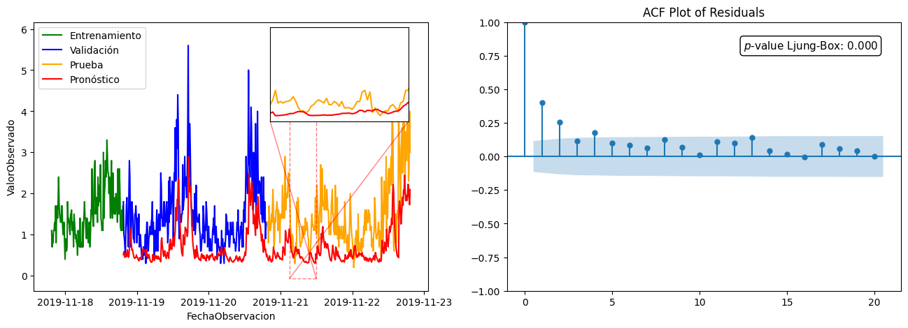
Preparación de datos modelos de Deep Learning#
# Se transforma el valor observado de los datos de entrenamiento a valores entre -1 y 1
scaler = MinMaxScaler(feature_range=(0, 1))
train_data['ScaledValorObservado'] = scaler.fit_transform(np.array(train_data['ValorObservado']).reshape(-1, 1))
C:\Users\luis_\AppData\Local\Temp\ipykernel_20232\1219738599.py:3: SettingWithCopyWarning:
A value is trying to be set on a copy of a slice from a DataFrame.
Try using .loc[row_indexer,col_indexer] = value instead
See the caveats in the documentation: https://pandas.pydata.org/pandas-docs/stable/user_guide/indexing.html#returning-a-view-versus-a-copy
train_data['ScaledValorObservado'] = scaler.fit_transform(np.array(train_data['ValorObservado']).reshape(-1, 1))
# Se transforma el valor observado de los datos de validación a valores entre -1 y 1
scaler = MinMaxScaler(feature_range=(0, 1))
validation_data['ScaledValorObservado'] = scaler.fit_transform(np.array(validation_data['ValorObservado']).reshape(-1, 1))
C:\Users\luis_\AppData\Local\Temp\ipykernel_20232\728246351.py:3: SettingWithCopyWarning:
A value is trying to be set on a copy of a slice from a DataFrame.
Try using .loc[row_indexer,col_indexer] = value instead
See the caveats in the documentation: https://pandas.pydata.org/pandas-docs/stable/user_guide/indexing.html#returning-a-view-versus-a-copy
validation_data['ScaledValorObservado'] = scaler.fit_transform(np.array(validation_data['ValorObservado']).reshape(-1, 1))
# Se transforma el valor observado de los datos de prueba a valores entre -1 y 1
scaler = MinMaxScaler(feature_range=(0, 1))
test_data['ScaledValorObservado'] = scaler.fit_transform(np.array(test_data['ValorObservado']).reshape(-1, 1))
C:\Users\luis_\AppData\Local\Temp\ipykernel_20232\260926801.py:3: SettingWithCopyWarning:
A value is trying to be set on a copy of a slice from a DataFrame.
Try using .loc[row_indexer,col_indexer] = value instead
See the caveats in the documentation: https://pandas.pydata.org/pandas-docs/stable/user_guide/indexing.html#returning-a-view-versus-a-copy
test_data['ScaledValorObservado'] = scaler.fit_transform(np.array(test_data['ValorObservado']).reshape(-1, 1))
# Se reestablecen los índices del conjunto de validación, entrenamiento y prueba
train_data.reset_index(drop=True, inplace=True)
validation_data.reset_index(drop=True, inplace=True)
test_data.reset_index(drop=True, inplace=True)
# Función para crear las secuencias de tiempo
def makeXy(ts, nb_timesteps):
"""
Input:
ts: original time series
nb_timesteps: number of time steps in the regressors
Output:
X: 2-D array of regressors
y: 1-D array of target
"""
X = []
y = []
for i in range(nb_timesteps, ts.shape[0]):
if i-nb_timesteps <= 4:
print(i-nb_timesteps, i-1, i)
X.append(list(ts.loc[i-nb_timesteps:i-1])) #Regressors
y.append(ts.loc[i]) #Target
X, y = np.array(X), np.array(y)
return X, y
8. Perceptrón multicapa (MLP)#
Selección del modelo#
# Se crean las secuencias de tiempo para el conjunto de entrenamiento
X_train, y_train = makeXy(train_data['ScaledValorObservado'], 14)
print('Shape of train arrays:', X_train.shape, y_train.shape)
0 13 14
1 14 15
2 15 16
3 16 17
4 17 18
Shape of train arrays: (383845, 14) (383845,)
# Se crean las secuencias de tiempo para el conjunto de validación
X_val, y_val = makeXy(validation_data['ScaledValorObservado'], 14)
print('Shape of validation arrays:', X_val.shape, y_val.shape)
0 13 14
1 14 15
2 15 16
3 16 17
4 17 18
Shape of validation arrays: (274, 14) (274,)
# Definimos la red MLP
input_layer = Input(shape=(14,), dtype='float32')
dense1 = Dense(32, activation='tanh')(input_layer)
dense2 = Dense(16, activation='tanh')(dense1)
dense3 = Dense(16, activation='tanh')(dense2)
dropout_layer = Dropout(0.2)(dense3)
output_layer = Dense(1, activation='linear')(dropout_layer)
# Resumen del modelo MLP
ts_model = Model(inputs=input_layer, outputs=output_layer)
ts_model.compile(loss='mean_squared_error', optimizer='adam')
ts_model.summary()
Model: "model"
_________________________________________________________________
Layer (type) Output Shape Param #
=================================================================
input_1 (InputLayer) [(None, 14)] 0
dense (Dense) (None, 32) 480
dense_1 (Dense) (None, 16) 528
dense_2 (Dense) (None, 16) 272
dropout (Dropout) (None, 16) 0
dense_3 (Dense) (None, 1) 17
=================================================================
Total params: 1,297
Trainable params: 1,297
Non-trainable params: 0
_________________________________________________________________
# Función para guardar el modelo para la época en la que la función de pérdida ha sido mínima.
save_weights_at = os.path.join('keras_models', 'wind_speed_MLP_weights14.{epoch:02d}-{val_loss:.4f}.keras')
save_best = ModelCheckpoint(save_weights_at, monitor='val_loss', verbose=0,
save_best_only=True, save_weights_only=False, mode='min', save_freq='epoch');
# Se entrena el modelo, se guarda el mejor
history_wspeed14 = None
if os.path.exists('history_wspeed14.joblib'):
history_wspeed = load('history_wspeed14.joblib')
print("El archivo 'history_wspeed14.joblib' ya existe. Se ha cargado el historial del entrenamiento.")
else:
history_wspeed14 = ts_model.fit(x=X_train, y=y_train, batch_size=16, epochs=20,
verbose=2, callbacks=[save_best], validation_data=(X_val, y_val),
shuffle=True);
dump(history_wspeed14.history, 'history_wspeed14.joblib')
print("El entrenamiento se ha completado y el historial ha sido guardado en 'history_wspeed14.joblib'.")
Epoch 1/20
23901/23901 - 14s - loss: 2.8519e-04 - val_loss: 0.0180 - 14s/epoch - 583us/step
Epoch 2/20
23901/23901 - 13s - loss: 2.1866e-04 - val_loss: 0.0161 - 13s/epoch - 560us/step
Epoch 3/20
23901/23901 - 14s - loss: 2.0599e-04 - val_loss: 0.0141 - 14s/epoch - 600us/step
Epoch 4/20
23901/23901 - 13s - loss: 2.0684e-04 - val_loss: 0.0135 - 13s/epoch - 541us/step
Epoch 5/20
23901/23901 - 13s - loss: 1.9658e-04 - val_loss: 0.0150 - 13s/epoch - 531us/step
Epoch 6/20
23901/23901 - 13s - loss: 1.9388e-04 - val_loss: 0.0161 - 13s/epoch - 529us/step
Epoch 7/20
23901/23901 - 13s - loss: 1.9605e-04 - val_loss: 0.0149 - 13s/epoch - 532us/step
Epoch 8/20
23901/23901 - 13s - loss: 1.9263e-04 - val_loss: 0.0152 - 13s/epoch - 529us/step
Epoch 9/20
23901/23901 - 13s - loss: 1.9720e-04 - val_loss: 0.0232 - 13s/epoch - 531us/step
Epoch 10/20
23901/23901 - 13s - loss: 1.9062e-04 - val_loss: 0.0152 - 13s/epoch - 531us/step
Epoch 11/20
23901/23901 - 13s - loss: 1.9135e-04 - val_loss: 0.0149 - 13s/epoch - 531us/step
Epoch 12/20
23901/23901 - 14s - loss: 1.9074e-04 - val_loss: 0.0137 - 14s/epoch - 574us/step
Epoch 13/20
23901/23901 - 14s - loss: 1.8849e-04 - val_loss: 0.0132 - 14s/epoch - 605us/step
Epoch 14/20
23901/23901 - 13s - loss: 1.8948e-04 - val_loss: 0.0149 - 13s/epoch - 542us/step
Epoch 15/20
23901/23901 - 13s - loss: 1.8483e-04 - val_loss: 0.0138 - 13s/epoch - 533us/step
Epoch 16/20
23901/23901 - 13s - loss: 1.9565e-04 - val_loss: 0.0145 - 13s/epoch - 533us/step
Epoch 17/20
23901/23901 - 13s - loss: 1.9130e-04 - val_loss: 0.0151 - 13s/epoch - 533us/step
Epoch 18/20
23901/23901 - 13s - loss: 1.8902e-04 - val_loss: 0.0135 - 13s/epoch - 532us/step
Epoch 19/20
23901/23901 - 13s - loss: 1.8902e-04 - val_loss: 0.0138 - 13s/epoch - 534us/step
Epoch 20/20
23901/23901 - 13s - loss: 1.8715e-04 - val_loss: 0.0177 - 13s/epoch - 536us/step
El entrenamiento se ha completado y el historial ha sido guardado en 'history_wspeed14_2.joblib'.
# Se carga el mejor modelo
model_dir = 'keras_models'
files = os.listdir(model_dir)
pattern = r"wind_speed_MLP_weights14\.(\d+)-([\d\.]+)\.keras"
best_val_loss = float('inf')
best_model_file = None
best_model = None
for file in files:
match = re.match(pattern, file)
if match:
epoch = int(match.group(1))
val_loss = float(match.group(2))
if val_loss < best_val_loss:
best_val_loss = val_loss
best_model_file = file
if best_model_file:
best_model_path = os.path.join(model_dir, best_model_file)
print(f"Cargando el mejor modelo: {best_model_file} con val_loss: {best_val_loss}")
best_model = load_model(best_model_path)
else:
print("No se encontraron archivos de modelos que coincidan con el patrón.")
Cargando el mejor modelo: wind_speed_MLP_weights14.01-0.0276.keras con val_loss: 0.0276
Gráfica de diagnóstico#
# Se calculan las predicciones del mejor modelo en el conjunto entrenamiento para calcular los residuales
preds_mlp_train = best_model.predict(X_train[-1008:])
32/32 [==============================] - 0s 615us/step
# Residuales de modelo seleccionado
residuals_mlp = X_train[-1008:] - preds_mlp_train
residuals_mlp = residuals_mlp[-1008:,12]
# Se crea gráfica de diagnóstico
fig, axes = plt.subplots(2, 2, figsize=(12, 8))
# Plot 1: Standardized Residuals
axes[0, 0].plot(range(len(residuals_mlp)),residuals_mlp, color="blue")
axes[0, 0].set_title("Standardized Residuals")
# Plot 2: Histogram & KDE
sns.histplot(residuals_mlp, stat="density", bins=30, kde=False, ax=axes[0, 1], color="blue", label = "Histogram")
xmin, xmax = axes[0, 1].get_xlim()
x = np.linspace(xmin, xmax, 100)
p = norm.pdf(x, 0, 1) # Normal distribution N(0,1)
axes[0, 1].set_title("Histogram")
axes[0, 1].legend()
# Plot 3: Q-Q Plot
sm.qqplot(residuals_mlp, line="s", ax=axes[1, 0])
axes[1, 0].set_title("Q-Q Plot of Residuals")
# Plot 4: ACF
sm.graphics.tsa.plot_acf(residuals_mlp, lags=20, ax=axes[1, 1])
axes[1, 1].set_title("ACF Plot of Residuals")
plt.tight_layout()
plt.show()
c:\Users\luis_\miniconda3\envs\ml_venv\lib\site-packages\seaborn\_oldcore.py:1119: FutureWarning: use_inf_as_na option is deprecated and will be removed in a future version. Convert inf values to NaN before operating instead.
with pd.option_context('mode.use_inf_as_na', True):
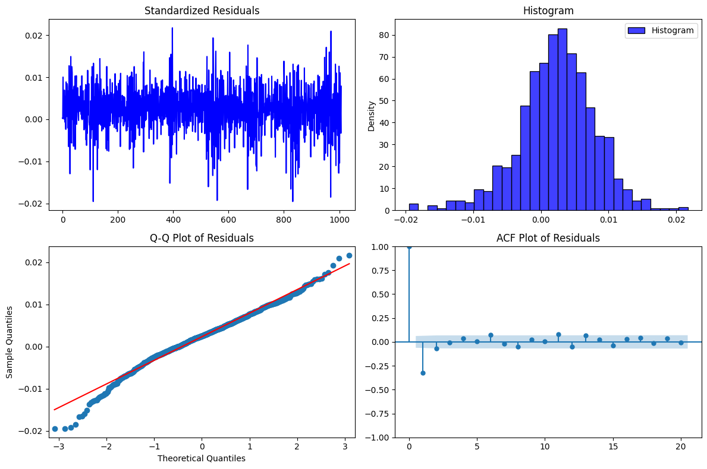
Forecast#
# Se calculan los valores predichos del conjunto de validación
preds = best_model.predict(X_val)
pred_mlp = scaler.inverse_transform(preds)
pred_mlp = np.squeeze(pred_mlp)
9/9 [==============================] - 0s 501us/step
# Se calcula el error de predicción del conjunto de validación
forecast_accuracy(np.array(pred_mlp), np.array(validation_data['ValorObservado'].loc[14:]), "Value")
| MAE | MAPE | MSE | RMSE | |
|---|---|---|---|---|
| Value | 0.433698 | 0.291555 | 0.386655 | 0.621816 |
# Se crean las secuencias de tiempo para el conjunto de test
X_test, y_test = makeXy(test_data['ScaledValorObservado'], 14)
0 13 14
1 14 15
2 15 16
3 16 17
4 17 18
# Se calculan los valores predichos del conjunto de test
preds_test = best_model.predict(X_test)
pred_mlp_test = scaler.inverse_transform(preds_test)
pred_mlp_test = np.squeeze(pred_mlp_test)
9/9 [==============================] - 0s 646us/step
# Se calcula el error de predicción del conjunto de test
forecast_accuracy(np.array(pred_mlp_test), np.array(test_data['ValorObservado'].loc[14:]), "Value")
| MAE | MAPE | MSE | RMSE | |
|---|---|---|---|---|
| Value | 0.404556 | 0.322825 | 0.301078 | 0.548705 |
Forecast Plot#
# Se calculan los residuales del conjunto de test
residuals_mlp_test = test_data['ValorObservado'].loc[14:] - pred_mlp_test
# Se hace la prueba de Ljung-Box
lb_test = acorr_ljungbox(residuals_mlp_test, lags=[144], return_df=True)
print(lb_test)
lb_stat lb_pvalue
144 156.996825 0.216826
# Prueba de BDS (Brock-Dechert-Scheinkman)
bds_stat, bds_p_value = bds(residuals_mlp_test, max_dim=2, epsilon=None, distance=1.5)
print(f"BDS Statistic: {bds_stat}")
print(f"BDS p-value: {bds_p_value}")
BDS Statistic: 1.2511080594206805
BDS p-value: 0.21089505552728716
# Gráfica de valores observados vs predicciones
fig, axes = plt.subplots(1, 2, figsize=(16, 5))
ax = sns.lineplot(x=train_data['FechaObservacion'][-288:], y=train_data['ValorObservado'][-288:], label="Entrenamiento", color='g', ax=axes[0])
sns.lineplot(x=validation_data['FechaObservacion'], y=validation_data['ValorObservado'], label="Validación", color='b', ax=axes[0])
sns.lineplot(x=test_data['FechaObservacion'], y=test_data['ValorObservado'], label="Prueba", color='orange', ax=axes[0])
sns.lineplot(x=validation_data['FechaObservacion'].loc[14:], y=pred_mlp, label="Pronóstico", color='r', ax=axes[0])
sns.lineplot(x=test_data['FechaObservacion'].loc[14:], y=pred_mlp_test, color='r', ax=axes[0])
# Se añade gráfica ampliada
# Se define la posición y tamaño ( [x, y, width, height] cada valor esta entre 0 y 1)
axins = ax.inset_axes([0.2, 0.63, 0.35, 0.35])
# Gráfiga de zona ampliada
sns.lineplot(x=train_data['FechaObservacion'][-288:], y=train_data['ValorObservado'][-288:], color='g', ax=axins)
sns.lineplot(x=validation_data['FechaObservacion'], y=validation_data['ValorObservado'], color='b', ax=axins)
sns.lineplot(x=test_data['FechaObservacion'], y=test_data['ValorObservado'], color='orange', ax=axins)
sns.lineplot(x=validation_data['FechaObservacion'].loc[14:], y=pred_mlp, color='r', ax=axins)
sns.lineplot(x=test_data['FechaObservacion'].loc[14:], y=pred_mlp_test, color='r', ax=axins)
# Se ponen los limites para la zona ampliada
axins.set_xlim(pd.Timestamp('2019-11-21 12:00:00'), pd.Timestamp('2019-11-21 3:00:00'))
ax.indicate_inset_zoom(axins, edgecolor = 'red', lw=1, ls = 'dashed')
axins.set_xticks([])
axins.set_yticks([])
axins.set_xlabel('')
axins.set_ylabel('')
# ACF Plot
sm.graphics.tsa.plot_acf(residuals_mlp_test, lags=20, ax=axes[1] )
p_value = lb_test['lb_pvalue'].values.item()
axes[1].text(0.6, 0.9, f'$p$-value Ljung-Box: {p_value:.3f}', transform=axes[1].transAxes, fontsize=11,
bbox=dict(facecolor='white', edgecolor='black', boxstyle='round,pad=0.3'))
axes[1].set_title("ACF Plot of Residuals")
plt.show()
c:\Users\luis_\miniconda3\envs\ml_venv\lib\site-packages\seaborn\_oldcore.py:1119: FutureWarning: use_inf_as_na option is deprecated and will be removed in a future version. Convert inf values to NaN before operating instead.
with pd.option_context('mode.use_inf_as_na', True):
c:\Users\luis_\miniconda3\envs\ml_venv\lib\site-packages\seaborn\_oldcore.py:1119: FutureWarning: use_inf_as_na option is deprecated and will be removed in a future version. Convert inf values to NaN before operating instead.
with pd.option_context('mode.use_inf_as_na', True):
c:\Users\luis_\miniconda3\envs\ml_venv\lib\site-packages\seaborn\_oldcore.py:1119: FutureWarning: use_inf_as_na option is deprecated and will be removed in a future version. Convert inf values to NaN before operating instead.
with pd.option_context('mode.use_inf_as_na', True):
c:\Users\luis_\miniconda3\envs\ml_venv\lib\site-packages\seaborn\_oldcore.py:1119: FutureWarning: use_inf_as_na option is deprecated and will be removed in a future version. Convert inf values to NaN before operating instead.
with pd.option_context('mode.use_inf_as_na', True):
c:\Users\luis_\miniconda3\envs\ml_venv\lib\site-packages\seaborn\_oldcore.py:1119: FutureWarning: use_inf_as_na option is deprecated and will be removed in a future version. Convert inf values to NaN before operating instead.
with pd.option_context('mode.use_inf_as_na', True):
c:\Users\luis_\miniconda3\envs\ml_venv\lib\site-packages\seaborn\_oldcore.py:1119: FutureWarning: use_inf_as_na option is deprecated and will be removed in a future version. Convert inf values to NaN before operating instead.
with pd.option_context('mode.use_inf_as_na', True):
c:\Users\luis_\miniconda3\envs\ml_venv\lib\site-packages\seaborn\_oldcore.py:1119: FutureWarning: use_inf_as_na option is deprecated and will be removed in a future version. Convert inf values to NaN before operating instead.
with pd.option_context('mode.use_inf_as_na', True):
c:\Users\luis_\miniconda3\envs\ml_venv\lib\site-packages\seaborn\_oldcore.py:1119: FutureWarning: use_inf_as_na option is deprecated and will be removed in a future version. Convert inf values to NaN before operating instead.
with pd.option_context('mode.use_inf_as_na', True):
c:\Users\luis_\miniconda3\envs\ml_venv\lib\site-packages\seaborn\_oldcore.py:1119: FutureWarning: use_inf_as_na option is deprecated and will be removed in a future version. Convert inf values to NaN before operating instead.
with pd.option_context('mode.use_inf_as_na', True):
c:\Users\luis_\miniconda3\envs\ml_venv\lib\site-packages\seaborn\_oldcore.py:1119: FutureWarning: use_inf_as_na option is deprecated and will be removed in a future version. Convert inf values to NaN before operating instead.
with pd.option_context('mode.use_inf_as_na', True):
c:\Users\luis_\miniconda3\envs\ml_venv\lib\site-packages\seaborn\_oldcore.py:1119: FutureWarning: use_inf_as_na option is deprecated and will be removed in a future version. Convert inf values to NaN before operating instead.
with pd.option_context('mode.use_inf_as_na', True):
c:\Users\luis_\miniconda3\envs\ml_venv\lib\site-packages\seaborn\_oldcore.py:1119: FutureWarning: use_inf_as_na option is deprecated and will be removed in a future version. Convert inf values to NaN before operating instead.
with pd.option_context('mode.use_inf_as_na', True):
c:\Users\luis_\miniconda3\envs\ml_venv\lib\site-packages\seaborn\_oldcore.py:1119: FutureWarning: use_inf_as_na option is deprecated and will be removed in a future version. Convert inf values to NaN before operating instead.
with pd.option_context('mode.use_inf_as_na', True):
c:\Users\luis_\miniconda3\envs\ml_venv\lib\site-packages\seaborn\_oldcore.py:1119: FutureWarning: use_inf_as_na option is deprecated and will be removed in a future version. Convert inf values to NaN before operating instead.
with pd.option_context('mode.use_inf_as_na', True):
c:\Users\luis_\miniconda3\envs\ml_venv\lib\site-packages\seaborn\_oldcore.py:1119: FutureWarning: use_inf_as_na option is deprecated and will be removed in a future version. Convert inf values to NaN before operating instead.
with pd.option_context('mode.use_inf_as_na', True):
c:\Users\luis_\miniconda3\envs\ml_venv\lib\site-packages\seaborn\_oldcore.py:1119: FutureWarning: use_inf_as_na option is deprecated and will be removed in a future version. Convert inf values to NaN before operating instead.
with pd.option_context('mode.use_inf_as_na', True):
c:\Users\luis_\miniconda3\envs\ml_venv\lib\site-packages\seaborn\_oldcore.py:1119: FutureWarning: use_inf_as_na option is deprecated and will be removed in a future version. Convert inf values to NaN before operating instead.
with pd.option_context('mode.use_inf_as_na', True):
c:\Users\luis_\miniconda3\envs\ml_venv\lib\site-packages\seaborn\_oldcore.py:1119: FutureWarning: use_inf_as_na option is deprecated and will be removed in a future version. Convert inf values to NaN before operating instead.
with pd.option_context('mode.use_inf_as_na', True):
c:\Users\luis_\miniconda3\envs\ml_venv\lib\site-packages\seaborn\_oldcore.py:1119: FutureWarning: use_inf_as_na option is deprecated and will be removed in a future version. Convert inf values to NaN before operating instead.
with pd.option_context('mode.use_inf_as_na', True):
c:\Users\luis_\miniconda3\envs\ml_venv\lib\site-packages\seaborn\_oldcore.py:1119: FutureWarning: use_inf_as_na option is deprecated and will be removed in a future version. Convert inf values to NaN before operating instead.
with pd.option_context('mode.use_inf_as_na', True):
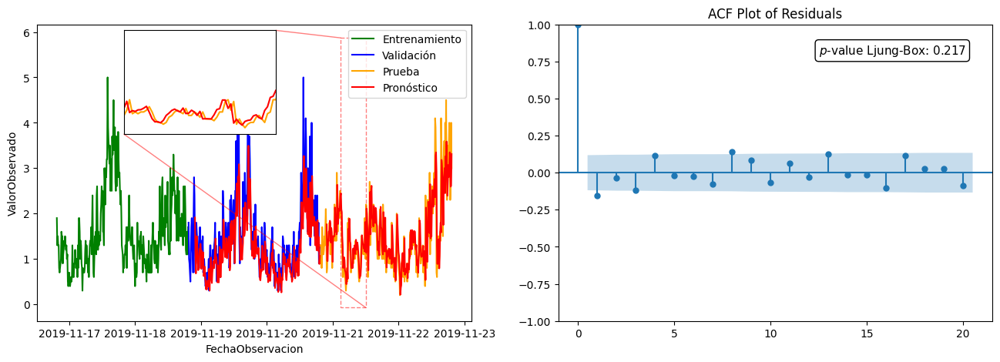
9. Redes Neuronales Recurrentes (RNN)#
Selección de Modelo#
# Se crean las secuencias de tiempo para el conjunto de entrenamiento
X_train, y_train = makeXy(train_data['ScaledValorObservado'], 7)
0 6 7
1 7 8
2 8 9
3 9 10
4 10 11
# Se crean las secuencias de tiempo para el conjunto de validación
X_val, y_val = makeXy(validation_data['ScaledValorObservado'], 7)
0 6 7
1 7 8
2 8 9
3 9 10
4 10 11
# Se convierten los datos de entrenamiento y validación en matrices 3D
X_train, X_val = X_train.reshape((X_train.shape[0], X_train.shape[1], 1)), X_val.reshape((X_val.shape[0], X_val.shape[1], 1))
print('Shape of 3D arrays:', X_train.shape, X_val.shape)
Shape of 3D arrays: (383852, 7, 1) (281, 7, 1)
# Definimos la red RRN
input_layer = Input(shape=(14,1), dtype='float32')
RRN_layer1 = SimpleRNN(32, activation='tanh')(input_layer)
dropout_layer = Dropout(0.2)(RRN_layer1)
output_layer = Dense(1, activation='linear')(dropout_layer)
# Resumen del modelo RNN
ts_model = Model(inputs=input_layer, outputs=output_layer)
ts_model.compile(loss='mean_squared_error', optimizer='adam')
ts_model.summary()
Model: "model_1"
_________________________________________________________________
Layer (type) Output Shape Param #
=================================================================
input_2 (InputLayer) [(None, 14, 1)] 0
simple_rnn (SimpleRNN) (None, 32) 1088
dropout_1 (Dropout) (None, 32) 0
dense_4 (Dense) (None, 1) 33
=================================================================
Total params: 1,121
Trainable params: 1,121
Non-trainable params: 0
_________________________________________________________________
# Función para guardar el modelo para la época en la que la función de pérdida ha sido mínima.
save_weights_at = os.path.join('keras_models', 'wind_speed_RNN_weights7.{epoch:02d}-{val_loss:.4f}.keras')
save_best = ModelCheckpoint(save_weights_at, monitor='val_loss', verbose=0,
save_best_only=True, save_weights_only=False, mode='min', save_freq='epoch');
# Se entrena el modelo, se guarda el mejor
history_wspeed7_RNN = None
if os.path.exists('history_wspeed7_RNN.joblib'):
history_wspeed = load('history_wspeed7_RNN.joblib')
print("El archivo 'history_wspeed7_RNN.joblib' ya existe. Se ha cargado el historial del entrenamiento.")
else:
history_wspeed7_RNN = ts_model.fit(x=X_train, y=y_train, batch_size=16, epochs=20,
verbose=2, callbacks=[save_best], validation_data=(X_val, y_val),
shuffle=True);
dump(history_wspeed7_RNN.history, 'history_wspeed7_RNN.joblib')
print("El entrenamiento se ha completado y el historial ha sido guardado en 'history_wspeed7_RNN.joblib'.")
Epoch 1/20
24009/24009 - 29s - loss: 2.0658e-04 - val_loss: 0.0324 - 29s/epoch - 1ms/step
Epoch 2/20
24009/24009 - 29s - loss: 1.9353e-04 - val_loss: 0.0356 - 29s/epoch - 1ms/step
Epoch 3/20
24009/24009 - 28s - loss: 1.9363e-04 - val_loss: 0.0305 - 28s/epoch - 1ms/step
Epoch 4/20
24009/24009 - 28s - loss: 1.8934e-04 - val_loss: 0.0318 - 28s/epoch - 1ms/step
Epoch 5/20
24009/24009 - 28s - loss: 1.8633e-04 - val_loss: 0.0306 - 28s/epoch - 1ms/step
Epoch 6/20
24009/24009 - 28s - loss: 1.8443e-04 - val_loss: 0.0323 - 28s/epoch - 1ms/step
Epoch 7/20
24009/24009 - 28s - loss: 1.8276e-04 - val_loss: 0.0316 - 28s/epoch - 1ms/step
Epoch 8/20
24009/24009 - 28s - loss: 1.8492e-04 - val_loss: 0.0316 - 28s/epoch - 1ms/step
Epoch 9/20
24009/24009 - 28s - loss: 1.8376e-04 - val_loss: 0.0315 - 28s/epoch - 1ms/step
Epoch 10/20
24009/24009 - 28s - loss: 1.8864e-04 - val_loss: 0.0327 - 28s/epoch - 1ms/step
Epoch 11/20
24009/24009 - 28s - loss: 1.8587e-04 - val_loss: 0.0339 - 28s/epoch - 1ms/step
Epoch 12/20
24009/24009 - 28s - loss: 1.8510e-04 - val_loss: 0.0302 - 28s/epoch - 1ms/step
Epoch 13/20
24009/24009 - 28s - loss: 1.8530e-04 - val_loss: 0.0307 - 28s/epoch - 1ms/step
Epoch 14/20
24009/24009 - 28s - loss: 1.8619e-04 - val_loss: 0.0297 - 28s/epoch - 1ms/step
Epoch 15/20
24009/24009 - 28s - loss: 1.8091e-04 - val_loss: 0.0370 - 28s/epoch - 1ms/step
Epoch 16/20
24009/24009 - 28s - loss: 1.8680e-04 - val_loss: 0.0345 - 28s/epoch - 1ms/step
Epoch 17/20
24009/24009 - 28s - loss: 1.8814e-04 - val_loss: 0.0329 - 28s/epoch - 1ms/step
Epoch 18/20
24009/24009 - 28s - loss: 1.8646e-04 - val_loss: 0.0303 - 28s/epoch - 1ms/step
Epoch 19/20
24009/24009 - 28s - loss: 1.8603e-04 - val_loss: 0.0329 - 28s/epoch - 1ms/step
Epoch 20/20
24009/24009 - 28s - loss: 1.8467e-04 - val_loss: 0.0306 - 28s/epoch - 1ms/step
El entrenamiento se ha completado y el historial ha sido guardado en 'history_wspeed14_RNN.joblib'.
# Se carga el mejor modelo
model_dir = 'keras_models'
files = os.listdir(model_dir)
pattern = r"wind_speed_RNN_weights7\.(\d+)-([\d\.]+)\.keras"
best_val_loss = float('inf')
best_model_file = None
best_model = None
for file in files:
match = re.match(pattern, file)
if match:
epoch = int(match.group(1))
val_loss = float(match.group(2))
if val_loss < best_val_loss:
best_val_loss = val_loss
best_model_file = file
if best_model_file:
best_model_path = os.path.join(model_dir, best_model_file)
print(f"Cargando el mejor modelo: {best_model_file} con val_loss: {best_val_loss}")
best_model = load_model(best_model_path)
else:
print("No se encontraron archivos de modelos que coincidan con el patrón.")
Cargando el mejor modelo: wind_speed_RNN_weights7.19-0.0284.keras con val_loss: 0.0284
Gráfica de diagnóstico#
# Se calculan las predicciones del mejor modelo en el conjunto entrenamiento para calcular los residuales
preds_rnn_train = best_model.predict(X_train[-1008:])
32/32 [==============================] - 0s 758us/step
# Residuales de modelo seleccionado
residuals_rnn = X_train[-1008:,6] - preds_rnn_train
# Se crea gráfica de diagnóstico
fig, axes = plt.subplots(2, 2, figsize=(12, 8))
# Plot 1: Standardized Residuals
axes[0, 0].plot(range(len(residuals_rnn)),residuals_rnn, color="blue")
axes[0, 0].set_title("Standardized Residuals")
# Plot 2: Histogram & KDE
sns.histplot(residuals_rnn, stat="density", bins=30, kde=False, ax=axes[0, 1], color="blue", label = "Histogram")
xmin, xmax = axes[0, 1].get_xlim()
x = np.linspace(xmin, xmax, 100)
p = norm.pdf(x, 0, 1) # Normal distribution N(0,1)
axes[0, 1].set_title("Histogram")
axes[0, 1].legend()
# Plot 3: Q-Q Plot
sm.qqplot(residuals_rnn, line="s", ax=axes[1, 0])
axes[1, 0].set_title("Q-Q Plot of Residuals")
# Plot 4: ACF
sm.graphics.tsa.plot_acf(residuals_rnn, lags=20, ax=axes[1, 1])
axes[1, 1].set_title("ACF Plot of Residuals")
plt.tight_layout()
plt.show()
c:\Users\luis_\miniconda3\envs\ml_venv\lib\site-packages\seaborn\_oldcore.py:1119: FutureWarning: use_inf_as_na option is deprecated and will be removed in a future version. Convert inf values to NaN before operating instead.
with pd.option_context('mode.use_inf_as_na', True):
c:\Users\luis_\miniconda3\envs\ml_venv\lib\site-packages\seaborn\_oldcore.py:1075: FutureWarning: When grouping with a length-1 list-like, you will need to pass a length-1 tuple to get_group in a future version of pandas. Pass `(name,)` instead of `name` to silence this warning.
data_subset = grouped_data.get_group(pd_key)
c:\Users\luis_\miniconda3\envs\ml_venv\lib\site-packages\seaborn\_oldcore.py:1075: FutureWarning: When grouping with a length-1 list-like, you will need to pass a length-1 tuple to get_group in a future version of pandas. Pass `(name,)` instead of `name` to silence this warning.
data_subset = grouped_data.get_group(pd_key)
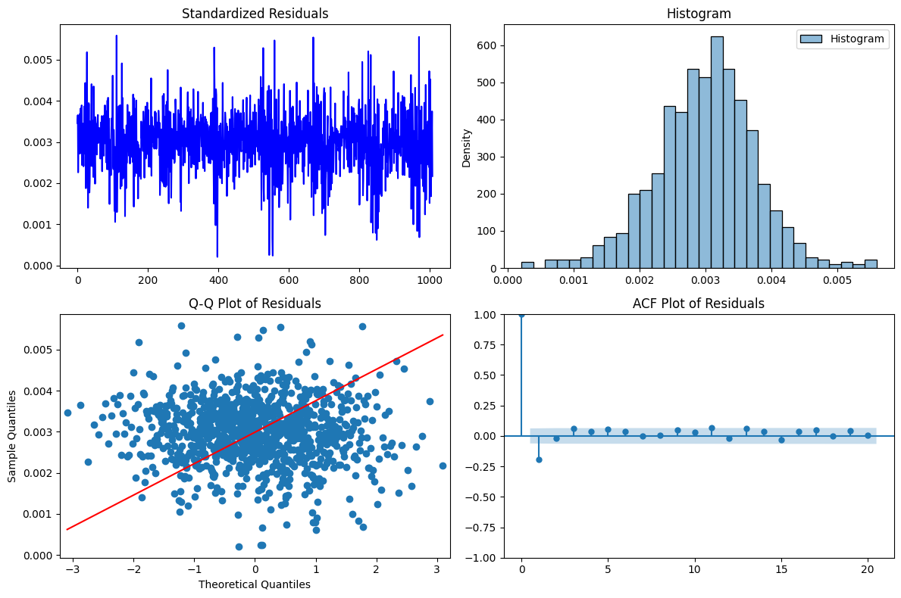
Forecast#
# Se calculan los valores predichos del conjunto de validación
preds = best_model.predict(X_val)
pred_windRNN = scaler.inverse_transform(preds)
pred_windRNN = np.squeeze(pred_windRNN)
9/9 [==============================] - 0s 878us/step
# Se calcula el error de predicción del conjunto de validación
forecast_accuracy( np.array(pred_windRNN), np.array(validation_data['ValorObservado'].loc[7:]), "Value")
| MAE | MAPE | MSE | RMSE | |
|---|---|---|---|---|
| Value | 0.477523 | 0.311156 | 0.453304 | 0.673278 |
# Se crean las secuencias de tiempo para el conjunto de test
X_test, y_test = makeXy(test_data['ScaledValorObservado'], 7)
0 6 7
1 7 8
2 8 9
3 9 10
4 10 11
# Se convierten los datos de test en matrices 3D
X_test = X_test.reshape((X_test.shape[0], X_test.shape[1], 1))
print('Shape of 3D arrays:', X_test.shape)
Shape of 3D arrays: (281, 7, 1)
# Se calculan los valores predichos del conjunto de test
preds = best_model.predict(X_test)
pred_windRNN_test = scaler.inverse_transform(preds)
pred_windRNN_test = np.squeeze(pred_windRNN_test)
9/9 [==============================] - 0s 814us/step
# Se calcula el error de predicción del conjunto de test
forecast_accuracy( np.array(pred_windRNN_test), np.array(test_data['ValorObservado'].loc[7:]), "Value")
| MAE | MAPE | MSE | RMSE | |
|---|---|---|---|---|
| Value | 0.390124 | 0.290227 | 0.306946 | 0.554027 |
Forecast Plot#
# Se calculan los residuales del conjunto de test
residuals_rnn_test = test_data['ValorObservado'].loc[7:] - pred_windRNN_test
# Se hace la prueba de Ljung-Box
lb_test = acorr_ljungbox(residuals_rnn_test, lags=[144], return_df=True)
print(lb_test)
lb_stat lb_pvalue
144 165.842987 0.102744
# Prueba de BDS (Brock-Dechert-Scheinkman)
bds_stat, bds_p_value = bds(residuals_rnn_test, max_dim=2, epsilon=None, distance=1.5)
print(f"BDS Statistic: {bds_stat}")
print(f"BDS p-value: {bds_p_value}")
BDS Statistic: 3.5984251059162284
BDS p-value: 0.0003201500150167466
# Gráfica de valores observados vs predicciones
fig, axes = plt.subplots(1, 2, figsize=(16, 5))
ax = sns.lineplot(x=train_data['FechaObservacion'][-288:], y=train_data['ValorObservado'][-288:], label="Entrenamiento", color='g', ax=axes[0])
sns.lineplot(x=validation_data['FechaObservacion'], y=validation_data['ValorObservado'], label="Validación", color='b', ax=axes[0])
sns.lineplot(x=test_data['FechaObservacion'], y=test_data['ValorObservado'], label="Prueba", color='orange', ax=axes[0])
sns.lineplot(x=validation_data['FechaObservacion'].loc[7:], y=pred_windRNN, label="Pronóstico", color='r', ax=axes[0])
sns.lineplot(x=test_data['FechaObservacion'].loc[7:], y=pred_windRNN_test, color='r', ax=axes[0])
# Se añade gráfica ampliada
# Se define la posición y tamaño ( [x, y, width, height] cada valor esta entre 0 y 1)
axins = ax.inset_axes([0.2, 0.63, 0.35, 0.35])
# Gráfiga de zona ampliada
sns.lineplot(x=train_data['FechaObservacion'][-288:], y=train_data['ValorObservado'][-288:], color='g', ax=axins)
sns.lineplot(x=validation_data['FechaObservacion'], y=validation_data['ValorObservado'], color='b', ax=axins)
sns.lineplot(x=test_data['FechaObservacion'], y=test_data['ValorObservado'], color='orange', ax=axins)
sns.lineplot(x=validation_data['FechaObservacion'].loc[7:], y=pred_windRNN, color='r', ax=axins)
sns.lineplot(x=test_data['FechaObservacion'].loc[7:], y=pred_windRNN_test, color='r', ax=axins)
# Se ponen los limites para la zona ampliada
axins.set_xlim(pd.Timestamp('2019-11-21 12:00:00'), pd.Timestamp('2019-11-21 3:00:00'))
ax.indicate_inset_zoom(axins, edgecolor = 'red', lw=1, ls = 'dashed')
axins.set_xticks([])
axins.set_yticks([])
axins.set_xlabel('')
axins.set_ylabel('')
# ACF Plot
sm.graphics.tsa.plot_acf(residuals_rnn_test, lags=20, ax=axes[1] )
p_value = 0.103
axes[1].text(0.6, 0.9, f'$p$-value Ljung-Box: {p_value:.3f}', transform=axes[1].transAxes, fontsize=11,
bbox=dict(facecolor='white', edgecolor='black', boxstyle='round,pad=0.3'))
axes[1].set_title("ACF Plot of Residuals")
plt.show()
c:\Users\luis_\miniconda3\envs\ml_venv\lib\site-packages\seaborn\_oldcore.py:1119: FutureWarning: use_inf_as_na option is deprecated and will be removed in a future version. Convert inf values to NaN before operating instead.
with pd.option_context('mode.use_inf_as_na', True):
c:\Users\luis_\miniconda3\envs\ml_venv\lib\site-packages\seaborn\_oldcore.py:1119: FutureWarning: use_inf_as_na option is deprecated and will be removed in a future version. Convert inf values to NaN before operating instead.
with pd.option_context('mode.use_inf_as_na', True):
c:\Users\luis_\miniconda3\envs\ml_venv\lib\site-packages\seaborn\_oldcore.py:1119: FutureWarning: use_inf_as_na option is deprecated and will be removed in a future version. Convert inf values to NaN before operating instead.
with pd.option_context('mode.use_inf_as_na', True):
c:\Users\luis_\miniconda3\envs\ml_venv\lib\site-packages\seaborn\_oldcore.py:1119: FutureWarning: use_inf_as_na option is deprecated and will be removed in a future version. Convert inf values to NaN before operating instead.
with pd.option_context('mode.use_inf_as_na', True):
c:\Users\luis_\miniconda3\envs\ml_venv\lib\site-packages\seaborn\_oldcore.py:1119: FutureWarning: use_inf_as_na option is deprecated and will be removed in a future version. Convert inf values to NaN before operating instead.
with pd.option_context('mode.use_inf_as_na', True):
c:\Users\luis_\miniconda3\envs\ml_venv\lib\site-packages\seaborn\_oldcore.py:1119: FutureWarning: use_inf_as_na option is deprecated and will be removed in a future version. Convert inf values to NaN before operating instead.
with pd.option_context('mode.use_inf_as_na', True):
c:\Users\luis_\miniconda3\envs\ml_venv\lib\site-packages\seaborn\_oldcore.py:1119: FutureWarning: use_inf_as_na option is deprecated and will be removed in a future version. Convert inf values to NaN before operating instead.
with pd.option_context('mode.use_inf_as_na', True):
c:\Users\luis_\miniconda3\envs\ml_venv\lib\site-packages\seaborn\_oldcore.py:1119: FutureWarning: use_inf_as_na option is deprecated and will be removed in a future version. Convert inf values to NaN before operating instead.
with pd.option_context('mode.use_inf_as_na', True):
c:\Users\luis_\miniconda3\envs\ml_venv\lib\site-packages\seaborn\_oldcore.py:1119: FutureWarning: use_inf_as_na option is deprecated and will be removed in a future version. Convert inf values to NaN before operating instead.
with pd.option_context('mode.use_inf_as_na', True):
c:\Users\luis_\miniconda3\envs\ml_venv\lib\site-packages\seaborn\_oldcore.py:1119: FutureWarning: use_inf_as_na option is deprecated and will be removed in a future version. Convert inf values to NaN before operating instead.
with pd.option_context('mode.use_inf_as_na', True):
c:\Users\luis_\miniconda3\envs\ml_venv\lib\site-packages\seaborn\_oldcore.py:1119: FutureWarning: use_inf_as_na option is deprecated and will be removed in a future version. Convert inf values to NaN before operating instead.
with pd.option_context('mode.use_inf_as_na', True):
c:\Users\luis_\miniconda3\envs\ml_venv\lib\site-packages\seaborn\_oldcore.py:1119: FutureWarning: use_inf_as_na option is deprecated and will be removed in a future version. Convert inf values to NaN before operating instead.
with pd.option_context('mode.use_inf_as_na', True):
c:\Users\luis_\miniconda3\envs\ml_venv\lib\site-packages\seaborn\_oldcore.py:1119: FutureWarning: use_inf_as_na option is deprecated and will be removed in a future version. Convert inf values to NaN before operating instead.
with pd.option_context('mode.use_inf_as_na', True):
c:\Users\luis_\miniconda3\envs\ml_venv\lib\site-packages\seaborn\_oldcore.py:1119: FutureWarning: use_inf_as_na option is deprecated and will be removed in a future version. Convert inf values to NaN before operating instead.
with pd.option_context('mode.use_inf_as_na', True):
c:\Users\luis_\miniconda3\envs\ml_venv\lib\site-packages\seaborn\_oldcore.py:1119: FutureWarning: use_inf_as_na option is deprecated and will be removed in a future version. Convert inf values to NaN before operating instead.
with pd.option_context('mode.use_inf_as_na', True):
c:\Users\luis_\miniconda3\envs\ml_venv\lib\site-packages\seaborn\_oldcore.py:1119: FutureWarning: use_inf_as_na option is deprecated and will be removed in a future version. Convert inf values to NaN before operating instead.
with pd.option_context('mode.use_inf_as_na', True):
c:\Users\luis_\miniconda3\envs\ml_venv\lib\site-packages\seaborn\_oldcore.py:1119: FutureWarning: use_inf_as_na option is deprecated and will be removed in a future version. Convert inf values to NaN before operating instead.
with pd.option_context('mode.use_inf_as_na', True):
c:\Users\luis_\miniconda3\envs\ml_venv\lib\site-packages\seaborn\_oldcore.py:1119: FutureWarning: use_inf_as_na option is deprecated and will be removed in a future version. Convert inf values to NaN before operating instead.
with pd.option_context('mode.use_inf_as_na', True):
c:\Users\luis_\miniconda3\envs\ml_venv\lib\site-packages\seaborn\_oldcore.py:1119: FutureWarning: use_inf_as_na option is deprecated and will be removed in a future version. Convert inf values to NaN before operating instead.
with pd.option_context('mode.use_inf_as_na', True):
c:\Users\luis_\miniconda3\envs\ml_venv\lib\site-packages\seaborn\_oldcore.py:1119: FutureWarning: use_inf_as_na option is deprecated and will be removed in a future version. Convert inf values to NaN before operating instead.
with pd.option_context('mode.use_inf_as_na', True):
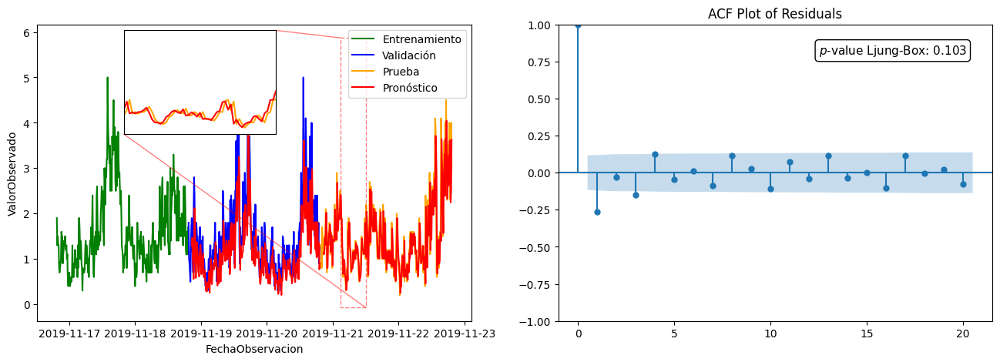
10. Red de memoria a largo plazo (LSTM)#
Selección de Modelo#
# Se crean las secuencias de tiempo para el conjunto de entrenamiento
X_train, y_train = makeXy(train_data['ScaledValorObservado'], 14)
0 13 14
1 14 15
2 15 16
3 16 17
4 17 18
# Se crean las secuencias de tiempo para el conjunto de validación
X_val, y_val = makeXy(validation_data['ScaledValorObservado'], 14)
0 13 14
1 14 15
2 15 16
3 16 17
4 17 18
# Se convierten los datos de entrenamiento y validación en matrices 3D
X_train, X_val = X_train.reshape((X_train.shape[0], X_train.shape[1], 1)), X_val.reshape((X_val.shape[0], X_val.shape[1], 1))
print('Shape of 3D arrays:', X_train.shape, X_val.shape)
Shape of 3D arrays: (383845, 14, 1) (274, 14, 1)
# Definimos la red LSTM
input_layer = Input(shape=(14,1), dtype='float32')
lstm_layer1 = LSTM(64, input_shape=(14,1), return_sequences=True)(input_layer)
lstm_layer2 = LSTM(32, input_shape=(14,64), return_sequences=False)(lstm_layer1)
dropout_layer = Dropout(0.2)(lstm_layer2)
output_layer = Dense(1, activation='linear')(dropout_layer)
# Resumen del modelo LSTM
ts_model = Model(inputs=input_layer, outputs=output_layer)
ts_model.compile(loss='mean_absolute_error', optimizer='adam') #SGD(lr=0.001, decay=1e-5))
ts_model.summary()
Model: "model_2"
_________________________________________________________________
Layer (type) Output Shape Param #
=================================================================
input_3 (InputLayer) [(None, 14, 1)] 0
lstm (LSTM) (None, 14, 64) 16896
lstm_1 (LSTM) (None, 32) 12416
dropout_2 (Dropout) (None, 32) 0
dense_5 (Dense) (None, 1) 33
=================================================================
Total params: 29,345
Trainable params: 29,345
Non-trainable params: 0
_________________________________________________________________
# Función para guardar el modelo para la época en la que la función de pérdida ha sido mínima.
save_weights_at = os.path.join('keras_models', 'wind_speed_LSTM_weights14.{epoch:02d}-{val_loss:.4f}.keras')
save_best = ModelCheckpoint(save_weights_at, monitor='val_loss', verbose=0,
save_best_only=True, save_weights_only=False, mode='min', save_freq='epoch')
# Se entrena el modelo, se guarda el mejor
history_wspeed14_LSTM = None
if os.path.exists('history_wspeed14_LSTM.joblib'):
history_wspeed14_LSTM = load('history_wspeed14_LSTM.joblib')
print("El archivo 'history_wspeed14_LSTM.joblib' ya existe. Se ha cargado el historial del entrenamiento.")
else:
history_wspeed14_LSTM = ts_model.fit(x=X_train, y=y_train, batch_size=16, epochs=20,
verbose=2, callbacks=[save_best], validation_data=(X_val, y_val),
shuffle=True);
dump(history_wspeed14_LSTM.history, 'history_wspeed14_LSTM.joblib')
print("El entrenamiento se ha completado y el historial ha sido guardado en 'history_wspeed14_LSTM.joblib'.")
Epoch 1/20
24009/24009 - 115s - loss: 0.0059 - val_loss: 0.1269 - 115s/epoch - 5ms/step
Epoch 2/20
24009/24009 - 118s - loss: 0.0057 - val_loss: 0.1262 - 118s/epoch - 5ms/step
Epoch 3/20
24009/24009 - 125s - loss: 0.0056 - val_loss: 0.1431 - 125s/epoch - 5ms/step
Epoch 4/20
24009/24009 - 118s - loss: 0.0056 - val_loss: 0.1333 - 118s/epoch - 5ms/step
Epoch 5/20
24009/24009 - 129s - loss: 0.0056 - val_loss: 0.1386 - 129s/epoch - 5ms/step
Epoch 6/20
24009/24009 - 120s - loss: 0.0056 - val_loss: 0.1423 - 120s/epoch - 5ms/step
Epoch 7/20
24009/24009 - 126s - loss: 0.0056 - val_loss: 0.1313 - 126s/epoch - 5ms/step
Epoch 8/20
24009/24009 - 120s - loss: 0.0056 - val_loss: 0.1390 - 120s/epoch - 5ms/step
Epoch 9/20
24009/24009 - 113s - loss: 0.0056 - val_loss: 0.1348 - 113s/epoch - 5ms/step
Epoch 10/20
24009/24009 - 107s - loss: 0.0056 - val_loss: 0.1258 - 107s/epoch - 4ms/step
Epoch 11/20
24009/24009 - 107s - loss: 0.0055 - val_loss: 0.1311 - 107s/epoch - 4ms/step
Epoch 12/20
24009/24009 - 107s - loss: 0.0055 - val_loss: 0.1304 - 107s/epoch - 4ms/step
Epoch 13/20
24009/24009 - 107s - loss: 0.0055 - val_loss: 0.1346 - 107s/epoch - 4ms/step
Epoch 14/20
24009/24009 - 107s - loss: 0.0055 - val_loss: 0.1303 - 107s/epoch - 4ms/step
Epoch 15/20
24009/24009 - 107s - loss: 0.0055 - val_loss: 0.1438 - 107s/epoch - 4ms/step
Epoch 16/20
24009/24009 - 108s - loss: 0.0055 - val_loss: 0.1309 - 108s/epoch - 4ms/step
Epoch 17/20
24009/24009 - 107s - loss: 0.0055 - val_loss: 0.1295 - 107s/epoch - 4ms/step
Epoch 18/20
24009/24009 - 107s - loss: 0.0055 - val_loss: 0.1274 - 107s/epoch - 4ms/step
Epoch 19/20
24009/24009 - 108s - loss: 0.0055 - val_loss: 0.1304 - 108s/epoch - 4ms/step
Epoch 20/20
24009/24009 - 107s - loss: 0.0055 - val_loss: 0.1287 - 107s/epoch - 4ms/step
El entrenamiento se ha completado y el historial ha sido guardado en 'history_wspeed14_LSTM.joblib'.
# Se carga el mejor modelo
model_dir = 'keras_models'
files = os.listdir(model_dir)
pattern = r"wind_speed_LSTM_weights14\.(\d+)-([\d\.]+)\.keras"
best_val_loss = float('inf')
best_model_file = None
best_model = None
for file in files:
match = re.match(pattern, file)
if match:
epoch = int(match.group(1))
val_loss = float(match.group(2))
if val_loss < best_val_loss:
best_val_loss = val_loss
best_model_file = file
if best_model_file:
best_model_path = os.path.join(model_dir, best_model_file)
print(f"Cargando el mejor modelo: {best_model_file} con val_loss: {best_val_loss}")
best_model = load_model(best_model_path)
else:
print("No se encontraron archivos de modelos que coincidan con el patrón.")
Cargando el mejor modelo: wind_speed_LSTM_weights14.10-0.1258.keras con val_loss: 0.1258
Gráfica de diagnóstico#
# Se calculan las predicciones del mejor modelo en el conjunto entrenamiento para calcular los residuales
preds_lstm_train = best_model.predict(X_train[-1008:])
32/32 [==============================] - 0s 2ms/step
# Residuales de modelo seleccionado
residuals_lstm = X_train[-1008:,12] - preds_lstm_train
# Se crea gráfica de diagnóstico
fig, axes = plt.subplots(2, 2, figsize=(12, 8))
# Plot 1: Standardized Residuals
axes[0, 0].plot(range(len(residuals_lstm)),residuals_lstm, color="blue")
axes[0, 0].set_title("Standardized Residuals")
# Plot 2: Histogram & KDE
sns.histplot(residuals_lstm, stat="density", bins=30, kde=False, ax=axes[0, 1], color="blue", label = "Histogram")
xmin, xmax = axes[0, 1].get_xlim()
x = np.linspace(xmin, xmax, 100)
p = norm.pdf(x, 0, 1) # Normal distribution N(0,1)
axes[0, 1].set_title("Histogram")
axes[0, 1].legend()
# Plot 3: Q-Q Plot
sm.qqplot(residuals_lstm, line="s", ax=axes[1, 0])
axes[1, 0].set_title("Q-Q Plot of Residuals")
# Plot 4: ACF
sm.graphics.tsa.plot_acf(residuals_lstm, lags=20, ax=axes[1, 1])
axes[1, 1].set_title("ACF Plot of Residuals")
plt.tight_layout()
plt.show()
c:\Users\luis_\miniconda3\envs\ml_venv\lib\site-packages\seaborn\_oldcore.py:1119: FutureWarning: use_inf_as_na option is deprecated and will be removed in a future version. Convert inf values to NaN before operating instead.
with pd.option_context('mode.use_inf_as_na', True):
c:\Users\luis_\miniconda3\envs\ml_venv\lib\site-packages\seaborn\_oldcore.py:1075: FutureWarning: When grouping with a length-1 list-like, you will need to pass a length-1 tuple to get_group in a future version of pandas. Pass `(name,)` instead of `name` to silence this warning.
data_subset = grouped_data.get_group(pd_key)
c:\Users\luis_\miniconda3\envs\ml_venv\lib\site-packages\seaborn\_oldcore.py:1075: FutureWarning: When grouping with a length-1 list-like, you will need to pass a length-1 tuple to get_group in a future version of pandas. Pass `(name,)` instead of `name` to silence this warning.
data_subset = grouped_data.get_group(pd_key)
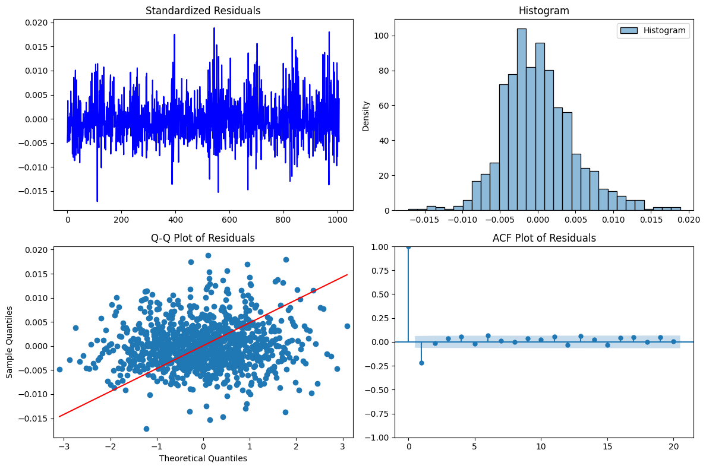
Forecast#
# Se calculan los valores predichos del conjunto de validación
preds = best_model.predict(X_val)
pred_windLSTM = scaler.inverse_transform(preds)
pred_windLSTM = np.squeeze(pred_windLSTM)
9/9 [==============================] - 0s 2ms/step
# Se calcula el error de predicción del conjunto de validación
forecast_accuracy( np.array(pred_windLSTM), np.array(validation_data['ValorObservado'].loc[14:]), "Value")
| MAE | MAPE | MSE | RMSE | |
|---|---|---|---|---|
| Value | 0.509195 | 0.327001 | 0.502548 | 0.708906 |
# Se crean las secuencias de tiempo para el conjunto de test
X_test, y_test = makeXy(test_data['ScaledValorObservado'], 14)
0 13 14
1 14 15
2 15 16
3 16 17
4 17 18
# Se convierten los datos de test en matrices 3D
X_test = X_test.reshape((X_test.shape[0], X_test.shape[1], 1))
print('Shape of 3D arrays:', X_test.shape)
Shape of 3D arrays: (274, 14, 1)
# Se calculan los valores predichos del conjunto de test
preds = best_model.predict(X_test)
pred_windLSTM_test = scaler.inverse_transform(preds)
pred_windLSTM_test = np.squeeze(pred_windLSTM_test)
1/9 [==>...........................] - ETA: 0s
9/9 [==============================] - 0s 2ms/step
# Se calcula el error de predicción del conjunto de test
forecast_accuracy( np.array(pred_windLSTM_test), np.array(test_data['ValorObservado'].loc[14:]), "Value")
| MAE | MAPE | MSE | RMSE | |
|---|---|---|---|---|
| Value | 0.394159 | 0.280169 | 0.325755 | 0.57075 |
Forecast Plot#
# Se calculan los residuales del conjunto de test
residuals_lstm_test = test_data['ValorObservado'].loc[14:] - pred_windLSTM_test
# Se hace la prueba de Ljung-Box
lb_test = acorr_ljungbox(residuals_lstm_test, lags=[144], return_df=True)
print(lb_test)
lb_stat lb_pvalue
144 163.167422 0.130978
# Prueba de BDS (Brock-Dechert-Scheinkman)
bds_stat, bds_p_value = bds(residuals_lstm_test, max_dim=2, epsilon=None, distance=1.5)
print(f"BDS Statistic: {bds_stat}")
print(f"BDS p-value: {bds_p_value}")
BDS Statistic: 2.872064420774621
BDS p-value: 0.004077998268359312
# Gráfica de valores observados vs predicciones
fig, axes = plt.subplots(1, 2, figsize=(16, 5))
ax = sns.lineplot(x=train_data['FechaObservacion'][-288:], y=train_data['ValorObservado'][-288:], label="Entrenamiento", color='g', ax=axes[0])
sns.lineplot(x=validation_data['FechaObservacion'], y=validation_data['ValorObservado'], label="Validación", color='b', ax=axes[0])
sns.lineplot(x=test_data['FechaObservacion'], y=test_data['ValorObservado'], label="Prueba", color='orange', ax=axes[0])
sns.lineplot(x=validation_data['FechaObservacion'].loc[14:], y=pred_windLSTM, label="Pronóstico", color='r', ax=axes[0])
sns.lineplot(x=test_data['FechaObservacion'].loc[14:], y=pred_windLSTM_test, color='r', ax=axes[0])
# Se añade gráfica ampliada
# Se define la posición y tamaño ( [x, y, width, height] cada valor esta entre 0 y 1)
axins = ax.inset_axes([0.2, 0.63, 0.35, 0.35])
# Gráfiga de zona ampliada
sns.lineplot(x=train_data['FechaObservacion'][-288:], y=train_data['ValorObservado'][-288:], color='g', ax=axins)
sns.lineplot(x=validation_data['FechaObservacion'], y=validation_data['ValorObservado'], color='b', ax=axins)
sns.lineplot(x=test_data['FechaObservacion'], y=test_data['ValorObservado'], color='orange', ax=axins)
sns.lineplot(x=validation_data['FechaObservacion'].loc[14:], y=pred_windLSTM, color='r', ax=axins)
sns.lineplot(x=test_data['FechaObservacion'].loc[14:], y=pred_windLSTM_test, color='r', ax=axins)
# Se ponen los limites para la zona ampliada
axins.set_xlim(pd.Timestamp('2019-11-21 12:00:00'), pd.Timestamp('2019-11-21 3:00:00'))
ax.indicate_inset_zoom(axins, edgecolor = 'red', lw=1, ls = 'dashed')
axins.set_xticks([])
axins.set_yticks([])
axins.set_xlabel('')
axins.set_ylabel('')
# ACF Plot
sm.graphics.tsa.plot_acf(residuals_lstm_test, lags=20, ax=axes[1] )
p_value = 0.131
axes[1].text(0.6, 0.9, f'$p$-value Ljung-Box: {p_value:.3f}', transform=axes[1].transAxes, fontsize=11,
bbox=dict(facecolor='white', edgecolor='black', boxstyle='round,pad=0.3'))
axes[1].set_title("ACF Plot of Residuals")
plt.show()
c:\Users\luis_\miniconda3\envs\ml_venv\lib\site-packages\seaborn\_oldcore.py:1119: FutureWarning: use_inf_as_na option is deprecated and will be removed in a future version. Convert inf values to NaN before operating instead.
with pd.option_context('mode.use_inf_as_na', True):
c:\Users\luis_\miniconda3\envs\ml_venv\lib\site-packages\seaborn\_oldcore.py:1119: FutureWarning: use_inf_as_na option is deprecated and will be removed in a future version. Convert inf values to NaN before operating instead.
with pd.option_context('mode.use_inf_as_na', True):
c:\Users\luis_\miniconda3\envs\ml_venv\lib\site-packages\seaborn\_oldcore.py:1119: FutureWarning: use_inf_as_na option is deprecated and will be removed in a future version. Convert inf values to NaN before operating instead.
with pd.option_context('mode.use_inf_as_na', True):
c:\Users\luis_\miniconda3\envs\ml_venv\lib\site-packages\seaborn\_oldcore.py:1119: FutureWarning: use_inf_as_na option is deprecated and will be removed in a future version. Convert inf values to NaN before operating instead.
with pd.option_context('mode.use_inf_as_na', True):
c:\Users\luis_\miniconda3\envs\ml_venv\lib\site-packages\seaborn\_oldcore.py:1119: FutureWarning: use_inf_as_na option is deprecated and will be removed in a future version. Convert inf values to NaN before operating instead.
with pd.option_context('mode.use_inf_as_na', True):
c:\Users\luis_\miniconda3\envs\ml_venv\lib\site-packages\seaborn\_oldcore.py:1119: FutureWarning: use_inf_as_na option is deprecated and will be removed in a future version. Convert inf values to NaN before operating instead.
with pd.option_context('mode.use_inf_as_na', True):
c:\Users\luis_\miniconda3\envs\ml_venv\lib\site-packages\seaborn\_oldcore.py:1119: FutureWarning: use_inf_as_na option is deprecated and will be removed in a future version. Convert inf values to NaN before operating instead.
with pd.option_context('mode.use_inf_as_na', True):
c:\Users\luis_\miniconda3\envs\ml_venv\lib\site-packages\seaborn\_oldcore.py:1119: FutureWarning: use_inf_as_na option is deprecated and will be removed in a future version. Convert inf values to NaN before operating instead.
with pd.option_context('mode.use_inf_as_na', True):
c:\Users\luis_\miniconda3\envs\ml_venv\lib\site-packages\seaborn\_oldcore.py:1119: FutureWarning: use_inf_as_na option is deprecated and will be removed in a future version. Convert inf values to NaN before operating instead.
with pd.option_context('mode.use_inf_as_na', True):
c:\Users\luis_\miniconda3\envs\ml_venv\lib\site-packages\seaborn\_oldcore.py:1119: FutureWarning: use_inf_as_na option is deprecated and will be removed in a future version. Convert inf values to NaN before operating instead.
with pd.option_context('mode.use_inf_as_na', True):
c:\Users\luis_\miniconda3\envs\ml_venv\lib\site-packages\seaborn\_oldcore.py:1119: FutureWarning: use_inf_as_na option is deprecated and will be removed in a future version. Convert inf values to NaN before operating instead.
with pd.option_context('mode.use_inf_as_na', True):
c:\Users\luis_\miniconda3\envs\ml_venv\lib\site-packages\seaborn\_oldcore.py:1119: FutureWarning: use_inf_as_na option is deprecated and will be removed in a future version. Convert inf values to NaN before operating instead.
with pd.option_context('mode.use_inf_as_na', True):
c:\Users\luis_\miniconda3\envs\ml_venv\lib\site-packages\seaborn\_oldcore.py:1119: FutureWarning: use_inf_as_na option is deprecated and will be removed in a future version. Convert inf values to NaN before operating instead.
with pd.option_context('mode.use_inf_as_na', True):
c:\Users\luis_\miniconda3\envs\ml_venv\lib\site-packages\seaborn\_oldcore.py:1119: FutureWarning: use_inf_as_na option is deprecated and will be removed in a future version. Convert inf values to NaN before operating instead.
with pd.option_context('mode.use_inf_as_na', True):
c:\Users\luis_\miniconda3\envs\ml_venv\lib\site-packages\seaborn\_oldcore.py:1119: FutureWarning: use_inf_as_na option is deprecated and will be removed in a future version. Convert inf values to NaN before operating instead.
with pd.option_context('mode.use_inf_as_na', True):
c:\Users\luis_\miniconda3\envs\ml_venv\lib\site-packages\seaborn\_oldcore.py:1119: FutureWarning: use_inf_as_na option is deprecated and will be removed in a future version. Convert inf values to NaN before operating instead.
with pd.option_context('mode.use_inf_as_na', True):
c:\Users\luis_\miniconda3\envs\ml_venv\lib\site-packages\seaborn\_oldcore.py:1119: FutureWarning: use_inf_as_na option is deprecated and will be removed in a future version. Convert inf values to NaN before operating instead.
with pd.option_context('mode.use_inf_as_na', True):
c:\Users\luis_\miniconda3\envs\ml_venv\lib\site-packages\seaborn\_oldcore.py:1119: FutureWarning: use_inf_as_na option is deprecated and will be removed in a future version. Convert inf values to NaN before operating instead.
with pd.option_context('mode.use_inf_as_na', True):
c:\Users\luis_\miniconda3\envs\ml_venv\lib\site-packages\seaborn\_oldcore.py:1119: FutureWarning: use_inf_as_na option is deprecated and will be removed in a future version. Convert inf values to NaN before operating instead.
with pd.option_context('mode.use_inf_as_na', True):
c:\Users\luis_\miniconda3\envs\ml_venv\lib\site-packages\seaborn\_oldcore.py:1119: FutureWarning: use_inf_as_na option is deprecated and will be removed in a future version. Convert inf values to NaN before operating instead.
with pd.option_context('mode.use_inf_as_na', True):
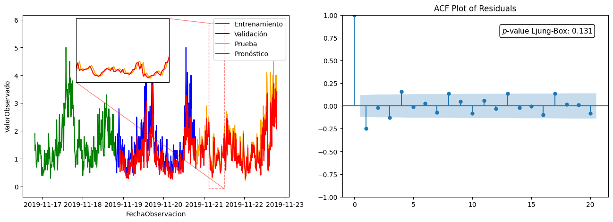
Original model - A-BILSTM#
Selección de Modelo#
# Se crean las secuencias de tiempo para el conjunto de entrenamiento
X_train, y_train = makeXy(train_data['ScaledValorObservado'], 14)
0 13 14
1 14 15
2 15 16
3 16 17
4 17 18
# Se crean las secuencias de tiempo para el conjunto de validación
X_val, y_val = makeXy(validation_data['ScaledValorObservado'], 14)
0 13 14
1 14 15
2 15 16
3 16 17
4 17 18
# Se convierten los datos de entrenamiento y validación en matrices 3D
X_train, X_val = X_train.reshape((X_train.shape[0], X_train.shape[1], 1)), X_val.reshape((X_val.shape[0], X_val.shape[1], 1))
print('Shape of 3D arrays:', X_train.shape, X_val.shape)
Shape of 3D arrays: (383845, 14, 1) (274, 14, 1)
# Definimos la red A-BILSTM
input_layer = Input(shape=(14, 1))
bi_lstm_out = Bidirectional(LSTM(64, input_shape = (14,1), return_sequences=True))(input_layer)
# Mecanismo de atención
query = Dense(128)(bi_lstm_out) # Query de las salidas de LSTM
key = Dense(128)(bi_lstm_out) # Key de las salidas de LSTM
attention = Attention()([query, key]) # Se calculan los puntajes de atención
# Aplica pesos de atención a las salidas de BILSTM
attention_out = Multiply()([bi_lstm_out, attention])
dense_out = Dense(32, activation="relu")(attention_out[:, -1, :]) # Select last time step
dropout_layer = Dropout(0.2)(dense_out)
output_layer = Dense(1)(dropout_layer)
# Resumen del modelo A-BILSTM
model = Model(inputs=input_layer, outputs=output_layer)
model.compile(optimizer="adam", loss="mean_absolute_error")
model.summary()
Model: "model_3"
__________________________________________________________________________________________________
Layer (type) Output Shape Param # Connected to
==================================================================================================
input_4 (InputLayer) [(None, 14, 1)] 0 []
bidirectional (Bidirectional) (None, 14, 128) 33792 ['input_4[0][0]']
dense_6 (Dense) (None, 14, 128) 16512 ['bidirectional[0][0]']
dense_7 (Dense) (None, 14, 128) 16512 ['bidirectional[0][0]']
attention (Attention) (None, 14, 128) 0 ['dense_6[0][0]',
'dense_7[0][0]']
multiply (Multiply) (None, 14, 128) 0 ['bidirectional[0][0]',
'attention[0][0]']
tf.__operators__.getitem (Slic (None, 128) 0 ['multiply[0][0]']
ingOpLambda)
dense_8 (Dense) (None, 32) 4128 ['tf.__operators__.getitem[0][0]'
]
dropout_3 (Dropout) (None, 32) 0 ['dense_8[0][0]']
dense_9 (Dense) (None, 1) 33 ['dropout_3[0][0]']
==================================================================================================
Total params: 70,977
Trainable params: 70,977
Non-trainable params: 0
__________________________________________________________________________________________________
# Función para guardar el modelo para la época en la que la función de pérdida ha sido mínima.
save_weights_at = os.path.join('keras_models', 'wind_speed_AttBiLSTM_weights14.{epoch:02d}-{val_loss:.4f}.keras')
save_best = ModelCheckpoint(save_weights_at, monitor='val_loss', verbose=0,
save_best_only=True, save_weights_only=False, mode='min', save_freq='epoch')
# Se entrena el modelo, se guarda el mejor
history_wspeed14_AttBiLSTM = None
if os.path.exists('history_wspeed14_AttBiLSTM.joblib'):
history_wspeed14_AttBiLSTM = load('history_wspeed14_AttBiLSTM.joblib')
print("El archivo 'history_wspeed14_AttBiLSTM.joblib' ya existe. Se ha cargado el historial del entrenamiento.")
else:
history_wspeed14_AttBiLSTM = model.fit(x=X_train, y=y_train, batch_size=16, epochs=5,
verbose=2, callbacks=[save_best], validation_data=(X_val, y_val),
shuffle=True);
dump(history_wspeed14_AttBiLSTM.history, 'history_wspeed14_AttBiLSTM.joblib')
print("El entrenamiento se ha completado y el historial ha sido guardado en 'history_wspeed14_AttBiLSTM.joblib'.")
Epoch 1/5
23991/23991 - 108s - loss: 0.0072 - val_loss: 0.1224 - 108s/epoch - 4ms/step
Epoch 2/5
23991/23991 - 87s - loss: 0.0037 - val_loss: 0.1223 - 87s/epoch - 4ms/step
Epoch 3/5
23991/23991 - 102s - loss: 0.0037 - val_loss: 0.1226 - 102s/epoch - 4ms/step
Epoch 4/5
23991/23991 - 101s - loss: 0.0037 - val_loss: 0.1225 - 101s/epoch - 4ms/step
Epoch 5/5
23991/23991 - 101s - loss: 0.0037 - val_loss: 0.1231 - 101s/epoch - 4ms/step
El entrenamiento se ha completado y el historial ha sido guardado en 'history_wspeed14_5_AttBiLSTM.joblib'.
# Se carga el mejor modelo
model_dir = 'keras_models'
files = os.listdir(model_dir)
pattern = r"wind_speed_AttBiLSTM_weights14\.(\d+)-([\d\.]+)\.keras"
best_val_loss = float('inf')
best_model_file = None
best_model = None
for file in files:
match = re.match(pattern, file)
if match:
epoch = int(match.group(1))
val_loss = float(match.group(2))
if val_loss < best_val_loss:
best_val_loss = val_loss
best_model_file = file
if best_model_file:
best_model_path = os.path.join(model_dir, best_model_file)
print(f"Cargando el mejor modelo: {best_model_file} con val_loss: {best_val_loss}")
best_model = load_model(best_model_path)
else:
print("No se encontraron archivos de modelos que coincidan con el patrón.")
Cargando el mejor modelo: wind_speed_AttBiLSTM_weights14.02-0.0774.keras con val_loss: 0.0774
Gráfica de diagnóstico#
# Se calculan las predicciones del mejor modelo en el conjunto entrenamiento para calcular los residuales
preds_bilstm_train = best_model.predict(X_train[-1008:])
32/32 [==============================] - 0s 2ms/step
# Residuales de modelo seleccionado
residuals_bilstm = X_train[-1008:,12] - preds_bilstm_train
# Se crea gráfica de diagnóstico
fig, axes = plt.subplots(2, 2, figsize=(12, 8))
# Plot 1: Standardized Residuals
axes[0, 0].plot(range(len(residuals_bilstm)),residuals_bilstm, color="blue")
axes[0, 0].set_title("Standardized Residuals")
# Plot 2: Histogram & KDE
sns.histplot(residuals_bilstm, stat="density", bins=30, kde=False, ax=axes[0, 1], color="blue", label = "Histogram")
xmin, xmax = axes[0, 1].get_xlim()
x = np.linspace(xmin, xmax, 100)
p = norm.pdf(x, 0, 1) # Normal distribution N(0,1)
axes[0, 1].set_title("Histogram")
axes[0, 1].legend()
# Plot 3: Q-Q Plot
sm.qqplot(residuals_bilstm, line="s", ax=axes[1, 0])
axes[1, 0].set_title("Q-Q Plot of Residuals")
# Plot 4: ACF
sm.graphics.tsa.plot_acf(residuals_bilstm, lags=20, ax=axes[1, 1])
axes[1, 1].set_title("ACF Plot of Residuals")
plt.tight_layout()
plt.show()
c:\Users\luis_\miniconda3\envs\ml_venv\lib\site-packages\seaborn\_oldcore.py:1119: FutureWarning: use_inf_as_na option is deprecated and will be removed in a future version. Convert inf values to NaN before operating instead.
with pd.option_context('mode.use_inf_as_na', True):
c:\Users\luis_\miniconda3\envs\ml_venv\lib\site-packages\seaborn\_oldcore.py:1075: FutureWarning: When grouping with a length-1 list-like, you will need to pass a length-1 tuple to get_group in a future version of pandas. Pass `(name,)` instead of `name` to silence this warning.
data_subset = grouped_data.get_group(pd_key)
c:\Users\luis_\miniconda3\envs\ml_venv\lib\site-packages\seaborn\_oldcore.py:1075: FutureWarning: When grouping with a length-1 list-like, you will need to pass a length-1 tuple to get_group in a future version of pandas. Pass `(name,)` instead of `name` to silence this warning.
data_subset = grouped_data.get_group(pd_key)
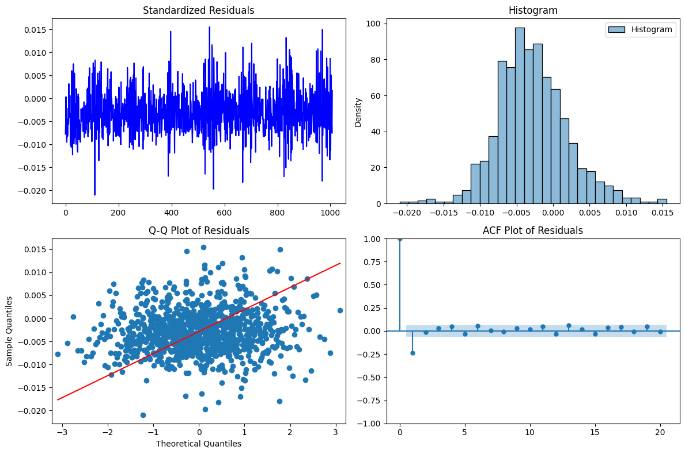
Forecast#
# Se calculan los valores predichos del conjunto de validación
preds = best_model.predict(X_val)
pred_windAttBiLSTM = scaler.inverse_transform(preds)
pred_windAttBiLSTM = np.squeeze(pred_windAttBiLSTM)
9/9 [==============================] - 0s 749us/step
# Se calcula el error de predicción del conjunto de validación
forecast_accuracy( np.array(pred_windAttBiLSTM), np.array(validation_data['ValorObservado'].loc[14:]), "Value")
| MAE | MAPE | MSE | RMSE | |
|---|---|---|---|---|
| Value | 0.486838 | 0.312003 | 0.4761 | 0.69 |
# Se crean las secuencias de tiempo para el conjunto de test
X_test, y_test = makeXy(test_data['ScaledValorObservado'], 14)
0 13 14
1 14 15
2 15 16
3 16 17
4 17 18
# Se convierten los datos de entrenamiento y validación en matrices 3D
X_test = X_test.reshape((X_test.shape[0], X_test.shape[1], 1))
print('Shape of 3D arrays:', X_train.shape)
Shape of 3D arrays: (383845, 14, 1)
# Se calculan los valores predichos del conjunto de test
preds = best_model.predict(X_test)
pred_windAttBiLSTM_test = scaler.inverse_transform(preds)
pred_windAttBiLSTM_test = np.squeeze(pred_windAttBiLSTM_test)
9/9 [==============================] - 0s 625us/step
# Se calcula el error de predicción del conjunto de test
forecast_accuracy( np.array(pred_windAttBiLSTM_test), np.array(test_data['ValorObservado'].loc[14:]), "Value")
| MAE | MAPE | MSE | RMSE | |
|---|---|---|---|---|
| Value | 0.382225 | 0.276724 | 0.307334 | 0.554377 |
Forecast Plot#
# Se calculan los residuales del conjunto de test
residuals_AttBiLSTM_test = test_data['ValorObservado'].loc[14:] - pred_windAttBiLSTM_test
# Se hace la prueba de Ljung-Box
lb_test = acorr_ljungbox(residuals_AttBiLSTM_test, lags=[144], return_df=True)
print(lb_test)
lb_stat lb_pvalue
144 147.993575 0.392661
# Prueba de BDS (Brock-Dechert-Scheinkman)
bds_stat, bds_p_value = bds(residuals_AttBiLSTM_test, max_dim=2, epsilon=None, distance=1.5)
print(f"BDS Statistic: {bds_stat}")
print(f"BDS p-value: {bds_p_value}")
BDS Statistic: 2.179290826760344
BDS p-value: 0.02931007025181864
# Gráfica de valores observados vs predicciones
fig, axes = plt.subplots(1, 2, figsize=(16, 5))
ax = sns.lineplot(x=train_data['FechaObservacion'][-288:], y=train_data['ValorObservado'][-288:], label="Entrenamiento", color='g', ax=axes[0])
sns.lineplot(x=validation_data['FechaObservacion'], y=validation_data['ValorObservado'], label="Validación", color='b', ax=axes[0])
sns.lineplot(x=test_data['FechaObservacion'], y=test_data['ValorObservado'], label="Prueba", color='orange', ax=axes[0])
sns.lineplot(x=validation_data['FechaObservacion'].loc[14:], y=pred_windAttBiLSTM, label="Pronóstico", color='r', ax=axes[0])
sns.lineplot(x=test_data['FechaObservacion'].loc[14:], y=pred_windAttBiLSTM_test, color='r', ax=axes[0])
# Se añade gráfica ampliada
# Se define la posición y tamaño ( [x, y, width, height] cada valor esta entre 0 y 1)
axins = ax.inset_axes([0.2, 0.63, 0.35, 0.35])
# Gráfiga de zona ampliada
sns.lineplot(x=train_data['FechaObservacion'][-288:], y=train_data['ValorObservado'][-288:], color='g', ax=axins)
sns.lineplot(x=validation_data['FechaObservacion'], y=validation_data['ValorObservado'], color='b', ax=axins)
sns.lineplot(x=test_data['FechaObservacion'], y=test_data['ValorObservado'], color='orange', ax=axins)
sns.lineplot(x=validation_data['FechaObservacion'].loc[14:], y=pred_windAttBiLSTM, color='r', ax=axins)
sns.lineplot(x=test_data['FechaObservacion'].loc[14:], y=pred_windAttBiLSTM_test, color='r', ax=axins)
# Se ponen los limites para la zona ampliada
axins.set_xlim(pd.Timestamp('2019-11-21 12:00:00'), pd.Timestamp('2019-11-21 3:00:00'))
ax.indicate_inset_zoom(axins, edgecolor = 'red', lw=1, ls = 'dashed')
axins.set_xticks([])
axins.set_yticks([])
axins.set_xlabel('')
axins.set_ylabel('')
# ACF Plot
sm.graphics.tsa.plot_acf(residuals_AttBiLSTM_test, lags=20, ax=axes[1] )
p_value = lb_test['lb_pvalue'].values.item()
axes[1].text(0.6, 0.9, f'$p$-value Ljung-Box: {p_value:.3f}', transform=axes[1].transAxes, fontsize=11,
bbox=dict(facecolor='white', edgecolor='black', boxstyle='round,pad=0.3'))
axes[1].set_title("ACF Plot of Residuals")
plt.show()
c:\Users\luis_\miniconda3\envs\ml_venv\lib\site-packages\seaborn\_oldcore.py:1119: FutureWarning: use_inf_as_na option is deprecated and will be removed in a future version. Convert inf values to NaN before operating instead.
with pd.option_context('mode.use_inf_as_na', True):
c:\Users\luis_\miniconda3\envs\ml_venv\lib\site-packages\seaborn\_oldcore.py:1119: FutureWarning: use_inf_as_na option is deprecated and will be removed in a future version. Convert inf values to NaN before operating instead.
with pd.option_context('mode.use_inf_as_na', True):
c:\Users\luis_\miniconda3\envs\ml_venv\lib\site-packages\seaborn\_oldcore.py:1119: FutureWarning: use_inf_as_na option is deprecated and will be removed in a future version. Convert inf values to NaN before operating instead.
with pd.option_context('mode.use_inf_as_na', True):
c:\Users\luis_\miniconda3\envs\ml_venv\lib\site-packages\seaborn\_oldcore.py:1119: FutureWarning: use_inf_as_na option is deprecated and will be removed in a future version. Convert inf values to NaN before operating instead.
with pd.option_context('mode.use_inf_as_na', True):
c:\Users\luis_\miniconda3\envs\ml_venv\lib\site-packages\seaborn\_oldcore.py:1119: FutureWarning: use_inf_as_na option is deprecated and will be removed in a future version. Convert inf values to NaN before operating instead.
with pd.option_context('mode.use_inf_as_na', True):
c:\Users\luis_\miniconda3\envs\ml_venv\lib\site-packages\seaborn\_oldcore.py:1119: FutureWarning: use_inf_as_na option is deprecated and will be removed in a future version. Convert inf values to NaN before operating instead.
with pd.option_context('mode.use_inf_as_na', True):
c:\Users\luis_\miniconda3\envs\ml_venv\lib\site-packages\seaborn\_oldcore.py:1119: FutureWarning: use_inf_as_na option is deprecated and will be removed in a future version. Convert inf values to NaN before operating instead.
with pd.option_context('mode.use_inf_as_na', True):
c:\Users\luis_\miniconda3\envs\ml_venv\lib\site-packages\seaborn\_oldcore.py:1119: FutureWarning: use_inf_as_na option is deprecated and will be removed in a future version. Convert inf values to NaN before operating instead.
with pd.option_context('mode.use_inf_as_na', True):
c:\Users\luis_\miniconda3\envs\ml_venv\lib\site-packages\seaborn\_oldcore.py:1119: FutureWarning: use_inf_as_na option is deprecated and will be removed in a future version. Convert inf values to NaN before operating instead.
with pd.option_context('mode.use_inf_as_na', True):
c:\Users\luis_\miniconda3\envs\ml_venv\lib\site-packages\seaborn\_oldcore.py:1119: FutureWarning: use_inf_as_na option is deprecated and will be removed in a future version. Convert inf values to NaN before operating instead.
with pd.option_context('mode.use_inf_as_na', True):
c:\Users\luis_\miniconda3\envs\ml_venv\lib\site-packages\seaborn\_oldcore.py:1119: FutureWarning: use_inf_as_na option is deprecated and will be removed in a future version. Convert inf values to NaN before operating instead.
with pd.option_context('mode.use_inf_as_na', True):
c:\Users\luis_\miniconda3\envs\ml_venv\lib\site-packages\seaborn\_oldcore.py:1119: FutureWarning: use_inf_as_na option is deprecated and will be removed in a future version. Convert inf values to NaN before operating instead.
with pd.option_context('mode.use_inf_as_na', True):
c:\Users\luis_\miniconda3\envs\ml_venv\lib\site-packages\seaborn\_oldcore.py:1119: FutureWarning: use_inf_as_na option is deprecated and will be removed in a future version. Convert inf values to NaN before operating instead.
with pd.option_context('mode.use_inf_as_na', True):
c:\Users\luis_\miniconda3\envs\ml_venv\lib\site-packages\seaborn\_oldcore.py:1119: FutureWarning: use_inf_as_na option is deprecated and will be removed in a future version. Convert inf values to NaN before operating instead.
with pd.option_context('mode.use_inf_as_na', True):
c:\Users\luis_\miniconda3\envs\ml_venv\lib\site-packages\seaborn\_oldcore.py:1119: FutureWarning: use_inf_as_na option is deprecated and will be removed in a future version. Convert inf values to NaN before operating instead.
with pd.option_context('mode.use_inf_as_na', True):
c:\Users\luis_\miniconda3\envs\ml_venv\lib\site-packages\seaborn\_oldcore.py:1119: FutureWarning: use_inf_as_na option is deprecated and will be removed in a future version. Convert inf values to NaN before operating instead.
with pd.option_context('mode.use_inf_as_na', True):
c:\Users\luis_\miniconda3\envs\ml_venv\lib\site-packages\seaborn\_oldcore.py:1119: FutureWarning: use_inf_as_na option is deprecated and will be removed in a future version. Convert inf values to NaN before operating instead.
with pd.option_context('mode.use_inf_as_na', True):
c:\Users\luis_\miniconda3\envs\ml_venv\lib\site-packages\seaborn\_oldcore.py:1119: FutureWarning: use_inf_as_na option is deprecated and will be removed in a future version. Convert inf values to NaN before operating instead.
with pd.option_context('mode.use_inf_as_na', True):
c:\Users\luis_\miniconda3\envs\ml_venv\lib\site-packages\seaborn\_oldcore.py:1119: FutureWarning: use_inf_as_na option is deprecated and will be removed in a future version. Convert inf values to NaN before operating instead.
with pd.option_context('mode.use_inf_as_na', True):
c:\Users\luis_\miniconda3\envs\ml_venv\lib\site-packages\seaborn\_oldcore.py:1119: FutureWarning: use_inf_as_na option is deprecated and will be removed in a future version. Convert inf values to NaN before operating instead.
with pd.option_context('mode.use_inf_as_na', True):
Comparación de modelos#
fig, axes = plt.subplots(1, 2, figsize=(16, 5))
# Gráfica de valores observados vs predicciones
ax = sns.lineplot(x=train_data['FechaObservacion'][-288:], y=train_data['ValorObservado'][-288:], label="Entrenamiento", color='g', ax=axes[0])
sns.lineplot(x=validation_data['FechaObservacion'], y=validation_data['ValorObservado'], label="Validación", color='b', ax=axes[0])
sns.lineplot(x=test_data['FechaObservacion'], y=test_data['ValorObservado'], label="Prueba", color='orange', ax=axes[0])
#ES1
sns.lineplot(x=validation_data['FechaObservacion'], y=yhat_expsmoth1, label="SE(1)", color='r', ax=axes[0])
sns.lineplot(x=test_data['FechaObservacion'], y=yhat_expsmoth1_test, color='r', ax=axes[0])
#ES2
sns.lineplot(x=validation_data['FechaObservacion'], y=yhat_expsmoth2, label="SE(2)", color='purple', ax=axes[0])
sns.lineplot(x=test_data['FechaObservacion'], y=yhat_expsmoth2_test, color='purple', ax=axes[0])
#HW1
sns.lineplot(x=validation_data['FechaObservacion'], y=yhat_hw1, label="Holt-Winters(1)", color='brown', ax=axes[0])
sns.lineplot(x=test_data['FechaObservacion'], y=yhat_hw1_test, color='brown', ax=axes[0])
#HW2
sns.lineplot(x=validation_data['FechaObservacion'], y=yhat_hw2, label="Holt-Winters(2)", color='pink', ax=axes[0])
sns.lineplot(x=test_data['FechaObservacion'], y=yhat_hw2_test, color='pink', ax=axes[0])
#HW3
sns.lineplot(x=validation_data['FechaObservacion'], y=yhat_hw3, label="Holt-Winters(3)", color='gray', ax=axes[0])
sns.lineplot(x=test_data['FechaObservacion'], y=yhat_hw3_test, color='gray', ax=axes[0])
#ARIMA
sns.lineplot(x=validation_data['FechaObservacion'], y=yhat_arima, label="ARIMA", color='cyan', ax=axes[0])
sns.lineplot(x=test_data['FechaObservacion'], y=yhat_arima_test, color='cyan', ax=axes[0])
#GARCH
sns.lineplot(x=validation_data['FechaObservacion'], y=yhat_garch, label="GARCH", color='yellow', ax=axes[0])
sns.lineplot(x=test_data['FechaObservacion'], y=yhat_garch_test, color='yellow', ax=axes[0])
#MLP
sns.lineplot(x=validation_data['FechaObservacion'].loc[14:], y=pred_mlp, label="MLP", color='black', ax=axes[0])
sns.lineplot(x=test_data['FechaObservacion'].loc[14:], y=pred_mlp_test, color='black', ax=axes[0])
#RNN
sns.lineplot(x=validation_data['FechaObservacion'].loc[7:], y=pred_windRNN, label="RNN", color='magenta', ax=axes[0])
sns.lineplot(x=test_data['FechaObservacion'].loc[7:], y=pred_windRNN_test, color='magenta', ax=axes[0])
#LSTM
sns.lineplot(x=validation_data['FechaObservacion'].loc[14:], y=pred_windLSTM, label="LSTM", color='teal', ax=axes[0])
sns.lineplot(x=test_data['FechaObservacion'].loc[14:], y=pred_windLSTM_test, color='teal', ax=axes[0])
#A-BILSTM
sns.lineplot(x=validation_data['FechaObservacion'].loc[14:], y=pred_windAttBiLSTM, label="A-BILSTM", color='darkblue', ax=axes[0])
sns.lineplot(x=test_data['FechaObservacion'].loc[14:], y=pred_windAttBiLSTM_test, color='darkblue', ax=axes[0])
# Se añade gráfica ampliada
# Se define la posición y tamaño ( [x, y, width, height] cada valor esta entre 0 y 1)
axins = ax.inset_axes([0.6, 0.63, 0.35, 0.35])
# Gráfiga de zona ampliada
sns.lineplot(x=train_data['FechaObservacion'][-288:], y=train_data['ValorObservado'][-288:], color='g', ax=axins)
sns.lineplot(x=validation_data['FechaObservacion'], y=validation_data['ValorObservado'], color='b', ax=axins)
sns.lineplot(x=test_data['FechaObservacion'], y=test_data['ValorObservado'], color='orange', ax=axins)
#ES1
sns.lineplot(x=validation_data['FechaObservacion'], y=yhat_expsmoth1, color='r', ax=axins)
sns.lineplot(x=test_data['FechaObservacion'], y=yhat_expsmoth1_test, color='r', ax=axins)
#ES2
sns.lineplot(x=validation_data['FechaObservacion'], y=yhat_expsmoth2, color='purple', ax=axins)
sns.lineplot(x=test_data['FechaObservacion'], y=yhat_expsmoth2_test, color='purple', ax=axins)
#HW1
sns.lineplot(x=validation_data['FechaObservacion'], y=yhat_hw1, color='brown', ax=axins)
sns.lineplot(x=test_data['FechaObservacion'], y=yhat_hw1_test, color='brown', ax=axins)
#HW2
sns.lineplot(x=validation_data['FechaObservacion'], y=yhat_hw2, color='pink', ax=axins)
sns.lineplot(x=test_data['FechaObservacion'], y=yhat_hw2_test, color='pink', ax=axins)
#HW3
sns.lineplot(x=validation_data['FechaObservacion'], y=yhat_hw3, color='gray', ax=axins)
sns.lineplot(x=test_data['FechaObservacion'], y=yhat_hw3_test, color='gray', ax=axins)
#ARIMA
sns.lineplot(x=validation_data['FechaObservacion'], y=yhat_arima, color='cyan', ax=axins)
sns.lineplot(x=test_data['FechaObservacion'], y=yhat_arima_test, color='cyan', ax=axins)
#GARCH
sns.lineplot(x=validation_data['FechaObservacion'], y=yhat_garch, color='yellow', ax=axins)
sns.lineplot(x=test_data['FechaObservacion'], y=yhat_garch_test, color='yellow', ax=axins)
#MLP
sns.lineplot(x=validation_data['FechaObservacion'].loc[14:], y=pred_mlp, color='black', ax=axins)
sns.lineplot(x=test_data['FechaObservacion'].loc[14:], y=pred_mlp_test, color='black', ax=axins)
#RNN
sns.lineplot(x=validation_data['FechaObservacion'].loc[7:], y=pred_windRNN, color='magenta', ax=axins)
sns.lineplot(x=test_data['FechaObservacion'].loc[7:], y=pred_windRNN_test, color='magenta', ax=axins)
#LSTM
sns.lineplot(x=validation_data['FechaObservacion'].loc[14:], y=pred_windLSTM, color='teal', ax=axins)
sns.lineplot(x=test_data['FechaObservacion'].loc[14:], y=pred_windLSTM_test, color='teal', ax=axins)
#A-BILSTM
sns.lineplot(x=validation_data['FechaObservacion'].loc[14:], y=pred_windAttBiLSTM, color='darkblue', ax=axins)
sns.lineplot(x=test_data['FechaObservacion'].loc[14:], y=pred_windAttBiLSTM_test, color='darkblue', ax=axins)
# Se ponen los limites para la zona ampliada
axins.set_xlim(pd.Timestamp('2019-11-22 16:00:00'), pd.Timestamp('2019-11-22 18:00:00'))
ax.indicate_inset_zoom(axins, edgecolor = 'red', lw=1, ls = 'dashed')
axins.set_xticks([])
axins.set_yticks([])
axins.set_xlabel('')
axins.set_ylabel('')
# ACF Plot
sm.graphics.tsa.plot_acf(residuals_AttBiLSTM_test, lags=20, ax=axes[1] )
p_value = 0.393
axes[1].text(0.6, 0.9, f'$p$-value Ljung-Box: {p_value:.3f}', transform=axes[1].transAxes, fontsize=11,
bbox=dict(facecolor='white', edgecolor='black', boxstyle='round,pad=0.3'))
axes[1].set_title("ACF Plot of Residuals of A-BILSTM Model")
plt.show()
c:\Users\luis_\miniconda3\envs\ml_venv\lib\site-packages\seaborn\_oldcore.py:1119: FutureWarning: use_inf_as_na option is deprecated and will be removed in a future version. Convert inf values to NaN before operating instead.
with pd.option_context('mode.use_inf_as_na', True):
c:\Users\luis_\miniconda3\envs\ml_venv\lib\site-packages\seaborn\_oldcore.py:1119: FutureWarning: use_inf_as_na option is deprecated and will be removed in a future version. Convert inf values to NaN before operating instead.
with pd.option_context('mode.use_inf_as_na', True):
c:\Users\luis_\miniconda3\envs\ml_venv\lib\site-packages\seaborn\_oldcore.py:1119: FutureWarning: use_inf_as_na option is deprecated and will be removed in a future version. Convert inf values to NaN before operating instead.
with pd.option_context('mode.use_inf_as_na', True):
c:\Users\luis_\miniconda3\envs\ml_venv\lib\site-packages\seaborn\_oldcore.py:1119: FutureWarning: use_inf_as_na option is deprecated and will be removed in a future version. Convert inf values to NaN before operating instead.
with pd.option_context('mode.use_inf_as_na', True):
c:\Users\luis_\miniconda3\envs\ml_venv\lib\site-packages\seaborn\_oldcore.py:1119: FutureWarning: use_inf_as_na option is deprecated and will be removed in a future version. Convert inf values to NaN before operating instead.
with pd.option_context('mode.use_inf_as_na', True):
c:\Users\luis_\miniconda3\envs\ml_venv\lib\site-packages\seaborn\_oldcore.py:1119: FutureWarning: use_inf_as_na option is deprecated and will be removed in a future version. Convert inf values to NaN before operating instead.
with pd.option_context('mode.use_inf_as_na', True):
c:\Users\luis_\miniconda3\envs\ml_venv\lib\site-packages\seaborn\_oldcore.py:1119: FutureWarning: use_inf_as_na option is deprecated and will be removed in a future version. Convert inf values to NaN before operating instead.
with pd.option_context('mode.use_inf_as_na', True):
c:\Users\luis_\miniconda3\envs\ml_venv\lib\site-packages\seaborn\_oldcore.py:1119: FutureWarning: use_inf_as_na option is deprecated and will be removed in a future version. Convert inf values to NaN before operating instead.
with pd.option_context('mode.use_inf_as_na', True):
c:\Users\luis_\miniconda3\envs\ml_venv\lib\site-packages\seaborn\_oldcore.py:1119: FutureWarning: use_inf_as_na option is deprecated and will be removed in a future version. Convert inf values to NaN before operating instead.
with pd.option_context('mode.use_inf_as_na', True):
c:\Users\luis_\miniconda3\envs\ml_venv\lib\site-packages\seaborn\_oldcore.py:1119: FutureWarning: use_inf_as_na option is deprecated and will be removed in a future version. Convert inf values to NaN before operating instead.
with pd.option_context('mode.use_inf_as_na', True):
c:\Users\luis_\miniconda3\envs\ml_venv\lib\site-packages\seaborn\_oldcore.py:1119: FutureWarning: use_inf_as_na option is deprecated and will be removed in a future version. Convert inf values to NaN before operating instead.
with pd.option_context('mode.use_inf_as_na', True):
c:\Users\luis_\miniconda3\envs\ml_venv\lib\site-packages\seaborn\_oldcore.py:1119: FutureWarning: use_inf_as_na option is deprecated and will be removed in a future version. Convert inf values to NaN before operating instead.
with pd.option_context('mode.use_inf_as_na', True):
c:\Users\luis_\miniconda3\envs\ml_venv\lib\site-packages\seaborn\_oldcore.py:1119: FutureWarning: use_inf_as_na option is deprecated and will be removed in a future version. Convert inf values to NaN before operating instead.
with pd.option_context('mode.use_inf_as_na', True):
c:\Users\luis_\miniconda3\envs\ml_venv\lib\site-packages\seaborn\_oldcore.py:1119: FutureWarning: use_inf_as_na option is deprecated and will be removed in a future version. Convert inf values to NaN before operating instead.
with pd.option_context('mode.use_inf_as_na', True):
c:\Users\luis_\miniconda3\envs\ml_venv\lib\site-packages\seaborn\_oldcore.py:1119: FutureWarning: use_inf_as_na option is deprecated and will be removed in a future version. Convert inf values to NaN before operating instead.
with pd.option_context('mode.use_inf_as_na', True):
c:\Users\luis_\miniconda3\envs\ml_venv\lib\site-packages\seaborn\_oldcore.py:1119: FutureWarning: use_inf_as_na option is deprecated and will be removed in a future version. Convert inf values to NaN before operating instead.
with pd.option_context('mode.use_inf_as_na', True):
c:\Users\luis_\miniconda3\envs\ml_venv\lib\site-packages\seaborn\_oldcore.py:1119: FutureWarning: use_inf_as_na option is deprecated and will be removed in a future version. Convert inf values to NaN before operating instead.
with pd.option_context('mode.use_inf_as_na', True):
c:\Users\luis_\miniconda3\envs\ml_venv\lib\site-packages\seaborn\_oldcore.py:1119: FutureWarning: use_inf_as_na option is deprecated and will be removed in a future version. Convert inf values to NaN before operating instead.
with pd.option_context('mode.use_inf_as_na', True):
c:\Users\luis_\miniconda3\envs\ml_venv\lib\site-packages\seaborn\_oldcore.py:1119: FutureWarning: use_inf_as_na option is deprecated and will be removed in a future version. Convert inf values to NaN before operating instead.
with pd.option_context('mode.use_inf_as_na', True):
c:\Users\luis_\miniconda3\envs\ml_venv\lib\site-packages\seaborn\_oldcore.py:1119: FutureWarning: use_inf_as_na option is deprecated and will be removed in a future version. Convert inf values to NaN before operating instead.
with pd.option_context('mode.use_inf_as_na', True):
c:\Users\luis_\miniconda3\envs\ml_venv\lib\site-packages\seaborn\_oldcore.py:1119: FutureWarning: use_inf_as_na option is deprecated and will be removed in a future version. Convert inf values to NaN before operating instead.
with pd.option_context('mode.use_inf_as_na', True):
c:\Users\luis_\miniconda3\envs\ml_venv\lib\site-packages\seaborn\_oldcore.py:1119: FutureWarning: use_inf_as_na option is deprecated and will be removed in a future version. Convert inf values to NaN before operating instead.
with pd.option_context('mode.use_inf_as_na', True):
c:\Users\luis_\miniconda3\envs\ml_venv\lib\site-packages\seaborn\_oldcore.py:1119: FutureWarning: use_inf_as_na option is deprecated and will be removed in a future version. Convert inf values to NaN before operating instead.
with pd.option_context('mode.use_inf_as_na', True):
c:\Users\luis_\miniconda3\envs\ml_venv\lib\site-packages\seaborn\_oldcore.py:1119: FutureWarning: use_inf_as_na option is deprecated and will be removed in a future version. Convert inf values to NaN before operating instead.
with pd.option_context('mode.use_inf_as_na', True):
c:\Users\luis_\miniconda3\envs\ml_venv\lib\site-packages\seaborn\_oldcore.py:1119: FutureWarning: use_inf_as_na option is deprecated and will be removed in a future version. Convert inf values to NaN before operating instead.
with pd.option_context('mode.use_inf_as_na', True):
c:\Users\luis_\miniconda3\envs\ml_venv\lib\site-packages\seaborn\_oldcore.py:1119: FutureWarning: use_inf_as_na option is deprecated and will be removed in a future version. Convert inf values to NaN before operating instead.
with pd.option_context('mode.use_inf_as_na', True):
c:\Users\luis_\miniconda3\envs\ml_venv\lib\site-packages\seaborn\_oldcore.py:1119: FutureWarning: use_inf_as_na option is deprecated and will be removed in a future version. Convert inf values to NaN before operating instead.
with pd.option_context('mode.use_inf_as_na', True):
c:\Users\luis_\miniconda3\envs\ml_venv\lib\site-packages\seaborn\_oldcore.py:1119: FutureWarning: use_inf_as_na option is deprecated and will be removed in a future version. Convert inf values to NaN before operating instead.
with pd.option_context('mode.use_inf_as_na', True):
c:\Users\luis_\miniconda3\envs\ml_venv\lib\site-packages\seaborn\_oldcore.py:1119: FutureWarning: use_inf_as_na option is deprecated and will be removed in a future version. Convert inf values to NaN before operating instead.
with pd.option_context('mode.use_inf_as_na', True):
c:\Users\luis_\miniconda3\envs\ml_venv\lib\site-packages\seaborn\_oldcore.py:1119: FutureWarning: use_inf_as_na option is deprecated and will be removed in a future version. Convert inf values to NaN before operating instead.
with pd.option_context('mode.use_inf_as_na', True):
c:\Users\luis_\miniconda3\envs\ml_venv\lib\site-packages\seaborn\_oldcore.py:1119: FutureWarning: use_inf_as_na option is deprecated and will be removed in a future version. Convert inf values to NaN before operating instead.
with pd.option_context('mode.use_inf_as_na', True):
c:\Users\luis_\miniconda3\envs\ml_venv\lib\site-packages\seaborn\_oldcore.py:1119: FutureWarning: use_inf_as_na option is deprecated and will be removed in a future version. Convert inf values to NaN before operating instead.
with pd.option_context('mode.use_inf_as_na', True):
c:\Users\luis_\miniconda3\envs\ml_venv\lib\site-packages\seaborn\_oldcore.py:1119: FutureWarning: use_inf_as_na option is deprecated and will be removed in a future version. Convert inf values to NaN before operating instead.
with pd.option_context('mode.use_inf_as_na', True):
c:\Users\luis_\miniconda3\envs\ml_venv\lib\site-packages\seaborn\_oldcore.py:1119: FutureWarning: use_inf_as_na option is deprecated and will be removed in a future version. Convert inf values to NaN before operating instead.
with pd.option_context('mode.use_inf_as_na', True):
c:\Users\luis_\miniconda3\envs\ml_venv\lib\site-packages\seaborn\_oldcore.py:1119: FutureWarning: use_inf_as_na option is deprecated and will be removed in a future version. Convert inf values to NaN before operating instead.
with pd.option_context('mode.use_inf_as_na', True):
c:\Users\luis_\miniconda3\envs\ml_venv\lib\site-packages\seaborn\_oldcore.py:1119: FutureWarning: use_inf_as_na option is deprecated and will be removed in a future version. Convert inf values to NaN before operating instead.
with pd.option_context('mode.use_inf_as_na', True):
c:\Users\luis_\miniconda3\envs\ml_venv\lib\site-packages\seaborn\_oldcore.py:1119: FutureWarning: use_inf_as_na option is deprecated and will be removed in a future version. Convert inf values to NaN before operating instead.
with pd.option_context('mode.use_inf_as_na', True):
c:\Users\luis_\miniconda3\envs\ml_venv\lib\site-packages\seaborn\_oldcore.py:1119: FutureWarning: use_inf_as_na option is deprecated and will be removed in a future version. Convert inf values to NaN before operating instead.
with pd.option_context('mode.use_inf_as_na', True):
c:\Users\luis_\miniconda3\envs\ml_venv\lib\site-packages\seaborn\_oldcore.py:1119: FutureWarning: use_inf_as_na option is deprecated and will be removed in a future version. Convert inf values to NaN before operating instead.
with pd.option_context('mode.use_inf_as_na', True):
c:\Users\luis_\miniconda3\envs\ml_venv\lib\site-packages\seaborn\_oldcore.py:1119: FutureWarning: use_inf_as_na option is deprecated and will be removed in a future version. Convert inf values to NaN before operating instead.
with pd.option_context('mode.use_inf_as_na', True):
c:\Users\luis_\miniconda3\envs\ml_venv\lib\site-packages\seaborn\_oldcore.py:1119: FutureWarning: use_inf_as_na option is deprecated and will be removed in a future version. Convert inf values to NaN before operating instead.
with pd.option_context('mode.use_inf_as_na', True):
c:\Users\luis_\miniconda3\envs\ml_venv\lib\site-packages\seaborn\_oldcore.py:1119: FutureWarning: use_inf_as_na option is deprecated and will be removed in a future version. Convert inf values to NaN before operating instead.
with pd.option_context('mode.use_inf_as_na', True):
c:\Users\luis_\miniconda3\envs\ml_venv\lib\site-packages\seaborn\_oldcore.py:1119: FutureWarning: use_inf_as_na option is deprecated and will be removed in a future version. Convert inf values to NaN before operating instead.
with pd.option_context('mode.use_inf_as_na', True):
c:\Users\luis_\miniconda3\envs\ml_venv\lib\site-packages\seaborn\_oldcore.py:1119: FutureWarning: use_inf_as_na option is deprecated and will be removed in a future version. Convert inf values to NaN before operating instead.
with pd.option_context('mode.use_inf_as_na', True):
c:\Users\luis_\miniconda3\envs\ml_venv\lib\site-packages\seaborn\_oldcore.py:1119: FutureWarning: use_inf_as_na option is deprecated and will be removed in a future version. Convert inf values to NaN before operating instead.
with pd.option_context('mode.use_inf_as_na', True):
c:\Users\luis_\miniconda3\envs\ml_venv\lib\site-packages\seaborn\_oldcore.py:1119: FutureWarning: use_inf_as_na option is deprecated and will be removed in a future version. Convert inf values to NaN before operating instead.
with pd.option_context('mode.use_inf_as_na', True):
c:\Users\luis_\miniconda3\envs\ml_venv\lib\site-packages\seaborn\_oldcore.py:1119: FutureWarning: use_inf_as_na option is deprecated and will be removed in a future version. Convert inf values to NaN before operating instead.
with pd.option_context('mode.use_inf_as_na', True):
c:\Users\luis_\miniconda3\envs\ml_venv\lib\site-packages\seaborn\_oldcore.py:1119: FutureWarning: use_inf_as_na option is deprecated and will be removed in a future version. Convert inf values to NaN before operating instead.
with pd.option_context('mode.use_inf_as_na', True):
c:\Users\luis_\miniconda3\envs\ml_venv\lib\site-packages\seaborn\_oldcore.py:1119: FutureWarning: use_inf_as_na option is deprecated and will be removed in a future version. Convert inf values to NaN before operating instead.
with pd.option_context('mode.use_inf_as_na', True):
c:\Users\luis_\miniconda3\envs\ml_venv\lib\site-packages\seaborn\_oldcore.py:1119: FutureWarning: use_inf_as_na option is deprecated and will be removed in a future version. Convert inf values to NaN before operating instead.
with pd.option_context('mode.use_inf_as_na', True):
c:\Users\luis_\miniconda3\envs\ml_venv\lib\site-packages\seaborn\_oldcore.py:1119: FutureWarning: use_inf_as_na option is deprecated and will be removed in a future version. Convert inf values to NaN before operating instead.
with pd.option_context('mode.use_inf_as_na', True):
c:\Users\luis_\miniconda3\envs\ml_venv\lib\site-packages\seaborn\_oldcore.py:1119: FutureWarning: use_inf_as_na option is deprecated and will be removed in a future version. Convert inf values to NaN before operating instead.
with pd.option_context('mode.use_inf_as_na', True):
c:\Users\luis_\miniconda3\envs\ml_venv\lib\site-packages\seaborn\_oldcore.py:1119: FutureWarning: use_inf_as_na option is deprecated and will be removed in a future version. Convert inf values to NaN before operating instead.
with pd.option_context('mode.use_inf_as_na', True):
c:\Users\luis_\miniconda3\envs\ml_venv\lib\site-packages\seaborn\_oldcore.py:1119: FutureWarning: use_inf_as_na option is deprecated and will be removed in a future version. Convert inf values to NaN before operating instead.
with pd.option_context('mode.use_inf_as_na', True):
c:\Users\luis_\miniconda3\envs\ml_venv\lib\site-packages\seaborn\_oldcore.py:1119: FutureWarning: use_inf_as_na option is deprecated and will be removed in a future version. Convert inf values to NaN before operating instead.
with pd.option_context('mode.use_inf_as_na', True):
c:\Users\luis_\miniconda3\envs\ml_venv\lib\site-packages\seaborn\_oldcore.py:1119: FutureWarning: use_inf_as_na option is deprecated and will be removed in a future version. Convert inf values to NaN before operating instead.
with pd.option_context('mode.use_inf_as_na', True):
c:\Users\luis_\miniconda3\envs\ml_venv\lib\site-packages\seaborn\_oldcore.py:1119: FutureWarning: use_inf_as_na option is deprecated and will be removed in a future version. Convert inf values to NaN before operating instead.
with pd.option_context('mode.use_inf_as_na', True):
c:\Users\luis_\miniconda3\envs\ml_venv\lib\site-packages\seaborn\_oldcore.py:1119: FutureWarning: use_inf_as_na option is deprecated and will be removed in a future version. Convert inf values to NaN before operating instead.
with pd.option_context('mode.use_inf_as_na', True):
c:\Users\luis_\miniconda3\envs\ml_venv\lib\site-packages\seaborn\_oldcore.py:1119: FutureWarning: use_inf_as_na option is deprecated and will be removed in a future version. Convert inf values to NaN before operating instead.
with pd.option_context('mode.use_inf_as_na', True):
c:\Users\luis_\miniconda3\envs\ml_venv\lib\site-packages\seaborn\_oldcore.py:1119: FutureWarning: use_inf_as_na option is deprecated and will be removed in a future version. Convert inf values to NaN before operating instead.
with pd.option_context('mode.use_inf_as_na', True):
c:\Users\luis_\miniconda3\envs\ml_venv\lib\site-packages\seaborn\_oldcore.py:1119: FutureWarning: use_inf_as_na option is deprecated and will be removed in a future version. Convert inf values to NaN before operating instead.
with pd.option_context('mode.use_inf_as_na', True):
c:\Users\luis_\miniconda3\envs\ml_venv\lib\site-packages\seaborn\_oldcore.py:1119: FutureWarning: use_inf_as_na option is deprecated and will be removed in a future version. Convert inf values to NaN before operating instead.
with pd.option_context('mode.use_inf_as_na', True):
c:\Users\luis_\miniconda3\envs\ml_venv\lib\site-packages\seaborn\_oldcore.py:1119: FutureWarning: use_inf_as_na option is deprecated and will be removed in a future version. Convert inf values to NaN before operating instead.
with pd.option_context('mode.use_inf_as_na', True):
c:\Users\luis_\miniconda3\envs\ml_venv\lib\site-packages\seaborn\_oldcore.py:1119: FutureWarning: use_inf_as_na option is deprecated and will be removed in a future version. Convert inf values to NaN before operating instead.
with pd.option_context('mode.use_inf_as_na', True):
c:\Users\luis_\miniconda3\envs\ml_venv\lib\site-packages\seaborn\_oldcore.py:1119: FutureWarning: use_inf_as_na option is deprecated and will be removed in a future version. Convert inf values to NaN before operating instead.
with pd.option_context('mode.use_inf_as_na', True):
c:\Users\luis_\miniconda3\envs\ml_venv\lib\site-packages\seaborn\_oldcore.py:1119: FutureWarning: use_inf_as_na option is deprecated and will be removed in a future version. Convert inf values to NaN before operating instead.
with pd.option_context('mode.use_inf_as_na', True):
c:\Users\luis_\miniconda3\envs\ml_venv\lib\site-packages\seaborn\_oldcore.py:1119: FutureWarning: use_inf_as_na option is deprecated and will be removed in a future version. Convert inf values to NaN before operating instead.
with pd.option_context('mode.use_inf_as_na', True):
c:\Users\luis_\miniconda3\envs\ml_venv\lib\site-packages\seaborn\_oldcore.py:1119: FutureWarning: use_inf_as_na option is deprecated and will be removed in a future version. Convert inf values to NaN before operating instead.
with pd.option_context('mode.use_inf_as_na', True):
c:\Users\luis_\miniconda3\envs\ml_venv\lib\site-packages\seaborn\_oldcore.py:1119: FutureWarning: use_inf_as_na option is deprecated and will be removed in a future version. Convert inf values to NaN before operating instead.
with pd.option_context('mode.use_inf_as_na', True):
c:\Users\luis_\miniconda3\envs\ml_venv\lib\site-packages\seaborn\_oldcore.py:1119: FutureWarning: use_inf_as_na option is deprecated and will be removed in a future version. Convert inf values to NaN before operating instead.
with pd.option_context('mode.use_inf_as_na', True):
c:\Users\luis_\miniconda3\envs\ml_venv\lib\site-packages\seaborn\_oldcore.py:1119: FutureWarning: use_inf_as_na option is deprecated and will be removed in a future version. Convert inf values to NaN before operating instead.
with pd.option_context('mode.use_inf_as_na', True):
c:\Users\luis_\miniconda3\envs\ml_venv\lib\site-packages\seaborn\_oldcore.py:1119: FutureWarning: use_inf_as_na option is deprecated and will be removed in a future version. Convert inf values to NaN before operating instead.
with pd.option_context('mode.use_inf_as_na', True):
c:\Users\luis_\miniconda3\envs\ml_venv\lib\site-packages\seaborn\_oldcore.py:1119: FutureWarning: use_inf_as_na option is deprecated and will be removed in a future version. Convert inf values to NaN before operating instead.
with pd.option_context('mode.use_inf_as_na', True):
c:\Users\luis_\miniconda3\envs\ml_venv\lib\site-packages\seaborn\_oldcore.py:1119: FutureWarning: use_inf_as_na option is deprecated and will be removed in a future version. Convert inf values to NaN before operating instead.
with pd.option_context('mode.use_inf_as_na', True):
c:\Users\luis_\miniconda3\envs\ml_venv\lib\site-packages\seaborn\_oldcore.py:1119: FutureWarning: use_inf_as_na option is deprecated and will be removed in a future version. Convert inf values to NaN before operating instead.
with pd.option_context('mode.use_inf_as_na', True):
c:\Users\luis_\miniconda3\envs\ml_venv\lib\site-packages\seaborn\_oldcore.py:1119: FutureWarning: use_inf_as_na option is deprecated and will be removed in a future version. Convert inf values to NaN before operating instead.
with pd.option_context('mode.use_inf_as_na', True):
c:\Users\luis_\miniconda3\envs\ml_venv\lib\site-packages\seaborn\_oldcore.py:1119: FutureWarning: use_inf_as_na option is deprecated and will be removed in a future version. Convert inf values to NaN before operating instead.
with pd.option_context('mode.use_inf_as_na', True):
c:\Users\luis_\miniconda3\envs\ml_venv\lib\site-packages\seaborn\_oldcore.py:1119: FutureWarning: use_inf_as_na option is deprecated and will be removed in a future version. Convert inf values to NaN before operating instead.
with pd.option_context('mode.use_inf_as_na', True):
c:\Users\luis_\miniconda3\envs\ml_venv\lib\site-packages\seaborn\_oldcore.py:1119: FutureWarning: use_inf_as_na option is deprecated and will be removed in a future version. Convert inf values to NaN before operating instead.
with pd.option_context('mode.use_inf_as_na', True):
c:\Users\luis_\miniconda3\envs\ml_venv\lib\site-packages\seaborn\_oldcore.py:1119: FutureWarning: use_inf_as_na option is deprecated and will be removed in a future version. Convert inf values to NaN before operating instead.
with pd.option_context('mode.use_inf_as_na', True):
c:\Users\luis_\miniconda3\envs\ml_venv\lib\site-packages\seaborn\_oldcore.py:1119: FutureWarning: use_inf_as_na option is deprecated and will be removed in a future version. Convert inf values to NaN before operating instead.
with pd.option_context('mode.use_inf_as_na', True):
c:\Users\luis_\miniconda3\envs\ml_venv\lib\site-packages\seaborn\_oldcore.py:1119: FutureWarning: use_inf_as_na option is deprecated and will be removed in a future version. Convert inf values to NaN before operating instead.
with pd.option_context('mode.use_inf_as_na', True):
c:\Users\luis_\miniconda3\envs\ml_venv\lib\site-packages\seaborn\_oldcore.py:1119: FutureWarning: use_inf_as_na option is deprecated and will be removed in a future version. Convert inf values to NaN before operating instead.
with pd.option_context('mode.use_inf_as_na', True):
c:\Users\luis_\miniconda3\envs\ml_venv\lib\site-packages\seaborn\_oldcore.py:1119: FutureWarning: use_inf_as_na option is deprecated and will be removed in a future version. Convert inf values to NaN before operating instead.
with pd.option_context('mode.use_inf_as_na', True):
c:\Users\luis_\miniconda3\envs\ml_venv\lib\site-packages\seaborn\_oldcore.py:1119: FutureWarning: use_inf_as_na option is deprecated and will be removed in a future version. Convert inf values to NaN before operating instead.
with pd.option_context('mode.use_inf_as_na', True):
c:\Users\luis_\miniconda3\envs\ml_venv\lib\site-packages\seaborn\_oldcore.py:1119: FutureWarning: use_inf_as_na option is deprecated and will be removed in a future version. Convert inf values to NaN before operating instead.
with pd.option_context('mode.use_inf_as_na', True):
c:\Users\luis_\miniconda3\envs\ml_venv\lib\site-packages\seaborn\_oldcore.py:1119: FutureWarning: use_inf_as_na option is deprecated and will be removed in a future version. Convert inf values to NaN before operating instead.
with pd.option_context('mode.use_inf_as_na', True):
c:\Users\luis_\miniconda3\envs\ml_venv\lib\site-packages\seaborn\_oldcore.py:1119: FutureWarning: use_inf_as_na option is deprecated and will be removed in a future version. Convert inf values to NaN before operating instead.
with pd.option_context('mode.use_inf_as_na', True):
c:\Users\luis_\miniconda3\envs\ml_venv\lib\site-packages\seaborn\_oldcore.py:1119: FutureWarning: use_inf_as_na option is deprecated and will be removed in a future version. Convert inf values to NaN before operating instead.
with pd.option_context('mode.use_inf_as_na', True):
c:\Users\luis_\miniconda3\envs\ml_venv\lib\site-packages\seaborn\_oldcore.py:1119: FutureWarning: use_inf_as_na option is deprecated and will be removed in a future version. Convert inf values to NaN before operating instead.
with pd.option_context('mode.use_inf_as_na', True):
c:\Users\luis_\miniconda3\envs\ml_venv\lib\site-packages\seaborn\_oldcore.py:1119: FutureWarning: use_inf_as_na option is deprecated and will be removed in a future version. Convert inf values to NaN before operating instead.
with pd.option_context('mode.use_inf_as_na', True):
c:\Users\luis_\miniconda3\envs\ml_venv\lib\site-packages\seaborn\_oldcore.py:1119: FutureWarning: use_inf_as_na option is deprecated and will be removed in a future version. Convert inf values to NaN before operating instead.
with pd.option_context('mode.use_inf_as_na', True):
c:\Users\luis_\miniconda3\envs\ml_venv\lib\site-packages\seaborn\_oldcore.py:1119: FutureWarning: use_inf_as_na option is deprecated and will be removed in a future version. Convert inf values to NaN before operating instead.
with pd.option_context('mode.use_inf_as_na', True):
c:\Users\luis_\miniconda3\envs\ml_venv\lib\site-packages\seaborn\_oldcore.py:1119: FutureWarning: use_inf_as_na option is deprecated and will be removed in a future version. Convert inf values to NaN before operating instead.
with pd.option_context('mode.use_inf_as_na', True):
c:\Users\luis_\miniconda3\envs\ml_venv\lib\site-packages\seaborn\_oldcore.py:1119: FutureWarning: use_inf_as_na option is deprecated and will be removed in a future version. Convert inf values to NaN before operating instead.
with pd.option_context('mode.use_inf_as_na', True):
c:\Users\luis_\miniconda3\envs\ml_venv\lib\site-packages\seaborn\_oldcore.py:1119: FutureWarning: use_inf_as_na option is deprecated and will be removed in a future version. Convert inf values to NaN before operating instead.
with pd.option_context('mode.use_inf_as_na', True):
c:\Users\luis_\miniconda3\envs\ml_venv\lib\site-packages\seaborn\_oldcore.py:1119: FutureWarning: use_inf_as_na option is deprecated and will be removed in a future version. Convert inf values to NaN before operating instead.
with pd.option_context('mode.use_inf_as_na', True):
c:\Users\luis_\miniconda3\envs\ml_venv\lib\site-packages\seaborn\_oldcore.py:1119: FutureWarning: use_inf_as_na option is deprecated and will be removed in a future version. Convert inf values to NaN before operating instead.
with pd.option_context('mode.use_inf_as_na', True):
c:\Users\luis_\miniconda3\envs\ml_venv\lib\site-packages\seaborn\_oldcore.py:1119: FutureWarning: use_inf_as_na option is deprecated and will be removed in a future version. Convert inf values to NaN before operating instead.
with pd.option_context('mode.use_inf_as_na', True):
c:\Users\luis_\miniconda3\envs\ml_venv\lib\site-packages\seaborn\_oldcore.py:1119: FutureWarning: use_inf_as_na option is deprecated and will be removed in a future version. Convert inf values to NaN before operating instead.
with pd.option_context('mode.use_inf_as_na', True):
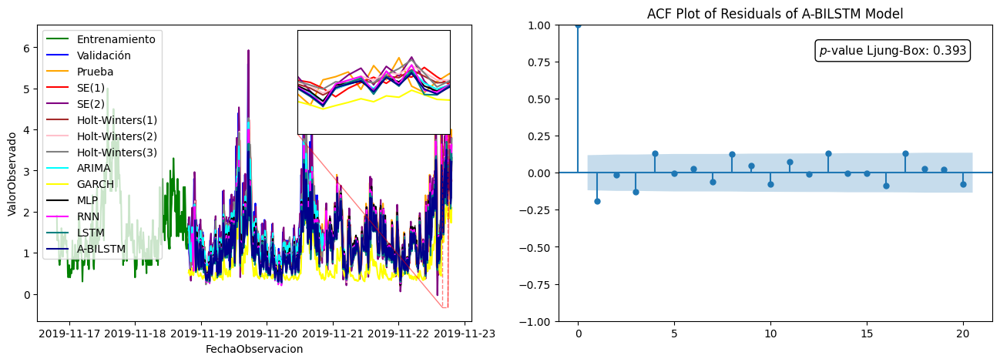
Prueba de Diebold Mariano#
# Función para realizar la prueba de Diebold - Mariano
def dm_test(actual_lst, pred1_lst, pred2_lst, h = 1, crit="MSE", power = 2):
# Routine for checking errors
def error_check():
rt = 0
msg = ""
# Check if h is an integer
if (not isinstance(h, int)):
rt = -1
msg = "The type of the number of steps ahead (h) is not an integer."
return (rt,msg)
# Check the range of h
if (h < 1):
rt = -1
msg = "The number of steps ahead (h) is not large enough."
return (rt,msg)
len_act = len(actual_lst)
len_p1 = len(pred1_lst)
len_p2 = len(pred2_lst)
# Check if lengths of actual values and predicted values are equal
if (len_act != len_p1 or len_p1 != len_p2 or len_act != len_p2):
rt = -1
msg = "Lengths of actual_lst, pred1_lst and pred2_lst do not match."
return (rt,msg)
# Check range of h
if (h >= len_act):
rt = -1
msg = "The number of steps ahead is too large."
return (rt,msg)
# Check if criterion supported
if (crit != "MSE" and crit != "MAPE" and crit != "MAD" and crit != "poly"):
rt = -1
msg = "The criterion is not supported."
return (rt,msg)
# Check if every value of the input lists are numerical values
from re import compile as re_compile
comp = re_compile("^\d+?\.\d+?$")
def compiled_regex(s):
""" Returns True is string is a number. """
if comp.match(s) is None:
return s.isdigit()
return True
for actual, pred1, pred2 in zip(actual_lst, pred1_lst, pred2_lst):
is_actual_ok = compiled_regex(str(abs(actual)))
is_pred1_ok = compiled_regex(str(abs(pred1)))
is_pred2_ok = compiled_regex(str(abs(pred2)))
if (not (is_actual_ok and is_pred1_ok and is_pred2_ok)):
msg = "An element in the actual_lst, pred1_lst or pred2_lst is not numeric."
rt = -1
return (rt,msg)
return (rt,msg)
# Error check
error_code = error_check()
# Raise error if cannot pass error check
if (error_code[0] == -1):
raise SyntaxError(error_code[1])
return
# Import libraries
from scipy.stats import t
import collections
import pandas as pd
import numpy as np
# Initialise lists
e1_lst = []
e2_lst = []
d_lst = []
# convert every value of the lists into real values
actual_lst = pd.Series(actual_lst).apply(lambda x: float(x)).tolist()
pred1_lst = pd.Series(pred1_lst).apply(lambda x: float(x)).tolist()
pred2_lst = pd.Series(pred2_lst).apply(lambda x: float(x)).tolist()
# Length of lists (as real numbers)
T = float(len(actual_lst))
# construct d according to crit
if (crit == "MSE"):
for actual,p1,p2 in zip(actual_lst,pred1_lst,pred2_lst):
e1_lst.append((actual - p1)**2)
e2_lst.append((actual - p2)**2)
for e1, e2 in zip(e1_lst, e2_lst):
d_lst.append(e1 - e2)
elif (crit == "MAD"):
for actual,p1,p2 in zip(actual_lst,pred1_lst,pred2_lst):
e1_lst.append(abs(actual - p1))
e2_lst.append(abs(actual - p2))
for e1, e2 in zip(e1_lst, e2_lst):
d_lst.append(e1 - e2)
elif (crit == "MAPE"):
for actual,p1,p2 in zip(actual_lst,pred1_lst,pred2_lst):
e1_lst.append(abs((actual - p1)/actual))
e2_lst.append(abs((actual - p2)/actual))
for e1, e2 in zip(e1_lst, e2_lst):
d_lst.append(e1 - e2)
elif (crit == "poly"):
for actual,p1,p2 in zip(actual_lst,pred1_lst,pred2_lst):
e1_lst.append(((actual - p1))**(power))
e2_lst.append(((actual - p2))**(power))
for e1, e2 in zip(e1_lst, e2_lst):
d_lst.append(e1 - e2)
# Mean of d
mean_d = pd.Series(d_lst).mean()
# Find autocovariance and construct DM test statistics
def autocovariance(Xi, N, k, Xs):
autoCov = 0
T = float(N)
for i in np.arange(0, N-k):
autoCov += ((Xi[i+k])-Xs)*(Xi[i]-Xs)
return (1/(T))*autoCov
gamma = []
for lag in range(0,h):
gamma.append(autocovariance(d_lst,len(d_lst),lag,mean_d)) # 0, 1, 2
V_d = (gamma[0] + 2*sum(gamma[1:]))/T
DM_stat=V_d**(-0.5)*mean_d
harvey_adj=((T+1-2*h+h*(h-1)/T)/T)**(0.5)
DM_stat = harvey_adj*DM_stat
# Find p-value
p_value = 2*t.cdf(-abs(DM_stat), df = T - 1)
# Construct named tuple for return
dm_return = collections.namedtuple('dm_return', 'DM p_value')
rt = dm_return(DM = DM_stat, p_value = p_value)
return rt
# Diebold Mariano Test - A-BILSTM vs SE(1)
dm_test(test_data['ValorObservado'].loc[14:], pred_windAttBiLSTM_test, yhat_expsmoth1_test[14:] )
dm_return(DM=-1.6527623016402142, p_value=0.09952878139109508)
# Diebold Mariano Test - A-BILSTM vs SE(2)
dm_test(test_data['ValorObservado'].loc[14:], pred_windAttBiLSTM_test, yhat_expsmoth2_test[14:] )
dm_return(DM=-3.4192704108508596, p_value=0.0007237999102245798)
# Diebold Mariano Test - A-BILSTM vs HW(1)
dm_test(test_data['ValorObservado'].loc[14:], pred_windAttBiLSTM_test, yhat_hw1_test[14:] )
dm_return(DM=0.6959803921236067, p_value=0.48703318538854523)
# Diebold Mariano Test - A-BILSTM vs HW(2)
dm_test(test_data['ValorObservado'].loc[14:], pred_windAttBiLSTM_test, yhat_hw2_test[14:] )
dm_return(DM=-0.3665641204621476, p_value=0.7142281123083334)
# Diebold Mariano Test - A-BILSTM vs HW(3)
dm_test(test_data['ValorObservado'].loc[14:], pred_windAttBiLSTM_test, yhat_hw3_test[14:] )
dm_return(DM=-0.7611993019735032, p_value=0.4471950451332961)
# Diebold Mariano Test - A-BILSTM vs ARIMA
dm_test(test_data['ValorObservado'].loc[14:], pred_windAttBiLSTM_test, yhat_arima_test[14:] )
dm_return(DM=2.477972470571796, p_value=0.013818215100339835)
# Diebold Mariano Test - A-BILSTM vs GARCH
dm_test(test_data['ValorObservado'].loc[14:], pred_windAttBiLSTM_test, yhat_garch_test[14:] )
dm_return(DM=-12.011896296257802, p_value=5.7301033466269574e-27)
# Diebold Mariano Test - A-BILSTM vs MLP
dm_test(test_data['ValorObservado'].loc[14:], pred_windAttBiLSTM_test, pred_mlp_test )
dm_return(DM=0.5266798554596847, p_value=0.5988435886509089)
# Diebold Mariano Test - A-BILSTM vs RNN
dm_test(test_data['ValorObservado'].loc[14:], pred_windAttBiLSTM_test, pred_windRNN_test[7:] )
dm_return(DM=-0.635467712773226, p_value=0.5256557120035961)
# Diebold Mariano Test - A-BILSTM vs LSTM
dm_test(test_data['ValorObservado'].loc[14:], pred_windAttBiLSTM_test, pred_windLSTM_test )
dm_return(DM=-3.7837293842963464, p_value=0.00018990544203947033)